漫画改编动漫推荐 原作来源
漫画改编动漫推荐高分漫改番剧，进击的巨人、鬼灭之刃、咒术回战都在这份名单里。本片单共收录1203部作品，包括电子游戏守护队、魔法骑士雷阿斯、青之箱 第二季、攻壳机动队 S.A.C. 2nd GIG、攻壳机动队 STAND ALONE COMPLEX、FX战士久留美、杀手旅店 第二季、桃源暗鬼 ～日光・华严之泷篇～等。可按评分、季度和观看顺序对照，适合查漫改、漫画改编、追漫。
#1电子游戏守护队
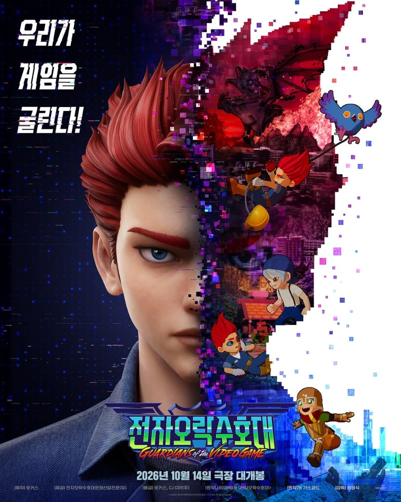
10.0「电子游戏守护队」（2026）是一部剧场版，由엄영식执导，制作LOCUS，类型包括韩国、棒子、漫画改，评分10.0，在本站出现在2份片单中，例如2026年新番总表、漫画改编动漫推荐。页面只做片单对照，不提供播放。电子游戏守护队。2026。韩国、棒子、漫画改。
#2魔法骑士雷阿斯
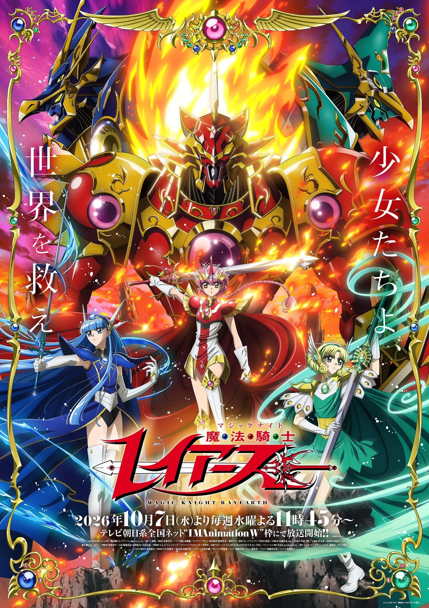
10.0「魔法骑士雷阿斯」（2026）是一部TV，由三浦唯(梅本唯)执导，类型包括机战、奇幻、异世界，评分10.0，在本站出现在2份片单中，例如2026年新番总表、漫画改编动漫推荐。页面只做片单对照，不提供播放。狮堂光、龙咲海、凤凰寺风在户外教学来到东京铁塔时，突然被召唤到了异世界「塞费罗」。在那里，三人得知一直守护「塞费罗」和平与秩序的艾梅洛德公主遭人囚禁，世界正陷入危机。为了拯救「塞费罗」，被艾梅洛德公主召唤的三位少女，究竟能否成为传说中的「魔。
#3青之箱 第二季
「青之箱 第二季」（2026）是一部TV，由酒向大輔执导，类型包括恋爱、校园、运动，评分9.6，在本站出现在2份片单中，例如2026年新番总表、漫画改编动漫推荐。页面只做片单对照，不提供播放。毎朝一番に会いたい人がいる—— 中高一貫のスポーツ強豪校・栄明高校男子バドミントン部の猪股大喜は、 毎日、朝練で顔を合わせる女子バスケットボール部のエースで一つ上の先輩、鹿野千夏に恋をする。 ある日、千夏が親の海外転勤に伴い、猪股家に居候す。
#4攻壳机动队 S.A.C. 2nd GIG
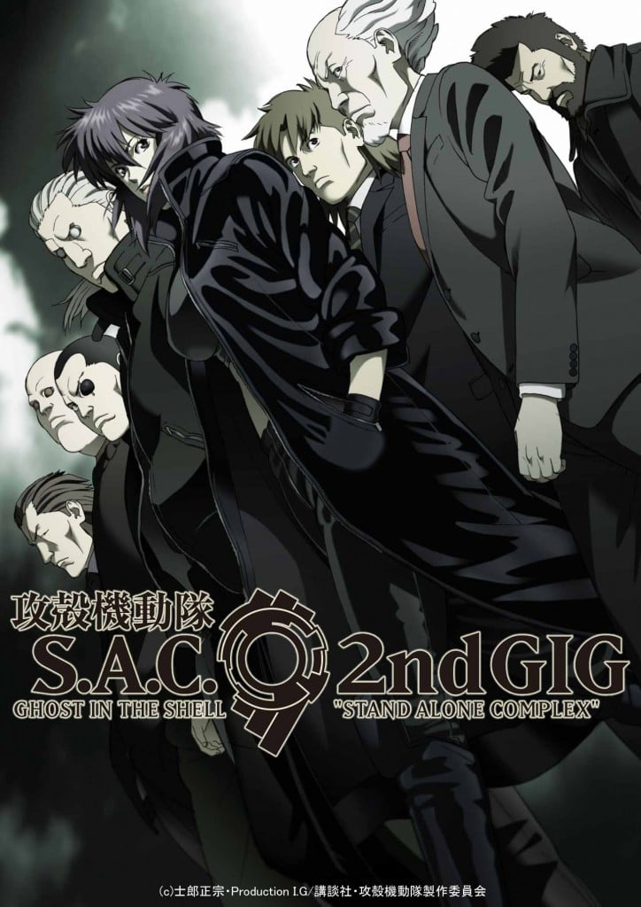
9.2「攻壳机动队 S.A.C. 2nd GIG」（2004）是一部TV，由神山健治执导，制作Production I.G，类型包括科幻、战斗、赛博朋克，评分9.2，在本站出现在6份片单中，例如高分日漫推荐、高分TV动画推荐、高分热血动漫推荐。页面只做片单对照，不提供播放。这个世界距离我们并不遥远，你把它看作是现代社会的镜子亦为不可。 也许：无论人类怎样发展，人性是不会改变的，即使容纳这渺小人性的外壳换作了机器身体亦是一样。 无论怎样，在一个充斥着改装身体的社会里，人类的欲望得以被延续且发扬光大，由此相关的犯。
#5攻壳机动队 STAND ALONE COMPLEX
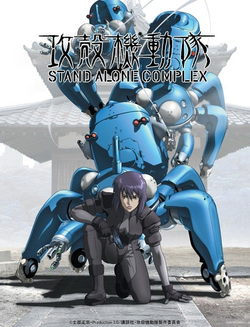
9.1「攻壳机动队 STAND ALONE COMPLEX」（2002）是一部TV，由神山健治执导，制作Production I.G，类型包括科幻、战斗、赛博朋克，评分9.1，在本站出现在6份片单中，例如高分日漫推荐、高分TV动画推荐、高分热血动漫推荐。页面只做片单对照，不提供播放。公元2030的世界，改造人、生化人、机器人等等的存在已经非常普及。主人公草薙素子正是人类最高科技的结晶：只有大脑是人脑，其余身体部分皆为机械装置，外表看起来则是一名美貌兼干练的年轻女性。在这个高科技的世界里，人类通过更换身体的各个部件而达到。
#6FX战士久留美
「FX战士久留美」（2026）是一部TV，由小川優樹执导，类型包括惊悚、搞笑、百合，评分9.0，在本站出现在2份片单中，例如2026年新番总表、漫画改编动漫推荐。页面只做片单对照，不提供播放。念願のFX（外国為替証拠金取引）デビューを果した大学生・福賀くるみ。 その理由は、亡き母がFXで溶かした2000万円を取り戻すため。 「2000万円くらい、簡単に取り返せるようになってやる！」 そう誓った彼女が飛び込んだ先は、一瞬で天国にも。
#7杀手旅店 第二季
「杀手旅店 第二季」（2026）是一部TV，由アミノテツロー执导，制作ブリッジ／アイル，类型包括战斗，评分9.0，在本站出现在2份片单中，例如2026年新番总表、漫画改编动漫推荐。页面只做片单对照，不提供播放。杀手旅店 第二季。2026。战斗。
#8桃源暗鬼 ～日光・华严之泷篇～
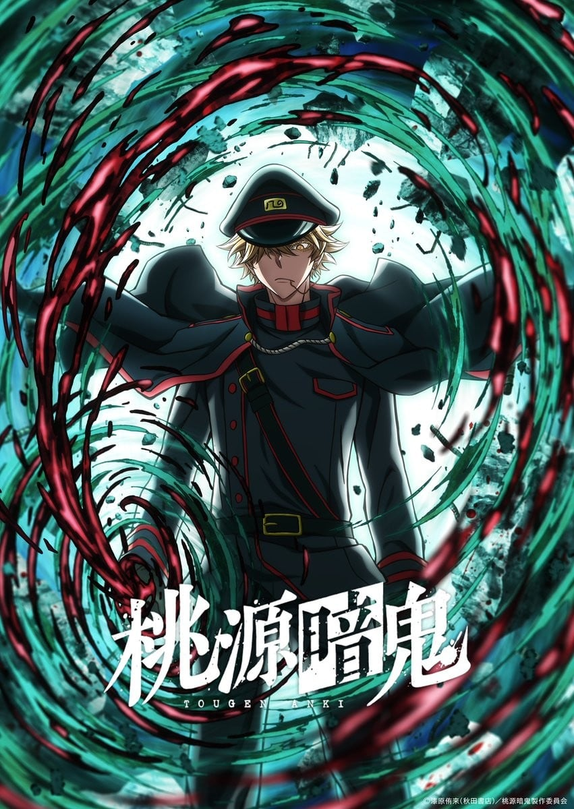
9.0「桃源暗鬼 ～日光・华严之泷篇～」是一部TV，类型包括战斗、热血、奇幻，评分9.0，在本站出现在2份片单中，例如2026年新番总表、漫画改编动漫推荐。页面只做片单对照，不提供播放。「お前は鬼の血を継いでいる……」一部の人間に脈々と受け継がれる「鬼」と「桃太郎」の血。はるか昔、自らの凶暴性を自覚するが故にひっそりと暮らしていた「鬼」だったが、そこに「桃太郎」が攻め入った。それぞれが「桃太郎機関」「鬼機関」を組織し、抗争。
#9龙珠超 比鲁斯
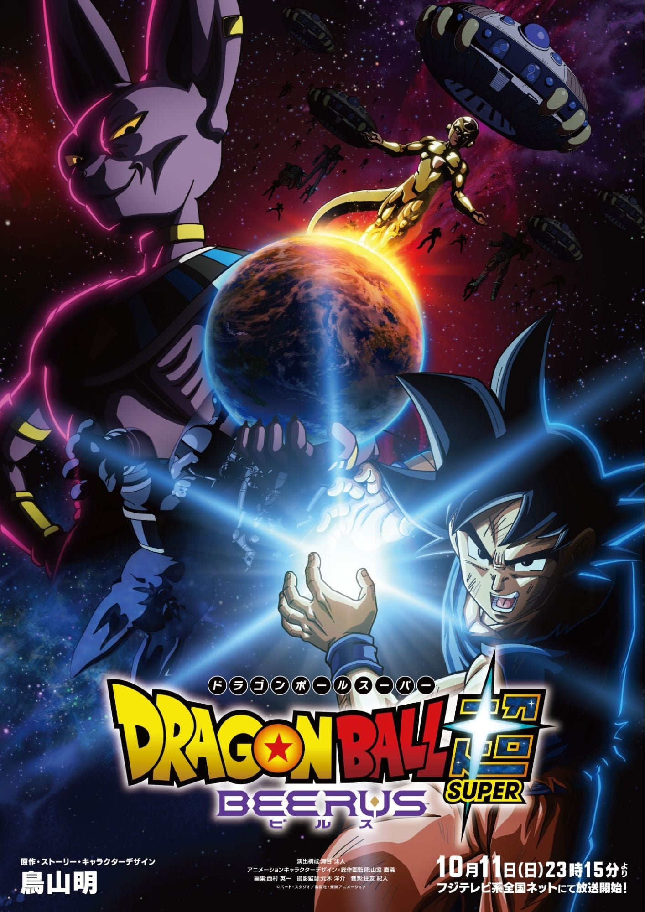
9.0「龙珠超 比鲁斯」（2026）是一部TV，类型包括热血、战斗，评分9.0，在本站出现在2份片单中，例如2026年新番总表、漫画改编动漫推荐。页面只做片单对照，不提供播放。鳥山明先生による世界的大人気漫画作品『DRAGON BALL』（ドラゴンボール）。TVアニメ・映画・ゲームなど様々なメディアミックスでファンを魅了しながら、モンスタータイトルとして全世界で桁外れの人気を誇る。 そして、2026年―。鳥山明先。
#10女友的朋友
「女友的朋友」（2026）是一部TV，由安ドウタカシ[安藤貴史]执导，类型包括恋爱、校园，评分9.0，在本站出现在2份片单中，例如2026年新番总表、漫画改编动漫推荐。页面只做片单对照，不提供播放。私と浮気しない？ 人生で初めてできた、かわいい彼女 でもその友達は、彼女よりも豊満なカラダで 僕を誘惑してきて…。 彼女の友達にこんな風に迫られたら、 あなたはどうしますか？ ヤンマガWebで圧倒的人気を誇る ”じゅら”が描く魅惑の背徳物語。
#11夜樱家的大作战 第二季 第2部分
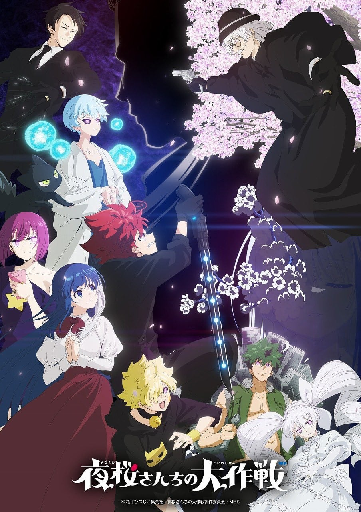
9.0「夜樱家的大作战 第二季 第2部分」（2026）是一部TV，由中津川孝広执导，类型包括战斗、恋爱，评分9.0，在本站出现在2份片单中，例如2026年新番总表、漫画改编动漫推荐。页面只做片单对照，不提供播放。夜樱家的大作战 第二季 第2部分。2026。战斗、恋爱。
#12浪客剑心 追忆篇
 8.9
8.9「浪客剑心 追忆篇」（1999）是一部OVA/WEB，由古橋一浩执导，制作スタジオディーン，类型包括历史、战斗、恋爱，评分8.9，在本站出现在6份片单中，例如高分日漫推荐、高分OVA与WEB动画、高分热血动漫推荐。页面只做片单对照，不提供播放。幕府时代末期，外忧内患，山河动荡，百姓生活困苦，且生命时刻受到威胁。少年心太因其善良纯洁之心感动飞天御剑流高手比古清十郎，被其收入门下学习剑法，更名剑心。 在国家危难之际，年轻的剑心怀揣改变时代的梦想下山，加入奇兵队，日后更被桂小五郎纳入麾。
#13钢之炼金术师 FULLMETAL ALCHEMIST
 8.8
8.8「钢之炼金术师 FULLMETAL ALCHEMIST」（2009）是一部TV，由入江泰浩执导，制作BONES，类型包括热血、战斗、奇幻，评分8.8，在本站出现在6份片单中，例如高分日漫推荐、高分TV动画推荐、高分热血动漫推荐。页面只做片单对照，不提供播放。因思念已故母亲，触犯炼金术中被视为最大禁忌“人体炼成”，而失去一切的兄弟──装上机械铠、有“钢之炼金术师”之称号的哥哥爱德华·爱力克，以及灵魂被固定于铠甲的弟弟阿尔冯斯──两人为取回失去的东西，踏上寻找贤者之石的旅程，并随着接近贤者之石的真。
#14攻壳机动队
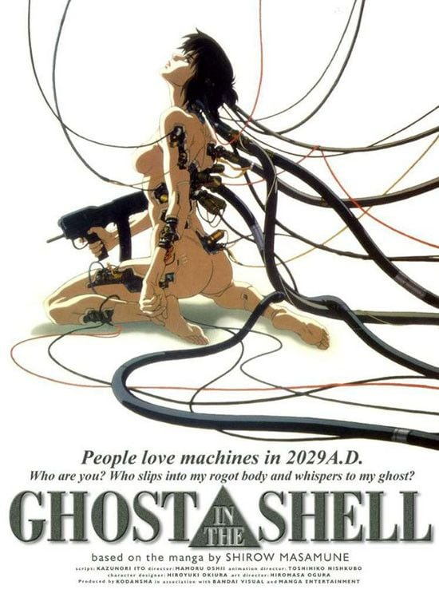
8.8「攻壳机动队」（1995）是一部剧场版，由押井守执导，制作Production I.G，类型包括科幻、赛博朋克、战斗，评分8.8，在本站出现在7份片单中，例如高分日漫推荐、高分动画剧场版推荐、高分热血动漫推荐。页面只做片单对照，不提供播放。2029年，公安九课在市容很像香港的日本城市“新港市”中执行各种秘密任务。九课因为不顾正当程序的自作主张、强硬行事，往往与政府其他部门起冲突，例如负责外交的公安六课就与九课不合。另一方面，九课之中的重要人物，全身是义体的机械生化人草薙素子，。
#153月的狮子 第二季
 8.8
8.8「3月的狮子 第二季」（2017）是一部TV，由新房昭之执导，制作SHAFT，类型包括治愈、日常、校园，评分8.8，在本站出现在7份片单中，例如高分日漫推荐、高分TV动画推荐、高分恋爱动漫推荐。页面只做片单对照，不提供播放。这是有关各式各样的人们取回什么的温馨故事，同时也是有关斗争的故事。主人公桐山零，幼时因为意外事故失去了家人，是一个背负着沉重的孤独的17岁将棋棋士。独自居住在东京旧市镇桐山零遇见了明里、日向、桃三姐妹，少年桐山零因此发生了改变。
#16机动警察剧场版2 和平保卫战
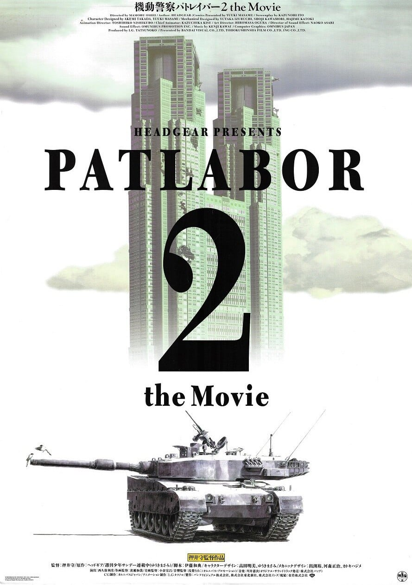
8.8「机动警察剧场版2 和平保卫战」（1993）是一部剧场版，由押井守执导，制作Production I.G，类型包括科幻、机战、战争，评分8.8，在本站出现在7份片单中，例如高分日漫推荐、高分动画剧场版推荐、高分热血动漫推荐。页面只做片单对照，不提供播放。若干年前，陆上自卫队某战车小队在东南亚某处遭遇袭击，除队长柘植行人外，全军覆没。 时间又回到今天，海湾大桥突然爆炸，民间一度陷入恐慌。一位名叫荒川茂树，自称是自卫队调查部的人找到后藤与南云，告诉他本次事件的真实情况是由不明身份的战斗机发射导。
#17进击的巨人 第三季 Part.2
 8.7
8.7「进击的巨人 第三季 Part.2」（2019）是一部TV，由肥塚正史执导，制作WIT STUDIO，类型包括热血、战斗、奇幻，评分8.7，在本站出现在7份片单中，例如高分日漫推荐、高分TV动画推荐、高分热血动漫推荐。页面只做片单对照，不提供播放。历经百年的时光，将人类与外侧世界隔开的墙壁。在墙壁的另一侧，似乎有前所未见的世界延伸开来。火焰之水、冰之大地、砂之雪原……记载在书中的，尽是些激发少年探究心的文字。在时间流转，墙壁被巨人毁坏的现在，人类正一步步接近世界的真相。巨人的真实身份。
#18乒乓
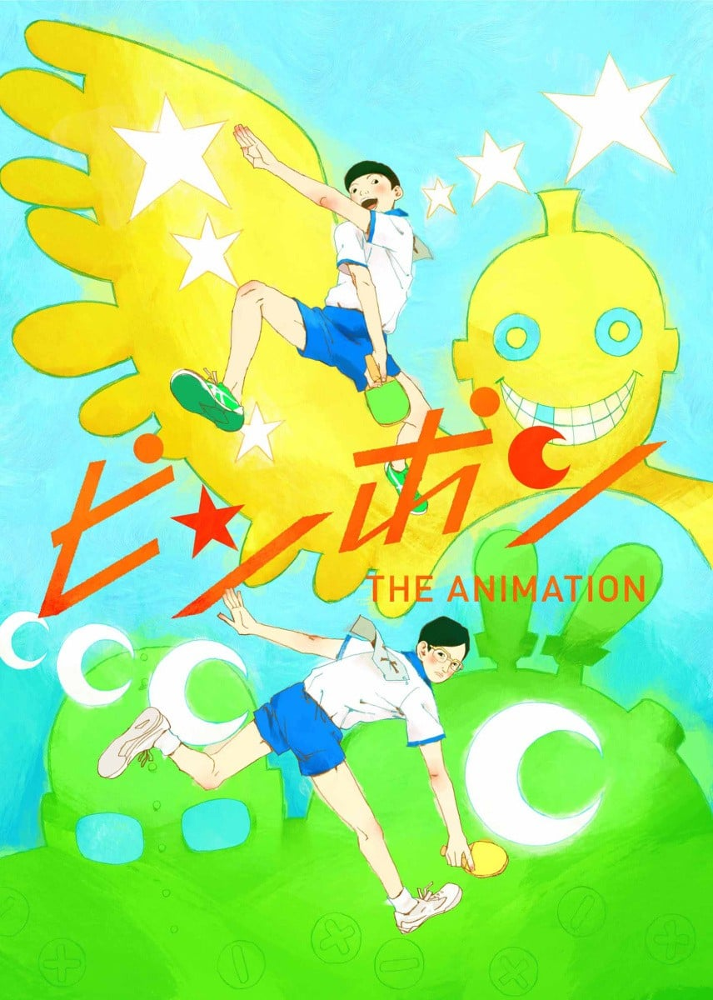
8.7「乒乓」（2014）是一部TV，由湯浅政明执导，制作タツノコプロ，类型包括运动、热血、校园，评分8.7，在本站出现在6份片单中，例如高分日漫推荐、高分TV动画推荐、高分热血动漫推荐。页面只做片单对照，不提供播放。星野裕（阿扁）是乒乓球天才，月本诚（笑匠）则是极具天赋的乒乓球好手。他们俩从小一起长大，同为片濑高中乒乓球队队员。在高校联赛中，遇上来自中国上海的孔文革、上届冠军风间龙一，关于乒乓联赛的成长的故事拉开序幕……。
#19银魂
 8.7
8.7「银魂」（2006）是一部TV，由高松信司（第1～105話）→藤田陽一（第100～201話）执导，制作Sunrise，类型包括搞笑、战斗、喜剧，评分8.7，在本站出现在6份片单中，例如高分日漫推荐、高分TV动画推荐、高分热血动漫推荐。页面只做片单对照，不提供播放。江户时代末期（本作的20年前）, 被称为“天人（あまんと）”的谜之异星人来袭。于是地球人与天人之间的战争瞬即爆发，为数众多的武士和攘夷派志士都参与与天人的战斗，幕府见识到天人强大的实力后，最终向天人低头，放弃武士不管，擅自与天人签订不平等条。
#20银魂'
 8.7
8.7「银魂'」（2011）是一部TV，由藤田陽一执导，制作Sunrise，类型包括搞笑、战斗、热血，评分8.7，在本站出现在7份片单中，例如高分日漫推荐、高分TV动画推荐、高分热血动漫推荐。页面只做片单对照，不提供播放。在2011年4月进行电视动画的第二期播放，集数承接第一期，从第202话开始。第二期动画标题做了小改动。以《银魂'》做为新标题，即在原标题的魂字右上角加了一点。
#21虫师
 8.7
8.7「虫师」（2005）是一部TV，由長濵博史执导，制作ARTLAND，类型包括治愈、奇幻，评分8.7，在本站出现在6份片单中，例如高分日漫推荐、高分TV动画推荐、高分治愈系动漫推荐。页面只做片单对照，不提供播放。这里的虫既不是动植物，也与微生物和菌类不同，是更接近生命原生态的东西。这些东西总称为“虫”。它们的形态和存在都很暧昧，当人与虫的世界重叠之时，发生了超越人类智慧的怪异现象，此时人类才开始知道它们的存在。 所谓生命，并非为威胁异己而存在。只是。
#22攻壳机动队2 无罪
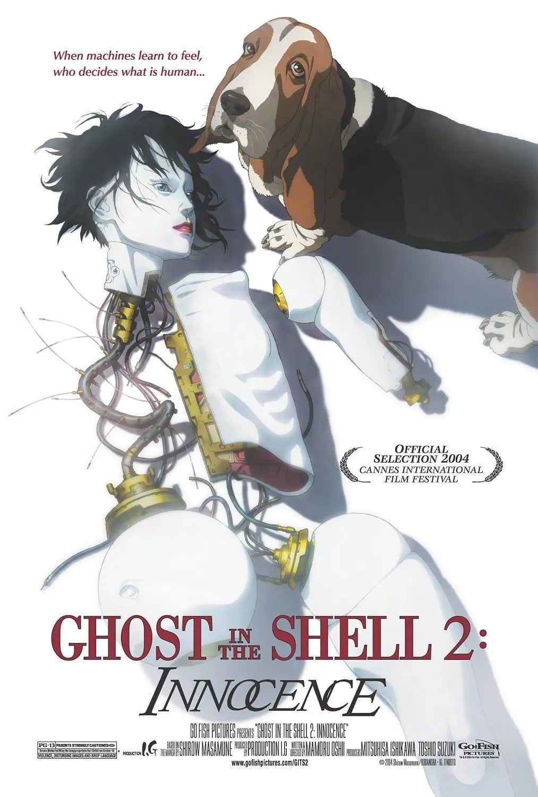
8.7「攻壳机动队2 无罪」（2004）是一部剧场版，由押井守执导，制作Production I.G，类型包括科幻、赛博朋克、战斗，评分8.7，在本站出现在7份片单中，例如高分日漫推荐、高分动画剧场版推荐、高分热血动漫推荐。页面只做片单对照，不提供播放。故事发生在不远的将来，那时科学技术相当发达，出现了纳米机械和生物电脑，Cyborg义体开始全面普及，整个世界由光和电子连接，人脑也可以直接联入网络。 主人公是专门打击恐怖犯罪的政府直属机关公安九课的刑警巴特。巴特其实也是一个机械化了的人类，。
#23哆啦A梦 大山版
 8.7
8.7「哆啦A梦 大山版」（1979）是一部TV，由無 →もとひら了→ 芝山努执导，制作シンエイ動画，类型包括搞笑、科幻、日常，评分8.7，在本站出现在6份片单中，例如高分日漫推荐、高分TV动画推荐、高分治愈系动漫推荐。页面只做片单对照，不提供播放。其实即是大家最熟悉的动画版本，有26年的历史。由于日本的哆啦A梦原声配音为大山羡代，故称之 为“大山版”。 大山版哆啦A梦哆啦A梦25年来连续放映，于八十年代曾创下30%的高收视纪绿。原作者于1997年去世后，由电视编剧自行创作的故事涌现。
#24水星领航员 第三季
 8.7
8.7「水星领航员 第三季」（2008）是一部TV，由佐藤順一执导，制作ハルフィルムメーカー[Hal Film Maker]，类型包括治愈、日常、科幻，评分8.7，在本站出现在8份片单中，例如高分日漫推荐、高分TV动画推荐、高分治愈系动漫推荐。页面只做片单对照，不提供播放。プリマ・ウンディーネを夢見る少女、水無灯里。 「ARIA」シリーズは、灯里をはじめウンディーネたちの日常を情感豊かに描いた、 未来形ヒーリングアニメーション。 待望のサードシーズン「ORIGINATION」のテーマは『始まり』。 これまで修。
#25明日之丈2
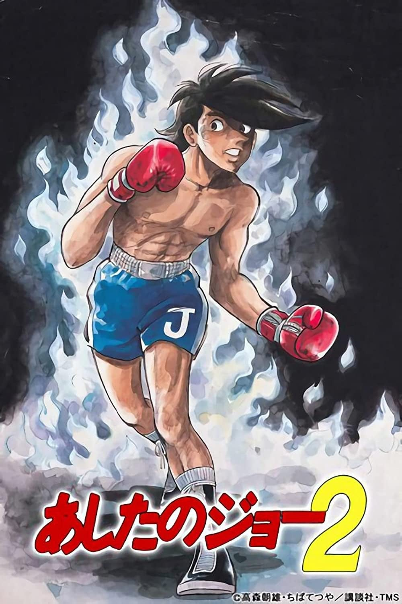
8.7「明日之丈2」（1980）是一部TV，由演出：出﨑統执导，制作東京ムービー新社，类型包括运动、热血、战斗，评分8.7，在本站出现在4份片单中，例如高分日漫推荐、高分TV动画推荐、高分热血动漫推荐。页面只做片单对照，不提供播放。力石徹の死後、逃げるようにリングを去り放浪していた矢吹丈がドヤ街に帰ってきた。再びボクサーの道を歩み始め完全復活したかに思えたが、じつは力石戦でのトラウマからテンプルブローが打てなくなってしまっていた……。カーロス・リベラ、金竜飛ら数々の世。
#26灌篮高手
「灌篮高手」（1993）是一部TV，制作東映アニメーション，类型包括热血、运动、校园，评分8.6，在本站出现在7份片单中，例如高分日漫推荐、高分TV动画推荐、高分热血动漫推荐。页面只做片单对照，不提供播放。樱木花道，湘北高校一年级生。在初中有被50个女生连续抛弃的历史。因第50个女生的一句“我喜欢的是篮球队的小田同学。”而对篮球深恶痛绝。上高中不经意被美少女赤木晴子的一句：“你喜欢篮球吗？”又燃起希望。为得到晴子的芳心，花道不顾一切的加入篮球。
#27虫师 续章 第2部分
 8.6
8.6「虫师 续章 第2部分」（2014）是一部TV，由長濵博史执导，制作ARTLAND，类型包括治愈、奇幻，评分8.6，在本站出现在6份片单中，例如高分日漫推荐、高分TV动画推荐、高分治愈系动漫推荐。页面只做片单对照，不提供播放。虫师 续章 第2部分。2014。治愈、奇幻。
#28葬送的芙莉莲
 8.5
8.5「葬送的芙莉莲」（2023）是一部TV，由斎藤圭一郎执导，制作MADHOUSE，类型包括治愈、奇幻、异世界，评分8.5，在本站出现在8份片单中，例如高分日漫推荐、高分TV动画推荐、高分热血动漫推荐。页面只做片单对照，不提供播放。魔法使芙莉莲和勇者辛美尔等人一起，历经十年的冒险之后击败了魔王，为世界带来了和平。 身为能活上一千多年的精灵族，她于是和辛美尔等人约定再次相见后，踏上了独自一人的旅途。 自那以后，50年过去，芙莉莲又前往拜访辛美尔，相比于和50年前一点没变。
#29日常
 8.5
8.5「日常」（2011）是一部TV，由石原立也执导，制作京都动画，类型包括日常、搞笑、治愈，评分8.5，在本站出现在8份片单中，例如高分日漫推荐、高分TV动画推荐、高分治愈系动漫推荐。页面只做片单对照，不提供播放。故事的主角机器人——东云名乃，一直憧憬成为一名普通的女生，却因为背上的发条而感到自卑，在被自称为博士的8岁萝莉胡乱改造之后，每次都无可奈何地感到自己与“普通女生”的距离越来越远了。除了萝莉博士外，故事还出现了很多非日常角色，如年龄为20岁且。
#30哆啦A梦
 8.5
8.5「哆啦A梦」（2005）是一部TV，由善聡一郎（#1-#421）执导，制作シンエイ動画，类型包括搞笑、科幻、日常，评分8.5，在本站出现在7份片单中，例如高分日漫推荐、高分TV动画推荐、高分治愈系动漫推荐。页面只做片单对照，不提供播放。『ドラえもん』は、藤子・F・不二雄の同名の漫画を原作としたテレビアニメ。2005年（平成17年）からテレビ朝日系列にて放送されている。テレビ朝日・シンエイ動画・ADKエモーションズ制作。 2005年から放送を開始した本シリーズ（以下、本作）。
#31虫师 续章
 8.5
8.5「虫师 续章」（2014）是一部TV，由長濵博史执导，制作ARTLAND，类型包括治愈、奇幻，评分8.5，在本站出现在6份片单中，例如高分日漫推荐、高分TV动画推荐、高分治愈系动漫推荐。页面只做片单对照，不提供播放。另一个世界，住着一群与常见动植物截然不同的生物。远古以来，人们敬畏地称它们为“虫”。当虫的世界和人的世界重合时，虫师银古便会出现。介绍中提到的虫显然不是看上去肉呼呼扭动的小东西，而是一种最接近生命本源，类似灵体的生物。它们有自己的生存方式，。
#32蜂蜜与四叶草II
 8.5
8.5「蜂蜜与四叶草II」（2006）是一部TV，由長井龍雪执导，制作J.C.STAFF，类型包括校园、治愈、恋爱，评分8.5，在本站出现在7份片单中，例如高分日漫推荐、高分TV动画推荐、高分恋爱动漫推荐。页面只做片单对照，不提供播放。在破旧公寓里过着清贫却快乐生活的美大生竹本、真山、森田。某天，三人经花本老师介绍，遇见了转学而来的叶久美。竹本和森田对叶久美一见钟情，却因各自的笨拙无法好好表达自己的心意。另一边，真山虽然清楚山田对自己的好感，却越发思念在打工处认识的建筑设。
#33孤独摇滚！
 8.4
8.4「孤独摇滚！」（2022）是一部TV，由斎藤圭一郎执导，制作CloverWorks，类型包括音乐、日常、搞笑，评分8.4，在本站出现在7份片单中，例如高分日漫推荐、高分TV动画推荐、高分治愈系动漫推荐。页面只做片单对照，不提供播放。作为网络吉他手“吉他英雄”而广受好评的后藤一里，在现实中却是个什么都不会的沟通障碍者。一里有着组建乐队的梦想，但因为不敢向人主动搭话而一直没有成功，直到一天在公园中被伊地知虹夏发现并邀请进入缺少吉他手的“结束乐队”。可是，完全没有和他人合作。
#34死亡笔记
 8.4
8.4「死亡笔记」（2006）是一部TV，由荒木哲郎执导，制作MADHOUSE，类型包括推理、悬疑、奇幻，评分8.4，在本站出现在6份片单中，例如高分日漫推荐、高分TV动画推荐、高分悬疑推理动漫。页面只做片单对照，不提供播放。高三生夜神月意外捡到一本名《DEATH NOTE》的笔记本，并且发现只要写下想要杀死的人的名字，就会变成现实。 月开始利用死亡笔记制裁那些他认为该死的人。接着，笔记的原主人：死神也以旁观者的姿态出现在月面前。 另一方面越来越多的罪犯离奇死亡。
#35轻音少女 第二季
 8.4
8.4「轻音少女 第二季」（2010）是一部TV，由山田尚子执导，制作京都动画，类型包括校园、治愈、日常，评分8.4，在本站出现在8份片单中，例如高分日漫推荐、高分TV动画推荐、高分治愈系动漫推荐。页面只做片单对照，不提供播放。新学年开始，樱丘高中轻音部（轻音乐社）因原有部员全部毕业离校而无法达到部员最低人数（至少4人）。轻音部新成员只有秋山澪和田井中律，这下该如何是好呢？此时，平泽唯在阴差阳错的情况下把“轻音”当作“轻松的音乐”，又因小时候玩响板得到老师表扬，所。
#36轻音少女 剧场版
 8.4
8.4「轻音少女 剧场版」（2011）是一部剧场版，由山田尚子执导，制作京都动画，类型包括治愈、校园、百合，评分8.4，在本站出现在9份片单中，例如高分日漫推荐、高分动画剧场版推荐、高分治愈系动漫推荐。页面只做片单对照，不提供播放。唯、澪、律、䌷四人即将高中毕业，决定进行一次毕业旅行。梓听到信息，也决定跟随学姐们一起旅行。她们各自提出自己想要去的目的地，最终通过抽签选中去伦敦的计划。几位女生在为毕业旅行做准备的同时，关于伦敦的想象也在飞驰……。
#37剧场版 链锯人 蕾塞篇
 8.4
8.4「剧场版 链锯人 蕾塞篇」（2025）是一部剧场版，由吉原達矢执导，制作MAPPA，类型包括战斗、热血、奇幻，评分8.4，在本站出现在10份片单中，例如2025年夏季新番推荐、高分日漫推荐、高分动画剧场版推荐。页面只做片单对照，不提供播放。鏈鋸人首度登上大銀幕，帶來一場史詩級、火力全開的動作冒險，延續這部超人氣動畫系列的精彩篇章。 為了償還父母留下的債務，為黑道打工的惡魔獵人淀治，遭到背叛並慘遭殺害。在意識消散之際，與他感情深厚的鏈鋸惡魔狗波奇塔，與淀治簽訂契約救了他一命，也。
#38异国日记
 8.4
8.4「异国日记」（2026）是一部TV，由大城美幸执导，制作朱夏，类型包括治愈、日常、校园，评分8.4，在本站出现在8份片单中，例如2026年新番总表、高分日漫推荐、高分TV动画推荐。页面只做片单对照，不提供播放。怕生内向的小说家高代槙生，在姐姐夫妻的葬礼上，一时冲动收养了失去双亲的外甥女田汲朝。这段意想不到开始的同居生活，让原本宁静的槙生日常彻底改变。 因为不习惯和别人一起生活，她对与15岁的朝同住一事充满不安。另一方面，失去双亲、失去了自己立足之。
#39排球少年 乌野高校 VS 白鸟泽学园高校
「排球少年 乌野高校 VS 白鸟泽学园高校」（2016）是一部TV，由満仲勧执导，制作Production I.G，类型包括热血、运动、校园，评分8.4，在本站出现在6份片单中，例如高分日漫推荐、高分TV动画推荐、高分热血动漫推荐。页面只做片单对照，不提供播放。第三季仍将继续春高赛，而乌野高校即将迎来地区赛的最终对手——白鸟泽学园高校。 白鸟泽的王牌牛岛若利具有压倒性的力量和高度，带领着充满强者的强队白鸟泽一路横扫对手，被称作宫城县最强的学校，在全国赛中也是佼佼者。 乌鸦们将怎样奋起战胜强大的白鸟。
#40猎人
 8.4
8.4「猎人」（1999）是一部TV，由古橋一浩执导，制作日本アニメーション，类型包括热血、战斗、冒险，评分8.4，在本站出现在6份片单中，例如高分日漫推荐、高分TV动画推荐、高分热血动漫推荐。页面只做片单对照，不提供播放。这是关于一群“猎人”的故事，所谓猎人，就是追求怪物、财宝、悬赏、美食、遗迹、幻兽等稀有存在渡生之人的总称，猎人是精英中的精英，并可以免费享受全球各国公共设施，因此必须通过高难度测试最终拿到执照才有资格成为猎人。全世界也不过只有600名左右猎。
#41蜂蜜与四叶草
 8.4
8.4「蜂蜜与四叶草」（2005）是一部TV，由カサヰケンイチ执导，制作J.C.STAFF，类型包括校园、治愈、恋爱，评分8.4，在本站出现在7份片单中，例如高分日漫推荐、高分TV动画推荐、高分恋爱动漫推荐。页面只做片单对照，不提供播放。美大学生竹本、真山、森田在破旧不堪的公寓中过着贫困而快乐的生活。 有一天，花本老师向3人介绍了他堂兄弟的女儿——小巧、惹人爱怜的插班生花本叶久美。 看到天真烂漫的叶久美，竹本和森田在一瞬间坠入情网。 单纯得令周围人不耐烦、迟钝的竹本，以及用。
#42攻壳机动队 S.A.C. Solid State Society
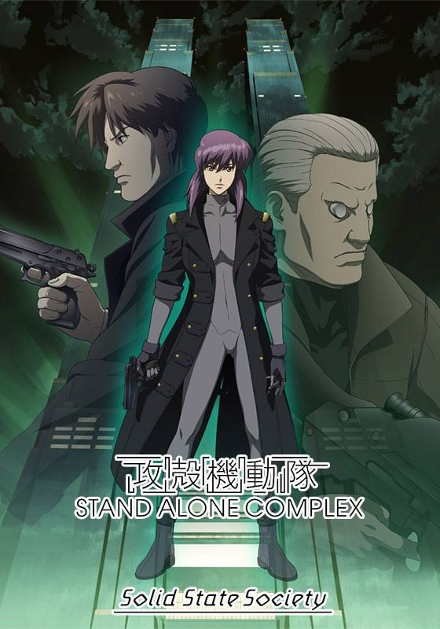
8.4「攻壳机动队 S.A.C. Solid State Society」（2006）是一部TV，由神山健治执导，制作Production I.G，类型包括科幻、赛博朋克、战斗，评分8.4，在本站出现在6份片单中，例如高分日漫推荐、高分TV动画推荐、高分热血动漫推荐。页面只做片单对照，不提供播放。时间为公历2034年，在2nd GIG“难民事件”的两年后。增员20人的新重组的公安九课又再临危受命，调查以梵文刺青为标志的恐怖分子的连续自杀事件以及机场人质劫持事件。从疑犯口中得知，潜藏于事件背后的幕后黑手，是一个被称为“傀儡回”的超高级。
#43攻壳机动队2.0
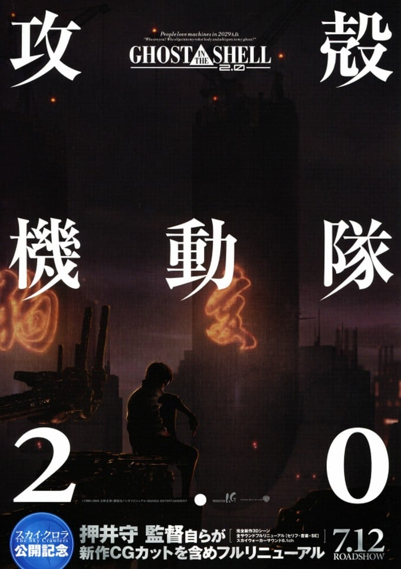
8.4「攻壳机动队2.0」（2008）是一部剧场版，由押井守执导，制作Production I.G，类型包括科幻、赛博朋克、战斗，评分8.4，在本站出现在7份片单中，例如高分日漫推荐、高分动画剧场版推荐、高分热血动漫推荐。页面只做片单对照，不提供播放。2008年7月12日(土)公開。監督押井守。全カットを完全リニューアルした21世紀版攻殻機動隊とも言える作品。人形使い役として、新たに榊原良子がキャスティングされた。
#44轻音少女
 8.3
8.3「轻音少女」（2009）是一部TV，由山田尚子执导，制作京都动画，类型包括校园、治愈、日常，评分8.3，在本站出现在8份片单中，例如高分日漫推荐、高分TV动画推荐、高分治愈系动漫推荐。页面只做片单对照，不提供播放。春天，在新生决定社团的时候，田井中律硬拉着青梅竹马的秋山澪参观轻音部让其入部，在得知前辈们毕业后由于人数不足将面临闭部结局，秋山澪与琴吹紬成为了轻音部成员，但离4人指标还差1位名额。这时，一名弄错了部名的少女平泽唯误打误撞之下填补了最后一位。
#45辉夜大小姐想让我告白-超级浪漫-
 8.3
8.3「辉夜大小姐想让我告白-超级浪漫-」（2022）是一部TV，由畠山守(小俣真一)执导，制作A-1 Pictures，类型包括恋爱、搞笑、校园，评分8.3，在本站出现在8份片单中，例如高分日漫推荐、高分TV动画推荐、高分恋爱动漫推荐。页面只做片单对照，不提供播放。秀知院学园是秀才云集的菁英学校，在学生会中担任学生会副会长·四宫辉夜遇见了学生会长·白银御行。 原以为这两个任谁都觉得很登对的天才应该很快就会在一起，但这两人却因为过高的自尊心导致他们终没能向对方告白。 “该用什么办法才能让对方向自己告白呢。
#46进击的巨人 第三季
 8.3
8.3「进击的巨人 第三季」（2018）是一部TV，由肥塚正史执导，制作WIT STUDIO，类型包括热血、战斗、奇幻，评分8.3，在本站出现在7份片单中，例如高分日漫推荐、高分TV动画推荐、高分热血动漫推荐。页面只做片单对照，不提供播放。历经百年的时光，将人类与外侧世界隔开的墙壁。在墙壁的另一侧，似乎有前所未见的世界延伸开来。火焰之水、冰之大地、砂之雪原……记载在书中的，尽是些激发少年探究心的文字。在时间流转，墙壁被巨人毁坏的现在，人类正一步步接近世界的真相。巨人的真实身份。
#47幸运星
 8.3
8.3「幸运星」（2007）是一部TV，由山本寛(1-4)执导，制作京都动画，类型包括日常、搞笑、校园，评分8.3，在本站出现在9份片单中，例如高分日漫推荐、高分TV动画推荐、高分治愈系动漫推荐。页面只做片单对照，不提供播放。讲述的就是一群喜爱动画、漫画的高中女生们的日常生活。其中主角泉こなた更是为了喜欢的东西会不惜一切的女孩子，整天出入OTAKU们的的圣地秋叶原、到女仆沏茶店打工、天天都有COSPLAY。这样一名标准的AKIBA系OTAKU的她，和相对平常些的。
#48航海王
 8.3
8.3「航海王」（1999）是一部TV，制作東映アニメーション，类型包括热血、战斗、冒险，评分8.3，在本站出现在8份片单中，例如本周追番表、高分日漫推荐、高分TV动画推荐。页面只做片单对照，不提供播放。有个男人，他拥有世界上一切财富、名望和权势，他就是「海盗王」高路德•罗杰。 他在临死前说过这样一句话，让全世界的人都奔向大海： 「想要我的财宝吗？想要的话就拿去吧……！你们去找吧！我把世界上的一切都放在那里了」。 后来世界上的人们将这个宝藏。
#49我心里危险的东西 第二季
 8.3
8.3「我心里危险的东西 第二季」（2024）是一部TV，由赤城博昭执导，制作シンエイ動画，类型包括恋爱、校园、日常，评分8.3，在本站出现在8份片单中，例如高分日漫推荐、高分TV动画推荐、高分恋爱动漫推荐。页面只做片单对照，不提供播放。重度の中二病で陰キャの市川京太郎と、 クラスで人気者の山田杏奈。 美少女らしからぬ行動を繰り出す山田に、 市川は目を離せずにいた。 そんな市川の恋心を知ってか知らずか、 山田は天真爛漫に近づいて来る!! 全く違う世界にいたはずの2人。 しか。
#50来自深渊 烈日的黄金乡
 8.3
8.3「来自深渊 烈日的黄金乡」（2022）是一部TV，由小島正幸执导，制作KINEMA CITRUS，类型包括奇幻、冒险、治愈，评分8.3，在本站出现在7份片单中，例如高分日漫推荐、高分TV动画推荐、高分热血动漫推荐。页面只做片单对照，不提供播放。在已被彻底探索殆尽的世界里，名为「深渊」的大洞是硕果仅存的秘境。 这个深不见底、不知会延伸到何处的巨大垂直洞穴中，不仅栖息着各种稀奇古怪的生物，还沉睡着现今人类所做不出来的珍贵遗物。 「深渊」那处处充满不可思议的神秘样貌，吸引人们前仆后继地。
#51冰海战记
「冰海战记」（2019）是一部TV，由籔田修平执导，制作WIT STUDIO，类型包括历史、战斗、热血，评分8.3，在本站出现在5份片单中，例如高分日漫推荐、高分TV动画推荐、高分热血动漫推荐。页面只做片单对照，不提供播放。公元10世纪末期，以战争掠夺为生的最强民族·维京人席卷世界。 被讴歌为最强战士的儿子·托尔芬，自小便生活在战场上，并向往着梦幻大陆“文兰（VINLAND）”—— 这是一个发生在激荡时代的，真正的战士物语。
#52摇曳露营△ 第二季
 8.3
8.3「摇曳露营△ 第二季」（2021）是一部TV，由京極義昭执导，制作C-Station，类型包括日常、治愈、百合，评分8.3，在本站出现在7份片单中，例如高分日漫推荐、高分TV动画推荐、高分治愈系动漫推荐。页面只做片单对照，不提供播放。这也是，某个冬日的故事。 山梨的女高中生志摩凛，乘着钟爱的机车一路前往滨名湖。从除夕这天开始，久违了的单人露营。从山梨出发前往静冈县磐田。在磐田迎来新年，今天则是第三天。虽然行驶了相当长的距离，但仍然感觉很开心。就在此时，停靠在海边的凛忽然。
#533月的狮子
 8.3
8.3「3月的狮子」（2016）是一部TV，由新房昭之执导，制作SHAFT，类型包括治愈、日常、恋爱，评分8.3，在本站出现在6份片单中，例如高分日漫推荐、高分TV动画推荐、高分恋爱动漫推荐。页面只做片单对照，不提供播放。独自居住在东京旧市街的17岁职业将棋棋士——桐山零。 他是个幼时就因为意外失去家人，怀抱着深沉孤独的少年。 出现在这样的他面前的，是明里、日向、桃三姐妹。 与她们的相处后，零开始发生些许改变——。
#54辉夜大小姐想让我告白 通往大人的阶梯
 8.3
8.3「辉夜大小姐想让我告白 通往大人的阶梯」（2025）是一部TV，由畠山守(小俣真一)执导，制作A-1 Pictures，类型包括恋爱、校园、搞笑，评分8.3，在本站出现在9份片单中，例如2025年秋季新番推荐、高分日漫推荐、高分TV动画推荐。页面只做片单对照，不提供播放。"每一处都令人怀念，而所有的一切都是无可替代的重要回忆。" 这里是聚集秀才的精英学校——秀知院学园。在该校学生会相遇的副会长四宫辉夜与学生会长白银御行，在经历了漫长的恋爱头脑战后，终于确定了彼此关系……。时光流逝——辉夜独自在房间里翻阅着一。
#55风之谷
 8.3
8.3「风之谷」（1984）是一部剧场版，由宫崎骏执导，制作トップクラフト(スタジオジブリ)，类型包括科幻、奇幻、冒险，评分8.3，在本站出现在9份片单中，例如高分日漫推荐、高分动画剧场版推荐、高分治愈系动漫推荐。页面只做片单对照，不提供播放。該作品背景設定在未來，世界的產業文明達致巔峰後，經歷一場稱為「火之七日」的戰爭而毀於一旦。世界被一種由菌類和巨型昆蟲構成，名叫腐海的新生態體系所掩蓋，僅存的人類生活在小面積土地，在面對巨型昆蟲和會釋放瘴氣的腐海森林包圍威脅下積極求存。 風之。
#56棋魂
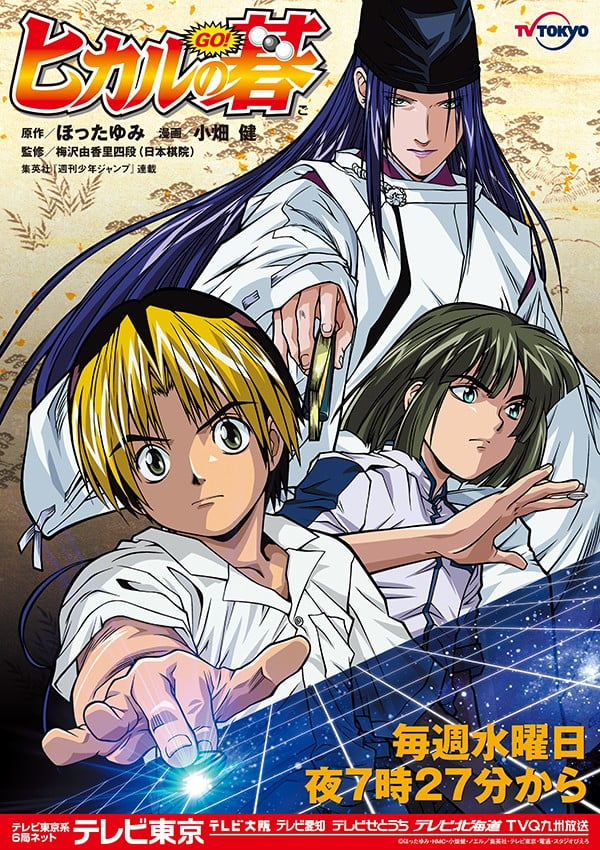
8.3「棋魂」（2001）是一部TV，由西澤晋（1～15）执导，制作ぴえろ，类型包括运动、热血，评分8.3，在本站出现在5份片单中，例如高分日漫推荐、高分TV动画推荐、高分热血动漫推荐。页面只做片单对照，不提供播放。小学生进藤光在爷爷家的仓库玩耍时，邂逅了千年前的棋士藤原佐为的魂魄并被强行附体，对围棋原本毫无兴趣的他要如何与佐为相处？ 在佐为的帮助下进藤光意外打败了棋坛明日之星塔矢亮，受到众人关注的他要如何面对自己的人生之路？ 一段联结千年时光的围棋物。
#57银魂' 延长战
 8.3
8.3「银魂' 延长战」（2012）是一部TV，由藤田陽一执导，制作Sunrise，类型包括搞笑、热血、战斗，评分8.3，在本站出现在7份片单中，例如高分日漫推荐、高分TV动画推荐、高分热血动漫推荐。页面只做片单对照，不提供播放。内容是冷饭“よりぬき銀魂さん”精选集重播加新作动画。
#58蜡笔小新：大人王国的反击
 8.3
8.3「蜡笔小新：大人王国的反击」（2001）是一部剧场版，由原恵一执导，制作シンエイ動画，类型包括搞笑、家庭、治愈，评分8.3，在本站出现在8份片单中，例如高分日漫推荐、高分动画剧场版推荐、高分治愈系动漫推荐。页面只做片单对照，不提供播放。这天在小新居住的春日部附近，突然新开了一家叫“20世纪博”的游乐园。游乐园里到处播放着从前20世纪的旧的电视节目和电影，这里，一切都是从前时光的回放。每一个到了这里的大人，都沉浸在过去的旧时光里，而对小孩子来说，这些的东西一点意思都没有。令。
#59水星领航员 第二季
 8.3
8.3「水星领航员 第二季」（2006）是一部TV，由佐藤順一执导，制作ハルフィルムメーカー[Hal Film Maker]，类型包括治愈、日常、奇幻，评分8.3，在本站出现在8份片单中，例如高分日漫推荐、高分TV动画推荐、高分治愈系动漫推荐。页面只做片单对照，不提供播放。水の星AQUA（アクア）の観光都市ネオ・ヴェネツィアを舞台に、 ウンディーネを夢見る少女、水無灯里。 そんな彼女の柔らかな日常を情感豊かに描いた未来形ヒーリングアニメーション。 「ARIA The ANIMATION」。 そのセカンド・シー。
#60昭和元禄落语心中 -助六再临篇-
 8.3
8.3「昭和元禄落语心中 -助六再临篇-」（2017）是一部TV，由畠山守(小俣真一)执导，制作スタジオディーン，类型包括治愈、历史、剧情，评分8.3，在本站出现在5份片单中，例如高分日漫推荐、高分TV动画推荐、高分治愈系动漫推荐。页面只做片单对照，不提供播放。由于难以忘记在刑务所的落语慰问会中见到的大名人·八云的“死神”，一出狱与太郎便径直前往寄席。拜倒在八云面前，成为他住所的雇工及弟子，磨炼了技艺的与太郎终于升进成为真打。他所继承的名号是第三代助六。为了八云师父，为了小夏，为了改变两人心中的助。
#61水星领航员 The AVVENIRE
 8.3
8.3「水星领航员 The AVVENIRE」（2015）是一部OVA/WEB，由佐藤順一执导，制作TYO Animations[ゆめ太カンパニー]，类型包括治愈、日常、百合，评分8.3，在本站出现在7份片单中，例如高分日漫推荐、高分OVA与WEB动画、高分治愈系动漫推荐。页面只做片单对照，不提供播放。TVアニメ放送開始10周年記念プロジェクト『蒼のカーテンコール』のひとつとしてスタート 9月26日(土)に公開される『ARIA The AVVENIRE』は過去にアニメ化されなかった原作からの２エピソードと、今回このプロジェクトのために原作。
#62剧场版 鬼灭之刃 无限城篇 第二部
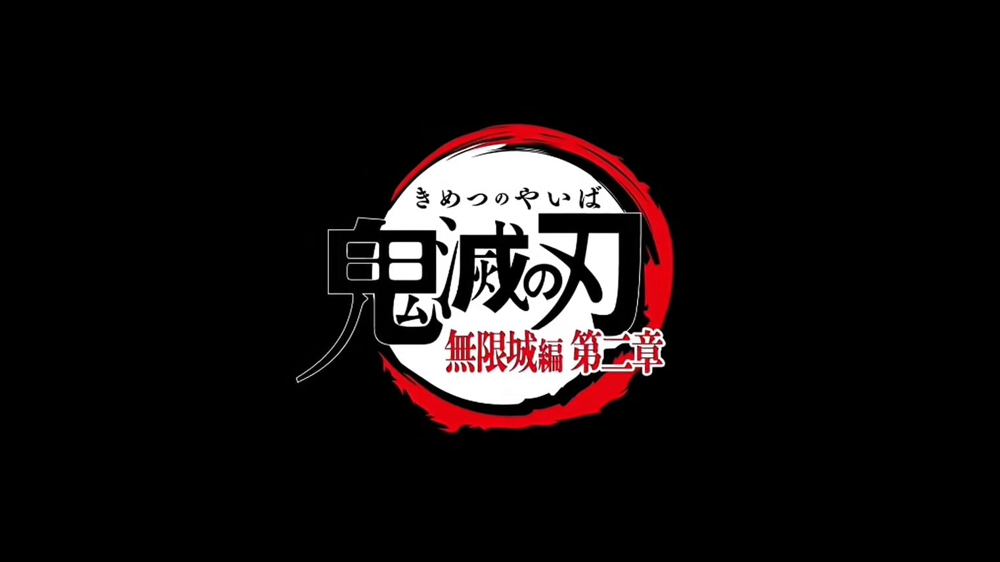
8.3「剧场版 鬼灭之刃 无限城篇 第二部」是一部剧场版，制作ufotable，类型包括战斗、热血、奇幻，评分8.3，在本站出现在3份片单中，例如漫画改编动漫推荐、ufotable作品推荐、《鬼灭之刃》观看顺序。页面只做片单对照，不提供播放。剧场版 鬼灭之刃 无限城篇 第二部。战斗、热血、奇幻。
#63进击的巨人
 8.2
8.2「进击的巨人」（2013）是一部TV，由荒木哲郎执导，制作WIT STUDIO，类型包括热血、战斗、奇幻，评分8.2，在本站出现在7份片单中，例如高分日漫推荐、高分TV动画推荐、高分热血动漫推荐。页面只做片单对照，不提供播放。悠长的历史之中,人类曾一度因被巨人捕食而崩溃。幸存下来的人们建造了一面巨大的墙壁,防止了巨人的入侵。不过,作为“和平”的代价,人类失去了到墙壁的外面去这一“自由”。主人公艾伦·耶格尔对还没见过的外面的世界抱有兴趣。在他正做着到墙壁的外面去这。
#64来自深渊
 8.2
8.2「来自深渊」（2017）是一部TV，由小島正幸执导，制作KINEMA CITRUS，类型包括奇幻、冒险、治愈，评分8.2，在本站出现在7份片单中，例如高分日漫推荐、高分TV动画推荐、高分热血动漫推荐。页面只做片单对照，不提供播放。在每一个角落都被探索完毕的世界中，唯一残留的秘境——大洞穴“深渊”。不知道延续到何方，深不见底的巨大纵向洞穴，栖息着各种奇妙奇怪的生物们，沉眠着现在的人类无法制造的贵重遗物。“深渊”那充满了不可思议的姿态吸引了人们，并驱使人们展开冒险。如此。
#65JOJO的奇妙冒险 星尘斗士 埃及篇
 8.2
8.2「JOJO的奇妙冒险 星尘斗士 埃及篇」（2015）是一部TV，由津田尚克执导，制作david production，类型包括热血、战斗、奇幻，评分8.2，在本站出现在7份片单中，例如高分日漫推荐、高分TV动画推荐、高分热血动漫推荐。页面只做片单对照，不提供播放。在乔斯达家的宿敌·迪奥（DIO）复活的影响下，一位年轻人——空条承太郎，得到了名为“幽波纹（替身）”的能力。为了拯救因迪奥的诅咒而倒下的母亲荷莉，空条承太郎与外祖父·乔瑟夫以及伙伴们，一起为了打倒迪奥而展开旅程。在漫长的旅途当中，承太郎等人。
#66摇曳露营△
 8.2
8.2「摇曳露营△」（2018）是一部TV，由京極義昭执导，制作C-Station，类型包括治愈、百合、日常，评分8.2，在本站出现在7份片单中，例如高分日漫推荐、高分TV动画推荐、高分治愈系动漫推荐。页面只做片单对照，不提供播放。这是，某个冬日的故事。 从静冈搬家到山梨的女高中生·抚子，为了观赏“在千圆纸币上都有图案的富士山”而骑着自行车来到本栖湖，但不巧天气是阴天。没能看到富士山，十分疲倦的抚子当场进入了梦乡。当她醒来的时候，时间已是深夜。在这初来乍到的地方，连回。
#67灵能百分百 第三季
 8.2
8.2「灵能百分百 第三季」（2022）是一部TV，由蓮井隆弘执导，制作BONES，类型包括战斗、热血、搞笑，评分8.2，在本站出现在7份片单中，例如高分日漫推荐、高分TV动画推荐、高分热血动漫推荐。页面只做片单对照，不提供播放。当某种数值来到「100」时，就会爆发的少年――路人。 他的外表极为普通，却是个强悍的超能力者。 他在神棍师父――灵幻新隆经营的灵能咨询所帮忙处理麻烦的委托，在这样的日子中，他希望的安稳日子会到来吗？然而超能力却会以青春为原动力失控！ 世界引。
#68魔卡少女樱
 8.2
8.2「魔卡少女樱」（1998）是一部TV，由浅香守生执导，制作MADHOUSE，类型包括治愈、校园、奇幻，评分8.2，在本站出现在9份片单中，例如高分日漫推荐、高分TV动画推荐、高分恋爱动漫推荐。页面只做片单对照，不提供播放。故事讲述10岁的木之本樱打开了她父亲所藏的魔法书，意外把有魔法力量的“库洛牌”释放。由于她把卡弄失，要负责寻回，于是看守库洛牌守护兽可鲁贝洛斯，便给予小樱封印之杖，任命她为“库洛魔法使”，陪同并帮助小樱寻找回魔法卡。随后的故事，围绕着小樱寻。
#69钢之炼金术师
 8.2
8.2「钢之炼金术师」（2003）是一部TV，由水島精二执导，制作BONES，类型包括热血、奇幻、战斗，评分8.2，在本站出现在6份片单中，例如高分日漫推荐、高分TV动画推荐、高分热血动漫推荐。页面只做片单对照，不提供播放。爱德华德和他的弟弟阿尔芬斯十分思念在他们还小的时候亡故的母亲，实行了炼金术中最大的禁忌——可以将死者复活的人体炼成。 可是炼成失败，爱德华德失去了左腿，阿尔芬斯则失去了全身。爱德华德好不容易才以牺牲自己的右臂为代价将弟弟的灵魂炼成，并定着在。
#70排球少年 第二季
「排球少年 第二季」（2015）是一部TV，由満仲勧执导，制作Production I.G，类型包括热血、运动、校园，评分8.2，在本站出现在6份片单中，例如高分日漫推荐、高分TV动画推荐、高分热血动漫推荐。页面只做片单对照，不提供播放。排球少年 第二季。2015。热血、运动、校园。
#71皇家国教骑士团 OVA
 8.2
8.2「皇家国教骑士团 OVA」（2006）是一部OVA/WEB，由ところともかず（#1 - #4）执导，制作サテライト（#1 - #4）→MADHOUSE（#5 - #7）→グラフィニカ（#8-10），类型包括战争、战斗、奇幻，评分8.2，在本站出现在6份片单中，例如高分日漫推荐、高分OVA与WEB动画、高分热血动漫推荐。页面只做片单对照，不提供播放。在一次对治某村庄食尸鬼的超自然事件时，平凡女警女警西洛斯·维多利亚遭到袭击，奄奄一息，关键时刻吸血鬼杀手阿尔卡特出现，铲除食尸鬼，并将西洛斯变成了吸血鬼的一员，她顺理成章也接触到了阿尔卡特背后的神秘组织，即为维护英国基督新教、与反基督怪物作。
#72猎人
 8.2
8.2「猎人」（2011）是一部TV，由神志那弘志执导，制作MADHOUSE，类型包括热血、战斗、冒险，评分8.2，在本站出现在6份片单中，例如高分日漫推荐、高分TV动画推荐、高分热血动漫推荐。页面只做片单对照，不提供播放。名(坑)作重制。 主人公小杰自小在鲸鱼岛长大，直到9岁那一年，在森林里被一个青年男子搭救，从他口中小杰得知自己的父亲还活着且职业是猎人。于是小杰决定成为猎人，从这里开始找寻他父亲的踪迹。靠这样一种信念开始了冒险旅途，并在旅途当中结交好友，不。
#73悠哉日常大王 Nonstop
 8.2
8.2「悠哉日常大王 Nonstop」（2021）是一部TV，由川面真也执导，制作SILVER LINK.，类型包括日常、治愈、百合，评分8.2，在本站出现在7份片单中，例如高分日漫推荐、高分TV动画推荐、高分治愈系动漫推荐。页面只做片单对照，不提供播放。“旭丘分校”的学生，仅有五人。虽然学年性格各不相同，但大家一起做菜、一起捉虫、一起试着练习乐器……春夏秋冬四季变换的乡村生活，一直都那么让人兴奋。虽然一如既往地平和，但在欢笑和感动当中，心中也变得温暖起来。悠哉悠哉的几位成员所度过的日常，再。
#74龙珠
 8.2
8.2「龙珠」（1986）是一部TV，制作東映アニメーション，类型包括热血、战斗、冒险，评分8.2，在本站出现在6份片单中，例如高分日漫推荐、高分TV动画推荐、高分热血动漫推荐。页面只做片单对照，不提供播放。鸟山明最早在《少年JUMP》周刊连载《龙珠》时，该漫画早期（1-194篇）比较偏重于搞笑，而且打斗一般并不在这儿占主流，因此这个时期，鸟山明的画风对人物性格刻画得很精准，可以让人爆笑起来，因此东映动画公司决定把这个时期的漫画改成一部153集。
#75爆漫王。3
「爆漫王。3」（2012）是一部TV，由カサヰケンイチ执导，制作J.C.STAFF，类型包括热血、恋爱，评分8.2，在本站出现在6份片单中，例如高分日漫推荐、高分TV动画推荐、高分热血动漫推荐。页面只做片单对照，不提供播放。ついに「週刊少年ジャック」での新連載『PCP』で、悲願の読者アンケート１位を勝ち取った真城最高と高木秋人。 しかし「亜城木夢叶」として大きく成長を遂げつづける二人を、かつてない試練が襲う！ 新たなライバルの出現、コンビ分裂の危機という困難と。
#76银魂°
 8.2
8.2「银魂°」（2015）是一部TV，由宮脇千鶴执导，制作BN Pictures，类型包括搞笑、热血、战斗，评分8.2，在本站出现在7份片单中，例如高分日漫推荐、高分TV动画推荐、高分热血动漫推荐。页面只做片单对照，不提供播放。银魂°。2015。搞笑、热血、战斗。
#77水星领航员
 8.2
8.2「水星领航员」（2005）是一部TV，由佐藤順一执导，制作ハルフィルムメーカー[Hal Film Maker]，类型包括治愈、日常、奇幻，评分8.2，在本站出现在7份片单中，例如高分日漫推荐、高分TV动画推荐、高分治愈系动漫推荐。页面只做片单对照，不提供播放。本故事的时代背景在24世纪。彼时人类在火星上进行行星地球化改造工程，由于两极冰帽融解的水量超乎预期，全星球有90%被海洋覆盖，因而被人称呼为「水星」（AQUA）。在此星球上有个以过去被称为水都的威尼斯为范本所建造的城市新威尼斯（Neo-Ve。
#78怪物
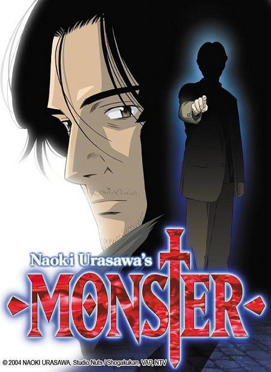
8.2「怪物」（2004）是一部TV，由小島正幸执导，制作MADHOUSE，类型包括悬疑、战争、剧情，评分8.2，在本站出现在5份片单中，例如高分日漫推荐、高分TV动画推荐、高分悬疑推理动漫。页面只做片单对照，不提供播放。1986年，一名头部被子弹击中的重伤少年送到西德・杜塞尔多夫医院中。日本外科医生天马忽视院长的命令，以他天才般的手术技术的拯救了那位少年。 实行共产主义的世界为了推倒西德而进行着异常的阴谋。捷克斯洛伐克秘密警察法兰斯·波纳帕达等人，教育孩童。
#79歌牌情缘 第二季
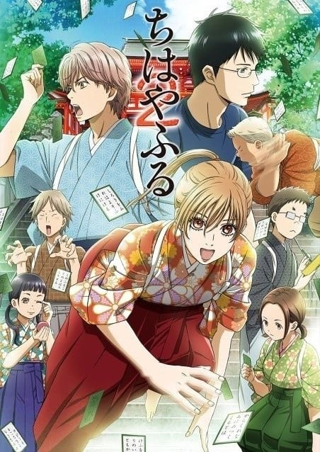
8.2「歌牌情缘 第二季」（2013）是一部TV，由浅香守生执导，制作MADHOUSE，类型包括恋爱、热血、运动，评分8.2，在本站出现在7份片单中，例如高分日漫推荐、高分TV动画推荐、高分热血动漫推荐。页面只做片单对照，不提供播放。成为二年级学生的千早和太一等人，首次迎来后辈，在经历着作为前辈的痛苦与喜悦的同时，目标也直指竞争对手学校的强敌。更加充满激情的瑞泽高校歌牌部，将会一如既往地展开活力四射的青春群像剧——。
#80龙珠Z
 8.2
8.2「龙珠Z」（1989）是一部TV，制作東映アニメーション，类型包括热血、战斗、奇幻，评分8.2，在本站出现在6份片单中，例如高分日漫推荐、高分TV动画推荐、高分热血动漫推荐。页面只做片单对照，不提供播放。龙珠Z（日文：ドラゴンボールZ，英文：DRAGON BALL Z）是指日本漫画家鸟山明的漫画《七龙珠》第195篇-第519篇，因为这期间鸟山明的漫画风格转为超激战，而且故事也和前194篇风格没有太大变化，因此由东映动画公司改编成为独立的动画。
#81虫师 特別篇 蚀日之翳
 8.2
8.2「虫师 特別篇 蚀日之翳」（2014）是一部TV，由長濵博史执导，制作ARTLAND，类型包括治愈、奇幻，评分8.2，在本站出现在6份片单中，例如高分日漫推荐、高分TV动画推荐、高分治愈系动漫推荐。页面只做片单对照，不提供播放。日食发生之时，虫子最易活跃且容易发生状况，主人公银古守护的村子就出现了奇异的虫子遮天蔽日，人们最熟悉的太阳光芒即将消失。在苦苦寻找根源的时候，银古发现了一对身体奇特的姐妹，进而找到了虫子的“根”，与村民合力把根送到太阳照到的地方，解除了阳光。
#82日常 ETV版
 8.2
8.2「日常 ETV版」（2012）是一部TV，制作京都动画，类型包括日常、搞笑、治愈，评分8.2，在本站出现在8份片单中，例如高分日漫推荐、高分TV动画推荐、高分治愈系动漫推荐。页面只做片单对照，不提供播放。由あらゐけいいち创作的搞笑漫画「日常」，在今年4月被京都动画改编成TV动画，虽然作品播出后的人气效应远不如京阿尼出品的其他动画，但也有着其可圈可点之处。明年1月在NHK的ETV中将会播放全12话的「日常」，这是对之前播出的全26话内容进行再。
#83虫师 特别篇 铃之雫
 8.2
8.2「虫师 特别篇 铃之雫」（2015）是一部剧场版，由長濵博史执导，制作ARTLAND，类型包括治愈、奇幻，评分8.2，在本站出现在7份片单中，例如高分日漫推荐、高分动画剧场版推荐、高分治愈系动漫推荐。页面只做片单对照，不提供播放。ヒトから生まれ、ヒトとは成れぬ事を定められたモノが在った。 摩滅しゆく心に灯るは無数の光——己を取り巻く総ての生命という輝き。 往くべき処を悟るモノ、還るべき温もりを示す者。 其々が其々の”生”を全うする刻、かの地に鳴り渡るのは—— 幽寂な。
#84棒球英豪
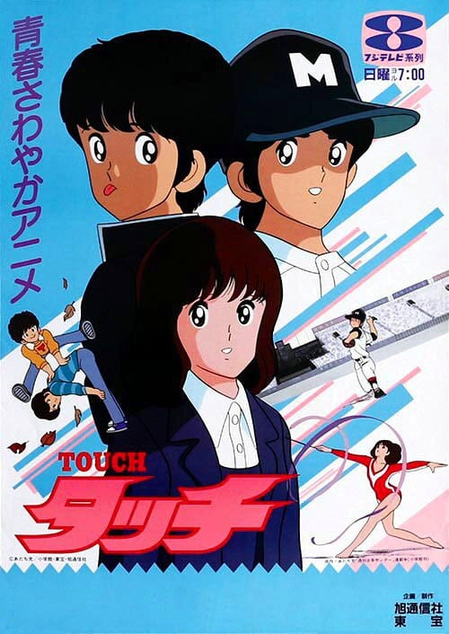
8.2「棒球英豪」（1985）是一部TV，制作グループ・タック，类型包括爱情、校园、运动，评分8.2，在本站出现在5份片单中，例如高分日漫推荐、高分TV动画推荐、高分恋爱动漫推荐。页面只做片单对照，不提供播放。上杉達也と和也は双子の兄弟。お隣の浅倉家に生まれた南とは、小さな頃からいつも一緒。あまりにも仲良く、元気なのに手を焼いた（？）親たちは共同出費で子供たちのために、３人で学び遊べる家まで建ててしまった。ところが、彼らも中学生に入る頃から、この。
#85猎人 OVA1 友客鑫市完结篇
 8.2
8.2「猎人 OVA1 友客鑫市完结篇」（2002）是一部OVA/WEB，制作日本アニメーション，类型包括热血、战斗、奇幻，评分8.2，在本站出现在6份片单中，例如高分日漫推荐、高分OVA与WEB动画、高分热血动漫推荐。页面只做片单对照，不提供播放。富樫義博が描く大人気コミックを原作とするＴＶアニメーション作品。主人公の少年・ゴンは、ある日、父親ジンの弟子であるというハンター・カイと出会う。そして、死んでいると聞かされていた父が実は超一流のハンターとして生きていることを知る。自分も父親。
#86福星小子2 绮丽梦中人
 8.2
8.2「福星小子2 绮丽梦中人」（1984）是一部剧场版，由押井守执导，制作ぴえろ，类型包括奇幻、搞笑、恋爱，评分8.2，在本站出现在8份片单中，例如高分日漫推荐、高分动画剧场版推荐、高分恋爱动漫推荐。页面只做片单对照，不提供播放。友引高中即将迎来新一年的学园祭，上到老师，下到学生，却都为了这个重要节日而忙碌。虽然应名还有最后一天的准备时间，但是日复一日，年复一年，学园祭开幕式却迟迟未能举行。疲劳的温泉老师从中感到蹊跷，他感到自己与周围的人每年都过着同样的生活，却丝毫。
#87攻壳机动队 STAND ALONE COMPLEX 笑面男
 8.2
8.2「攻壳机动队 STAND ALONE COMPLEX 笑面男」（2005）是一部OVA/WEB，制作Production I.G，类型包括科幻、赛博朋克、战斗，评分8.2，在本站出现在6份片单中，例如高分日漫推荐、高分OVA与WEB动画、高分热血动漫推荐。页面只做片单对照，不提供播放。2024年，发生了MM制造公司"濑良野基因混合社"的社长绑架案。在收取赎金现场出现的凶犯，居然让自己脸部在所有监视纪录上留下了贴着笑面标志的影像后成功脱逃。案发后六年，"笑面男"的巧妙陷阱再度出现在网络社会中... 封印已久的笑面男苏醒了，。
#88机动警察 NEW OVA
 8.2
8.2「机动警察 NEW OVA」（1990）是一部OVA/WEB，由吉永尚之执导，制作Sunrise，类型包括科幻、机战、日常，评分8.2，在本站出现在7份片单中，例如高分日漫推荐、高分OVA与WEB动画、高分治愈系动漫推荐。页面只做片单对照，不提供播放。設定・時間軸共にTVシリーズの延長にある作品。47話での放送打ち切りに伴いはみ出したTVシリーズの最終章である、グリフォン編の完結編部分と、1話完結のオリジナル・エピソードから成る。その中で12話の「ふたりの軽井沢」はダイアログの収録を先に。
#89进击的巨人 第二季
 8.1
8.1「进击的巨人 第二季」（2017）是一部TV，由肥塚正史执导，制作WIT STUDIO，类型包括热血、战斗、奇幻，评分8.1，在本站出现在7份片单中，例如高分日漫推荐、高分TV动画推荐、高分热血动漫推荐。页面只做片单对照，不提供播放。自从人类的和平被超大型巨人打破的那天起，艾伦·耶格尔便每天持续着没有尽头的战斗...。因为眼睁睁看著母亲被巨人撕裂，艾伦发誓要将世间的巨人一只不留地杀灭。但是，在严酷的战斗中，艾伦自身也会变成巨人的姿态——为了人类的自由，艾伦施展著巨人的力。
#90少女终末旅行
 8.1
8.1「少女终末旅行」（2017）是一部TV，由尾崎隆晴执导，制作WHITE FOX，类型包括百合、治愈、科幻，评分8.1，在本站出现在7份片单中，例如高分日漫推荐、高分TV动画推荐、高分治愈系动漫推荐。页面只做片单对照，不提供播放。距离极尽繁荣与荣华的人类文明迎来末日，已经经过了漫长的岁月。人类几乎死绝，就连生物都消失的迎来末日的世界。复杂建造的都市化作宛如迷宫的废墟，无从整备的机械也渐渐停止了动作。是何时结束的呢，是从何时开始结束的呢，就连这种想法也不复存在的终末世。
#91灵能百分百 第二季
 8.1
8.1「灵能百分百 第二季」（2019）是一部TV，由立川譲执导，制作BONES，类型包括超能力、战斗、搞笑，评分8.1，在本站出现在7份片单中，例如高分日漫推荐、高分TV动画推荐、高分热血动漫推荐。页面只做片单对照，不提供播放。想要过普通生活的中学2年生·影山茂夫，通称“龙套”。有着一瞬间就会混杂在人群中的不起眼外表的他，实际上拥有比任何人都要强力的超能力……这样的龙套与周围人们之间的青春与恋爱，静静地累积直至爆发的种种感情。以及，曾经阻挡在龙套面前的神秘组织“爪。
#92排球少年
「排球少年」（2014）是一部TV，由満仲勧执导，制作Production I.G，类型包括热血、运动、校园，评分8.1，在本站出现在6份片单中，例如高分日漫推荐、高分TV动画推荐、高分热血动漫推荐。页面只做片单对照，不提供播放。小时候，日向翔阳从电视上看见排球比赛，乌野高中的一名小个子在球上的英姿，简直就是个“小巨人”，对此非常深刻，并开始迷上排球，一直想成为“小巨人”一样的人。初中时排球社不够人数，只好默默等待，后来在终于有新成员后，参与了第一次也是最后一赛的比。
#93琉璃的宝石
 8.1
8.1「琉璃的宝石」（2025）是一部TV，由藤井慎吾执导，制作スタジオバインド，类型包括日常、治愈、百合，评分8.1，在本站出现在8份片单中，例如2025年夏季新番推荐、高分日漫推荐、高分TV动画推荐。页面只做片单对照，不提供播放。最喜欢闪亮亮事物的女高中生──谷川瑠璃，有天听说「可以靠自己采到水晶！」而为了寻找水晶前往山中。她在山里遇见专攻矿物学的女研究生──荒砥凪，于是两人决定一同采集矿物。有时为了寻找水晶走在山中的道路，有时为了捡拾石榴石浸在溪水中，有时又为了寻。
#94夏目友人帐 叁
 8.1
8.1「夏目友人帐 叁」（2011）是一部TV，由大森貴弘执导，制作Brain's Base，类型包括治愈、奇幻、日常，评分8.1，在本站出现在6份片单中，例如高分日漫推荐、高分TV动画推荐、高分治愈系动漫推荐。页面只做片单对照，不提供播放。小さい頃から妖怪を見ることができた少年・夏目貴志。 彼は、祖母レイコが妖怪を子分とする証にその名を書かせた「友人帳」を継いで以来、妖怪達に追われる日々。 自称用心棒の妖怪・ニャンコ先生と共に、妖怪達にその名を返すことを決めた夏目は、さまざま。
#95别对映像研出手！
 8.1
8.1「别对映像研出手！」（2020）是一部TV，由湯浅政明执导，制作サイエンスSARU，类型包括校园、日常、搞笑，评分8.1，在本站出现在8份片单中，例如高分日漫推荐、高分TV动画推荐、高分热血动漫推荐。页面只做片单对照，不提供播放。高中1年级学生浅草绿，是强调“设定即生命”的动画迷。在素描本上描绘积累各种各样的想法，却因不能一个人行动做事而无法迈出走向动画制作的一步。对于浅草这种才能，拥有制片人气质的金森沙耶香很快注意到了。同时，得知同学兼新星读者模特的水崎燕，其实希。
#96冰海战记 第二季
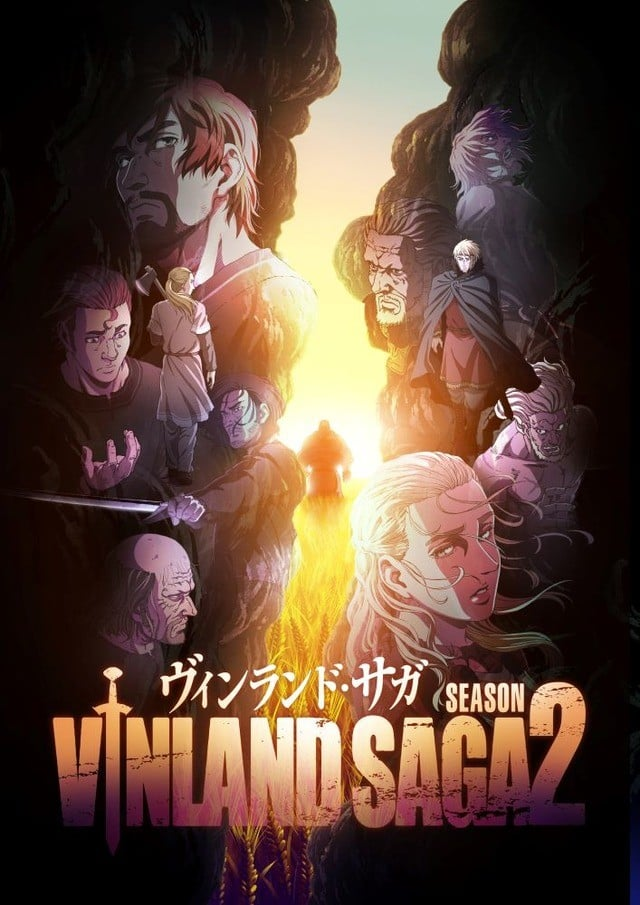
8.1「冰海战记 第二季」（2023）是一部TV，由籔田修平执导，制作MAPPA，类型包括历史、战斗、剧情，评分8.1，在本站出现在6份片单中，例如高分日漫推荐、高分TV动画推荐、高分热血动漫推荐。页面只做片单对照，不提供播放。丹麦日德兰半岛南部迎来了新的千年纪。 仇敌阿谢拉特死亡后，失去生存意义的托尔芬作为“奴隶”被地主克特尔买了去，在克特尔所持有的农场里开垦扩土。 同时，托尔芬与同样是奴隶身份的青年埃纳尔相遇，面对自己所犯之罪，寻找生存的意义。 另一方面，在英。
#97悠哉日常大王 Repeat
 8.1
8.1「悠哉日常大王 Repeat」（2015）是一部TV，由川面真也执导，制作SILVER LINK.，类型包括日常、治愈、百合，评分8.1，在本站出现在7份片单中，例如高分日漫推荐、高分TV动画推荐、高分治愈系动漫推荐。页面只做片单对照，不提供播放。「旭丘分校」只有5名学生。 虽然年纪和性格都不相同，一起赏花，一起在河边玩耍，一起挖白薯，一起挖雪洞…… 一起度过春夏秋冬，享受着田间生活。 虽然在平淡的生活中可能并未察觉，不知不觉中，一起欢笑，一起流泪，心中变得温暖起来。 这样悠哉游哉的。
#98爆漫王。2
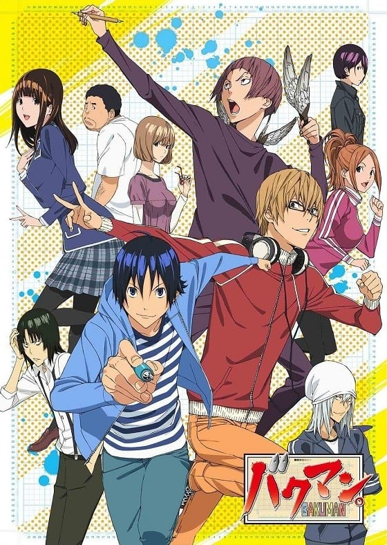
8.1「爆漫王。2」（2011）是一部TV，由カサヰケンイチ执导，制作J.C.STAFF，类型包括热血、恋爱，评分8.1，在本站出现在6份片单中，例如高分日漫推荐、高分TV动画推荐、高分热血动漫推荐。页面只做片单对照，不提供播放。《食梦者》是大场鸫和小畑健继《死亡笔记》之后再度合作的作品。主人公真诚是一名初三的学生，和大多数人一样对未来并没有什么打算，只想顺其自然的生活，他有着绘画的才能同时暗恋着同班的亚豆。就在一天下课后，他发现自己画有亚豆肖像的笔记本忘在学校了，。
#99向山进发 Next Summit
 8.1
8.1「向山进发 Next Summit」（2022）是一部TV，由山本裕介执导，制作エイトビット，类型包括百合、日常、治愈，评分8.1，在本站出现在6份片单中，例如高分日漫推荐、高分TV动画推荐、高分治愈系动漫推荐。页面只做片单对照，不提供播放。继登上了标高197m的天览山后，葵和日向二人又登上了599m的高尾山、1786m的三峠山，不断创下新高。而后她们也登顶了那座回忆中的山——谷川岳。在周游关东名峰的过程中结识了可可奈、枫以及穗香等人，她们的户外活动也由此变得多姿多彩。而在丰富。
#100昭和元禄落语心中
 8.1
8.1「昭和元禄落语心中」（2016）是一部TV，由畠山守[小俣真一]执导，制作スタジオディーン，类型包括历史、治愈、剧情，评分8.1，在本站出现在5份片单中，例如高分日漫推荐、高分TV动画推荐、高分治愈系动漫推荐。页面只做片单对照，不提供播放。无法忘记在刑务所的落语慰问会中见到的大名人·八云的“死神”，出狱的与太郎径直前往寄席。拜倒在八云面前，成为他住所雇工以及弟子的与太郎，却发现在八云之处住着一位名叫小夏的女性。八云与小夏似乎有着他人无从触及的因缘……。
#101星空清理者
 8.1
8.1「星空清理者」（2003）是一部TV，由谷口悟朗执导，制作Sunrise，类型包括科幻、治愈、剧情，评分8.1，在本站出现在6份片单中，例如高分日漫推荐、高分TV动画推荐、高分治愈系动漫推荐。页面只做片单对照，不提供播放。主角星野八郎太(ハチマキ)是一个普通雇员。他的职业是太空船机师，工作是在太空站将名叫Debris的宇宙废物回收。他为了能够有一艘属于自己的太空船，每天和同僚ユーリ、フィー和新人タナベ一起努力工作着。工作了四年，今年 25 岁的他，正渐渐开始。
#102黄金神威 第三季
 8.1
8.1「黄金神威 第三季」（2020）是一部TV，由難波日登志执导，制作ジェノスタジオ，类型包括冒险、搞笑、历史，评分8.1，在本站出现在8份片单中，例如高分日漫推荐、高分TV动画推荐、高分热血动漫推荐。页面只做片单对照，不提供播放。杉元とアシㇼパの再会は叶うのか!? 極寒の地で新たな局面を迎える生存競争サバイバル、樺太編が開幕ッッ!!! 網走監獄で繰り広げられた激しい攻防戦の末に、離れ離れになってしまった「不死身の杉元」こと杉元佐一とアイヌの少女・アシㇼパ。アシㇼパは。
#103蜡笔小新
 8.1
8.1「蜡笔小新」（1992）是一部TV，由本郷みつる（#1-#SP13）执导，制作シンエイ動画，类型包括搞笑、日常、治愈，评分8.1，在本站出现在6份片单中，例如高分日漫推荐、高分TV动画推荐、高分治愈系动漫推荐。页面只做片单对照，不提供播放。《蜡笔小新》（日语：クレヨンしんちゃん，英语：Crayon Shin-chan）是日本已故漫画家臼井仪人所著的漫画。由于蜡笔小新大受欢迎，动画版于1992年在朝日电视台播出。在日本，电视动画版自1992年4月13日开始，持续在朝日电视台播出。
#104剑风传奇
 8.1
8.1「剑风传奇」（1997）是一部TV，由高橋ナオヒト执导，制作OLM TEAM IGUCHI（表记为制作协力），类型包括战斗、奇幻、热血，评分8.1，在本站出现在6份片单中，例如高分日漫推荐、高分TV动画推荐、高分热血动漫推荐。页面只做片单对照，不提供播放。身の丈を超える長大な剣を自在に操り、「使徒」と呼ばれる人外の化け物を屠る「黒い剣士」ガッツを主人公とする大河ファンタジー。ガッツはある宿命に憑りつかれて狂戦士のごとく大剣を振るい、闇に蠢く化物と死闘を繰り広げる。その目的は無為に殺された仲間。
#105心灵游戏
 8.1
8.1「心灵游戏」（2004）是一部剧场版，由湯浅政明执导，制作STUDIO 4℃，类型包括奇幻、科幻、冒险，评分8.1，在本站出现在7份片单中，例如高分日漫推荐、高分动画剧场版推荐、高分科幻动漫推荐。页面只做片单对照，不提供播放。一天，二十多岁的新人漫画家西在电车上遇到了青梅竹马的弥，她正在被黑社会追杀。西送弥回家，途中得知了弥已经有了婚约。 在她们家的烤肉店，弥的未婚夫来到店里，虽然嫉妒，但西自认比不过他。这时，黑社会也来到店里，打晕了弥的男友并要强奸弥，而西此时。
#106宇宙兄弟
 8.1
8.1「宇宙兄弟」（2012）是一部TV，由渡辺歩执导，制作A-1 Pictures，类型包括科幻、热血、治愈，评分8.1，在本站出现在7份片单中，例如高分日漫推荐、高分TV动画推荐、高分热血动漫推荐。页面只做片单对照，不提供播放。2006年7月9日，目击UFO的神奇经历让年少的南波兄弟约定要一起成为宇航员。 时光飞逝，到了2025年，日日人实现了儿时的梦想，将随同NASA的同行一同登上梦寐以求的月球。 另一方面，由于上司说了弟弟的坏话，让六太气愤而给了上司一记头锤，。
#107水星领航员 OVA ～ARIETTA～
 8.1
8.1「水星领航员 OVA ～ARIETTA～」（2007）是一部OVA/WEB，由佐藤順一执导，制作ハルフィルムメーカー[Hal Film Maker]，类型包括治愈、日常、奇幻，评分8.1，在本站出现在7份片单中，例如高分日漫推荐、高分OVA与WEB动画、高分治愈系动漫推荐。页面只做片单对照，不提供播放。梦见成为Prima的灯里，开始对自己早已熟悉了的日常风景开始感到困惑不安。即使梦醒之后这种不安仍然没有消除，灯里的脑子里慢慢出现了这样一个疑问：“为什么艾莉西亚会选择自己（进ARIA Company）呢？”为了解答灯里梦中的疑问，艾莉西亚开。
#108王牌投手 振臂高挥～夏日大会篇～
「王牌投手 振臂高挥～夏日大会篇～」（2010）是一部TV，由水島努执导，制作A-1 Pictures，类型包括运动、热血，评分8.1，在本站出现在5份片单中，例如高分日漫推荐、高分TV动画推荐、高分热血动漫推荐。页面只做片单对照，不提供播放。以棒球为题材的作品「王牌投手 振臂高挥」，继2007年4月～10月播放的TV版以来，将在今年春季档期播出动画版第2季了，并沿用第1季的制作班底和声优阵容。原作是樋口朝自2003年开始在讲谈社的月刊「AFTERNOON」上连载的同名漫画，曾获。
#109攻壳机动队 S.A.C. 2nd GIG 个别的十一人
 8.1
8.1「攻壳机动队 S.A.C. 2nd GIG 个别的十一人」（2006）是一部OVA/WEB，制作Production I.G，类型包括科幻、战斗、赛博朋克，评分8.1，在本站出现在6份片单中，例如高分日漫推荐、高分OVA与WEB动画、高分热血动漫推荐。页面只做片单对照，不提供播放。间指向了2030年，自从爆发第四次世界大战以来，各国的政治力量发生了根本性的变化，由于战乱不断，激增的难民终于获准进入日本，以填补因经济不断发展造成的劳动力短缺。而就在此时，一个自称“个别的十一人”的恐怖组织展开了一系列极端袭击事件，难民营。
#110攻壳机动队 S.A.C. SSS 3D
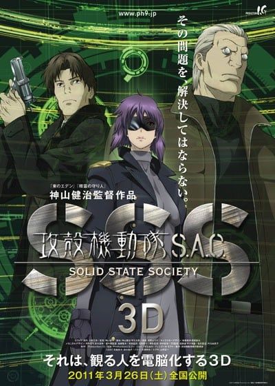
8.1「攻壳机动队 S.A.C. SSS 3D」（2011）是一部剧场版，由神山健治执导，制作Production I.G，类型包括科幻、赛博朋克、战斗，评分8.1，在本站出现在7份片单中，例如高分日漫推荐、高分动画剧场版推荐、高分热血动漫推荐。页面只做片单对照，不提供播放。3D立体視アニメーション化して『攻殻機動隊 S.A.C. SOLID STATE SOCIETY 3D』と改題された劇場版は、Production I.G初の自主配給作品である。タイトルロゴも攻殻機動隊 S.A.C.TVシリーズを踏襲するデ。
#111怪医黑杰克 OVA
 8.1
8.1「怪医黑杰克 OVA」（1993）是一部OVA/WEB，由出﨑統执导，制作手塚プロダクション，类型包括奇幻、剧情，评分8.1，在本站出现在5份片单中，例如高分日漫推荐、高分OVA与WEB动画、高分奇幻冒险动漫。页面只做片单对照，不提供播放。「ブラック・ジャック」の原作各エピソードをモチーフにしながら、 新たな作品として作り出されたオリジナル・ビデオ・アニメーションシリーズ。 手塚治虫の同名人気マンガをモチーフにしながら、しかし原作の設定だけを流用して新たな作品を作り出したオリ。
#112明日之丈
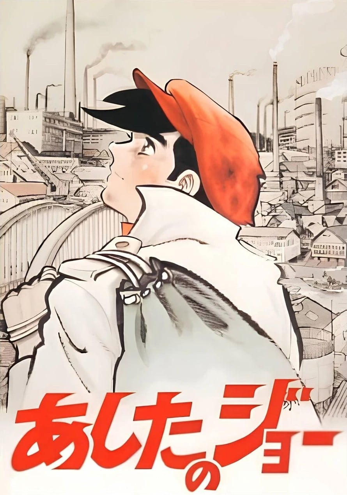
8.1「明日之丈」（1970）是一部TV，由出﨑統执导，制作虫プロダクション，类型包括运动、热血、战斗，评分8.1，在本站出现在4份片单中，例如高分日漫推荐、高分TV动画推荐、高分热血动漫推荐。页面只做片单对照，不提供播放。东京，时为昭和40年代。矢吹丈本来过着漫无目的的生活，却被丹下段平发现了他的拳击天分，然而却因为某些问题被送进了监狱。在那里，命运让他遇上了专业拳击手力石彻。丈一边从段平的来信上学习着拳击，一边在狱中和力石比赛，各擅胜场。出狱之后，两人也在。
#113相聚一刻
 8.1
8.1「相聚一刻」（1986）是一部TV，由やまざきかずお（第1話 - 第26話）→安濃高志（第27話 - 第52話）→吉永尚之（第53話 - 第96話）执导，制作スタジオディーン，类型包括恋爱、爱情、搞笑，评分8.1，在本站出现在6份片单中，例如高分日漫推荐、高分TV动画推荐、高分恋爱动漫推荐。页面只做片单对照，不提供播放。贫穷的落榜生五代裕作住在一所名叫“一刻馆”的破旧公寓中复习备考。公寓中还住着长舌的家族主妇一濑太太、奸猾刻薄的神秘人物四谷以及泼辣开放的酒廊小姐朱美，他们日夜胡闹，令五代叫苦不迭。新来的年轻漂亮的管理员音无响子为五代带来了阳光。然而，五代优。
#114死神 千年血战篇-祸进谭-
 8.1
8.1「死神 千年血战篇-祸进谭-」（2026）是一部TV，由村田光执导，制作PIERROT FILMS，类型包括战斗、热血、奇幻，评分8.1，在本站出现在9份片单中，例如2026年夏季新番推荐、2026年新番总表、高分日漫推荐。页面只做片单对照，不提供播放。死神与灭却师，在历经千年的血战尽头，即使看见的是毁灭的未来……。 为了拦阻企图闯入灵王宫的优哈巴哈，隶属于王的特务「第零队」挺身迎击，但灭却师之王和他的亲卫队却击败了第零队壮烈的卍解，最终踏入灵王的大内里。 黑崎一护等人受兵主部一兵卫之托守。
#115四月是你的谎言
 8.0
8.0「四月是你的谎言」（2014）是一部TV，由イシグロキョウヘイ执导，制作A-1 Pictures，类型包括恋爱、音乐、治愈，评分8.0，在本站出现在7份片单中，例如高分日漫推荐、高分TV动画推荐、高分恋爱动漫推荐。页面只做片单对照，不提供播放。有马公生的母亲一心想把有马培育成举世闻名的钢琴家，而有马也不负母亲的期望，在念小学时就赢得许多钢琴比赛的大奖。11岁的秋天，有马的母亲过世，从此他再也听不见自己弹奏的钢琴声，沮丧的他也只好放弃演奏，但在14岁那年，经由儿时玩伴的介绍，有马认。
#116一拳超人
 8.0
8.0「一拳超人」（2015）是一部TV，由夏目真悟执导，制作MADHOUSE，类型包括热血、搞笑、战斗，评分8.0，在本站出现在7份片单中，例如高分日漫推荐、高分TV动画推荐、高分热血动漫推荐。页面只做片单对照，不提供播放。因为兴趣而开始当英雄的男人「埼玉」，在经过三年特训之後，得到了无敌的力量。 然而，他实在是强过了头，所以无论多厉害的对手，都被他一拳解决。「绝对强势的力量，实在是很无聊。」在这种普通热血的最强英雄面前，今天也出现新的敌踪。今天可以让他拿出认。
#117JOJO的奇妙冒险 星尘斗士
 8.0
8.0「JOJO的奇妙冒险 星尘斗士」（2014）是一部TV，由津田尚克执导，制作david production，类型包括热血、战斗、奇幻，评分8.0，在本站出现在7份片单中，例如高分日漫推荐、高分TV动画推荐、高分热血动漫推荐。页面只做片单对照，不提供播放。时为1987年，乔瑟夫·乔斯达与“柱之男”们之间的死战后过了50年……乔瑟夫为了为了帮助“被恶灵附身了”的外孙子·空条承太郎而来到了日本。原来那并不是恶灵而是幽波纹（替身）。替身突然出现的原因在于，从跨越100年的长眠中苏醒过来的吸血鬼·D。
#118寄生兽 生命的准则
 8.0
8.0「寄生兽 生命的准则」（2014）是一部TV，由清水健一执导，制作MADHOUSE，类型包括科幻、战斗、奇幻，评分8.0，在本站出现在7份片单中，例如高分日漫推荐、高分TV动画推荐、高分热血动漫推荐。页面只做片单对照，不提供播放。某天于地球上空出现许多孢子，其中诞生的幼虫侵入人体后，可以吞噬掉宿主的头部取而代之，从而管理这个“死掉的身体”，它们能任意变形，其食物便是与寄生体相同的物种。男主角泉新一就是被寄生生物寄生的人类之一，但是由于某种意外，寄生在他体内的生物并没。
#119JOJO的奇妙冒险 黄金之风
 8.0
8.0「JOJO的奇妙冒险 黄金之风」（2018）是一部TV，由木村泰大・髙橋秀弥执导，制作david production，类型包括热血、战斗、奇幻，评分8.0，在本站出现在7份片单中，例如高分日漫推荐、高分TV动画推荐、高分热血动漫推荐。页面只做片单对照，不提供播放。居住在意大利那不勒斯的青年乔鲁诺·乔巴拿，是继承了乔斯达家宿敌·DIO之血脉的儿子。 幼年时遭受迫害而自暴自弃的他，由于拯救了一名黑帮男子，而学到了“相信他人”。不忘恩义、带着敬意对待自己的黑帮，让他的心变得率直。就这样，乔鲁诺开始对“黑帮。
#120金牌得主
 8.0
8.0「金牌得主」（2025）是一部TV，由山本靖貴执导，制作ENGI，类型包括运动、热血、治愈，评分8.0，在本站出现在7份片单中，例如高分日漫推荐、高分TV动画推荐、高分热血动漫推荐。页面只做片单对照，不提供播放。作为滑冰者遭遇挫折的青年·明浦路司遇到了对花样滑冰世界充满憧憬的少女·结束祈。 在对冰场怀有执念的祈的推动下，司决定亲自担任教练。 随着祈逐渐展现出自己的才能，司也作为指导者不断成长。 两人组成搭档，目标是荣耀的“金牌得主”——！ [简介原。
#121悠哉日常大王
 8.0
8.0「悠哉日常大王」（2013）是一部TV，由川面真也执导，制作SILVER LINK.，类型包括日常、治愈、百合，评分8.0，在本站出现在7份片单中，例如高分日漫推荐、高分TV动画推荐、高分治愈系动漫推荐。页面只做片单对照，不提供播放。作品舞台是一个挂著“牛经过注意”的看板，公车不等上5个小时不会来的乡下农村，而主角一条萤因父亲工作调职的关系从东京迁居此地，故事即是描写萤与越谷姐妹及宫内姐妹渡过的日常光景。
#122夏目友人帐
 8.0
8.0「夏目友人帐」（2008）是一部TV，由大森貴弘执导，制作Brain's Base，类型包括治愈、奇幻、日常，评分8.0，在本站出现在6份片单中，例如高分日漫推荐、高分TV动画推荐、高分治愈系动漫推荐。页面只做片单对照，不提供播放。因为看得见妖怪而被人类疏远的女子夏目玲子，为了打发寂寞的日子，她向妖怪们发起挑战，并将败在自己手下的妖怪的名字写在一纸契约上，以此做为妖怪们成为自己属下的证据。 玲子的孙子夏目贵志得到了那些契约书所做成的“友人帐”，还继承了玲子的力量，能看。
#123辉夜大小姐想让我告白-初吻不会结束-
 8.0
8.0「辉夜大小姐想让我告白-初吻不会结束-」（2023）是一部TV，由畠山守(小俣真一)执导，制作A-1 Pictures，类型包括恋爱、搞笑、校园，评分8.0，在本站出现在8份片单中，例如高分日漫推荐、高分TV动画推荐、高分恋爱动漫推荐。页面只做片单对照，不提供播放。两人冻结的内心，在没有下雪的东京夜空渐渐融化。 爱情喜剧，在特别却又平凡的圣诞节，重新归来 — 副会长・四宫辉夜与学生会长・白银御行在秀知院学园的学生会相遇，两名天才在历经了漫长的恋爱头脑战后，终于向对方表达了自己的心意，在“奉心祭”首度接。
#124白兔糖
 8.0
8.0「白兔糖」（2011）是一部TV，由亀井幹太执导，制作Production I.G，类型包括治愈、日常，评分8.0，在本站出现在5份片单中，例如高分日漫推荐、高分TV动画推荐、高分治愈系动漫推荐。页面只做片单对照，不提供播放。30岁的单身男大吉在外公的葬礼上遇到了从未谋面的6岁小女孩凛。而这个孩子竟然是外公的私生子，知道这一事实后的大吉十分震惊。亲戚们表面上在讨论收养凛的事宜，实际上却在互相推卸责任，实在看不下去的大吉毅然做出了收养的决定。充满正义感却又冒冒失失。
#125擅长捉弄的高木同学 第三季
 8.0
8.0「擅长捉弄的高木同学 第三季」（2022）是一部TV，由赤城博昭执导，制作シンエイ動画，类型包括恋爱、校园、日常，评分8.0，在本站出现在8份片单中，例如高分日漫推荐、高分TV动画推荐、高分恋爱动漫推荐。页面只做片单对照，不提供播放。“捉弄”缩短了二人的距离， 2022年想要守候的初恋就在这里。 在一所初中里，有一个叫做西片的男生，他时不时就会遭到同桌女生高木的捉弄。 西片每次思考对策，想要捉弄回高木，都会被高木看透。 于是西片每天都绞尽脑汁，想要扳回一城… 然而随着时。
#126续 夏目友人帐
 8.0
8.0「续 夏目友人帐」（2009）是一部TV，由大森貴弘执导，制作Brain's Base，类型包括治愈、奇幻、日常，评分8.0，在本站出现在6份片单中，例如高分日漫推荐、高分TV动画推荐、高分治愈系动漫推荐。页面只做片单对照，不提供播放。玲子的孙子夏目贵志从祖母的遗物中得到了那些契约书所做成的“友人帐”，同样他也能看到不会显现在人前的物体。可是，作为唯一继承了玲子血统的他却做出了一个重要的决定：将玲子夺过来的妖怪们的名字一一归还。伴随着归还名字的行动，贵志渐渐的认识了一个更。
#127辉夜大小姐想让我告白-初吻不会结束- 电影
 8.0
8.0「辉夜大小姐想让我告白-初吻不会结束- 电影」（2022）是一部剧场版，由畠山守(小俣真一)执导，制作A-1 Pictures，类型包括恋爱、校园、搞笑，评分8.0，在本站出现在9份片单中，例如高分日漫推荐、高分动画剧场版推荐、高分恋爱动漫推荐。页面只做片单对照，不提供播放。两人冻结的内心，在没有下雪的东京夜空渐渐融化。 爱情喜剧，在特别却又平凡的圣诞节，重新归来 — 副会长・四宫辉夜与学生会长・白银御行在秀知院学园的学生会相遇，两名天才在历经了漫长的恋爱头脑战后，终于向对方表达了自己的心意，在“奉心祭”首度接。
#128爆漫王。
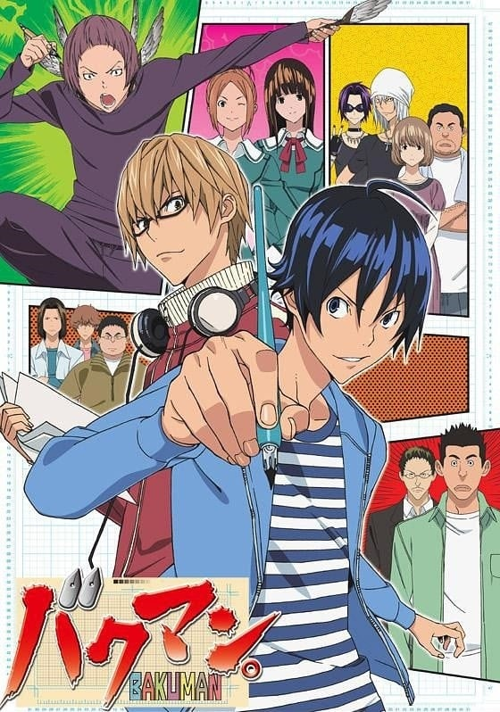
8.0「爆漫王。」（2010）是一部TV，由カサヰケンイチ执导，制作J.C.STAFF，类型包括热血、恋爱，评分8.0，在本站出现在6份片单中，例如高分日漫推荐、高分TV动画推荐、高分热血动漫推荐。页面只做片单对照，不提供播放。“和我一起成为漫画家吧！” 在无聊的未来，生存是一件麻烦的事——这样无所事事地过着每一天的中学生真城最高，在某一天，被同班的年级顶尖秀才高木秋人叫住。“一直以来成为漫画家是我的梦想，只要富有文采的自己和拥有优秀绘画才能的最高一起搭档就能实现。
#129夏目友人帐 肆
 8.0
8.0「夏目友人帐 肆」（2012）是一部TV，由大森貴弘执导，制作Brain's Base，类型包括治愈、奇幻、日常，评分8.0，在本站出现在6份片单中，例如高分日漫推荐、高分TV动画推荐、高分治愈系动漫推荐。页面只做片单对照，不提供播放。小さい頃から妖怪を見ることができた少年・夏目貴志。 彼は、祖母レイコが妖怪を子分とする証にその名を書かせた「友人帳」を継ぎ、 自称用心棒の妖怪・ニャンコ先生と共に、妖怪達にその名を返す日々。 ようやく手に入れた大切な場所で、友人達との深まる。
#130歌牌情缘
 8.0
8.0「歌牌情缘」（2011）是一部TV，由浅香守生执导，制作MADHOUSE，类型包括治愈、恋爱、校园，评分8.0，在本站出现在8份片单中，例如高分日漫推荐、高分TV动画推荐、高分热血动漫推荐。页面只做片单对照，不提供播放。从小时候起，绫濑千早的理想就只有一个——辅佐姐姐绫濑千岁称为日本第一的模特，为了实现这个理想，千早可谓是不择手段。但是，一个名为绵谷新的转学生彻底打碎了她的幻觉。“不是自己的事就不算梦想！”被绵谷一语点醒的千早决定将理想转移到绵谷教会她的“。
#131校园迷糊大王
 8.0
8.0「校园迷糊大王」（2004）是一部TV，由高松信司执导，制作スタジオコメット，类型包括搞笑、校园、恋爱，评分8.0，在本站出现在7份片单中，例如高分日漫推荐、高分TV动画推荐、高分恋爱动漫推荐。页面只做片单对照，不提供播放。冢本天满是高中二年级学生。和许多的女孩子一样，她也在恋爱。但是，她一直没能向她非常喜欢的人——同班同学的乌丸大路表白爱意。 天不佑人，天满突然知道乌丸还有1年就要转校了这件事！尽管如此，她还是得到了妹妹八云和友人们的协助。为了告白她一会儿化。
#132剧场版 悠哉日常大王 Vacation
 8.0
8.0「剧场版 悠哉日常大王 Vacation」（2018）是一部剧场版，由川面真也执导，制作SILVER LINK.，类型包括日常、治愈、百合，评分8.0，在本站出现在8份片单中，例如高分日漫推荐、高分动画剧场版推荐、高分治愈系动漫推荐。页面只做片单对照，不提供播放。“旭丘分校”的学生只有5人。即使学年和性格都各不相同，也总是在四季变换中一同享受着乡村生活。某天，旭丘分校的众人在百货店的抽奖中抽到了特等奖冲绳旅行券。于是，大家利用暑假时间前往冲绳……。
#133银之匙 Silver Spoon 第二季
 8.0
8.0「银之匙 Silver Spoon 第二季」（2014）是一部TV，由出合小都美执导，制作A-1 Pictures，类型包括治愈、校园、日常，评分8.0，在本站出现在7份片单中，例如高分日漫推荐、高分TV动画推荐、高分治愈系动漫推荐。页面只做片单对照，不提供播放。累計発行部数が第８巻で1000万部を記録した人気コミック『銀の匙 Silver Spoon』を原作とするテレビアニメシリーズの第２期。第１期のスタッフ・キャストが再結集しているが、監督は第１期で副監督を務めた出合小都美が起用された。
#134穹庐下的魔女
 8.0
8.0「穹庐下的魔女」（2026）是一部TV，由Abel Gongora执导，制作サイエンスSARU，类型包括历史、战争、剧情，评分8.0，在本站出现在8份片单中，例如2026年夏季新番推荐、2026年新番总表、高分日漫推荐。页面只做片单对照，不提供播放。13世纪，一名少女身处伊朗的奴隶市场。 这是一个将辽阔大陆操弄于股掌间的一位魔女的故事。失去母亲，又被迫远离故乡的希塔拉，年纪尚幼，既没有独自生存的能力，也没有未来的希望。这样的她，被心地善良的学者一家的夫人法蒂玛收留。 「只要透过学习变聪。
#135王牌投手 振臂高挥
「王牌投手 振臂高挥」（2007）是一部TV，制作A-1 Pictures，类型包括运动、热血，评分8.0，在本站出现在5份片单中，例如高分日漫推荐、高分TV动画推荐、高分热血动漫推荐。页面只做片单对照，不提供播放。主人公三桥廉，喜爱棒球，初中时依靠爷爷的关系进入校队成为主力投手。毕业后，三桥搬家到其他地方，并进入当地的西浦高中读书。因为初中的阴影，三桥只是旁观着高中棒球部的种种活动。但这个高中的棒球部是个新成立的社团，因此他立即收到队内捕手阿部的邀请。
#136境界触发者 第三季
 8.0
8.0「境界触发者 第三季」（2021）是一部TV，制作東映アニメーション，类型包括战斗、热血、科幻，评分8.0，在本站出现在7份片单中，例如高分日漫推荐、高分TV动画推荐、高分热血动漫推荐。页面只做片单对照，不提供播放。境界触发者 第三季。2021。战斗、热血、科幻。
#137辉夜大小姐想让我告白?～天才们的恋爱头脑战～
 7.9
7.9「辉夜大小姐想让我告白?～天才们的恋爱头脑战～」（2020）是一部TV，由畠山守(小俣真一)执导，制作A-1 Pictures，类型包括恋爱、搞笑、校园，评分7.9，在本站出现在6份片单中，例如高分恋爱动漫推荐、高分治愈系动漫推荐、高分校园动漫推荐。页面只做片单对照，不提供播放。人才云集的精英校·秀知院学园，在该校的学生会相遇的副会长·四宫辉夜与学生会长·白银御行。 无论任何人都认为十分般配的这两位天才，本以为很快就会喜结良缘，但碍于过高的自尊心而仍然未能告白！ “如何让对方告白”在这样的恋爱头脑战中穷尽智略的两人。
#138男子高中生的日常
 7.9
7.9「男子高中生的日常」（2012）是一部TV，由高松信司执导，制作Sunrise，类型包括搞笑、日常、校园，评分7.9，在本站出现在6份片单中，例如高分治愈系动漫推荐、高分校园动漫推荐、高分奇幻冒险动漫。页面只做片单对照，不提供播放。原作为山內泰延连载于《ガンガンONLINE》的漫画，是描写男子高中生的日常生活的轻喜剧作品。 在一个普通的城市里，一帮普通的男子高中生过着普通的日常生活。想像着机动战士和冒险故事，放学后交女朋友的方法，对女生的裙子充满幻想，在家讲恐怖鬼故事。
#139碧蓝之海
 7.9
7.9「碧蓝之海」（2018）是一部TV，由高松信司执导，制作ゼロジー，类型包括搞笑、日常、校园，评分7.9，在本站出现在6份片单中，例如高分恋爱动漫推荐、高分治愈系动漫推荐、高分校园动漫推荐。页面只做片单对照，不提供播放。北原伊织升入大学后，开始寄住在伊豆的叔父所经营的潜水用具店“Grand Blue”。传入耳中的波涛声、炽烈照射的太阳、开始一起生活的可爱表姐妹……青春的大学生活！ 这样的伊织所面临的却是——除了野球拳以外的猜拳一概不知的强壮男人们！！ 刚一。
#140来自深渊 深沉灵魂的黎明
 7.9
7.9「来自深渊 深沉灵魂的黎明」（2020）是一部剧场版，由小島正幸执导，制作KINEMA CITRUS，类型包括奇幻、冒险、治愈，评分7.9，在本站出现在7份片单中，例如高分动画剧场版推荐、高分热血动漫推荐、高分治愈系动漫推荐。页面只做片单对照，不提供播放。这个各角落都被探索殆尽的世界，只剩唯一仅存的秘境——大洞穴「阿比斯」。在这个会延伸到哪里不得而知，且深不见底的巨大纵向洞穴中，除了栖息着各种奇奇怪怪的生物之外，还藏有现今人类制作不出来的珍贵遗物。 「阿比斯」处处不可思议的景象，让人们为之着。
#141咒术回战 死灭回游 前篇
 7.9
7.9「咒术回战 死灭回游 前篇」（2026）是一部TV，由御所園翔太执导，制作MAPPA，类型包括战斗、奇幻、热血，评分7.9，在本站出现在7份片单中，例如2026年新番总表、高分热血动漫推荐、高分奇幻冒险动漫。页面只做片单对照，不提供播放。2018年10月31日。在万圣节热闹的涩谷车站周边，突然降下「帐」，大量一般民众被困其中。独自闯入的是现代最强的咒术师──五条悟。虎杖悠仁等众多咒术师齐聚涩谷，前所未有的大规模咒术对决「涩谷事变」正式开幕！而战斗最终导向史上最恶劣的术师──。
#142失忆投捕
 7.9
7.9「失忆投捕」（2024）是一部TV，由中園真登执导，制作MAPPA，类型包括运动、搞笑、校园，评分7.9，在本站出现在6份片单中，例如高分热血动漫推荐、高分校园动漫推荐、必看搞笑动漫。页面只做片单对照，不提供播放。在初中球界驰名的强投·清峰叶流火，与冷静捕手“智将”·要圭，这对投捕搭档。收到了来自全国各强校的热情邀约，但他们却选择进入在棒球界默默无名的学校、东京都立小手指高中就读。而且圭还因为失忆导致失去了对棒球的一切知识。 就在这时，过去因被他们两。
#143赌博默示录
 7.9
7.9「赌博默示录」（2007）是一部TV，由佐藤雄三执导，制作MADHOUSE，类型包括悬疑、剧情、热血，评分7.9，在本站出现在4份片单中，例如高分热血动漫推荐、高分悬疑推理动漫、漫画改编动漫推荐。页面只做片单对照，不提供播放。故事从一艘黑夜中的赌船开始…… 男主角伊藤开司，浑浑噩噩，一事无成，因为好心替人做了担保而背负上了数百万债务。为偿还欠款，开司接受怂恿上了一艘名为“希望之船”的渡轮，为的是参加一次神秘赌局——一旦获胜，就能将欠款一笔勾销。登上渡船后开司才发。
#144蜘蛛侠：平行宇宙
 7.9
7.9「蜘蛛侠：平行宇宙」（2018）是一部剧场版，由Bob Persichetti执导，制作Sony Pictures Animation，类型包括科幻、战斗、奇幻，评分7.9，在本站出现在8份片单中，例如高分美漫与动画电影、高分动画剧场版推荐、高分热血动漫推荐。页面只做片单对照，不提供播放。蜘蛛侠不止一个！漫威首部超英动画巨制《蜘蛛侠：平行宇宙》将经典漫画与CGI技术完美呈现，讲述了普通高中生迈尔斯·莫拉斯如何师从蜘蛛侠彼得·帕克，成长为新一代超级英雄的故事。影片中迈尔斯和从其它平行宇宙中穿越而来的彼得、女蜘蛛侠格温、暗影蜘蛛。
#145幸运星 OVA
 7.9
7.9「幸运星 OVA」（2008）是一部OVA/WEB，由武本康弘执导，制作京都动画，类型包括搞笑、日常、校园，评分7.9，在本站出现在8份片单中，例如高分OVA与WEB动画、高分治愈系动漫推荐、高分校园动漫推荐。页面只做片单对照，不提供播放。2007年的热门动画《幸运星》以OVA形式推出了续篇。御宅族女孩泉此方、性格迥异的柊家姐妹、经常考虑问题不周到的高良美幸，四位女孩又要开始新的故事了。 小狗Cherry的奇怪举动搞得大家哭笑不得；与老师一起玩网络游戏引出了话题大讨论；姐姐柊。
#146银之匙 Silver Spoon
 7.9
7.9「银之匙 Silver Spoon」（2013）是一部TV，由伊藤智彦执导，制作A-1 Pictures，类型包括治愈、搞笑、校园，评分7.9，在本站出现在5份片单中，例如高分治愈系动漫推荐、高分校园动漫推荐、必看搞笑动漫。页面只做片单对照，不提供播放。大虾夷农业高等学校（通称：虾夷农高）是一所坐落于北海道的农业高中，校内学生多为以将从事农业当作目标的农家子女。这所拥有在全日本所有高中中最多的占地面积，被北海道壮丽的大自然和乡村风情环抱的虾夷农高，在新学年里迎来了一位特殊的学生——八轩勇吾。
#147蜘蛛侠：纵横宇宙
 7.9
7.9「蜘蛛侠：纵横宇宙」（2023）是一部剧场版，由Joaquim Dos Santos执导，制作Sony Pictures Animation，类型包括科幻、战斗、热血，评分7.9，在本站出现在8份片单中，例如高分美漫与动画电影、高分动画剧场版推荐、高分热血动漫推荐。页面只做片单对照，不提供播放。影片讲述了新生代蜘蛛侠迈尔斯（沙梅克·摩尔 Shameik Moore 配音）携手蜘蛛格温（海莉·斯坦菲尔德 Hailee Steinfeld 配音），穿越多元宇宙踏上更宏大的冒险征程的故事。面临每个蜘蛛侠都会失去至亲的宿命，迈尔斯誓言打破。
#148黑礁 The Second Barrage
「黑礁 The Second Barrage」（2006）是一部TV，由片渕須直执导，制作MADHOUSE，类型包括战斗、热血，评分7.9，在本站出现在3份片单中，例如高分热血动漫推荐、漫画改编动漫推荐、高分动漫排行榜。页面只做片单对照，不提供播放。日本の商社マン岡島緑郎は、東南アジアへ出張中に、海賊まがいの運び屋「ブラックラグーン」のメンバーに誘拐される。しかし商社は機密保持の為、傭兵を使って人質の岡島ごと全てを殲滅しようとする！ 信頼をしていた会社にあっさり見捨てられた岡島は、その。
#149死神 千年血战篇
 7.9
7.9「死神 千年血战篇」（2022）是一部TV，由田口智久执导，制作studioぴえろ，类型包括热血、战斗、奇幻，评分7.9，在本站出现在4份片单中，例如高分热血动漫推荐、高分奇幻冒险动漫、漫画改编动漫推荐。页面只做片单对照，不提供播放。或是偶然，或是必然—— 因缘际会下得到死神力量成为《死神代理》的黑崎一护，被卷入聚集现世死亡灵魂的场所·尸魂界的动乱，在激烈的战斗中，和同伴一起得到的巨大的成长。 而此时一护所在的空座町发生异变。出现了新的死神和新的敌人。还有求救的声音。一。
#150侧耳倾听
 7.9
7.9「侧耳倾听」（1995）是一部剧场版，由近藤喜文执导，制作吉卜力，类型包括治愈、恋爱、校园，评分7.9，在本站出现在8份片单中，例如高分动画剧场版推荐、高分恋爱动漫推荐、高分治愈系动漫推荐。页面只做片单对照，不提供播放。讲述主人公──初中女生月岛雫爱好阅读，一天他在所借的几本图书的图书卡上留意到一个总比她早借得该书阅读的人─天泽圣司。与她及后与天泽本人遇上的经历，与一次跟天泽家的胖家猫的跟踪结缘下到达天泽在半山山丘的家，从此展开了月岛与天泽的一段感情与相互。
#151娜娜
 7.9
7.9「娜娜」（2006）是一部TV，由浅香守生执导，制作MADHOUSE，类型包括恋爱、音乐、治愈，评分7.9，在本站出现在5份片单中，例如高分恋爱动漫推荐、高分治愈系动漫推荐、高分女性向动漫。页面只做片单对照，不提供播放。娜娜本来是与本城莲同属于叫做Black Stones的乐团之中。但本城莲其后受邀到东京加入日本流行乐坛上的新兴巨星Trapnest乐团当吉他手。此时，娜娜认为和莲一起生活不是自己人生的全部，因此她放弃身为女人的幸福流泪与莲分手，为争一口气留。
#152妖精森林的小不点
 7.9
7.9「妖精森林的小不点」（2018）是一部TV，由安藤正臣执导，制作ラルケ，类型包括治愈、日常、奇幻，评分7.9，在本站出现在5份片单中，例如高分治愈系动漫推荐、高分奇幻冒险动漫、高分女性向动漫。页面只做片单对照，不提供播放。哈库梅伊与蜜珂析。 住在绿意盎然的森林中的，两位小小的女孩子。 在树洞里建造家、把树叶当做伞、坐在昆虫或鸟的背上…… 身高9厘米的话，这种事情也是能做得到的。 不去悄悄地偷看一下吗？ 她们那安详而愉快，十分可爱的生活。
#153银魂剧场版 完结篇 万事屋永不落
 7.9
7.9「银魂剧场版 完结篇 万事屋永不落」（2013）是一部剧场版，由藤田陽一执导，制作Sunrise，类型包括搞笑、热血、战斗，评分7.9，在本站出现在6份片单中，例如高分动画剧场版推荐、高分热血动漫推荐、必看搞笑动漫。页面只做片单对照，不提供播放。由于某种力量，让银时突然来到自己所不存在的未来世界。彷徨无助的他，此时邂逅了两位年青人：其中一个青年戴着眼镜，抽出他别在腰间的洞爷湖木刀，将闹事者一举制伏；另一个则是与银时服装相似，带着超大型犬的美女，这两人竟然就是成长后的新八与神乐！更让。
#154魔卡少女樱 被封印的卡片
 7.9
7.9「魔卡少女樱 被封印的卡片」（2000）是一部剧场版，由浅香守生执导，制作MADHOUSE，类型包括恋爱、奇幻、战斗，评分7.9，在本站出现在9份片单中，例如高分动画剧场版推荐、高分热血动漫推荐、高分恋爱动漫推荐。页面只做片单对照，不提供播放。封印的卡片是《魔卡少女樱》又名《百变小樱》或《库洛魔法使》《CardCaptor Sakura》的第2部剧场版，第1部没有名字，大家公认为《香港之旅》。《封印的卡片》紧接在TV版70集后，是整个故事的大结局（不过后面还有一部同时上映的剧场版。
#155机动战士高达 THE ORIGIN
 7.9
7.9「机动战士高达 THE ORIGIN」（2015）是一部OVA/WEB，由今西隆志(1-3)执导，制作Sunrise，类型包括机战、科幻、战争，评分7.9，在本站出现在5份片单中，例如高分OVA与WEB动画、高分热血动漫推荐、高分科幻动漫推荐。页面只做片单对照，不提供播放。1979年TV放送された、日本ロボットアニメの金字塔『機動戦士ガンダム』。そのキャラクターデザイン・アニメーションディレクターの安彦良和が手掛けた、累計発行部数1,000万部を誇る大ヒットコミックス『機動戦士ガンダム THE ORIGIN』。
#156×××HOLiC◆继
 7.9
7.9「×××HOLiC◆继」（2008）是一部TV，由水島努执导，制作Production I.G，类型包括奇幻、治愈、日常，评分7.9，在本站出现在6份片单中，例如高分治愈系动漫推荐、高分异世界动漫推荐、高分奇幻冒险动漫。页面只做片单对照，不提供播放。高中生，四月一日君寻在偶然的机缘下闯入闻名异世界的次元魔女，侑子的魔法商店。四月一日在此许下要剔除自身灵能力的愿望 ，因此变成魔法商店的长期工读生，而围绕在他身边的同学小葵、百目鬼也同样是特殊能力者。在这之后，分散在其它异世界国家的小樱，小。
#157来自深渊 漂泊之黄昏
 7.9
7.9「来自深渊 漂泊之黄昏」（2019）是一部剧场版，由小島正幸执导，制作KINEMA CITRUS，类型包括奇幻、冒险、治愈，评分7.9，在本站出现在7份片单中，例如高分动画剧场版推荐、高分热血动漫推荐、高分治愈系动漫推荐。页面只做片单对照，不提供播放。这个各角落都被探索殆尽的世界，只剩唯一仅存的秘境—大洞穴「阿比斯」。在这个会延伸到哪里不得而知，且深不见底的巨大纵向洞穴中，除了栖息着各种奇奇怪怪的生物之外，还藏有现今人类制作不出来的珍贵遗物。 追随身为伟大探窟家的母亲脚步，启程要前往阿比。
#158笑园漫画大王
 7.9
7.9「笑园漫画大王」（2002）是一部TV，由錦織博执导，制作J.C.STAFF，类型包括搞笑、校园、日常，评分7.9，在本站出现在5份片单中，例如高分治愈系动漫推荐、高分校园动漫推荐、必看搞笑动漫。页面只做片单对照，不提供播放。某天，班上转来了两个学生，一个是跳级生美滨千代，她拥有着和可爱外表完全不匹配的天才级智商，以及同智商完全不匹配的情商。另一个叫春日步，她倒是表里如一的迟钝和呆萌。很快，她们便和同学们打成了一片。泷野智人称阿智，争强好斗的同时，却有着意外的单。
#159交响情人梦
 7.9
7.9「交响情人梦」（2007）是一部TV，由カサヰケンイチ执导，制作J.C.STAFF，类型包括音乐、校园、恋爱，评分7.9，在本站出现在5份片单中，例如高分恋爱动漫推荐、高分校园动漫推荐、必看搞笑动漫。页面只做片单对照，不提供播放。出身于音乐世家的千秋真一少年时代游历欧洲的音乐之都接受音乐熏陶，一次偶然的机会结识了著名的指挥家塞巴斯蒂安·维埃拉，因为父母离婚随即回到日本。十年后长大成人的千秋成了桃桃丘音乐学院大四的学生。心高气傲的千秋一直不把身边的人放在眼里，认为自己。
#160剑风传奇 黄金时代篇III 降临
 7.9
7.9「剑风传奇 黄金时代篇III 降临」（2013）是一部剧场版，由窪岡俊之执导，制作STUDIO 4℃，类型包括战斗、奇幻、热血，评分7.9，在本站出现在6份片单中，例如高分动画剧场版推荐、高分热血动漫推荐、高分奇幻冒险动漫。页面只做片单对照，不提供播放。『ベルセルク 黄金時代篇III 降臨』では、黄金時代篇三部作完結篇にして、物語は一気にダークファンタジーの深淵へ。ガッツたち鷹の団による救出も虚しく、夢を追う術を奪われ全てを失ってしまったグリフィス。その時、覇王の卵・ベヘリットがグリフィス。
#161麻辣教师GTO
 7.9
7.9「麻辣教师GTO」（1999）是一部TV，由阿部記之执导，制作ぴえろ，类型包括热血、搞笑、校园，评分7.9，在本站出现在5份片单中，例如高分热血动漫推荐、高分校园动漫推荐、必看搞笑动漫。页面只做片单对照，不提供播放。鬼塚英吉是前飞车党员，为了想要接近高中女生而决定参加代课教师的面试，训导主任内山田认为他不适合当老师，只是想接近高中女生而已，所以不打算任用他，随后又有两位学生想要找内山田算帐，内山田叫鬼冢把那两位人渣制伏就让他当老师，但是鬼冢却不满内山田。
#162少年同盟 2
 7.9
7.9「少年同盟 2」（2012）是一部TV，由神戸守执导，制作J.C.STAFF，类型包括治愈、校园、日常，评分7.9，在本站出现在5份片单中，例如高分恋爱动漫推荐、高分治愈系动漫推荐、高分校园动漫推荐。页面只做片单对照，不提供播放。我想无论多少年我们都一定会这样笑着的。 从幼儿园开始的青梅竹马，双胞胎兄弟，悠太、佑希和要、春。加上转校生橘千鹤，热闹的五人组形成了他们的校园生活。 在循环的季节中，欢笑、吃惊、恋爱，新的相遇也一定在等待着。 在无可替代的日常中，一点一点地。
#163悠哉日常大王 Nonstop OAD
 7.9
7.9「悠哉日常大王 Nonstop OAD」（2022）是一部OVA/WEB，由川面真也执导，制作SILVER LINK.，类型包括日常、治愈、百合，评分7.9，在本站出现在6份片单中，例如高分OVA与WEB动画、高分治愈系动漫推荐、必看搞笑动漫。页面只做片单对照，不提供播放。TVアニメ3期の新作OADを収録した豪華特装版が登場！ 特装版はアニメ未収録の原作エピソードとオリジナルストーリーからなる 『のんのんびより のんすとっぷ』の第13話を収録したBlu-rayディスクを同梱！。
#164交响情人梦Finale
 7.9
7.9「交响情人梦Finale」（2010）是一部TV，由今千秋执导，制作J.C.STAFF，类型包括音乐、恋爱、搞笑，评分7.9，在本站出现在5份片单中，例如高分恋爱动漫推荐、高分治愈系动漫推荐、必看搞笑动漫。页面只做片单对照，不提供播放。二之宫知子创作的漫画作品「交响情人梦」已于10月完满落幕，这部以古典音乐为題材的漫画，因丰富动人的剧情而大受好评，并在全日本掀起了一股古典音乐热潮。在连载的7年间曾被改编成一部电视剧、两部TV动画，随着漫画的完结，相关制作方也决定推出第3季。
#165鲁邦三世 卡里奥斯特罗之城
 7.9
7.9「鲁邦三世 卡里奥斯特罗之城」（1979）是一部剧场版，由宫崎骏执导，类型包括冒险、喜剧、搞笑，评分7.9，在本站出现在6份片单中，例如高分动画剧场版推荐、高分奇幻冒险动漫、必看搞笑动漫。页面只做片单对照，不提供播放。世界闻名的怪盗鲁邦三世及其搭档次元大介，成功从摩纳哥国营赌场的金库中盗走一笔钜款，并甩开追兵乘车逃走。两人在车内虽然可说是被埋在钞票堆里，但眼尖的鲁邦却发现，这是史上制作最精巧的梦幻伪钞“哥德钞”。在鲁邦“不偷假货”的原则下，他将哥德钞毫不。
#166天体战士
 7.9
7.9「天体战士」（2008）是一部TV，由岸誠二执导，制作AIC ASTA，类型包括喜剧、搞笑、治愈，评分7.9，在本站出现在4份片单中，例如高分治愈系动漫推荐、必看搞笑动漫、漫画改编动漫推荐。页面只做片单对照，不提供播放。《天体战士》，一部很适合拍特摄片的漫画，一个很白、很无聊、很猥琐、很脑残的故事……但是，依然有人很喜欢这个故事，于是也就当然有人敢毅然决定，要拍成动画片来非礼观众的眼球，荼毒读者的大脑了。 故事发生在神奈川县川崎市，企图征服世界的恶之怪人军。
#167鲁邦三世
 7.9
7.9「鲁邦三世」（2015）是一部TV，由矢野雄一郎执导，制作Telecom Animation Film，类型包括搞笑、冒险、战斗，评分7.9，在本站出现在5份片单中，例如高分热血动漫推荐、高分奇幻冒险动漫、必看搞笑动漫。页面只做片单对照，不提供播放。《鲁邦三世》时隔30年的TV动画正统第四期，舞台是意大利和圣马力诺共和国。本片首次采用了在意大利开始先行放送之后日本再进行放送的形式：意大利RTI电视台从2015年8月30日开始放送，而日本NTV电视台从2015年10月1日开始放送。 国际。
#168天体战士 第2期
 7.9
7.9「天体战士 第2期」（2009）是一部TV，由松本剛彦执导，制作AIC ASTA，类型包括搞笑、治愈、日常，评分7.9，在本站出现在4份片单中，例如高分治愈系动漫推荐、必看搞笑动漫、漫画改编动漫推荐。页面只做片单对照，不提供播放。洼田诚创作的既囧又搞笑的漫画「天体战士」，故事讲述了一个怪人组织的地区指挥官班普将军，率领着超有礼貌邪恶组织弗罗夏姆，为了消灭敌人天体战士桑雷德，不断派遣旗下的怪人军团接二连三地向天体战士挑战……第2期将在秋季开播，就让本作囧无止境吧！！。
#169水星领航员 The BENEDIZIONE
 7.9
7.9「水星领航员 The BENEDIZIONE」（2021）是一部剧场版，由名取孝浩执导，制作J.C.STAFF，类型包括治愈、日常、百合，评分7.9，在本站出现在7份片单中，例如高分动画剧场版推荐、高分治愈系动漫推荐、高分科幻动漫推荐。页面只做片单对照，不提供播放。長い冬を迎えたネオ・ヴェネツィア。 寒空の下、合同練習をしていたアイ、あずさ、アーニャの3人は、 いつもと様子が違う晃の後をつけたのをきっかけに水先案内人ミュージアムを訪れることになりました。 出迎えた館長の明日香は、姫屋の伝説的なウンディ。
#170战国鬼才传
 7.9
7.9「战国鬼才传」（2011）是一部TV，由真下耕一执导，制作BeeTrain，类型包括历史、剧情、战争，评分7.9，在本站出现在3份片单中，例如必看搞笑动漫、漫画改编动漫推荐、高分动漫排行榜。页面只做片单对照，不提供播放。群雄割据的战国时代，主角古田左介是织田信长的家臣，身为武士与雅士的他，从天才信长之处学到了壮大的世界观，本身追求出人头地的机会，但在茶圣千宗易处学得了深远的精神之后，他便变成被茶道与物欲夺去灵魂的男人。 山田芳裕以搞笑的写实方法描绘古田左介。
#171第一神拳
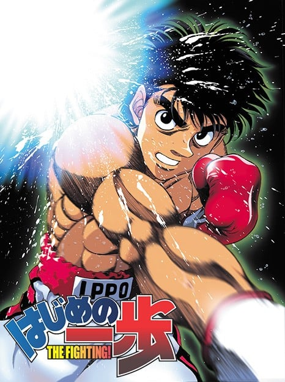
7.9「第一神拳」（2000）是一部TV，由西村聡执导，制作MADHOUSE，类型包括热血、运动、战斗，评分7.9，在本站出现在2份片单中，例如高分热血动漫推荐、漫画改编动漫推荐。页面只做片单对照，不提供播放。家中经营钓鱼船、总是被欺负的少年幕之内一歩，和後来成为世界冠军的鹰村守相遇，开启了拳击的人生。以描写进入鸭川会馆，逐渐成为代表日本的选手之过程为中心的作品。特色是仔细地描写了同伴与和对手间的战斗，成为长期连载作品，是平成时代代表『周刊少年M。
#172银河铁道999
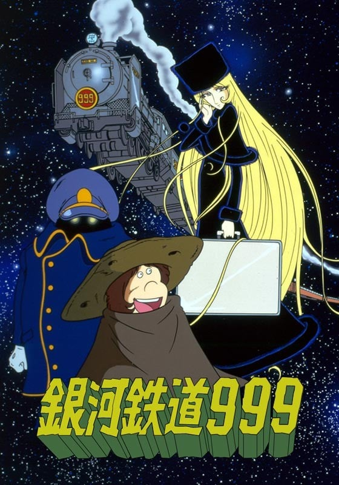
7.9「银河铁道999」（1978）是一部TV，由チーフディレクター：西沢信孝执导，类型包括科幻、剧情，评分7.9，在本站出现在2份片单中，例如高分科幻动漫推荐、漫画改编动漫推荐。页面只做片单对照，不提供播放。主角星野铁郎受母亲的影响，希望搭上银河铁道999，到达可以获得免费改造成机械身体权利的安达罗星云，母亲却被机械伯爵所杀，后来遇上谜样的女子，给他的车票，于是搭上列车，展开旅程，途中经过宇宙中各种不同的星星，发生各种事情。 连环画版中的结尾，。
#173大雄与奶奶的回忆
 7.9
7.9「大雄与奶奶的回忆」（2000）是一部剧场版，类型包括治愈、科幻、喜剧，评分7.9，在本站出现在6份片单中，例如高分动画剧场版推荐、高分治愈系动漫推荐、高分科幻动漫推荐。页面只做片单对照，不提供播放。ゴミ捨て場に、幼いころにお気に入りだったクマのぬいぐるみ（以下、クマちゃん）が出されているのをたまたま見つけたのび太。つぎはぎだらけな上に今はボロボロのクマちゃんをのび太は持ち帰り、幼稚園児のときに死別したおばあちゃんがぬいぐるみを繕ってく。
#174剧场版 鬼灭之刃 无限城篇 第三部
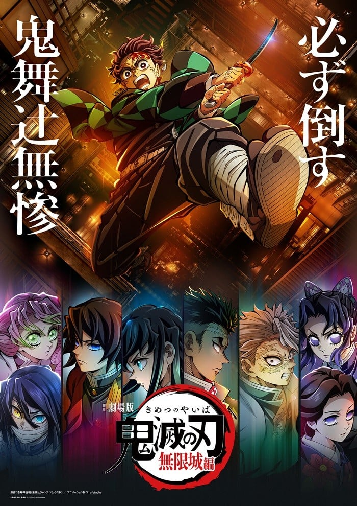
7.9「剧场版 鬼灭之刃 无限城篇 第三部」是一部剧场版，制作ufotable，类型包括战斗、热血、奇幻，评分7.9，在本站出现在3份片单中，例如漫画改编动漫推荐、ufotable作品推荐、《鬼灭之刃》观看顺序。页面只做片单对照，不提供播放。剧场版 鬼灭之刃 无限城篇 第三部。战斗、热血、奇幻。
#175辉夜大小姐想让我告白～天才们的恋爱头脑战～
 7.8
7.8「辉夜大小姐想让我告白～天才们的恋爱头脑战～」（2019）是一部TV，由畠山守(小俣真一)执导，制作A-1 Pictures，类型包括恋爱、搞笑、校园，评分7.8，在本站出现在6份片单中，例如高分恋爱动漫推荐、高分治愈系动漫推荐、高分校园动漫推荐。页面只做片单对照，不提供播放。家庭背景与人品都很棒！！一大群有前途的秀才所聚集的秀知院学园！！在那里的学生会相遇的副会长·四宫辉夜与会长·白银御行原本应该是彼此受到了对方吸引…但想不到都过半年了却仍然什么事情也没发生！！最麻烦的是这两个自尊心超强、无法坦率的家伙，居然开。
#176月刊少女野崎君
 7.8
7.8「月刊少女野崎君」（2014）是一部TV，由山﨑みつえ执导，类型包括搞笑、恋爱、校园，评分7.8，在本站出现在7份片单中，例如高分恋爱动漫推荐、高分治愈系动漫推荐、高分校园动漫推荐。页面只做片单对照，不提供播放。高中女生佐仓千代好不容易提起勇气向同年级的野崎梅太郎告白，得到的却是野崎的亲笔签名，和“要不要来我家？”的邀请。佐仓虽然对意料之外的展开感到困惑，却还是带着期待来到野崎家，没想到等着她的却是漫画原稿，不知不觉间就顺着野崎的指示开始进行涂黑作。
#177迷宫饭
 7.8
7.8「迷宫饭」（2024）是一部TV，由宮島善博执导，制作TRIGGER，类型包括奇幻、冒险、搞笑，评分7.8，在本站出现在5份片单中，例如高分异世界动漫推荐、高分奇幻冒险动漫、必看搞笑动漫。页面只做片单对照，不提供播放。迷宫饭，不是吃就是被吃… 莱欧斯是一名冒险者，在一次探险中，迷宫深处的赤龙吃掉了他的妹妹，他侥幸逃过一命传送回到了地面。莱欧斯想要立马重新挑战迷宫，营救妹妹，但是钱和食物都留在了迷宫深处… 想到妹妹随时都有可能会被赤龙消化，导致无法复活，莱。
#178灵能百分百
 7.8
7.8「灵能百分百」（2016）是一部TV，由立川譲执导，制作BONES，类型包括搞笑、热血、战斗，评分7.8，在本站出现在5份片单中，例如高分热血动漫推荐、高分奇幻冒险动漫、必看搞笑动漫。页面只做片单对照，不提供播放。平凡的中学二年级少年影山茂夫，因其微弱的存在感与名字茂夫的谐音被周遭人称为龙套（モブ），但不起眼的他其实是强大的天生超能力者。历经每一次的成长，龙套开始认为自己的超能力是危险的存在，为了不让超能力失控，龙套无意识的压抑著情感。虽然只想平凡的。
#179JOJO的奇妙冒险 不灭钻石
 7.8
7.8「JOJO的奇妙冒险 不灭钻石」（2016）是一部TV，由津田尚克执导，制作david production，类型包括热血、战斗、奇幻，评分7.8，在本站出现在6份片单中，例如高分热血动漫推荐、高分治愈系动漫推荐、高分奇幻冒险动漫。页面只做片单对照，不提供播放。在埃及与宿敌DIO的死斗之后过了11年。1999年，空条承太郎为了与祖父乔瑟夫·乔斯达的私生子东方仗助见面，而来到了日本M县S市杜王町。但，仗助却持有与承太郎相同的特殊能力“替身”。之后，以承太郎的来访为开端，仿佛被吸引一般，新的“替身使”。
#180我心里危险的东西
 7.8
7.8「我心里危险的东西」（2023）是一部TV，由赤城博昭执导，制作シンエイ動画，类型包括恋爱、校园、日常，评分7.8，在本站出现在7份片单中，例如高分恋爱动漫推荐、高分治愈系动漫推荐、高分校园动漫推荐。页面只做片单对照，不提供播放。有着重度中二病的阴沉少年市川京太郎，因为很看不惯位于学校金字塔顶端的阳角美少女山田杏奈，每天都在妄想着要怎么结束掉她的性命。没想到在一次偶然情况下，京太郎撞见了杏奈不为人知的一面，爱吃零食的她常躲进京太郎的圣地图书室偷吃零食，就这样图书室变。
#181蓦然回首
 7.8
7.8「蓦然回首」（2024）是一部剧场版，由押山清高执导，制作Studio DURIAN，类型包括治愈、剧情、百合，评分7.8，在本站出现在7份片单中，例如高分动画剧场版推荐、高分治愈系动漫推荐、高分奇幻冒险动漫。页面只做片单对照，不提供播放。在年级报纸上连载着四格漫画的小学四年级学生藤野。被同班同学高度评价、对自己的画工抱有绝对的自信的藤野，她在某天看到了不去上学的同级生京本于年级报纸上首次发表的4格漫画，并对其高超的画工感到震惊。从那时起，只顾着继续专心画漫画的藤野被完全无法。
#182恶魔人 crybaby
 7.8
7.8「恶魔人 crybaby」（2018）是一部OVA/WEB，由湯浅政明执导，类型包括战斗、奇幻、治愈，评分7.8，在本站出现在6份片单中，例如高分OVA与WEB动画、高分热血动漫推荐、高分治愈系动漫推荐。页面只做片单对照，不提供播放。随着恶魔觉醒，人类世界陷入混乱。性格温柔的男孩与恶魔合体，在神秘好友飞鸟了的指引下，卷入一场残酷、堕落的对抗邪恶之战。
#183相合之物
 7.8
7.8「相合之物」（2022）是一部TV，由追崎史敏执导，制作エンカレッジフィルムズ（鵲），类型包括治愈、日常、搞笑，评分7.8，在本站出现在5份片单中，例如高分恋爱动漫推荐、高分治愈系动漫推荐、必看搞笑动漫。页面只做片单对照，不提供播放。为了追寻梦想来到东京的纳野和，得知了父亲住院的消息后，决定回到了阔别十年的老家，继承和式点心店·绿松。 但是店内已经有了另一位候补继承人：看板娘雪平一果，在纳野家一边寄居一边工作。 和被委以代替一果的父母的重任，但一果对曾经弃店的和怀有敌意。
#184终将成为你
 7.8
7.8「终将成为你」（2018）是一部TV，由加藤誠执导，制作TROYCA，类型包括百合、恋爱、校园，评分7.8，在本站出现在6份片单中，例如高分恋爱动漫推荐、高分治愈系动漫推荐、高分校园动漫推荐。页面只做片单对照，不提供播放。不明白与人恋爱的心情，为此感到烦恼的小糸侑，在初中毕业时被要好的男生告白，却无法给予回应。 她在此时邂逅的学生会成员七海灯子，不论被谁告白，都无法喜欢上对方。 与灯子感到共鸣的侑，将自己的烦恼坦诚相告，却反而从灯子那里听到了意想不到的话语—。
#185擅长捉弄的高木同学 第二季
 7.8
7.8「擅长捉弄的高木同学 第二季」（2019）是一部TV，由赤城博昭执导，类型包括恋爱、校园、日常，评分7.8，在本站出现在6份片单中，例如高分恋爱动漫推荐、高分治愈系动漫推荐、高分校园动漫推荐。页面只做片单对照，不提供播放。某所初中学校，男生西片总是被邻座的女生高木同学捉弄。他为了对此反击而用尽计策，却总是被高木同学看透。 季节轮回，西片升入2年级，这一次他是否能够顺利反击高木同学呢……？。
#186街角魔族 2丁目
 7.8
7.8「街角魔族 2丁目」（2022）是一部TV，由桜井弘明执导，类型包括百合、日常、搞笑，评分7.8，在本站出现在6份片单中，例如高分治愈系动漫推荐、高分奇幻冒险动漫、必看搞笑动漫。页面只做片单对照，不提供播放。大人気ご町内日常ファンタジーが帰ってくる！ 魔族の力に目覚めて以来、闇の一族の封印を解くため ポンコツながらも戦ってきた主人公・シャミ子。 ライバルだったはずの魔法少女・桃とは、なぜか協力関係になってしまい、 町から姿を消した魔法少女の謎を。
#187金牌得主 第二季
 7.8
7.8「金牌得主 第二季」（2026）是一部TV，由山本靖貴执导，制作ENGI，类型包括运动、热血、治愈，评分7.8，在本站出现在6份片单中，例如2026年新番总表、高分热血动漫推荐、高分治愈系动漫推荐。页面只做片单对照，不提供播放。怀揣着各自对花样滑冰的执念和梦想，结束祈与明浦路司以「选手与教练」的身份相遇。 祈以成为荣耀的「金牌得主」为目标，在名港杯与西日本中小学生大赛中取得名次，通过等级测试后，终于获得了与「天才少女」狼嵜光同级竞技的资格。 接下来的目标，是决定了。
#188搞笑漫画日和
 7.8
7.8「搞笑漫画日和」（2005）是一部TV，由大地丙太郎执导，类型包括搞笑，评分7.8，在本站出现在3份片单中，例如必看搞笑动漫、漫画改编动漫推荐、高分动漫排行榜。页面只做片单对照，不提供播放。《搞笑漫画日和》是在《月刊少年JUMP》上连载的人气作品，由于该作的恶搞程度已经达到了某种无人能及的境界，因此受到日本众多动漫迷的追捧。 此作的恶搞对象通常都是些社会知名人物，比如圣德太子、松尾芭蕉等等，看到这些不仅我们想起当年那款恶搞世界。
#189黑礁
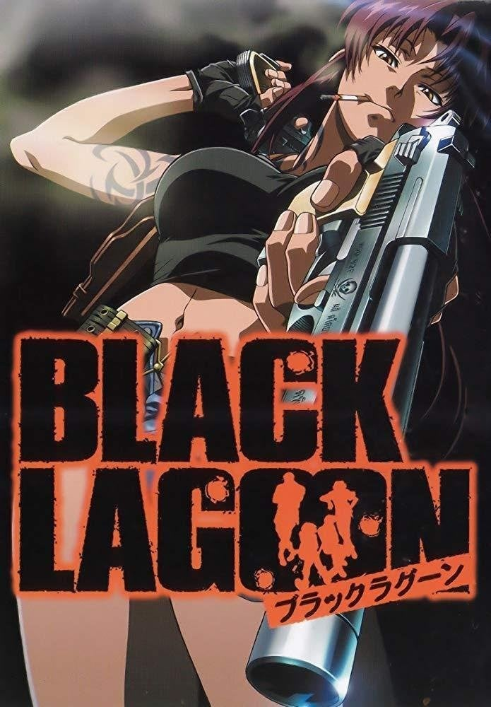
7.8「黑礁」（2006）是一部TV，由片渕須直执导，类型包括战斗、热血，评分7.8，在本站出现在3份片单中，例如高分热血动漫推荐、漫画改编动漫推荐、高分动漫排行榜。页面只做片单对照，不提供播放。在一次护送公司机密文件的途中，旭日重工的普通职员冈岛绿郎遭到了名叫黑礁商会的神秘组织的袭击和绑架，机密文件亦被夺走。为了保证秘密不被泄露，旭日重工采取了消抹行动——包括文件和冈岛绿郎本人。在得知了自己被公司抛弃的消息之后，冈岛决定用自己的方。
#190再见绝望先生
 7.8
7.8「再见绝望先生」（2007）是一部TV，由新房昭之执导，制作SHAFT，类型包括搞笑、校园、日常，评分7.8，在本站出现在5份片单中，例如高分治愈系动漫推荐、高分校园动漫推荐、必看搞笑动漫。页面只做片单对照，不提供播放。故事发生在一个问题班集体——2年へ组中，全班32个学生全部都曾经留过级，被喻为是“绝望的学生们”。 担任该班班主任老师的是一个名叫糸色望的青年男子。 11月4日出生，在家排行老四，戴眼镜，喜欢穿和服，所有的装扮全都是怀旧风，喜欢读书，酷爱太。
#191阿基拉
 7.8
7.8「阿基拉」（1988）是一部剧场版，由大友克洋执导，类型包括科幻、超能力、赛博朋克，评分7.8，在本站出现在6份片单中，例如高分动画剧场版推荐、高分热血动漫推荐、高分科幻动漫推荐。页面只做片单对照，不提供播放。1988年7月，关东地区使用新型炸弹进行爆破，第三次世界大战即刻爆发。31年后，人类从一片废墟中重建都市，东京湾上建立了巨大城市——新东京。世界仿佛要恢复到以前的繁荣。 2019年的一个夜晚，新东京郊外的封闭高速公路上，暴走族团体正在公路上。
#192即使如此小镇依然转动
 7.8
7.8「即使如此小镇依然转动」（2010）是一部TV，制作SHAFT，类型包括搞笑、日常、治愈，评分7.8，在本站出现在5份片单中，例如高分治愈系动漫推荐、高分校园动漫推荐、必看搞笑动漫。页面只做片单对照，不提供播放。女高中生岚山步鸟，在丸子商店街的咖啡厅SEASIDE的做兼职服务生。有一天，店长宣告为了咖啡厅的繁盛要构想新策略。于是，最终敲定把咖啡厅改造成时下流行的女仆咖啡厅。但是，店里的相关人员没人了解女仆咖啡厅，最后就只让服务员换上女仆装就宣布重新。
#193赌博默示录 破戒录篇
 7.8
7.8「赌博默示录 破戒录篇」（2011）是一部TV，由佐藤雄三执导，类型包括悬疑、剧情、推理，评分7.8，在本站出现在4份片单中，例如高分热血动漫推荐、高分悬疑推理动漫、漫画改编动漫推荐。页面只做片单对照，不提供播放。赌博，是一种使人觉得非常刺激又使人着迷的活动，虽然很多人都知道赌博是不好，疯狂的赌博更会使人倾家荡产，令人陷入绝望的深渊。对很多人来说，赌博完全是天堂与地狱的直通车，是希望还是绝望很多时候都是靠个人的运气。而在知名漫画家福本伸行的作品之下，。
#194×××HOLiC
 7.8
7.8「×××HOLiC」（2006）是一部TV，由水島努执导，制作Production I.G，类型包括奇幻、治愈、日常，评分7.8，在本站出现在4份片单中，例如高分治愈系动漫推荐、高分奇幻冒险动漫、漫画改编动漫推荐。页面只做片单对照，不提供播放。故事讲述能看见妖怪的“四月一日君寻”进入了别名为次元的魔女并自称伪名为“壹原侑子”所拥有的能够实现任何愿望的店。而当时四月一日正为自己能够看见妖怪而烦恼，而侑子说只要四月一日能付出对等的代价，就可以帮助四月一日实现“可以让你看不见妖怪，而且。
#195希德尼娅的骑士 第九惑星战役
 7.8
7.8「希德尼娅的骑士 第九惑星战役」（2015）是一部TV，类型包括科幻、机战、战斗，评分7.8，在本站出现在5份片单中，例如高分热血动漫推荐、高分恋爱动漫推荐、高分科幻动漫推荐。页面只做片单对照，不提供播放。奇居子に破壊された太陽系。人類の一部は、巨大なる宇宙船・シドニアで宇宙を旅する道を選んで約千年後。少年・谷風長道が、祖父の死を機に街へ出る。
#196现视研
 7.8
7.8「现视研」（2004）是一部TV，由池端隆史执导，类型包括校园、日常、搞笑，评分7.8，在本站出现在5份片单中，例如高分治愈系动漫推荐、高分校园动漫推荐、必看搞笑动漫。页面只做片单对照，不提供播放。“现代视觉文化研究会”，简称“现视研”，是一个以研究动漫等综合性现代视觉文化为成立宗旨，但行吃喝玩乐之实的社团。主角笹原完士在成为大学新人后，跟同为一年级新生的重度御宅族高坂真琴一起加入了现视研。但在都是“御宅族”的社团活动中，高坂的青梅竹。
#197草莓棉花糖
 7.8
7.8「草莓棉花糖」（2005）是一部TV，由佐藤卓哉执导，类型包括治愈、百合、日常，评分7.8，在本站出现在5份片单中，例如高分治愈系动漫推荐、必看搞笑动漫、高分女性向动漫。页面只做片单对照，不提供播放。伸惠是短期大学的女大学生，妹妹千佳是普通的小学生。但这平凡的日子却总是充满麻烦，问题就在于千佳的同班同学，邻居美羽是个不折不扣的麻烦制造大王。经常从窗户跳入千佳房间的美羽，俨然成了这个家的一员。 千佳的好友茉莉是一个胆小又可爱的女孩，一天，。
#198灵异E接触
 7.8
7.8「灵异E接触」（2011）是一部TV，由加藤敏幸执导，制作studioぴえろ×david production，类型包括搞笑、科幻、奇幻，评分7.8，在本站出现在5份片单中，例如高分科幻动漫推荐、高分奇幻冒险动漫、必看搞笑动漫。页面只做片单对照，不提供播放。升上高中后一个人来到山形的高中生筒井雪隆住进了学生附近的宿舍，却发自己的租处已被入侵，里面有个自称自己是外星人的失忆男子。本来打算将他赶出去，但是在同情心及对方的说服下开始相信他是外星人并和他同居。安定下来不久后，王子的护卫军紧追而来，却发。
#199俗・再见绝望先生
 7.8
7.8「俗・再见绝望先生」（2008）是一部TV，由新房昭之执导，制作SHAFT，类型包括搞笑、校园、日常，评分7.8，在本站出现在6份片单中，例如高分治愈系动漫推荐、高分校园动漫推荐、必看搞笑动漫。页面只做片单对照，不提供播放。主人公糸色 望[各位请看清楚，这是三个字糸色 望]在去学校赴任2年へ组班主任的途中开始。与其说糸色 望是赴任，还不如说是在赴任中途准备找棵树自杀来得贴切，所幸得到心中充满无限阳光的美少女相救姑且保全一命，于是这位班主任灰暗的教学生涯开始了…。
#200银魂剧场版 新译红樱篇
 7.8
7.8「银魂剧场版 新译红樱篇」（2010）是一部剧场版，由高松信司执导，类型包括搞笑、热血、战斗，评分7.8，在本站出现在6份片单中，例如高分动画剧场版推荐、高分热血动漫推荐、必看搞笑动漫。页面只做片单对照，不提供播放。本次推出的动画电影是《银魂》的第一部剧场版作品，将以TV版动画作品中拥有高人气的「红樱篇」之故事作为主轴进行制作，其中，在原作中未出场的真选组也将在故事中大显身手。
#201忏・再见绝望先生
 7.8
7.8「忏・再见绝望先生」（2009）是一部TV，由新房昭之执导，制作SHAFT，类型包括搞笑、校园、日常，评分7.8，在本站出现在5份片单中，例如高分治愈系动漫推荐、高分校园动漫推荐、必看搞笑动漫。页面只做片单对照，不提供播放。久米田康治自2005年开始于讲谈社发行的「周刊少年Magazine」上连载的漫画作品「忏・绝望先生」，其最大的特色是大量渗入对日本的社会现象及自我的嘲讽，并在作者久米田康治本身所具有的学识基础上，使用自行创作或特定的词汇，带出相关事件及笑点。
#202斗牌传说
 7.8
7.8「斗牌传说」（2005）是一部TV，由佐藤雄三执导，类型包括悬疑，评分7.8，在本站出现在3份片单中，例如高分悬疑推理动漫、漫画改编动漫推荐、高分动漫排行榜。页面只做片单对照，不提供播放。下着雨的偏僻的麻将馆中，出现了一个由于无事可做而沉溺于麻将的少年。无论是谁，看到他那雪白的头发，都会情不自禁的想象他至今走过的人生。少年的名字叫akagi…… 作者以麻雀贯穿整部作品加之阴暗的背景和大量的心里描写竟然能够想像出那么多不符合常。
#203校园迷糊大王 二学期
 7.8
7.8「校园迷糊大王 二学期」（2006）是一部TV，由金﨑貴臣执导，类型包括搞笑、校园、恋爱，评分7.8，在本站出现在6份片单中，例如高分恋爱动漫推荐、高分治愈系动漫推荐、高分校园动漫推荐。页面只做片单对照，不提供播放。文化祭にクリスマス、天満の誕生日とイベント目白押しのアニメ第2期。天満に振られたと勘違いした播磨、ついにショックで国外逃亡…!?播磨の天満に対する気持ちを知った八雲は、彼を応援しようと心に決めるが、自分の気持ちにも気付き始めて…。
#204少年同盟
 7.8
7.8「少年同盟」（2011）是一部TV，由神戸守执导，类型包括治愈、校园、日常，评分7.8，在本站出现在5份片单中，例如高分治愈系动漫推荐、高分校园动漫推荐、必看搞笑动漫。页面只做片单对照，不提供播放。自少便认识的四位少年，有冷酷的双胞胎哥哥浅羽悠太、脱线的双胞胎弟弟浅羽佑希、学年首位的优等生班长冢原要、长着一张女生脸，个性温和的松冈春，这四名少年自少便组成一个属于他们的圈子，常常也因为一些很小或常给人忽略的不重要事而认真起来。在这四人少。
#205现视研2
 7.8
7.8「现视研2」（2007）是一部TV，由よしもときんじ执导，类型包括校园、日常、搞笑，评分7.8，在本站出现在6份片单中，例如高分恋爱动漫推荐、高分治愈系动漫推荐、高分校园动漫推荐。页面只做片单对照，不提供播放。シリーズ第2期（OVA版を含めれば3期）。全12話。スタッフは柳田と横手、声優など一部を除きOVA版から変更された。原作第27話「志・ミノタケ」から第42話「メンセツ」まで（作中時間で約1年3か月）の内容がアニメ化された。
#206神枪少女
 7.8
7.8「神枪少女」（2003）是一部TV，由浅香守生执导，类型包括战斗、科幻、治愈，评分7.8，在本站出现在6份片单中，例如高分热血动漫推荐、高分治愈系动漫推荐、高分科幻动漫推荐。页面只做片单对照，不提供播放。原為相田裕發行的同人誌漫畫，後來改到商業誌月刊Comic電擊大王上連載，至2009年7月總共發行了十一本單行本。此外共有兩期電視動畫。第一期在日本從2003年10月8日到2004年2月18日在富士電視台跟CS播出。第二期從2008年1月7日。
#207机动警察剧场版1 东京毁灭战
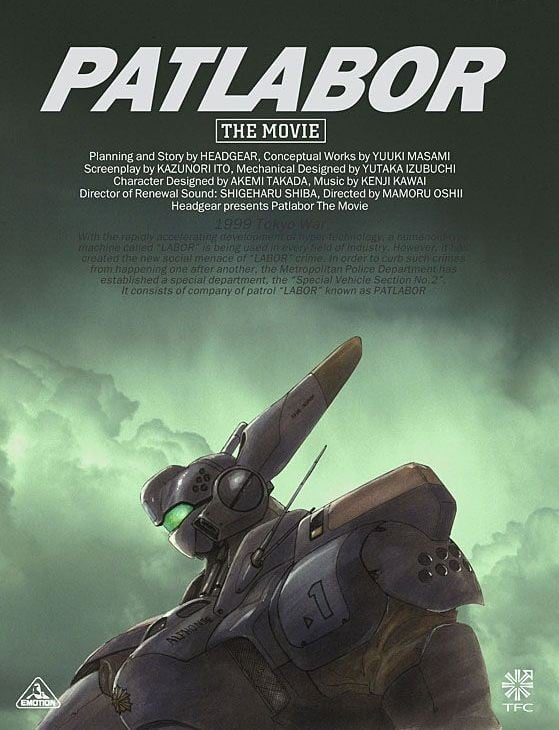
7.8「机动警察剧场版1 东京毁灭战」（1989）是一部剧场版，由押井守执导，制作スタジオディーン，类型包括科幻、机战、战斗，评分7.8，在本站出现在6份片单中，例如高分动画剧场版推荐、高分热血动漫推荐、高分科幻动漫推荐。页面只做片单对照，不提供播放。一部军用的机械人在无人的情况自动启动、一个名为帆场瑛一的篠原重工天才程序员自杀；谁也没想到，两起无关事件却会在将来把东京带入恐怖中。 东京各处陆续发生了一系列机械人暴走的事情，经过特车2课的调查，发现可疑之处是一套新推出的机械人操作系统：H。
#208×××HOLiC 笼
 7.8
7.8「×××HOLiC 笼」（2010）是一部OVA/WEB，由水島努执导，制作Production I.G，类型包括奇幻、治愈，评分7.8，在本站出现在5份片单中，例如高分OVA与WEB动画、高分治愈系动漫推荐、高分奇幻冒险动漫。页面只做片单对照，不提供播放。故事开始于四月一日君寻和壹原侑子的命运相遇。自从遇到侑子后，四月一日遇到了形形色色的人和物，发生了许许多多的好事坏事，他自己也发生了很大的改变。然而店主人侑子留下了最后的愿望之后，却消失了。于是四月一日守在店里，等待有一天与她重逢。 这十年。
#209剧场版 进击的巨人 完结篇 THE LAST ATTACK
 7.8
7.8「剧场版 进击的巨人 完结篇 THE LAST ATTACK」（2024）是一部剧场版，由林祐一郎执导，类型包括热血、战斗、奇幻，评分7.8，在本站出现在6份片单中，例如高分动画剧场版推荐、高分热血动漫推荐、高分奇幻冒险动漫。页面只做片单对照，不提供播放。这就是，最后的『进击』－－！ 以遭高墙分割的世界为舞台，描写人类与巨人永无止尽的抗争的《进击的巨人》。 与原作漫画一同在全世界打响超人气的电视动画系列，自第一季开播以来经过将近10年的时光，于2023年秋季热烈回响中划下句点。如今来到202。
#210夏目友人帐 柒
 7.8
7.8「夏目友人帐 柒」（2024）是一部TV，由伊藤秀樹执导，类型包括治愈、奇幻、日常，评分7.8，在本站出现在5份片单中，例如高分治愈系动漫推荐、高分校园动漫推荐、高分奇幻冒险动漫。页面只做片单对照，不提供播放。心優しき友人たちとの、大切な日々── 美しく儚き、人と妖の物語。 小さい頃から妖怪を見ることができた少年・夏目貴志は、 祖母レイコの遺産「友人帳」を受け継ぎ、 自称用心棒のニャンコ先生と共に、 そこに名を縛られた妖怪たちに名を返す日々を送る。
#211画完这个再去死
 7.8
7.8「画完这个再去死」（2026）是一部TV，由赤城博昭执导，制作シンエイ動画，类型包括日常、校园、治愈，评分7.8，在本站出现在7份片单中，例如2026年夏季新番推荐、2026年新番总表、高分治愈系动漫推荐。页面只做片单对照，不提供播放。高一生安海相住在东京都离岛・伊豆王岛。 非常喜欢阅读漫画的她，因为某个契机，开始萌生「创作」漫画的念头… 少女踏出的漫画创作之路，前方等待着她的会是!? 熟悉却又陌生的漫画创作世界。孕育作品的苦涩与喜悦全都毫无保留地浓缩其中的漫画浪漫成长故。
#212剑豪生死斗
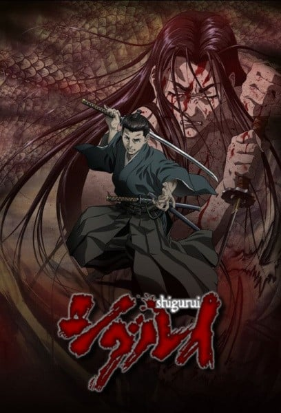
7.8「剑豪生死斗」（2007）是一部TV，由浜崎博嗣执导，制作MADHOUSE，类型包括战斗、历史，评分7.8，在本站出现在3份片单中，例如高分热血动漫推荐、漫画改编动漫推荐、高分动漫排行榜。页面只做片单对照，不提供播放。江户初期，天下太平。 应大纳言德川忠长的命令，一直都是以木剑来进行的殿前比武改为使用真剑。参加这一场比武的是岩本虎眼道场的同门——独臂的藤木源之助和盲眼的伊良子清玄。 究竟谁才可以站在武士道的顶点？残酷的命运开始了……。
#213相反的你和我 第二季
 7.8
7.8「相反的你和我 第二季」（2026）是一部TV，由長友孝和执导，类型包括恋爱、校园、搞笑，评分7.8，在本站出现在8份片单中，例如2026年夏季新番推荐、2026年新番总表、高分恋爱动漫推荐。页面只做片单对照，不提供播放。总是充满活力却在意周围目光的女孩 — 铃木，以及沉静但能坚定表达自己意见的男孩 — 谷。 这是一个由两个性格截然不同的人、彼此尊重、慢慢加深理解，并与朋友们一起度过校园生活的爱情喜剧！ [简介原文] いつも元気いっぱいだけど周りの目を気にし。
#214机动警察
 7.8
7.8「机动警察」（1989）是一部TV，由吉永尚之执导，类型包括科幻、机战、搞笑，评分7.8，在本站出现在5份片单中，例如高分热血动漫推荐、高分科幻动漫推荐、必看搞笑动漫。页面只做片单对照，不提供播放。二十一世纪初，人口不断增长，职位和房屋的需求成为了人们首要的问题。 原本的土地已经不足以满足社会的发展，于是日本政府将东京湾对出的海域进行一次大规模的填海造地工程，填平面积总共四十五万平方公尺，把木更津第一人工岛和川崎第二人工岛连接结合，长。
#215蜡笔小新：风起云涌 壮烈！战国大会战
 7.8
7.8「蜡笔小新：风起云涌 壮烈！战国大会战」（2002）是一部剧场版，由原恵一执导，类型包括搞笑、奇幻、冒险，评分7.8，在本站出现在6份片单中，例如高分动画剧场版推荐、高分奇幻冒险动漫、必看搞笑动漫。页面只做片单对照，不提供播放。某一晚，野原一家同时梦见了古装剧里才会出现的”古代美女”，虽然全家人都觉得很不可思议，却也没有深入追究。当天下午小新从幼儿园回来时，看到小白正在庭院里拼命挖洞，而当小新也跟着开始挖掘后，竟然挖出了一个箱子，里面放有小新亲笔写的书函，除了写有。
#216蜡笔小新：决一胜负！逆袭的机器人爸爸
 7.8
7.8「蜡笔小新：决一胜负！逆袭的机器人爸爸」（2014）是一部剧场版，由高橋渉执导，制作シンエイ動画，类型包括搞笑、治愈、科幻，评分7.8，在本站出现在7份片单中，例如高分动画剧场版推荐、高分治愈系动漫推荐、高分科幻动漫推荐。页面只做片单对照，不提供播放。美好的周末假期，野原新之助（矢岛晶子 配音）和爸爸广志（藤原启治 配音）一起去看机器人的科幻电影，走出电影后的父子俩兴奋地大玩合体游戏，谁知广志却不慎扭伤了腰。忍受不了老婆的碎碎念，广志去医院看病，可是周末医院休诊，父子俩只得来到公园休息，。
#217向阳素描×蜂窝
 7.8
7.8「向阳素描×蜂窝」（2012）是一部TV，由新房昭之执导，制作SHAFT，类型包括治愈、百合、日常，评分7.8，在本站出现在5份片单中，例如高分治愈系动漫推荐、高分校园动漫推荐、高分女性向动漫。页面只做片单对照，不提供播放。蒼樹うめ原作、「ひだまりスケッチ」TVシリーズ第4作。 私立やまぶき高校の美術科に通うゆのは、 学校のまん前にある小さなアパート「ひだまり荘」で同級生の宮子や、 先輩のヒロと沙英、後輩の乃莉やなずなたちと、6人一緒に毎日を過ごす。 楽しいこ。
#218猎人 OVA3 贪婪之岛 完结篇
 7.8
7.8「猎人 OVA3 贪婪之岛 完结篇」（2004）是一部OVA/WEB，由所俊克（79-82）执导，类型包括热血、战斗、奇幻，评分7.8，在本站出现在5份片单中，例如高分OVA与WEB动画、高分热血动漫推荐、高分奇幻冒险动漫。页面只做片单对照，不提供播放。集英社刊「週刊少年ジャンプ」連載の人気漫画を原作にしたOVA作品で、本作は伝説のハンター専用ゲーム""グリードアイランド""を舞台に展開されるシリーズとなっている。主人公は、行方不明の父親を探すためにハンターとなったゴン・フリークス。友だち。
#219银魂 〜无论什么事开始虽然重要但伸个懒腰的话也不错〜
 7.8
7.8「银魂 〜无论什么事开始虽然重要但伸个懒腰的话也不错〜」（2009）是一部OVA/WEB，类型包括搞笑、日常、战斗，评分7.8，在本站出现在6份片单中，例如高分OVA与WEB动画、高分热血动漫推荐、高分治愈系动漫推荐。页面只做片单对照，不提供播放。春天晴空万里的一天，去赏花的万事屋的一行人，撞上了一样到那里去赏花的真选组。在赏花地点开始了万事屋和真选组之间的争斗，由于在有平民的地方动刀不好，所以就以“打打戴戴包剪锤”决胜负。因私怨而击溃近藤的妙，一上来就相互殴打的神乐和冲田，比试酒量。
#220Go! Princess 光之美少女
 7.8
7.8「Go! Princess 光之美少女」（2015）是一部TV，制作東映アニメーション，类型包括百合、战斗、奇幻，评分7.8，在本站出现在5份片单中，例如高分热血动漫推荐、高分奇幻冒险动漫、高分女性向动漫。页面只做片单对照，不提供播放。梦想是成为公主的春野遥，于新的学期正式成为寄宿学校贵族学园的初中一年级生，准备展开期待已久的新生活。就在此时，她目睹邪恶势力把人通往梦想的“门”紧密封闭，并染上浓厚的绝望。然后在机缘巧合之下，她集齐了希望王国彼方王子誓死守护的公主香水及装扮。
#221凡尔赛玫瑰
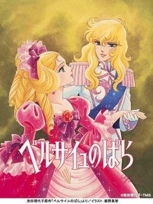
7.8「凡尔赛玫瑰」（1979）是一部TV，类型包括百合、历史、少女，评分7.8，在本站出现在3份片单中，例如高分恋爱动漫推荐、高分女性向动漫、漫画改编动漫推荐。页面只做片单对照，不提供播放。在18世纪的法国，身为杰尔吉将军之女的奥斯卡・法兰索瓦为了继承家族，被当作男性抚养长大。后来，她受命担任来自奥地利的王太子妃玛莉・安东妮德的侍卫队长。然而，王太子与玛莉之间的关系冷淡，再加上与国王的情妇们对立，使得玛莉在宫廷中倍感孤独。 就。
#222橙路 再回到往日
 7.8
7.8「橙路 再回到往日」（1988）是一部剧场版，由望月智充执导，类型包括恋爱、校园、奇幻，评分7.8，在本站出现在6份片单中，例如高分动画剧场版推荐、高分恋爱动漫推荐、高分校园动漫推荐。页面只做片单对照，不提供播放。1988年10月8日上映，是动画版的完结篇，交代了春日恭介在三角恋的选择。 讲述鲇川圆和春日恭介考进大学前一刻，回想前年夏天他和鲇川圆和桧山光的三角恋的解决。
#223蝙蝠侠：黑暗骑士归来（下）
 7.8
7.8「蝙蝠侠：黑暗骑士归来（下）」（2013）是一部OVA/WEB，由Jay Oliva执导，制作MOI Animation，类型包括科幻、战斗，评分7.8，在本站出现在5份片单中，例如高分美漫与动画电影、高分OVA与WEB动画、高分热血动漫推荐。页面只做片单对照，不提供播放。曾经罪恶横行的高谭市，自布鲁斯·韦恩（彼得·威勒 Peter Weller 配音）决定以蝙蝠侠的身份归来后，仿佛终于发生了新的变化。变种人头目双面人被除掉，然而原变种人团伙摇身变成蝙蝠狂热者，以暴力的方式执行着对善恶之行的裁断。因此，蝙蝠侠。
#224查理布朗和史努比
 7.8
7.8「查理布朗和史努比」（1983）是一部TV，类型包括搞笑、治愈、喜剧，评分7.8，在本站出现在4份片单中，例如高分美漫与动画电影、高分治愈系动漫推荐、必看搞笑动漫。页面只做片单对照，不提供播放。这是关于查理•布朗和他的小猎犬史努比，还有“花生帮”的朋友们之间的故事，围绕童年生活的种种快乐和烦恼而展开。每一个角色都有着不同的奇怪性格，有时候仿佛拥有超越他们年龄的智慧，让情节变得有趣而特别。查理•布朗、史努比和它的小鸟糊涂塌克、查理任。
#225第一神拳 New Challenger
 7.8
7.8「第一神拳 New Challenger」（2009）是一部TV，由宍戸淳执导，类型包括热血、运动、战斗，评分7.8，在本站出现在3份片单中，例如高分热血动漫推荐、必看搞笑动漫、漫画改编动漫推荐。页面只做片单对照，不提供播放。由森川让次老师所著的《第一神拳》（はじめの一歩），早在1989年就开始在讲谈社《周刊少年マガジン》连载，至今已连载八百多回，终于要在2009年1 月再度以动画的形式登上电视的舞台！《第一神拳》是目前连载最长的拳击漫画，更是《周刊少年マガジン。
#226航海王 埃鲁巴夫篇
 7.8
7.8「航海王 埃鲁巴夫篇」（2026）是一部TV，制作東映アニメーション，类型包括热血、战斗、冒险，评分7.8，在本站出现在5份片单中，例如2026年春季新番推荐、2026年新番总表、高分热血动漫推荐。页面只做片单对照，不提供播放。从艾格赫德惊险逃脱后，草帽一伙将航向传说中的目的地。与强大的巨兵海贼团同行，他们终于抵达了期待已久的巨人之国——埃鲁巴夫。 与巨人的全新邂逅，以及期盼已久的团聚即将展开。一场宏大的新篇章就此开启，草帽一伙将踏上与以往截然不同的冒险之旅，一切。
#227向阳之树
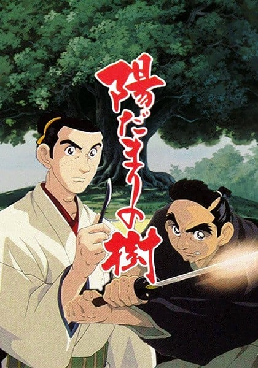
7.8「向阳之树」（2000）是一部TV，类型包括历史、战斗，评分7.8，在本站出现在2份片单中，例如高分热血动漫推荐、漫画改编动漫推荐。页面只做片单对照，不提供播放。幕末期の日本を舞台に、当時の開国、西洋文明と西洋人の流入からやがて続く倒幕、そして戊辰戦争という時代の流れの上で、対照的だが友情で結ばれた2人の男の人生を綿密に推敲されたストーリーで描いている。手塚作品の中でも『アドルフに告ぐ』と並んで緻密。
#228JOJO的奇妙冒险
 7.7
7.7「JOJO的奇妙冒险」（2012）是一部TV，由津田尚克执导，制作david production，类型包括热血、战斗、奇幻，评分7.7，在本站出现在4份片单中，例如高分热血动漫推荐、高分奇幻冒险动漫、漫画改编动漫推荐。页面只做片单对照，不提供播放。在古代墨西哥繁盛一时的太阳的子民阿兹特克，他们流传着一枚奇妙的「石鬼面」。那是一枚奇迹的面具，能让人拥有一种力量，能获得永远的生命并成为真正的掌控者。然而从某个时候开始，就从历史中消失了踪影。 时光飞逝，来到了19世纪末的英国。在这个人们的。
#229齐木楠雄的灾难
 7.7
7.7「齐木楠雄的灾难」（2016）是一部TV，由桜井弘明执导，制作EGG FIRM×J.C.STAFF，类型包括搞笑、校园、超能力，评分7.7，在本站出现在4份片单中，例如高分治愈系动漫推荐、高分校园动漫推荐、必看搞笑动漫。页面只做片单对照，不提供播放。高中生·齐木楠雄是超能力者。心灵感应、念动力、透视、预知、瞬间移动、千里眼等，不论任何事情都自由自在。但这任谁都羡慕不已的最强能力，实际上对于本人而言是引来灾难的不幸元凶。因此，他在别人面前封印了超能力，以不起眼、不和他人有所牵扯为信条，默。
#230进击的巨人 最终季
 7.7
7.7「进击的巨人 最终季」（2020）是一部TV，由林祐一郎执导，制作MAPPA，类型包括战斗、热血、奇幻，评分7.7，在本站出现在5份片单中，例如高分热血动漫推荐、高分奇幻冒险动漫、漫画改编动漫推荐。页面只做片单对照，不提供播放。「その巨人はいついかなる時代においても、自由を求めて進み続けた。自由のために戦った。名は――進撃の巨人」 ついに明かされた壁の外の真実と、巨人の正体。ここに至るまで、人類はあまりにも大きすぎる犠牲を払っていた。それでもなお、彼らは進み続けな。
#231天国大魔境
 7.7
7.7「天国大魔境」（2023）是一部TV，由森大貴执导，制作Production I.G，类型包括悬疑、科幻、战斗，评分7.7，在本站出现在5份片单中，例如高分热血动漫推荐、高分科幻动漫推荐、高分悬疑推理动漫。页面只做片单对照，不提供播放。2024年，世界发生了史无前例的灾难，然后15年过去了。 成为废墟的日本栖息着一种食人的怪物（蛭子），人们艰难地生存着。 在东京·中野经营万事屋的的斩子接受了一个神秘女人的委托，“带这个孩子去天国”。 这个被留下的名叫真流的孩子说“天国好像。
#232进击的巨人 最终季 Part.2
 7.7
7.7「进击的巨人 最终季 Part.2」（2022）是一部TV，由林祐一郎执导，制作MAPPA，类型包括战斗、热血、奇幻，评分7.7，在本站出现在5份片单中，例如高分热血动漫推荐、高分奇幻冒险动漫、漫画改编动漫推荐。页面只做片单对照，不提供播放。ついに明かされた壁の外の真実と、巨人の正体。 ここに至るまで、人類はあまりにも大きすぎる犠牲を払っていた。 それでもなお、彼らは進み続けなければならない。 壁の外にある海を、自由の象徴を、まだその目で見ていないのだから。 —やがて時は流れ、。
#233ReLIFE
 7.7
7.7「ReLIFE」（2016）是一部TV，由小坂知执导，制作トムス・エンタテインメント，类型包括恋爱、校园、治愈，评分7.7，在本站出现在4份片单中，例如高分恋爱动漫推荐、高分治愈系动漫推荐、高分校园动漫推荐。页面只做片单对照，不提供播放。海崎新太（27岁）在作为新毕业生进入的公司工作了3个月就辞职了。 之后他的就职活动也不顺利。 双亲寄来的生活费也中断了，不得已只好回到乡下。 能够倾听他烦恼的朋友和女友全都没有…… 穷途末路的海崎面前出现了一位神秘人物·夜明了。 夜明向海崎。
#234齐木楠雄的灾难 第二季
 7.7
7.7「齐木楠雄的灾难 第二季」（2018）是一部TV，由桜井弘明执导，制作EGG FIRM × J.C.STAFF，类型包括搞笑、校园、日常，评分7.7，在本站出现在4份片单中，例如高分治愈系动漫推荐、高分校园动漫推荐、必看搞笑动漫。页面只做片单对照，不提供播放。齐木楠雄的灾难 第二季。2018。搞笑、校园、日常。
#235进击的巨人 最终季 完结篇 前篇
 7.7
7.7「进击的巨人 最终季 完结篇 前篇」（2023）是一部TV，由林祐一郎执导，制作MAPPA，类型包括战斗、热血、战争，评分7.7，在本站出现在5份片单中，例如高分热血动漫推荐、高分奇幻冒险动漫、漫画改编动漫推荐。页面只做片单对照，不提供播放。世界を滅ぼそうと「地鳴らし」を発動させたエレン。無数の巨人たちが進撃を開始し、あらゆるものを踏み潰していく。 ミカサ、アルミン、ジャン、コニー、ハンジ、ライナー、アニ、ピーク、そして瀕死の重傷を負ったリヴァイ……。残されたものたちがエレンを。
#236跃动青春
 7.7
7.7「跃动青春」（2023）是一部TV，由出合小都美执导，类型包括校园、日常、恋爱，评分7.7，在本站出现在4份片单中，例如高分恋爱动漫推荐、高分治愈系动漫推荐、高分校园动漫推荐。页面只做片单对照，不提供播放。岩仓美津未从乡下的小初中，以第一名的成绩考入了东京的高升学率高中。 这位乡村神童心怀完美的人生蓝图、独自来到东京。她成绩优异，却与他人有着独特的距离感，稍显格格不入。 她虽然偶尔会失败，但还是凭借天真的性格一点点打动班上的同学，使他们那各不。
#237摇曳百合
 7.7
7.7「摇曳百合」（2011）是一部TV，由太田雅彦执导，类型包括百合、搞笑、日常，评分7.7，在本站出现在5份片单中，例如高分治愈系动漫推荐、高分校园动漫推荐、必看搞笑动漫。页面只做片单对照，不提供播放。在七森中学的校园里，无所事事四人帮——女主角赤座灯里、暴走的岁纳京子、吐糟役的船见结衣，以及在人前会伪装成可爱女孩的吉川千夏，擅自把废了部的茶道社部室据为己用，并且自称地建立了娱乐部。擅自使用课室又引来了学生会的介入，于是各种百合妄想也在作。
#238更衣人偶坠入爱河 第二季
 7.7
7.7「更衣人偶坠入爱河 第二季」（2025）是一部TV，由篠原啓輔执导，制作CloverWorks，类型包括恋爱、校园、日常，评分7.7，在本站出现在6份片单中，例如2025年夏季新番推荐、高分恋爱动漫推荐、高分治愈系动漫推荐。页面只做片单对照，不提供播放。以某次的相遇为契机，喜多川海梦和五条新菜透过Cosplay加深了交流。 他们还有许多想Cosplay的角色和想制作的服装。 透过和同学们的交流，以及新的Cosplay同伴的相遇，近一步拓展了海梦和新菜的世界。 除此之外，新菜与令人不断脸红心。
#239ReLIFE 完结篇
 7.7
7.7「ReLIFE 完结篇」（2018）是一部OVA/WEB，由小坂知执导，制作トムス・エンタテインメント，类型包括恋爱、校园、治愈，评分7.7，在本站出现在5份片单中，例如高分OVA与WEB动画、高分恋爱动漫推荐、高分治愈系动漫推荐。页面只做片单对照，不提供播放。無職でニートの海崎新太(27歳)はリライフ研究所の社会復帰プログラム「リライフ」へ参加し、1年間限定で高校生として高校に通っていた。 2学期に入り日代と一緒に青葉祭の実行委員を任された海崎は日代にある気持ちを抱く。一方、日代も花火大会以降、。
#240暗杀教室 第二季
 7.7
7.7「暗杀教室 第二季」（2016）是一部TV，由岸誠二执导，类型包括搞笑、校园、战斗，评分7.7，在本站出现在5份片单中，例如高分热血动漫推荐、高分治愈系动漫推荐、高分校园动漫推荐。页面只做片单对照，不提供播放。暗杀教室 第二季。2016。搞笑、校园、战斗。
#241摇曳百合♪♪
 7.7
7.7「摇曳百合♪♪」（2012）是一部TV，由太田雅彦执导，类型包括百合、搞笑、日常，评分7.7，在本站出现在4份片单中，例如高分治愈系动漫推荐、必看搞笑动漫、高分女性向动漫。页面只做片单对照，不提供播放。占据了旧茶道部的活动室、继续擅自进行“娱乐部”活动（虽说如此也没啥明确的活动内容）的4人组。 对她们的行为持续关注、继续多管闲事（？）的学生会。 延续第一季的爱意满载、每天元气满满的轻松百合故事。
#242【我推的孩子】Mother and Children
 7.7
7.7「【我推的孩子】Mother and Children」（2023）是一部剧场版，类型包括转生、悬疑、恋爱，评分7.7，在本站出现在7份片单中，例如高分动画剧场版推荐、高分恋爱动漫推荐、高分异世界动漫推荐。页面只做片单对照，不提供播放。「かぐや様は告らせたい」の赤坂アカ原作、「クズの本懐」の横槍メンゴ作画による「週刊ヤングジャンプ」連載の人気コミックを原作とする2023年4月放送開始のテレビアニメ「【推しの子】」の第1話（90分拡大版）を放送に先駆けて劇場上映。 とある地。
#243彻夜之歌 第二季
 7.7
7.7「彻夜之歌 第二季」（2025）是一部TV，由板村智幸执导，制作ライデンフィルム，类型包括恋爱、奇幻、日常，评分7.7，在本站出现在6份片单中，例如2025年夏季新番推荐、高分恋爱动漫推荐、高分治愈系动漫推荐。页面只做片单对照，不提供播放。"夜はまだ終わらない" 吸血鬼になることへの戸惑いを乗り越え、 ナズナを“好き”になることを決めたコウと、コウに“惚れさせる”決意をしたナズナ。 「恋」が一体なんなのか、わからないまま二人の夜は加速していく。 吸血鬼を殺そうと企む探偵・鶯 。
#244樱兰高校男公关部
 7.7
7.7「樱兰高校男公关部」（2006）是一部TV，由五十嵐卓哉执导，类型包括搞笑、校园、恋爱，评分7.7，在本站出现在5份片单中，例如高分恋爱动漫推荐、高分治愈系动漫推荐、高分校园动漫推荐。页面只做片单对照，不提供播放。这是一个发生在贵族学校的故事。私立樱兰高校是日本上流社会的一个缩影。而这个学校最闻名的社团之一，就是六个英俊不凡的男子组成的男公关部。而庶民春绯虽然得以凭借奖学金以特优生的身份进入这个高校，却因为一次偶遇加入公关部工作。青春，友情，爱情，感。
#245希德尼娅的骑士
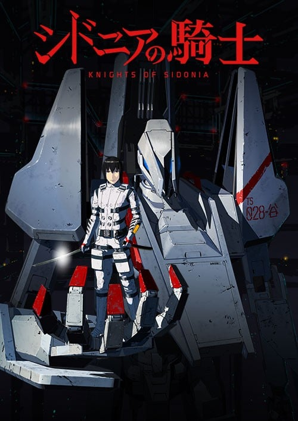
7.7「希德尼娅的骑士」（2014）是一部TV，类型包括科幻、机战、战斗，评分7.7，在本站出现在4份片单中，例如高分热血动漫推荐、高分恋爱动漫推荐、高分科幻动漫推荐。页面只做片单对照，不提供播放。被无法与人类沟通的异生物·奇居子破坏的太阳系，只剩下一小部分的人类尚存活。他们为了生存制作了如同小行星本巨大的宇宙播种船希德尼娅，并在宇宙中进行旅行。 经过了1000年后，时值希德尼娅出航纪元1009年，由地下层部培育的少年谷风长道自祖父死。
#246犬夜叉
 7.7
7.7「犬夜叉」（2000）是一部TV，由池田成（1-44）执导，类型包括战斗、爱情、恋爱，评分7.7，在本站出现在4份片单中，例如高分热血动漫推荐、高分恋爱动漫推荐、高分奇幻冒险动漫。页面只做片单对照，不提供播放。日暮戈薇是就读于国中三年级的15岁普通小女生，某日，她偶然通过家中神社的枯井来到了500年前的战国时代。时狼烟四起，妖怪横行，世间大地生灵涂炭。戈薇在御神木那里邂逅了被封印的半妖犬夜叉。50年前，意欲变成真正妖怪的犬夜叉，为了得到四魂之玉结。
#247元气囝仔
 7.7
7.7「元气囝仔」（2014）是一部TV，由橘正紀执导，类型包括治愈、搞笑、日常，评分7.7，在本站出现在3份片单中，例如高分治愈系动漫推荐、必看搞笑动漫、漫画改编动漫推荐。页面只做片单对照，不提供播放。因缘际会下，来到日本最西端的岛上生活的年轻帅哥书法家·半田清舟。在开始不习惯的乡村生活的“老师”面前，出现了一名天真浪漫的岛上囝仔·奈留……？在都市长大的傲娇老师和胸襟异常宽阔的岛上居民交织而成的触动人心岛屿喜剧！。
#248摇曳百合 3☆High!
 7.7
7.7「摇曳百合 3☆High!」（2015）是一部TV，由畑博之执导，制作TYO Animations（ゆめ太カンパニー），类型包括百合、日常、搞笑，评分7.7，在本站出现在4份片单中，例如高分治愈系动漫推荐、必看搞笑动漫、高分女性向动漫。页面只做片单对照，不提供播放。摇曳百合 3☆High!。2015。百合、日常、搞笑。
#249擅长捉弄的高木同学 剧场版
 7.7
7.7「擅长捉弄的高木同学 剧场版」（2022）是一部剧场版，由赤城博昭执导，制作シンエイ動画，类型包括恋爱、日常、校园，评分7.7，在本站出现在7份片单中，例如高分动画剧场版推荐、高分恋爱动漫推荐、高分治愈系动漫推荐。页面只做片单对照，不提供播放。在一所初中里，有一个叫做西片的男生，时常遭到同桌女生高木同学的捉弄。每次他设法捉弄回去，都会被高木同学看透。季节变换，两个人都升上了三年级。周围的同学们开始思考将来，掺杂着不安与期待的同时，高木同学与西片之间的距离仍未改变。于是，初中最后的。
#250夏目友人帐 伍
 7.7
7.7「夏目友人帐 伍」（2016）是一部TV，由出合小都美执导，类型包括治愈、奇幻、日常，评分7.7，在本站出现在4份片单中，例如高分治愈系动漫推荐、高分校园动漫推荐、高分奇幻冒险动漫。页面只做片单对照，不提供播放。从小便能看见妖怪的少年夏目贵志。 自从他从祖母玲子那里继承了与妖怪成为主从并将其名字书写在上的契约书“友人帐”以来，便与自称为保镖的妖怪猫咪老师一同，开始了将名字返还给妖怪的每一天。 夏目与各种各样的妖怪与善良人们相遇，在构筑温暖的场所同时。
#251向山进发 第三季
 7.7
7.7「向山进发 第三季」（2018）是一部TV，由山本裕介执导，制作エイトビット，类型包括百合、治愈、日常，评分7.7，在本站出现在3份片单中，例如高分治愈系动漫推荐、高分女性向动漫、漫画改编动漫推荐。页面只做片单对照，不提供播放。一起去吧—— 与无可替代的朋友一起，去与那美丽的景色相会。 喜爱室内活动、有恐高症的葵，升入高中时与儿时好友日向重逢，虽然她在日向的带领下疲惫不堪，却也因此累积了登山和户外活动的经验。葵也逐渐对于登山乐在其中。 之后，她们的季节由夏转秋——。
#252黄金神威 第二季
 7.7
7.7「黄金神威 第二季」（2018）是一部TV，由難波日登志执导，类型包括冒险、搞笑、战斗，评分7.7，在本站出现在5份片单中，例如高分热血动漫推荐、高分奇幻冒险动漫、必看搞笑动漫。页面只做片单对照，不提供播放。寻求着阿依努的财宝的日俄战争的英雄“不死的杉元”杉元佐一和阿依努族少女阿席莉帕。在追踪着身上刺青含有藏宝地提示的24名逃犯的过程中，逐渐发现了新的事实。抢走了宝藏、杀了阿席莉帕父亲的野篦坊，正是阿席莉帕的父亲本人。为了确认事情的真伪，只能去。
#253夏目友人帐 陆
 7.7
7.7「夏目友人帐 陆」（2017）是一部TV，由出合小都美执导，类型包括治愈、奇幻、日常，评分7.7，在本站出现在4份片单中，例如高分治愈系动漫推荐、高分校园动漫推荐、高分奇幻冒险动漫。页面只做片单对照，不提供播放。心優しき友人たちとの、大切な日々── 美しく儚き、人と妖の物語。 小さい頃から妖怪を見ることができた少年・夏目貴志は、 祖母レイコの遺産「友人帳」を受け継ぎ、 自称用心棒のニャンコ先生と共に、 そこに名を縛られた妖怪たちに名を返す日々を送る。
#254黑礁 Roberta’s Blood Trail
 7.7
7.7「黑礁 Roberta’s Blood Trail」（2010）是一部OVA/WEB，由片渕須直执导，类型包括战斗、热血、冒险，评分7.7，在本站出现在4份片单中，例如高分OVA与WEB动画、高分热血动漫推荐、高分奇幻冒险动漫。页面只做片单对照，不提供播放。以Lovelace家族的女佣、前任哥伦比亚革命军的恐怖份子“弗罗伦西亚的猎犬”罗贝尔特为中心，收养她的Lovelace家族主人在一起由NSA策划的爆炸中死亡，而罗贝尔特为了展开复仇再次走上了血路。
#255悠哉日常大王 OAD
 7.7
7.7「悠哉日常大王 OAD」（2014）是一部OVA/WEB，由川面真也执导，制作SILVER LINK.，类型包括日常、治愈、百合，评分7.7，在本站出现在5份片单中，例如高分OVA与WEB动画、高分治愈系动漫推荐、必看搞笑动漫。页面只做片单对照，不提供播放。单行本第7卷同捆OAD。
#256搞笑漫画日和2
 7.7
7.7「搞笑漫画日和2」（2006）是一部TV，由大地丙太郎执导，制作ARTLAND，类型包括搞笑，评分7.7，在本站出现在2份片单中，例如必看搞笑动漫、漫画改编动漫推荐。页面只做片单对照，不提供播放。1話5分のショートギャグ待望の第2弾!! またまた天才コンビが贈る、 究極のシュールギャグ!! 原作：増田こうすけ×監督：大地丙太郎 面白さ更にパワーUP!! 聖徳太子＆妹子、芭蕉に曽良、うさみちゃんとクマ吉くんとかおなじみの面々と、その他。
#257搞笑漫画日和3
 7.7
7.7「搞笑漫画日和3」（2008）是一部TV，由大地丙太郎执导，制作スタジオディーン，类型包括搞笑，评分7.7，在本站出现在2份片单中，例如必看搞笑动漫、漫画改编动漫推荐。页面只做片单对照，不提供播放。《搞笑漫画日和》是一部没有条理的超搞笑漫画，2002年以JUMPFesta动画的形式被制作推出之后，引发了很大的反响，2005年被正式动画化，并附有“增田幸助剧场”这个副标题。基本上是每一话完成一个故事，不过因为每话的长度各式各样，也有二、。
#258排球少年 TO THE TOP 第二期
「排球少年 TO THE TOP 第二期」（2020）是一部TV，由佐藤雅子执导，类型包括运动、热血、校园，评分7.7，在本站出现在3份片单中，例如高分热血动漫推荐、高分校园动漫推荐、漫画改编动漫推荐。页面只做片单对照，不提供播放。排球少年 TO THE TOP 第二期。2020。运动、热血、校园。
#259放浪男孩
 7.7
7.7「放浪男孩」（2011）是一部TV，由あおきえい执导，制作AIC Classic，类型包括治愈、校园、日常，评分7.7，在本站出现在5份片单中，例如高分恋爱动漫推荐、高分治愈系动漫推荐、高分校园动漫推荐。页面只做片单对照，不提供播放。想变成女生的男孩二鸟修一，在新转校的小学遇到帅气的女生高槻佳乃。最初修一一直压抑着想成为女生的心情，之后发现佳乃经常穿着男生学生服到远方城镇。彼此共享秘密的两人，修一穿着水手服、佳乃穿着男生学生服，一起到远方的城镇冒险。然而当二人升入中学后。
#260日常 OAD
 7.7
7.7「日常 OAD」（2011）是一部OVA/WEB，由石原立也执导，类型包括日常、搞笑、校园，评分7.7，在本站出现在5份片单中，例如高分OVA与WEB动画、高分治愈系动漫推荐、高分校园动漫推荐。页面只做片单对照，不提供播放。京阿尼新作动画《日常》最终还是敲定为OAD先行TV版紧接其后的推出方式，OAD版如早前所公布的，将在3月发售的最新漫画单行版中捆绑发行，而TV版的播放时间确定为2011年4月，正式参战明年4月的新番狂潮。 除了即将捆绑发行的OAD“日常0话。
#261灌篮高手
「灌篮高手」（2022）是一部剧场版，由井上雄彦执导，制作東映アニメーション，类型包括运动、热血、校园，评分7.7，在本站出现在5份片单中，例如高分动画剧场版推荐、高分热血动漫推荐、高分校园动漫推荐。页面只做片单对照，不提供播放。1990年から96年まで「週刊少年ジャンプ」で連載され、現在に至るまで絶大な人気を誇る名作バスケットボール漫画「SLAM DUNK」を新たにアニメーション映画化。原作者の井上雄彦が監督・脚本を手がけ、高校バスケ部を舞台に選手たちの成長を描き。
#262悠哉日常大王 Repeat OAD
 7.7
7.7「悠哉日常大王 Repeat OAD」（2016）是一部OVA/WEB，由川面真也执导，制作SILVER LINK.，类型包括日常、治愈、百合，评分7.7，在本站出现在5份片单中，例如高分OVA与WEB动画、高分治愈系动漫推荐、必看搞笑动漫。页面只做片单对照，不提供播放。单行本第10卷同捆OAD。
#263银魂.
 7.7
7.7「银魂.」（2017）是一部TV，由宮脇千鶴执导，类型包括搞笑、热血、战斗，评分7.7，在本站出现在4份片单中，例如高分热血动漫推荐、高分治愈系动漫推荐、必看搞笑动漫。页面只做片单对照，不提供播放。银魂.。2017。搞笑、热血、战斗。
#264淡岛百景
 7.7
7.7「淡岛百景」（2026）是一部TV，由浅香守生执导，制作MADHOUSE，类型包括校园、百合、日常，评分7.7，在本站出现在6份片单中，例如2026年春季新番推荐、2026年新番总表、高分治愈系动漫推荐。页面只做片单对照，不提供播放。淡岛歌剧学校里，梦想着站上舞台的少女们自全国各地齐聚而来。憧憬着歌舞剧明星而入学的新生・若菜。背负着挚友的思念努力学习的舍长・绢枝。散发出压倒性存在感的，美丽特待生・绘美。憧憬她、嫉妒她，并不断渴求她目光的桂子与其家人――。她们无可替代的日。
#265来自深渊 启程之拂晓
 7.7
7.7「来自深渊 启程之拂晓」（2019）是一部剧场版，由小島正幸执导，类型包括奇幻、冒险、治愈，评分7.7，在本站出现在6份片单中，例如高分动画剧场版推荐、高分热血动漫推荐、高分治愈系动漫推荐。页面只做片单对照，不提供播放。在这个各个角落都被探索尽的世界，唯一仅存的秘境—大洞穴「阿比斯」。 这个会延伸到哪里不得而知、深不见底的巨大纵向洞穴中，栖息着各种奇奇怪怪的生物，还藏有现今人类制作不出来的珍贵遗物。 「阿比斯」处处不可思议的景象，让人们为之着迷，前仆后继地。
#266热带雨林的爆笑生活
 7.7
7.7「热带雨林的爆笑生活」（2001）是一部TV，由水島努执导，类型包括搞笑、日常，评分7.7，在本站出现在3份片单中，例如高分治愈系动漫推荐、必看搞笑动漫、漫画改编动漫推荐。页面只做片单对照，不提供播放。小晴，一个平凡的男孩，和有点不负责的妈妈——维达生活在热带的雨林中，每天都是在摘香蕉，打游戏，在学校和瞌睡老师与一群傻傻的同学打交道中度过。一天，维达打发小晴去摘香蕉，他却遇见了一奇怪而巨大的影子。在听见一声“咕噜”后，然后一片漆黑……在路。
#267狱・再见绝望先生
 7.7
7.7「狱・再见绝望先生」（2008）是一部OVA/WEB，由新房昭之执导，制作SHAFT，类型包括搞笑、校园、日常，评分7.7，在本站出现在5份片单中，例如高分OVA与WEB动画、高分治愈系动漫推荐、高分校园动漫推荐。页面只做片单对照，不提供播放。名为“第2.5季”的OVA獄・さよなら絶望先生、其上卷和2008年10月17日发售的单行本第十五集初回限定版一起发售、下卷在2009年2月17日和第十六集的初回限定版一起发售。每卷定价都是3470日元、和日语“再见”（さよなら）的读音相同。
#268剑风传奇 黄金时代篇II 多尔多雷攻略
 7.7
7.7「剑风传奇 黄金时代篇II 多尔多雷攻略」（2012）是一部剧场版，类型包括战斗、奇幻、热血，评分7.7，在本站出现在5份片单中，例如高分动画剧场版推荐、高分热血动漫推荐、高分奇幻冒险动漫。页面只做片单对照，不提供播放。『ベルセルク 黄金時代篇II ドルドレイ攻略』では、鷹の団の一大任務、ドルドレイ要塞攻略を中心に描く一大戦争絵巻になっている。グリフィスの夢に取り込まれる自分に気づき、対等の友となるため鷹の団を離れる決意をするガッツ。同時に、ミッドランド王。
#269黄金神威 第四季
 7.7
7.7「黄金神威 第四季」（2022）是一部TV，由すがはらしずたか(菅原静貴)执导，类型包括冒险、搞笑、战斗，评分7.7，在本站出现在5份片单中，例如高分热血动漫推荐、高分奇幻冒险动漫、必看搞笑动漫。页面只做片单对照，不提供播放。杉元とアシㇼパの新たな旅が始まる!! アイヌから奪われた金塊を巡る生存競争サバイバル、新章開幕ッッ!!! 極寒の地・樺太で「不死身の杉元」こと杉元佐一とアイヌの少女・アシㇼパが再会を果たした後、キロランケの死に直面したアシㇼパが金塊の謎を解。
#270幽游白书
 7.7
7.7「幽游白书」（1992）是一部TV，由阿部紀之[阿部記之]执导，类型包括热血、战斗、奇幻，评分7.7，在本站出现在4份片单中，例如高分热血动漫推荐、高分奇幻冒险动漫、必看搞笑动漫。页面只做片单对照，不提供播放。一个十四岁的不良少年，浦饭幽助为了救一名小孩而被汽车撞死了，由于灵界并没有预计到他的死亡，并没有他的容身之所，所以他得到了一个重生的机会。经过了灵界的考验，幽助终于重回自己的身体，并成为灵界侦探。 在一次任务中，幽助结识了藏马和飞影，他们三。
#271交响情人梦 巴黎篇
 7.7
7.7「交响情人梦 巴黎篇」（2008）是一部TV，由今千秋执导，类型包括音乐、恋爱、治愈，评分7.7，在本站出现在4份片单中，例如高分恋爱动漫推荐、高分治愈系动漫推荐、必看搞笑动漫。页面只做片单对照，不提供播放。内容改编自原作漫画第10集开始，描写千秋真一和野田惠在巴黎的故事。
#272草莓棉花糖 OVA 第2期
 7.7
7.7「草莓棉花糖 OVA 第2期」（2009）是一部OVA/WEB，由佐藤卓哉执导，类型包括治愈、日常、百合，评分7.7，在本站出现在5份片单中，例如高分OVA与WEB动画、高分治愈系动漫推荐、必看搞笑动漫。页面只做片单对照，不提供播放。「かわいいは正義！」を合言葉に、TVアニメ、OVAと二度アニメ化された「苺ましまろ」がまたまたOVAで帰ってきました！ みなさんのアンコールに応えて、ただいま！とばかりに“ましまろ”ワールドが、賑やかに帰ってきたぁ！ 二度あるアニメは三度あ。
#273草莓棉花糖 OVA 第1期
 7.7
7.7「草莓棉花糖 OVA 第1期」（2007）是一部OVA/WEB，由佐藤卓哉执导，类型包括治愈、日常、百合，评分7.7，在本站出现在5份片单中，例如高分OVA与WEB动画、高分治愈系动漫推荐、必看搞笑动漫。页面只做片单对照，不提供播放。「苺ましまろ」（原作 「電撃大王」連載）は、とってもキュートで個性的な４人の小学生と １人の二十歳の短大生の女の子が繰り広げる、 一見どこでもありそうなゆる～い日常をコミカルに描いた作品です。 おしゃれなファッション、ちょっとおませな行動、。
#274×××HOLiC・笼 徒梦
 7.7
7.7「×××HOLiC・笼 徒梦」（2011）是一部OVA/WEB，由水島努执导，类型包括奇幻、治愈、日常，评分7.7，在本站出现在4份片单中，例如高分OVA与WEB动画、高分治愈系动漫推荐、高分奇幻冒险动漫。页面只做片单对照，不提供播放。这是一家可以实现任何愿望的店，只要委托人愿意付出对等的代价。在命运的安排下，有缘人必然会走进这家店里进行委托。高中生四月一日君寻，有着异于常人的体质，他可以看到并且吸引各种鬼怪。他身边的好友百目鬼和小葵都是特殊能力者。 原店主壹原侑子消失后。
#275向阳素描×365
 7.7
7.7「向阳素描×365」（2008）是一部TV，由新房昭之执导，制作SHAFT，类型包括百合、治愈、日常，评分7.7，在本站出现在4份片单中，例如高分治愈系动漫推荐、高分校园动漫推荐、高分女性向动漫。页面只做片单对照，不提供播放。蒼樹うめ原作、「ひだまりスケッチ」TVシリーズ第2作。 憧れの私立やまぶき高校美術科に入学したゆの。 親元を離れ、学校のまん前にある小さなアパート『ひだまり荘』で 一人暮らしをはじめたゆのは、そこで同級生の宮子、 先輩の沙英とヒロの三人に出。
#276摇滚新乐团
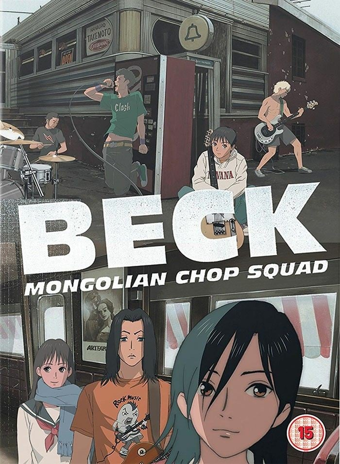
7.7「摇滚新乐团」（2004）是一部TV，由小林治执导，类型包括音乐、恋爱、剧情，评分7.7，在本站出现在2份片单中，例如高分恋爱动漫推荐、漫画改编动漫推荐。页面只做片单对照，不提供播放。故事开始于每天过着平凡的生活，并对未来感到不安的14岁少年田中幸雄，在某天遇到了一位谜样人物南龙介后就一脚踏入了音乐的世界。以田中幸雄、南龙介为中心并集结其他才华洋溢的成员所形成的乐团BECK，虽然历经许多失败与挫折，但成员们还是对自己的乐。
#277向阳素描×☆☆☆
 7.7
7.7「向阳素描×☆☆☆」（2010）是一部TV，由新房昭之执导，制作SHAFT，类型包括治愈、百合、日常，评分7.7，在本站出现在4份片单中，例如高分治愈系动漫推荐、高分校园动漫推荐、高分女性向动漫。页面只做片单对照，不提供播放。蒼樹うめ原作、「ひだまりスケッチ」TVシリーズ第3作。 憧れの私立やまぶき高校美術科に入学したゆの。 親元を離れ、学校のまん前にある小さなアパート『ひだまり荘』で 一人暮らしをはじめたゆのは、そこで同級生の宮子、 先輩の沙英とヒロの三人に出。
#278圣斗士星矢 冥王十二宫编
 7.7
7.7「圣斗士星矢 冥王十二宫编」（2003）是一部OVA/WEB，制作東映アニメーション，类型包括热血、战斗、奇幻，评分7.7，在本站出现在4份片单中，例如高分OVA与WEB动画、高分热血动漫推荐、高分奇幻冒险动漫。页面只做片单对照，不提供播放。日本出生的少年人星矢，为寻找失散多年相依为命的姐姐星华，毅然前往希腊圣域接受成为圣斗士的艰苦训练，为要在银河擂台赛中夺冠并获得黄金圣衣。在比赛中，星矢与紫龙、冰河、瞬及一辉发展出一段至死不渝的友谊，并发现了一段13年前教皇的秘密…… 13年。
#279忏・再见绝望先生 番外地
 7.7
7.7「忏・再见绝望先生 番外地」（2009）是一部OVA/WEB，由新房昭之执导，制作SHAFT，类型包括搞笑、校园、日常，评分7.7，在本站出现在5份片单中，例如高分OVA与WEB动画、高分治愈系动漫推荐、高分校园动漫推荐。页面只做片单对照，不提供播放。制作组决定再推出新的OAD懺・さよなら絶望先生 番外地。其上卷与2009年11月17日发售的单行本第十九卷初回限定版一起发售，下卷则与2010年2月17日发售的单行本第二十卷初回限定版一起发售。 作者在每一集中、大量渗入对日本的社会现象及自。
#280猎人 OVA2 贪婪之岛
 7.7
7.7「猎人 OVA2 贪婪之岛」（2003）是一部OVA/WEB，由ユキヒロマツシタ（福島宏之）执导，类型包括热血、战斗、奇幻，评分7.7，在本站出现在4份片单中，例如高分OVA与WEB动画、高分热血动漫推荐、高分奇幻冒险动漫。页面只做片单对照，不提供播放。富樫義博原作の人気アニメの続編オリジナルビデオアニメの第二弾。幻のゲーム・グリードアイランドの中でのストーリーが展開される。 主人公の少年・ゴンは仲間のキルアとともに、念能力者にしかプレイすることができないゲーム・グリードアイランドの中へと。
#281蜡笔小新：风起云涌！夕阳下的春日部男孩
 7.7
7.7「蜡笔小新：风起云涌！夕阳下的春日部男孩」（2004）是一部剧场版，由水島努执导，类型包括搞笑、奇幻，评分7.7，在本站出现在5份片单中，例如高分动画剧场版推荐、高分奇幻冒险动漫、必看搞笑动漫。页面只做片单对照，不提供播放。西部劇映画の世界に迷い込んでしまった、お馴染みしんちゃんたちが繰り広げる冒険を描いた長篇アニメーション・シリーズの第12作。監督は「クレヨンしんちゃん 嵐を呼ぶ 栄光のヤキニクロード」の水島努。臼井儀人による原作コミックを基に、水島監督が脚。
#282金田一少年事件簿
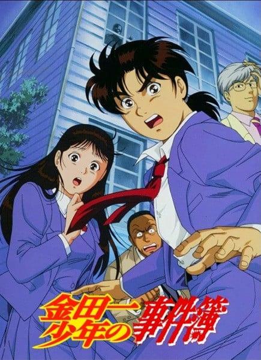
7.7「金田一少年事件簿」（1997）是一部TV，类型包括推理、悬疑，评分7.7，在本站出现在2份片单中，例如高分悬疑推理动漫、漫画改编动漫推荐。页面只做片单对照，不提供播放。主人公金田一一是名侦探“金田一耕助”的孙子，功课不好，体育不行，有点好色，走到哪，哪就会发生命案，在推理时却像变了一个人似的，解开了一个又一个谜题，经典台词是：“我以我爷爷--金田一耕助的名义发誓……谜底已经解开了，凶手就在我们中间。” 。
#283铁臂阿童木
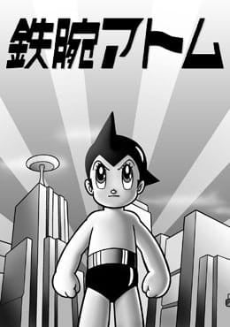
7.7「铁臂阿童木」（1963）是一部TV，由チーフディレクター(後期)：石津嵐执导，制作虫プロダクション，类型包括科幻、战斗，评分7.7，在本站出现在3份片单中，例如高分热血动漫推荐、高分科幻动漫推荐、漫画改编动漫推荐。页面只做片单对照，不提供播放。《铁臂阿童木》（日语：鉄腕アトム，台湾译作《原子小金刚》，港澳译作《小飞侠阿童木》；港旧译《无敌小飞侠》，台湾华视别译《小战士》）是一套科幻漫画作品，也是日本漫画界一代宗师手冢治虫的首部长篇连载作品，于1952年至1968年首次于光文社的《。
#284我的邻居山田君
 7.7
7.7「我的邻居山田君」（1999）是一部剧场版，由高畑勲执导，类型包括日常、家庭、喜剧，评分7.7，在本站出现在5份片单中，例如高分动画剧场版推荐、高分治愈系动漫推荐、必看搞笑动漫。页面只做片单对照，不提供播放。山田先生是一个在表面上具有家长威严却又因小事而感到哀愁的普通公司职员，山田太太是有着浓重关西口音的家庭主妇，儿子阿德是个刚刚进入青春期学习一般的中学生，女儿野野子则是个天真的幼稚园小朋友，还有孩子们的老外婆 ——老却经常很酷的样子，说话总是。
#285热带雨林的爆笑生活DELUXE
 7.7
7.7「热带雨林的爆笑生活DELUXE」（2002）是一部OVA/WEB，由水島努执导，类型包括搞笑、日常，评分7.7，在本站出现在4份片单中，例如高分OVA与WEB动画、高分治愈系动漫推荐、必看搞笑动漫。页面只做片单对照，不提供播放。第一部OVA《热带雨林的爆笑生活DELUXE》（以下简称DELUXE）于2002年末至2003年初制作，共12集（分为6卷）。
#286热带雨林的爆笑生活FINAL
 7.7
7.7「热带雨林的爆笑生活FINAL」（2003）是一部OVA/WEB，由水島努执导，类型包括搞笑、日常、奇幻，评分7.7，在本站出现在5份片单中，例如高分OVA与WEB动画、高分治愈系动漫推荐、高分奇幻冒险动漫。页面只做片单对照，不提供播放。第二部OVA《热带雨林的爆笑生活FINAL》（以下简称FINAL）于2003年末至2004年初制作，共14集（分为7卷）。OVA在日本KIDS STATION电视台播出。
#287在这世界(更多一些)的角落
 7.7
7.7「在这世界(更多一些)的角落」（2019）是一部剧场版，类型包括战争、历史、治愈，评分7.7，在本站出现在4份片单中，例如高分动画剧场版推荐、高分治愈系动漫推荐、漫画改编动漫推荐。页面只做片单对照，不提供播放。戦時下の日常を生きるすずの想いがより深く描かれるーー。 2016年11月12日に公開され、深い感動の輪を拡げていき、大きな反響を呼んだ映画『この世界の片隅に』。多くのファンと上映劇場の熱意に支えられ、公開から1日も途絶えることなく600日以。
#288水星领航员 The CREPUSCOLO
 7.7
7.7「水星领航员 The CREPUSCOLO」（2021）是一部剧场版，由名取孝浩执导，制作J.C.STAFF，类型包括治愈、日常、百合，评分7.7，在本站出现在6份片单中，例如高分动画剧场版推荐、高分治愈系动漫推荐、高分科幻动漫推荐。页面只做片单对照，不提供播放。TVアニメ放送開始15周年記念プロジェクト『蒼のカーテンコール』第2章 開幕 新威尼斯的街道已被落叶染成秋天的颜色。有件事让现在正在橘色行星实习的阿妮亚感到非常在意。那就是因为彼此都很忙碌、已经有段时间没有见面的爱丽丝以及雅典娜。因此失去精。
#289城市猎人
 7.7
7.7「城市猎人」（1987）是一部TV，由こだま兼嗣执导，类型包括热血、搞笑、战斗，评分7.7，在本站出现在3份片单中，例如高分热血动漫推荐、必看搞笑动漫、漫画改编动漫推荐。页面只做片单对照，不提供播放。《城市猎人》（シティーハンター，City Hunter）是日本漫画家北条司的漫画代表作之一，中国大陆曾以《侠探寒羽良》为名出版未授权删节本。 因为该作品的火爆，除了漫画外被改变成动画、动画电影、小说以及真人电影。 漫画《天使心》则是《城市猎。
#290拥抱！光之美少女
 7.7
7.7「拥抱！光之美少女」（2018）是一部TV，制作東映アニメーション，类型包括百合、战斗、奇幻，评分7.7，在本站出现在4份片单中，例如高分热血动漫推荐、高分奇幻冒险动漫、高分女性向动漫。页面只做片单对照，不提供播放。主人公野乃花是个想成为大姐姐的冒失女孩，有一天碰到了不可思议的婴儿及照顾婴儿的仓鼠妖精－哈利哈姆·哈利，这时“黑暗明日社”的敌人召唤了怪物袭来，小花因保护婴儿的意念，变身成喝采天使参战。为了保卫大家的未来，守护重要的事物以及小女婴小抱，喝采。
#291花田少年史
 7.7
7.7「花田少年史」（2002）是一部TV，由小島正幸执导，类型包括治愈、奇幻、日常，评分7.7，在本站出现在4份片单中，例如高分治愈系动漫推荐、高分奇幻冒险动漫、必看搞笑动漫。页面只做片单对照，不提供播放。花田一路，虽然只是一个小学三年级学生，却是村里远近闻名的小捣蛋鬼，性格属于天不怕地不怕，唯一弱点却是害怕幽灵，甚至不敢自己上厕所。一天，花田一路闯下大祸，把家里唯一的黑白电视机打坏了。为了躲避妈妈的追打，他骑着邻居的自行车逃跑，却在半路发生。
#292王者天下 第三季
「王者天下 第三季」（2020）是一部TV，由今泉賢一执导，制作ぴえろ，类型包括历史、战争、热血，评分7.7，在本站出现在2份片单中，例如高分热血动漫推荐、漫画改编动漫推荐。页面只做片单对照，不提供播放。纪元前，在中国西方的秦国，年轻的千人将·信曾与已故的好友有着「天下的大将军」这一共同的梦想，而至今仍以此为目标。 此时，秦国成功攻陷了军事上最重要的据点山阳，并由此向中华统一又迈进了一步。但，对于可能改写七国势力图的这一手感到危机感的赵国天。
#293危险调查员
 7.7
7.7「危险调查员」（1998）是一部TV，由小島正幸执导，类型包括冒险、悬疑、剧情，评分7.7，在本站出现在3份片单中，例如高分悬疑推理动漫、高分奇幻冒险动漫、漫画改编动漫推荐。页面只做片单对照，不提供播放。身为劳合社保险公司旗下之保险调查员的平贺·奇顿·太一，自牛津大学毕业成为考古学者的同时，也成为Special Air Service（SAS）英国空降部队之野外求生术的教官。在福克兰群岛战争中和伊拉克国境内美国大使成为人质的世界中以SAS队。
#294哆啦A梦回来了
 7.7
7.7「哆啦A梦回来了」（1998）是一部剧场版，类型包括治愈、科幻、搞笑，评分7.7，在本站出现在6份片单中，例如高分动画剧场版推荐、高分治愈系动漫推荐、高分科幻动漫推荐。页面只做片单对照，不提供播放。ドラえもん のび太の南海大冒険併映作品。
#295第一神拳 Rising
 7.7
7.7「第一神拳 Rising」（2013）是一部TV，由宍戸淳执导，类型包括热血、搞笑、运动，评分7.7，在本站出现在3份片单中，例如高分热血动漫推荐、必看搞笑动漫、漫画改编动漫推荐。页面只做片单对照，不提供播放。第一神拳 Rising。2013。热血、搞笑、运动。
#296鲁邦三世 第二期
 7.7
7.7「鲁邦三世 第二期」（1977）是一部TV，制作東京ムービー，类型包括搞笑、冒险、战斗，评分7.7，在本站出现在4份片单中，例如高分热血动漫推荐、高分奇幻冒险动漫、必看搞笑动漫。页面只做片单对照，不提供播放。ルパン一味の日本脱出から5年。世界各地で悠々自適の生活を送っていた次元、五ェ門、不二子のもとに同窓会の招待状が届く。果たして豪華客船サーロイン号に集結したルパンたち、だがそれはルパンに復讐を願うミスターXの罠だった……！ ICPOへと出向し。
#297来来猫 第二季
 7.7
7.7「来来猫 第二季」（2010）是一部TV，由大地丙太郎执导，制作ダックスプロダクション，类型包括治愈、日常，评分7.7，在本站出现在2份片单中，例如高分治愈系动漫推荐、漫画改编动漫推荐。页面只做片单对照，不提供播放。讲述饲主与猫咪悠闲的日常生活的《くるねこ》将于2010年7月开始新一季动画，声优为中谷美紀一人役（第一季为小林聡美）。 中谷美紀（NAKATANI MIKI），1976年東京都出身，1993年以女演员的身份出道，主要作品包括电视剧《白洲次郎。
#298少年正义联盟 第一季
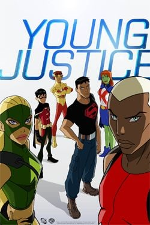
7.7「少年正义联盟 第一季」（2011）是一部TV，由Jay Oliva执导，类型包括科幻、战斗、热血，评分7.7，在本站出现在4份片单中，例如高分美漫与动画电影、高分热血动漫推荐、高分科幻动漫推荐。页面只做片单对照，不提供播放。Young Justice focuses on the lives of a group of teenaged superhero sidekicks and protégés attempting to establish thems。
#299希尔达 第一季
 7.7
7.7「希尔达 第一季」（2018）是一部OVA/WEB，由Andy Coyle执导，类型包括治愈、喜剧、奇幻，评分7.7，在本站出现在6份片单中，例如高分美漫与动画电影、高分OVA与WEB动画、高分治愈系动漫推荐。页面只做片单对照，不提供播放。Hilda is an animated television series based on the graphic novel series of the same name by Luke Pearson. Produced by S。
#300城市猎人 第二季
 7.7
7.7「城市猎人 第二季」（1988）是一部TV，类型包括搞笑、热血、战斗，评分7.7，在本站出现在3份片单中，例如高分热血动漫推荐、必看搞笑动漫、漫画改编动漫推荐。页面只做片单对照，不提供播放。大都会、多くの人々がすれ違う新宿には、様々なトラブル、犯罪、陰謀が人々を呑みこもうと身構えている。しかし、苦境に立ったら、東口の伝言板に「XYZ」と書けばいい。それは「もう後がない」という合図。トラブルスイーパー、シティーハンター冴羽 獠へ。
#301两个火枪鼠
 7.7
7.7「两个火枪鼠」（1952）是一部剧场版，由约瑟夫·巴伯拉执导，类型包括搞笑，评分7.7，在本站出现在5份片单中，例如高分美漫与动画电影、高分动画剧场版推荐、必看搞笑动漫。页面只做片单对照，不提供播放。中世纪的欧洲，某座庄严巍峨的城镇内，夜幕降临，英勇剑客杰瑞带着他那笨手笨脚的小徒弟尼波斯走在空无一人的街道上。突然，杰瑞停下脚步，仔细监听城堡上方某个房间内的谈话。原来城内当晚即将举行盛大的宴会，严厉的长官命令侍卫官汤姆用生命保护桌上的美食。
#302猫怪麦克
 7.7
7.7「猫怪麦克」（1988）是一部TV，制作スタジオ古留美，类型包括搞笑、喜剧，评分7.7，在本站出现在3份片单中，例如高分治愈系动漫推荐、必看搞笑动漫、漫画改编动漫推荐。页面只做片单对照，不提供播放。这是一部描写在日常生活中猫与人类之间相互关系的幽默故事，我们的主人公麦克，毫无疑问是只猫，但故事同样也反映了人类的态度。一天，麦克出现在漫画家小林的家中。即使从那一天起，小林和他的妻子便开始尽力与麦克相处，猫想上他自己的事情，而人类则时时要。
#303希尔达 第二季
 7.7
7.7「希尔达 第二季」（2020）是一部OVA/WEB，类型包括冒险、治愈、奇幻，评分7.7，在本站出现在5份片单中，例如高分美漫与动画电影、高分OVA与WEB动画、高分治愈系动漫推荐。页面只做片单对照，不提供播放。希尔达 第二季。2020。冒险、治愈、奇幻。
#304水色时代
 7.7
7.7「水色时代」（1996）是一部TV，由ときたひろこ执导，类型包括恋爱、日常、校园，评分7.7，在本站出现在4份片单中，例如高分恋爱动漫推荐、高分治愈系动漫推荐、高分校园动漫推荐。页面只做片单对照，不提供播放。12岁，既不是大人也不是小孩，但说青春还太早，正确而言应该是从纯白的孩童时代，稍微的，染上了一点青春的蓝，而这个过渡期的颜色，正是水色，就让我们一起来看看这个属于我们的水色时代的故事吧。
#305乡下人 第一季
 7.7
7.7「乡下人 第一季」（2005）是一部TV，类型包括搞笑、喜剧，评分7.7，在本站出现在3份片单中，例如高分美漫与动画电影、必看搞笑动漫、漫画改编动漫推荐。页面只做片单对照，不提供播放。《乡下人》（The Boondocks）是由亚伦·麦克格鲁德创作的一部美国动画片。该动画与同名漫画的时空设置相同，黑人家庭弗里曼祖孙三人从伊利诺伊州芝加哥城南，搬到伍德克莱斯特（Woodcrest）一个以白人居民为主的社区中。该剧的很多喜剧。
#306异世界舅舅
 7.6
7.6「异世界舅舅」（2022）是一部TV，由河合滋樹执导，类型包括搞笑、异世界、奇幻，评分7.6，在本站出现在5份片单中，例如高分治愈系动漫推荐、高分异世界动漫推荐、高分奇幻冒险动漫。页面只做片单对照，不提供播放。2017年秋，敬文的舅舅17岁时被卡车撞上，从此陷入昏迷，直到17年后他奇迹般苏醒。 敬文去医院探望舅舅，却只见他独自胡言乱语，宣称自己是从大巴哈马鲁异世界归来。 ......舅舅的脑袋显然是坏掉了。 敬文不知所措，但舅舅却施展魔法，证明自。
#307别当欧尼酱了！
 7.6
7.6「别当欧尼酱了！」（2023）是一部TV，由藤井慎吾执导，类型包括日常、搞笑、百合，评分7.6，在本站出现在4份片单中，例如高分治愈系动漫推荐、必看搞笑动漫、高分女性向动漫。页面只做片单对照，不提供播放。某天，家里蹲的啃老族绪山真寻一觉醒来发现自己变成了“女孩子”！？正当真寻不知道镜子里的美少女是自己而陷入混乱的时候，跳级进入大学的科学家妹妹绪山美波里出现了。她透露在饮料里加了一种奇怪的药物！ 真寻最近2年一直疯狂宅家玩小黄游，偶尔不得已才。
#308只有我不存在的城市
 7.6
7.6「只有我不存在的城市」（2016）是一部TV，由伊藤智彦执导，类型包括悬疑、推理、治愈，评分7.6，在本站出现在4份片单中，例如高分治愈系动漫推荐、高分悬疑推理动漫、高分奇幻冒险动漫。页面只做片单对照，不提供播放。藤沼悟是一个三流漫画家，但是他却拥有着名为“再上映”（可以穿越到事件发生之前的时间点，阻止事件发生，但失败了会一直重复）的能力。某天，当回到家里的时候他发现了自己母亲遇害的一幕，并且自己被嫁祸为杀人凶手。就在这时候，由于再上映的关系，他突然。
#309宝石之国
 7.6
7.6「宝石之国」（2017）是一部TV，由京極尚彦执导，类型包括奇幻、战斗、百合，评分7.6，在本站出现在4份片单中，例如高分热血动漫推荐、高分奇幻冒险动漫、高分女性向动漫。页面只做片单对照，不提供播放。这是成长的故事—— 宝石中最年少的磷叶石，仅有3.5的脆弱硬度，韧性也很弱，因而不适于战斗。此外，也没有对其他工作的适应性。被看做是只会出一张嘴，完完全全的吊车尾。这样的磷叶石，在即将满三百岁时终于被交付了第一件工作。那是，名为编纂博物志的。
#310女高中生的无所事事
 7.6
7.6「女高中生的无所事事」（2019）是一部TV，由さんぺい聖执导，制作パッショーネ，类型包括搞笑、日常、校园，评分7.6，在本站出现在5份片单中，例如高分治愈系动漫推荐、高分校园动漫推荐、必看搞笑动漫。页面只做片单对照，不提供播放。被浪费的青春—— 偏差值差不多的田中（通称“笨蛋”）、沉迷于BL的菊池（通称：“御宅”）、面无表情的才女・鹭宫（通称“机”）。个性十足的女高中生们无所事事的日常校园生活—— [简介原文] 浪費する、青春――。 WEBコミック誌「コミックNe。
#311约定的梦幻岛
 7.6
7.6「约定的梦幻岛」（2019）是一部TV，由神戸守执导，类型包括悬疑、冒险、奇幻，评分7.6，在本站出现在4份片单中，例如高分治愈系动漫推荐、高分悬疑推理动漫、高分奇幻冒险动漫。页面只做片单对照，不提供播放。仰慕的母亲并非亲生母亲。一起生活的他们并非兄弟。 Grace=Field House是没有父母的孩子们居住的地方。虽然没有血缘关系，但妈妈和38个兄弟都度过了幸福的每一天，这是不可替代的家。 但是，他们的日常在某一天突然宣告结束……。
#312进击的巨人 最终季 完结篇 后篇
 7.6
7.6「进击的巨人 最终季 完结篇 后篇」（2023）是一部TV，由林祐一郎执导，制作MAPPA，类型包括战斗、热血、战争，评分7.6，在本站出现在5份片单中，例如高分热血动漫推荐、高分奇幻冒险动漫、漫画改编动漫推荐。页面只做片单对照，不提供播放。「その巨人はいついかなる時代においても、自由を求めて進み続けた。自由のために戦った。名は──進撃の巨人」。ついに明かされた壁の外の真実と、巨人の正体。ここに至るまで、人類はあまりにも大きすぎる犠牲を払っていた。それでもなお、彼らは進み続けな。
#313妄想学生会
 7.6
7.6「妄想学生会」（2010）是一部TV，由金澤洪充执导，制作GoHands，类型包括搞笑、校园、日常，评分7.6，在本站出现在4份片单中，例如高分治愈系动漫推荐、高分校园动漫推荐、必看搞笑动漫。页面只做片单对照，不提供播放。故事的舞台——私立樱才学园，原本是传统的女子高中，但因少子化问题影响，不得不改制为男女合校。作为改制后第一年入学的28名男性新生之一的津田隆利，偶然之下被拉入了学校的学生会。在外人看来，学生会是美女如云的天堂，但是津田身边的三位学生会女干部。
#314MEGALO BOX
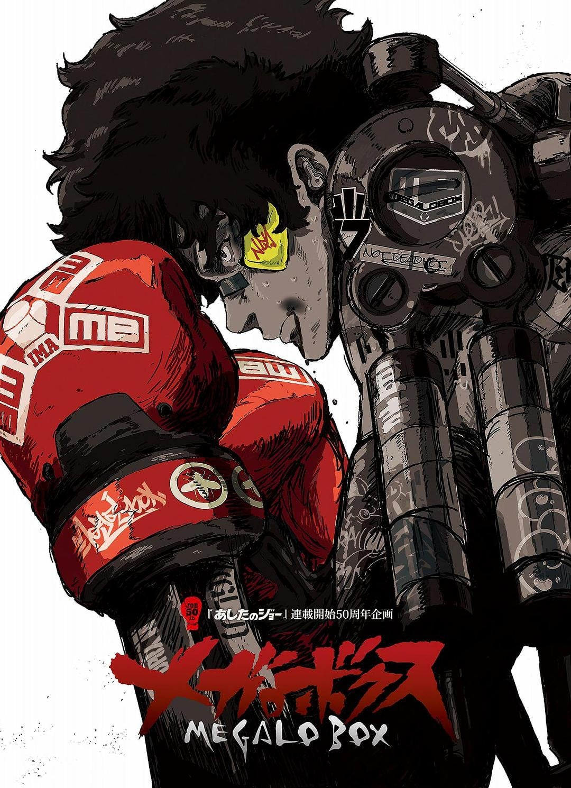
7.6「MEGALO BOX」（2018）是一部TV，由森山洋执导，制作トムス・エンタテインメント，类型包括热血、运动、战斗，评分7.6，在本站出现在3份片单中，例如高分热血动漫推荐、高分科幻动漫推荐、漫画改编动漫推荐。页面只做片单对照，不提供播放。将肉体与“外骨骼技术”融合的究极格斗技——“MEGALO BOX”，将自己的全部赌在上面的男人们的热血战斗开始！ 今天也立于未认可地区的赌博比赛赛场上的MEGALO拳击手“Junk Dog”。虽然具备实力，却只有靠比赛造假赚钱这一条生存之道。
#315火影忍者
 7.6
7.6「火影忍者」（2002）是一部TV，由伊達勇登执导，制作ぴえろ，类型包括热血、战斗、奇幻，评分7.6，在本站出现在3份片单中，例如高分热血动漫推荐、高分奇幻冒险动漫、漫画改编动漫推荐。页面只做片单对照，不提供播放。在火影忍者正式故事展开的12年前，一只被称为九尾 妖狐的妖怪袭击木叶忍者村，传说它一挥动尾巴就会山崩海啸。当时的第四代火影“木叶黄色闪光”波风皆人牺牲自己的性命，把九尾封印在刚出生的孩子 漩涡鸣人身上。 “第四代火影”被村里的人认为是英雄，。
#316妄想学生会＊
 7.6
7.6「妄想学生会＊」（2014）是一部TV，由金澤洪充执导，类型包括搞笑、校园、日常，评分7.6，在本站出现在5份片单中，例如高分恋爱动漫推荐、高分治愈系动漫推荐、高分校园动漫推荐。页面只做片单对照，不提供播放。妄想学生会＊。2014。搞笑、校园、日常。
#317火影忍者疾风传
 7.6
7.6「火影忍者疾风传」（2007）是一部TV，由伊達勇登(221-699)执导，类型包括热血、战斗、奇幻，评分7.6，在本站出现在3份片单中，例如高分热血动漫推荐、高分奇幻冒险动漫、漫画改编动漫推荐。页面只做片单对照，不提供播放。《火影忍者-疾风传》主要是描述漩涡鸣人与自来也出外修行两年半之后的故事。 现在晓所说的三年期限已经到了，各成员们已开始行动，并陆续亮相，与主角们展开最激烈的战斗…… 不知不觉《火影忍者》已经一路走了七年，鸣人从万年吊车尾的倒霉蛋慢慢地成长为。
#318明日同学的水手服
 7.6
7.6「明日同学的水手服」（2022）是一部TV，由黒木美幸执导，制作CloverWorks，类型包括日常、百合、校园，评分7.6，在本站出现在4份片单中，例如高分治愈系动漫推荐、高分校园动漫推荐、高分女性向动漫。页面只做片单对照，不提供播放。舞台位于乡下的名门女子初级中学——私立蜡梅学园。 有一位名叫明日小路的少女，梦想着能够穿上这所学园的水手服。 因为某个契机，她实现了这一梦想，于是在紧张中迎来了开学典礼的日子—— 「我要穿水手服」 怀抱着决心，少女梦想的初中生活就此展开♪ 。
#319隐瞒之事
 7.6
7.6「隐瞒之事」（2020）是一部TV，由村野佑太执导，制作亜細亜堂，类型包括日常、治愈、搞笑，评分7.6，在本站出现在3份片单中，例如高分治愈系动漫推荐、必看搞笑动漫、漫画改编动漫推荐。页面只做片单对照，不提供播放。ちょっと下品な漫画を描いてる漫画家の後藤可久士。 一人娘の小学4年生の姫。 可久士は、何においても、愛娘・姫が最優先。 親バカ・可久士が娘・姫に知られたくないこと。 それは…… 自分の仕事が『漫画家』であること。 自分の“かくしごと”が知ら。
#320南家三姐妹
 7.6
7.6「南家三姐妹」（2007）是一部TV，由太田雅彦执导，制作童夢，类型包括搞笑、日常、喜剧，评分7.6，在本站出现在4份片单中，例如高分治愈系动漫推荐、高分校园动漫推荐、必看搞笑动漫。页面只做片单对照，不提供播放。南春香是一个外表出色个性优秀的完美学生。在学校里，性格开朗温和的她是许多人爱慕的对象，保坂就是其中的一员。学校里流传着许多和春香有关的传说，她更是以“第一代首领”的名号著称。在妹妹南夏奈和南千秋的眼中，春香是一个母亲般的存在。夏奈是个四肢发。
#321好想告诉你
 7.6
7.6「好想告诉你」（2009）是一部TV，由鏑木ひろ执导，类型包括校园、治愈、恋爱，评分7.6，在本站出现在5份片单中，例如高分恋爱动漫推荐、高分治愈系动漫推荐、高分校园动漫推荐。页面只做片单对照，不提供播放。故事围绕着一个外表看起来阴暗到会被周围人称为“贞子”的女高中生黑沼爽子展开，描述她通过努力逐渐消除周围人的误解，并得到友情与爱情的故事。有着浓黑长发，惨白皮肤的黑沼爽子的座右铭是“日行一善”，喜欢帮助他人，所以一直担任班级委员，由于小学时不。
#322迷糊餐厅 第二季
 7.6
7.6「迷糊餐厅 第二季」（2011）是一部TV，由大槻敦史执导，类型包括搞笑、日常、恋爱，评分7.6，在本站出现在4份片单中，例如高分恋爱动漫推荐、高分治愈系动漫推荐、必看搞笑动漫。页面只做片单对照，不提供播放。wagnaria，2011年10月，再开业！ 官网地址：http://www.wagnaria.com/。
#323荒川爆笑团2
 7.6
7.6「荒川爆笑团2」（2010）是一部TV，由新房昭之执导，制作SHAFT，类型包括搞笑、日常、恋爱，评分7.6，在本站出现在5份片单中，例如高分恋爱动漫推荐、高分治愈系动漫推荐、必看搞笑动漫。页面只做片单对照，不提供播放。“能和我谈一场恋爱么？” 舞台是荒川河畔。在那里相遇的精英青年・市之宫行（通称リク）与自称是金星人的无家美少女・ニノ，笨拙的两人的恋爱有时古怪、有时又令人心痛……。以这样的两人为中心，描绘荒川居民不断卷起骚动的日常。 元祖电波系新感觉温馨恋。
#324进击的巨人 无悔的选择 OAD
 7.6
7.6「进击的巨人 无悔的选择 OAD」（2014）是一部OVA/WEB，类型包括战斗、热血、奇幻，评分7.6，在本站出现在4份片单中，例如高分OVA与WEB动画、高分热血动漫推荐、高分奇幻冒险动漫。页面只做片单对照，不提供播放。外传「进击的巨人 无悔的选择」OAD化决定！ 「进击的巨人」单行本第15、16卷同捆OAD。 讲述了利威尔与调查兵团的团长艾尔文两人相遇的故事。
#325请问您今天要来点兔子吗？BLOOM
 7.6
7.6「请问您今天要来点兔子吗？BLOOM」（2020）是一部TV，由橋本裕之执导，制作エンカレッジフィルムズ（鵲），类型包括百合、日常、治愈，评分7.6，在本站出现在4份片单中，例如高分治愈系动漫推荐、必看搞笑动漫、高分女性向动漫。页面只做片单对照，不提供播放。心爱来到这木造街道，也已度过第二次夏天，季节即将来到，充满各式祭典的秋天。学校也好、Rabbit House也好，今天也有许多有趣的事。心爱、智乃、还有大家，未来仍有更多令人兴奋的事件。
#326食灵-零-
 7.6
7.6「食灵-零-」（2008）是一部TV，由あおきえい执导，制作アスリード＆AICスピリッツ，类型包括百合、奇幻、战斗，评分7.6，在本站出现在4份片单中，例如高分热血动漫推荐、高分奇幻冒险动漫、高分女性向动漫。页面只做片单对照，不提供播放。漫画版前传，讲述女主角土宫神乐与谏山黄泉相识之初的一段往事。 土宫家是世世代代保护京都的家族，在一次与强大恶灵的战斗中，土宫家现任家主土宫雅乐的夫人因重伤不治去世。一心要继承夫人体内最强灵兽“白叡”的土宫雅乐，专心于法术的修炼与恶灵的退治，。
#327异兽魔都
 7.6
7.6「异兽魔都」（2020）是一部TV，由林祐一郎执导，类型包括奇幻、战斗、搞笑，评分7.6，在本站出现在5份片单中，例如高分热血动漫推荐、高分悬疑推理动漫、高分奇幻冒险动漫。页面只做片单对照，不提供播放。欢迎光临，混沌。 被魔法作用下头部变成了蜥蜴同时也完全丧失了记忆的男子·开曼。 开曼为了变回人脸和找回记忆，和搭档的二阶堂一起在寻找着给自己下了这个魔法的魔法师。 自己到底是谁……。
#328好想告诉你 第二季
 7.6
7.6「好想告诉你 第二季」（2011）是一部TV，由鏑木ひろ执导，类型包括恋爱、治愈、校园，评分7.6，在本站出现在4份片单中，例如高分恋爱动漫推荐、高分治愈系动漫推荐、高分校园动漫推荐。页面只做片单对照，不提供播放。因为外表阴暗而被人疏远，有着外号“贞子”的黑沼爽子。习惯了周围回避自己的爽子对接受自己的风早翔太满怀憧憬。在鼓励着自己的风早、失野朱音、吉田千鹤、真田龙这些同班同学的关怀下，爽子渐渐地改变着自己。 这是一部细腻地描写爽子认识友情和爱情、对手。
#329南家三姐妹 我回来了
 7.6
7.6「南家三姐妹 我回来了」（2013）是一部TV，由川口敬一郎执导，类型包括日常、搞笑、治愈，评分7.6，在本站出现在4份片单中，例如高分治愈系动漫推荐、高分校园动漫推荐、必看搞笑动漫。页面只做片单对照，不提供播放。讲述了南家三姐妹，春香、夏奈和千秋三人在家和校园里的日常生活以及周围人们故事。
#330妄想学生会 OAD
 7.6
7.6「妄想学生会 OAD」（2011）是一部OVA/WEB，由金澤洪充执导，类型包括搞笑、校园、日常，评分7.6，在本站出现在5份片单中，例如高分OVA与WEB动画、高分治愈系动漫推荐、高分校园动漫推荐。页面只做片单对照，不提供播放。这部「妄想学生会」将依然以男生28人、女生524人的樱才学园学生会作为故事主要的舞台，依然将以糟糕NETA乱飞的风格呈献给各位观众。 出演这次OAD的STAFF、CAST依然和TV保持一致。
#331向山进发 第二季
 7.6
7.6「向山进发 第二季」（2014）是一部TV，由山本裕介执导，制作エイトビット，类型包括百合、治愈、日常，评分7.6，在本站出现在3份片单中，例如高分治愈系动漫推荐、高分女性向动漫、漫画改编动漫推荐。页面只做片单对照，不提供播放。故事承接第一季剧情，葵在重遇喜欢户外活动的青梅竹马朋友日向后，再次进行登山活动，实现了再一次看到小时候看过的山顶日出这样想法，并且与枫和心夏成为了好朋友。 而接下来，葵她们将不断的挑战着自己，决定登上富士山。
#332家庭教师HITMAN REBORN!
 7.6
7.6「家庭教师HITMAN REBORN!」（2006）是一部TV，由今泉賢一执导，制作ARTLAND，类型包括热血、战斗、搞笑，评分7.6，在本站出现在4份片单中，例如高分热血动漫推荐、高分奇幻冒险动漫、必看搞笑动漫。页面只做片单对照，不提供播放。《家庭教師HITMAN REBORN!》是一部熱血動漫，故事圍繞彭格列（意大利黑手黨）第十代首領沢田綱吉與其家族成員的成長而展開的一系列故事。彭格列初代後裔沢田綱吉是一個做什麼都不行的“廢柴綱”，但是為了培養成為彭格列家族首領，從意大利來了。
#333DDDD 恶魔的破坏
 7.6
7.6「DDDD 恶魔的破坏」（2024）是一部OVA/WEB，由黒川智之执导，类型包括科幻、日常、剧情，评分7.6，在本站出现在5份片单中，例如高分OVA与WEB动画、高分治愈系动漫推荐、高分科幻动漫推荐。页面只做片单对照，不提供播放。3年前の8月31日、巨大な宇宙船「母艦」が突如として東京に襲来し、世界は終わりを迎えるかに見えた。その後、絶望的な状況は次第に日常に溶け込み、上空に母艦が浮遊する異様な光景が当たり前となっていた。そんな中、女子高生の小山門出と「おんたん」こ。
#334JOJO的奇妙冒险 幻影血脉
 7.6
7.6「JOJO的奇妙冒险 幻影血脉」（2007）是一部剧场版，由羽山淳一执导，制作A.P.P.P.，类型包括热血、战斗、奇幻，评分7.6，在本站出现在6份片单中，例如高分动画剧场版推荐、高分热血动漫推荐、高分奇幻冒险动漫。页面只做片单对照，不提供播放。注意：此条目为2007年的《JOJO的奇妙冒险 幻影之血》失传剧场版条目，并非TV版幻影之血单独条目，请勿混淆错标。 《JOJO的奇妙冒险：幻影之血》是一部2007年2月17日上映的91分钟的动画电影，基于荒木飞吕彦长期连载的《JOJO的奇。
#335你看起来很好吃
 7.6
7.6「你看起来很好吃」（2010）是一部剧场版，类型包括治愈，评分7.6，在本站出现在4份片单中，例如高分动画剧场版推荐、高分治愈系动漫推荐、漫画改编动漫推荐。页面只做片单对照，不提供播放。被草食系恐龙母亲抚养长大的霸王龙 Heart 一天天长高长大，也一天天发现身边出现了很多害怕它的声音。一天，Heart 敲碎了一个蛋壳，于是，它遇上了从蛋壳里蹦出来的草食系小甲龙。Heart 脱口而出，“你看起来好像很好吃。”令它意外的是，。
#336犬夜叉 完结篇
 7.6
7.6「犬夜叉 完结篇」（2009）是一部TV，由青木康直执导，类型包括恋爱、战斗、奇幻，评分7.6，在本站出现在4份片单中，例如高分热血动漫推荐、高分恋爱动漫推荐、高分奇幻冒险动漫。页面只做片单对照，不提供播放。——《犬夜叉》即将于今年秋季播放新的TV动画版，而且本次的作品是以原作漫画单行本的36卷至“最终卷”56卷进行动画化，也就是说，在fans们追逐了4年追逐了整整167集动画过后只等到了“喂这根本没有结局啊！”的“结局”之后，在高桥留美子都已。
#337石纪元 科学与未来 第2部分
 7.6
7.6「石纪元 科学与未来 第2部分」（2025）是一部TV，由松下周平执导，类型包括科幻、热血、冒险，评分7.6，在本站出现在5份片单中，例如2025年夏季新番推荐、高分热血动漫推荐、高分科幻动漫推荐。页面只做片单对照，不提供播放。宝島での激戦を終え、無事に科学王国へと帰還した千空たち。 手に入れた石化装置で、コールドスリープしていた司を復活させることに成功。司は科学王国の仲間となった！ そして、人類石化の黒幕・ホワイマンの本拠地が“月”であることを突き止めた千空たち。
#338妄想学生会＊ OAD
 7.6
7.6「妄想学生会＊ OAD」（2014）是一部OVA/WEB，由金澤洪充执导，类型包括搞笑、校园、日常，评分7.6，在本站出现在5份片单中，例如高分OVA与WEB动画、高分治愈系动漫推荐、高分校园动漫推荐。页面只做片单对照，不提供播放。2期OAD系列。 2#14は2014年5月16日発売 第10巻限定版同梱DVDに収録。 2#16は2015年2月17日発売 第11巻限定版同梱DVDに収録。 2#17は2015年9月17日発売 第12巻限定版同梱DVDに収録。 2#18は2。
#339浪客剑心
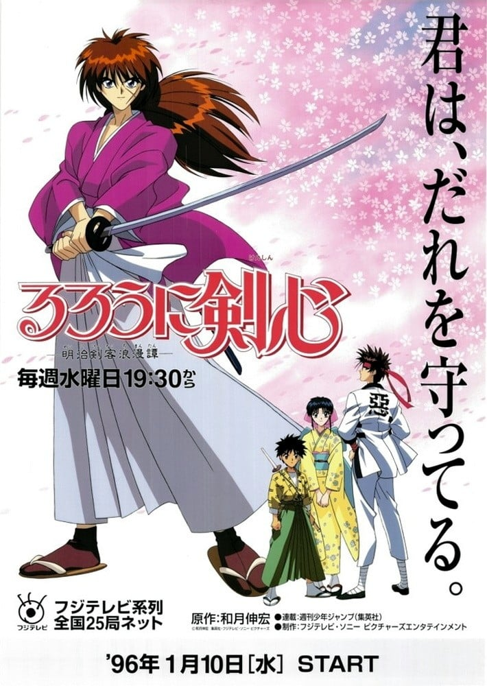
7.6「浪客剑心」（1996）是一部TV，由古橋一浩执导，制作ぎゃろっぷ〔1話-66話〕→スタジオディーン〔67話-95話〕，类型包括历史、战斗、热血，评分7.6，在本站出现在4份片单中，例如高分热血动漫推荐、高分恋爱动漫推荐、高分女性向动漫。页面只做片单对照，不提供播放。维新政府建立后的某一天，在一个小村庄里，剑心遇见了一位美丽的少女神谷熏。交谈中得知有个叫比留间五兵卫的人冒充拔刀斋在村里作恶，阿熏手拿竹刀与之拼命，但不是对手。五兵卫手起刀落，眼看阿熏性命难保，千钧一发之际，一个人影风驰电掣般闪过，五兵卫劈。
#340搞笑漫画日和＋
 7.6
7.6「搞笑漫画日和＋」（2010）是一部TV，由大地丙太郎执导，类型包括搞笑，评分7.6，在本站出现在2份片单中，例如必看搞笑动漫、漫画改编动漫推荐。页面只做片单对照，不提供播放。增田幸助所著的漫画「搞笑漫画日和」，自2000年1月开始在集英社发行的「月刊少年JUMP」上连载以来，因满载无厘头笑点的剧情和对名人名作的滑稽戏仿而大受欢迎。由动画界的名监督大地丙太郎执导的TV动画，在忠实原作的基础上，以更加独特的表现手法。
#341剑风传奇 黄金时代篇I 霸王之卵
 7.6
7.6「剑风传奇 黄金时代篇I 霸王之卵」（2012）是一部剧场版，类型包括战斗、奇幻、热血，评分7.6，在本站出现在5份片单中，例如高分动画剧场版推荐、高分热血动漫推荐、高分奇幻冒险动漫。页面只做片单对照，不提供播放。百年战争，世事颠倒，人心糜烂，贪欲横行。各国之间兼并攻伐，血流成河。只信任自己手中之剑，没有朋友、没有家人，也没有故乡——孤独的剑士格斯，作为佣兵在动荡的土地上四处奔走。他能自如地操纵超出身高的长剑，轻取强大的敌人。而注意到了这样的他，是率。
#342夏目友人帐 曾几何时下雪之日
 7.6
7.6「夏目友人帐 曾几何时下雪之日」（2014）是一部OVA/WEB，由出合小都美执导，类型包括治愈、奇幻、日常，评分7.6，在本站出现在5份片单中，例如高分OVA与WEB动画、高分治愈系动漫推荐、高分校园动漫推荐。页面只做片单对照，不提供播放。『夏目友人帐』第四季的新作OVA。描写了能够看见妖怪的少年夏目与猫咪老师一起，和其他妖怪们进行交流的小故事。
#343向山进发 回忆的礼物
 7.6
7.6「向山进发 回忆的礼物」（2018）是一部OVA/WEB，由山本裕介执导，类型包括百合、日常、治愈，评分7.6，在本站出现在4份片单中，例如高分OVA与WEB动画、高分治愈系动漫推荐、高分女性向动漫。页面只做片单对照，不提供播放。「Present1 夏 ここなの8/31」 8月31日。夏休みの最後に、大好きなお母さんとおでかけの約束をしていたここな。 ところが急な仕事が入ったお母さんはここなと一緒に出かけられなくなってしまい、ここなはひとりで飯能の街を散歩することに。
#344鲁邦三世 -名为峰不二子的女人-
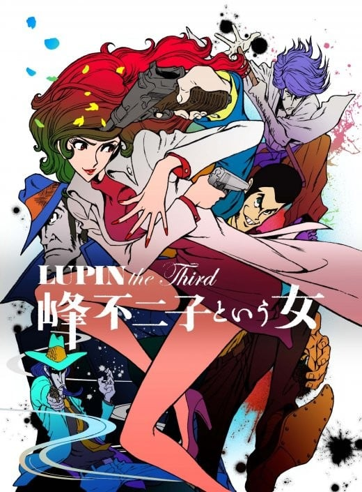
7.6「鲁邦三世 -名为峰不二子的女人-」（2012）是一部TV，由山本沙代执导，类型包括战斗，评分7.6，在本站出现在2份片单中，例如高分热血动漫推荐、漫画改编动漫推荐。页面只做片单对照，不提供播放。本作是电视动画《鲁邦三世 (TV第1期)》开始放映40周年的纪念作品。这是继1985年《鲁邦三世 PartIII》播映完毕后，27年以来“鲁邦三世”系列的新电视动画。 不同于历来的作品，以系列中居女主角地位的峰不二子的视点来展开故事，并将时。
#345×××HOLiC 仲夏夜之梦
 7.6
7.6「×××HOLiC 仲夏夜之梦」（2005）是一部剧场版，由水島努执导，类型包括奇幻、悬疑，评分7.6，在本站出现在5份片单中，例如高分动画剧场版推荐、高分悬疑推理动漫、高分奇幻冒险动漫。页面只做片单对照，不提供播放。本片是从侑子收到来路不明的信开始讲起，那是一封召开拍卖会的邀请函。 在古老的邸宅里被招待的是7个狂热的收藏家。 据说他们都是为了完善自己的收藏而应邸宅主人的邀请来到这里的。 可是，等了很久都不见主人现身。 不久，收藏家一个接一个的离奇消失了。
#346乱马1/2
 7.6
7.6「乱马1/2」（1989）是一部TV，由芝山努执导，类型包括搞笑、奇幻、日常，评分7.6，在本站出现在5份片单中，例如高分恋爱动漫推荐、高分治愈系动漫推荐、高分奇幻冒险动漫。页面只做片单对照，不提供播放。早乙女乱马是一名修习武学的日本少年，来到中国青海咒泉乡（虚构的地点）修行，不慎落入“女溺泉”（又称娘溺泉），因而遇到冷水就会变成女孩，遇到热水又会恢复成男孩。而他的父亲，朋友等也因为曾经掉到不同的泉水里会变身为熊猫、小黑猪、猫、鸭子等等。这。
#347岁月的童话
 7.6
7.6「岁月的童话」（1991）是一部剧场版，由高畑勲执导，类型包括治愈、剧情、日常，评分7.6，在本站出现在4份片单中，例如高分动画剧场版推荐、高分治愈系动漫推荐、漫画改编动漫推荐。页面只做片单对照，不提供播放。妙子是27岁的粉领族，有一天，她开始对自己的生活方式和意义产生疑问，百思不得其解下，于是独自一人出发，展开为期10天的旅行。在旅途中，小学五年级的回忆突然在她的脑海浮现，伴随着她一路来到了山形。在当地停留期间，妙子敞开心灵亲近田园景致，更和。
#348×××HOLiC 春梦记
 7.6
7.6「×××HOLiC 春梦记」（2009）是一部OVA/WEB，由水島努执导，制作Production I.G，类型包括奇幻、治愈、日常，评分7.6，在本站出现在4份片单中，例如高分OVA与WEB动画、高分治愈系动漫推荐、高分奇幻冒险动漫。页面只做片单对照，不提供播放。高中生四月一日君寻，有着异于常人的体质，他可以看到并且吸引各种鬼怪。他的好友百目鬼也是特殊能力者，有驱除妖魔的能力。在命运的牵引下，四月一日在壹原侑子的店里打工。这是一家可以帮人实现任何愿望的店，但是委托人必须付出对等代价。不久后，四月一日。
#349希德尼娅的骑士：织爱之星
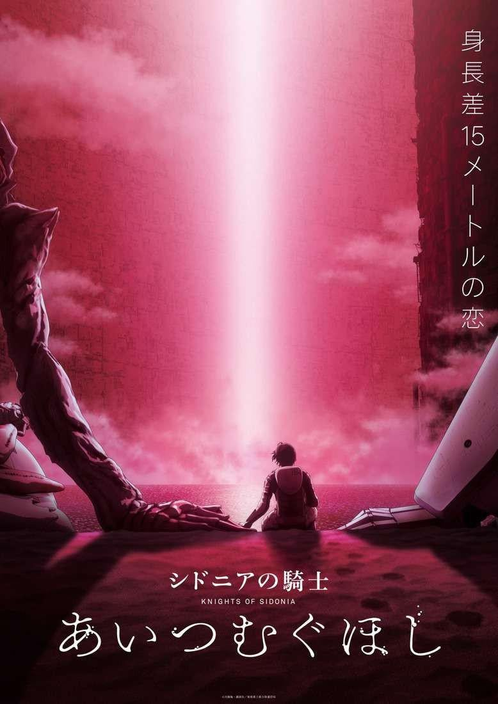
7.6「希德尼娅的骑士：织爱之星」（2021）是一部剧场版，类型包括科幻、机战、战斗，评分7.6，在本站出现在6份片单中，例如高分动画剧场版推荐、高分热血动漫推荐、高分恋爱动漫推荐。页面只做片单对照，不提供播放。地球被未知的生命体．奇居子破坏，幸存的人类搭乘巨大的宇宙船「希德尼娅」航向星海，没想到奇居子竟然在事隔100年后再度出现。 再次面临灭亡危机的人类，在人类与奇居子所生下的白羽衣紬，以及操纵卫人的王牌操纵士谷风长道的活跃下，暂时击退了奇居子。
#350龙珠改
 7.6
7.6「龙珠改」（2009）是一部TV，类型包括热血、战斗、奇幻，评分7.6，在本站出现在3份片单中，例如高分热血动漫推荐、高分奇幻冒险动漫、漫画改编动漫推荐。页面只做片单对照，不提供播放。本系列于2009年4月5日开始同系列播出，开播20年为早期作品《七龙珠Z》的再编辑版。除了部分画面、角色和人物造型作出修改外，制作组亦把有关故事浓缩，让剧情发展更流畅。而本作命名为“改”（日语假名：かい）则是代表更新与修改之意。 2009年。
#351江户盗贼团五叶
 7.6
7.6「江户盗贼团五叶」（2010）是一部TV，由望月智充执导，制作Manglobe，类型包括历史、治愈，评分7.6，在本站出现在2份片单中，例如高分治愈系动漫推荐、漫画改编动漫推荐。页面只做片单对照，不提供播放。主人公秋津政之助是一个浪人。他害怕见到生人，很容易紧张和说错话，所以丢掉了好不容易找到的工作。因为剑法不错，所以被美男子弥一雇用为保镖。没想到弥一其实是从事诱拐绑架活动的组织“五叶”的头领。因为家里需要用钱，政之助无法辞掉这份工作。
#352校园迷糊大王 一学期补习
 7.6
7.6「校园迷糊大王 一学期补习」（2005）是一部OVA/WEB，由高松信司执导，制作スタジオコメット，类型包括校园、搞笑、喜剧，评分7.6，在本站出现在5份片单中，例如高分OVA与WEB动画、高分恋爱动漫推荐、高分校园动漫推荐。页面只做片单对照，不提供播放。故事讲述的是茶道部全体赴温泉疗养，忽悠忽悠的泡澡放松心情，不愿错过良机的众男生尾随而至……。
#353异兽魔都 第二季
 7.6
7.6「异兽魔都 第二季」（2026）是一部OVA/WEB，由林祐一郎执导，类型包括战斗、奇幻、悬疑，评分7.6，在本站出现在7份片单中，例如2026年春季新番推荐、2026年新番总表、高分OVA与WEB动画。页面只做片单对照，不提供播放。开曼是魔法的受害者之一，头部被变成蜥蜴，且丧失了记忆。为了变回人脸和找回记忆，故事就从开曼和同伴二阶堂就从狩猎魔法师的行动开始了。正被烟家族追杀的开曼与二阶堂、期盼老大归来的十字眼组织…… 随着各方势力陷入极度混乱的对立，故事也随之冲向更加。
#354樱桃小丸子
 7.6
7.6「樱桃小丸子」（1995）是一部TV，由須田裕美子执导，制作日本アニメーション，类型包括搞笑、日常、治愈，评分7.6，在本站出现在3份片单中，例如高分治愈系动漫推荐、必看搞笑动漫、漫画改编动漫推荐。页面只做片单对照，不提供播放。『ちびまる子ちゃん』（ちびまるこちゃん）は、さくらももこによる日本の漫画作品やそれを元にしたアニメ作品、またはその主人公のあだ名。作者の子供時代の思い出を軸に、普通の小学生の生活を綴るコメディ。また、ドラマでまる子を演じた森迫永依・伊藤綺夏。
#355钻石王牌
「钻石王牌」（2013）是一部TV，由増原光幸执导，类型包括热血、运动、校园，评分7.6，在本站出现在3份片单中，例如高分热血动漫推荐、高分校园动漫推荐、漫画改编动漫推荐。页面只做片单对照，不提供播放。国中时期最后的大赛，率领即将被废止的赤城中学参赛，却在第一回战中投出暴投而输掉比赛的投手泽村荣纯，本来决定要与国中时期的朋友一同考入故乡的高中，却被东京的棒球名校青道高中挖角，并在那里遇见了天才捕手御幸一也，他的人生就此改变…。
#356哆啦A梦：新·大雄与铁人兵团
 7.6
7.6「哆啦A梦：新·大雄与铁人兵团」（2011）是一部剧场版，由寺本幸代执导，类型包括科幻、喜剧、冒险，评分7.6，在本站出现在6份片单中，例如高分动画剧场版推荐、高分科幻动漫推荐、高分奇幻冒险动漫。页面只做片单对照，不提供播放。到北极游玩的大雄，发现了一颗球，当大雄拿起那颗球，天上竟然掉下了机器人的零件，于是大雄把它带回去。完成后，却有一个名叫莉露露的女孩要要回去，但大雄等人却完全没有想到，拥有毁灭性武器的机器人、与其主人莉露露的目的居然是要毁灭地球…… 因此,本。
#357翼·年代记 东京默示录
 7.6
7.6「翼·年代记 东京默示录」（2007）是一部OVA/WEB，由多田俊介执导，制作Production I.G，类型包括奇幻、战斗、冒险，评分7.6，在本站出现在5份片单中，例如高分OVA与WEB动画、高分热血动漫推荐、高分恋爱动漫推荐。页面只做片单对照，不提供播放。樱一行人在法伊的魔法帮助下来到一个新的国度——东京，这里一片荒凉废墟，经常下酸雨，人们为了水而争战，这个地区只有两个地方有水，一个是都厅，一个是东京铁塔，双方对立。X战记中的神威，牙晓等等在都厅，封真，让刃等在铁塔。
#358哆啦A梦：大雄的绘画奇遇记
 7.6
7.6「哆啦A梦：大雄的绘画奇遇记」（2025）是一部剧场版，由寺本幸代执导，类型包括奇幻、异世界、治愈，评分7.6，在本站出现在8份片单中，例如高分动画剧场版推荐、高分治愈系动漫推荐、高分异世界动漫推荐。页面只做片单对照，不提供播放。哆啦A梦电影45周年纪念之作！新闻中一幅价值数十亿日元的名画引发轰动，而画作残片竟意外坠入到大雄手中！哆啦A梦一行人进入画中的世界并邂逅了神秘少女可蕾雅。在她的请求下，众人前往新闻中的中世纪欧洲“雅托利亚公国”。传说中这里存在一种蕴含神秘力。
#359不可思议的教室
 7.6
7.6「不可思议的教室」（2005）是一部TV，由新房昭之执导，制作ガンジス，类型包括搞笑、校园、日常，评分7.6，在本站出现在4份片单中，例如高分治愈系动漫推荐、高分校园动漫推荐、必看搞笑动漫。页面只做片单对照，不提供播放。11岁的桃月学院高中老师丽贝卡·宫本，毕业于美国麻省理工大学，是一个超级天才混血儿。担当1年级C班导师的她，发现自己班上的学生全部是些不可思议的怪人——宫本老师愉快而又多灾多难的教书生涯，就在这样的一群人中展开了……。
#360逮捕令
 7.6
7.6「逮捕令」（1996）是一部TV，由わたなべひろし(～30話)执导，类型包括搞笑、日常，评分7.6，在本站出现在3份片单中，例如高分治愈系动漫推荐、必看搞笑动漫、漫画改编动漫推荐。页面只做片单对照，不提供播放。故事是在叙述警视厅墨东警署交通科的二个女警员─小早川美幸和辻本夏实的故事，除了发生在她们身上的各个事件外，再加上她们和周遭朋友的关系所构成的轻松风格写实喜剧。
#361黄金神威 最终章
 7.6
7.6「黄金神威 最终章」（2026）是一部TV，由菅原静貴执导，制作Brain's Base，类型包括战斗、冒险、搞笑，评分7.6，在本站出现在6份片单中，例如2026年新番总表、高分热血动漫推荐、高分奇幻冒险动漫。页面只做片单对照，不提供播放。杉元とアシリパの旅はクライマックスへ!! アイヌから奪われた金塊を巡る生存競争サバイバル、最終章に突入ッッ!!! 樺太から北海道に帰還した「不死身の杉元」こと杉元佐ーとアイヌの少女・アシリパは、白石由竹と共に再び金塊探しの旅を開始。 その最。
#362哆啦A梦：大雄与铁人兵团
 7.6
7.6「哆啦A梦：大雄与铁人兵团」（1986）是一部剧场版，由芝山努执导，类型包括科幻、喜剧、搞笑，评分7.6，在本站出现在5份片单中，例如高分动画剧场版推荐、高分科幻动漫推荐、必看搞笑动漫。页面只做片单对照，不提供播放。利用任意门到了北极的大雄，无意间发现了机器人的零件，但是因为零件太大，于是就和哆啦A梦将零件拿到镜面世界这个无人的世界里组装。组装完成后，哆啦A梦就将他取名为“圣诞武士”。当正在高兴的操控圣诞武士时，无意间发现他居然着装著毁灭性的导弹…。 。
#363棋魂特别篇 迈向北斗杯之路
「棋魂特别篇 迈向北斗杯之路」（2004）是一部TV，由えんどうてつや执导，类型包括热血、运动，评分7.6，在本站出现在2份片单中，例如高分热血动漫推荐、漫画改编动漫推荐。页面只做片单对照，不提供播放。棋魂特别篇 迈向北斗杯之路。2004。热血、运动。
#364向阳素描×365 特别篇
 7.6
7.6「向阳素描×365 特别篇」（2009）是一部OVA/WEB，由新房昭之执导，制作SHAFT，类型包括治愈、百合、日常，评分7.6，在本站出现在5份片单中，例如高分OVA与WEB动画、高分治愈系动漫推荐、高分校园动漫推荐。页面只做片单对照，不提供播放。[可以算是为第三季预热把] 一位憧憬山吹高中美术科，并以优异的成绩入学的少女由乃。因为家中离学校很远，而住在学校校门前的公寓“向阳庄”。住在隔壁的是同学年的同学宫子而在各自房间正下方的是学姊寻和沙英。因为聚集了各种不同性格的艺术家，使得每天。
#365重金属摇滚双面人
 7.6
7.6「重金属摇滚双面人」（2008）是一部OVA/WEB，类型包括搞笑、音乐，评分7.6，在本站出现在3份片单中，例如高分OVA与WEB动画、必看搞笑动漫、漫画改编动漫推荐。页面只做片单对照，不提供播放。《重金摇滚双面人》是若杉公德所画作的日本漫画，以死亡金属音乐为主题，题目源自于美国流行乐队KISS的名曲《Detroit Rock City》，由白泉社出版。漫画中的重金摇滚乐歌词都以粗口和污秽的言词为主，但配合各种讽刺和恶搞而作的变态行为。
#366真盖塔 世界最后之日
 7.6
7.6「真盖塔 世界最后之日」（1998）是一部OVA/WEB，由今川泰宏(1-3)执导，类型包括机战、科幻、热血，评分7.6，在本站出现在4份片单中，例如高分OVA与WEB动画、高分热血动漫推荐、高分科幻动漫推荐。页面只做片单对照，不提供播放。自从盖塔射线被发现并作为一种重要的能源被广泛使用以来，人类已经经历了大半个世纪，但是，神秘的外星生物入侵者（Invador）自月面开始侵袭地球，人类濒临危机。于是，人们自发制造了大量的超级机器人（super robot）前去应战，终于击退了。
#367钻石王牌 第二季
「钻石王牌 第二季」（2015）是一部TV，由増原光幸执导，类型包括热血、运动、校园，评分7.6，在本站出现在3份片单中，例如高分热血动漫推荐、高分校园动漫推荐、漫画改编动漫推荐。页面只做片单对照，不提供播放。TVアニメ「ダイヤのA」が4月6日（月）夕方6時から テレビ東京ネット局にて新シリーズ放送決定しました！ 詳しい放送情報は下記となります。 引き続きTVアニメ「ダイヤのA」の応援をよろしくお願いします！。
#368向阳素描×☆☆☆ 特别篇
 7.6
7.6「向阳素描×☆☆☆ 特别篇」（2010）是一部OVA/WEB，由新房昭之执导，制作SHAFT，类型包括治愈、百合、日常，评分7.6，在本站出现在5份片单中，例如高分OVA与WEB动画、高分治愈系动漫推荐、高分校园动漫推荐。页面只做片单对照，不提供播放。由苍树梅老师创作的四格漫画「向阳素描」，在新房及SHAFT的制作小组合作下，围绕向阳四子由乃、小宫、寻及沙英展开的动画在今年年初已经顺利播放了第三季，并一如以往四子的萌力在动画中大放异彩，成为值得推介的作品。向阳的故事是讲述向往着美术班的由。
#369鲁邦三世 次元大介的墓标
 7.6
7.6「鲁邦三世 次元大介的墓标」（2014）是一部剧场版，由小池健执导，类型包括战斗、冒险、搞笑，评分7.6，在本站出现在6份片单中，例如高分动画剧场版推荐、高分热血动漫推荐、高分奇幻冒险动漫。页面只做片单对照，不提供播放。据悉这次是剧场版。动画将由「红线」（又名「超时空甩尾」）的监督小池健指导，动画全名为「鲁邦三世 次元大介的墓标」，预计在今年初夏上映。 动画「鲁邦三世～名为峰不二子的女人～」曾大胆采用峰不二子作为主角，讲述了她和鲁邦三世、次元大介、石川五右。
#370向阳素描×SP
 7.6
7.6「向阳素描×SP」（2011）是一部OVA/WEB，由新房昭之执导，制作SHAFT，类型包括治愈、百合、日常，评分7.6，在本站出现在5份片单中，例如高分OVA与WEB动画、高分治愈系动漫推荐、高分校园动漫推荐。页面只做片单对照，不提供播放。真-治愈系《向阳素描》第四季预热用OVA。
#371茄子：安达卢西亚之夏
 7.6
7.6「茄子：安达卢西亚之夏」（2003）是一部剧场版，由高坂希太郎执导，类型包括运动、治愈、剧情，评分7.6，在本站出现在5份片单中，例如高分动画剧场版推荐、高分热血动漫推荐、高分治愈系动漫推荐。页面只做片单对照，不提供播放。安达卢西亚位于西班牙南部的地中海西岸，面临太平洋。现在，这里正在举行世界最大自行车比赛之一的环西班牙大奖赛。选手帕帕·贝奈海利所属的PaoPao啤酒队是一只弱小的队伍。但是，在山路的安达卢西亚赛段，强队的选手们都会保存体力，所以这就成了为P。
#372北斗神拳
 7.6
7.6「北斗神拳」（1984）是一部TV，类型包括热血、战斗、奇幻，评分7.6，在本站出现在3份片单中，例如高分热血动漫推荐、高分奇幻冒险动漫、漫画改编动漫推荐。页面只做片单对照，不提供播放。当世界由于大规模的核战争而遭到毁灭性打击后，人类为了争夺仅有的淡水和食物开始互相抢夺厮杀，为了解救黑暗时代的人们，北斗神拳的继承人健次郎凭借着威力无比的暗杀拳法——北斗神拳，同各种邪恶势力做战斗，最终将光明带回世界。 第23話からオープニン。
#373无敌少侠
 7.6
7.6「无敌少侠」（2021）是一部OVA/WEB，类型包括战斗、科幻、奇幻，评分7.6，在本站出现在6份片单中，例如高分美漫与动画电影、高分OVA与WEB动画、高分热血动漫推荐。页面只做片单对照，不提供播放。动画改编自柯克曼创作的同名漫画，讲述了少年Mark Grayson的老爸是这个星球最强大的超级英雄，并想成为他老爸一样的超级英雄的故事。
#374甜甜私房猫 第二季
 7.6
7.6「甜甜私房猫 第二季」（2009）是一部TV，由増原光幸执导，制作MADHOUSE，类型包括治愈、搞笑、日常，评分7.6，在本站出现在3份片单中，例如高分治愈系动漫推荐、必看搞笑动漫、漫画改编动漫推荐。页面只做片单对照，不提供播放。描述一只黑灰斑纹的小猫跟丢母亲又找不到回家的路，在筋疲力尽累瘫之际巧遇一个跌倒的小男孩，从此由男孩一家暂时照顾。因男孩家为禁止饲养宠物的公寓，一家人还得费尽心机不让邻居发现小猫的存在，只是偏偏一直找不到饲主又和小猫日久生情。在经历某些事情后。
#375蝙蝠侠 黑暗骑士归来（上）
 7.6
7.6「蝙蝠侠 黑暗骑士归来（上）」（2012）是一部OVA/WEB，由Jay Oliva执导，制作MOI Animation，类型包括科幻、战斗、剧情，评分7.6，在本站出现在5份片单中，例如高分美漫与动画电影、高分OVA与WEB动画、高分热血动漫推荐。页面只做片单对照，不提供播放。阴云密布的高谭市，自蝙蝠侠消失的十年里，变种人团伙为非作歹，变本加厉，将这座繁华城市变成充满恐怖和凶杀的罪恶王国。嫉恶如仇的吉姆·戈登探长（大卫·塞尔比 David Selby 配音）行将退休，却不免成为变种人下一个袭击的目标。随着双面人哈。
#376玻璃假面
 7.6
7.6「玻璃假面」（2005）是一部TV，由浜津守执导，制作東京ムービー，类型包括少女、百合、治愈，评分7.6，在本站出现在4份片单中，例如高分恋爱动漫推荐、高分治愈系动漫推荐、高分女性向动漫。页面只做片单对照，不提供播放。北岛麻亚是个平凡的高中生，与母亲住在中华料理店的二楼，但麻亚十分喜爱戏剧，只要是她看过一次的戏，就可以将全部台词背起来。她获选参与学园祭的戏剧演出机会，但她所饰演的角色是村裏最穷，受人嘲笑的角色，令她感到十分自卑。这时，一个偶然的机会，让麻。
#377网球甜心 剧场版
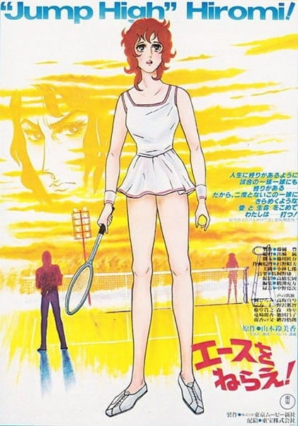
7.6「网球甜心 剧场版」（1979）是一部剧场版，类型包括运动，评分7.6，在本站出现在3份片单中，例如高分动画剧场版推荐、漫画改编动漫推荐、高分动画电影Top。页面只做片单对照，不提供播放。1970～80年代の日本にテニスブームを巻き起こした山本鈴美香の人気コミックをアニメ映画化。テレビアニメ版の演出も手がけた出崎統が監督を務め、原作コミックの第1部を基に、様々な試練を乗り越えて一流プレイヤーへと成長してく岡ひろみの奮闘を描く。
#378来来猫
 7.6
7.6「来来猫」（2009）是一部TV，由大地丙太郎执导，制作ダックスプロダクション，类型包括治愈、日常、搞笑，评分7.6，在本站出现在3份片单中，例如高分治愈系动漫推荐、必看搞笑动漫、漫画改编动漫推荐。页面只做片单对照，不提供播放。故事开始时，主角遇到了沉稳的小猫“文小姐”，接着在公园里遇到了任性的小猫“碰子”，接着还有淘气但很有兄长气质的“波”也加入了进来。后来又捡到了一只猫，并给它起名为“留”，寓意“猫到此为止了”。不知不觉中，主角与这四只被称为“佝偻猫愚连队”的。
#379青兰圆舞曲
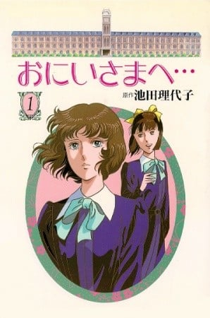
7.6「青兰圆舞曲」（1991）是一部TV，由出﨑統执导，制作手塚プロダクション，类型包括百合、恋爱、少女，评分7.6，在本站出现在3份片单中，例如高分恋爱动漫推荐、高分女性向动漫、漫画改编动漫推荐。页面只做片单对照，不提供播放。御苑生奈奈子进入名校青兰女子学园开始了她的高中生涯，在那里她遇到了学校的风云人物折原熏和朝霞丽并与之成为好友。不知为何，全校少女向往进入的“女青社”社长一之宫露子对奈奈子多加照顾，盛邀她成为“女青社”的一员，这同时也激起了众人的嫉妒。丽的痛。
#380棒球大联盟 第五季
「棒球大联盟 第五季」（2009）是一部TV，制作SynergySP，类型包括热血、运动，评分7.6，在本站出现在2份片单中，例如高分热血动漫推荐、漫画改编动漫推荐。页面只做片单对照，不提供播放。《棒球大联盟》（MAJOR）是满田拓也的少年漫画作品，从1994年在周刊少年Sunday（小学馆）上连载中的棒球漫画，台湾由青文出版社代理漫画出版，连载于元气少年。另有以原作改编的电视动画，电视动画的标题是片假名的“メジャー”。
#381蜘蛛侠 第三季：父辈们的罪恶
 7.6
7.6「蜘蛛侠 第三季：父辈们的罪恶」（1996）是一部TV，类型包括战斗、科幻、奇幻，评分7.6，在本站出现在5份片单中，例如高分美漫与动画电影、高分热血动漫推荐、高分科幻动漫推荐。页面只做片单对照，不提供播放。Now that Spider-Man is free from Man-Spider's curse, his new problem is finding Mary Jane, who has received a mysterious。
#382BB有心事
 7.6
7.6「BB有心事」（1996）是一部TV，由大森貴弘执导，制作ぴえろ，类型包括治愈、家庭、日常，评分7.6，在本站出现在2份片单中，例如高分治愈系动漫推荐、漫画改编动漫推荐。页面只做片单对照，不提供播放。11岁的少年榎木拓也拥有一个幸福的家庭，父母关系和睦，同时还有一个可爱的弟弟榎木实。一场突出起来的车祸让他的生活发生了翻天覆地的变化，母亲在车祸中丧生，在悲痛中，父亲榎木春美成为了家里唯一的支柱。为了减轻父亲的负担，拓也担负起了照顾弟弟的责。
#383夏日重现
 7.5
7.5「夏日重现」（2022）是一部TV，由渡辺歩执导，制作OLM TEAM KOJIMA，类型包括悬疑、奇幻、战斗，评分7.5，在本站出现在5份片单中，例如高分热血动漫推荐、高分恋爱动漫推荐、高分悬疑推理动漫。页面只做片单对照，不提供播放。“潮死了——” 听闻青梅竹马・小舟潮讣告的网代慎平，时隔2年回到了故乡和歌山市・日都岛。 家人和朋友再会，葬礼也顺利进行。然而，好友菱形窗却告诉慎平“潮的死存在可疑之处，有他杀的可能性”。 第二天又发生了邻居一家突然全部消失的事件。随着时间。
#384胆大党
 7.5
7.5「胆大党」（2024）是一部TV，由山代風我执导，类型包括战斗、奇幻、科幻，评分7.5，在本站出现在5份片单中，例如高分热血动漫推荐、高分科幻动漫推荐、高分奇幻冒险动漫。页面只做片单对照，不提供播放。出生于灵媒师家族的女高中生·小桃，与她同年级的超自然爱好者·厄卡伦。 小桃在厄卡伦遭到班上同学欺凌时保护了他，两人以此为契机开始有了交流。“相信幽灵存在但否定外星人存在”的小桃，和“相信外星人存在但否定幽灵存在”的厄卡伦争论不休。 为了让对。
#385小林家的龙女仆S
 7.5
7.5「小林家的龙女仆S」（2021）是一部TV，由石原立也执导，类型包括日常、搞笑、百合，评分7.5，在本站出现在5份片单中，例如高分治愈系动漫推荐、高分奇幻冒险动漫、必看搞笑动漫。页面只做片单对照，不提供播放。那位不可思议的龙女仆再度登场！ 因为各种奇妙的原因而作为小林家的女仆而工作中的龙·托尔。 偶尔（胡说，是经常）给亲爱的小林添麻烦，总算是融入了人类社会，成为了一个完美的（骗人，也就还行）女仆。 同样是龙的康娜、露科亚、法夫纳、艾露玛一行，也。
#386葬送的芙莉莲 第二季
 7.5
7.5「葬送的芙莉莲 第二季」（2026）是一部TV，由北川朋哉执导，制作MADHOUSE，类型包括奇幻、治愈、异世界，评分7.5，在本站出现在6份片单中，例如2026年新番总表、高分热血动漫推荐、高分治愈系动漫推荐。页面只做片单对照，不提供播放。「流泪道别并不适合我们，因为下次再见时会很难为情。」 在勇者欣梅尔一行人击败魔王后的世界中，与欣梅尔等人一同为世界带来和平、活了千年以上的精灵魔法使──芙莉莲。 在面对寿命已尽的欣梅尔之死时，因落下的泪水与心中涌现的情感，踏上了「理解人类之。
#387名侦探柯南
 7.5
7.5「名侦探柯南」（1996）是一部TV，由こだま兼嗣（#1-#118）→山本泰一郎（#119-#332）→佐藤真人（#162执导，制作東京ムービー→トムス・エンタテインメント( V1Studio )，类型包括推理、悬疑、恋爱，评分7.5，在本站出现在4份片单中，例如高分恋爱动漫推荐、高分治愈系动漫推荐、高分悬疑推理动漫。页面只做片单对照，不提供播放。主角工藤新一原本是一位颇具名声的高中生侦探，在目击黑暗组织的地下交易后，正准备追踪时却被突袭击昏，并被灌下代号为“APTX4869”（アポトキシン4869）的不明药物。后来虽然幸免于死，但身体就此缩小为小学时期的模样。之后他化名为江户川柯南。
#388擅长捉弄的高木同学
 7.5
7.5「擅长捉弄的高木同学」（2018）是一部TV，由赤城博昭执导，类型包括恋爱、校园、日常，评分7.5，在本站出现在5份片单中，例如高分恋爱动漫推荐、高分治愈系动漫推荐、高分校园动漫推荐。页面只做片单对照，不提供播放。“今天一定要捉弄高木同学，让她害羞！” 某所中学，在各种方面都被邻座的女生高木同学捉弄的男生西片。 他为了对此反击而每天奋斗，但……？ 这样的高木同学与西片带来的全力“捉弄”青春大战开始了！。
#389街角魔族
 7.5
7.5「街角魔族」（2019）是一部TV，由桜井弘明执导，类型包括百合、日常、搞笑，评分7.5，在本站出现在5份片单中，例如高分治愈系动漫推荐、高分奇幻冒险动漫、必看搞笑动漫。页面只做片单对照，不提供播放。某日突然觉醒暗之力的女子高中生 吉田优子，为着解除施加在暗之一族身上的诅咒，为打倒魔法少女不懈努力。竟对曾经的救命恩人下手？！ 但是却完全没有胜算！ 废柴贫穷魔族与沉稳肌肉魔法少女之间的日常魔法喜剧，就此开幕！。
#390卫宫家今天的饭
 7.5
7.5「卫宫家今天的饭」（2017）是一部OVA/WEB，由三浦貴博・佐藤哲人执导，类型包括日常、治愈、搞笑，评分7.5，在本站出现在5份片单中，例如高分OVA与WEB动画、高分治愈系动漫推荐、高分奇幻冒险动漫。页面只做片单对照，不提供播放。Fate×料理所交织而出的美味并温柔的世界—— 那里是随处都可见的稍稍有些热闹的餐桌上的光景。 春夏秋冬、在卫宫家每天都能享受到美味的料理。 今天做些什么呢。
#391小城日常
 7.5
7.5「小城日常」（2025）是一部TV，由石立太一执导，类型包括日常、搞笑、治愈，评分7.5，在本站出现在4份片单中，例如2025年夏季新番推荐、高分治愈系动漫推荐、必看搞笑动漫。页面只做片单对照，不提供播放。この街、ただの街にあらず。 笑いあり プププッ ラブあり キュンキュン ホロリあり ホロリホロリ 住人たちが織りなす 予測不能な平凡ライフ！ ワクワクが連鎖する CITYへようこそ。 [中文简介] 这座城镇，绝非寻常之地。 有欢笑（噗嗤嗤！。
#392请问您今天要来点兔子吗？？
 7.5
7.5「请问您今天要来点兔子吗？？」（2015）是一部TV，由橋本裕之执导，制作KINEMA CITRUS，类型包括百合、治愈、日常，评分7.5，在本站出现在4份片单中，例如高分治愈系动漫推荐、必看搞笑动漫、高分女性向动漫。页面只做片单对照，不提供播放。道に迷って喫茶ラビットハウスにやってきたココア。 実は、そこが彼女が住み込むことになっていた喫茶店で…。 ちっちゃくてクールなチノ、軍人気質なリゼ、おっとり和風な千夜、気品あふれる庶民派のシャロと全方位的なかわいさの登場人物に、チノの同級生。
#393荒川爆笑团
 7.5
7.5「荒川爆笑团」（2010）是一部TV，由新房昭之执导，制作SHAFT，类型包括搞笑、日常、恋爱，评分7.5，在本站出现在4份片单中，例如高分恋爱动漫推荐、高分治愈系动漫推荐、必看搞笑动漫。页面只做片单对照，不提供播放。故事主人翁市之宫行是企业社长的儿子，事刻准备着继承那间世界顶尖的家族生意。从年幼的时候开始，父亲就告诉他“不欠人，不求人”的道理，生活时刻遵守家训。 可是，在一次意外溺水，行被住在桥下荒川钓鱼的ニノ救回性命，就此欠下救命之恩。为了报恩，ニノ。
#394齐木楠雄的灾难 完结篇
 7.5
7.5「齐木楠雄的灾难 完结篇」（2018）是一部TV，由桜井弘明执导，制作EGG FIRM×J.C.STAFF，类型包括搞笑、校园、超能力，评分7.5，在本站出现在4份片单中，例如高分治愈系动漫推荐、高分校园动漫推荐、必看搞笑动漫。页面只做片单对照，不提供播放。完結編では、原作漫画の「忍舞市旅行エピソード」も描かれるぞ！ 忍舞市に集合した斉木たちを襲う災難とは…!? 更にメインビジュアルに空助と鳥束とねこ戦車が登場！ いつもの「澄んだ目をした煩悩だらけのエロ霊能力者・鳥束」の様子が何だかおかしい…。
#395迷糊餐厅
 7.5
7.5「迷糊餐厅」（2010）是一部TV，由平池芳正执导，制作A-1 Pictures，类型包括搞笑、日常、恋爱，评分7.5，在本站出现在4份片单中，例如高分恋爱动漫推荐、高分治愈系动漫推荐、必看搞笑动漫。页面只做片单对照，不提供播放。在史克威尔艾尼克斯的漫画杂志YOUNG GANGAN2005年1号开始连载的四格漫画。以北海道某处被常客评论为“危险的感觉令人上瘾”的餐厅“瓦古娜利亚”为舞台，充满各种奇人异事的四格漫画。登场角色彼此间吐槽相当轻快。 平时以六页为一个单位连。
#396天才麻将少女
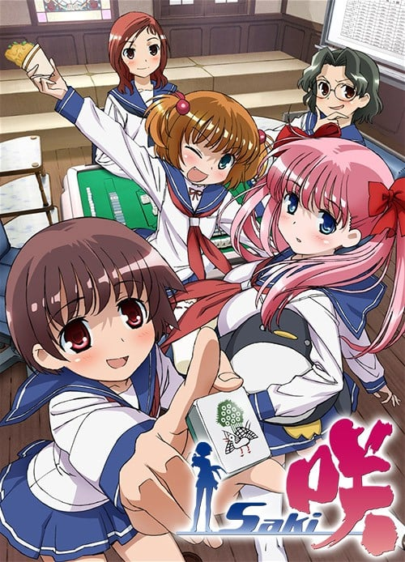
7.5「天才麻将少女」（2009）是一部TV，由小野学执导，制作GONZO(第5工作室)(1-14)→ピクチャーマジック(15-25)，类型包括百合、校园、超能力，评分7.5，在本站出现在4份片单中，例如高分热血动漫推荐、高分校园动漫推荐、高分女性向动漫。页面只做片单对照，不提供播放。天才麻将少女宫永咲虽然还是一位刚升入高中一年级的学生，但是便能以正负0分的方式打完牌局从而创下赫赫威名。故事二号女主角原村和则是在全国中学生麻将大赛个人组中夺得冠军的少女，两人因缘而聚到了麻将部，并以高中校际比赛的顶点为目标展开一番自摸放炮。
#397明天，美食广场见。
 7.5
7.5「明天，美食广场见。」（2025）是一部TV，由古賀一臣执导，类型包括日常、百合、搞笑，评分7.5，在本站出现在6份片单中，例如2025年夏季新番推荐、高分治愈系动漫推荐、高分校园动漫推荐。页面只做片单对照，不提供播放。話しかけ難い雰囲気を漂わせる和田と、 ギャルのような見た目で周囲から恐れられている山本。 クラスではそれぞれ一人きりで過ごす和田と山本は、 別々の高校に通っているものの、 毎日のようにショッピングセンターのフードコートに集まっている。 と言。
#398血界战线 & BEYOND
 7.5
7.5「血界战线 & BEYOND」（2017）是一部TV，由高柳滋仁执导，制作BONES，类型包括战斗、奇幻、热血，评分7.5，在本站出现在5份片单中，例如高分热血动漫推荐、高分异世界动漫推荐、高分奇幻冒险动漫。页面只做片单对照，不提供播放。曾经被称为纽约的城市，仅仅一晚便消失无踪。 出现在那里的城市“赫尔沙雷姆兹·罗特”。在浓雾的另一侧展开，连结“异世界”与现世的这一地区，变化成了各怀心思的人们所跋扈的“地球上最危险的城市”。 为了保护这座混沌之城的均衡，持续着不为人知的活动。
#399平稳世代的韦驮天们
 7.5
7.5「平稳世代的韦驮天们」（2021）是一部TV，由城所聖明执导，类型包括战斗、奇幻、搞笑，评分7.5，在本站出现在4份片单中，例如高分热血动漫推荐、高分奇幻冒险动漫、必看搞笑动漫。页面只做片单对照，不提供播放。“韦驮天” × “魔族” × “人类”，世人无从知晓的禁断大逃杀开始—— 经过一番壮烈的战斗，以压倒性的速度与强大而自豪的战斗诸神“韦驮天”封印了导致世界毁灭的“魔族”，自那以后过了800年。 如今，“那场战斗”不过是遥远神话当中的传说故事。
#400出包王女Darkness
 7.5
7.5「出包王女Darkness」（2012）是一部TV，由大槻敦史执导，类型包括校园、搞笑、恋爱，评分7.5，在本站出现在5份片单中，例如高分恋爱动漫推荐、高分治愈系动漫推荐、高分校园动漫推荐。页面只做片单对照，不提供播放。梨斗出包连连的每一天回来了。菈菈的双胞胎妹妹‧梦梦与娜娜转学到彩南高中。为了帮助梨斗变成肉食系男孩，梦梦正策划着「打造后宫」这样的诡异计划……？！不仅如此，还出现了神秘敌人袭击梨斗？！。
#401齐木楠雄的灾难 再始动篇
 7.5
7.5「齐木楠雄的灾难 再始动篇」（2019）是一部OVA/WEB，由桜井弘明执导，制作EGG FIRM×J.C.STAFF，类型包括搞笑、校园、日常，评分7.5，在本站出现在5份片单中，例如高分OVA与WEB动画、高分治愈系动漫推荐、高分校园动漫推荐。页面只做片单对照，不提供播放。楠雄和他那帮自称为朋友的人回来面对更多的超能力灾难。如果说以前他的问题不够多，那现在可谓是麻烦缠身。
#402乱马1/2
 7.5
7.5「乱马1/2」（2024）是一部TV，由宇田鋼之介执导，类型包括恋爱、搞笑、日常，评分7.5，在本站出现在5份片单中，例如高分恋爱动漫推荐、高分治愈系动漫推荐、高分奇幻冒险动漫。页面只做片单对照，不提供播放。早乙女乱馬と、 天道道場三女の天道あかねは親が決めた許婚同士。 しかし乱馬にはある悩みが…。 中国での修行中、伝説の修行場「呪泉郷」に落ちてしまい、 水をかぶると女に、 お湯をかぶると男に戻る という、不思議な体質になってしまっていた！？ 。
#403名侦探柯南 通往天国的倒数计时
 7.5
7.5「名侦探柯南 通往天国的倒数计时」（2001）是一部剧场版，由こだま兼嗣执导，制作東京ムービー（トムス・エンタテインメント），类型包括推理、悬疑、冒险，评分7.5，在本站出现在5份片单中，例如高分动画剧场版推荐、高分悬疑推理动漫、高分奇幻冒险动漫。页面只做片单对照，不提供播放。柯南和少年侦探团在参观一座西多摩新建的双子摩天大楼时，意外的发现了黑暗组织成员琴酒(Gin)。随后又发生了杀人事件。 杀人事件还在继续，共同点是每名死者身边都会留下一个小的酒杯。就在柯南和少年侦探团寻找凶手的时候，琴酒也得知他正在寻找的叛徒。
#404人形电脑天使心
 7.5
7.5「人形电脑天使心」（2002）是一部TV，由浅香守生执导，制作MADHOUSE，类型包括治愈、恋爱、科幻，评分7.5，在本站出现在4份片单中，例如高分恋爱动漫推荐、高分治愈系动漫推荐、高分科幻动漫推荐。页面只做片单对照，不提供播放。在不久的将来，电子技术飞速发展，电脑成为人们生活中不可缺少的一部分。主角的名字是本须和秀树，是个19岁的少年，由于考试失败，来到东京上补习班，过着贫穷潦倒的生活…… 到达东京的第一天，他很幸运的在垃圾堆捡到一个人型电脑，一直以来秀树都非常渴。
#405恋如雨止
 7.5
7.5「恋如雨止」（2018）是一部TV，由渡辺歩执导，类型包括恋爱、治愈、校园，评分7.5，在本站出现在5份片单中，例如高分恋爱动漫推荐、高分治愈系动漫推荐、高分校园动漫推荐。页面只做片单对照，不提供播放。“我，喜欢店长——” 曾是田径部的王牌，但由于某个事件而放弃跑步的17岁女高中生·橘晶。 不擅长表现感情，总被人误会成待人冷淡的晶，其视线的前方是自己在打工的家庭餐厅“Garden”的万年店长·近藤正己。 对店长的心意满溢而出的晶，以及对于。
#406此花绮谭
 7.5
7.5「此花绮谭」（2017）是一部TV，由岡本英樹执导，类型包括百合、治愈、日常，评分7.5，在本站出现在4份片单中，例如高分治愈系动漫推荐、高分奇幻冒险动漫、高分女性向动漫。页面只做片单对照，不提供播放。侍奉神明的狐娘们工作的温泉旅馆“此花亭”。 “此花绮谭”便是来此花亭服务的新人服务员柚，和围绕着柚的伙伴们的暖人心怀的故事。 服务员们想法只有一个。 “不论真实身份是什么，不论是何等样人，客人就是神。” 当然，现在在眼前的你也是…… 请接触。
#407飞翔的魔女
 7.5
7.5「飞翔的魔女」（2016）是一部TV，由桜美かつし执导，制作J.C.STAFF，类型包括日常、治愈、搞笑，评分7.5，在本站出现在4份片单中，例如高分治愈系动漫推荐、高分奇幻冒险动漫、必看搞笑动漫。页面只做片单对照，不提供播放。在青森开始做魔女！ 青森——在这片被丰饶的大自然围绕的土地上，有时会发生些不可思议的事情。 木幡真琴15岁，魔女。和黑猫千户一同从横滨过来的她，开始在青森的亲戚家里修行。虽然现在还只是仅仅能飞上天空这种程度，但她仍然和表兄妹圭和千夏一起度过。
#408恶魔阿萨谢尔在召唤你
 7.5
7.5「恶魔阿萨谢尔在召唤你」（2011）是一部TV，由水島努执导，类型包括搞笑、奇幻、日常，评分7.5，在本站出现在4份片单中，例如高分治愈系动漫推荐、高分奇幻冒险动漫、必看搞笑动漫。页面只做片单对照，不提供播放。芥边侦探事务所，最强的无敌恶魔使芥边以及工读生助手佐隈，依照委托人的要求，召唤出恶魔来执行被委托案件。 然而，召唤出来的恶魔虽然每个都赫赫有名，但每个却也都有着奇妙的中二病性格，让每次的案件都不是这么的顺利…… 原作在日本青年向双周刊《EV。
#409黄金神威
 7.5
7.5「黄金神威」（2018）是一部TV，由難波日登志执导，类型包括冒险、战斗、搞笑，评分7.5，在本站出现在4份片单中，例如高分热血动漫推荐、高分奇幻冒险动漫、必看搞笑动漫。页面只做片单对照，不提供播放。为了实现日俄战争中死去好友寅次，临死之前「治好我妻子眼睛」的愿望，军人杉元为了筹集到金钱而从东京前往北海道，因为传说在北海道土著阿依努族中有大批金块存在，而在旅途中杉元结识了土著阿依努人女孩阿希莉。 在阿希莉被熊袭击时，杉元及时出手救了女孩。
#410迷糊餐厅 第三季
 7.5
7.5「迷糊餐厅 第三季」（2015）是一部TV，由鎌倉由実执导，类型包括搞笑、日常、恋爱，评分7.5，在本站出现在4份片单中，例如高分恋爱动漫推荐、高分治愈系动漫推荐、必看搞笑动漫。页面只做片单对照，不提供播放。迷糊餐厅 第三季。2015。搞笑、日常、恋爱。
#411中华小当家
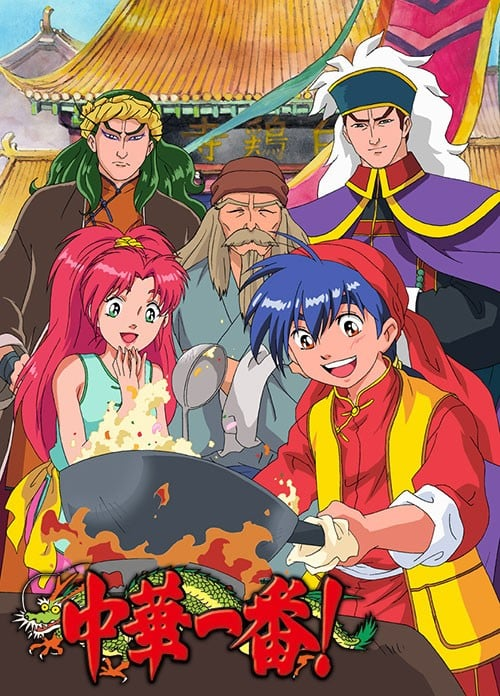
7.5「中华小当家」（1997）是一部TV，由案納正美执导，制作日本アニメーション，类型包括热血，评分7.5，在本站出现在2份片单中，例如高分热血动漫推荐、漫画改编动漫推荐。页面只做片单对照，不提供播放。其內容主要描寫中國四川省的年輕廚師劉昴星（マオ，外號阿昴，台灣譯為小當家）學習廚藝，到廣州陽泉酒家修行，獲得特級廚師（漫畫中虛構的中國料理界的最高地位）資格，因為主角堅持一個信念－－料理是為人們帶來幸福的。結交許多對於廚藝有志一同的朋友，及。
#412妄想学生会 OVA
 7.5
7.5「妄想学生会 OVA」（2012）是一部OVA/WEB，由金澤洪充执导，类型包括搞笑、校园、日常，评分7.5，在本站出现在5份片单中，例如高分OVA与WEB动画、高分治愈系动漫推荐、高分校园动漫推荐。页面只做片单对照，不提供播放。圧倒的な女子高生天国の中、ひょんなことから生徒会副会長に就任した津田タカトシ。 彼は作中登場キャラの中でも、ゴクゴク普通な一般・常識人。 堅いイメージの生徒会。だがそこは、想像を遥かに絶するメンバーがいた… 収録の第16話は何がくるのか見て。
#413排球少年 TO THE TOP
 7.5
7.5「排球少年 TO THE TOP」（2020）是一部TV，由佐藤雅子执导，类型包括运动、热血、校园，评分7.5，在本站出现在4份片单中，例如高分热血动漫推荐、高分校园动漫推荐、必看搞笑动漫。页面只做片单对照，不提供播放。春季的高中排球宫城县预选中，在一番激斗后取胜，终于实现在全国大赛中出场这一夙愿的乌野高中排球部。就在他们为全国大赛做准备的时候，传来了影山受到全日本青年强化合宿召集的消息。而月岛也受到宫城县一年级选拔强化合宿的召集。同为一年级，对于差距感到。
#414剧场版 妄想学生会
 7.5
7.5「剧场版 妄想学生会」（2017）是一部剧场版，由金澤洪充执导，类型包括搞笑、校园、日常，评分7.5，在本站出现在7份片单中，例如高分动画剧场版推荐、高分恋爱动漫推荐、高分治愈系动漫推荐。页面只做片单对照，不提供播放。「週刊少年マガジン」連載の氏家ト全による人気ギャグ漫画をアニメ化し、2010年にシリーズ第1期、14年に第2期がテレビ放送された「生徒会役員共」の劇場版。少子化の影響で女子高から共学化され、男女比が28：524という圧倒的に女子が多い私立桜。
#415摇曳百合 夏日时光！
 7.5
7.5「摇曳百合 夏日时光！」（2015）是一部OVA/WEB，由畑博之执导，制作TYO Animations（ゆめ太カンパニー），类型包括百合、日常、搞笑，评分7.5，在本站出现在5份片单中，例如高分OVA与WEB动画、高分治愈系动漫推荐、必看搞笑动漫。页面只做片单对照，不提供播放。「コミック百合姫」に連載された人気コミックを原作に、2011年にテレビシリーズ第1期、12年に第2期が放送された日常系アニメ「ゆるゆり」のOVA。廃部になった茶道部の部室に集まり、特に明確な活動目的もない「ごらく部」を続ける赤座あかり、歳納。
#416坂道上的阿波罗
 7.5
7.5「坂道上的阿波罗」（2012）是一部TV，由渡边信一郎执导，制作MAPPA，类型包括音乐、校园、恋爱，评分7.5，在本站出现在5份片单中，例如高分恋爱动漫推荐、高分治愈系动漫推荐、高分校园动漫推荐。页面只做片单对照，不提供播放。原作为小玉ユキ于2007年到2012年初在小学館《月刊flowers》所连载的漫画，在2009年度“这本漫画真厉害·女性篇”中获得第一位。 故事发生在1966年初夏，高中一年生西见薰因父亲工作调动而独自一人从横须贺市搬到亲戚所在的九州。自闭。
#417死神 千年血战篇-诀别谭-
 7.5
7.5「死神 千年血战篇-诀别谭-」（2023）是一部TV，由田口智久执导，类型包括热血、战斗、奇幻，评分7.5，在本站出现在4份片单中，例如高分热血动漫推荐、高分奇幻冒险动漫、必看搞笑动漫。页面只做片单对照，不提供播放。突如《見えざる帝国》の襲撃を受けた尸魂界を救うべく、 死神代行・黒崎一護は、躊躇うことなく戦いに身を投じる。 だが、滅却師の始祖・ユーハバッハの命を受けた星十字騎士団の侵攻により、 多くの死神たちが次々と無惨に散っていった。 卍解を奪う手段。
#418飙马野郎 JOJO的奇妙冒险 第一赛段
 7.5
7.5「飙马野郎 JOJO的奇妙冒险 第一赛段」（2026）是一部OVA/WEB，由木村泰大・髙橋秀弥执导，类型包括战斗、冒险、热血，评分7.5，在本站出现在5份片单中，例如2026年新番总表、高分OVA与WEB动画、高分热血动漫推荐。页面只做片单对照，不提供播放。1890年のアメリカ。総距離約4,000マイル、賞金総額5,000万ドル、 人類史上初の乗馬による北米大陸横断レース「スティール・ボール・ラン」が開催されようとしていた。 かつて天才騎手と呼ばれながらも、半身不随となり、失意の中にいたジョニ。
#419恶魔阿萨谢尔在召唤你Z
 7.5
7.5「恶魔阿萨谢尔在召唤你Z」（2013）是一部TV，由水島努执导，制作Production I.G，类型包括搞笑、奇幻、日常，评分7.5，在本站出现在4份片单中，例如高分治愈系动漫推荐、高分奇幻冒险动漫、必看搞笑动漫。页面只做片单对照，不提供播放。芥边侦探事务所，最强的无敌恶魔使芥边以及工读生助手佐隈，依照委托人的要求，召唤出恶魔来执行被委托案件。 然而，召唤出来的恶魔虽然每个都赫赫有名，但每个却也都有着奇妙的中二病性格，让每次的案件都不是这么的顺利…… 原作在日本青年向双周刊《EV。
#420男子高中生的日常 特典
 7.5
7.5「男子高中生的日常 特典」（2012）是一部OVA/WEB，类型包括搞笑、日常、校园，评分7.5，在本站出现在5份片单中，例如高分OVA与WEB动画、高分治愈系动漫推荐、高分校园动漫推荐。页面只做片单对照，不提供播放。通常特典 男子高校生と理想（1巻特典映像） 男子高校生と孤独（2巻特典映像） 男子高校生とチャック（3巻特典映像） 男子高校生とひっかけ（4巻特典映像） 男子高校生としゃっくり（5巻特典映像） 男子高校生と気遣い（6巻特典映像）。
#421歌剧少女!!
「歌剧少女!!」（2021）是一部TV，由米田和弘执导，类型包括校园、百合、音乐，评分7.5，在本站出现在3份片单中，例如高分校园动漫推荐、高分女性向动漫、漫画改编动漫推荐。页面只做片单对照，不提供播放。大正时期创设，仅未婚女性可以参与的华美无比的舞台上产生了突破时代魅惑人心的「红华歌剧团」。培养其人才的「红华歌剧音乐学校」中，通过了极低的入学率成功入学的第100期学生们。憧憬着“奥斯卡大人”，身高178cm天真烂漫的少女，渡边更纱。对梦想。
#422摇曳百合 夏日时光！+
 7.5
7.5「摇曳百合 夏日时光！+」（2015）是一部TV，由畑博之执导，制作TYO Animations（ゆめ太カンパニー），类型包括百合、日常、搞笑，评分7.5，在本站出现在4份片单中，例如高分治愈系动漫推荐、必看搞笑动漫、高分女性向动漫。页面只做片单对照，不提供播放。7月25日｢なちゅやちゅみ｣をテレビ東京で放送 8月と9月完全新作アニメ｢なちゅやちゅみ＋｣放送（それぞれ単発）。
#423魔卡少女樱 香港之旅
 7.5
7.5「魔卡少女樱 香港之旅」（1999）是一部剧场版，由浅香守生执导，类型包括奇幻、恋爱、治愈，评分7.5，在本站出现在8份片单中，例如高分动画剧场版推荐、高分热血动漫推荐、高分恋爱动漫推荐。页面只做片单对照，不提供播放。终于到了寒假，小樱来到真树姐的小店买笔记本，商店正在作抽奖活动，小樱却无意抽中了：香港5日4人游。高兴的小樱邀请了知世，雪兔和哥哥一起去（小可也顺利逃过海关）。然而在他们在逛鸟街时小樱却感觉到一股气息从两只鸟身上发出。于是小樱便追了上去，在。
#424白熊咖啡馆
 7.5
7.5「白熊咖啡馆」（2012）是一部TV，类型包括治愈、搞笑、日常，评分7.5，在本站出现在3份片单中，例如高分治愈系动漫推荐、必看搞笑动漫、漫画改编动漫推荐。页面只做片单对照，不提供播放。原作是在《月刊flowers》上连载的动物漫画，讲述咖啡馆主人白熊和常客熊猫、企鹅等动物的故事。动画为4季预定年番。
#425排球少年！！垃圾场决战
「排球少年！！垃圾场决战」（2024）是一部剧场版，由満仲勧执导，类型包括运动、热血、校园，评分7.5，在本站出现在5份片单中，例如高分动画剧场版推荐、高分热血动漫推荐、高分校园动漫推荐。页面只做片单对照，不提供播放。故事讲述了风靡十年的超人气热血IP《排球少年!!》中人气最高、最精彩绝伦的垃圾场决战。日向翔阳因为心怀成为“排球小巨人”的梦想加入了乌野高中排球部，逐渐成为独当一面的副攻手。春季高中排球比赛上，乌野高中排球部终于迎来了与音驹高中排球部的正式。
#426妄想学生会＊ OVA
 7.5
7.5「妄想学生会＊ OVA」（2014）是一部OVA/WEB，由金澤洪充执导，类型包括搞笑、校园、日常，评分7.5，在本站出现在5份片单中，例如高分OVA与WEB动画、高分治愈系动漫推荐、高分校园动漫推荐。页面只做片单对照，不提供播放。2期OVA系列。 2#15は2014年10月22日発売 『生徒会役員共* OVA』。
#427猫汤
 7.5
7.5「猫汤」（2001）是一部OVA/WEB，由佐藤竜雄执导，类型包括奇幻，评分7.5，在本站出现在3份片单中，例如高分OVA与WEB动画、高分奇幻冒险动漫、漫画改编动漫推荐。页面只做片单对照，不提供播放。猫姐姐病重卧床，灵魂正被死神带走。猫猫弟弟拼命与死神争回姐姐的灵魂，千辛万苦却只争回一半，姐姐虽然死而复生，可是睁开眼睛的姐姐却变得痴痴傻傻。猫猫姐弟原本受妈妈所托到街市买豆腐，但他们却辗转踏上为姐姐寻找另一半灵魂的旅程。 诡异的旅途中，不。
#428水果篮子
 7.5
7.5「水果篮子」（2001）是一部TV，由大地丙太郎执导，类型包括治愈、校园、恋爱，评分7.5，在本站出现在5份片单中，例如高分恋爱动漫推荐、高分治愈系动漫推荐、高分校园动漫推荐。页面只做片单对照，不提供播放。积极开朗又有些“脱线”的高中女生本田透由于相依为命的妈妈意外车祸离世，被好心的爷爷收养。但是由于姑姑也要到爷爷家住，爷爷家的房子要改建，小透只好以到朋友家住的名义暂时在森林里搭起了帐篷住了下来，就是在这片草摩家的森林里，小透重新结识了班里的。
#429摇曳百合、
 7.5
7.5「摇曳百合、」（2019）是一部OVA/WEB，由山岸大悟执导，类型包括百合、日常、搞笑，评分7.5，在本站出现在6份片单中，例如高分OVA与WEB动画、高分治愈系动漫推荐、高分校园动漫推荐。页面只做片单对照，不提供播放。変わらない毎日が帰ってきた！ 赤座あかり・歳納京子・船見結衣・吉川ちなつの ４人が行っている部活動「ごらく部」。 それに目をつけ、ちょっかい（？）を 出し続ける「生徒会」。 愛が溢れまくりで明日から元気に生きていけること 請け合いのまったり。
#430剧场版 妄想学生会2
 7.5
7.5「剧场版 妄想学生会2」（2021）是一部剧场版，由金澤洪充执导，类型包括搞笑、校园、日常，评分7.5，在本站出现在7份片单中，例如高分动画剧场版推荐、高分恋爱动漫推荐、高分治愈系动漫推荐。页面只做片单对照，不提供播放。少数の男子に多数の女子というハーレム状態の学園を舞台に、下ネタ交じりのギャグがさく裂する脱力系コメディ「生徒会役員共」の劇場版アニメ第2弾。原作は「週刊少年マガジン」連載の氏家ト全による4コマ漫画で、これまで劇場版のほかテレビシリーズ2期や。
#431向阳素描
 7.5
7.5「向阳素描」（2007）是一部TV，由チーフディレクター：上坪亮樹执导，制作SHAFT，类型包括百合、治愈、日常，评分7.5，在本站出现在4份片单中，例如高分治愈系动漫推荐、高分校园动漫推荐、高分女性向动漫。页面只做片单对照，不提供播放。蒼樹うめ原作、「ひだまりスケッチ」TVシリーズ第1作。 憧れの私立やまぶき高校美術科に入学したゆの。 親元を離れ、学校のまん前にある小さなアパート『ひだまり荘』で 一人暮らしをはじめたゆのは、そこで同級生の宮子、 先輩の沙英とヒロの三人に出。
#432机动战士高达 雷霆宙域
 7.5
7.5「机动战士高达 雷霆宙域」（2015）是一部OVA/WEB，由松尾衡执导，制作Sunrise，类型包括科幻、机战、战争，评分7.5，在本站出现在4份片单中，例如高分OVA与WEB动画、高分热血动漫推荐、高分科幻动漫推荐。页面只做片单对照，不提供播放。宇宙世紀0079、地球連邦とジオン公国が戦った一年戦争の末期、サイド４のスペースコロニー群、ムーアはジオン軍の攻撃により破壊され、多くの住人が命を落とした。破壊されたコロニーや、撃沈された戦艦の残骸が無数に漂う暗礁宙域では、ぶつかり合い帯電。
#433大室家 亲爱的姐妹们
 7.5
7.5「大室家 亲爱的姐妹们」（2024）是一部剧场版，由龍輪直征执导，制作パッショーネ&スタジオリングス，类型包括百合、日常、搞笑，评分7.5，在本站出现在6份片单中，例如高分动画剧场版推荐、高分治愈系动漫推荐、必看搞笑动漫。页面只做片单对照，不提供播放。中学1年生の大室櫻子は、学校でも家でも元気いっぱい。 三姉妹の中心として姉の撫子、妹の花子に呆れられながらも楽しい毎日を過ごしている。 今日は学校で向日葵に宿題を手伝ってもらい意気揚々と帰宅した櫻子。 しかし家は静まり返っており誰もいない様。
#434超元气三姐妹 增量中！
 7.5
7.5「超元气三姐妹 增量中！」（2011）是一部TV，由太田雅彦执导，类型包括搞笑、日常、校园，评分7.5，在本站出现在4份片单中，例如高分治愈系动漫推荐、高分校园动漫推荐、必看搞笑动漫。页面只做片单对照，不提供播放。《超元气三姐妹》近日正式确定了第二季的开播，第二季题目确定为《超元气三姐妹 增量中！》，将于2011年1月开始放送。 《超元气三姐妹》改编自连载于《周刊少年Champion》的樱井纪雄老师的同名作品，TV第一季于2010年7月至10月间播放。
#435圣斗士星矢
 7.5
7.5「圣斗士星矢」（1986）是一部TV，类型包括热血、战斗、奇幻，评分7.5，在本站出现在3份片单中，例如高分热血动漫推荐、高分奇幻冒险动漫、漫画改编动漫推荐。页面只做片单对照，不提供播放。在久远的神话时代，天空的宙斯、海中的波塞冬、冥界的哈迪斯无一不在觊觎人类赖以生存的大地。为了保护弱小的人们，爱好和平的女神雅典娜站出来，与邪恶的神道展开连番战争。与此同时，人类中一些骁勇善战、正义善良的少年围绕在女神身边和她并肩作战。他们一。
#436现视研 OVA
 7.5
7.5「现视研 OVA」（2006）是一部OVA/WEB，由水島努执导，类型包括校园、日常、搞笑，评分7.5，在本站出现在6份片单中，例如高分OVA与WEB动画、高分恋爱动漫推荐、高分治愈系动漫推荐。页面只做片单对照，不提供播放。2006年12月22日より発売された『くじびきアンバランス DVD-BOX』の購入特典として同梱された完全新作。全3話。2008年6月には1巻にまとめた『げんしけんOVA COLLECTION』が発売された。2007年12月31日にキッズス。
#437世界第一初恋2
「世界第一初恋2」（2011）是一部TV，类型包括恋爱，评分7.5，在本站出现在3份片单中，例如高分恋爱动漫推荐、高分女性向动漫、漫画改编动漫推荐。页面只做片单对照，不提供播放。主人公小野寺律在高中时一直暗恋着嵯峨前辈，然而由于一件小诗使双方都误会了对方。十年过去了，小野寺被分配到丸川书店少女漫画部当编辑，而且上班第一天就被上司高野先生训斥。其实高野先生就是小野寺高中时一直暗恋的嵯峨前辈。他在高三的时候因为父母离异。
#438他和她的故事
 7.5
7.5「他和她的故事」（1998）是一部TV，由庵野秀明 (第1話 - 第15话)→あんのひであき (第16话)→アンノヒデアキ (第17话 -)执导，制作J.C.STAFF，类型包括恋爱、校园、搞笑，评分7.5，在本站出现在5份片单中，例如高分恋爱动漫推荐、高分校园动漫推荐、必看搞笑动漫。页面只做片单对照，不提供播放。宫泽雪野是公认的模范优等生，无论是成绩、性格、还是外貌都无可挑剔。因此，同学们将她作为偶像一样崇拜。但是，真正的雪野是一个虚荣心极强的人，为了获得别人的赞赏，几乎什么事情都做得出来。好脾气是装出来的，好成绩是通宵学出来的，可爱的样子是对着镜。
#439恶魔阿萨谢尔在召唤你
 7.5
7.5「恶魔阿萨谢尔在召唤你」（2010）是一部OVA/WEB，由水島努执导，类型包括搞笑、奇幻，评分7.5，在本站出现在4份片单中，例如高分OVA与WEB动画、高分奇幻冒险动漫、必看搞笑动漫。页面只做片单对照，不提供播放。以恶魔侦探芥辺和侦探事务所内工作的一群恶魔们为主角，喜欢恶作剧的他们一边办案、一边也闹出了不少令人捧腹的趣事。
#440银魂. 走光篇
 7.5
7.5「银魂. 走光篇」（2017）是一部TV，由宮脇千鶴执导，类型包括搞笑、热血、战斗，评分7.5，在本站出现在4份片单中，例如高分热血动漫推荐、高分治愈系动漫推荐、必看搞笑动漫。页面只做片单对照，不提供播放。动画第4期的分割播放，副标题为“走光篇”（ポロリ篇），内容为原作漫画尚未动画化的日常内容。
#441大室家 亲爱的朋友们
 7.5
7.5「大室家 亲爱的朋友们」（2024）是一部剧场版，由龍輪直征执导，制作パッショーネ&スタジオリングス，类型包括百合、日常、搞笑，评分7.5，在本站出现在6份片单中，例如高分动画剧场版推荐、高分治愈系动漫推荐、必看搞笑动漫。页面只做片单对照，不提供播放。その日の大室家は、いつになく緊張感に包まれていた。 「やだし。だったらもう――姉妹、やめるし」と花子が怒りをにじませると、 その言葉を聞いて櫻子は思わず泣きそうになる。 「そんなに、そんなに…私のお下がりのパーカーがいやか!?」。 ケンカの。
#442头文字D Second Stage
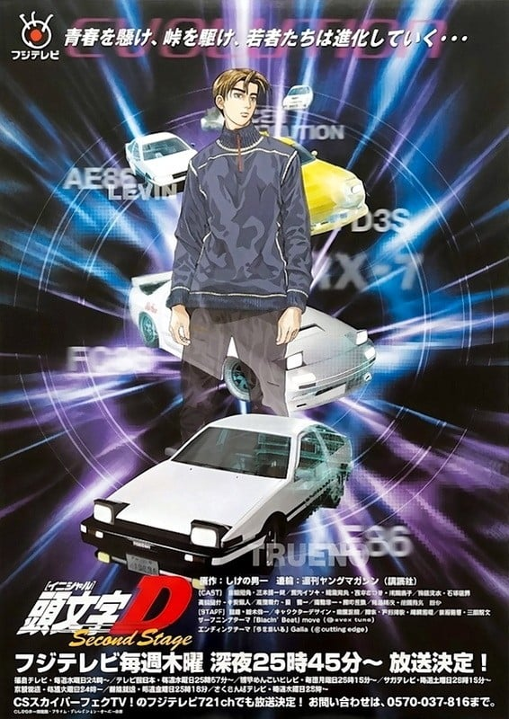
7.5「头文字D Second Stage」（1999）是一部TV，由政木伸一执导，类型包括热血、运动，评分7.5，在本站出现在3份片单中，例如高分热血动漫推荐、高分恋爱动漫推荐、漫画改编动漫推荐。页面只做片单对照，不提供播放。《头文字D》的第二部着重突出拓海的成长，当然不乏激烈的挑战。最经典的要数赤诚和依吕波山路两位老大的比拼。年轻的拓海在爱情上触了礁，在输给帝王车队的lanEvo 3后，拓海遇到了人生的挫折，对自己和AE86产生了怀疑，AE86真的有足够的实力。
#443横滨购物纪行
 7.5
7.5「横滨购物纪行」（1998）是一部OVA/WEB，由安濃高志执导，类型包括治愈、科幻、日常，评分7.5，在本站出现在5份片单中，例如高分OVA与WEB动画、高分治愈系动漫推荐、高分科幻动漫推荐。页面只做片单对照，不提供播放。第一部OVA由株式会社亚细亚堂制作，由安浓高志导演，1998年5月及12月以VHS和镭射影碟形式发售。剧情选择性地讲述单行本一至三册，包括阿尔法与菜心的邂逅，以及阿尔法遭到雷击并被医生治愈的事情。后来本OVA又以DVD形式重新推出。 在大海。
#444福星小子 第二季
 7.5
7.5「福星小子 第二季」（2024）是一部TV，由髙橋秀弥・木村泰大执导，类型包括恋爱、搞笑、日常，评分7.5，在本站出现在5份片单中，例如高分恋爱动漫推荐、高分治愈系动漫推荐、高分校园动漫推荐。页面只做片单对照，不提供播放。福星小子 第二季。2024。恋爱、搞笑、日常。
#445蓝色巨星
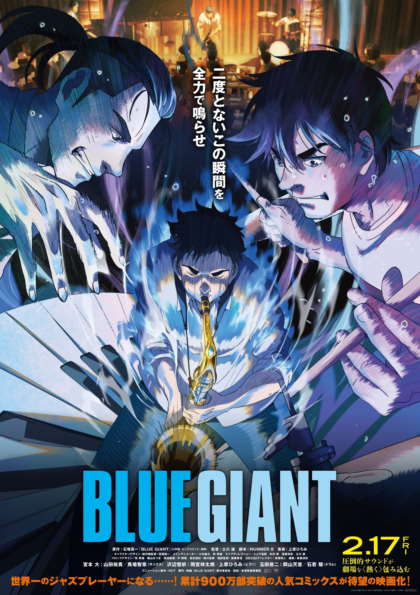
7.5「蓝色巨星」（2023）是一部剧场版，由立川譲执导，制作NUT，类型包括音乐、热血，评分7.5，在本站出现在4份片单中，例如高分动画剧场版推荐、高分热血动漫推荐、漫画改编动漫推荐。页面只做片单对照，不提供播放。「オレは世界一のジャズプレーヤーになる。」 ジャズに魅了され、テナーサックスを始めた仙台の高校生・宮本大（ミヤモトダイ）。 雨の日も風の日も、毎日たったひとりで何年も、河原でテナーサックスを吹き続けてきた。 卒業を機にジャズのため、上京。高。
#446RAINBOW 少年犯之七人
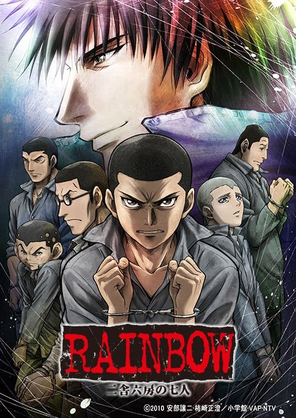
7.5「RAINBOW 少年犯之七人」（2010）是一部TV，由神志那弘志执导，制作MADHOUSE，类型包括热血，评分7.5，在本站出现在2份片单中，例如高分热血动漫推荐、漫画改编动漫推荐。页面只做片单对照，不提供播放。昭和30年（1955年），6个16岁的少年犯因为不同的罪行而进入了湘南特别少年院的二舍六房（206室），本来就对生活感到黑暗无望的他们在入院之初便被狱医借故侮辱，使他们内心更痛苦。幸好的是206室有一位年长的先到者樱木六郎太，被少年们称为“。
#447同级生
 7.5
7.5「同级生」（2016）是一部剧场版，由中村章子执导，制作A-1 Pictures，类型包括校园、恋爱、治愈，评分7.5，在本站出现在6份片单中，例如高分动画剧场版推荐、高分恋爱动漫推荐、高分治愈系动漫推荐。页面只做片单对照，不提供播放。高中入学考试全科满分的秀才佐条利人，在女孩子中很有人气的乐队成员草壁光，大概是没有交集的两个男孩子。“类型不同”的他们以合唱节的练习为契机开始有了交集。放学后的教室，草壁教佐条唱歌，两人的心随着歌唱相互回响，在偶然的瞬间迸发出了爱情。为人轻。
#448超超超超超喜欢你的100个女朋友 第三季
 7.5
7.5「超超超超超喜欢你的100个女朋友 第三季」（2026）是一部TV，由佐藤光执导，类型包括恋爱、搞笑、校园，评分7.5，在本站出现在6份片单中，例如2026年夏季新番推荐、2026年新番总表、高分恋爱动漫推荐。页面只做片单对照，不提供播放。中学で失恋100回を達成した愛城恋太郎は、高校でこそ彼女を！と願い訪れた神社で、現れた恋の神様から「高校で出会う運命の人は100人いる」と告げられる。 しかし神様いわく、運命の人と出会った人間は、その相手と愛し合って幸せになれなければ死んで。
#449甜甜私房猫
 7.5
7.5「甜甜私房猫」（2008）是一部TV，类型包括治愈、日常、搞笑，评分7.5，在本站出现在3份片单中，例如高分治愈系动漫推荐、必看搞笑动漫、漫画改编动漫推荐。页面只做片单对照，不提供播放。初次散步就迷路的虎斑条纹小猫“chi”，被亲切的山田捡了回去，不过山田家住的却是禁止养宠物的公寓。由于无法找到新的饲主，山田一家只能偷偷地养起了它。小猫是如此淘气、如此容易让他们心惊胆战，却又是如此可爱，可爱到让人忘了一切，只剩下孩子一样单。
#450龙珠改 魔人布欧篇
 7.5
7.5「龙珠改 魔人布欧篇」（2014）是一部TV，类型包括热血、战斗、奇幻，评分7.5，在本站出现在3份片单中，例如高分热血动漫推荐、高分奇幻冒险动漫、漫画改编动漫推荐。页面只做片单对照，不提供播放。龙珠改 魔人布欧篇。2014。热血、战斗、奇幻。
#451哆啦A梦：大雄的奇幻大冒险
 7.5
7.5「哆啦A梦：大雄的奇幻大冒险」（2007）是一部剧场版，由寺本幸代执导，类型包括奇幻、喜剧、冒险，评分7.5，在本站出现在6份片单中，例如高分动画剧场版推荐、高分科幻动漫推荐、高分奇幻冒险动漫。页面只做片单对照，不提供播放。‘大雄的新魔界大冒险~7人的魔法使者~’（のび太の新魔界大冒険 ～7人の魔法使い～）是2007年3月10日公映的多啦A梦电影作品第27部作品（新系列的第2作）。作品改编自1984年3月17日公映的‘大雄的魔界大冒险’。票房收入35亿4000。
#452向阳素描 特别篇
 7.5
7.5「向阳素描 特别篇」（2007）是一部OVA/WEB，由チーフディレクター：上坪亮樹；監督：飯村正之(1)执导，制作SHAFT，类型包括治愈、百合、日常，评分7.5，在本站出现在5份片单中，例如高分OVA与WEB动画、高分治愈系动漫推荐、高分校园动漫推荐。页面只做片单对照，不提供播放。また特別編が2007年8月に開催されたTBSアニメフェスタ2007で前編が先行公開され、2007年10月18日にBS-iで前編・後編の2話が放送された。
#453昭和元禄落语心中 OAD
 7.5
7.5「昭和元禄落语心中 OAD」（2015）是一部OVA/WEB，由畠山守[小俣真一]执导，制作スタジオディーン，类型包括治愈、历史、剧情，评分7.5，在本站出现在3份片单中，例如高分OVA与WEB动画、高分治愈系动漫推荐、漫画改编动漫推荐。页面只做片单对照，不提供播放。刑務所を満期出所した元チンピラの与太郎は、1年前に慰問で訪れた落語家の八代目有楽亭八雲演じる「死神」を聞いて感動し、出所後そのまま八雲が出演している寄席に押しかけて弟子入りを申し出る。内弟子をこれまで取っていなかった八雲だが、彼なりの考えで。
#454机器人之梦
 7.5
7.5「机器人之梦」（2023）是一部剧场版，由Pablo Berger执导，类型包括科幻、治愈、剧情，评分7.5，在本站出现在6份片单中，例如高分美漫与动画电影、高分动画剧场版推荐、高分治愈系动漫推荐。页面只做片单对照，不提供播放。主人翁Dog厌倦了孤单一人的生活，决定购买组装机械人Robot「做朋友」。一狗一机械人一拍即合，共同走遍纽约市大街小巷，在展开一段段历险的同时亦与对方共同创造了各种美好的回忆。然而，正当友谊之花盛开之际，Robot在一次不幸的意外中被困于海。
#455逮捕令 OVA
 7.5
7.5「逮捕令 OVA」（1994）是一部OVA/WEB，由古橋一浩执导，类型包括搞笑、日常、热血，评分7.5，在本站出现在6份片单中，例如高分OVA与WEB动画、高分热血动漫推荐、高分治愈系动漫推荐。页面只做片单对照，不提供播放。藤島康介原作の人気ポリスアクションをＯＶ化。監督は初期ＯＶＡシリーズの全ての作品で監督を務めた古橋一浩が手がける。墨東署に配属になった夏実は初出勤早々に大遅刻してしまう。急ぐために裏道を走っていると、警邏中だった美幸に捕まり、違反キップを切。
#456嘟嘟猫观察日记
 7.5
7.5「嘟嘟猫观察日记」（2012）是一部TV，类型包括治愈、搞笑、日常，评分7.5，在本站出现在3份片单中，例如高分治愈系动漫推荐、必看搞笑动漫、漫画改编动漫推荐。页面只做片单对照，不提供播放。原作是《まんがライフ》（竹書房）上连载的四格漫画，以主人公圆嘟嘟的猫・佐藤ポヨ为中心，讲述饲主佐藤萌和周围人的故事。
#457鲁邦三世 血烟的石川五右卫门
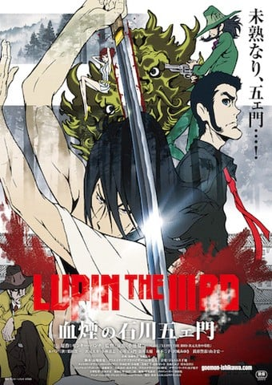
7.5「鲁邦三世 血烟的石川五右卫门」（2017）是一部剧场版，由小池健执导，类型包括战斗，评分7.5，在本站出现在4份片单中，例如高分动画剧场版推荐、高分热血动漫推荐、漫画改编动漫推荐。页面只做片单对照，不提供播放。伊豆沖を進む賭博船。若き用心棒・石川五ェ門は敵対する組から襲撃を受けた鉄竜会の組長を救うが直後に大爆発が起こり船は大破してしまう。船を炎上させたのは"バミューダの亡霊"と呼ばれる大男・ホーク。その混乱の中賭博船の金をまんまと頂戴したルパンた。
#458机动战士高达 THE ORIGIN 前夜 红色彗星
「机动战士高达 THE ORIGIN 前夜 红色彗星」（2019）是一部TV，类型包括机战、科幻、战争，评分7.5，在本站出现在3份片单中，例如高分热血动漫推荐、高分科幻动漫推荐、漫画改编动漫推荐。页面只做片单对照，不提供播放。“赤い彗星”と呼ばれるジオン公国軍のエースパイロット『シャア・アズナブル』と、彼の妹『セイラ・マス』の運命を決定づけた悲劇の始まりと過去〜２人の兄妹の流転の物語〜を背景に、サイド３の実権を掌握しジオン公国を統率するザビ家、ランバ・ラルや黒い。
#459怪医黑杰克
 7.5
7.5「怪医黑杰克」（2004）是一部TV，由手塚眞执导，类型包括奇幻、科幻、治愈，评分7.5，在本站出现在4份片单中，例如高分治愈系动漫推荐、高分科幻动漫推荐、高分奇幻冒险动漫。页面只做片单对照，不提供播放。《怪医黑杰克》于1992年首次改编为OVA，共十集。1996年播映剧场版，2004年起改编为电视动画，2006年再度播映剧场版。也多次拍成电视剧。
#460阿拉蕾
 7.5
7.5「阿拉蕾」（1997）是一部TV，类型包括搞笑、科幻，评分7.5，在本站出现在3份片单中，例如高分科幻动漫推荐、必看搞笑动漫、漫画改编动漫推荐。页面只做片单对照，不提供播放。1997年重制版 作者在作品虚构“企鹅村”的远离城市的偏僻村庄。村中有一名自以为是天才的则卷千兵卫博士。他想制造一个和真人一样的机器人，所以制造了则卷阿拉蕾。一系列荒诞不稽的故事从此展开。
#461灌篮高手 全国制霸吧！樱木花道
 7.5
7.5「灌篮高手 全国制霸吧！樱木花道」（1994）是一部剧场版，由有迫俊彦执导，类型包括热血、运动、搞笑，评分7.5，在本站出现在6份片单中，例如高分动画剧场版推荐、高分热血动漫推荐、高分校园动漫推荐。页面只做片单对照，不提供播放。县预选赛第4回合，湘北vs津久武，对方是赤木国中的队友。
#462鲁邦三世 第一期
 7.5
7.5「鲁邦三世 第一期」（1971）是一部TV，类型包括搞笑、冒险、战斗，评分7.5，在本站出现在4份片单中，例如高分热血动漫推荐、高分奇幻冒险动漫、必看搞笑动漫。页面只做片单对照，不提供播放。鲁邦三世 (TV第1期)是动画鲁邦三世的作品里面，作为连续电视系列1971年10月24日-1972年3月26日播出的系列。
#463忍者乱太郎 1期
 7.5
7.5「忍者乱太郎 1期」（1993）是一部TV，类型包括搞笑，评分7.5，在本站出现在2份片单中，例如必看搞笑动漫、漫画改编动漫推荐。页面只做片单对照，不提供播放。時は戦国乱世。先祖代々ヒラ忍者の血筋である乱太郎は、父の勧めで忍術学園に入学し、一流のエリート忍者になるべく勉強する。しかし、友達のしんべヱ・きり丸と共に、常に成績は落第点。追試、補習授業は当たり前。頑張っても空回りする3人組に先生達も振り。
#464银河铁道999 剧场版
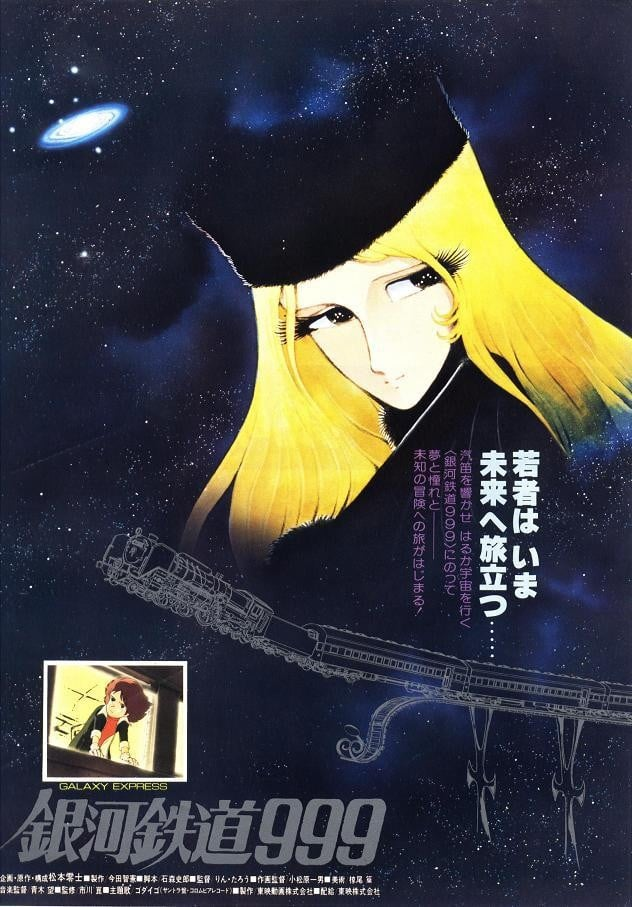
7.5「银河铁道999 剧场版」（1979）是一部剧场版，由りんたろう执导，类型包括科幻，评分7.5，在本站出现在4份片单中，例如高分动画剧场版推荐、高分科幻动漫推荐、漫画改编动漫推荐。页面只做片单对照，不提供播放。松本零士の同名コミックを原作とする名作SFアニメ「銀河鉄道999」の劇場版第1作。原作コミックの「アンドロメダ編」を基に、テレビ版とは異なるキャラクターデザインで描く。身体を機械に変えることで人間が永遠の命を手に入れられるようになった未来。
#465奔向地球
「奔向地球」（2007）是一部TV，由ヤマサキオサム（山崎理）执导，制作南町奉行所，类型包括科幻、超能力，评分7.5，在本站出现在2份片单中，例如高分科幻动漫推荐、漫画改编动漫推荐。页面只做片单对照，不提供播放。地球因为长期的破坏而迈入衰亡，人类只得移民至其他星球。为了避免再次犯下环境污染的错误，人类发明特殊统治体制(S.D.)，并以机械电脑“伟大母机”来管理与控制人类的思想。 特殊统治体制制定儿童14岁时必须接受“成人检查”，借由检查来洗去儿童的。
#466金色的卡修
 7.5
7.5「金色的卡修」（2003）是一部TV，制作東映アニメーション，类型包括搞笑、热血、战斗，评分7.5，在本站出现在4份片单中，例如高分热血动漫推荐、高分奇幻冒险动漫、必看搞笑动漫。页面只做片单对照，不提供播放。绝顶聪明而备感孤独的天才中学生高嶺清人，在他身边突然出现的魔法少年賈修…… 与手持魔法红书念出咒语的清人并肩作战，和同样被送到人间，一共100位魔界小孩，竞争角逐魔界之王的宝座，在奋战的过程中，启发賈修成为慈悲的王者的决心，个性真诚纯洁的賈。
#467王者天下 第四季
「王者天下 第四季」（2022）是一部TV，由今泉賢一执导，制作ぴえろ／スタジオ サインポスト，类型包括历史、战争、热血，评分7.5，在本站出现在2份片单中，例如高分热血动漫推荐、漫画改编动漫推荐。页面只做片单对照，不提供播放。紀元前、中国西方の秦国（しんこく）。 今は亡き親友と夢見た「天下の大将軍」を目指す下僕の少年・信（しん）は、王都で起きたクーデターに巻き込まれ、秦王・嬴政（えいせい）と運 命的な出会いを果たす。 時は流れ、戦場に身を置く信は、同世代の将であ。
#468航海王：黄金梅利号之章 另一位伙伴的故事
 7.5
7.5「航海王：黄金梅利号之章 另一位伙伴的故事」（2013）是一部TV，由所勝美执导，类型包括热血、战斗、冒险，评分7.5，在本站出现在3份片单中，例如高分热血动漫推荐、高分奇幻冒险动漫、漫画改编动漫推荐。页面只做片单对照，不提供播放。该2小时特别节目为《奈美之章》、《路飞之章》以原著的著名篇章所重新绘制的版本接续制作。为“周六PREMIUM”时段播出的《ONE PIECE》电视特别篇第三弹。 至于本作挑选的原作著名篇章为“水之七岛”、“司法岛篇”重新绘制成这套特别篇，以。
#469王者天下 第六季
「王者天下 第六季」（2025）是一部TV，由今泉賢一执导，制作ぴえろ／スタジオ サインポスト，类型包括战争、历史、热血，评分7.5，在本站出现在3份片单中，例如2025年秋季新番推荐、高分热血动漫推荐、漫画改编动漫推荐。页面只做片单对照，不提供播放。紀元前、中国西方の秦国しんこく。 「天下の大将軍」を目指す元・下僕の信しんは、 誰も成し遂げたことのない「中華統一」による乱世の終結を願う秦王・嬴政しんおう・えいせいと志を同じくし、 秦軍所属の「飛信隊ひしんたい」隊長として戦場に身を置いて。
#470火凤燎原 第二季
 7.5
7.5「火凤燎原 第二季」（2025）是一部OVA/WEB，制作灵樨文化，类型包括历史、剧情、战斗，评分7.5，在本站出现在4份片单中，例如高分国漫推荐、高分OVA与WEB动画、高分热血动漫推荐。页面只做片单对照，不提供播放。董卓火烧洛阳后，关东联军与西凉军于虎牢关狭路相逢。关羽、张飞协助大哥三英战吕布，刘备终于一战成名。吕布暗中要挟残兵协助自己暗杀董卓。长安城内，残兵和吕布联手，对抗以李儒为首的西凉众将。双方斗智斗勇，李儒最终和董卓一同殒命。长安城外，牛辅得水。
#471棒球大联盟 第六季
「棒球大联盟 第六季」（2010）是一部TV，由福島利規执导，类型包括热血、运动，评分7.5，在本站出现在2份片单中，例如高分热血动漫推荐、漫画改编动漫推荐。页面只做片单对照，不提供播放。满田拓也所著的棒球漫画「MAJOR(棒球大联盟)」，从1994年开始在「周刊少年Sunday」上连载至今，已经出版了74卷单行本，是「周刊少年 Sunday」里单行本卷数最多的长篇漫画。作品讲述了主人公・茂野吾郎，历经少棒联盟与高中棒球时代。
#472蝙蝠侠 (1992)
 7.5
7.5「蝙蝠侠 (1992)」（1992）是一部TV，由Kevin Altieri执导，类型包括科幻、剧情、喜剧，评分7.5，在本站出现在4份片单中，例如高分美漫与动画电影、高分科幻动漫推荐、必看搞笑动漫。页面只做片单对照，不提供播放。黑暗笼罩的哥谭镇，暗夜里总在上演一幕幕追逐。布鲁斯·韦恩白天是社交宠儿、巨富青年，夜晚则是行走在夜间的蝙蝠侠，他利用自己的财富、智慧和高科技装备，致力于打击哥谭镇的犯罪。他的对手有珠宝大盗、美艳的猫女，玩世不恭、搞出各种致命恶作剧的小丑，失。
#473新我们这一家
 7.5
7.5「新我们这一家」（2015）是一部TV，制作シンエイ動画，类型包括搞笑、日常，评分7.5，在本站出现在3份片单中，例如高分治愈系动漫推荐、必看搞笑动漫、漫画改编动漫推荐。页面只做片单对照，不提供播放。母、父、みかん、ユズヒコ、いわゆるふつうの4人家族「タチバナ家」。この家族の日常を中心に、学校生活、母の交友関係などなど、人々の暮らしがいきいきと描かれています。「そうそう！」と共感できるエピソードもあれば、「えっ！」と驚く発見もある。時に。
#474我出生的那一天
 7.5
7.5「我出生的那一天」（2002）是一部剧场版，类型包括治愈、科幻，评分7.5，在本站出现在5份片单中，例如高分动画剧场版推荐、高分治愈系动漫推荐、高分科幻动漫推荐。页面只做片单对照，不提供播放。炎炎夏日，大雄（小原乃梨子 配音）一蹦一跳行走在小路上。今天是8月7日，大雄的生日，他满心期待在这一天能得到所有人的称赞以及生日礼物。可是事与愿违，大雄遭到了爸爸妈妈的一通臭骂。此时此刻，他的心情就如同窗外的雷雨天，简直糟透了。回到房间后，。
#475宇宙兄弟#0
「宇宙兄弟#0」（2014）是一部剧场版，由渡辺歩执导，类型包括科幻，评分7.5，在本站出现在4份片单中，例如高分动画剧场版推荐、高分科幻动漫推荐、漫画改编动漫推荐。页面只做片单对照，不提供播放。“这是约定，我们两个人要一起成为宇航员。”年幼的誓言，成为宇航员的梦想。 哥哥·南波六太和弟弟·日日人，为了能够两个人一起站在月面上而克服了无数的苦难，一步步地接近那遥远的梦想。两兄弟的梦想的“原点”是——。 弟弟·日日人，被选为憧憬已久的。
#476哆啦A梦 日视版
 7.5
7.5「哆啦A梦 日视版」（1973）是一部TV，由岡迫和之执导，制作日本テレビ動画，类型包括科幻、日常、搞笑，评分7.5，在本站出现在4份片单中，例如高分治愈系动漫推荐、高分科幻动漫推荐、必看搞笑动漫。页面只做片单对照，不提供播放。《哆啦A梦》在朝日电视台热播了三十年，鲜少有人知道，《哆啦A梦》最初是在日本电视台播出的。不过，日本电视台版由于只播出半年，再加上后续几乎没有重播，因此被称为“旧哆啦”、“日本电视台版哆啦”或“虚幻的哆啦A梦”。 日本电视台版的《哆啦A梦》。
#477城市猎人 第三季
 7.5
7.5「城市猎人 第三季」（1989）是一部TV，类型包括搞笑、热血、战斗，评分7.5，在本站出现在3份片单中，例如高分热血动漫推荐、必看搞笑动漫、漫画改编动漫推荐。页面只做片单对照，不提供播放。シティーハンターと呼ばれる冴羽 獠は、大都会新宿を拠点とする凄腕のスイーパー（始末屋）。普段は女好きで無節操、だが受けた依頼は必ず成し遂げるという獠のもとに、様々な美女から依頼が舞いこんでくる。獠は愛用の銃であるコルトパイソン357マグナム。
#478查理布朗的圣诞节
 7.5
7.5「查理布朗的圣诞节」（1965）是一部TV，类型包括治愈，评分7.5，在本站出现在3份片单中，例如高分美漫与动画电影、高分治愈系动漫推荐、漫画改编动漫推荐。页面只做片单对照，不提供播放。When Charlie Brown complains about the overwhelming materialism that he sees amongst everyone during the Christmas seaso。
#479剧场版 明日之丈2
「剧场版 明日之丈2」（1981）是一部剧场版，由出﨑統执导，类型包括热血、运动、战斗，评分7.5，在本站出现在4份片单中，例如高分动画剧场版推荐、高分热血动漫推荐、漫画改编动漫推荐。页面只做片单对照，不提供播放。前作映画の続編で、前半はテレビシリーズ『あしたのジョー2』の再編集。終盤は放映中だったテレビシリーズに先行して制作・公開され、のちにテレビシリーズに流用されている。また、声優も一部変更されている。 - 宿命のライバル・力石徹の死から1年後。
#480第一神拳 冠军之路
「第一神拳 冠军之路」（2003）是一部TV，由西村聡执导，类型包括热血、运动、战斗，评分7.5，在本站出现在2份片单中，例如高分热血动漫推荐、漫画改编动漫推荐。页面只做片单对照，不提供播放。壮絶なる戦いの末、千堂を破りついに幕之内一歩は日本フェザー級チャンピオンの座を手に入れた。そして一歩は「挑戦者」から「チャンピオン」として、初防衛戦の相手が決まる。 その挑戦者の名は真田一機。二階級制覇を目指しジュニア・フェザー級のタイトル。
#481蜘蛛侠 第五季
「蜘蛛侠 第五季」（1997）是一部TV，类型包括战斗、科幻、超能力，评分7.5，在本站出现在4份片单中，例如高分美漫与动画电影、高分热血动漫推荐、高分科幻动漫推荐。页面只做片单对照，不提供播放。蜘蛛侠 第五季。1997。战斗、科幻、超能力。
#482第一神拳 间柴vs木村 死刑执行
 7.5
7.5「第一神拳 间柴vs木村 死刑执行」（2003）是一部OVA/WEB，由難波日登志执导，类型包括热血，评分7.5，在本站出现在3份片单中，例如高分OVA与WEB动画、高分热血动漫推荐、漫画改编动漫推荐。页面只做片单对照，不提供播放。2003年9月5日発売のOVA。異色作品で木村役の藤原啓治がキャストロールの先頭で紹介されている。
#483住宅区友夫
 7.5
7.5「住宅区友夫」（2013）是一部TV，类型包括治愈、日常、搞笑，评分7.5，在本站出现在3份片单中，例如高分治愈系动漫推荐、必看搞笑动漫、漫画改编动漫推荐。页面只做片单对照，不提供播放。居住在枝岛小区29号楼的小学四年级生木下友夫，平时与做兼职的母亲和正在读初中的姐姐一起生活，他最喜欢的爸爸则独自在外地工作。 家庭情况中流，在班里的人气也一般般，运动和学习也不太理想。尽管如此，友夫还是健康快乐地过着每一天。 作品主要描述友。
#484极速方程式
「极速方程式」（2005）是一部TV，由三沢伸执导，制作スタジオコメット，类型包括热血、运动，评分7.5，在本站出现在2份片单中，例如高分热血动漫推荐、漫画改编动漫推荐。页面只做片单对照，不提供播放。小学生平胜平太的父亲平茂雄知道儿子对赛车有兴趣，于是把别人不要的组件装砌了一辆小型赛车送给儿子。此后胜平太开始参与小型赛车活动，与好朋友铃木茂波及安藤信组成了capeta车队。他们一直受资金不足掣肘，然而胜平太在赛车场上的表现却令人注目。
#485小林家的龙女仆
 7.4
7.4「小林家的龙女仆」（2017）是一部TV，由武本康弘执导，制作京都动画，类型包括日常、搞笑、百合，评分7.4，在本站出现在5份片单中，例如高分治愈系动漫推荐、必看搞笑动漫、高分女性向动漫。页面只做片单对照，不提供播放。在单身的辛苦OL小林身边突然出现的女仆装束的美少女托尔。 长着角和尾巴的她的身姿正是所谓的龙娘。 在醉酒的小林邀请下说要到家里去的托尔，鬼使神差地开始以小林家女仆的身份工作……！？ “女仆”+“龙”=“女仆龙”有着笨手笨脚的可爱之处！ 龙娘。
#486【我推的孩子】
 7.4
7.4「【我推的孩子】」（2023）是一部TV，由平牧大輔执导，类型包括恋爱、悬疑、转生，评分7.4，在本站出现在5份片单中，例如高分恋爱动漫推荐、高分异世界动漫推荐、高分悬疑推理动漫。页面只做片单对照，不提供播放。“在演艺圈里，谎言就是武器。 ” 在小城市工作的妇产科医生・五郎，有一天他所推的偶像“B小町”出现在了他的面前。“B小町”有着一个禁忌的秘密。 如此这般的两人实现了最糟糕的相遇，从此命运的齿轮开始转动——。
#487暗杀教室
 7.4
7.4「暗杀教室」（2015）是一部TV，由岸誠二执导，类型包括搞笑、校园、战斗，评分7.4，在本站出现在5份片单中，例如高分热血动漫推荐、高分治愈系动漫推荐、高分校园动漫推荐。页面只做片单对照，不提供播放。故事讲述了将月球炸掉了七成并扬言要炸掉地球的“杀老师”，赴任椚丘中学3年E班的教师。而以日本为首的各国首脑在得知这一消息后决定将暗杀他的重任交付给3年E班的学生们，寄望他们能在一年之内把老师除掉，成功得手后的报酬为一百亿日元。于是，各路同学。
#488彻夜之歌
 7.4
7.4「彻夜之歌」（2022）是一部TV，由板村智幸执导，类型包括恋爱、奇幻、日常，评分7.4，在本站出现在5份片单中，例如高分恋爱动漫推荐、高分治愈系动漫推荐、高分奇幻冒险动漫。页面只做片单对照，不提供播放。“我第一次在夜里，没跟任何人说就出来了。” 讨厌女生的初中二年级学生夜守光，现在不知为何不去上学了。 而且，每天晚上都睡不着觉。 有一天，小光第一次在夜里没告诉任何人就出去了。 夜风怡人，自由自在，与白天完全不同。小光发现夜晚才是他的归宿。
#489血界战线
 7.4
7.4「血界战线」（2015）是一部TV，由松本理恵执导，类型包括战斗、奇幻、热血，评分7.4，在本站出现在4份片单中，例如高分热血动漫推荐、高分奇幻冒险动漫、必看搞笑动漫。页面只做片单对照，不提供播放。从古以来，在暗夜的世界里有一种种族他们被称为“血界之族”这个种族拥有超乎于常人的力量！ 因此对人类的生存造成了威胁而对这一种族也出现了为了保护人类而存在的猎人们，他们通常被称为“獠牙狩猎者”…… 现时的纽约变成了歪曲的异界与人类的交界处，笼。
#490我独自升级 第二季 -起于暗影-
 7.4
7.4「我独自升级 第二季 -起于暗影-」（2025）是一部TV，由中重俊祐执导，类型包括战斗、奇幻、热血，评分7.4，在本站出现在4份片单中，例如高分热血动漫推荐、高分异世界动漫推荐、高分奇幻冒险动漫。页面只做片单对照，不提供播放。自世界各地出现连接异次元与现实世界的通路「传送门」，已过了十多年。觉醒了特殊能力，被称为「猎人」的人们，与存在于传送门里地下城内的魔兽不断厮杀。猎人的能力在觉醒后就不再有成长空间，其等级也不会再有变化。然而，被称作是人类最弱兵器的程肖宇，在。
#491NEW GAME!
 7.4
7.4「NEW GAME!」（2016）是一部TV，由藤原佳幸执导，类型包括百合、日常、治愈，评分7.4，在本站出现在4份片单中，例如高分治愈系动漫推荐、必看搞笑动漫、高分女性向动漫。页面只做片单对照，不提供播放。高中毕业后，进入了曾制作自己自幼便入迷的游戏的制作公司“Eagle Jump”的青叶，在那里与担任这款游戏角色设计师的八神光相遇了。 开始在憧憬的人手下工作的青叶，虽然对于第一次的工作感到困惑，但在以光为首的充满个性的前辈社员的帮助下一点一。
#492剧场版 鬼灭之刃 无限城篇 第一章 猗窝座再袭
 7.4
7.4「剧场版 鬼灭之刃 无限城篇 第一章 猗窝座再袭」（2025）是一部剧场版，由外崎春雄执导，制作ufotable，类型包括战斗、热血、奇幻，评分7.4，在本站出现在6份片单中，例如2025年夏季新番推荐、高分热血动漫推荐、高分奇幻冒险动漫。页面只做片单对照，不提供播放。灶门炭治郎为了让成为鬼的妹妹祢豆子变回人类，加入狩猎鬼的组织「鬼杀队」。 入队之后，他与伙伴我妻善逸以及嘴平伊之助跟各式各样的鬼战斗，在成长的同时加深友情与羁绊。 然后，炭治郎与「鬼杀队」最高阶的剑士「柱」一同战斗，在《无限列车》跟炎柱炼狱。
#493超超超超超喜欢你的100个女朋友 第二季
 7.4
7.4「超超超超超喜欢你的100个女朋友 第二季」（2025）是一部TV，由佐藤光执导，类型包括恋爱、搞笑、校园，评分7.4，在本站出现在5份片单中，例如高分恋爱动漫推荐、高分治愈系动漫推荐、高分校园动漫推荐。页面只做片单对照，不提供播放。爱城恋太郎在初中的失恋次数达到了100次的大关，他抱着高中一定要交到女朋友的心愿造访神社。出现在那里的恋爱之神告诉他「你会在高中遇见的真命天女有100人」。 然而神表示，和命中注定的人相遇的人，如果不和那个人彼此相爱并获得幸福的话就会死掉…。
#494旋风管家
 7.4
7.4「旋风管家」（2007）是一部TV，由川口敬一郎执导，制作SynergySP，类型包括搞笑、喜剧、日常，评分7.4，在本站出现在4份片单中，例如高分恋爱动漫推荐、高分治愈系动漫推荐、必看搞笑动漫。页面只做片单对照，不提供播放。故事讲述了公立高中一年级生的绫崎飒，因其父母性格懒散，使得他不得不每天都打工养家。圣诞夜，回到家中的绫崎飒发现父母留给他一张白条，原来，父母欠下了一亿五千万日圆债务后逃之夭夭。为了还债甚至还企图贩卖绫崎飒的器官。被黑道追杀走投无路的绫崎飒，。
#495濑户的花嫁
 7.4
7.4「濑户的花嫁」（2007）是一部TV，由岸誠二执导，类型包括搞笑、恋爱、校园，评分7.4，在本站出现在5份片单中，例如高分恋爱动漫推荐、高分治愈系动漫推荐、高分校园动漫推荐。页面只做片单对照，不提供播放。满潮永澄是个就读于埼玉县某中学的平凡中学生。某个暑假他在海边渡假时突然溺水，意识模糊之际为美丽的人鱼濑户灿小姐所救。但是，人鱼世界中有一条规矩：被人类得见人鱼真身的话，那双方必须要有一方选择死亡。而能回避这条铁律的最后手段就是也变成人鱼家族。
#496妖精的尾巴
 7.4
7.4「妖精的尾巴」（2009）是一部TV，由石平信司执导，制作A-1 Pictures，类型包括热血、战斗、奇幻，评分7.4，在本站出现在4份片单中，例如高分热血动漫推荐、高分奇幻冒险动漫、必看搞笑动漫。页面只做片单对照，不提供播放。故事叙述在一个充满魔法的世界－“亚斯蓝德（Earth land）”中，位于菲欧烈王国的一个众多厉害魔导士云集的魔导士公会“妖精尾巴”。露西·哈特菲利亚一直希望能加入，成为其中的成员。在纳兹·多拉格尼尔的引导下，露西终于得尝所愿，并结识了许多。
#497天才麻将少女 全国篇
「天才麻将少女 全国篇」（2014）是一部TV，由小野学执导，类型包括百合、校园、热血，评分7.4，在本站出现在4份片单中，例如高分热血动漫推荐、高分校园动漫推荐、高分女性向动漫。页面只做片单对照，不提供播放。宮永咲は高校一年生。 奇跡的な麻雀を打ってのける（毎局プラスマイスゼロで和了ることができる）美少女。原村和の天才的な打ち方に感化され麻雀部に入部することを決意する。二人の天才美少女が全国大会の頂点を目指す。 熾烈な闘いの末、見事県予選を勝ち。
#498出包王女Darkness 第二季
 7.4
7.4「出包王女Darkness 第二季」（2015）是一部TV，由大槻敦史执导，类型包括搞笑、校园、恋爱，评分7.4，在本站出现在5份片单中，例如高分恋爱动漫推荐、高分治愈系动漫推荐、高分校园动漫推荐。页面只做片单对照，不提供播放。出包王女Darkness 第二季。2015。搞笑、校园、恋爱。
#499石纪元 新世界 第2部分
 7.4
7.4「石纪元 新世界 第2部分」（2023）是一部TV，由松下周平执导，类型包括科幻、热血、冒险，评分7.4，在本站出现在4份片单中，例如高分热血动漫推荐、高分科幻动漫推荐、高分奇幻冒险动漫。页面只做片单对照，不提供播放。全人類が、謎の現象により一瞬で石化して数千年――。 超人的な頭脳を持つ、根っからの科学少年・千空が目覚めた。 文明が滅んだ石の世界(ストーンワールド)を前に、千空は、科学の力で世界を取り戻すことを決意。新たな仲間を集め『科学王国』を作りあげ。
#500大剑
 7.4
7.4「大剑」（2007）是一部TV，由田中洋之执导，制作MADHOUSE，类型包括奇幻、百合、战斗，评分7.4，在本站出现在4份片单中，例如高分热血动漫推荐、高分奇幻冒险动漫、高分女性向动漫。页面只做片单对照，不提供播放。自古妖魔侵入人類的世界，化作人形並以啃食人類的內臟為生，對妖魔束手無策的人們唯有求助於有著半人半妖的身分，帶著巨劍且以斬殺妖魔為業的銀眼戰士，畏懼並害怕她們的人們將其稱為Claymore（大劍、銀眼魔女）。
#501噬魂师
 7.4
7.4「噬魂师」（2008）是一部TV，由五十嵐卓哉执导，类型包括热血、战斗、奇幻，评分7.4，在本站出现在4份片单中，例如高分热血动漫推荐、高分奇幻冒险动漫、必看搞笑动漫。页面只做片单对照，不提供播放。死神武器职人专门学院，简称“死武专”，学院里的学生分为“工匠”和“武器”，他们的目的是收集“99个偏离人类轨道形成‘鬼神之卵’的灵魂”和“1个魔女的灵魂”，当“武器”吞噬这100个灵魂后就能升级成为死神专用武器 Death Scythe，而。
#502女子落语
 7.4
7.4「女子落语」（2012）是一部TV，由水島努执导，类型包括搞笑、日常、百合，评分7.4，在本站出现在4份片单中，例如高分治愈系动漫推荐、必看搞笑动漫、高分女性向动漫。页面只做片单对照，不提供播放。由久米田康治所著、泰(ヤス)负责作画的漫画作品「女子落」，于今年1月初宣布了动画化的消息。这也是久米田康治继「再见！绝望先生」、「妄想改造人改藏」后第三部被改编成动画的作品，了解久米田康治的人都知道，富有个性的他创作出的作品也都独具特色，这。
#503听着这电波
 7.4
7.4「听着这电波」（2020）是一部TV，由南川達馬执导，类型包括搞笑、日常、治愈，评分7.4，在本站出现在3份片单中，例如高分治愈系动漫推荐、必看搞笑动漫、漫画改编动漫推荐。页面只做片单对照，不提供播放。“唉呀……过了25岁跟男人分手的话好难受啊！” 居住在北海道札幌，在浓汤咖喱店工作的鼓田美奈丽，在酒馆里与刚认识的当地广播局的导播·麻藤兼嗣谈起了自己的失恋经历。 第二天，就在她跟往常一样准备在工作岗位上开始工作时，店内播放的广播传来了美奈。
#504猫的报恩
 7.4
7.4「猫的报恩」（2002）是一部剧场版，由森田宏幸执导，类型包括治愈、奇幻，评分7.4，在本站出现在3份片单中，例如高分治愈系动漫推荐、高分奇幻冒险动漫、漫画改编动漫推荐。页面只做片单对照，不提供播放。内容描述一位平凡善良的高中女生小春，在一次上学途中救了一只猫，意外开启了一趟奇幻冒险经历。小春救的是猫王国的王子，“猫之国度”的猫国王为了报答她，不断送她礼物，并邀请小春到猫王国作客，希望她嫁给猫王子。困惑的小春向“猫事务所”的猫男爵巴隆（。
#505请问您今天要来点兔子吗？？～Dear My Sister～
 7.4
7.4「请问您今天要来点兔子吗？？～Dear My Sister～」（2017）是一部剧场版，由橋本裕之执导，制作production dóA，类型包括百合、日常、治愈，评分7.4，在本站出现在4份片单中，例如高分治愈系动漫推荐、必看搞笑动漫、高分女性向动漫。页面只做片单对照，不提供播放。转学的高中女生保登心爱来到一个充满木㐀房屋与石板路的小镇，寻找寄宿家庭时却迷了路，意外走进咖啡店“Rabbit House”，遇到了娇小的少女智乃、一只安哥拉兔提比，原来“Rabbit House”就是她要找的寄宿家庭。在这里就读的高中规定。
#506彼方的阿斯特拉
 7.4
7.4「彼方的阿斯特拉」（2019）是一部TV，由安藤正臣执导，制作ラルケ，类型包括科幻、悬疑、冒险，评分7.4，在本站出现在6份片单中，例如高分科幻动漫推荐、高分悬疑推理动漫、高分奇幻冒险动漫。页面只做片单对照，不提供播放。在往来宇宙已是司空见惯的近未来，9名少年少女踏上前去行星露营的旅程。他们怀着对宇宙旅行感到激动不已的心情出发，但等待他们的是出乎意料的事态……。
#507三颗星彩色冒险
 7.4
7.4「三颗星彩色冒险」（2018）是一部TV，由河村智之执导，类型包括日常、搞笑、治愈，评分7.4，在本站出现在5份片单中，例如高分治愈系动漫推荐、高分奇幻冒险动漫、必看搞笑动漫。页面只做片单对照，不提供播放。默默坐落于上野的公园的秘密基地。 在那里的是3位小学生少女——。 没错，她们正是守护上野的正义组织“COLORS”！！ 结衣、小幸、琴叶3人今天也为了守护上野的和平， 每日每夜（骗你的，只到傍晚而已）在街上来回奔走！！。
#508酷爱电影的庞波小姐
 7.4
7.4「酷爱电影的庞波小姐」（2021）是一部剧场版，由平尾隆之执导，类型包括治愈、热血、剧情，评分7.4，在本站出现在3份片单中，例如高分热血动漫推荐、高分治愈系动漫推荐、漫画改编动漫推荐。页面只做片单对照，不提供播放。干练的电影制片人·彭波小姐手下担任制作助手的吉恩。完全被电影吸引的他，是个将看过的所有电影都完整记住的电影迷。他虽然也很憧憬拍摄电影的工作，却认为自己无法做到而每天过着卑微的生活。但他被彭波小姐委派制作15秒的CM，从而体会到埋头于制作电影。
#509青之芦苇
 7.4
7.4「青之芦苇」（2022）是一部TV，由さとう陽执导，制作Production I.G，类型包括运动、热血、恋爱，评分7.4，在本站出现在4份片单中，例如高分热血动漫推荐、高分恋爱动漫推荐、高分治愈系动漫推荐。页面只做片单对照，不提供播放。「我会带你，走向世界。」 住在爱媛县的初中生·青井苇人是一家实力弱小的足球部的王牌。在输掉了初中最后的大赛的那一天，苇人为了发泄心中的不甘而来到海边跑步，在那里他遇见了一个观看了他比赛的男人。这个男人——福田达也是J联赛屈指可数的俱乐部「东。
#510出包王女Darkness OAD
 7.4
7.4「出包王女Darkness OAD」（2012）是一部OVA/WEB，由大槻敦史执导，类型包括搞笑、校园、恋爱，评分7.4，在本站出现在6份片单中，例如高分OVA与WEB动画、高分恋爱动漫推荐、高分治愈系动漫推荐。页面只做片单对照，不提供播放。单行本第五卷限定版同捆OAD于2012年8月17日发售。 单行本第六卷限定版同捆OAD于2012年12月19日发售。 单行本第八卷限定版同捆OAD于2013年8月19日发售。 单行本第九卷限定版同捆OAD于2013年12月4日发售。 单行本。
#511阿松
 7.4
7.4「阿松」（2015）是一部TV，由藤田陽一执导，类型包括搞笑、日常，评分7.4，在本站出现在3份片单中，例如高分治愈系动漫推荐、必看搞笑动漫、漫画改编动漫推荐。页面只做片单对照，不提供播放。为纪念漫画作者赤冢不二夫80周年诞辰，以“即使长大了，依然是笨蛋”为标语，将故事时间轴转移到了六胞胎已经成年后的背景下，然而他们却一如既往地选择了家里蹲，每天过着无所事事的日子。作品在维持了原作风格的同时，大胆融入了各种NETA和现实要素。
#512世界第一初恋
「世界第一初恋」（2011）是一部TV，由今千秋执导，类型包括恋爱，评分7.4，在本站出现在2份片单中，例如高分恋爱动漫推荐、漫画改编动漫推荐。页面只做片单对照，不提供播放。08年《纯情罗曼史》之后，中村春菊的另一部大人气作品《世界第一的初恋》应运动画化。 主人公小野寺律在高中时一直暗恋着嵯峨前辈，虽然下定决心要把喜欢的心情隐藏起来，但在一次偶然的机会下，他还是不小心向嵯峨前辈表白了。由于一个小鬼遮羞的小动作，。
#513地球防卫少年
「地球防卫少年」（2007）是一部TV，由森田宏幸执导，制作GONZO，类型包括科幻、机战、战斗，评分7.4，在本站出现在4份片单中，例如高分热血动漫推荐、高分科幻动漫推荐、高分女性向动漫。页面只做片单对照，不提供播放。暑假，来到自然学校的15名少年少女。在那里，他们遇到了一个自称为“KOKOPERI”（可可贝利）的神秘大叔，邀请和他们开始一场“游戏”。所谓的“游戏”就是操纵巨大机器人来对抗袭击地球的机器人，以为这是一般电脑游戏的15名孩子们定下了契约，但。
#514超元气三姐妹
 7.4
7.4「超元气三姐妹」（2010）是一部TV，由太田雅彦执导，类型包括搞笑、日常、校园，评分7.4，在本站出现在5份片单中，例如高分治愈系动漫推荐、高分校园动漫推荐、必看搞笑动漫。页面只做片单对照，不提供播放。改编自樱井纪雄的同名漫画作品，《超元气3姐妹》故事以丸井家就读小学六年级的三胞胎姐妹为中心，长女「三叶」是一个稍嫌早熟的虐待狂少女，以女王自居的她，认为所有的人都要对他服从。次女「双叶」是个有点色色的少女，头脑简单四肢发达的她，最喜欢的东西。
#515死神 千年血战篇-相克谭-
 7.4
7.4「死神 千年血战篇-相克谭-」（2024）是一部TV，由村田光执导，类型包括战斗、热血、奇幻，评分7.4，在本站出现在4份片单中，例如高分热血动漫推荐、高分奇幻冒险动漫、必看搞笑动漫。页面只做片单对照，不提供播放。まさしく「最終決戦」にふさわしい実力派スタッフ陣で挑む、ファイナル・シリーズ。 はたして、黒崎一護が たどり着くのは――。
#516噗妮露是可爱史莱姆 第二季
 7.4
7.4「噗妮露是可爱史莱姆 第二季」（2025）是一部TV，由伊部勇志执导，制作TOHO animation STUDIO，类型包括搞笑、日常、喜剧，评分7.4，在本站出现在5份片单中，例如2025年夏季新番推荐、高分治愈系动漫推荐、高分奇幻冒险动漫。页面只做片单对照，不提供播放。噗妮露是可爱史莱姆 第二季。2025。搞笑、日常、喜剧。
#517现视研 二代目
 7.4
7.4「现视研 二代目」（2013）是一部TV，由水島努执导，制作Production I.G，类型包括日常、搞笑、校园，评分7.4，在本站出现在5份片单中，例如高分恋爱动漫推荐、高分治愈系动漫推荐、高分校园动漫推荐。页面只做片单对照，不提供播放。椎应大学现代视觉文化研究会、通称「现视研」。 成为新会长的荻上千佳，借鉴着去年的迎新活动经验，在今年也力争拉入更多的新生入部。在迎新会场，把仍然自娱自乐地玩着COSPLAY的前会长·大野加奈子放在一边，荻上现场表演了即兴手绘大幅插画的功夫！。
#518龙珠超 布罗利
 7.4
7.4「龙珠超 布罗利」（2018）是一部剧场版，由長峯達也执导，类型包括热血、战斗、奇幻，评分7.4，在本站出现在4份片单中，例如高分热血动漫推荐、高分科幻动漫推荐、高分奇幻冒险动漫。页面只做片单对照，不提供播放。（龙珠剧场版第 20 部，剧情为力之大会的续篇。） 这是一个，全新的“赛亚人”故事。 “力量大会”之后，和平的地球。悟空了解到宇宙中还存在着自己未曾见过的强者，于是每天都为了变得更强而不断努力修行。这样的某一天，现身于悟空和贝吉塔面前的是，。
#519JOJO的奇妙冒险
 7.4
7.4「JOJO的奇妙冒险」（1993）是一部OVA/WEB，由北久保弘之(8-13)→二村秀樹执导，制作A.P.P.P.，类型包括热血、战斗、奇幻，评分7.4，在本站出现在4份片单中，例如高分OVA与WEB动画、高分热血动漫推荐、高分奇幻冒险动漫。页面只做片单对照，不提供播放。荒木飛呂彦原作の人気コミック、その第３部がアニメ化された作品。 100年の時を経てディオが、復活した。時を同じくして、スタンドと呼ばれる特殊能力を身につけた主人公・空条丞太郎。しかし、同時に母親もスタンドを発現、危篤状態へと陥ってしまう。母。
#520黄金宝贝
 7.4
7.4「黄金宝贝」（1995）是一部OVA/WEB，由北久保弘之执导，制作A.P.P.P.，类型包括搞笑、喜剧、日常，评分7.4，在本站出现在5份片单中，例如高分OVA与WEB动画、高分治愈系动漫推荐、必看搞笑动漫。页面只做片单对照，不提供播放。大江锦太郎，25岁，东京大学法学部中辍生，提前修完所有学分后主动退学。退学之后他便从事各种职业，动画6集换了6个职业，进行人生的学习。他骑着自己的爱车，在旅行兼职中与每个美少女的邂逅，其中发生的搞笑故事，今天也不断的向前迈进，而他或许是拯救。
#521黑塔利亚 第2期
 7.4
7.4「黑塔利亚 第2期」（2009）是一部OVA/WEB，制作Studio DEEN（スタジオディーン），类型包括搞笑、历史、日常，评分7.4，在本站出现在4份片单中，例如高分OVA与WEB动画、高分治愈系动漫推荐、必看搞笑动漫。页面只做片单对照，不提供播放。以世界史为主轴，将世界上各式各样国家固有的风俗、风潮、风气、水土等模拟到人物身上，将国家拟人化的历史喜剧。以主角意大利所属的轴心国为中心，在史实中夹杂民族诙谐，描写各国的各种事情。
#522歌牌情缘 第三季
「歌牌情缘 第三季」（2019）是一部TV，类型包括恋爱、运动、热血，评分7.4，在本站出现在4份片单中，例如高分热血动漫推荐、高分恋爱动漫推荐、高分校园动漫推荐。页面只做片单对照，不提供播放。クイーンになる夢も、将来の夢も諦めたくない！ この一瞬に一生を懸ける――――― 高校2年生の夏、新入部員と共に全国大会へ出場した千早たち瑞沢高校かるた部。 団体戦では常勝校・富士崎高校を破り瑞沢高校が念願の初優勝、個人戦ではB級が太一、 そ。
#523Keroro军曹
 7.4
7.4「Keroro军曹」（2004）是一部TV，由山本裕介（1-103）→近藤信宏（104-358）执导，类型包括搞笑、科幻、日常，评分7.4，在本站出现在4份片单中，例如高分治愈系动漫推荐、高分科幻动漫推荐、必看搞笑动漫。页面只做片单对照，不提供播放。“伽玛（Gamma）星云第58号行星·宇宙侵略军特殊先锋部队队长”Keroro军曹，为了要进行征服蓝星（K隆星（ケロン星）人对地球的称呼）前的准备工作，而潜入日向家。但却轻易的被冬树和夏美掳获，侵略用武器Kero球也落入冬树手中。其后，侵略。
#524海月姬
 7.4
7.4「海月姬」（2010）是一部TV，由大森貴弘执导，制作Brain's Base，类型包括搞笑、恋爱、日常，评分7.4，在本站出现在4份片单中，例如高分恋爱动漫推荐、高分治愈系动漫推荐、必看搞笑动漫。页面只做片单对照，不提供播放。仓下月海是一名梦想着成为插画家，并且非常喜欢水母的女孩。她为了梦想而来到东京，后入住了女生公寓“天水馆”，这里的住客大多是宅女，对她们来讲拥有时尚感的人就全是她们的敌人。一天，为了营救水母，月海遇到了一名超美的伪娘。于是发生在宅女、伪娘之间。
#525萌菌物语
 7.4
7.4「萌菌物语」（2007）是一部TV，由矢野雄一郎执导，制作白組，类型包括校园、治愈、日常，评分7.4，在本站出现在4份片单中，例如高分治愈系动漫推荐、高分校园动漫推荐、必看搞笑动漫。页面只做片单对照，不提供播放。拥有用肉眼看见“菌”能力的少年泽木惣右卫门直保和青梅竹马结城萤进入农业大学所发生一连串的趣事，透过直保和其他人物的互动可以了解许多跟菌相关的知识，也因为直保的特殊能力而招惹许多事情……。
#526哆啦A梦：大雄的新恐龙
 7.4
7.4「哆啦A梦：大雄的新恐龙」（2020）是一部剧场版，由今井一暁执导，类型包括冒险、奇幻、科幻，评分7.4，在本站出现在4份片单中，例如高分科幻动漫推荐、高分奇幻冒险动漫、必看搞笑动漫。页面只做片单对照，不提供播放。のび太が恐竜博の化石発掘体験で見つけた１つの化石。 絶対に恐竜のたまごだ！と信じたのび太が、ドラえもんのひみつ道具“タイムふろしき”で化石を元の状態に戻すと……生まれたのは双子の恐竜！しかも、未発見の新種だった。 のび太に似てちょっと頼りな。
#527哆啦A梦：大雄的恐龙2006
 7.4
7.4「哆啦A梦：大雄的恐龙2006」（2006）是一部剧场版，由渡辺歩执导，类型包括科幻、喜剧、冒险，评分7.4，在本站出现在5份片单中，例如高分治愈系动漫推荐、高分科幻动漫推荐、高分奇幻冒险动漫。页面只做片单对照，不提供播放。大雄在尋找化石時無意中發現了一個白堊紀時代在日本附近生活的恐龍蛋，恐龍蛋在大雄的照顧下孵化出了一隻應該已經絕種的小長頸龍－皮皮。後來因為皮皮越長越大，家裡無法飼養，大雄只好將皮皮放到公園的水塘中。不料卻引起附近居民的大騷動，於是哆啦Ａ夢及大。
#528拳愿阿修罗 Part 2
 7.4
7.4「拳愿阿修罗 Part 2」（2019）是一部OVA/WEB，类型包括战斗、热血、运动，评分7.4，在本站出现在3份片单中，例如高分OVA与WEB动画、高分热血动漫推荐、漫画改编动漫推荐。页面只做片单对照，不提供播放。残酷的地下格斗继续进行着。 王马第一战虽然赢了，但接下来就要面对吴之一族的强悍对手。王马将要如何杀出重围？。
#529机动警察 OVA
 7.4
7.4「机动警察 OVA」（1988）是一部OVA/WEB，由押井守（ヘッドギア）执导，类型包括科幻、机战、搞笑，评分7.4，在本站出现在5份片单中，例如高分OVA与WEB动画、高分治愈系动漫推荐、高分科幻动漫推荐。页面只做片单对照，不提供播放。「機動警察パトレイバー」シリーズ、全ての原点がここに！ゆうきまさみ、出渕裕、伊藤和典、高田明美、押井守の５人からなるクリエイター集団「ヘッドギア」が生み出し、メディアミックスアニメの先駆けとなったシリーズ。特車二課の活躍を描く、近未来ポリス。
#530神是中学生
 7.4
7.4「神是中学生」（2005）是一部TV，由舛成孝二执导，类型包括治愈、校园、日常，评分7.4，在本站出现在4份片单中，例如高分恋爱动漫推荐、高分治愈系动漫推荐、高分校园动漫推荐。页面只做片单对照，不提供播放。心地よい自然が残り、ゆるやかな時が流れる瀬戸内の町。主人公、一橋ゆりえは普通の中学生。ある日突然、彼女はひょんなことから神様になってしまった!! 人は予想もできない大きな力を手に入れたらどうするのだろう。でも、大切なことは一生懸命がんばるこ。
#531犬夜叉 穿越时空的思念
 7.4
7.4「犬夜叉 穿越时空的思念」（2001）是一部剧场版，由篠原俊哉执导，制作Sunrise，类型包括热血、恋爱、战斗，评分7.4，在本站出现在4份片单中，例如高分热血动漫推荐、高分恋爱动漫推荐、高分奇幻冒险动漫。页面只做片单对照，不提供播放。元军攻打日本之际，中国大陆的妖怪为了得到死者魂魄亦东渡日本。在这里，他们遭遇了犬夜叉的父亲斗牙王。经过一番艰苦鏖战，大陆妖怪最终被封印在斗牙王的牙齿中。 时间回到战国时代，四魂之玉的一枚碎片飞到不归之森，唤醒了大陆妖怪首领之子玛瑙丸。为了解。
#532圣枪修女
 7.4
7.4「圣枪修女」（2003）是一部TV，由紅優（森川滋）执导，制作GONZO DIGIMATION，类型包括治愈、奇幻、战斗，评分7.4，在本站出现在4份片单中，例如高分热血动漫推荐、高分治愈系动漫推荐、高分奇幻冒险动漫。页面只做片单对照，不提供播放。她叫罗塞特修女，玛克达拉修道院的除魔师。 公元1928年，美国纽约。依旧是夜晚被黑暗妆点的时候。第一次世界大战结束后不久，美国经济开始了前所未有的发展。但是过于急速的发展吸引了一些不速之客。人眼看不到的怪异，在黑暗中蠢蠢欲动。专司除魔的玛克。
#533剧场版 进击的巨人 Season2～觉醒的咆哮～
 7.4
7.4「剧场版 进击的巨人 Season2～觉醒的咆哮～」（2018）是一部剧场版，类型包括战斗、热血、奇幻，评分7.4，在本站出现在3份片单中，例如高分热血动漫推荐、高分奇幻冒险动漫、漫画改编动漫推荐。页面只做片单对照，不提供播放。2017年4～6月に放送された人気テレビアニメ「進撃の巨人」の第2期（第26～37話）をまとめた総集編劇場版。母親の命を奪った巨人をこの世から駆逐することを誓い、調査兵団の兵士として戦いに身を投じてきたエレン・イェーガーだったが、過酷な戦い。
#534头文字D Fourth Stage
「头文字D Fourth Stage」（2004）是一部TV，由冨永恒雄执导，类型包括热血、运动，评分7.4，在本站出现在2份片单中，例如高分热血动漫推荐、漫画改编动漫推荐。页面只做片单对照，不提供播放。当积雪完全融化后，关东地区的飚车手之间渐渐流传起了一个传闻，在Internet上出现了一个由群马的飚车手所建立的网站，向整个关东地区征集对手并扬言要达成“关东最速计划”，甚至还十分专业地把赛道等资料罗列出来，该网站也就是那个车队的名字叫做“。
#535猫屎一号
 7.4
7.4「猫屎一号」（2010）是一部OVA/WEB，由笹原和也执导，制作Studio Anima，类型包括战争、热血、战斗，评分7.4，在本站出现在3份片单中，例如高分OVA与WEB动画、高分热血动漫推荐、漫画改编动漫推荐。页面只做片单对照，不提供播放。《越战狂想曲》（Cat shit One），中文直翻即是猫屎一号，日文版采用《Cat Shit One》原名称，英文版则译成Apocalypse Meow，即“喵咪启示录”之意。越战狂想曲是为小林源文(Motofumi Kobayashi)。
#536咱们裸熊
 7.4
7.4「咱们裸熊」（2015）是一部TV，由Manny Hernandez执导，类型包括搞笑、治愈、日常，评分7.4，在本站出现在5份片单中，例如高分美漫与动画电影、高分热血动漫推荐、高分治愈系动漫推荐。页面只做片单对照，不提供播放。改编自新加坡华裔Daniel Chong网络漫画《三裸熊》。生活在旧金山地区附近森林的山洞里的三只熊兄弟——热血行动派的棕熊大大(Grizz)，离不开手机性格敏感又柔软的熊猫胖达(Panda)和话少面瘫却十项全能的冷幽默北极熊(Ice Be。
#537哆啦A梦：大雄的猫狗时空传
 7.4
7.4「哆啦A梦：大雄的猫狗时空传」（2004）是一部剧场版，由芝山努执导，类型包括科幻、喜剧、搞笑，评分7.4，在本站出现在4份片单中，例如高分科幻动漫推荐、高分奇幻冒险动漫、必看搞笑动漫。页面只做片单对照，不提供播放。大雄一天相救并收养一只差点溺水的狗，取名为“阿一”。某日，大雄和哆啦A梦还有静香为了不让妈妈知道大雄收养狗而用任意门逃到后山，并发现后山大量被遗弃的猫狗，于是连同胖虎和小夫一起带了许多的野猫野狗坐时光机回到还未有任何生物存在的三亿年前的地球。
#538头文字D Final Stage
「头文字D Final Stage」（2014）是一部TV，由橋本みつお执导，类型包括热血、运动，评分7.4，在本站出现在2份片单中，例如高分热血动漫推荐、漫画改编动漫推荐。页面只做片单对照，不提供播放。头文字d第六部（头文字D Final Stage）是头文字d系列动画第六部作品。头文字d第六部也是系列动画的最终章。 系列动画头文字d讲述的是男主角藤原拓海是一个刚考上驾照的18岁高中生，平日的他在加油站打工，对于汽车一点概念也无因此常被身。
#539翼·年代记 春雷记
 7.4
7.4「翼·年代记 春雷记」（2009）是一部OVA/WEB，由多田俊介执导，制作Production I.G，类型包括奇幻、战斗、恋爱，评分7.4，在本站出现在5份片单中，例如高分OVA与WEB动画、高分热血动漫推荐、高分恋爱动漫推荐。页面只做片单对照，不提供播放。从色雷斯国找到了自己的过去的法伊，一行人在黑钢牺牲了一只手臂的情况下，仍然没有躲过飞王的陷井，来到了“日本国”。在日本国，小狼为了小樱的羽毛和星史郎起了激烈的冲突。就在这场激烈的战斗中，小狼被羽毛引导着来到了“梦之世界”，在这里等待着小狼的。
#540超译百人一首 歌之恋
 7.4
7.4「超译百人一首 歌之恋」（2012）是一部TV，制作TYO Animations（ゆめ太カンパニー），类型包括恋爱、治愈、历史，评分7.4，在本站出现在4份片单中，例如高分恋爱动漫推荐、高分治愈系动漫推荐、必看搞笑动漫。页面只做片单对照，不提供播放。原作是在NicoNico动画知名的杉田圭（cdm）的漫画出道作。是以百人一首和歌为题材，将紫式部、在原业平、藤原定家等歌人的作品，在平安时代的背景下加入现代流行语和外来语搞笑新译成爱情故事。
#541剧场版 黄金拼图 谢谢你!!
 7.4
7.4「剧场版 黄金拼图 谢谢你!!」（2021）是一部剧场版，由名和宗則执导，制作Studio五組／AXsiZ，类型包括百合、日常、治愈，评分7.4，在本站出现在4份片单中，例如高分治愈系动漫推荐、高分校园动漫推荐、高分女性向动漫。页面只做片单对照，不提供播放。ゆるふわ美少女アニメの金字塔「きんいろモザイク」の 集大成となるファイナルエピソードが劇場版「きんいろモザイクThank You!!」です！ ときにおかしく、いつも明るく、まっすぐできらきらした日々。 彼女たちの最後の高校生活を、劇場でお楽。
#542蜡笔小新：风起云涌 光荣烧肉之路
 7.4
7.4「蜡笔小新：风起云涌 光荣烧肉之路」（2003）是一部剧场版，由水島努执导，类型包括搞笑、冒险，评分7.4，在本站出现在3份片单中，例如高分奇幻冒险动漫、必看搞笑动漫、漫画改编动漫推荐。页面只做片单对照，不提供播放。一天早晨，小新一家人正为了晚上的烧肉大餐而兴奋莫名，却被一名突然闯入的男子打乱了一切，自此原本过著安逸生活的一家人竟成了通缉要犯，还被神秘组织“甜蜜男孩”追讨一项没有人知道是什么的“那个东西”！为了能如原订计划吃到超豪华烧肉大餐，一家人把时。
#543樱桃小丸子
 7.4
7.4「樱桃小丸子」（1990）是一部TV，由芝山努执导，类型包括搞笑、日常、治愈，评分7.4，在本站出现在4份片单中，例如高分治愈系动漫推荐、高分校园动漫推荐、必看搞笑动漫。页面只做片单对照，不提供播放。故事围绕着小丸子以及其家人和同学展开，有关于亲情、友谊等，或是一些生活小事，但当中有笑有泪，令人回想起童年的稚气。 在1990年至1992年，《樱桃小丸子》第一次动画化，于富士电视台播出。
#544世界第一初恋 OAD
 7.4
7.4「世界第一初恋 OAD」（2011）是一部OVA/WEB，类型包括恋爱、校园，评分7.4，在本站出现在4份片单中，例如高分OVA与WEB动画、高分恋爱动漫推荐、高分校园动漫推荐。页面只做片单对照，不提供播放。コミックス第5巻（2011年3月22日発売）プレミアムアニメDVD付き限定版に同梱され、『世界一初恋 〜小野寺律の場合〜』の0話（約20分）を収録。スタッフはテレビアニメ版とほぼ同様。 コミックス第6巻（2011年9月27日発売）プレミアム。
#545恋爱情结
 7.4
7.4「恋爱情结」（2007）是一部TV，类型包括搞笑、恋爱、校园，评分7.4，在本站出现在5份片单中，例如高分恋爱动漫推荐、高分校园动漫推荐、必看搞笑动漫。页面只做片单对照，不提供播放。身高172cm的高个女生小泉理沙，和身高156.2cm的可爱男生大谷敦士，从进入每户学园之后，就互相吐槽、彼此抬杠，是大家眼中的斗嘴好搭档。可是在高一那年的圣诞节，两人的关系却产生了微妙的变化。理沙发现自己渐渐爱上了大谷，会随着他的一言一行。
#546MIX：明青故事
 7.4
7.4「MIX：明青故事」（2019）是一部TV，由渡部穏寛执导，制作OLM TEAM KOJIMA，类型包括运动、恋爱、校园，评分7.4，在本站出现在4份片单中，例如高分恋爱动漫推荐、高分治愈系动漫推荐、高分校园动漫推荐。页面只做片单对照，不提供播放。由于父母的再婚，虽然无血缘关系的但出生年日相同的双胞胎（？）兄弟——立花投马与立花走一郎是明青学园初中部·棒球社的初中二年级生。作为捕手和击球手的走一郎非常的活跃。而投马由于某些原因而担任三垒手，却拥有着作为投手的才能。走一郎的亲妹妹同时也。
#547麦兜故事
 7.4
7.4「麦兜故事」（2001）是一部剧场版，由謝立文执导，类型包括治愈、搞笑、日常，评分7.4，在本站出现在4份片单中，例如高分国漫推荐、高分治愈系动漫推荐、必看搞笑动漫。页面只做片单对照，不提供播放。这是关于九龙大角咀猪样小朋友麦兜的成长故事，由他的出生、上幼儿园、上中学、再讲讲讲讲，到负家产的故事。麦兜单纯乐观、资质平平，却有很多梦想。麦太是单亲妈妈，把所有梦想寄托在儿子身上。希望、失望、希望、失望……一个一个的，都是失败，但麦兜还是。
#548哆啦A梦：大雄的魔界大冒险
 7.4
7.4「哆啦A梦：大雄的魔界大冒险」（1984）是一部剧场版，由芝山努执导，类型包括科幻、奇幻、搞笑，评分7.4，在本站出现在4份片单中，例如高分科幻动漫推荐、高分奇幻冒险动漫、必看搞笑动漫。页面只做片单对照，不提供播放。在现实世界诸事不顺的大雄，抱怨这个世界没有魔法。某天他无意间发现自己跟哆啦A梦的石像，正好奇这些石像的来龙去脉时，憧憬魔法的大雄突发奇想使用如果电话亭实现梦想，而石像亦随之消失。可是变出来的魔法世界并不是大雄的理想国，所以让大雄感到沮丧。有。
#549鲁邦三世 PART5
 7.4
7.4「鲁邦三世 PART5」（2018）是一部TV，由矢野雄一郎执导，类型包括搞笑、冒险、战斗，评分7.4，在本站出现在6份片单中，例如高分热血动漫推荐、高分科幻动漫推荐、高分奇幻冒险动漫。页面只做片单对照，不提供播放。鲁邦三世与次元大介身处法国。故事在某处乡间小镇的公寓一室开始。 包括毒品枪械等非法物资在内，任何物品都能购买的地下网站，“马可波罗”。为了盗取虚拟货币，鲁邦等人侵入了戒备森严的巨大服务器设施。他们在那里遇到了神秘的天才黑客少女，阿米。 鲁邦。
#550铁臂阿童木
「铁臂阿童木」（2003）是一部TV，由小中和哉执导，类型包括科幻、战斗、热血，评分7.4，在本站出现在3份片单中，例如高分热血动漫推荐、高分科幻动漫推荐、漫画改编动漫推荐。页面只做片单对照，不提供播放。富士电视台在2003年第三次重绘本剧，由手冢制作公司（手塚プロダクション）制作，命名为《自动机器人‧铁臂阿童木》（アストロボーイ‧鉄腕アトム），日本在2003年4月6日开播，至2004年3月28日止，第三版播出了50集。香港的无线电视翡翠台。
#551圣斗士星矢 THE LOST CANVAS 冥王神话 第2章
 7.4
7.4「圣斗士星矢 THE LOST CANVAS 冥王神话 第2章」（2011）是一部OVA/WEB，类型包括热血、战斗、奇幻，评分7.4，在本站出现在4份片单中，例如高分OVA与WEB动画、高分热血动漫推荐、高分奇幻冒险动漫。页面只做片单对照，不提供播放。由车田正美老师原作、手代木史织老师担当绘制的漫画「圣斗士星矢 THE LOST CANVAS 冥王神话」目前正在秋天书店漫画杂志「周刊少年Champion」上火热连载中。而第一季的OVA动画也于2009年的6月到2010年的4月播出了总共1。
#552橙路
 7.4
7.4「橙路」（1987）是一部TV，由小林治执导，类型包括恋爱、校园、搞笑，评分7.4，在本站出现在5份片单中，例如高分恋爱动漫推荐、高分校园动漫推荐、高分奇幻冒险动漫。页面只做片单对照，不提供播放。故事的主角春日恭介，因为其家族春日家拥有超能力（超能力来源是母亲的家系，父亲是普通人），每当被人发现其家族秘密便需要搬家。这次因为他的妹妹春日久留美在运动会运用超能力，在3秒内跑完100米，使他们不得不搬第七次家。 刚转入新学校的恭介，在一。
#553再见绝望先生 Blu-ray BOX化纪念话
 7.4
7.4「再见绝望先生 Blu-ray BOX化纪念话」（2012）是一部OVA/WEB，由新房昭之执导，制作SHAFT，类型包括搞笑、日常、校园，评分7.4，在本站出现在5份片单中，例如高分OVA与WEB动画、高分治愈系动漫推荐、高分校园动漫推荐。页面只做片单对照，不提供播放。集齐全三季 さよなら絶望先生 BD可以召唤出的隐藏话。
#554素描本
 7.4
7.4「素描本」（2007）是一部TV，由平池芳正执导，制作ハルフィルムメーカー[Hal Film Maker]，类型包括治愈、校园、日常，评分7.4，在本站出现在4份片单中，例如高分治愈系动漫推荐、高分校园动漫推荐、高分女性向动漫。页面只做片单对照，不提供播放。梶原空是一个个性沉默害羞的女孩，对于刚刚进入的高中校园这件事情，经常处于放空状态下的她还是有些不适应，而同学们热衷的课后社团对于空来说也变成了一个难以解决的问题。在好友麻生夏海的邀请下，空来到了美术社，这个安静的小小角落一下子就吸引 了空的。
#555钻石王牌 act2
「钻石王牌 act2」（2019）是一部TV，由増原光幸执导，制作MADHOUSE，类型包括运动、热血、校园，评分7.4，在本站出现在3份片单中，例如高分热血动漫推荐、高分校园动漫推荐、漫画改编动漫推荐。页面只做片单对照，不提供播放。2年生となる沢村栄純が、ついに春のセンバツ甲子園のデビューを果たす！目指すは全国の頂点のみ！！名門復活へ。青道高校野球部の快進撃が始まる！！。
#556乱马1/2 热斗篇
 7.4
7.4「乱马1/2 热斗篇」（1989）是一部TV，由澤井幸次(19-24执导，类型包括搞笑、恋爱、战斗，评分7.4，在本站出现在5份片单中，例如高分热血动漫推荐、高分恋爱动漫推荐、高分治愈系动漫推荐。页面只做片单对照，不提供播放。前作の終了から1ヵ月後に、放送時間枠を変更して開始された新シリーズ。およそ20話で終わった前作と異なり、結果的に本作は約3年のロングラン放映を成し遂げた。またアニメオリジナルの部分が濃い点も本作の特徴である。通学先の風林館高校や私生活で男と。
#557排球少年 才能与感觉
「排球少年 才能与感觉」（2017）是一部剧场版，类型包括热血、运动、校园，评分7.4，在本站出现在3份片单中，例如高分热血动漫推荐、高分校园动漫推荐、漫画改编动漫推荐。页面只做片单对照，不提供播放。排球少年 才能与感觉。2017。热血、运动、校园。
#558双面骑士
 7.4
7.4「双面骑士」（2006）是一部TV，由古橋一浩执导，制作Production I.G，类型包括历史、奇幻，评分7.4，在本站出现在2份片单中，例如高分奇幻冒险动漫、漫画改编动漫推荐。页面只做片单对照，不提供播放。路易十五统治时期的巴黎，大革命的前夜，骑士迪昂·德·鲍蒙作为秘密警察的一员，正在追查淑女连续失踪案件的真相。就在这时，国王的下臣莉亚也惨遭不幸。成为该事件的牺牲者。莉亚的尸体被人在河中发现，而她正是迪昂的姐姐。 在莉亚的棺盖上，刻有一串神秘。
#559咕噜咕噜魔法阵
 7.4
7.4「咕噜咕噜魔法阵」（2017）是一部TV，由博史池畠执导，类型包括搞笑、奇幻、恋爱，评分7.4，在本站出现在4份片单中，例如高分恋爱动漫推荐、高分奇幻冒险动漫、必看搞笑动漫。页面只做片单对照，不提供播放。被勇者迷父母养育成长的少年尼克。某天，父母得知了哥达国国王为了讨伐魔王而募集勇者一事，于是尼克被勇者迷父母说着“到出发旅行的日子了！”而强行展开了旅程。尼克按照村子的惯例，在旅行前前往村子边缘的怪人魔法婆婆家里，并在那里遇见了使用名为“咕噜。
#560铁臂阿童木
 7.4
7.4「铁臂阿童木」（1980）是一部TV，类型包括科幻、奇幻、战斗，评分7.4，在本站出现在4份片单中，例如高分热血动漫推荐、高分科幻动漫推荐、高分奇幻冒险动漫。页面只做片单对照，不提供播放。本作虽然是旧作的翻拍，但是每一个故事的内容都按现代视角进行了重新改编。另外，将“阿童木对阿托拉斯”这一善与恶的明确对立作为系列插入九集也是典型的手塚治虫式表现手法。简而言之，正是通过在故事构成上将善恶对立的主题持续九集的演绎，反而更传达出了。
#561魁！！库洛马迪高校
 7.4
7.4「魁！！库洛马迪高校」（2003）是一部TV，由桜井弘明执导，制作Production I.G，类型包括搞笑、校园，评分7.4，在本站出现在3份片单中，例如高分校园动漫推荐、必看搞笑动漫、漫画改编动漫推荐。页面只做片单对照，不提供播放。周刊少年magazine上连载中的最凶搞笑漫画『魁！！クロマティ高校』决定动画化！在化不可能为可能的クロマティ高校里，无论从哪方面而言都是危险分子的家伙们正在无差别胡闹！真诚而正派（？）的主人公神山、白痴中的白痴林田、唯一的逗哏角色前田、不。
#562排球少年 观念之战
「排球少年 观念之战」（2017）是一部剧场版，类型包括热血、运动、校园，评分7.4，在本站出现在3份片单中，例如高分热血动漫推荐、高分校园动漫推荐、漫画改编动漫推荐。页面只做片单对照，不提供播放。排球少年 观念之战。2017。热血、运动、校园。
#563美少女战士S
 7.4
7.4「美少女战士S」（1994）是一部TV，制作東映アニメーション，类型包括奇幻、恋爱、少女，评分7.4，在本站出现在5份片单中，例如高分热血动漫推荐、高分恋爱动漫推荐、高分奇幻冒险动漫。页面只做片单对照，不提供播放。在上次的事件结束后，豆钉兔挥别了众人回到了未来世界；而归于和平的现实世界，也像时间停止般的渡过了平静的每一天。 时光如梭，阿兔等人升上了中学三年级，为了高中入学考试，她们聚在阿玲家，组织了一个读书会，为了进入理想的高中而一起努力着。 但，这。
#564福星小子
 7.4
7.4「福星小子」（1981）是一部TV，制作ぴえろ（～129話），类型包括搞笑、恋爱、日常，评分7.4，在本站出现在5份片单中，例如高分恋爱动漫推荐、高分治愈系动漫推荐、高分奇幻冒险动漫。页面只做片单对照，不提供播放。福星小子描述的是外星鬼族女子拉姆与地球少年诸星当之间的爱情故事。拉姆是遥远的鬼星公主，随其父踏上了企图征服地球的旅程，然而却在一场决定地球命运的捉迷藏对决中被诸星当打败。随后双方就上演了一场又一场令人捧腹大笑的爱情欢笑故事。
#565咱们裸熊 第二季
 7.4
7.4「咱们裸熊 第二季」（2016）是一部TV，类型包括搞笑、治愈，评分7.4，在本站出现在4份片单中，例如高分美漫与动画电影、高分治愈系动漫推荐、必看搞笑动漫。页面只做片单对照，不提供播放。咱们裸熊 第二季。2016。搞笑、治愈。
#566大雄的结婚前夜
 7.4
7.4「大雄的结婚前夜」（1999）是一部剧场版，类型包括科幻、治愈、爱情，评分7.4，在本站出现在5份片单中，例如高分恋爱动漫推荐、高分治愈系动漫推荐、高分科幻动漫推荐。页面只做片单对照，不提供播放。静香和出木杉英才在空地排练白雪公主话剧，撞见这个情形的大雄开始焦虑未来能否真的娶静香并共组家庭。 因此他决定与哆啦A梦搭乘时光机，到未来看看大雄婚礼，结果哆啦A梦按早了一天，因此到了婚礼的前一天。大雄和哆啦A梦经历了一系列事情，受到了很深的。
#567美少女战士Sailor Stars
 7.4
7.4「美少女战士Sailor Stars」（1996）是一部TV，制作東映アニメーション，类型包括奇幻、恋爱，评分7.4，在本站出现在4份片单中，例如高分恋爱动漫推荐、高分奇幻冒险动漫、高分女性向动漫。页面只做片单对照，不提供播放。阿兔等人已升上高中了，然而原先被美少女战士们封印的黑暗女王尼希弥莉亚却被解除了封印而复活，并着手对战士们进行报复。故事就此开始……这个解除了封印的人，原来就是传说中最强的美少女战士－加拉西亚。 尼希弥莉亚被送回童年时代后，豆钉兔返回30世纪。
#568加菲猫
 7.4
7.4「加菲猫」（1982）是一部TV，类型包括搞笑、日常，评分7.4，在本站出现在4份片单中，例如高分美漫与动画电影、高分治愈系动漫推荐、必看搞笑动漫。页面只做片单对照，不提供播放。加菲是一只橙色、只吃人类食物的猫，包括一只不太聪明的宠物狗欧迪（Odie）及它们的主人乔恩·艾伯克。 加菲猫系列自推出以来受到众多观众的喜爱，是一个成功的虚拟角色。
#569终极蜘蛛侠 第一季
 7.4
7.4「终极蜘蛛侠 第一季」（2012）是一部TV，类型包括搞笑、热血、科幻，评分7.4，在本站出现在5份片单中，例如高分美漫与动画电影、高分热血动漫推荐、高分科幻动漫推荐。页面只做片单对照，不提供播放。在本剧开始，Peter Parker成为蜘蛛侠已有一年。他扬善惩恶，但仍在学习如何成为一位超级英雄。 神盾的Nick Fury提供给Peter Parker一个机会，训练他成为一位真正的超级英雄，成为终极蜘蛛侠。 终极蜘蛛侠是基于Brian。
#570灌篮高手 咆哮吧篮球员的灵魂！！花道和流川的灼热夏季
「灌篮高手 咆哮吧篮球员的灵魂！！花道和流川的灼热夏季」（1995）是一部剧场版，类型包括热血、运动、校园，评分7.4，在本站出现在3份片单中，例如高分热血动漫推荐、高分校园动漫推荐、漫画改编动漫推荐。页面只做片单对照，不提供播放。流川的后辈一郎的梦想是考入湘北，和流川前辈一起称霸全国。然而，他这个梦想却因为医生的诊断书而面临绝望……。
#571勇者斗恶龙 达伊的大冒险
 7.4
7.4「勇者斗恶龙 达伊的大冒险」（2020）是一部TV，制作東映アニメーション，类型包括战斗、奇幻、冒险，评分7.4，在本站出现在3份片单中，例如高分热血动漫推荐、高分奇幻冒险动漫、漫画改编动漫推荐。页面只做片单对照，不提供播放。かつて、魔王ハドラーにより苦しめられていた世界は、 「勇者」と呼ばれた一人の剣士とその仲間たちの手により平和を取り戻した―― 時は流れ…。魔王から解放されたモンスターたちが暮らす南海の孤島・デルムリン島。 島唯一の人間であり、勇者に憧れる少。
#572正义联盟：闪点悖论
 7.4
7.4「正义联盟：闪点悖论」（2013）是一部剧场版，由Jay Oliva执导，制作Warner Bros. Animation，类型包括科幻、战斗、超能力，评分7.4，在本站出现在5份片单中，例如高分美漫与动画电影、高分热血动漫推荐、高分科幻动漫推荐。页面只做片单对照，不提供播放。正义联盟：闪点悖论。2013。科幻、战斗、超能力。
#573王者天下 第五季
「王者天下 第五季」（2024）是一部TV，由今泉賢一执导，制作ぴえろ／スタジオ サインポスト，类型包括历史、战争、热血，评分7.4，在本站出现在2份片单中，例如高分热血动漫推荐、漫画改编动漫推荐。页面只做片单对照，不提供播放。第5シリーズでは、秦軍vs趙軍、黒羊丘を巡る戦いが描かれます。 この戦いで、秦国将軍・桓騎（cv：伊藤健太郎）は総大将を務め、信（cv：森田成一）ら飛信隊は援軍として参戦。 信、そして飛信隊は、桓騎軍と共にどのような戦いを繰り広げるのか、趙。
#574怪医黑杰克 剧场版
 7.4
7.4「怪医黑杰克 剧场版」（1996）是一部剧场版，由出﨑統执导，类型包括奇幻、科幻，评分7.4，在本站出现在3份片单中，例如高分科幻动漫推荐、高分奇幻冒险动漫、漫画改编动漫推荐。页面只做片单对照，不提供播放。本作最大の特徴は、アメリカを舞台としており、欧米人が製作したような彫りの深いキャラクターデザインなどの描画、患者が血を吐くシーン・頭をぶつけるシーンなどに使われたサーモグラフィー切り替えによる演出などである。公開はアトランタオリンピックが開。
#575棒球大联盟 第一季
「棒球大联盟 第一季」（2004）是一部TV，制作スタジオ雲雀，类型包括热血、运动，评分7.4，在本站出现在2份片单中，例如高分热血动漫推荐、漫画改编动漫推荐。页面只做片单对照，不提供播放。《棒球大联盟》（MAJOR）是满田拓也的少年漫画作品，从1994年在周刊少年Sunday（小学馆）上连载中的棒球漫画，台湾由青文出版社代理漫画出版，连载于元气少年。另有以原作改编的电视动画，电视动画的标题是片假名的“メジャー”。
#576咕噜咕噜魔法阵
 7.4
7.4「咕噜咕噜魔法阵」（1994）是一部TV，由中西伸彰执导，制作日本アニメーション，类型包括搞笑、奇幻、喜剧，评分7.4，在本站出现在4份片单中，例如高分热血动漫推荐、高分奇幻冒险动漫、必看搞笑动漫。页面只做片单对照，不提供播放。三百年前﹐魔法师纪力为了统治世界﹐于是召唤了很多妖怪﹐向人类发动战争。而当时哥达国的国王胡加三世召集了大批使用光魔法的人士展开对抗。可是战争十分激烈﹐双方死伤惨重。胡加三世就找了一个使用黑暗魔法但站在正义一边的神秘部族﹐那个部族使用一种神秘。
#577我们这一家
 7.4
7.4「我们这一家」（2002）是一部TV，由大地丙太郎（第1回 - 第4回） → やすみ哲夫（第9回 - ）执导，类型包括治愈、日常、搞笑，评分7.4，在本站出现在3份片单中，例如高分治愈系动漫推荐、必看搞笑动漫、漫画改编动漫推荐。页面只做片单对照，不提供播放。《我们这一家》（あたしンち；ATASHIn'CHI）是以日本漫画家Eiko Kera（けらえいこ）为原创的动漫作品。原文名是“私の家”（あたしのうち，意即“我的家”）的口语化及女性说法。 故事题材以作者的家庭为蓝本，内容贴近大众，有亲情、友。
#578棒球大联盟 第三季
「棒球大联盟 第三季」（2007）是一部TV，制作スタジオ雲雀，类型包括热血、运动，评分7.4，在本站出现在2份片单中，例如高分热血动漫推荐、漫画改编动漫推荐。页面只做片单对照，不提供播放。《棒球大联盟》（MAJOR）是满田拓也的少年漫画作品，从1994年在周刊少年Sunday（小学馆）上连载中的棒球漫画，台湾由青文出版社代理漫画出版，连载于元气少年。另有以原作改编的电视动画，电视动画的标题是片假名的“メジャー”。
#579月光旅程 -Touch down-
「月光旅程 -Touch down-」（2007）是一部TV，由鈴木行执导，类型包括科幻，评分7.4，在本站出现在2份片单中，例如高分科幻动漫推荐、漫画改编动漫推荐。页面只做片单对照，不提供播放。太田垣康男による近未来の宇宙開発時代を描いたSFヒューマンドラマをアニメ化。本作は第1シーズンからおよそ3ヵ月の休止期間を挟んで放送された。猿渡吾郎とロストマン、登山のパートナー同士であった二人は別々の道を歩み、それぞれの形で宇宙を目指す。
#580森林好小子
 7.4
7.4「森林好小子」（1988）是一部TV，由小林治执导，类型包括搞笑，评分7.4，在本站出现在2份片单中，例如必看搞笑动漫、漫画改编动漫推荐。页面只做片单对照，不提供播放。国宝 憲一（ケンイチ）は幼い頃、父の不注意から川に流され、山で行方不明になってしまう。しかし、山に住む空手家に拾われたケンイチは野生児としてたくましく（?）成長する。そして本当の家族と街への憧れからケンイチは下山し、程なく本当の家族と再会す。
#581咕噜咕噜魔法阵 心跳传说
 7.4
7.4「咕噜咕噜魔法阵 心跳传说」（2000）是一部TV，由高木淳执导，制作日本アニメーション，类型包括搞笑、治愈、奇幻，评分7.4，在本站出现在5份片单中，例如高分恋爱动漫推荐、高分治愈系动漫推荐、高分奇幻冒险动漫。页面只做片单对照，不提供播放。正如前系列，勇者仁杰和魔法使歌莉的最终目的是要把魔王纪力打倒。究竟在这新系列中他们要做什么呢？是歌莉要把藏于各地的魔神呼唤出来，以确认他们的魔力并收为己用。而仁杰，需要寻找自然界四王──风、水、地、火的王，并得到他们的承认，从而集齐四柄剑─。
#582神之山岭
「神之山岭」（2021）是一部剧场版，由Patrick Imbert执导，类型包括运动，评分7.4，在本站出现在2份片单中，例如高分美漫与动画电影、漫画改编动漫推荐。页面只做片单对照，不提供播放。《神之山岭》改编自著名漫画家谷口治郎和作家梦枕膜的漫画系列，在影片中，年轻的日本摄影记者深町发现了一部或将改变登山历史的相机。这部相机指向神秘的羽生丈二—一名据传已经失踪多年的孤狼登山者。深町进入了狂热登山者的世界，这些登山者们对难以征服的。
#583鲁邦三世 Episode:0 初次交锋
 7.4
7.4「鲁邦三世 Episode:0 初次交锋」（2002）是一部TV，由大原実执导，类型包括冒险、搞笑、战斗，评分7.4，在本站出现在4份片单中，例如高分热血动漫推荐、高分奇幻冒险动漫、必看搞笑动漫。页面只做片单对照，不提供播放。ルパンたちが出会う以前の物語。ダイアモンドよりも硬い金属を造れる錬金術の書を狙いマフィアの根城に乗り込んだルパンだが、マフィアの用心棒で凄腕のガンマン・次元大介によって返り討ちにされる。直後、まんまと宝を盗み出したルパンのライバル・ブラッド。
#584棒球大联盟2nd 第二季
「棒球大联盟2nd 第二季」（2020）是一部TV，由渡辺歩执导，制作OLM TEAM KOJIMA，类型包括运动、热血，评分7.4，在本站出现在2份片单中，例如高分热血动漫推荐、漫画改编动漫推荐。页面只做片单对照，不提供播放。「いつか必ず、２人で最強のバッテリーを組もう！」 光との再会を誓い、風林学園中等部に進学した大吾。 大吾がキャプテンを務める野球部は、上級生が抜け睦子をはじめとした女子ばかり。 クセのある新入生を迎え、新生・風林中野球部始動！ 野球女子の実。
#585黑衣警探 第一季
 7.4
7.4「黑衣警探 第一季」（1997）是一部TV，类型包括科幻、热血、喜剧，评分7.4，在本站出现在5份片单中，例如高分美漫与动画电影、高分热血动漫推荐、高分科幻动漫推荐。页面只做片单对照，不提供播放。故事发生在未来时代，由于宇宙战乱不断，大批外星人纷纷到地球避难。这里所说的黑衣人是专门对付外星人的特殊警察，他们的职责就是监视在地球上生活的外星人以及外星人对地球有什么举动。 K和J是MIB的成员，他们的任务就是监督外星人在地球上的活动。然。
#586城市猎人`91
 7.4
7.4「城市猎人`91」（1991）是一部TV，类型包括搞笑、热血、剧情，评分7.4，在本站出现在3份片单中，例如高分热血动漫推荐、必看搞笑动漫、漫画改编动漫推荐。页面只做片单对照，不提供播放。放送自体は10話で一旦終了し、後に11 - 13話は1時間半のスペシャル枠で放映。また、前作までは、一話完結でなく、次回に続くエピソードについて、それぞれのサブタイトルに（前編）、（後編）とつける形をとっていたが、本作では次回に続く場合でも。
#587丁丁历险记第二季
 7.4
7.4「丁丁历险记第二季」（1992）是一部TV，类型包括冒险、推理，评分7.4，在本站出现在4份片单中，例如高分美漫与动画电影、高分悬疑推理动漫、高分奇幻冒险动漫。页面只做片单对照，不提供播放。丁丁历险记第二季。1992。冒险、推理。
#588小麻烦千惠 剧场版
 7.4
7.4「小麻烦千惠 剧场版」（1981）是一部剧场版，由高畑勲执导，制作東京ムービー新社，类型包括搞笑，评分7.4，在本站出现在3份片单中，例如高分治愈系动漫推荐、必看搞笑动漫、漫画改编动漫推荐。页面只做片单对照，不提供播放。高畑勲監督が、はるき悦巳の同名漫画をアニメーション映画化。大阪の下町を舞台に、しっかり者の小学生チエと周囲の人々が織り成す日常を人情味あふれるタッチで描く。小学5年生のチエは、ぐうたらな父親テツに代わり、家業のホルモン焼き店をひとりで切り盛。
#589小尼莫梦乡历险记 样片
 7.4
7.4「小尼莫梦乡历险记 样片」（1990）是一部OVA/WEB，类型包括奇幻，评分7.4，在本站出现在3份片单中，例如高分OVA与WEB动画、高分奇幻冒险动漫、漫画改编动漫推荐。页面只做片单对照，不提供播放。在日本动画史上有着相当之高评价的片段，大冢康生满动画执念的终极呈现。近藤喜文、友永和秀 担任作画，山本二三负责背景，故称“近藤X友永版”。 70年代末-80年代初，宫崎骏任职于Telecom Animation，期间他受命参与到美日合拍动画。
#590职场小烈 第二季
 7.4
7.4「职场小烈 第二季」（2019）是一部OVA/WEB，类型包括搞笑，评分7.4，在本站出现在3份片单中，例如高分OVA与WEB动画、必看搞笑动漫、漫画改编动漫推荐。页面只做片单对照，不提供播放。从母亲催婚到噩梦般的新同事，烈子在卡拉 OK 包房里仍有许多愤怒需要宣泄。
#591鬼灭之刃
 7.3
7.3「鬼灭之刃」（2019）是一部TV，由外崎春雄执导，制作ufotable，类型包括热血、战斗、奇幻，评分7.3，在本站出现在6份片单中，例如高分热血动漫推荐、高分奇幻冒险动漫、必看搞笑动漫。页面只做片单对照，不提供播放。大正时期、日本。 卖炭的心地善良的少年·炭治郎，有一天被鬼杀死了家人。 而唯一幸存下来的妹妹祢豆子变成了鬼。 被绝望的现实打垮的炭治郎，为了让妹妹变回人类并讨伐杀害家人的鬼，决心沿着“鬼杀队”的道路前进。 人与鬼交织的悲哀的兄妹的故事，现在。
#592间谍过家家 第2部分
 7.3
7.3「间谍过家家 第2部分」（2022）是一部TV，由古橋一浩执导，制作WIT STUDIO×CloverWorks，类型包括搞笑、日常、治愈，评分7.3，在本站出现在4份片单中，例如高分热血动漫推荐、高分治愈系动漫推荐、必看搞笑动漫。页面只做片单对照，不提供播放。人人都有不愿对他人露出的一面。 这是一个情报战的年代，全球各国都全力参与其中，表面上却不动声色。 东国和西国已陷入冷战长达十多年。“黄昏”是一名顶尖间谍，隶属西国专门对付东国的情报局 WISE。他奉命执行一项秘密任务：追踪东国国家统一党党魁。
#593鬼灭之刃 游郭篇
 7.3
7.3「鬼灭之刃 游郭篇」（2021）是一部TV，由外崎春雄执导，制作ufotable，类型包括热血、战斗、奇幻，评分7.3，在本站出现在6份片单中，例如高分热血动漫推荐、高分奇幻冒险动漫、必看搞笑动漫。页面只做片单对照，不提供播放。结束了无限列车的任务，炭治郎前往下一个任务地点。与鬼杀队最强之一的音柱·宇髄天元一同前往鬼所栖身的游郭之中。新的战斗即将开幕。
#594天使降临到了我身边！
 7.3
7.3「天使降临到了我身边！」（2019）是一部TV，由平牧大輔执导，类型包括百合、日常、搞笑，评分7.3，在本站出现在4份片单中，例如高分治愈系动漫推荐、必看搞笑动漫、高分女性向动漫。页面只做片单对照，不提供播放。怕生的御宅族女大学生宫子，遇到了天使般的小学生！？ 在看到妹妹带来的新朋友小花的瞬间，宫子就无法抑制住心跳！！ 她为了和小花成为朋友而奋斗，但…… “想要和超绝可爱的她做朋友”系小品喜剧，开幕♪。
#595超超超超超喜欢你的100个女朋友
 7.3
7.3「超超超超超喜欢你的100个女朋友」（2023）是一部TV，由佐藤光执导，类型包括恋爱、搞笑、校园，评分7.3，在本站出现在5份片单中，例如高分恋爱动漫推荐、高分治愈系动漫推荐、高分校园动漫推荐。页面只做片单对照，不提供播放。爱城恋太郎在初中的失恋次数达到了100次的大关，他抱着高中一定要交到女朋友的心愿造访神社。出现在那里的恋爱之神告诉他「你会在高中遇见的真命天女有100人」。 然而神表示，和命中注定的人相遇的人，如果不和那个人彼此相爱并获得幸福的话就会死掉…。
#596鬼灭之刃 无限列车篇
 7.3
7.3「鬼灭之刃 无限列车篇」（2021）是一部TV，由外崎春雄执导，制作ufotable，类型包括战斗、热血、奇幻，评分7.3，在本站出现在6份片单中，例如高分热血动漫推荐、高分奇幻冒险动漫、必看搞笑动漫。页面只做片单对照，不提供播放。第1話は、煉獄杏寿郎が鬼殺隊本部を旅立ち無限列車へと向かう道中の任務を描いた完全新作エピソード。第2話～第7話は、無限列車での任務を、新作追加映像、新主題歌映像などと共に描きます。
#597请问您今天要来点兔子吗？
 7.3
7.3「请问您今天要来点兔子吗？」（2014）是一部TV，由橋本裕之执导，类型包括百合、治愈、日常，评分7.3，在本站出现在4份片单中，例如高分治愈系动漫推荐、必看搞笑动漫、高分女性向动漫。页面只做片单对照，不提供播放。为了便于上高中，高中入学新生心爱准备搬来这由石板路、木制房组成的街道。她在寻找寄宿的地点时迷路了，迷茫之中来到了一家名为“rabbit house”的咖啡店门前。看到这间名字都充满小兔风格的可爱咖啡店，心爱忍不住踏进了店门。在店里，她遇见了。
#598萤火之森
 7.3
7.3「萤火之森」（2011）是一部剧场版，由大森貴弘执导，制作Brain's Base，类型包括治愈、恋爱、奇幻，评分7.3，在本站出现在4份片单中，例如高分恋爱动漫推荐、高分治愈系动漫推荐、高分奇幻冒险动漫。页面只做片单对照，不提供播放。某年夏天，6岁小女孩竹川萤来到爷爷家度假，她闯进了传说住满妖怪的山神森林。正当她因为迷路而焦急万分的时候，一个戴着狐狸面具的大男孩出现在她面前，并引领着萤找到回家的路。虽然萤分外感激，可是男孩却禁止她碰触自己的身体，原来这名叫银的男孩并非人。
#599碧蓝之海 第二季
 7.3
7.3「碧蓝之海 第二季」（2025）是一部TV，由高松信司执导，制作ゼロジー×リーベル，类型包括搞笑、喜剧、日常，评分7.3，在本站出现在5份片单中，例如2025年夏季新番推荐、高分治愈系动漫推荐、高分校园动漫推荐。页面只做片单对照，不提供播放。我们的夏天不会结束！北原伊织在伊豆开始大学生活已经三个月—— 寄住的潜水商店「Grand Blue」里，他和可爱的表妹古手川千纱同住一个屋檐下。再加上表姊古手川奈奈华、散发成熟魅力令人难以抗拒的滨冈梓，以及同学吉原爱菜，共同度过了顺风顺水的。
#600动物狂想曲
 7.3
7.3「动物狂想曲」（2019）是一部TV，由松見真一执导，类型包括恋爱、校园、悬疑，评分7.3，在本站出现在5份片单中，例如高分恋爱动漫推荐、高分校园动漫推荐、高分悬疑推理动漫。页面只做片单对照，不提供播放。肉食兽与草食兽共存的世界。 食肉被视为重罪，然而在全宿制的名门高校·切里顿学园却发生了学生惨遭吞噬的“食杀事件”。 在蔓延不安的校内，演剧部的怪人·灰狼雷格西过着与“庞大的身躯”与“锐利的尖牙”不符的平静生活。然而与小巧的兔子女学生·春的相。
#601胆大党 第二季
 7.3
7.3「胆大党 第二季」（2025）是一部TV，由山代風我・Abel Gongora执导，类型包括战斗、奇幻、搞笑，评分7.3，在本站出现在6份片单中，例如2025年夏季新番推荐、高分热血动漫推荐、高分校园动漫推荐。页面只做片单对照，不提供播放。霊媒師の家系に生まれた女子高生・モモ＜綾瀬桃＞と、 同級生でオカルトマニアのオカルン＜高倉健＞。 モモがクラスのいじめっ子からオカルンを助けたことをきっかけに 話すようになった2人だったが、 「幽霊は信じているが宇宙人否定派」のモモと、 「。
#602天降之物
 7.3
7.3「天降之物」（2009）是一部TV，由斎藤久执导，类型包括搞笑、奇幻、日常，评分7.3，在本站出现在5份片单中，例如高分恋爱动漫推荐、高分治愈系动漫推荐、高分奇幻冒险动漫。页面只做片单对照，不提供播放。被美丽的自然所包围的小镇，空美町。住在那里的樱井智树是一名将“和平第一”作为标语的普通学生。不过，自从某日从天空中掉下一位名为伊卡洛斯的女孩，他平静的日常生活开始脱轨了。自称“娱乐用万能天使”的她，将降落后见到的第一位人类，也就是智树称呼为。
#603监狱学园
 7.3
7.3「监狱学园」（2015）是一部TV，由水島努执导，类型包括搞笑、校园、热血，评分7.3，在本站出现在4份片单中，例如高分热血动漫推荐、高分校园动漫推荐、必看搞笑动漫。页面只做片单对照，不提供播放。进入了原为女校、有着1016名女学生的私立八光学园的仅仅五名男学生，清志、岳人、真吾、让、安德雷。他们刚一入学，就在是个男人都会产生的邪念驱使下前去偷窥女浴室，作为惩罚，被管理着学园纪律的“里学生会”的三名美女投入了惩罚大楼（=通称：监狱）。
#604天降之物f
 7.3
7.3「天降之物f」（2010）是一部TV，由斎藤久执导，制作AIC ASTA，类型包括搞笑、奇幻、恋爱，评分7.3，在本站出现在5份片单中，例如高分恋爱动漫推荐、高分治愈系动漫推荐、高分奇幻冒险动漫。页面只做片单对照，不提供播放。动画《天降之物》第2季，《天降之物 F》，其中f是 forte 的缩写。关于本次的第二季标题中的 F，官方解释为フォルテ（有 plus 的意思），包含着比前作更加强烈，更加大胆的理念！ 继战略用人造天使-伊卡洛斯（α）、电子战用人造天使-尼。
#605亚人
 7.3
7.3「亚人」（2016）是一部TV，由安藤裕章执导，类型包括科幻、战斗、奇幻，评分7.3，在本站出现在5份片单中，例如高分热血动漫推荐、高分科幻动漫推荐、高分悬疑推理动漫。页面只做片单对照，不提供播放。17年前，非洲的战场上出现了绝对不会死的人，人们将这种未知的新生物称为“亚人”。在暑假即将到来之时，日本普通高中生永井圭在放学途中遭遇了交通事故而当场死亡，不过又随即复活，正因如此，其“亚人”的身份暴露，并被投以高额的悬赏。就这样，身为众人。
#606只有神知道的世界 第二季
 7.3
7.3「只有神知道的世界 第二季」（2011）是一部TV，由高柳滋仁执导，类型包括恋爱、校园、搞笑，评分7.3，在本站出现在5份片单中，例如高分恋爱动漫推荐、高分校园动漫推荐、高分奇幻冒险动漫。页面只做片单对照，不提供播放。故事将继续讲诉桂木桂马在笨蛋恶魔艾露西的帮助下狩猎驱魂的故事，艾露西在地狱的好朋友白娅也将露面。
#607间谍过家家 第三季
 7.3
7.3「间谍过家家 第三季」（2025）是一部TV，由今井友紀子执导，制作WIT STUDIO×CloverWorks，类型包括日常、搞笑、喜剧，评分7.3，在本站出现在4份片单中，例如2025年秋季新番推荐、高分治愈系动漫推荐、必看搞笑动漫。页面只做片单对照，不提供播放。人はみな 誰にも見せぬ自分を 持っている―― 世界各国が水面下で熾烈な情報戦を繰り広げていた時代。 東国オスタニアと西国ウェスタリスは、十数年間にわたる冷戦状態にあった。 西国の情報局対東課〈WISEワイズ〉所属である凄腕スパイの〈黄昏たそ。
#608死神
 7.3
7.3「死神」（2004）是一部TV，由阿部記之执导，类型包括热血、战斗、奇幻，评分7.3，在本站出现在3份片单中，例如高分热血动漫推荐、高分奇幻冒险动漫、漫画改编动漫推荐。页面只做片单对照，不提供播放。橘发少年黑崎一护是个正义感爆棚的高中生，与父亲、两个妹妹共同生活，从小他就有能看见鬼魂的本事，但并不以为意。一天夜里一只叫“虚”的怪物攻击了一护和他的家人，尾随怪物而来的死神朽木露琪亚身负重伤，只得将灵力转给一护，由他代死神之职。岂料“代职。
#609只有神知道的世界 女神篇
 7.3
7.3「只有神知道的世界 女神篇」（2013）是一部TV，由大脊戸聡执导，类型包括恋爱、校园、搞笑，评分7.3，在本站出现在6份片单中，例如高分恋爱动漫推荐、高分校园动漫推荐、高分奇幻冒险动漫。页面只做片单对照，不提供播放。已经确定将于今年7月在TV东京电视台开播的「只有神知道的世界」TV动画第3季，近日于杂志公开了第3季的主线！新篇章将以原作漫画中的女神篇为主题，讲述男主桂木桂马率领众后宫寻找未知女神的故事，动画中桂木桂马将对过去攻略过的少女们进行再攻略！。
#610黄金拼图
 7.3
7.3「黄金拼图」（2013）是一部TV，由天衝执导，类型包括百合、治愈、日常，评分7.3，在本站出现在4份片单中，例如高分治愈系动漫推荐、高分校园动漫推荐、高分女性向动漫。页面只做片单对照，不提供播放。曾在英国寄住的忍，归国后开始了高中1年生的生活，然而某一天忍在英国的朋友爱丽丝竟然不远万里跑来日本了，说着“这次轮到我来日本了”的爱丽丝，将忍和同学绫与阳子，以及另一位英国少女九条可怜卷入了日本和英国美少女之间的休闲百合日常。
#611藤本树17-26
 7.3
7.3「藤本树17-26」（2025）是一部OVA/WEB，由長屋誠志郎执导，制作ZEXCS，类型包括奇幻、恋爱、校园，评分7.3，在本站出现在7份片单中，例如2025年秋季新番推荐、高分OVA与WEB动画、高分恋爱动漫推荐。页面只做片单对照，不提供播放。以《炎拳》、《链锯人》和《Look Back -蓦然回首-》响乎盛名的鬼才漫画家藤本树，于其17至26岁期间所创作的八部短篇作品生动地描绘了青春爱恋、混乱、疯狂，以及人际之间的情感纠葛，如今这些作品全部动画化！ PART.1聚焦于《17-2。
#612尼古喵喵
 7.3
7.3「尼古喵喵」（2026）是一部TV，由木村拓执导，制作バイブリーアニメーションスタジオ，类型包括搞笑、日常、喜剧，评分7.3，在本站出现在6份片单中，例如2026年夏季新番推荐、2026年新番总表、高分治愈系动漫推荐。页面只做片单对照，不提供播放。在一个人类与兽人共存的世界里，住着一只整天抽着烟、过着懒散生活的兽人——「尼古喵喵」。没钱！没生活能力！简直是个废物！礼仪和道德早就跟烟蒂一起被丢进垃圾桶了。一只又臭、又脏、又懒惰的猫。每天都过着抽烟、吐烟、闲聊，日复一日的生活。虽然很邋遢。
#613岸边露伴一动不动 OVA
 7.3
7.3「岸边露伴一动不动 OVA」（2020）是一部OVA/WEB，由加藤敏幸执导，制作david production，类型包括奇幻、战斗、热血，评分7.3，在本站出现在5份片单中，例如高分OVA与WEB动画、高分热血动漫推荐、高分悬疑推理动漫。页面只做片单对照，不提供播放。「ジョジョの奇妙な冒険 ダイヤモンドは砕けない」に登場する漫画家・岸辺露伴が、 漫画のネタ集めのために訪れた先で見聞きした奇妙な見聞録集。
#614秘密内幕～女子警察的逆袭～
 7.3
7.3「秘密内幕～女子警察的逆袭～」（2022）是一部TV，由佐藤雄三执导，类型包括搞笑、日常、百合，评分7.3，在本站出现在4份片单中，例如高分治愈系动漫推荐、必看搞笑动漫、高分女性向动漫。页面只做片单对照，不提供播放。“警察太苦了，我要辞职！” 参加了各种公务员考试，考上了的只有警察。 在以这个能想到的最肤浅的理由成为警察之后，川合麻依后悔了。 早知道这工作这么累又这么不讨好，我是绝对不会当警察的！ 川合将辞职信攥在手里，决心开始第二人生， 就在此时，新。
#615哆啦A梦：伴我同行
 7.3
7.3「哆啦A梦：伴我同行」（2014）是一部剧场版，由八木竜一执导，类型包括治愈、科幻、搞笑，评分7.3，在本站出现在4份片单中，例如高分治愈系动漫推荐、高分科幻动漫推荐、必看搞笑动漫。页面只做片单对照，不提供播放。为了什么都做不来的野比大雄，22 世纪的玄孙野比世修送了猫型机器人──哆啦A梦来现代。 笨笨的野比大雄原本自己开了间公司，但很不幸的倒闭，之后剩下了一屁股债务，子孙们吃了莫大的苦。于是，野比世修才打算送哆啦A梦到现代，打算改变大雄的未来，并。
#616旋风管家 第二季
 7.3
7.3「旋风管家 第二季」（2009）是一部TV，由岩崎良明执导，类型包括搞笑、恋爱、日常，评分7.3，在本站出现在5份片单中，例如高分恋爱动漫推荐、高分治愈系动漫推荐、高分校园动漫推荐。页面只做片单对照，不提供播放。恋爱与管家的大骚动!! 这部电视动画的第二季改编自一部受欢迎的漫画。高中生绫崎飒为了替父母偿还他们所欠下的1亿5000万日元债务，成为了大富豪千金三千院凪的管家。为了侍奉凪、保护凪，以及偿还对凪的债务，绫崎日夜努力，立志成为一流的管家。 恋。
#617石纪元 科学与未来
 7.3
7.3「石纪元 科学与未来」（2025）是一部TV，由松下周平执导，类型包括科幻、热血、战斗，评分7.3，在本站出现在4份片单中，例如高分热血动漫推荐、高分科幻动漫推荐、高分奇幻冒险动漫。页面只做片单对照，不提供播放。宝島での激戦を終え、無事に科学王国へと帰還した千空たち。手に入れた石化装置で、コールドスリープしていた司を復活させることに成功。司は科学王国の仲間となった！そして、人類石化の黒幕・ホワイマンの本拠地が“月”であることを突き止めた千空たちは、。
#618进击的巨人 LOST GIRLS
 7.3
7.3「进击的巨人 LOST GIRLS」（2017）是一部OVA/WEB，由肥塚正史执导，类型包括战斗、热血、奇幻，评分7.3，在本站出现在5份片单中，例如高分OVA与WEB动画、高分热血动漫推荐、高分悬疑推理动漫。页面只做片单对照，不提供播放。单行本第24、25、26卷限定版同捆OAD。
#619HELLO!! 黄金拼图
 7.3
7.3「HELLO!! 黄金拼图」（2015）是一部TV，由天衝执导，类型包括百合、日常、治愈，评分7.3，在本站出现在4份片单中，例如高分治愈系动漫推荐、高分校园动漫推荐、高分女性向动漫。页面只做片单对照，不提供播放。爱丽丝来到日本已经过了一年，但当她们升入二年级时，忍却被分到了别的班级，爱丽丝因此深受打击。得知爱丽丝心情的忍安慰她“和爱丽丝从海外远道而来相比，这种事不算什么啦！”爱丽丝和忍、绫、阳子、可怜5人之间闪耀着金色光辉的故事会有怎样的展开呢？。
#620钢之炼金术师 香巴拉的征服者
 7.3
7.3「钢之炼金术师 香巴拉的征服者」（2005）是一部剧场版，由水島精二执导，类型包括热血、战斗、奇幻，评分7.3，在本站出现在3份片单中，例如高分热血动漫推荐、高分奇幻冒险动漫、漫画改编动漫推荐。页面只做片单对照，不提供播放。背景是1923年的德国慕尼黑。此时的德国正要面对着第一次世界大战战败后所产生的恶性通货膨胀。 爱德去到一个无法使用炼金术的世界（即现实世界），为了寻找回到他原来世界的线索，便与他弟弟相似的另一个青年阿尔冯斯·海德利西一起做火箭的研究，但对爱。
#621乱马1/2 第二季
 7.3
7.3「乱马1/2 第二季」（2025）是一部TV，由宇田鋼之介执导，制作MAPPA，类型包括恋爱、喜剧、日常，评分7.3，在本站出现在6份片单中，例如2025年秋季新番推荐、高分恋爱动漫推荐、高分治愈系动漫推荐。页面只做片单对照，不提供播放。早乙女乱馬と、 天道道場三女の天道あかねは親が決めた許婚同士。 しかし乱馬にはある悩みが…。 中国での修行中、伝説の修行場「呪泉郷」に落ちてしまい、 水をかぶると女に、 お湯をかぶると男に戻る という、不思議な体質になってしまっていた！？ 。
#622请问您今天要来点兔子吗？？～Sing for You～
 7.3
7.3「请问您今天要来点兔子吗？？～Sing for You～」（2019）是一部OVA/WEB，由橋本裕之执导，类型包括百合、日常、治愈，评分7.3，在本站出现在5份片单中，例如高分OVA与WEB动画、高分治愈系动漫推荐、必看搞笑动漫。页面只做片单对照，不提供播放。音楽会のソロパートに選ばれたチノ。特訓をお願いされたリゼは、人前で歌うことに慣れさせようとカラオケ大会を開催しますが、チノの練習というよりは、みんなで盛り上がってしまいます。緊張したチノは当日ちゃんと歌えるのでしょうか──!?。
#623灵能百分百 REIGEN ～不为人知的奇迹的灵能力者～
 7.3
7.3「灵能百分百 REIGEN ～不为人知的奇迹的灵能力者～」（2018）是一部OVA/WEB，由立川譲执导，类型包括超能力、战斗、搞笑，评分7.3，在本站出现在4份片单中，例如高分OVA与WEB动画、高分热血动漫推荐、必看搞笑动漫。页面只做片单对照，不提供播放。テレビアニメ放送終了から約1年… 多くのテレビアニメ「モブサイコ100」ファンの皆様に支えていただき、 この度スペシャルイベントを開催させていただきます!! 今回は、サイコヘルメット教の集いではなく… なんと、“霊幻”が主役のアニメを特別上。
#624公主大人“拷问”的时间到了 第二季
 7.3
7.3「公主大人“拷问”的时间到了 第二季」（2026）是一部TV，由金森陽子执导，制作PINE JAM，类型包括日常、搞笑、奇幻，评分7.3，在本站出现在6份片单中，例如2026年新番总表、高分治愈系动漫推荐、高分奇幻冒险动漫。页面只做片单对照，不提供播放。国王军与魔王军展开冲突已有数载。既是王女也是国王军第三骑士团「骑士团长」的公主，如今成为了魔王军的阶下囚。魔王军为了得到国王军的机密而「拷问」被囚禁于魔王军的国王军公主。 「公主殿下，『拷问』的时间到了。」 在牢中遭到监禁的公主面前，是一连。
#625驱魔少年
 7.3
7.3「驱魔少年」（2006）是一部TV，由鍋島修执导，制作トムス・エンタテインメント，类型包括热血、战斗、奇幻，评分7.3，在本站出现在3份片单中，例如高分热血动漫推荐、高分奇幻冒险动漫、漫画改编动漫推荐。页面只做片单对照，不提供播放。在很久很久以前千年伯爵曾经想霸占地球，但有人用神的力量消灭千年伯爵后世界恢复和平，但预言说：千年伯爵会再度来临…… 如今，千年伯爵再次为了霸占世界将死去的灵魂变成恶魔，但是，将死去的灵魂变成恶魔的人居然是这些已死者的最重要的人。他们不是故意。
#626亚人 -冲动-
 7.3
7.3「亚人 -冲动-」（2015）是一部剧场版，类型包括科幻、战斗、热血，评分7.3，在本站出现在4份片单中，例如高分热血动漫推荐、高分科幻动漫推荐、高分奇幻冒险动漫。页面只做片单对照，不提供播放。高校生、永井圭。トラックによる追突死の直後、謎の蘇生。これにより国内3例目の不死の新人類・亜人であることが判明した。警察および亜人管理委員会により捕獲作戦、開始。同刻、管理下にあった2例目の亜人が何者かの幇助により逃走。この者らは直ちにテロ。
#627石纪元 科学与未来 第3部分
 7.3
7.3「石纪元 科学与未来 第3部分」（2026）是一部TV，由松下周平执导，制作トムス・エンタテインメント，类型包括科幻、热血、冒险，评分7.3，在本站出现在6份片单中，例如2026年春季新番推荐、2026年新番总表、高分热血动漫推荐。页面只做片单对照，不提供播放。为了取得打造宇宙船所需的材料，以及从世界各地的石化中复活人类以获得更多人力，千空等人分成三队，开始环游世界。他们为了取得登陆月球所不可或缺的力量—「数学力」，前往「印度」。千空等人究竟能否登上月球，揭开「为什么人（Whyman）」的真相！？。
#628特工次世代
「特工次世代」（2017）是一部剧场版，由瀬下寛之执导，类型包括科幻、战斗，评分7.3，在本站出现在3份片单中，例如高分热血动漫推荐、高分科幻动漫推荐、漫画改编动漫推荐。页面只做片单对照，不提供播放。テクノロジーの果て、極限まで発達した超高度ネット文明。 過去の「感染」よって、正常な機能を失い無秩序に、そして無限に増殖する巨大な階層都市。 都市コントロールへのアクセス権を失った人類は、 防衛システム「セーフガード」に駆除・抹殺される存在。
#629剧场版 夏目友人帐 ～缘结空蝉～
 7.3
7.3「剧场版 夏目友人帐 ～缘结空蝉～」（2018）是一部剧场版，由伊藤秀樹执导，类型包括治愈、奇幻、日常，评分7.3，在本站出现在3份片单中，例如高分治愈系动漫推荐、高分奇幻冒险动漫、漫画改编动漫推荐。页面只做片单对照，不提供播放。每天在人与妖怪之间过着忙碌日子的夏目，偶然与过去的同学·结城重逢了，以此想起了于妖怪有关的苦涩记忆。此时，夏目认识了在归还名字的妖怪记忆中出现的女性·津村容莉枝。知晓玲子的她，现在和独子椋雄一起平静地生活着。夏目通过和他们交流，心里也变得平。
#630美少女战士
「美少女战士」（1992）是一部TV，制作東映アニメーション，类型包括战斗、恋爱，评分7.3，在本站出现在4份片单中，例如高分热血动漫推荐、高分恋爱动漫推荐、高分女性向动漫。页面只做片单对照，不提供播放。主角月野兔是个个性迷糊又爱哭的中学二年级女生，有一天在如同家常便饭的上学迟到赶路途中，救了一只额头上有着月印的黑猫露娜，露娜看着救了她的阿兔，似乎起了什么想法…… 一如往常，阿兔在学校又接到了不及格的考卷，在与同学奈留以及海野诉苦的时候聊到。
#631南家三姐妹 久候多时
 7.3
7.3「南家三姐妹 久候多时」（2012）是一部OVA/WEB，由川口敬一郎执导，类型包括搞笑、日常、治愈，评分7.3，在本站出现在6份片单中，例如高分OVA与WEB动画、高分治愈系动漫推荐、高分校园动漫推荐。页面只做片单对照，不提供播放。『南家三姐妹』原作漫画10卷付OAD动画，制作方和TV动画4期相同。 动画内容为漫画第179话「暑いからね」、第181话「どことなく」、第185话「魔法の言葉」、第189话「フンイキ」、第192话「気まぐれ」这5话的故事。
#632青之花
 7.3
7.3「青之花」（2009）是一部TV，由カサヰケンイチ执导，制作J.C.STAFF，类型包括百合、治愈、校园，评分7.3，在本站出现在5份片单中，例如高分恋爱动漫推荐、高分治愈系动漫推荐、高分校园动漫推荐。页面只做片单对照，不提供播放。万城目富美在入学典礼的那一天，与分别10年、就读于另一所女校的青梅竹马奥平明相遇了。活泼爽朗的明与打扮朴素的爱哭鬼富美，两名女生不久就回忆起儿时的情谊。酷酷的篮球部部长、校内的大好人杉本恭己；明的同学、总给人一种成熟感的井汲京子。两所女校的。
#633飙速宅男
 7.3
7.3「飙速宅男」（2013）是一部TV，由鍋島修执导，类型包括运动、热血、搞笑，评分7.3，在本站出现在4份片单中，例如高分热血动漫推荐、高分校园动漫推荐、必看搞笑动漫。页面只做片单对照，不提供播放。本作的主角是千叶县立总北高中的新生小野田坂道，他是一名热爱动画、游戏和秋叶原的御宅族。这样的他由于在初中时代没有遇到拥有相同喜好的同学，所以他打算在进入高中以后一定要加入动漫画研究部。只不过，想加入的社团却因为成员不足而活动休止了。面对如此。
#634黑塔利亚 第3期
 7.3
7.3「黑塔利亚 第3期」（2010）是一部OVA/WEB，由ボブ白旗执导，制作松田桂一，类型包括搞笑、历史、日常，评分7.3，在本站出现在4份片单中，例如高分OVA与WEB动画、高分治愈系动漫推荐、必看搞笑动漫。页面只做片单对照，不提供播放。以世界史为主轴，将世界上各式各样国家固有的风俗、风潮、风气、水土等模拟到人物身上，将国家拟人化的历史喜剧。以主角意大利所属的轴心国为中心，在史实中夹杂民族诙谐，描写各国的各种事情。
#635南家三姐妹 夏日假期
 7.3
7.3「南家三姐妹 夏日假期」（2013）是一部OVA/WEB，由川口敬一郎执导，类型包括日常、搞笑、治愈，评分7.3，在本站出现在5份片单中，例如高分OVA与WEB动画、高分治愈系动漫推荐、高分校园动漫推荐。页面只做片单对照，不提供播放。2013年8月6日発売の単行本第11巻限定版同梱のOAD。テレビアニメ4期と同一スタッフで制作された。桜場コハルが脚本に加わった第200話ベースのオリジナルストーリー長編1話と短編1話が収録されている。
#636夏目友人帐 唤石者与怪异的访客
 7.3
7.3「夏目友人帐 唤石者与怪异的访客」（2021）是一部剧场版，由伊藤秀樹执导，类型包括治愈、奇幻、日常，评分7.3，在本站出现在3份片单中，例如高分治愈系动漫推荐、高分奇幻冒险动漫、漫画改编动漫推荐。页面只做片单对照，不提供播放。回应观众对《夏目友人帐》续篇的热烈期待，推出的新作特别上映版。本次仍重视原作对于本应无交集的人与妖怪之间产生质朴、纤细的心灵描写，以及单篇完结、短篇选集形式的特色，推出两篇人气短篇故事「唤石」与「可疑访客」，将在2021年电影院上映。 「唤。
#637剧场编集版 隐瞒之事 -秘密是什么-
 7.3
7.3「剧场编集版 隐瞒之事 -秘密是什么-」（2021）是一部剧场版，由村野佑太执导，类型包括治愈、日常、搞笑，评分7.3，在本站出现在3份片单中，例如高分治愈系动漫推荐、必看搞笑动漫、漫画改编动漫推荐。页面只做片单对照，不提供播放。愛と笑い、そして感動の父娘物語がスクリーンに！ 漫画家の後藤可久士と一人娘の小学4年生の姫。愛と笑いにかくされた2人の"かくしごと"に日本中が涙した――。 そして今回、劇場編集版として新規カットを追加し、TVアニメで描かれなかったもうひとつ。
#638头文字D Third Stage
「头文字D Third Stage」（2001）是一部剧场版，由山口史嗣执导，类型包括热血、运动，评分7.3，在本站出现在2份片单中，例如高分热血动漫推荐、漫画改编动漫推荐。页面只做片单对照，不提供播放。这部主要讲述梦想和前途。同场飙技的伙伴们在高中毕业后各自工作，有的去东京打工，有的在加油站工作。故事的主人公拓海最后选择了边工作边飞车，正职是运输公司的司机，同时加入了赤诚Red Sun车队，并为“改写各地的记录，留下传说”而奋斗。
#639恶魔阿萨谢尔在召唤你 路西法篇
 7.3
7.3「恶魔阿萨谢尔在召唤你 路西法篇」（2012）是一部OVA/WEB，由水島努执导，制作Production I.G，类型包括搞笑、奇幻，评分7.3，在本站出现在4份片单中，例如高分OVA与WEB动画、高分奇幻冒险动漫、必看搞笑动漫。页面只做片单对照，不提供播放。7巻に続き、限定版コミックス第8巻の発売が決定しました！ 今回の限定版は、オリジナルアニメーションDVD付き！待望の「ルシファー編」を約25分のボリュームで完全収録！！ 新作アニメーション「ルシファー編」（約25分収録） アザゼル新OADは。
#640下一站巨星
 7.3
7.3「下一站巨星」（2008）是一部TV，由佐山聖子执导，类型包括搞笑、恋爱、少女，评分7.3，在本站出现在4份片单中，例如高分恋爱动漫推荐、必看搞笑动漫、高分女性向动漫。页面只做片单对照，不提供播放。故事內容講述女主角最上恭子本來只是一名京都的國中畢業生，因為青梅竹馬──不破尚的請求而放棄高中随他來到東京。不破尚為成為藝人而努力，但恭子為了照顧他每天瘋狂打工、完全不顧自己卻無怨無悔。不破尚來東京不久後迅速走紅，開始疏離恭子。终於有一天恭。
#641元气少女缘结神 过去篇
 7.3
7.3「元气少女缘结神 过去篇」（2015）是一部OVA/WEB，类型包括恋爱、奇幻、治愈，评分7.3，在本站出现在6份片单中，例如高分OVA与WEB动画、高分恋爱动漫推荐、高分治愈系动漫推荐。页面只做片单对照，不提供播放。单行本第22、23、24、25卷限定版同捆DVD。
#642调酒师
 7.3
7.3「调酒师」（2006）是一部TV，由渡辺正樹执导，类型包括治愈、日常、剧情，评分7.3，在本站出现在2份片单中，例如高分治愈系动漫推荐、漫画改编动漫推荐。页面只做片单对照，不提供播放。酒吧不仅仅是一个喝酒的地方，在调酒师高超的技艺下，调出的不仅仅是美味的鸡尾酒，还有着百味的人生。本作可以说为奔忙于世的各种颜色的“领”们量身定做：那么，今晚想要怎样的一杯呢？在你说出口之前，已为你奉上最佳的一杯，这才是调酒师的风采。
#643圣斗士星矢 THE LOST CANVAS 冥王神话
 7.3
7.3「圣斗士星矢 THE LOST CANVAS 冥王神话」（2009）是一部OVA/WEB，制作tms-e，类型包括热血、战斗、奇幻，评分7.3，在本站出现在5份片单中，例如高分OVA与WEB动画、高分热血动漫推荐、高分异世界动漫推荐。页面只做片单对照，不提供播放。故事讲述距离《圣斗士星矢》本篇所处年代 (ND里说明是1990年) 的243年之前的圣战的故事。出场人物有在本篇里是前圣战残存者的黄金圣斗士的童虎和史昂、这个时代的天马星座圣斗士·天马、天马的挚友·被哈迪斯选中用来于当时转生复活用的肉体主人。
#644加油吧！中村君！！
 7.3
7.3「加油吧！中村君！！」（2026）是一部TV，由梅木葵执导，制作ドライブ，类型包括校园、喜剧、搞笑，评分7.3，在本站出现在6份片单中，例如2026年春季新番推荐、2026年新番总表、高分治愈系动漫推荐。页面只做片单对照，不提供播放。「怎么办，我好喜欢、真的好喜欢他……！」主角中村男久斗是个随处可见、性格内向的男高中生。在没有任何朋友的他面前，出现了同班同学——广濑爱贵。这是什么感觉…！？明明连朋友都还不算，但每天只要看到广濑，心就都怦怦直跳、停不下来！！以 80 至 。
#645女子落 OAD
 7.3
7.3「女子落 OAD」（2013）是一部OVA/WEB，由水島努执导，类型包括搞笑、日常、百合，评分7.3，在本站出现在5份片单中，例如高分OVA与WEB动画、高分治愈系动漫推荐、必看搞笑动漫。页面只做片单对照，不提供播放。单行本第5卷限定版同捆OAD。
#646银魂 THE FINAL
 7.3
7.3「银魂 THE FINAL」（2021）是一部剧场版，由宮脇千鶴执导，类型包括搞笑、战斗、热血，评分7.3，在本站出现在4份片单中，例如高分热血动漫推荐、高分治愈系动漫推荐、必看搞笑动漫。页面只做片单对照，不提供播放。地球滅亡までのカウントダウンが迫る中、かつての盟友である銀時、高杉、桂は、それぞれの思いを胸に奔走する。そんな銀時たちの前に立ちはだかったのは、幼少時代の彼らを教え導いた師匠・吉田松陽の別人格である虚（うつろ）だった。銀時たちを援護するべく。
#647钢之炼金术师 PREMIUM COLLECTION
 7.3
7.3「钢之炼金术师 PREMIUM COLLECTION」（2006）是一部OVA/WEB，由水島精二执导，类型包括热血、奇幻、战斗，评分7.3，在本站出现在4份片单中，例如高分OVA与WEB动画、高分热血动漫推荐、高分奇幻冒险动漫。页面只做片单对照，不提供播放。実写篇(实写篇) 新作短篇之一。盔甲阿尔寻找爱德的故事。 宴会篇(宴会篇) 新作短篇之一。为了祝贺结束摄影剧场版的宴会於居酒屋(小酒馆)『凡豆(ぼんず/Bonzu)』举办，可爱的SD角色们集合起来，大家一起胡闹。 子ども篇(孩子篇) 新作短。
#648枪神
 7.3
7.3「枪神」（1998）是一部TV，由西村聡执导，制作MADHOUSE，类型包括搞笑、热血、战斗，评分7.3，在本站出现在4份片单中，例如高分热血动漫推荐、高分科幻动漫推荐、必看搞笑动漫。页面只做片单对照，不提供播放。故事发生在一个沙漠星球，背景有科幻色彩，情调景色与美国西部牛仔片相似，沙漠中每个市镇大街上有酒吧有旅店，不同的只是蓬车队换成了巨型陆上蒸汽船。 主角 Vash the Stampede 是悬赏六百亿的头号通缉犯，他拥有神乎其技接近无敌的枪法。
#649剧场版 希德尼娅的骑士
「剧场版 希德尼娅的骑士」（2015）是一部剧场版，类型包括科幻、机战，评分7.3，在本站出现在2份片单中，例如高分科幻动漫推荐、漫画改编动漫推荐。页面只做片单对照，不提供播放。剧场版 希德尼娅的骑士。2015。科幻、机战。
#650五星物语 剧场版
「五星物语 剧场版」（1989）是一部剧场版，由やまざきかずお执导，类型包括科幻、机战，评分7.3，在本站出现在2份片单中，例如高分科幻动漫推荐、漫画改编动漫推荐。页面只做片单对照，不提供播放。故事讲述天照帝化身成雷帝欧斯·苏普到达究加太阳星团的亚特拉参加其好友铬·巴兰榭博士最后的Fatima的发表会，并从中带走深爱着他的拉克西丝的经过…… 电影故事正是《五星物语》漫画系列的第1话《命运三女神-拉克西丝》。
#651银魂 爱染香篇
 7.3
7.3「银魂 爱染香篇」（2016）是一部OVA/WEB，由宮脇千鶴执导，类型包括搞笑、战斗、热血，评分7.3，在本站出现在5份片单中，例如高分OVA与WEB动画、高分热血动漫推荐、高分治愈系动漫推荐。页面只做片单对照，不提供播放。限定版单行本第65卷、第66卷同捆OAD，分别收录“爱染香篇”前篇和后篇。
#652哆啦A梦：大雄与梦幻三剑士
 7.3
7.3「哆啦A梦：大雄与梦幻三剑士」（1994）是一部剧场版，由芝山努执导，类型包括奇幻、科幻、喜剧，评分7.3，在本站出现在4份片单中，例如高分科幻动漫推荐、高分奇幻冒险动漫、必看搞笑动漫。页面只做片单对照，不提供播放。现实世界里的大雄一事无成，利用哆啦A梦的造梦机（港'94：“发梦机”），在梦境世界却成为英雄剑士，与妖怪军团作战，但是梦境渐渐与现实交错，发生不可思议的事情。大雄使用了哆啦A梦的任意选择梦境机套装，并配上“梦幻三剑士”（港'94：“魔域三剑。
#653哆啦A梦：大雄与云之王国
 7.3
7.3「哆啦A梦：大雄与云之王国」（1992）是一部剧场版，由芝山努执导，类型包括科幻、搞笑、喜剧，评分7.3，在本站出现在4份片单中，例如高分科幻动漫推荐、高分奇幻冒险动漫、必看搞笑动漫。页面只做片单对照，不提供播放。大雄相信天空上有天国，遭到好友们的嘲笑，心有不甘的大雄向哆啦A梦求助，并借用其未来的道具打造属于自己的云之王国，大雄的好友们被邀请加入投资云之王国的打造，并在建好后大家共同度过一段快乐而温馨的时光。 漂浮的云之王国停在阿尔卑斯山上，大雄他们。
#654夏之岚!～春夏冬中～
 7.3
7.3「夏之岚!～春夏冬中～」（2009）是一部TV，由新房昭之执导，制作SHAFT，类型包括搞笑、恋爱、日常，评分7.3，在本站出现在5份片单中，例如高分恋爱动漫推荐、高分治愈系动漫推荐、高分科幻动漫推荐。页面只做片单对照，不提供播放。夏之岚!～春夏冬中～。2009。搞笑、恋爱、日常。
#655好想告诉你 第三季
 7.3
7.3「好想告诉你 第三季」（2024）是一部OVA/WEB，由松澤建一执导，类型包括恋爱、校园、治愈，评分7.3，在本站出现在5份片单中，例如高分OVA与WEB动画、高分恋爱动漫推荐、高分治愈系动漫推荐。页面只做片单对照，不提供播放。「付き合うってどうすればいいの？」 膨らむ気持ちに戸惑いながらも自分に向き合い風早へ想いを伝えた爽子。 人知れず努力し飾らない人柄の爽子を見て惹かれてきた風早も 目をそらさずまっすぐに自分の想いを届けた。 爽子と風早の新しい関係がここからま。
#656少年骇客 第一季
 7.3
7.3「少年骇客 第一季」（2005）是一部TV，类型包括科幻、战斗、奇幻，评分7.3，在本站出现在5份片单中，例如高分美漫与动画电影、高分热血动漫推荐、高分科幻动漫推荐。页面只做片单对照，不提供播放。讲述的是一位10岁小孩田小班偶然发现神秘的高科技外星装置，之后他承担起保卫世界的责任，与各大反派展开斗争的故事。
#657拳愿阿修罗 第二季 第2部分
 7.3
7.3「拳愿阿修罗 第二季 第2部分」（2024）是一部OVA/WEB，类型包括战斗、热血、运动，评分7.3，在本站出现在3份片单中，例如高分OVA与WEB动画、高分热血动漫推荐、漫画改编动漫推荐。页面只做片单对照，不提供播放。「拳願仕合」それは巨額の利益を賭け、雇った闘技者の仕合の勝敗でビジネスを決める企業同士の代理戦争。 ５６歳のしがないサラリーマン・山下一夫は、謎の闘技者・十鬼蛇王馬と出会い、拳願仕合に参加することになってしまう！金、命、家族…、様々なしがら。
#658机动战士高达 雷霆宙域 DECEMBER SKY
 7.3
7.3「机动战士高达 雷霆宙域 DECEMBER SKY」（2016）是一部剧场版，类型包括机战、科幻、战争，评分7.3，在本站出现在3份片单中，例如高分热血动漫推荐、高分科幻动漫推荐、漫画改编动漫推荐。页面只做片单对照，不提供播放。太田垣康男が手掛けるマンガ『機動戦士ガンダム サンダーボルト』がアニメになり、2015年12月より全4話にわたり上映され話題を呼んでいる。2016年4月22日からはいよいよ第4話の有料配信がスタートする。 この配信に合わせてビッグなニュース。
#659我的女神 OVA
 7.3
7.3「我的女神 OVA」（1993）是一部OVA/WEB，由合田浩章执导，类型包括恋爱、治愈、日常，评分7.3，在本站出现在5份片单中，例如高分OVA与WEB动画、高分恋爱动漫推荐、高分治愈系动漫推荐。页面只做片单对照，不提供播放。1993年から1994年にかけて全5巻が制作・発売された。第5話は最終回で想定したストーリーと原作者本人が語っている。なお、アメリカで発売されたレーザーディスク版は両面で完全英語版と完全日本語版の全く同じものが収録されていた（ただし、日本語。
#6602112年哆啦A梦的诞生
 7.3
7.3「2112年哆啦A梦的诞生」（1995）是一部剧场版，类型包括科幻、搞笑、治愈，评分7.3，在本站出现在5份片单中，例如高分治愈系动漫推荐、高分科幻动漫推荐、高分奇幻冒险动漫。页面只做片单对照，不提供播放。1969年11月，漫画家藤子不二雄（当时尚未与藤子不二雄Ⓐ分家）正在为在新年连载的漫画想不出点子而苦恼…… 哆啦A梦最初是被作为批量生产用于照顾小孩子的猫型机器人中的一员。当时身体为蛋黄色、声音音调较高、有着尖形耳朵。由于正在被生产出来的时。
#661不可思议的教室 OVA
 7.3
7.3「不可思议的教室 OVA」（2009）是一部OVA/WEB，由新房昭之执导，制作ガンジス，类型包括搞笑、日常、校园，评分7.3，在本站出现在5份片单中，例如高分OVA与WEB动画、高分治愈系动漫推荐、高分校园动漫推荐。页面只做片单对照，不提供播放。随「ぱにぽにだっしゅ!」DVDBOX发售新增的新作OVA。
#662月光旅程 -Lift off-
 7.3
7.3「月光旅程 -Lift off-」（2007）是一部TV，由鈴木行执导，类型包括科幻，评分7.3，在本站出现在2份片单中，例如高分科幻动漫推荐、漫画改编动漫推荐。页面只做片单对照，不提供播放。吾郎とロストマンは大学生でありながら、世界中の名だたる名峰を次々制覇した屈強な学生クライマーであり、お互いを唯一無二と認めるザイルパートナーだった。彼等は5大陸最高峰の締めくくりとなるエベレスト登頂での最中に、雪崩に遭遇したフランス登山隊の。
#663终极蜘蛛侠 第二季
 7.3
7.3「终极蜘蛛侠 第二季」（2013）是一部TV，类型包括科幻、战斗、搞笑，评分7.3，在本站出现在5份片单中，例如高分美漫与动画电影、高分热血动漫推荐、高分科幻动漫推荐。页面只做片单对照，不提供播放。在本剧开始，Peter Parker成为蜘蛛侠已有一年。他扬善惩恶，但仍在学习如何成为一位超级英雄。 神盾的Nick Fury提供给Peter Parker一个机会，训练他成为一位真正的超级英雄，成为终极蜘蛛侠。 终极蜘蛛侠是基于Brian。
#664有兽焉 第三季
 7.3
7.3「有兽焉 第三季」（2024）是一部OVA/WEB，由张喆执导，类型包括奇幻、治愈、喜剧，评分7.3，在本站出现在6份片单中，例如高分国漫推荐、高分OVA与WEB动画、高分治愈系动漫推荐。页面只做片单对照，不提供播放。有兽焉 第三季。2024。奇幻、治愈、喜剧。
#665【我推的孩子】 第二季
 7.2
7.2「【我推的孩子】 第二季」（2024）是一部TV，由平牧大輔执导，类型包括恋爱、悬疑、转生，评分7.2，在本站出现在5份片单中，例如高分恋爱动漫推荐、高分异世界动漫推荐、高分悬疑推理动漫。页面只做片单对照，不提供播放。新的舞台开幕了... 当红漫画《东京BLADE》的舞台剧开始排练了。 被剧团LALALAI的众演员包围，让加奈的演技大爆发。 一边认加奈实力，却同时激起猛烈竞争心的黑川茜。 在一群才华洋溢又充满热情的演员中，阿库亚利用自身演技，来追查爱当年。
#666咒术回战 怀玉･玉折 / 涩谷事变
 7.2
7.2「咒术回战 怀玉･玉折 / 涩谷事变」（2023）是一部TV，由御所園翔太执导，制作MAPPA，类型包括战斗、热血、奇幻，评分7.2，在本站出现在5份片单中，例如高分热血动漫推荐、高分奇幻冒险动漫、必看搞笑动漫。页面只做片单对照，不提供播放。这是最强的两人一去不复返的青春。 2018年6月，虎杖悠仁让两面宿傩寄宿于自身体内。 2017年12月，乙骨忧太解开祈本里香的诅咒。 然后时光一路回溯至2006年─春天。高专时代的五条悟与夏油杰。身为表现活跃的咒术师并所向无敌的两人，接到来。
#667间谍过家家 第二季
 7.2
7.2「间谍过家家 第二季」（2023）是一部TV，由古橋一浩・原田孝宏执导，制作WIT STUDIO×CloverWorks，类型包括搞笑、日常、战斗，评分7.2，在本站出现在4份片单中，例如高分热血动漫推荐、高分治愈系动漫推荐、必看搞笑动漫。页面只做片单对照，不提供播放。每一个人，都有不能展现给任何人看的一面── 这是个世界各国都在台面下进行激烈情报战的时代。东国Ostania与西国Westalis，两国之间已持续冷战了十多年。 隶属于西国情报局对东课〈WISE〉的干练间谍──〈黄昏〉，被指派一项极机密任务。
#668JOJO的奇妙冒险 石之海
 7.2
7.2「JOJO的奇妙冒险 石之海」（2022）是一部TV，由加藤敏幸执导，制作david production，类型包括战斗、热血、奇幻，评分7.2，在本站出现在4份片单中，例如高分热血动漫推荐、高分奇幻冒险动漫、漫画改编动漫推荐。页面只做片单对照，不提供播放。西历2011年，美国·佛罗里达州。 在与恋人兜风途中遇到了交通事故的空条徐伦，因被陷害而获刑15年。 收容设施是州立绿海豚街重警备监狱——别名「水族馆」。 深陷绝望之中的徐伦，在手握父亲所托的吊坠时，她觉醒了不可思议的力量。 “这个世界上存。
#669剧场版 鬼灭之刃 无限列车篇
 7.2
7.2「剧场版 鬼灭之刃 无限列车篇」（2020）是一部剧场版，由外崎春雄执导，制作ufotable，类型包括战斗、热血、奇幻，评分7.2，在本站出现在4份片单中，例如高分热血动漫推荐、高分奇幻冒险动漫、漫画改编动漫推荐。页面只做片单对照，不提供播放。炭治郎等人完成「蝴蝶屋」的训练，抵达下一个任务地点「无限列车」。据说在短时间之内，有四十人以上的乘客在列车上失踪。炭治郎带着祢豆子与善逸、伊之助一行人，与鬼杀队最强剑士〝柱〞其中之一「炎柱‧炼狱杏寿郎」会合，在开往暗黑的「无限列车」上，与鬼。
#670【我推的孩子】 第三季
 7.2
7.2「【我推的孩子】 第三季」（2026）是一部TV，由平牧大輔执导，制作動画工房，类型包括恋爱、悬疑、奇幻，评分7.2，在本站出现在6份片单中，例如2026年新番总表、高分恋爱动漫推荐、高分悬疑推理动漫。页面只做片单对照，不提供播放。故事迈向全新舞台—— 自「POP IN 2」发行已过了半年。多亏了MEM CYO的努力，如今的 B小町已在爆红前夕。 阿库亚走在全方位艺人的道路上，茜则是在实力派女演员的路上逐步前进。 然而另一方面，佳奈却失去了以往的开朗。 而为了追查小爱。
#671忍者与杀手二人组的日常生活
 7.2
7.2「忍者与杀手二人组的日常生活」（2025）是一部TV，由宮本幸裕执导，制作SHAFT，类型包括百合、日常、喜剧，评分7.2，在本站出现在4份片单中，例如高分治愈系动漫推荐、必看搞笑动漫、高分女性向动漫。页面只做片单对照，不提供播放。从忍者村逃出来的女忍者里子，倒在街上时被碰巧路过的女高中生木叶拯救了。 可是才过不久，里子就被村里派来的追兵发现了。 然而，木叶却轻易地将追兵击败，原来她的真面目竟然是杀手。 不谙世事的女忍者与杀手女高中生危险的同居生活就此开始！。
#672放学后失眠的你
 7.2
7.2「放学后失眠的你」（2023）是一部TV，由池田ユウキ执导，制作ライデンフィルム，类型包括恋爱、校园、日常，评分7.2，在本站出现在4份片单中，例如高分恋爱动漫推荐、高分治愈系动漫推荐、高分校园动漫推荐。页面只做片单对照，不提供播放。“只要有小曲在，就对上学抱有期待，这是怎样的关系呢？” 因失眠症而烦恼的高中生——中见丸太，在准备文化祭时偷摸跑到作为储物间的天文台，遇到了同样患有失眠症的曲伊咲。两人共享了这个秘密场所……？。
#673噗妮露是可爱史莱姆
 7.2
7.2「噗妮露是可爱史莱姆」（2024）是一部TV，由伊部勇志执导，类型包括搞笑、日常、奇幻，评分7.2，在本站出现在6份片单中，例如高分治愈系动漫推荐、高分校园动漫推荐、高分奇幻冒险动漫。页面只做片单对照，不提供播放。这是关于噗妮露和初中生小太郎不再是朋友的故事……。 河合井小太郎是一名国中二年级的男生，小学时他创造的史莱姆获得了生命。从那时起，他和名为噗妮露的史莱姆作为「朋友」和睦共处在一起。然而，随着七年的时间过去，噗妮露竟变成了超绝美少女！面对噗妮。
#674石纪元 新世界
 7.2
7.2「石纪元 新世界」（2023）是一部TV，由松下周平执导，类型包括科幻、热血、搞笑，评分7.2，在本站出现在4份片单中，例如高分热血动漫推荐、高分科幻动漫推荐、必看搞笑动漫。页面只做片单对照，不提供播放。自全人类被神秘现象瞬间石化之后，已过去了几千年—— 千空，一个有着超越常人的头脑，彻头彻尾的科学少年醒来了。 面对着文明已经灭绝的石之世界，千空决心以科学的力量重建地球，他找来了同伴，建立起了“科学王国”。 但是，他们碰上了由灵长类最强高中。
#675超能陆战队
 7.2
7.2「超能陆战队」（2014）是一部剧场版，由Don Hall执导，制作Walt Disney Animation Studios，类型包括科幻、治愈、战斗，评分7.2，在本站出现在6份片单中，例如高分美漫与动画电影、高分热血动漫推荐、高分治愈系动漫推荐。页面只做片单对照，不提供播放。影片故事设定在一个融合东西方文化（旧金山+东京）的虚构大都市旧京山（SanFransokyo）中，一位精通机器人技术的小神童滨田广（Hiro Hamada）发现，这座充斥高新技术的城市正遭遇着一场犯罪危机，为了拆穿阴谋拯救家园，他将携伙伴机。
#676冥王
 7.2
7.2「冥王」（2023）是一部OVA/WEB，由河口俊夫执导，类型包括科幻、悬疑、战斗，评分7.2，在本站出现在5份片单中，例如高分OVA与WEB动画、高分热血动漫推荐、高分科幻动漫推荐。页面只做片单对照，不提供播放。憎しみの連鎖は、断ち切れるのか。 人間とロボットが＜共生＞する時代。 強大なロボットが次々に破壊される事件が起きる。調査を担当したユーロポールの刑事ロボット・ゲジヒトは犯人の標的が大量破壊兵器となりうる、自分を含めた＜7人の世界最高水準のロ。
#677冰之城墙
 7.2
7.2「冰之城墙」（2026）是一部TV，由まんきゅう执导，制作スタジオKAI，类型包括恋爱、校园、日常，评分7.2，在本站出现在7份片单中，例如2026年春季新番推荐、2026年新番总表、高分恋爱动漫推荐。页面只做片单对照，不提供播放。不擅长与人交往，在自己与别人之间筑墙的冰川小雪。 除了青梅竹马的安昙美姬外，她从不与他人交往，只是静静地度过每一天。 然而某天，不知为何主动靠近的男生·雨宫凑却闯入她的视野——？ 孤僻的女生·小雪、学校的万人迷·美姬、缺乏边界感的男生·凑、。
#678攻壳机动队 THE GHOST IN THE SHELL
 7.2
7.2「攻壳机动队 THE GHOST IN THE SHELL」（2026）是一部TV，由モコちゃん执导，制作サイエンスSARU，类型包括科幻、赛博朋克、战斗，评分7.2，在本站出现在7份片单中，例如2026年夏季新番推荐、2026年新番总表、本周追番表。页面只做片单对照，不提供播放。公元2029年。企业网络覆盖全球，电子和光在世界各地传播，但信息化尚未让国家和民族消失的近未来日本。接受过全身义体化改造的生化人草薙素子，率领着一支包含队员巴特在内的精锐部队，她渴望建立一支专门用来预防犯罪的特种部队。因此，拥有类似构想的内。
#679我心里危险的东西 推危短篇
 7.2
7.2「我心里危险的东西 推危短篇」（2023）是一部OVA/WEB，类型包括恋爱、校园、搞笑，评分7.2，在本站出现在6份片单中，例如高分OVA与WEB动画、高分恋爱动漫推荐、高分治愈系动漫推荐。页面只做片单对照，不提供播放。我心里危险的东西 推危短篇。2023。恋爱、校园、搞笑。
#680炒翻天
 7.2
7.2「炒翻天」（2026）是一部TV，由あおきえい执导，制作TROYCA，类型包括热血、战斗、搞笑，评分7.2，在本站出现在6份片单中，例如2026年夏季新番推荐、2026年新番总表、高分热血动漫推荐。页面只做片单对照，不提供播放。かつて「週刊少年チャンピオン」で連載スタートした、西条真二による料理漫画『鉄鍋のジャン』。 主人公は、相手を打ち負かすためならどんな手段も厭わない、悪魔のような中華料理人“ジャン”。 常識を超えた料理の数々と、倫理観を吹き飛ばす超個性的なキ。
#681吉伊卡哇
 7.2
7.2「吉伊卡哇」（2022）是一部TV，类型包括搞笑、治愈、日常，评分7.2，在本站出现在4份片单中，例如高分治愈系动漫推荐、高分奇幻冒险动漫、必看搞笑动漫。页面只做片单对照，不提供播放。「なんか小さくてかわいいやつ」通称「ちいかわ」たちが送る楽しくて、ちょっぴり切ない物語。時には辛いことで泣いちゃうけれど「ちいかわ」の周りにはやさしい友達や個性豊かなキャラクターがたくさん！ イラストレーター・ナガノによる大人気マンガ「ちい。
#682歪小子斯科特
 7.2
7.2「歪小子斯科特」（2023）是一部OVA/WEB，由Abel Gongora执导，类型包括恋爱、战斗、搞笑，评分7.2，在本站出现在7份片单中，例如高分美漫与动画电影、高分OVA与WEB动画、高分热血动漫推荐。页面只做片单对照，不提供播放。斯科特·皮尔格瑞姆遇见了他梦寐以求的女孩蕾蒙娜·花，却发现她七个邪恶的前男友挡在了二人的爱情之路上。
#683火凤燎原
 7.2
7.2「火凤燎原」（2023）是一部OVA/WEB，由傅海清执导，制作灵樨文化，类型包括历史、战斗、奇幻，评分7.2，在本站出现在5份片单中，例如高分国漫推荐、高分OVA与WEB动画、高分热血动漫推荐。页面只做片单对照，不提供播放。东汉末年，董卓乱京，挟天子以令诸侯，将诸侯亲属挟为人质。而后，在吕布的谋划下，准备以洛阳为诱饵骗盟军入瓮，火烧洛阳。盟军为救人质，各出奇招，风流人物粉墨登场，霸主与豪杰们的舞台，正拉开帷幕。
#684无敌少侠 第四季
 7.2
7.2「无敌少侠 第四季」（2026）是一部OVA/WEB，由Paul Furminger执导，类型包括战斗、科幻、超能力，评分7.2，在本站出现在6份片单中，例如2026年新番总表、高分美漫与动画电影、高分OVA与WEB动画。页面只做片单对照，不提供播放。While the world recovers from the global catastrophe of last season, a changed Mark struggles with guilt as he fights to。
#685电影 吉伊卡哇: 人鱼之岛的秘密
 7.2
7.2「电影 吉伊卡哇: 人鱼之岛的秘密」（2026）是一部剧场版，由及川啓执导，类型包括奇幻，评分7.2，在本站出现在4份片单中，例如2026年夏季新番推荐、2026年新番总表、高分奇幻冒险动漫。页面只做片单对照，不提供播放。某天，当吉伊卡哇与小八猫在广场休息时，兔兔突然脸上贴着一张传单现身。小八猫确认传单后发现，那是一张写着「特别岛屿邀请函」的招待券。 传单上写着：「在岛上完成简单的讨伐即可获得 100 倍报酬」、「限定岛屿拉面与甜点，甜的咸的全都实质免费」。
#686咒术回战
 7.1
7.1「咒术回战」（2020）是一部TV，由朴性厚执导，制作MAPPA，类型包括战斗、热血、奇幻，评分7.1，在本站出现在6份片单中，例如高分热血动漫推荐、高分治愈系动漫推荐、高分奇幻冒险动漫。页面只做片单对照，不提供播放。少年战斗着——「为寻求正确的死亡」 辛酸·后悔·耻辱人类产生的负面情感，化为诅咒，潜入日常生活诅咒是蔓延于世界的祸源，最糟糕的情况下，会让人类踏入死亡，并且诅咒只能以诅咒拔除。 虎杖悠仁是一位体育万能的高中生，某天他为了从“咒物”危机中解救。
#687声之形
 7.1
7.1「声之形」（2016）是一部剧场版，由山田尚子执导，制作京都动画，类型包括校园、治愈、恋爱，评分7.1，在本站出现在6份片单中，例如高分恋爱动漫推荐、高分治愈系动漫推荐、高分校园动漫推荐。页面只做片单对照，不提供播放。无比厌恶“无聊”的少年，石田将也。 小学时期是个孩子王的他，对转校而来的少女西宫硝子产生了兴趣。 在她到来后，少年无聊的日子得到了解放。 然而，以硝子身上的某件事为契机，将也被周围孤立了起来。 而后经过了五年的时间，两人在不同的高中各自成长。
#688上伊那牡丹，酒醉身姿似百合花般
 7.1
7.1「上伊那牡丹，酒醉身姿似百合花般」（2026）是一部TV，由佐久間貴史执导，制作ソワネ，类型包括百合、日常、恋爱，评分7.1，在本站出现在7份片单中，例如2026年春季新番推荐、2026年新番总表、高分恋爱动漫推荐。页面只做片单对照，不提供播放。上伊那牡丹在升上大学后住进了学生宿舍。 当她与宿舍成员一同前往秩父参加芝樱祭时，在长椅上看见了独自喝着酒的舍监・砺波伊吹。 伊吹那副把Highball喝得格外美味的模样吸引了牡丹，让她忍不住心想：「我也想喝喝看。」于是，她人生第一次尝试了喝。
#689mono女孩
 7.1
7.1「mono女孩」（2025）是一部TV，由愛敬亮太执导，类型包括日常、百合、治愈，评分7.1，在本站出现在4份片单中，例如高分治愈系动漫推荐、高分校园动漫推荐、高分女性向动漫。页面只做片单对照，不提供播放。这个周末要怎么度过呢？ 高中摄影社社员·雨宫纱月，因为最喜欢的社长毕业而变得意志消沉，纱月在另一位社员，同时也是她的好友的雾山杏的鼓励下，决定再次投入社团活动好好努力。 然而，纱月干劲十足地在网拍买下的360度相机却迟迟没有送来。 杏在调查。
#690JOJO的奇妙冒险 石之海 第3部分
 7.1
7.1「JOJO的奇妙冒险 石之海 第3部分」（2023）是一部TV，由加藤敏幸执导，制作david production，类型包括热血、战斗、奇幻，评分7.1，在本站出现在4份片单中，例如高分热血动漫推荐、高分奇幻冒险动漫、漫画改编动漫推荐。页面只做片单对照，不提供播放。「天国」を求めたDIOの遺志を継ぐプッチ神父は「場所」と「時」を目指し、 グリーン・ドルフィン・ストリート刑務所を後にした。 それを追って空条徐倫と仲間のエルメェス・コステロ、エンポリオ・アルニーニョも刑務所から脱獄。 さらに、ウェザー・リ。
#691魔法少女与邪恶曾经敌对。
 7.1
7.1「魔法少女与邪恶曾经敌对。」（2024）是一部TV，由大橋明代执导，类型包括恋爱、奇幻、搞笑，评分7.1，在本站出现在6份片单中，例如高分恋爱动漫推荐、高分治愈系动漫推荐、高分奇幻冒险动漫。页面只做片单对照，不提供播放。邪恶组织侵犯任何事物、毁灭一切， 在这个残忍又狡猾的组织中，有位邪恶之王的左右手——邪恶参谋。 面临地表受到侵略的危机，苦命的魔法少女——白夜挺身应战， 与她对峙的邪恶参谋——米勒居然对她一见钟情…… 相爱不相杀的两人，最后会有什么样的结局。
#692木头风纪委员和迷你裙JK的故事
 7.1
7.1「木头风纪委员和迷你裙JK的故事」（2026）是一部TV，由岩永大慈执导，制作ゼロジー，类型包括恋爱、校园、搞笑，评分7.1，在本站出现在7份片单中，例如2026年春季新番推荐、2026年新番总表、高分恋爱动漫推荐。页面只做片单对照，不提供播放。「樱大门统悟」是每天早上站在校门面前检查学生仪容的风纪委员，而「小日向微笑」则是每天都因为迷你裙不符合规定而被他拦下的不良高中生。像水和油一样合不来的两人，某天在补习时意外相遇。微笑一直以为樱大门是个正经八百、死板又爱管人的木头风纪委员，没。
#693碧蓝之海 第三季
 7.1
7.1「碧蓝之海 第三季」（2026）是一部TV，由高松信司执导，制作ゼロジー×セイバーワークス，类型包括搞笑、日常、喜剧，评分7.1，在本站出现在7份片单中，例如2026年夏季新番推荐、2026年新番总表、本周追番表。页面只做片单对照，不提供播放。这次将在帕劳「碧蓝一夏」！ 北原伊织来到伊豆开始大学生活后已经过了几个月——。 他寄住于潜水商店「Grand Blue」，和可爱的表妹古手川千纱住在同一个屋檐下。再加上表姐古手川奈奈华、充满成熟魅力的滨冈梓、同年级的同学吉原爱菜，伊织过着一。
#694拳愿阿修罗 Season2
 7.1
7.1「拳愿阿修罗 Season2」（2023）是一部OVA/WEB，由岸誠二执导，类型包括战斗、热血、运动，评分7.1，在本站出现在3份片单中，例如高分OVA与WEB动画、高分热血动漫推荐、漫画改编动漫推荐。页面只做片单对照，不提供播放。「拳願仕合」 それは巨額の利益を賭け、 雇った闘技者の仕合の勝敗でビジネスを決める 企業同士の代理戦争。 56歳のしがないサラリーマン・山下一夫は、 謎の闘技者・十鬼蛇王馬と出会い、 拳願仕合に参加することになってしまう！ 金、命、家族…、。
#695水果篮子 最终季
 7.1
7.1「水果篮子 最终季」（2021）是一部TV，由井端義秀执导，制作トムス・エンタテインメント，类型包括恋爱、治愈、奇幻，评分7.1，在本站出现在5份片单中，例如高分恋爱动漫推荐、高分治愈系动漫推荐、高分校园动漫推荐。页面只做片单对照，不提供播放。「最後の宴が、始まる——」 物語はついに最終章に突入ー 母親を亡くした透はテントで一人暮らしをしていたが、 その場所が由緒正しい『草摩家』の敷地だったことが縁で草摩由希、草摩夾と一緒に住むことに。 ところが、草摩家は何百年も前から忌まわしき。
#696鬼太郎诞生 咯咯咯之谜
 7.1
7.1「鬼太郎诞生 咯咯咯之谜」（2023）是一部剧场版，由古賀豪执导，类型包括奇幻、悬疑、惊悚，评分7.1，在本站出现在3份片单中，例如高分悬疑推理动漫、高分奇幻冒险动漫、漫画改编动漫推荐。页面只做片单对照，不提供播放。首度揭开，鬼太郎父亲他们的故事。 昭和31年（西元1956年），暗中掌控日本政商界的龙贺一族支配着哭仓村。在血液银行工作的水木（木内秀信配音），为龙贺一族的当家「时贞」（白鸟哲配音）的死去进行吊唁。此时，鬼太郎的父亲（关俊彦配音）为了寻找失。
#697你的友好邻居蜘蛛侠
 7.1
7.1「你的友好邻居蜘蛛侠」（2025）是一部OVA/WEB，类型包括校园、战斗、科幻，评分7.1，在本站出现在6份片单中，例如高分美漫与动画电影、高分OVA与WEB动画、高分热血动漫推荐。页面只做片单对照，不提供播放。The animated series follows Peter Parker on his way to becoming Spider-Man in the MCU, with a journey unlike we've ever 。
#698少女与战车 lovelove大作战！ 第4幕
 7.1
7.1「少女与战车 lovelove大作战！ 第4幕」（2026）是一部剧场版，由下田正美执导，制作P.A.WORKS×アクタス，类型包括百合、日常、搞笑，评分7.1，在本站出现在7份片单中，例如2026年春季新番推荐、2026年新番总表、高分热血动漫推荐。页面只做片单对照，不提供播放。少女与战车 lovelove大作战！ 第4幕。2026。百合、日常、搞笑。
#699X战警97
 7.1
7.1「X战警97」（2024）是一部OVA/WEB，由Jake Castorena执导，制作Studio Mir，类型包括战斗、热血、科幻，评分7.1，在本站出现在5份片单中，例如高分美漫与动画电影、高分OVA与WEB动画、高分热血动漫推荐。页面只做片单对照，不提供播放。Marvel Animation’s 'X-Men’97' revisits the iconic era of the 1990s as The X-Men, a band of mutants who use their uncanny。
#700有兽焉 第四季
 7.1
7.1「有兽焉 第四季」（2024）是一部OVA/WEB，由张喆执导，类型包括奇幻、治愈、喜剧，评分7.1，在本站出现在6份片单中，例如高分国漫推荐、高分OVA与WEB动画、高分治愈系动漫推荐。页面只做片单对照，不提供播放。有兽焉 第四季。2024。奇幻、治愈、喜剧。
#701梦想成为魔法少女
 7.0
7.0「梦想成为魔法少女」（2024）是一部TV，由鈴木理人・大槻敦史执导，类型包括百合、搞笑、战斗，评分7.0，在本站出现在5份片单中，例如高分热血动漫推荐、高分奇幻冒险动漫、必看搞笑动漫。页面只做片单对照，不提供播放。柊舞缇娜是非常喜欢魔法少女的普通女孩。有一天，一个奇怪的吉祥物给了她变身的能力，于是她学会了神奇的魔法，如此一来她就能成为魔法少女了。 “咦，这到底是什么装扮？” “邪恶组织的女干部又是什么意思！？接下来我会变得怎么样啊！！？” 心地善良且。
#702JOJO的奇妙冒险 石之海 第2部分
 7.0
7.0「JOJO的奇妙冒险 石之海 第2部分」（2022）是一部TV，由加藤敏幸执导，制作david production，类型包括战斗、热血、奇幻，评分7.0，在本站出现在4份片单中，例如高分热血动漫推荐、高分奇幻冒险动漫、漫画改编动漫推荐。页面只做片单对照，不提供播放。空条徐伦遭人诬陷犯罪，在又名“水族馆”的最高戒备矫正机关绿海豚街监狱蹲苦牢。徐伦的父亲空条承太郎为了救女儿出狱，前来探监……然而这一切却正中神秘替身与首脑白蛇的下怀。白蛇想夺取承太郎的记忆：“通向天国的阶梯”，而承太郎多年前的手下败将迪奥同。
#703在超市后门吸烟的二人
 7.0
7.0「在超市后门吸烟的二人」（2026）是一部TV，由鈴木理人执导，制作旭プロダクション，类型包括恋爱、日常、治愈，评分7.0，在本站出现在6份片单中，例如2026年夏季新番推荐、2026年新番总表、高分恋爱动漫推荐。页面只做片单对照，不提供播放。社畜街道をひた走る、くたびれ中年男性の佐々木。 彼のひそやかな癒しといえば、日ごろから愛煙する煙草と、 行きつけのスーパーで働く女性店員山田さんのにこやかな接客くらい。 仕事に疲れたある夜、癒しを求めてスーパーに向かうが、 目当ての山田さん。
#704在冲绳喜欢上的女孩方言讲得太过令人困扰
 7.0
7.0「在冲绳喜欢上的女孩方言讲得太过令人困扰」（2025）是一部TV，由田辺慎吾执导，类型包括恋爱、日常、搞笑，评分7.0，在本站出现在5份片单中，例如高分恋爱动漫推荐、高分治愈系动漫推荐、高分校园动漫推荐。页面只做片单对照，不提供播放。转学来到冲绳的中村照秋（小照）喜欢上了同班的喜屋武同学。 梦想中的高中生活即将要开始了。 才刚这么想，小照却发现自己完全听不懂她讲的冲绳语（方言）！ 幸好比嘉同学总是会帮忙翻译她讲的方言，但其实比嘉同学也在暗恋小照。 在这与东京截然不同的南。
#705阳光马达棒球场！
 7.0
7.0「阳光马达棒球场！」（2025）是一部TV，由北村淳一执导，类型包括日常、治愈、搞笑，评分7.0，在本站出现在3份片单中，例如高分治愈系动漫推荐、必看搞笑动漫、漫画改编动漫推荐。页面只做片单对照，不提供播放。「お兄さん、私のことタイプなんだ～？」 ある日の球場で、ギャルなビール売り子に絡まれた！？ でもこの子、実は超絶ウブな純情ガールで……♡ 舞台は、とあるプロ野球の球場！ 日々たくさんの人が集まり、働き、笑い合い、 人間ドラマが生まれるこの場。
#706落语朱音
 7.0
7.0「落语朱音」（2026）是一部TV，由渡辺歩执导，制作ZEXCS，类型包括热血、日常，评分7.0，在本站出现在6份片单中，例如2026年春季新番推荐、2026年新番总表、高分热血动漫推荐。页面只做片单对照，不提供播放。仅凭此身，登峰造极—— 樱咲朱音自幼便追随著名为「阿良川志太」的落语家父亲背影，深深着迷于如魔法般的落语表演。然而，在父亲为了晋升「真打」（落语界最高阶级）而挑战的关键决选舞台上，朱音却亲眼目击了令人震惊的事件。 六年过后，当年的女孩已成为。
#707现在多闻君是哪一面!?
 7.0
7.0「现在多闻君是哪一面!?」（2026）是一部TV，由永岡智佳执导，制作J.C.STAFF，类型包括恋爱、搞笑、少女，评分7.0，在本站出现在6份片单中，例如2026年新番总表、高分恋爱动漫推荐、高分治愈系动漫推荐。页面只做片单对照，不提供播放。为了供奉我推，攒钱攒到了我推家。 把人生全部奉献给「本命」的高中生木下歌夏，目前正全力应援大人气偶像团体F／ACE的成员──福原多闻。 每天勤奋投入追星应援活动的歌夏，有一天在做家事代行打工时，被派去的对象是……竟然是自己本命的家！？在那里。
#708与你相恋到生命尽头
 7.0
7.0「与你相恋到生命尽头」（2026）是一部TV，由友田康执导，制作ROLL2，类型包括百合、奇幻、战斗，评分7.0，在本站出现在8份片单中，例如2026年夏季新番推荐、2026年新番总表、本周追番表。页面只做片单对照，不提供播放。这所秘密孤儿院收容孤儿少女，培养成战争用的武器，死亡对她们来说是家常便饭。14岁的席娜对这样的宿命感到迷茫，直到遇见全身浴血却意志坚定的神秘少女美美。两人在试图抹杀人类情感的残酷世界中，相互扶持并紧紧抓住了生存的希望。 [简介原文] 身寄り。
#709杀手寓言
 7.0
7.0「杀手寓言」（2024）是一部TV，由高橋良輔执导，类型包括搞笑、战斗、日常，评分7.0，在本站出现在4份片单中，例如高分热血动漫推荐、高分治愈系动漫推荐、必看搞笑动漫。页面只做片单对照，不提供播放。从小就接受杀手的英才教育，任何敌人在6秒内被鲜活地埋葬，无敌的杀人天才，通称“寓言”。 有一天，他从组织的老板那里，接到了“一年内，没有人可以杀人。”这样突然的指令。 不杀人的全新生活由此开启—— 以佐藤明为名，作为职业选手第一次过着平凡的。
#710雾尾粉丝后援会
 7.0
7.0「雾尾粉丝后援会」（2026）是一部TV，由外山草执导，制作サテライト，类型包括搞笑、校园、百合，评分7.0，在本站出现在7份片单中，例如2026年春季新番推荐、2026年新番总表、高分恋爱动漫推荐。页面只做片单对照，不提供播放。如果你喜欢的人有震耳欲聋的「招牌特征」，你会怎么办？对蓝美和波而言，这正是她们思考的「深沉哲学问题」。这两位既是朋友、又是恋爱竞争者的女孩，为了吸引那位对她们浑然不觉的同班同学「雾尾」，不惜使出各种离谱手段：夜里做着神秘仪式，只为让他出现在。
#711无敌少侠 第二季
 7.0
7.0「无敌少侠 第二季」（2023）是一部OVA/WEB，类型包括战斗、科幻、超能力，评分7.0，在本站出现在5份片单中，例如高分美漫与动画电影、高分OVA与WEB动画、高分热血动漫推荐。页面只做片单对照，不提供播放。After an earth-shattering betrayal, Mark fights to rebuild his life. In the face of apocalyptic threats, he discovers ne。
#712恶魔的破坏 DEAD DEAD DEMON'S DEDEDEDE DESTRUCTION 前篇
 7.0
7.0「恶魔的破坏 DEAD DEAD DEMON'S DEDEDEDE DESTRUCTION 前篇」（2024）是一部剧场版，由黒川智之执导，类型包括科幻、日常，评分7.0，在本站出现在4份片单中，例如高分治愈系动漫推荐、高分科幻动漫推荐、高分女性向动漫。页面只做片单对照，不提供播放。地球外からの侵略者が日常に溶け込んだ世界で青春を謳歌する少女たちの姿を描いた浅野いにおの同名コミックをアニメーション映画化した2部作の前編。 3年前の8月31日、巨大な宇宙船「母艦」が突如として東京に襲来し、世界は終わりを迎えるかに見えた。
#713剧场版 暗杀教室 大家的时间
 7.0
7.0「剧场版 暗杀教室 大家的时间」（2026）是一部剧场版，由北村真咲执导，类型包括搞笑、校园、战斗，评分7.0，在本站出现在6份片单中，例如2026年新番总表、高分热血动漫推荐、高分校园动漫推荐。页面只做片单对照，不提供播放。这是在2月底，考试已经结束即将迎来毕业的某一天。 在政府愈加严苛的监视之下，三年E班的同学们回忆起和杀老师一同度过的这一整年。 在碧琪老师身上乱画的可洗式刺青涂鸦、游泳的特别课程、和A班同学间的斗争，还有情人节巧克力等等的回忆涌上心头，教室。
#714钻石王牌 act2 第二季
「钻石王牌 act2 第二季」（2026）是一部TV，由大庭秀昭执导，制作OLM Team Yoshioka，类型包括运动、热血、校园，评分7.0，在本站出现在5份片单中，例如2026年春季新番推荐、2026年新番总表、高分热血动漫推荐。页面只做片单对照，不提供播放。全国高等学校野球選手権東京大会に参加する各校の選手の闘志みなぎる表情から始まります。稲城実業高等学校、市大三高、薬師高校といったライバルたちが登場し、彼らに挑む青道高校は沢村栄純がエースナンバーを背負う初めての大会が描き出されます。御幸ら3。
#715非人哉 第二季 25-48集
 7.0
7.0「非人哉 第二季 25-48集」（2024）是一部OVA/WEB，由钟鸣执导，类型包括搞笑、日常、奇幻，评分7.0，在本站出现在6份片单中，例如高分国漫推荐、高分OVA与WEB动画、高分治愈系动漫推荐。页面只做片单对照，不提供播放。走过路过不要错过！非人哉动画正式回归！ 来看金蟾玉总的超绝商战 ，这怎么不算一种双向奔赴呢？ 非人哉第二季第25集已解锁 每天10点更新，连播24集不是梦！。
#716有兽焉 第二季
 7.0
7.0「有兽焉 第二季」（2023）是一部OVA/WEB，由张喆执导，类型包括治愈、奇幻、喜剧，评分7.0，在本站出现在6份片单中，例如高分国漫推荐、高分OVA与WEB动画、高分治愈系动漫推荐。页面只做片单对照，不提供播放。上古神兽貔貅皮皮来到了人间，为了躲避人类追捕，逃到了好友四不像开的专门帮助神兽的鹿人店，并结识了一群来自四面八方，性格各异的神兽，开始了远离人烟，轻松惬意的日常。
#717「与你相恋到生命尽头」样片
 7.0
7.0「「与你相恋到生命尽头」样片」（2025）是一部OVA/WEB，由かくちたくだい[角地拓大]执导，制作ROLL2，类型包括百合、恋爱、奇幻，评分7.0，在本站出现在6份片单中，例如高分OVA与WEB动画、高分热血动漫推荐、高分恋爱动漫推荐。页面只做片单对照，不提供播放。「生きたい」なんて、知らなかった。 戦争用兵器として育てられる少女たちの生と死と恋の物語、待望のTVアニメ化。
#718链锯人
 6.9
6.9「链锯人」（2022）是一部TV，由中山竜执导，制作MAPPA，类型包括战斗、奇幻、热血，评分6.9，在本站出现在5份片单中，例如高分热血动漫推荐、高分奇幻冒险动漫、必看搞笑动漫。页面只做片单对照，不提供播放。电次是个背负了父亲遗留下的庞大债务，因此过着极端贫穷生活的少年，他救了恶魔啵奇塔，并与它一起以恶魔猎人的身份斩杀低阶恶魔来换取酬劳。有一天，流氓骗了电次，让他成为一堆恶魔的祭品，电次在临死之际，啵奇塔牺牲自己，把心脏给了他，让他复活并拥有了。
#719擅长逃跑的殿下
 6.9
6.9「擅长逃跑的殿下」（2024）是一部TV，由山崎雄太执导，类型包括历史、战斗、搞笑，评分6.9，在本站出现在4份片单中，例如高分热血动漫推荐、高分奇幻冒险动漫、必看搞笑动漫。页面只做片单对照，不提供播放。公元1333年，为日本的武士治国打下基础的镰仓幕府， 因为深得信赖的幕臣·足立高氏的谋反而灭亡。 失去一切、被推入绝望深渊的幕府正统继承人·北条时行， 在自称是神的神官·诹访赖重的指引下逃出了化为焦土的镰仓……。 时行在逃亡到诹访后，遇见了。
#720魔女与使魔
 6.9
6.9「魔女与使魔」（2025）是一部TV，由博史池畠执导，类型包括搞笑、喜剧、日常，评分6.9，在本站出现在5份片单中，例如高分恋爱动漫推荐、高分治愈系动漫推荐、高分奇幻冒险动漫。页面只做片单对照，不提供播放。她的魔法，远远超乎想像。 拥有鬼之力的高中生·乙木守仁，将成为正在进行魔女修行的儿时玩伴·妮可的使魔，和她一起同居。 与儿时玩伴久违的重逢使妮可内心充满欣喜，但守仁其实有以使魔身份从预言的灾难中守护妮可的使命在身。 妮可的魔法引起的无法预测。
#721薰香花朵凛然绽放
 6.9
6.9「薰香花朵凛然绽放」（2025）是一部TV，由黒木美幸执导，类型包括恋爱、校园、日常，评分6.9，在本站出现在5份片单中，例如2025年夏季新番推荐、高分恋爱动漫推荐、高分治愈系动漫推荐。页面只做片单对照，不提供播放。“窗帘的另一头，是和我永远没有交集的世界” 差生云集的底层男校千鸟高中，一直被历史悠久的贵族女校桔梗女校所鄙视。 尽管两校的校舍相邻，但桔梗女校从来都是将窗帘拉得严严实实，不让千鸟高中的人看到人影。 在千鸟高中上学的䌷凛太郎，因为长相问题，。
#722摇曳露营△ 第三季
 6.9
6.9「摇曳露营△ 第三季」（2024）是一部TV，由登坂晋执导，制作エイトビット，类型包括日常、治愈、百合，评分6.9，在本站出现在4份片单中，例如高分治愈系动漫推荐、高分校园动漫推荐、高分女性向动漫。页面只做片单对照，不提供播放。これは、冬と春の間の物語。 伊豆でグループキャンプを楽しんだ、なでしこ、リン、千明、あおい、恵那。 その後もキャンプ熱が高いままの五人は、山梨や静岡で、それぞれのアウトドアを楽しんでいく。 リンは、なでしこの幼なじみ・土岐綾乃と大井川周辺を。
#723Clevatess-魔兽之王与婴儿与尸之勇者-
 6.9
6.9「Clevatess-魔兽之王与婴儿与尸之勇者-」（2025）是一部TV，由田口清隆执导，制作レイ・デュース，类型包括奇幻、战斗、异世界，评分6.9，在本站出现在5份片单中，例如2025年夏季新番推荐、高分热血动漫推荐、高分异世界动漫推荐。页面只做片单对照，不提供播放。自幼便憧憬勇者的艾莉西亚，最终被国王选中成为13名勇者之一。 勇者们带着传说中的宝剑前去讨伐魔兽王克雷瓦提斯。 但如此鲁莽的举动，却为艾多西亚大陆的人族招来了可能导致灭绝的危机。 而全世界唯一的希望，就这样被托付给了魔兽王的一个婴儿——。
#724东岛丹三郎想成为假面骑士
 6.9
6.9「东岛丹三郎想成为假面骑士」（2025）是一部TV，由池添隆博执导，类型包括战斗、热血、日常，评分6.9，在本站出现在5份片单中，例如2025年秋季新番推荐、高分热血动漫推荐、高分治愈系动漫推荐。页面只做片单对照，不提供播放。“上吧，修卡！” 即便到了40岁，东岛丹三郎仍然真心想成为假面骑士。就在他即将放弃梦想之时，却意外卷入了震惊社会的“冒牌修卡”抢劫事件。献给过度热爱“假面骑士”的大人们的“极度认真假面骑士家家酒”在此揭幕！。
#725百米。
「百米。」（2025）是一部剧场版，由岩井澤健治执导，制作ロックンロール・マウンテン，类型包括运动、剧情、热血，评分6.9，在本站出现在3份片单中，例如2025年夏季新番推荐、高分热血动漫推荐、漫画改编动漫推荐。页面只做片单对照，不提供播放。因为天生跑得快，富㭴不只获得了「朋友」，还获得了「容身之处」。为了躲避残酷的现实，转学生小宫拼命地不断奔跑。为了教导小宫跑得更快的方法，富㭴邀请他下课后一起练习。找到了愿意投入的事情后，小宫全心地追求自己的纪录。此后两人在百米赛跑的领域里，。
#726龙与魔女 #0.8
 6.9
6.9「龙与魔女 #0.8」（2023）是一部TV，由川野達朗执导，制作teamヤマヒツヂ／スタジオコロリド，类型包括奇幻、战斗，评分6.9，在本站出现在3份片单中，例如高分热血动漫推荐、高分奇幻冒险动漫、漫画改编动漫推荐。页面只做片单对照，不提供播放。久保帯人によるもう一つの尸魂界 2人の魔女の前日譚アニメ化。
#727和雨和你
 6.9
6.9「和雨和你」（2025）是一部TV，由月見里智弘执导，类型包括日常、治愈、搞笑，评分6.9，在本站出现在5份片单中，例如2025年夏季新番推荐、高分治愈系动漫推荐、高分奇幻冒险动漫。页面只做片单对照，不提供播放。在某个下雨的日子，藤在回家路上淋得全身湿透，遇见了一只有点奇怪的“狗”。 “狗”用大字报写着“请把我捡回家”吸引她的注意，还递给藤一把折叠伞。 但是这只“狗”，与其说有点奇怪，不如说……？ 在平凡无奇的日子里出现了一位有点古怪的伙伴，一起感。
#728黄泉使者
 6.9
6.9「黄泉使者」（2026）是一部TV，由安藤真裕执导，类型包括战斗、奇幻、热血，评分6.9，在本站出现在6份片单中，例如2026年春季新番推荐、2026年新番总表、高分热血动漫推荐。页面只做片单对照，不提供播放。尤尔是一名住在山中小村庄的猎人少年，靠着狩猎野鸟维生，与双胞胎妹妹阿萨及村民们过着朴实的生活。然而，这样平稳的日常却被空中响起的”龙的叫声”给撕裂了── 安逸的村庄里潜藏着传承与谜团，这个村里究竟藏着什么秘密呢？尤尔的命运又会如何？谜团与不。
#729虹四动画
 6.9
6.9「虹四动画」（2023）是一部TV，由ほりうちゆうや执导，制作Sunrise，类型包括百合、搞笑、日常，评分6.9，在本站出现在5份片单中，例如高分治愈系动漫推荐、高分校园动漫推荐、必看搞笑动漫。页面只做片单对照，不提供播放。位于东京御台场的高中虹咲学园作为舞台，描绘学园偶像同好会13人的日常的短篇动画！ LoveLive!虹咲学园学园偶像同好会的衍生漫画「虹四（漫画：ミヤコヒト）」变身成为动画动了起来！ 为你畅快地带来虹学会成员13人可爱的日常！。
#730死神少爷与黑女仆 第三季
 6.9
6.9「死神少爷与黑女仆 第三季」（2024）是一部TV，由山川吉樹执导，类型包括恋爱、奇幻、日常，评分6.9，在本站出现在4份片单中，例如高分恋爱动漫推荐、高分治愈系动漫推荐、高分奇幻冒险动漫。页面只做片单对照，不提供播放。貴族としての人生よりもアリスと一緒の生活を選び、アリスにプロポーズをした坊ちゃん。数日後、彼は母の元へアリスとの結婚を報告しに行く。坊ちゃんの決意に対して母は……。一方その頃、ダレスはついに人間になる工程をあと一つというところまでクリアし、。
#731动物狂想曲 最终季 第一部分
 6.9
6.9「动物狂想曲 最终季 第一部分」（2024）是一部OVA/WEB，由松見真一执导，类型包括恋爱、校园、战斗，评分6.9，在本站出现在6份片单中，例如高分OVA与WEB动画、高分热血动漫推荐、高分恋爱动漫推荐。页面只做片单对照，不提供播放。リズとの対決を経て自主退学を選択したレゴシは、コーポ伏獣での一人暮らしを開始。一方、青獣ビースターを辞退し卒業したルイは、父・オグマに向き合う決意を固める。キャンパスライフを謳歌するハルにも悩みは尽きず…。その頃、現役ビースター・ヤフヤは、。
#732Fate/Grand Order 藤丸立香想不明白
 6.9
6.9「Fate/Grand Order 藤丸立香想不明白」（2023）是一部OVA/WEB，由槌田执导，类型包括搞笑、日常，评分6.9，在本站出现在4份片单中，例如高分OVA与WEB动画、高分治愈系动漫推荐、必看搞笑动漫。页面只做片单对照，不提供播放。TYPE-MOON コミックエースにて連載中のマンガ「Fate/Grand Order 藤丸立香はわからない」（漫画：槌田／原作：TYPE-MOON）が著者・槌田＆スタジオDLEによって、まさかのショートアニメ化！ 人類最後のマスター「藤丸。
#733Clevatess II-魔兽之王与虚假的勇者传承-
 6.9
6.9「Clevatess II-魔兽之王与虚假的勇者传承-」（2026）是一部TV，由田口清隆执导，制作レイ・デュース，类型包括奇幻、战斗、异世界，评分6.9，在本站出现在8份片单中，例如2026年夏季新番推荐、2026年新番总表、本周追番表。页面只做片单对照，不提供播放。勇者艾莉西亚讨伐了多雷尔将军，亥登与伯雷特之间的战争也随之划下句点。在包含伊斯林在内的三国会谈中，成为争论焦点的，是多雷尔留下的「秘密房间」。为了这个房间的存在，各国使者接连造访位于伯雷特的神学院索歇因。而在这些人之中，也有已成为卢纳专属魔。
#734电影 黑色五叶草 魔法帝之剑
 6.9
6.9「电影 黑色五叶草 魔法帝之剑」（2023）是一部剧场版，由種村綾隆执导，类型包括战斗、热血、奇幻，评分6.9，在本站出现在3份片单中，例如高分热血动漫推荐、高分奇幻冒险动漫、漫画改编动漫推荐。页面只做片单对照，不提供播放。「週刊少年ジャンプ」連載 心震わす魔法バトルアクション―― 原作者・田畠裕基自らが総監修！原作では明かされなかった「魔法帝」の物語を映画化！ 『ブラッククローバー』は、魔法が全ての世界で、生まれながらに魔法が使えない少年アスタが、逆境を超え。
#735擅长逃跑的殿下 第二季
 6.9
6.9「擅长逃跑的殿下 第二季」（2026）是一部TV，由山崎雄太执导，制作CloverWorks，类型包括历史、战斗、奇幻，评分6.9，在本站出现在6份片单中，例如2026年夏季新番推荐、2026年新番总表、高分热血动漫推荐。页面只做片单对照，不提供播放。公元1333年，为武士统治日本奠定基石的镰仓幕府，因其所信任的幕臣——足利尊氏的谋反而宣告灭亡。失去了一切、被推入绝望深渊的幕府正统继承人——北条时行，在自称为神的神官——诹访赖重的手中引导下，逃离了化为一片火海的镰仓……。在逃亡抵达的诹访。
#736蜻蛉高球 第二季
 6.9
6.9「蜻蛉高球 第二季」（2024）是一部TV，由オジング执导，制作OLM Division 2，类型包括运动、日常、治愈，评分6.9，在本站出现在2份片单中，例如高分治愈系动漫推荐、漫画改编动漫推荐。页面只做片单对照，不提供播放。蜻蛉离开岛屿，生活瞬息万变。 她升上高中，在熊本展开新的生活，与练习场的青少年生一起在球场比一轮18洞。 蜻蛉运用她在吐噶喇培养的自由奔放的球技攻略球场，而大她一岁的佼佼者──桧也是拼命应战。两人展开激烈对战。教练──初对于蜻蛉的潜力感到相。
#737无敌少侠 第三季
 6.9
6.9「无敌少侠 第三季」（2025）是一部OVA/WEB，类型包括战斗、科幻、超能力，评分6.9，在本站出现在6份片单中，例如高分美漫与动画电影、高分OVA与WEB动画、高分热血动漫推荐。页面只做片单对照，不提供播放。Everything changes as Mark is forced to face his past and his future, while discovering how much further he'll need to g。
#738Fate/Grand Order 藤丸立香想不明白 第2季
 6.9
6.9「Fate/Grand Order 藤丸立香想不明白 第2季」（2024）是一部OVA/WEB，由槌田执导，制作DLE，类型包括搞笑、喜剧，评分6.9，在本站出现在3份片单中，例如高分OVA与WEB动画、必看搞笑动漫、漫画改编动漫推荐。页面只做片单对照，不提供播放。この男、まだわかっていない！ 人類最後のマスター「藤丸立香」。 彼なくしては人理修復することはできなかっただろう。 しかし、そんな彼にも欠点があった…… それは、素直すぎること！ 藤丸の素朴な疑問に英霊たちが振り回されるドタバタコメディ、再。
#739镇魂街 第四季
 6.9
6.9「镇魂街 第四季」（2024）是一部OVA/WEB，由尹嘉庚执导，类型包括战斗、热血、奇幻，评分6.9，在本站出现在5份片单中，例如高分国漫推荐、高分OVA与WEB动画、高分热血动漫推荐。页面只做片单对照，不提供播放。曹焱兵一行因芦花古楼的覆灭被皇甫龙斗领导的天罡龙棋将栽赃嫁祸，全员受到灵域的通缉，在经过“天武街”和“风雷街”时，他们分别遭遇了王国组织的第三骑士红莲与第十骑士凯米拉。其后，曹焱兵为探寻母亲下落，故意被缉拿至由群英殿镇守的死牢“千机黑刹”。
#740少女与战车 lovelove大作战！ 第3幕
 6.9
6.9「少女与战车 lovelove大作战！ 第3幕」（2026）是一部剧场版，由下田正美执导，制作P.A.WORKS×アクタス，类型包括百合、日常、搞笑，评分6.9，在本站出现在6份片单中，例如2026年新番总表、高分热血动漫推荐、高分治愈系动漫推荐。页面只做片单对照，不提供播放。もっともりもり繋ごう！ わちゃわちゃの輪！ 激しい試合が続く戦車道の傍らで――。 季節を問わず、わちゃわちゃな日常を 楽しんでいる女子高生たち！ 犬猿の仲も裏を返せば気が合うアノ子とアノ子…？ 大好物を失って、普段の冷静さも失う某生徒会長。
#741非人哉 第二季 13-24集
 6.9
6.9「非人哉 第二季 13-24集」（2023）是一部OVA/WEB，由钟鸣执导，类型包括搞笑、日常、奇幻，评分6.9，在本站出现在6份片单中，例如高分国漫推荐、高分OVA与WEB动画、高分治愈系动漫推荐。页面只做片单对照，不提供播放。兔年大战开幕，“这次，就由我小玉来守护大家！” 非人哉动画第二季第13集定档2023年1月18日，每周三上午十点更新！。
#742忍者蝙蝠侠对极道联盟
 6.9
6.9「忍者蝙蝠侠对极道联盟」（2025）是一部OVA/WEB，由水崎淳平执导，类型包括科幻、战斗、搞笑，评分6.9，在本站出现在6份片单中，例如高分美漫与动画电影、高分OVA与WEB动画、高分热血动漫推荐。页面只做片单对照，不提供播放。蝙蝠侠与盟友从过去归来仅一天，就发现世界已非离开时的模样。整个日本岛不复存在，正义联盟的英雄们也集体消失。然而他们还没来得及理清头绪，更离奇的变故接踵而至——黑帮成员开始从天上纷纷坠落。
#743万圣街 第四季
 6.9
6.9「万圣街 第四季」（2023）是一部OVA/WEB，由小榕(程晓榕)执导，制作寒木春华动画技术有限公司，类型包括奇幻、搞笑、日常，评分6.9，在本站出现在6份片单中，例如高分国漫推荐、高分OVA与WEB动画、高分治愈系动漫推荐。页面只做片单对照，不提供播放。万圣街 第四季。2023。奇幻、搞笑、日常。
#744非人哉 第三季 13-24集
 6.9
6.9「非人哉 第三季 13-24集」（2026）是一部OVA/WEB，类型包括日常、搞笑，评分6.9，在本站出现在7份片单中，例如2026年春季新番推荐、2026年新番总表、高分国漫推荐。页面只做片单对照，不提供播放。非人哉 第三季 13-24集。2026。日常、搞笑。
#745电影 GIVEN 向着大海
 6.9
6.9「电影 GIVEN 向着大海」（2024）是一部剧场版，由橋本能理子执导，类型包括音乐、治愈，评分6.9，在本站出现在2份片单中，例如高分治愈系动漫推荐、漫画改编动漫推荐。页面只做片单对照，不提供播放。佐藤真冬、上ノ山立夏、中山春樹、梶 秋彦のバンド「ギヴン」は、フェス出場をかけたコンテストに落ちるも、メジャーデビューへの誘いがかかる。 各メンバーがデビューに前向きな姿勢を見せる中、真冬は答えを出せずにいた。 一方、メジャーデビューを決め。
#746章鱼哔的原罪
 6.8
6.8「章鱼哔的原罪」（2025）是一部OVA/WEB，由飯野慎也执导，类型包括校园、奇幻、悬疑，评分6.8，在本站出现在7份片单中，例如高分OVA与WEB动画、高分治愈系动漫推荐、高分校园动漫推荐。页面只做片单对照，不提供播放。来自HAPPY星的外星人章鱼哔，目的是在地球散播HAPPY。结果出师不利，一来到地球他就差点饿死，此时救了他一命的是平凡的少女小静。然而章鱼哔发现，小静却始终没有笑容。为了让小静找回遗失的笑容，章鱼哔努力奔走，但小静所处的环境却是远超乎章鱼。
#747无神世界的神明活动
 6.8
6.8「无神世界的神明活动」（2023）是一部TV，由稲葉友紀执导，类型包括搞笑、异世界、奇幻，评分6.8，在本站出现在5份片单中，例如高分热血动漫推荐、高分异世界动漫推荐、高分奇幻冒险动漫。页面只做片单对照，不提供播放。卜部征人的父亲是一个怪异团体的教祖，他在父亲安排的严酷修行中不幸丧命，竟然转生到了异世界！这个没有“神”也没有“宗教”概念的异世界，对征人而言堪称理想世界！然而……为了保护在这里一起生活的居民，征人却不得不在这个没有神的异世界建立“宗教”？。
#748青之箱
 6.8
6.8「青之箱」（2024）是一部TV，由矢野雄一郎执导，类型包括恋爱、校园、运动，评分6.8，在本站出现在4份片单中，例如高分恋爱动漫推荐、高分治愈系动漫推荐、高分校园动漫推荐。页面只做片单对照，不提供播放。每天早上都想见到她—— 荣明高中是初高中一体的体育强校。猪股大喜是就读荣明高中的高一学生，也是男子羽毛球社成员。 大喜喜欢上了每天晨练时见到的高二学姐鹿野千夏。 千夏是女子篮球社的王牌选手，更是校内外憧憬的校花。 兼顾着社团活动、恋爱、和学。
#749堀与宫村 -piece-
 6.8
6.8「堀与宫村 -piece-」（2023）是一部TV，由石浜真史执导，类型包括恋爱、校园、日常，评分6.8，在本站出现在5份片单中，例如高分恋爱动漫推荐、高分治愈系动漫推荐、高分校园动漫推荐。页面只做片单对照，不提供播放。君がいて、みんながいて。僕らのピースが揃っていく。 シリーズ累計800万部を突破した人気漫画「ホリミヤ」。 2021年に待望のTVアニメ化、そして 2023年7月、前作では描かれなかった原作の人気エピソードなどをキャスト・スタッフが再集結し。
#750公主大人“拷问”的时间到了
 6.8
6.8「公主大人“拷问”的时间到了」（2024）是一部TV，由金森陽子执导，类型包括搞笑、日常、奇幻，评分6.8，在本站出现在4份片单中，例如高分治愈系动漫推荐、高分奇幻冒险动漫、必看搞笑动漫。页面只做片单对照，不提供播放。国王军与魔王军展开冲突已有数载。既是王女也是国王军第三骑士团「骑士团长」的公主，如今成为了魔王军的阶下囚！魔王军为了得到国王军的机密而「拷问」被囚禁于魔王军的国王军公主。虽然公主在许多战争下都活了下来，但等待公主的却是超乎想象，却又充满恶劣。
#751对我垂涎欲滴的非人少女
 6.8
6.8「对我垂涎欲滴的非人少女」（2025）是一部TV，由鈴木裕輔执导，制作スタジオリングス，类型包括百合、奇幻、恋爱，评分6.8，在本站出现在6份片单中，例如2025年秋季新番推荐、高分恋爱动漫推荐、高分校园动漫推荐。页面只做片单对照，不提供播放。「我是来吃掉你的。」 突然出现在眼前的人鱼少女——汐莉， 轻轻牵起独自居住在海边小镇的比名子的手，温柔地低语。 她说，比名子的血肉，拥有特别美味的味道。 那种香气，足以吸引无数妖怪趋之若鹜—— 汐莉承诺，在比名子完全成熟、达到“最佳状态”之。
#752光死去的夏天
 6.8
6.8「光死去的夏天」（2025）是一部TV，由竹下良平执导，制作CygamesPictures[サイピク]，类型包括悬疑、奇幻、校园，评分6.8，在本站出现在6份片单中，例如2025年夏季新番推荐、高分恋爱动漫推荐、高分校园动漫推荐。页面只做片单对照，不提供播放。とある集落で 幼い頃からずっと一緒に育ってきた 同い年のよしきと光 照りつける太陽 耳にこびりつくクマゼミの声 帰り道に食べるアイス 他愛もないことで笑い合う いつもと変わらない夏のある日 「……お前、やっぱ光ちゃうやろ」 半年前、山で行方。
#753黑暗集会
 6.8
6.8「黑暗集会」（2023）是一部TV，由博史池畠执导，制作OLM，类型包括战斗、奇幻、悬疑，评分6.8，在本站出现在6份片单中，例如高分热血动漫推荐、高分恋爱动漫推荐、高分悬疑推理动漫。页面只做片单对照，不提供播放。拥有灵媒体质的幻灯河萤多朗，自从过去受到灵障，而将青梅竹马卷入其中后便足不出户。就在他为了回归社会而开始当家教时，遇见了一位拥有神秘双眼的少女．宝月夜宵。夜宵的母亲被恶灵带走，她为了寻找线索而经常跑去灵异场所。 由于灵体纷纷回避拥有强大灵媒。
#754野原广志午餐流派
 6.8
6.8「野原广志午餐流派」（2025）是一部TV，由西山司执导，类型包括搞笑、日常、喜剧，评分6.8，在本站出现在4份片单中，例如2025年秋季新番推荐、高分治愈系动漫推荐、必看搞笑动漫。页面只做片单对照，不提供播放。小新的爸爸，35岁的上班族野原广志对午餐相当讲究。他必须考虑到有限的时间与金钱，以及当天自己的身体状态，精挑细选美食，展现独特的午餐吃法。可以看到广志大啖美食的场景，以及职场人际关系，皆是本传较少呈现的部份。故事幽默风趣，而广志丰富多变的表。
#755这里是充满笑容的职场。
 6.8
6.8「这里是充满笑容的职场。」（2025）是一部TV，由鈴木薫执导，制作Voil，类型包括百合、喜剧、日常，评分6.8，在本站出现在5份片单中，例如2025年秋季新番推荐、高分治愈系动漫推荐、必看搞笑动漫。页面只做片单对照，不提供播放。双见是一名刚起步的少女漫画家，在她帅气的编辑和可靠的助手的帮助下，终于迎来梦寐以求的连载机会！然而……因为压力过大，肚子出问题，不得不从第1话就申请延后截稿；分镜进展不顺，只好熬到深夜仍埋头在桌前；宵夜吃太多变胖，还止不住各种不良妄想…… 。
#756葬送的芙莉莲 ～●●的魔法～
 6.8
6.8「葬送的芙莉莲 ～●●的魔法～」（2023）是一部OVA/WEB，制作TOHO animation STUDIO，类型包括奇幻、治愈、搞笑，评分6.8，在本站出现在6份片单中，例如高分OVA与WEB动画、高分治愈系动漫推荐、高分异世界动漫推荐。页面只做片单对照，不提供播放。『葬送のフリーレン』の新たな企画『葬送のフリーレン ～●●の魔法～』が始まりました！ オリジナルシナリオによるミニアニメとなっており、イラストレーター・めばち氏がデザインした公式デフォルメキャラのフリーレンたちが旅のさなかで様々な“魔法”を。
#757花织即使是转生也想打架
 6.8
6.8「花织即使是转生也想打架」（2026）是一部TV，由山本秀世执导，类型包括恋爱、校园、喜剧，评分6.8，在本站出现在8份片单中，例如2026年夏季新番推荐、2026年新番总表、高分恋爱动漫推荐。页面只做片单对照，不提供播放。鸣神流星，职业尼特族。整天足不出户、沉迷游戏，但其实在另一个世界里，他曾是个魔王！而曾经打倒流星的勇者、如今是名女高中生的花织米蒂娅，竟找上门来！与米蒂娅重逢后，流星从尼特族重返社会，当上了御剑女子高等学校的高中教师。然而，那里正是米蒂娅就。
#758透明男与人类女～不久成为夫妇的二人～
 6.8
6.8「透明男与人类女～不久成为夫妇的二人～」（2026）是一部TV，由瀬田光穂执导，制作project No.9，类型包括恋爱、日常、奇幻，评分6.8，在本站出现在5份片单中，例如2026年新番总表、高分恋爱动漫推荐、高分治愈系动漫推荐。页面只做片单对照，不提供播放。风度翩翩的“透明人”，透乃眼明开设了一家侦探事务所。 性格温和的“人类女性”，夜香静花在透乃眼侦探事务所就职。 即便透乃眼隐去身形，双眼失明的夜香却也总能神奇地察觉到他的位置。 同样“看不见”的两人， 在不知不觉间，擦出了爱的火花…？ [简。
#759吸血鬼马上死 第二季
 6.8
6.8「吸血鬼马上死 第二季」（2023）是一部TV，由神志那弘志执导，制作MADHOUSE，类型包括搞笑、日常、奇幻，评分6.8，在本站出现在4份片单中，例如高分治愈系动漫推荐、高分奇幻冒险动漫、必看搞笑动漫。页面只做片单对照，不提供播放。在人烟稀少的郊区，坐落着一栋城堡。这里是令人畏惧的、具有不死之身的吸血鬼——德拉尔克的地盘。一日，一名小孩行踪不明。其家人四处打听之后，得知他去了德拉尔克的城堡……为了营救小孩，吸血鬼驱鬼人罗纳多挺身而出，只身前往德拉尔克的城池！然而，令罗。
#760黑执事 -绿之魔女篇-
 6.8
6.8「黑执事 -绿之魔女篇-」（2025）是一部TV，由岡田堅二朗执导，制作CloverWorks，类型包括奇幻、悬疑、搞笑，评分6.8，在本站出现在4份片单中，例如高分悬疑推理动漫、高分奇幻冒险动漫、必看搞笑动漫。页面只做片单对照，不提供播放。十九世纪英国—— 名门贵族凡多姆海伍家的执事赛巴斯钦·米卡艾利斯以及十三岁的家主谢尔·凡多姆海伍，以「女王的看门狗」之名，处理台面下黑社会的肮脏工作。 赛巴斯钦和谢尔在女王的命令下，前往德国调查当地发生的离奇死亡事件。当他们两人前往据说一踏。
#761狐妖小红娘11 无暮篇
 6.8
6.8「狐妖小红娘11 无暮篇」（2023）是一部OVA/WEB，制作上海花原文化传播有限公司(洛水花原)制作，类型包括恋爱、奇幻、搞笑，评分6.8，在本站出现在7份片单中，例如高分国漫推荐、高分OVA与WEB动画、高分热血动漫推荐。页面只做片单对照，不提供播放。续缘任务完成后，梵云飞依然有部分力量存在于厉雪扬身上，这说明他们有隐藏的记忆并未恢复，于是白月初和苏苏准备为他们进行一场“售后服务”。在进入到记忆的世界之后，他们发现，原来千年前，梵云飞和厉雪扬大婚之后被逐出家门，本想投奔厉家却发现厉雪扬已。
#762北斗神拳 -FIST OF THE NORTH STAR-
 6.8
6.8「北斗神拳 -FIST OF THE NORTH STAR-」（2026）是一部TV，由前田洋志执导，制作トムス・エンタテインメント，类型包括战斗、热血、奇幻，评分6.8，在本站出现在5份片单中，例如2026年春季新番推荐、2026年新番总表、高分热血动漫推荐。页面只做片单对照，不提供播放。199X年，世界被核火吞噬！然而，人类依然设法存活了下来！出现了一名胸前刻有七道伤痕的独行男人，他的名字是健次郎，北斗神拳的继承者。在这个弱肉强食的世界里，健次郎用他的铁拳开拓出一条道路！ [简介原文] 199X年、世界は核の炎につつまれた。
#763少女与战车 lovelove大作战！ 第1幕
 6.8
6.8「少女与战车 lovelove大作战！ 第1幕」（2025）是一部剧场版，由下田正美执导，制作P.A.WORKS×アクタス，类型包括日常、百合、搞笑，评分6.8，在本站出现在5份片单中，例如2025年秋季新番推荐、高分治愈系动漫推荐、必看搞笑动漫。页面只做片单对照，不提供播放。大洗女子学園・戦車道チームの優勝で幕を閉じた、第 63 回戦車道全国高校生大会。 大洗女子の廃校阻止を賭けて、他校のメンバーも集結して戦った、大学選抜チームとの激闘。 戦車道の頂点を目指す若者たちの汗と涙の結晶は、砲塔や履帯をキラキラと照ら。
#764少女与战车 lovelove大作战！ 第2幕
 6.8
6.8「少女与战车 lovelove大作战！ 第2幕」（2026）是一部剧场版，由下田正美执导，制作P.A.WORKS×アクタス，类型包括日常、百合、搞笑，评分6.8，在本站出现在6份片单中，例如2026年新番总表、高分热血动漫推荐、高分治愈系动漫推荐。页面只做片单对照，不提供播放。わちゃわちゃはもっと続くよどこまでも!? 厳しい戦車道の傍らで―― 仲間たちと“わちゃわちゃ”と日常を楽しむ女子高生たち。 戦車道以外の部活動に真剣に励むチームや、 リゾート施設や無人島、宝島に出かけるチーム、 さらに美味しいご飯をもりもり。
#765Fate/Grand Order 藤丸立香想不明白 第3季
 6.8
6.8「Fate/Grand Order 藤丸立香想不明白 第3季」（2025）是一部OVA/WEB，由槌田执导，制作DLE，类型包括搞笑、喜剧、日常，评分6.8，在本站出现在5份片单中，例如2025年夏季新番推荐、高分OVA与WEB动画、高分治愈系动漫推荐。页面只做片单对照，不提供播放。グランドオーダー。 それは終わりなき未知との戦い。 かもしれないし、そうじゃないかもしれない。 だが、少なくとも…… このマスターは未だにわかっていない。 この先に待ち受ける結末も。 霊基保管室の空き具合も。 なんか大事そうなアイテムの使い。
#766『我的英雄学院』No.170＋1『More』
「『我的英雄学院』No.170＋1『More』」（2026）是一部TV，类型包括热血、校园、超能力，评分6.8，在本站出现在5份片单中，例如2026年春季新番推荐、2026年新番总表、高分热血动漫推荐。页面只做片单对照，不提供播放。アニメ「僕のヒーローアカデミア」では、10周年を記念したプロジェクト「僕のヒーローアカデミア The Animation 10th Anniversary」を展開中。その一環として制作される「『僕のヒーローアカデミア』No.170＋1『Mo。
#767非人哉 第三季
 6.8
6.8「非人哉 第三季」（2025）是一部OVA/WEB，由钟鸣执导，制作分子互动，类型包括日常、搞笑、奇幻，评分6.8，在本站出现在7份片单中，例如2025年夏季新番推荐、高分国漫推荐、高分OVA与WEB动画。页面只做片单对照，不提供播放。中国古典神话传说中的“著名”精怪是如何在现代社会生存下去，他们成为了我们身边有着神仙特色的宅女、暖男、上班族、犬系男友，他们上演着生活中搞笑而怪诞的小故事，关乎快乐、关乎友情，在我们平凡、忙碌的日常构建了不可思议的二次元神仙幻境。
#768鬼灭之刃 柱训练篇
 6.7
6.7「鬼灭之刃 柱训练篇」（2024）是一部TV，由外崎春雄执导，制作ufotable，类型包括战斗、热血、奇幻，评分6.7，在本站出现在6份片单中，例如高分热血动漫推荐、高分治愈系动漫推荐、高分奇幻冒险动漫。页面只做片单对照，不提供播放。迈向柱训练── 鬼杀队最强的剑士《柱》与鬼杀队员们，为了与鬼舞辻无惨即将来临的决战，开始《柱训练》。 胸中怀抱着各自的想法，炭治郎与柱们崭新的故事就此开幕。 [简介原文] 柱稽古へ―― 鬼殺隊最強の剣士《柱》と鬼殺隊士たち。来たる鬼舞辻無惨。
#769剧场版 间谍过家家 代号：白
 6.7
6.7「剧场版 间谍过家家 代号：白」（2023）是一部剧场版，由片桐崇执导，制作WIT STUDIO×CloverWorks，类型包括搞笑、日常、战斗，评分6.7，在本站出现在4份片单中，例如高分热血动漫推荐、高分治愈系动漫推荐、必看搞笑动漫。页面只做片单对照，不提供播放。这是世界各国均于暗地里进行激烈情报战的时代。西国的情报局对东科“WISE”的干练特务“黄昏”在像往常一样作为劳埃德·福杰执行任务时，接到了变更进行中的任务“枭”的负责人的指示。然而被选为新负责人的，却是个无能的男人。与此同时，伊甸学园将开展。
#770白圣女与黑牧师
 6.7
6.7「白圣女与黑牧师」（2023）是一部TV，由野呂純恵执导，类型包括恋爱、日常、治愈，评分6.7，在本站出现在4份片单中，例如高分恋爱动漫推荐、高分治愈系动漫推荐、高分奇幻冒险动漫。页面只做片单对照，不提供播放。某国的教会住着长相可爱但有着懒洋洋小毛病的圣女——塞西莉亚，以及外表严肃却十分温柔，对圣女过度保护、家务全能的牧师——劳伦斯，两人一起度过的每一天，无时无刻都在不自觉地放闪。 圣女×牧师×同居=奇迹般令人心焦！在幻想世界中展开的“不自觉的爱。
#771中年上班族转生恶役
 6.7
6.7「中年上班族转生恶役」（2025）是一部TV，由竹内哲也执导，类型包括异世界、搞笑、转生，评分6.7，在本站出现在4份片单中，例如高分异世界动漫推荐、高分奇幻冒险动漫、必看搞笑动漫。页面只做片单对照，不提供播放。个性认真的五十二岁公务员·屯田林宪三郎因为交通意外而死去。 ……原以为如此。 但当他醒来时，竟发现自己转生来到女儿沉迷的女性向游戏「魔法学园爱&魔兽」的世界！！ 他转生成为妨碍游戏主角安娜·多尔恋情的坏人大小姐格蕾丝·奥弗涅。 格蕾丝 = 。
#7722.5次元的诱惑
 6.7
6.7「2.5次元的诱惑」（2024）是一部TV，由岡本英樹执导，类型包括恋爱、校园、喜剧，评分6.7，在本站出现在6份片单中，例如高分热血动漫推荐、高分恋爱动漫推荐、高分校园动漫推荐。页面只做片单对照，不提供播放。“莉莉艾露！！！” 对3次元的女生不感兴趣！漫画研究社社长奥村正宗今天也一个人在活动室里，喊着屏幕那头他深爱的二次元角色莉莉艾露的名字。 但是，一位名叫“天乃莉莉纱”的3次元少女来到了奥村正宗身边，并表示“想成为莉莉艾露”。 她非常喜欢漫画。
#773不良少女
 6.7
6.7「不良少女」（2025）是一部TV，由古田丈司执导，制作ブリッジ，类型包括百合、校园、日常，评分6.7，在本站出现在6份片单中，例如2025年夏季新番推荐、高分治愈系动漫推荐、高分校园动漫推荐。页面只做片单对照，不提供播放。鋭い目つきに大きなピアス。 そしてド派手なツートンヘアーの高校生1年生・優谷 優 彼女は誰もが道を空ける名の知れた不良娘（ばっどがーる） ……ではない。 根は超絶良い子である優の頭の中はいつも学園のマドンナ・水鳥亜鳥のことでいっぱい。 風紀。
#774名侦探柯南 黑铁的鱼影
「名侦探柯南 黑铁的鱼影」（2023）是一部剧场版，由立川譲执导，制作トムス・エンタテインメント( V1Studio )，类型包括推理、悬疑、科幻，评分6.7，在本站出现在4份片单中，例如高分热血动漫推荐、高分科幻动漫推荐、高分悬疑推理动漫。页面只做片单对照，不提供播放。位于东京八丈岛临海所建的海洋设施「太平洋浮标」， 为了正式启动连结世界各地警察机构的即时影像监视器系统，因此广邀世界各国的工程师，为连接欧洲刑警机构的监控网路系统来进行共同研发，而应用脸部辨识的某个「新技术」也同时一并进行了测试。 另一方面。
#775日本三国
 6.7
6.7「日本三国」（2026）是一部TV，由寺澤和晃执导，类型包括历史、战争、奇幻，评分6.7，在本站出现在5份片单中，例如2026年春季新番推荐、2026年新番总表、高分奇幻冒险动漫。页面只做片单对照，不提供播放。「我要重新统一这个国家」 在近未来的日本，核战争、天灾、暴政等因素引发了革命，文明随之崩坏，国家一分为三，进入了相互争夺霸权的三国时代。 三角青辉原本只是个不起眼地方官。后来，他以「重新统一日本」为目标，凭借自己的博学多识和聪明才辩一路向上。
#776能干的猫今天也忧郁
 6.7
6.7「能干的猫今天也忧郁」（2023）是一部TV，由横峯克昌执导，类型包括治愈、日常、搞笑，评分6.7，在本站出现在4份片单中，例如高分治愈系动漫推荐、高分奇幻冒险动漫、必看搞笑动漫。页面只做片单对照，不提供播放。「我是猫。不过并非是寻常的猫。 而是空前绝后的『能干猫』」 福泽幸来是个工作麻利却严重缺乏生活能力的白领。一天，她捡到了一只即将冻死的小猫。 这只被命名为谕吉的猫咪，不知不觉间长大了，长成了猫所不应有的庞大体型，代替不成器的主人做饭、洗衣、。
#777米奇与达利
 6.7
6.7「米奇与达利」（2023）是一部TV，由まんきゅう执导，制作GEEKTOYS × CompTown，类型包括搞笑、悬疑、日常，评分6.7，在本站出现在4份片单中，例如高分治愈系动漫推荐、高分悬疑推理动漫、必看搞笑动漫。页面只做片单对照，不提供播放。在1990年2月的神户市北区，有座以美国郊区为原型打造出来的新城──奥里冈村，在这座富裕居民们生活的镇上出现了「一个人」，他是名少年。那个少年是没有子嗣的园山家收养的孩子，名为秘鸟。园山夫妻很快就受到俊美聪颖的少年秘鸟所吸引。但是，其实那「。
#778江户前精灵
 6.7
6.7「江户前精灵」（2023）是一部TV，由安斎剛文执导，类型包括日常、治愈、搞笑，评分6.7，在本站出现在5份片单中，例如高分治愈系动漫推荐、高分异世界动漫推荐、必看搞笑动漫。页面只做片单对照，不提供播放。东京都中央区月岛。从江户时代开始至今已有400多年历史的“高耳神社”。被祭祀的神明，是从异世界召唤来的、完全家里蹲的精灵爱尔达。侍奉神明爱尔达的，是高耳神社的第15代巫女，小金井小糸。虽然小糸被享受现代文明和御宅族文化的爱尔达折腾得团团转，。
#779文豪野犬 第四季
 6.7
6.7「文豪野犬 第四季」（2023）是一部TV，由五十嵐卓哉执导，类型包括战斗、超能力、奇幻，评分6.7，在本站出现在3份片单中，例如高分热血动漫推荐、高分奇幻冒险动漫、漫画改编动漫推荐。页面只做片单对照，不提供播放。"你的侦探社是我们国家的骄傲" 距离“亡灵屋老鼠”策划的“同类相食”事件与港口黑手党成功联合行动已过去一个月。 全副武装的侦探社受到了全国的高度赞扬，因为他们对安全性的贡献被授予了最高奖项——阿苏萨驱邪弓勋章。 来自政府的紧急请求。四起谋杀。
#780呼唤少女特别篇 想做的事到底是什么
 6.7
6.7「呼唤少女特别篇 想做的事到底是什么」（2026）是一部OVA/WEB，由邓小冰执导，制作四次方动画，类型包括校园、日常、百合，评分6.7，在本站出现在8份片单中，例如2026年新番总表、高分国漫推荐、高分OVA与WEB动画。页面只做片单对照，不提供播放。国产原创动画《呼唤少女》特别篇正式上线啦！改编自同名漫画，讲述少女们欢乐的校园轻日常番剧！ 系列周边与歌曲同步上架，更多惊喜可以搜索《呼唤少女》 2月14日，与你一同共赴青春之约！。
#781魔法使的新娘 第二季
 6.7
6.7「魔法使的新娘 第二季」（2023）是一部TV，由寺澤和晃执导，类型包括奇幻、治愈、恋爱，评分6.7，在本站出现在5份片单中，例如高分恋爱动漫推荐、高分治愈系动漫推荐、高分校园动漫推荐。页面只做片单对照，不提供播放。不是全部。 但是，智世接受了艾利亚斯和她自己。 在卡达飞尔斯睡着后恢复了日常生活的她，收到了魔术师互助组织“学院”的邀请函…… 大英图书馆的地下室……一个与以往不同的魔术师们的世界。 与“人”的相遇与交往，缓缓打开了新的门扉。 这是拯救你亦。
#782死神少爷与黑女仆 第二季
 6.7
6.7「死神少爷与黑女仆 第二季」（2023）是一部TV，由山川吉樹执导，类型包括恋爱、日常、奇幻，评分6.7，在本站出现在4份片单中，例如高分恋爱动漫推荐、高分治愈系动漫推荐、高分奇幻冒险动漫。页面只做片单对照，不提供播放。「触れたもの全てを死なせてしまう」……そんな呪いを魔女にかけられた、貴族の「坊ちゃん」。呪いによって周囲から拒絶されてばかりだったが、決して孤独ではなかった。いつも彼の側で仕えるメイドのアリス。幼いころから彼の面倒を見てきた執事のロブ。最近。
#783地缚少年花子君 第二季
 6.7
6.7「地缚少年花子君 第二季」（2025）是一部TV，由福井洋平执导，制作ラルケ（スタジオ雲雀），类型包括恋爱、奇幻、校园，评分6.7，在本站出现在5份片单中，例如高分恋爱动漫推荐、高分校园动漫推荐、高分奇幻冒险动漫。页面只做片单对照，不提供播放。欸，你知道吗？海鸥学园的七大不可思议中的第七则故事。 旧校舍三楼的女生厕所。花子就在那里，祂会实现用一个代价将自己召唤出来的人的愿望。 召唤方式是敲三下门。然后── 「花子、花子，您在吗？」 八寻宁宁是与人称七大不可思议的第七则「厕所里的花。
#784虹四动画 第二季
 6.7
6.7「虹四动画 第二季」（2024）是一部TV，由ほりうちゆうや执导，类型包括百合、校园、搞笑，评分6.7，在本站出现在5份片单中，例如高分治愈系动漫推荐、高分校园动漫推荐、必看搞笑动漫。页面只做片单对照，不提供播放。東京・お台場にある高校、虹ヶ咲学園を舞台に、 スクールアイドル同好会13人の日常を描くショートアニメがパワーアップして帰ってきた！ ラブライブ！虹ヶ咲学園スクールアイドル同好会のスピンオフコミック 「にじよん(漫画:ミヤコヒト)」がアニメに。
#785再得一胜！
「再得一胜！」（2023）是一部TV，由荻原健执导，制作BAKKEN RECORD，类型包括运动、校园、百合，评分6.7，在本站出现在4份片单中，例如高分热血动漫推荐、高分校园动漫推荐、高分女性向动漫。页面只做片单对照，不提供播放。园田未知在初中最后一届大赛上没能取得好成绩，原本打算放弃柔道。但是，在好友早苗和最后的对战对手永远的邀请下，高中也要继续柔道…？因为在一起，所以很开心。我们的青春柔道生活，开始了！。
#786鬼灭之刃 游郭篇 特別编集版
 6.7
6.7「鬼灭之刃 游郭篇 特別编集版」（2023）是一部TV，类型包括战斗、热血、奇幻，评分6.7，在本站出现在3份片单中，例如高分热血动漫推荐、高分奇幻冒险动漫、漫画改编动漫推荐。页面只做片单对照，不提供播放。「刀鍛冶の里編」の放送に先駆け、「遊郭編」の特別編集版を土曜プレミアムにて放送することが決定いたしました！ 炭治郎たちが音柱・宇髄天元と出会い、遊郭を舞台に新たな任務を描く「遊郭編」を、「遊郭潜入編」「遊郭決戦編」と２週連続でお送りいたしま。
#787去唱卡拉OK吧！
 6.7
6.7「去唱卡拉OK吧！」（2025）是一部TV，由中谷亜沙美执导，类型包括搞笑、校园、治愈，评分6.7，在本站出现在5份片单中，例如2025年夏季新番推荐、高分治愈系动漫推荐、高分校园动漫推荐。页面只做片单对照，不提供播放。合唱部の部長・岡聡実は、 突如現れたヤクザ・成田狂児から声をかけられる――「カラオケ行こ！」。 彼の組では恒例のカラオケ大会があり、 そこで歌ヘタ王になると組長に微妙な刺青を入れられる掟があった。 狂児に歌唱指導を頼まれ、仕方なく練習に付き。
#788鬼灭之刃 柱训练篇 特別编集版
 6.7
6.7「鬼灭之刃 柱训练篇 特別编集版」（2025）是一部TV，类型包括战斗、热血、奇幻，评分6.7，在本站出现在5份片单中，例如2025年夏季新番推荐、高分热血动漫推荐、高分奇幻冒险动漫。页面只做片单对照，不提供播放。『特別編集版「鬼滅の刃」柱稽古編』がテレビ初放送決定！ 第六夜・７月16日（水）19時放送 『特別編集版「鬼滅の刃」柱稽古 開幕編』 第七夜・７月17日（木）19時放送 『特別編集版「鬼滅の刃」柱稽古 柱結集編』 がテレビ初放送！新規アイキ。
#789葬送的芙莉莲 ～●●的魔法～2期
 6.7
6.7「葬送的芙莉莲 ～●●的魔法～2期」（2025）是一部OVA/WEB，制作TOHO animation STUDIO，类型包括搞笑、奇幻、治愈，评分6.7，在本站出现在6份片单中，例如高分OVA与WEB动画、高分治愈系动漫推荐、高分异世界动漫推荐。页面只做片单对照，不提供播放。TVアニメ『葬送のフリーレン』2026年1月の第2期放送に向けて ミニアニメ「～●●の魔法～」も再びスタート！。
#790剧场版 风都侦探 假面骑士Skull的肖像
 6.7
6.7「剧场版 风都侦探 假面骑士Skull的肖像」（2024）是一部剧场版，由椛島洋介执导，类型包括战斗、奇幻、科幻，评分6.7，在本站出现在4份片单中，例如高分热血动漫推荐、高分科幻动漫推荐、高分奇幻冒险动漫。页面只做片单对照，不提供播放。ガイアメモリがどうして生まれたのか。 Wの戦いがどうして始まったのか。 ときめからの問いに答えるため、翔太郎は静かに語り始める。 彼が憧れ、“おやっさん”と慕った師匠・鳴海荘吉との出会いと別れについて… 風の街・風都でガイアメモリの力を使う。
#791剧场版 我心里危险的东西
 6.7
6.7「剧场版 我心里危险的东西」（2026）是一部剧场版，由陳達理执导，类型包括恋爱、校园、治愈，评分6.7，在本站出现在5份片单中，例如2026年新番总表、高分恋爱动漫推荐、高分治愈系动漫推荐。页面只做片单对照，不提供播放。市川京太郎は、『殺人大百科』や『解剖図』を愛読する中二病こじらせ男子。そんな市川の静かな世界に、クラスの人気者・山田杏奈が突然入り込んできた！図書室でおにぎりを頬張ったり、鼻歌を歌ったり。かと思えば、急接近してきたり……。予測不能な山田の言。
#792我独自升级 -ReAwakening-
 6.7
6.7「我独自升级 -ReAwakening-」（2024）是一部剧场版，类型包括战斗、奇幻、冒险，评分6.7，在本站出现在3份片单中，例如高分热血动漫推荐、高分奇幻冒险动漫、漫画改编动漫推荐。页面只做片单对照，不提供播放。TVアニメ『俺だけレベルアップな件Season 2 -Arise from the Shadow-』の放送を記念して、 アニメ『俺だけレベルアップな件 -ReAwakening-』の全世界劇場上映が決定！ 第１期の特別編集版と第２期の１・２。
#793Fate/Grand Order 藤丸立香想不明白～大忘年愉快会2023～
 6.7
6.7「Fate/Grand Order 藤丸立香想不明白～大忘年愉快会2023～」（2023）是一部TV，由槌田执导，类型包括搞笑、日常、喜剧，评分6.7，在本站出现在4份片单中，例如高分国漫推荐、高分治愈系动漫推荐、必看搞笑动漫。页面只做片单对照，不提供播放。2023年12月31日（日）22時から放送・配信される「Fate Project 大晦日TVスペシャル2023」にてアニメ「Fate/Grand Order 藤丸立香はわからない」新作スペシャルの放送が決定いたしました！ タイトルは「Fat。
#794沙漠大冒险：剧集
 6.7
6.7「沙漠大冒险：剧集」（2024）是一部OVA/WEB，由横嶋俊久执导，制作Sunrise，类型包括战斗、冒险、奇幻，评分6.7，在本站出现在5份片单中，例如高分OVA与WEB动画、高分热血动漫推荐、高分奇幻冒险动漫。页面只做片单对照，不提供播放。魔物と人間が共存し、 水源である川が枯れてしまった摩訶不思議な砂漠の世界 サンドランドを舞台に、悪魔の王子ベルゼブブ、魔物のシーフ、 人間の保安官ラオの奇妙なトリオが、砂漠のどこかに存在する “幻の泉”を探す旅に出る冒険ファンタジー。
#795黄金神威 闪电强盗与蝮蛇阿银篇&银喉长尾山雀篇
 6.7
6.7「黄金神威 闪电强盗与蝮蛇阿银篇&银喉长尾山雀篇」（2025）是一部OVA/WEB，由すがはらしずたか(菅原静貴)执导，类型包括冒险、战斗、搞笑，评分6.7，在本站出现在6份片单中，例如2025年秋季新番推荐、高分OVA与WEB动画、高分热血动漫推荐。页面只做片单对照，不提供播放。小樽のアジトで留守番中の夏太郎は、賭場を開帳する油問屋に持ち込まれた刺青人皮の情報を入手。手柄をあげ土方に認めてもらうべく、それを盗み取ろうと画策する。そんな中、店前で脱獄囚の「稲妻強盗」こと坂本慶一郎と凶悪な女賊「蝮のお銀」に出くわし、賭。
#796有兽焉
 6.7
6.7「有兽焉」（2023）是一部OVA/WEB，由张喆执导，类型包括奇幻、搞笑、日常，评分6.7，在本站出现在6份片单中，例如高分国漫推荐、高分OVA与WEB动画、高分治愈系动漫推荐。页面只做片单对照，不提供播放。上古神兽貔貅皮皮来到了人间，为了躲避人类追捕，逃到了好友四不像开的专门帮助神兽的鹿人店，并结识了一群来自四面八方，性格各异的神兽，开始了远离人烟，轻松惬意的日常。
#797猫之茗 第二季
 6.7
6.7「猫之茗 第二季」（2023）是一部OVA/WEB，由小野败仔执导，制作糖人家（大连）动画科技有限公司，类型包括搞笑、治愈、奇幻，评分6.7，在本站出现在7份片单中，例如高分国漫推荐、高分OVA与WEB动画、高分治愈系动漫推荐。页面只做片单对照，不提供播放。夏至城主一心为城为民，人民安居乐业，GDP蒸蒸日上，家庭幸福美满。然而一场大雨却成为了灾难的开始，人祸接连不断、反派（普洱）强盗（祁红）唯恐天下不乱。城主牺牲自我却只换来流言蜚语，连情比金坚的妻子也心生间隙。走投无路之时，一位意外的客人突然。
#798新剧场版 银魂 -吉原大炎上-
 6.7
6.7「新剧场版 银魂 -吉原大炎上-」（2026）是一部剧场版，由安藤尚也执导，类型包括搞笑、战斗、热血，评分6.7，在本站出现在4份片单中，例如2026年新番总表、高分热血动漫推荐、必看搞笑动漫。页面只做片单对照，不提供播放。「銀魂」新たな伝説の幕開け。 原作史上最も熱い珠玉の名エピソード・ 吉原炎上篇を完全新作アニメとして映画化！ 圧巻のアクションと熱いドラマを、 新エピソードとともにアニメ銀魂初となる 迫力のシネマスコープサイズで描く、 娯楽超大作！ ーそれ。
#799虎鹤妖师录
 6.7
6.7「虎鹤妖师录」（2024）是一部OVA/WEB，制作幻维数码，类型包括战斗、武侠、热血，评分6.7，在本站出现在5份片单中，例如高分国漫推荐、高分OVA与WEB动画、高分热血动漫推荐。页面只做片单对照，不提供播放。人妖共存又相争的世界，修炼术法、以斩妖除魔为己任的人们被称为妖师。国御妖师队长祁晓轩因一次意外结识了浪子虎子，二人共同踏上除魔卫道的旅途。现如今，世间已历经五百年的平静，妖魔们早已蠢蠢欲动，为他们的前路蒙上阴霾……。
#800电影 GIVEN 柊mix
 6.7
6.7「电影 GIVEN 柊mix」（2024）是一部剧场版，由橋本能理子执导，类型包括音乐、恋爱、日常，评分6.7，在本站出现在3份片单中，例如高分恋爱动漫推荐、高分治愈系动漫推荐、漫画改编动漫推荐。页面只做片单对照，不提供播放。「これは淋しかったこどもたちが大人になる途中の話」 高校生の上ノ山立夏は、佐藤真冬の歌声に衝撃を受け、中山春樹、梶秋彦と組んでいるバンド「ギヴン」にボーカルとして真冬を加入させる。真冬加入後初のライブを成功させ、立夏は真冬への想いを自覚し、。
#801鬼灭之刃 刀匠村篇
 6.6
6.6「鬼灭之刃 刀匠村篇」（2023）是一部TV，由外崎春雄执导，制作ufotable，类型包括战斗、热血、奇幻，评分6.6，在本站出现在5份片单中，例如高分热血动漫推荐、高分奇幻冒险动漫、漫画改编动漫推荐。页面只做片单对照，不提供播放。故事来到了新的地方——炭治郎的目的地是「刀匠村」。与鬼杀队的最强剑士，霞柱·时透无一郎与恋柱·甘露寺蜜璃再会，而鬼也悄然逼近。炭治郎一行人新的战斗即将开始。
#802文豪野犬
 6.6
6.6「文豪野犬」（2016）是一部TV，由五十嵐卓哉执导，制作BONES，类型包括战斗、奇幻、超能力，评分6.6，在本站出现在3份片单中，例如高分热血动漫推荐、高分奇幻冒险动漫、漫画改编动漫推荐。页面只做片单对照，不提供播放。被赶出孤儿院，濒临饿死的青年·中岛敦所遇到的奇怪男人们——。 光天化日之下忙于跳水自杀，有着自杀嗜好的男人·太宰治。 神经质地翻看着笔记本的眼镜男·国木田独步。 他们，是传闻中将那些军队和警察无法介入的事件解决的“武装侦探社”的职员。 敦在。
#803群花绽放，彷如修罗
 6.6
6.6「群花绽放，彷如修罗」（2025）是一部TV，由宇和野歩执导，类型包括校园、百合、日常，评分6.6，在本站出现在4份片单中，例如高分治愈系动漫推荐、高分校园动漫推荐、高分女性向动漫。页面只做片单对照，不提供播放。住在人口只有600人的小岛十鸣岛的花奈，她非常喜欢朗读，甚至为岛上的孩子们举办朗读会。 感受到花奈的“阅读”具有吸引人的力量的瑞希，邀请她加入自己担任部长的广播社。 “说出你真正的心愿，我会帮你实现” “我想加入广播社。” 决定加入社团的花。
#804万事屋斋藤、到异世界
 6.6
6.6「万事屋斋藤、到异世界」（2023）是一部TV，由窪岡俊之执导，制作C2C，类型包括异世界、搞笑、冒险，评分6.6，在本站出现在4份片单中，例如高分异世界动漫推荐、高分奇幻冒险动漫、必看搞笑动漫。页面只做片单对照，不提供播放。一直都过得很平凡，不管是运动还是读书都差强人意，绝对无法成为第一名的普通人——斋藤，被召唤到了异世界。即使在异世界，斋藤也绝非是特别的，一点都不强。但在与超有个性的伙伴一起挑战攻略迷宫的过程中，告诉严重健忘的魔法师咒语、用身体当盾来保护小妖。
#805小林家的龙女仆 怕寂寞的龙
 6.6
6.6「小林家的龙女仆 怕寂寞的龙」（2025）是一部剧场版，由石原立也执导，类型包括百合、日常、奇幻，评分6.6，在本站出现在6份片单中，例如高分治愈系动漫推荐、高分异世界动漫推荐、高分奇幻冒险动漫。页面只做片单对照，不提供播放。影片延续了系列标志性的温情基调，融合冒险与奇幻色彩。小林、托尔、康娜等人在现代人类世界享受平静生活，直到康娜的父亲——奇姆恩卡姆依——突然现身，打破了所有的宁静。异世界两大阵营一触即发，奇姆恩卡姆依决定带康娜归返异界，归还曾因恶作剧而无意吸。
#806五等分的新娘∽
 6.6
6.6「五等分的新娘∽」（2023）是一部TV，由宮本幸裕执导，制作SHAFT，类型包括恋爱、校园、日常，评分6.6，在本站出现在6份片单中，例如高分恋爱动漫推荐、高分治愈系动漫推荐、高分校园动漫推荐。页面只做片单对照，不提供播放。「落第寸前」「勉強嫌い」の美少女五つ子を、 アルバイト家庭教師として「卒業」まで導くことになった風太郎。 高校生活も残すところ半年、最後の夏休みが始まろうとしていた。 そこで受験勉強に集中すべく、夏休み期間は家庭教師のバイトを休むと告げた風。
#807最近的侦探真没用
 6.6
6.6「最近的侦探真没用」（2025）是一部TV，由久城りおん执导，类型包括搞笑、喜剧、日常，评分6.6，在本站出现在5份片单中，例如2025年夏季新番推荐、高分治愈系动漫推荐、高分悬疑推理动漫。页面只做片单对照，不提供播放。曾经，有一位名侦探，他战绩辉煌，声名显赫，任何案件瞬间侦破，没有他解不开的谜题，人称高中生侦探名云桂一郎！ 但那已是十多年前的往事了。 如今的他，饱受腰痛、老花眼、牙齿敏感困扰。网络热词？JK？完全不懂。 昔日耀眼的高中生名侦探，如今却成了。
#808地狱乐 第二季
 6.6
6.6「地狱乐 第二季」（2026）是一部TV，由牧田佳織执导，制作MAPPA，类型包括战斗、奇幻、热血，评分6.6，在本站出现在5份片单中，例如2026年新番总表、高分热血动漫推荐、高分奇幻冒险动漫。页面只做片单对照，不提供播放。为寻找仙药的线索，一行人抵达了统治这座岛的怪物「天仙」的居城。 想要活着从岛上离开，死刑犯和处刑人就必须抛开彼此的身份互相合作。 与此同时，幕府下令「山田浅卫门殊现」率队登陆神仙乡增援。 在队伍之中，还有来自画眉丸曾经隶属的忍者村，石影村的。
#809帝乃三姐妹原来很好搞定。
 6.6
6.6「帝乃三姐妹原来很好搞定。」（2025）是一部TV，由松林唯人执导，制作P.A.WORKS，类型包括恋爱、喜剧、搞笑，评分6.6，在本站出现在5份片单中，例如2025年夏季新番推荐、高分恋爱动漫推荐、高分治愈系动漫推荐。页面只做片单对照，不提供播放。绫世优是天才女演员的儿子，但无论做什么都低于平均水准。 母亲去世后，在母亲熟人的介绍下住进了帝乃家。 与活跃于文艺、武术领域的天才三姐妹住在一起，天才和凡人。 本以为不好相处的三姐妹，没想到竟然意外地容易相处。 [简介原文] 天才三姉妹と一。
#810地下忍者
 6.6
6.6「地下忍者」（2023）是一部TV，由桑原智执导，类型包括搞笑、战斗、日常，评分6.6，在本站出现在5份片单中，例如高分热血动漫推荐、高分治愈系动漫推荐、高分科幻动漫推荐。页面只做片单对照，不提供播放。忍者现在也存在于日本。其数量约为20万。 被称为“NIN（National Intelligence of NINJA）”的忍者组织不受国家文官统制，那些精锐们秘密地从事暗杀和破坏活动。 然而，还有一个与“NIN”敌对的另一个忍者组织“UN。
#811不要欺负我，长瀞同学 二次攻击
 6.6
6.6「不要欺负我，长瀞同学 二次攻击」（2023）是一部TV，由ウシロシンジ执导，制作OLM TEAM INOUE，类型包括恋爱、校园、搞笑，评分6.6，在本站出现在6份片单中，例如高分恋爱动漫推荐、高分治愈系动漫推荐、高分校园动漫推荐。页面只做片单对照，不提供播放。“呜哇，被学妹弄哭了……” 某天放学后，在偶尔会去的图书馆，被“抖S”后背盯上了！ 喜欢作弄前辈，闹腾不止的那名少女叫作——长瀞！ 她即可恨又可爱。明明感到痛苦，但还是想待在她身边。 自己的心中有什么东西在觉醒？ 这是受气包男孩和“抖S傲娇。
#812真･武士传 剑勇传说
 6.6
6.6「真･武士传 剑勇传说」（2025）是一部TV，由蓮井隆弘执导，类型包括战斗、奇幻、热血，评分6.6，在本站出现在4份片单中，例如高分热血动漫推荐、高分奇幻冒险动漫、必看搞笑动漫。页面只做片单对照，不提供播放。铁刃一心向往成为真正的武士，努力在丛林中进行严格修行。 「雷神剑」与「风神剑」── 自古以来案动天地的魔剑再度苏醒，真正的传说，即将揭开序幕—— [简介原文] 真のサムライを目指し、ジャングルで修行に励んでいた鉄 刃(くろがね やいば)。 。
#813浪客剑心 －明治剑客浪漫谭－
「浪客剑心 －明治剑客浪漫谭－」（2023）是一部TV，由山本秀世执导，类型包括战斗、热血、历史，评分6.6，在本站出现在2份片单中，例如高分热血动漫推荐、漫画改编动漫推荐。页面只做片单对照，不提供播放。幕末の動乱期、"人斬り抜刀斎"と恐れられた志士がいた。その男は、新しい時代の到来と共に人々の前から姿を消し去り、「最強」という名の伝説と化していった。 時は流れ――明治十一年、東京下町。逆刃刀を腰に下げ、不殺を誓う旅の剣客・緋村剣心は、神谷。
#814战国妖狐 救世姐弟篇
 6.6
6.6「战国妖狐 救世姐弟篇」（2024）是一部TV，由相澤伽月执导，类型包括战斗、奇幻、热血，评分6.6，在本站出现在3份片单中，例如高分热血动漫推荐、高分奇幻冒险动漫、漫画改编动漫推荐。页面只做片单对照，不提供播放。时值永禄七年。在这个战国时代中，既有人类也有暗、有吞噬人的暗也有猎杀暗的人，甚至还有人与暗携手合作—— 喜爱人类的妖狐“玉”与厌恶人类的仙道“迅火”，这对“义姐弟”以“精灵转化”之力与暗（身旁之物）战斗，扫荡在乱世中出现的巨大罪恶。 迅火与。
#815龙珠大魔
 6.6
6.6「龙珠大魔」（2024）是一部TV，由八島善孝执导，类型包括战斗、热血、冒险，评分6.6，在本站出现在4份片单中，例如高分热血动漫推荐、高分奇幻冒险动漫、必看搞笑动漫。页面只做片单对照，不提供播放。1984年から「週刊少年ジャンプ」で約10年半にわたって連載され、常にトップを走り続ける日本を代表する漫画『DRAGON BALL（ドラゴンボール）』。 コミックスは全世界累計2億6000万部超と驚異的な記録を叩き出し、連載終了後も、テレビ。
#816浪客剑心 －明治剑客浪漫谭－ 京都动乱
「浪客剑心 －明治剑客浪漫谭－ 京都动乱」（2024）是一部TV，由駒田由貴执导，类型包括战斗、历史、热血，评分6.6，在本站出现在3份片单中，例如高分热血动漫推荐、高分恋爱动漫推荐、漫画改编动漫推荐。页面只做片单对照，不提供播放。幕末の動乱期に“人斬り抜刀斎”と恐れられた維新志士・緋村剣心は、逆刃刀を手に不殺を誓い、流浪人として新しい時代を生きていた。 明治十一年五月十四日、“維新三傑”大久保利通が暗殺される。時代を再び動かす事件の背後には、明治政府転覆を企てる志々。
#817蜻蛉高球
 6.6
6.6「蜻蛉高球」（2024）是一部TV，由オジング执导，制作OLM Division 2，类型包括运动、日常、治愈，评分6.6，在本站出现在3份片单中，例如高分治愈系动漫推荐、高分女性向动漫、漫画改编动漫推荐。页面只做片单对照，不提供播放。就像舍弃过去、逃离世间一般，「五十岚一贺」搬迁到了鹿儿岛县的「吐噶喇群岛」。在被称作「日本最后的秘境」的「火之岛」，遇到了岛上唯一的中学生「大井蜻蜓」。而这天真烂漫的少女，竟隐藏着不得了的高尔夫才华！ ？在这份相遇的契机下，两人的命运将发生。
#818北极百货的秋乃小姐
 6.6
6.6「北极百货的秋乃小姐」（2023）是一部剧场版，由板津匡覧执导，类型包括奇幻、治愈、日常，评分6.6，在本站出现在3份片单中，例如高分治愈系动漫推荐、高分奇幻冒险动漫、漫画改编动漫推荐。页面只做片单对照，不提供播放。新人接待员的秋乃，她开始工作的“北极百货店”，是一家来店的客人全部都是动物的不可思议的百货店。 出现于为了成为一名能够独当一面的接待员而在楼层经理和接待员前辈的守护下每天奋斗的秋乃面前的，是有着各种各样的烦恼的顾客。其中，“灭绝物种”兼“V。
#819柚木家的四兄弟。
 6.6
6.6「柚木家的四兄弟。」（2023）是一部TV，由本郷みつる执导，类型包括日常、治愈、家庭，评分6.6，在本站出现在3份片单中，例如高分治愈系动漫推荐、必看搞笑动漫、漫画改编动漫推荐。页面只做片单对照，不提供播放。父母在2年前突然离世后，只剩下柚木四兄弟互相扶持着。作为一家支柱的稳重长男「隼」、可靠又酷炫的次男「尊」、想帮忙却不得要领的率直三男「凑」、可爱的四男「岳」。充满欢笑和泪水的四兄弟温馨日常物语开幕！。
#820鬼灭之刃 刀匠村篇 特別编集版
 6.6
6.6「鬼灭之刃 刀匠村篇 特別编集版」（2024）是一部TV，类型包括热血、战斗、奇幻，评分6.6，在本站出现在3份片单中，例如高分热血动漫推荐、高分奇幻冒险动漫、漫画改编动漫推荐。页面只做片单对照，不提供播放。「柱稽古編」の放送に先駆け、「刀鍛冶の里編」の特別編集版をフジテレビ系列にて放送することが決定いたしました！ 昨年放送しました「刀鍛冶の里編」を、「刀鍛冶の里 敵襲編」「刀鍛冶の里 繋いだ絆編」と２夜連続でお送りいたします。 本解禁にあわせ。
#821一人之下 第六季
 6.6
6.6「一人之下 第六季」（2026）是一部OVA/WEB，制作总制作：北京启缘映画文化传播有限公司，类型包括战斗、奇幻、热血，评分6.6，在本站出现在6份片单中，例如2026年新番总表、高分国漫推荐、高分OVA与WEB动画。页面只做片单对照，不提供播放。张楚岚在碧游村事件后，继续帮冯宝宝查找身世，因此他拜访了陆瑾。张楚岚从陆瑾处拿到了三十六贼的名单，并意外得知了金凤被掳走的原因。为了让无根生的藏品不落入贼人之手，一行人开始朝着秦岭山深处的二十四谷出发….。
#822入间同学入魔了 第四季
 6.6
6.6「入间同学入魔了 第四季」（2026）是一部TV，由辻橋綾佳执导，制作BN Pictures，类型包括搞笑、日常、奇幻，评分6.6，在本站出现在7份片单中，例如2026年春季新番推荐、2026年新番总表、高分治愈系动漫推荐。页面只做片单对照，不提供播放。铃木入间隐藏自己是人类的事实，在恶魔学校巴比路斯上学。随着恶魔朋友的增加，他在不知不觉中开始变得能享受魔界生活，并在各种活动中大放异彩！他一路提升在魔界的阶级，渐渐成为在校内外都备受注目的存在。 现在入间又有一项新的挑战，那就是考验班级凝聚。
#823百姓贵族 第二季
 6.6
6.6「百姓贵族 第二季」（2024）是一部TV，由澤田裕太郎执导，类型包括搞笑、日常、治愈，评分6.6，在本站出现在3份片单中，例如高分治愈系动漫推荐、必看搞笑动漫、漫画改编动漫推荐。页面只做片单对照，不提供播放。「農家の常識は社会の非常識」 マンガ家になるまでの七年間、北海道で実家の酪農・畑作業に従事していた荒川弘。 年中無休で働き、牛を飼い、野菜を作り、 クマに怯え、エゾシマリスに翻弄されるというハードな日常を送っていた……。 日本の酪農・農業の。
#824关于养猫我一直是新手 第二季
 6.6
6.6「关于养猫我一直是新手 第二季」（2023）是一部OVA/WEB，由芦名みのる执导，类型包括日常、治愈，评分6.6，在本站出现在3份片单中，例如高分OVA与WEB动画、高分治愈系动漫推荐、漫画改编动漫推荐。页面只做片单对照，不提供播放。突然、猫・キュルガといっしょに暮らすことになったフータ。 キュルガとの生活は不思議なことや楽しいことがたくさん！ 猫とのリアルな日常を描いた最注目の猫アニメが、 2023年、Season2の配信決定!!。
#825笼中人
 6.6
6.6「笼中人」（2024）是一部OVA/WEB，由辛阔执导，类型包括校园、搞笑、悬疑，评分6.6，在本站出现在7份片单中，例如高分国漫推荐、高分OVA与WEB动画、高分恋爱动漫推荐。页面只做片单对照，不提供播放。费兴空与思睿突然发现自己生活在一个漫画的笼子中，两人想要逃回现实世界。但是面对“作者”的绝对控制，两人被逼无奈在不断变幻的故事世界中不断逃离······。
#826谷围南亭
 6.6
6.6「谷围南亭」（2025）是一部OVA/WEB，由杨勇执导，类型包括悬疑、奇幻、喜剧，评分6.6，在本站出现在8份片单中，例如2025年夏季新番推荐、高分国漫推荐、高分OVA与WEB动画。页面只做片单对照，不提供播放。大学新生高影误住南亭酒店，却遭遇种种诡异事件，不仅被困酒店始终无法进入大学报道，还遇到活了三百年的神秘王爷胤霆……高影不仅要应对太岁导致的种种危机，更要直面自己内心的恐惧，为守护身边重要的人而战！。
#827非人哉 龙年特辑
 6.6
6.6「非人哉 龙年特辑」（2024）是一部OVA/WEB，由王利文执导，类型包括搞笑、日常、奇幻，评分6.6，在本站出现在6份片单中，例如高分国漫推荐、高分OVA与WEB动画、高分治愈系动漫推荐。页面只做片单对照，不提供播放。非人哉 龙年特辑。2024。搞笑、日常、奇幻。
#828我独自升级
 6.5
6.5「我独自升级」（2024）是一部TV，由中重俊祐执导，类型包括战斗、奇幻、热血，评分6.5，在本站出现在4份片单中，例如高分热血动漫推荐、高分异世界动漫推荐、高分奇幻冒险动漫。页面只做片单对照，不提供播放。连接异次元和现世界的通道“门”突然出现十来年后，世界上出现觉醒了超能力被称为“猎人”之人。 猎人使用力量以攻占门内地下城并获得报酬为生，但在强者齐聚的猎人们中，“水篠旬”作为被称为人类最弱兵器的低等猎人而艰难生活。 某日，水篠旬遭遇某个被隐。
#829魔都精兵的奴隶 第二季
 6.5
6.5「魔都精兵的奴隶 第二季」（2026）是一部TV，由田村正文执导，制作パッショーネ×ハヤブサフィルム，类型包括战斗、奇幻、搞笑，评分6.5，在本站出现在6份片单中，例如2026年新番总表、高分热血动漫推荐、高分异世界动漫推荐。页面只做片单对照，不提供播放。最强战力──组长全员集结。 寻求着能大显身手的舞台的男高中生・和仓优希，因为魔防队第七组组长・羽前京香的能力，使他身为「奴隶」的力量觉醒，并成功讨伐了京香故乡的仇敌・一根角，实现了复仇的宿愿。然而在台面下，全新的威胁《八雷神》已经开始在魔都。
#830狩龙人拉格纳
 6.5
6.5「狩龙人拉格纳」（2023）是一部TV，由高橋賢执导，类型包括战斗、奇幻、热血，评分6.5，在本站出现在5份片单中，例如高分热血动漫推荐、高分异世界动漫推荐、高分奇幻冒险动漫。页面只做片单对照，不提供播放。「猎龙人」──挥舞银剑、狩猎龙族以换取报酬的职业。 技术拙劣的猎龙人少年・拉格纳与龙族讨伐数无人能及的天才少女・蕾欧妮卡搭档，每天致力于狩猎龙族。 拉格纳只有一个心愿──「就算无法变强也无所谓，希望能永远待在蕾欧身边。」 然而他的想法，却因。
#831地下城里的人们
 6.5
6.5「地下城里的人们」（2024）是一部TV，由山井紗也香执导，制作OLM TEAM YOSHIOKA，类型包括异世界、奇幻、日常，评分6.5，在本站出现在6份片单中，例如高分热血动漫推荐、高分治愈系动漫推荐、高分异世界动漫推荐。页面只做片单对照，不提供播放。盗贼少女克蕾为了追寻消失在安特穆尔格迷宫中的父亲，继承父辈意志继续独自挑战迷宫。 经过一番探索，终于来到无人到达过的地下9层。 就在这时，迷宫的墙壁在与怪物的战斗中倒塌！ 从倒塌的墙壁中出现的是一个管理员！？。
#832LV1魔王与独居废勇者
 6.5
6.5「LV1魔王与独居废勇者」（2023）是一部TV，由井上圭介执导，制作SILVER LINK.×BLADE，类型包括搞笑、日常、奇幻，评分6.5，在本站出现在5份片单中，例如高分热血动漫推荐、高分治愈系动漫推荐、高分奇幻冒险动漫。页面只做片单对照，不提供播放。勇者マックスが魔王を倒して、早１０年 。―― 急速に発展した社会のお荷物となったマックスは、 自堕落な生活がたたり、見るも無惨なおっさんに成り下がっていた。 そんな男の前に現れたのは、 10年の時を経て復活を果たした魔王だった！ 力の大半が。
#833女友成堆 第二季
 6.5
6.5「女友成堆 第二季」（2023）是一部TV，由鈴木孝聡执导，类型包括搞笑、恋爱、校园，评分6.5，在本站出现在5份片单中，例如高分恋爱动漫推荐、高分治愈系动漫推荐、高分校园动漫推荐。页面只做片单对照，不提供播放。经过了温泉旅行，咲和渚两人以对等的关系继续和直也过着脚踏两只船的生活。加上夺走直也初吻的蜜莉卡，暗恋着直也的紫乃，迎来暑假的五人，恋情的舞台将转往烟火大会、露营，以及冲绳——。 蜜莉卡的妹妹「星崎理沙」也将登场，发展越演越烈的全新正统恋爱喜。
#834测不准的阿波连同学 第二季
 6.5
6.5「测不准的阿波连同学 第二季」（2025）是一部TV，由牧野友映执导，类型包括恋爱、校园、日常，评分6.5，在本站出现在5份片单中，例如高分恋爱动漫推荐、高分治愈系动漫推荐、高分校园动漫推荐。页面只做片单对照，不提供播放。小柄で物静かな女の子、阿波連れいなさん。人との距離をはかるのが少し苦手。そんな彼女の隣の席に座るライドウくんは、阿波連さんとの間に距離を感じていた。だが、ある日、阿波連さんが落としてしまった消しゴムをライドウくんが拾ったことをキッカケに、ふ。
#835总之就是非常可爱 女子高中篇
 6.5
6.5「总之就是非常可爱 女子高中篇」（2023）是一部OVA/WEB，由博史池畠执导，类型包括恋爱、日常、校园，评分6.5，在本站出现在6份片单中，例如高分OVA与WEB动画、高分恋爱动漫推荐、高分治愈系动漫推荐。页面只做片单对照，不提供播放。中学時代の恩師である柳先生の頼みで高校のプログラムの授業を任されることになったナサ。その着任先は、なんと女子高だった。青春無限大な女子高生たちに囲まれるナサに、冷静を装いつつも内心落ち着かない司。 移り気な彼氏、密かに憧れるあの人への想い、。
#836没有辣妹会对阿宅温柔!?
 6.5
6.5「没有辣妹会对阿宅温柔!?」（2026）是一部TV，由三田新执导，制作トムス・エンタテインメント，类型包括恋爱、校园、日常，评分6.5，在本站出现在7份片单中，例如2026年春季新番推荐、2026年新番总表、高分恋爱动漫推荐。页面只做片单对照，不提供播放。陰キャで目立たないオタクな男子高校生・瀬尾卓也は、 ひょんなことからクラスメイトのギャル・天音慶と伊地知琴子に話しかけられる。 クールだがどこか抜けていて同じオタクの匂いがする天音と、 座席に加えて距離感も近い陽気な伊地知。 天音は妹の影響。
#837忍者与极道
 6.5
6.5「忍者与极道」（2025）是一部TV，由渡部穏寛执导，类型包括战斗、搞笑、热血，评分6.5，在本站出现在5份片单中，例如2025年秋季新番推荐、高分热血动漫推荐、高分奇幻冒险动漫。页面只做片单对照，不提供播放。陰に忍んで悪しき闇を討たんとする、“忍者”。 孤立した者の居場所となり悪事を重ねる、“極道”。 江戸時代、明暦の大火の裏で刻まれた忍者と極道の因縁が、現代に再び燃え盛ろうとしていた――。 トラウマにより笑顔を失った忍者・多仲忍者と、 表向き。
#838指尖相触，恋恋不舍
 6.5
6.5「指尖相触，恋恋不舍」（2024）是一部TV，由村野佑太执导，类型包括恋爱、日常、治愈，评分6.5，在本站出现在4份片单中，例如高分恋爱动漫推荐、高分治愈系动漫推荐、高分校园动漫推荐。页面只做片单对照，不提供播放。想用这双手传达出「喜欢你」… 女大学生雪某天遇到困难时，受到同一间大学的学长逸臣帮助。即使面对有听觉障碍，双耳听不见的雪，他仍旧不动声色，自然地与她应对。于是雪渐渐开始在意逸臣这个令自己感受到崭新世界的人……！？ 有听觉障碍的女孩雪，与环游。
#839魔法使的新娘 第二季 第2部分
 6.5
6.5「魔法使的新娘 第二季 第2部分」（2023）是一部TV，由寺澤和晃执导，类型包括奇幻、恋爱、治愈，评分6.5，在本站出现在5份片单中，例如高分恋爱动漫推荐、高分治愈系动漫推荐、高分校园动漫推荐。页面只做片单对照，不提供播放。すべてではない。けれど、エリアスを、 自分を受け入れることができたチセ。 カルタフィルスがひとときの眠りにつき、 日常を取り戻した彼女の元に 届いたのは、魔術師たちの 相互扶助組織『学院』への招待状だった――。 大英図書館の地下…… 今まで。
#840禁止出入的鼹鼠
 6.5
6.5「禁止出入的鼹鼠」（2025）是一部TV，由石踊宏执导，类型包括奇幻、搞笑、日常，评分6.5，在本站出现在5份片单中，例如2025年夏季新番推荐、高分治愈系动漫推荐、高分奇幻冒险动漫。页面只做片单对照，不提供播放。“我被阴间拒之门外了，死不了的。” 可疑的“自称仙人”，鼹鼠（百暗桃弓木）因为某件事情被阴间拒之门外，为了回到阴间而使用提灯收集幽灵身上的灯火。 似乎只要与他结识，就会看见灵异的事物—— 世间罕见的不死故事即将开幕！。
#841地缚少年花子君 第二季 第2部分
 6.5
6.5「地缚少年花子君 第二季 第2部分」（2025）是一部TV，由福井洋平执导，制作ラルケ（スタジオ雲雀），类型包括恋爱、奇幻、校园，评分6.5，在本站出现在6份片单中，例如2025年夏季新番推荐、高分热血动漫推荐、高分恋爱动漫推荐。页面只做片单对照，不提供播放。ねえ、知ってる？かもめ学園の七不思議、七番目の噂話。 旧校舎3階の女子トイレ。そこには花子さんがいて、何かひとつを代償に呼び出した人の願いを叶えてくれる。 呼び出し方はノックを3回。そして―― 「花子さん、花子さん、いらっしゃいますか？」 。
#842村井之恋
 6.5
6.5「村井之恋」（2024）是一部TV，由山川吉樹执导，类型包括恋爱、搞笑、校园，评分6.5，在本站出现在5份片单中，例如高分恋爱动漫推荐、高分治愈系动漫推荐、高分校园动漫推荐。页面只做片单对照，不提供播放。一位行为古怪的男高中生村井，对自己的班导师田中老师抱爱恋之情。然而，田中老师则是爱着她在乙女游戏中的最爱角色「春夏秋冬（ヒトトセ）」。 对此一无所知的村井向田中告白，却因为「黑长发不在恋爱考量范围内」而被断然拒绝。然而，第二天，换上全新发型。
#843青之驱魔师 终夜篇
 6.5
6.5「青之驱魔师 终夜篇」（2025）是一部TV，由吉田大輔执导，类型包括战斗、奇幻、热血，评分6.5，在本站出现在3份片单中，例如高分热血动漫推荐、高分奇幻冒险动漫、漫画改编动漫推荐。页面只做片单对照，不提供播放。雪男は燐に決別を告げ、イルミナティへと向かってしまった。 強さを求め、真実を求める雪男と向き合うためには、 自分たちの出生の秘密を知る必要があると決意した燐は、 メフィストの手引きで過去へと旅立つ。 燐は、育ての父である藤本獅郎と実の母であ。
#844大奥
 6.5
6.5「大奥」（2023）是一部OVA/WEB，由阿部記之执导，类型包括历史，评分6.5，在本站出现在2份片单中，例如高分OVA与WEB动画、漫画改编动漫推荐。页面只做片单对照，不提供播放。流行り病により男子の数だけが激減したことで、男女の役割が逆転した江戸時代。大奥までもが、女将軍に仕える男たちの世界になっていく。
#845蓝色管弦乐 第二季
「蓝色管弦乐 第二季」（2025）是一部TV，由岸誠二执导，制作日本アニメーション，类型包括音乐、校园、恋爱，评分6.5，在本站出现在4份片单中，例如2025年秋季新番推荐、高分恋爱动漫推荐、高分校园动漫推荐。页面只做片单对照，不提供播放。演奏することを辞めた元天才ヴァイオリニスト・青野が出会った高校のオーケストラ部の世界。個性豊かな仲間たちが情熱を音楽にのせて織りなす、青春のアンサンブルドラマ。 世界的ヴァイオリニストである父のもとコンクールで活躍し、天才少年と呼ばれた青野。
#846银魂 第297.5话 银魂动画史上最大的事件
 6.5
6.5「银魂 第297.5话 银魂动画史上最大的事件」（2016）是一部OVA/WEB，类型包括搞笑、日常、热血，评分6.5，在本站出现在5份片单中，例如高分OVA与WEB动画、高分热血动漫推荐、高分治愈系动漫推荐。页面只做片单对照，不提供播放。『ジャンプスペシャルアニメフェスタ2015』で上映。『銀魂゜』第10巻映像特典として収録。後半は将軍暗殺篇の告知映像。
#847不死不幸
 6.4
6.4「不死不幸」（2023）是一部TV，由八瀬祐樹执导，类型包括战斗、奇幻、热血，评分6.4，在本站出现在5份片单中，例如高分热血动漫推荐、高分恋爱动漫推荐、高分奇幻冒险动漫。页面只做片单对照，不提供播放。「不运要来了。不错哦，太棒了！！」 风子是会使触碰到她的人遭遇不幸事故的「不运」少女。拥有绝对不会死的不死之身的「不死」的安迪，出现在因为自己的特异体质而一度打算寻短的风子面前。他为了借由风子的力量获得「真正的死」，决定与她一起行动。 然而。
#848前辈是男孩子
 6.4
6.4「前辈是男孩子」（2024）是一部TV，由柳伸亮执导，类型包括恋爱、校园、百合，评分6.4，在本站出现在5份片单中，例如高分恋爱动漫推荐、高分治愈系动漫推荐、高分校园动漫推荐。页面只做片单对照，不提供播放。花冈真琴，一位男生，却对可爱的事物情有独钟，常常以女生的形象出现在学校。 某日的放学后，真琴遭遇了一个意外。一直被误认为女生的学妹苍井咲，突然向他表白了。面对学妹的深情告白，真琴坦诚地告诉她：“其实我是男生。”然而，这一拒绝并未让咲退缩。 。
#849战队红战士在异世界当冒险者
 6.4
6.4「战队红战士在异世界当冒险者」（2025）是一部TV，由川口敬一郎执导，类型包括异世界、战斗、奇幻，评分6.4，在本站出现在5份片单中，例如高分热血动漫推荐、高分异世界动漫推荐、高分奇幻冒险动漫。页面只做片单对照，不提供播放。企图征服世界的邪恶组织『秘密结社绝缘联盟』。有5名战士与野心对抗，他们是用羁绊连接起来的。那个英雄的名字，『绊创战队羁绊五人组』！！ 羁绊五人组的5人，终于到与绝缘联盟的最终决战。在壮烈的战斗中受伤的伙伴们。背负其他4人的意志，『羁绊红』只。
#850迦楠大人的白给是恶魔级
 6.4
6.4「迦楠大人的白给是恶魔级」（2026）是一部TV，由室谷靖执导，制作スタジオKAI，类型包括恋爱、喜剧、校园，评分6.4，在本站出现在6份片单中，例如2026年春季新番推荐、2026年新番总表、高分恋爱动漫推荐。页面只做片单对照，不提供播放。吞噬人类灵魂的恶魔降临人间！ 美食恶魔「果南」为了享用年轻甜美的灵魂，来到人间的高中。她选定的第一个祭品，是普通男生「供犠羊司」。结果却莫名其妙地和供犠同学签下「情侣契约」！？活了数千年却没谈过恋爱的纯情恶魔果南，每天都被人类的恋爱事件逼得。
#851极主夫道 第二季
 6.4
6.4「极主夫道 第二季」（2023）是一部OVA/WEB，由今千秋执导，制作J.C.STAFF，类型包括搞笑、日常、恋爱，评分6.4，在本站出现在5份片单中，例如高分OVA与WEB动画、高分恋爱动漫推荐、高分治愈系动漫推荐。页面只做片单对照，不提供播放。"不死身の龍"と恐れられるも、極道の世界からこつ然と姿を消した伝説の男がカタギの世界に現れた。家族を守り、忠誠と仁義を尽くす専業主夫の道を極めるために。
#852少女怪兽焦糖味
 6.4
6.4「少女怪兽焦糖味」（2026）是一部TV，由大峰輝之执导，类型包括恋爱、奇幻、校园，评分6.4，在本站出现在8份片单中，例如2026年夏季新番推荐、2026年新番总表、高分恋爱动漫推荐。页面只做片单对照，不提供播放。是恋爱，还是破坏？ 女高中生赤石黑绘饱受原因不明的疾病所苦。因为个性笨拙，一直以来都与他人保持距离。在因缘际会之下，她喜欢上了班上颇受欢迎的男生・南新汰。当少女察觉到自己的恋心时，沉睡的力量也随之觉醒…… 恋爱与理智的对抗，颠覆少女漫画常识。
#853极速车魂 第二季
「极速车魂 第二季」（2024）是一部TV，由中智仁执导，类型包括运动、热血、恋爱，评分6.4，在本站出现在3份片单中，例如高分热血动漫推荐、高分恋爱动漫推荐、漫画改编动漫推荐。页面只做片单对照，不提供播放。ＭＦＧ。 それは世界の自動車のＥＶ化が実現した近未来、日本で開催されている唯一の化石燃料を使った自動車によるモータースポーツである。 今や絶滅危惧種となったハイパワーマシンによる熾烈なレースは世界中にインターネット配信され、爆発的な人気を博。
#854镖人
 6.4
6.4「镖人」（2023）是一部OVA/WEB，由史涓生执导，制作重庆彩色铅笔动漫设计有限责任公司(彩色铅笔动画)，类型包括武侠、战斗、历史，评分6.4，在本站出现在4份片单中，例如高分国漫推荐、高分OVA与WEB动画、高分热血动漫推荐。页面只做片单对照，不提供播放。大业三年（公元607年），大隋王朝在隋炀帝杨广的残暴统治下民不聊生、危机四伏。流落于西域大漠的镖客（赏金猎人 ）“刀马”，接下了一个目的地为隋朝王都“长安”的肉镖。护送对象是志在推翻隋朝统治的神秘组织“花颜团”首领知世郎。为了消灭知世郎，中。
#855鬼灭之刃 上弦集结、前往锻刀村
 6.4
6.4「鬼灭之刃 上弦集结、前往锻刀村」（2023）是一部剧场版，类型包括战斗、热血、奇幻，评分6.4，在本站出现在3份片单中，例如高分热血动漫推荐、高分奇幻冒险动漫、漫画改编动漫推荐。页面只做片单对照，不提供播放。大ヒットアニメ「鬼滅の刃」のテレビシリーズ第3期「刀鍛冶の里編」の放送開始（2023年4月）を前に、第2期「遊郭編」の第10、11話と「刀鍛冶の里編」の第1話を特別劇場上映。 「週刊少年ジャンプ」連載の漫画が原作で、大正時代の日本を舞台に、。
#856MIX：明青故事 第二季 ～第二个夏天，迈向晴空～
「MIX：明青故事 第二季 ～第二个夏天，迈向晴空～」（2023）是一部TV，由神谷智大执导，制作OLM，类型包括运动、校园、恋爱，评分6.4，在本站出现在3份片单中，例如高分恋爱动漫推荐、高分校园动漫推荐、漫画改编动漫推荐。页面只做片单对照，不提供播放。明青学園が何かと騒がしい。 負けられない明青学園には、頼もしい 新入生たちがやって来る！！ しかし やって来るのはそれだけではないようで...？ 2年目の夏に向けて、投馬と走一郎の、 新たなドラマが大きく動き出す。 「タッチ」ファンにはたま。
#857百姓贵族
 6.4
6.4「百姓贵族」（2023）是一部TV，由澤田裕太郎执导，类型包括日常、搞笑、治愈，评分6.4，在本站出现在3份片单中，例如高分治愈系动漫推荐、必看搞笑动漫、漫画改编动漫推荐。页面只做片单对照，不提供播放。「農家の常識は社会の非常識」 マンガ家になるまでの七年間、北海道で実家の酪農・畑作業に従事していた荒川弘。 年中無休で働き、牛を飼い、野菜を作り、クマに怯え、エゾシマリスに翻弄されるというハードな日常を送っていた……。 日本の酪農・農業の苦。
#858魔法公主的小烦恼
 6.4
6.4「魔法公主的小烦恼」（2025）是一部OVA/WEB，由张盈盈执导，制作重庆彩色铅笔动漫设计有限责任公司(彩色铅笔动画)，类型包括奇幻、恋爱、少女，评分6.4，在本站出现在8份片单中，例如2025年夏季新番推荐、高分国漫推荐、高分OVA与WEB动画。页面只做片单对照，不提供播放。魔法王国的公主希娅拥有独特的宝石眼，她发现自己的梦境似乎能预言未来——在十八岁生日当天，她被卷入一场惊天阴谋，父亲险些因黑魔法丧命，自己也被放逐远方。随着希娅长大，命运中的人物相继出现，内敛冷酷的父王、自恋毒舌的魔法师、忠心耿耿的骑士、温柔。
#859为你着迷
 6.4
6.4「为你着迷」（2025）是一部TV，由中谷亜沙美执导，类型包括校园、搞笑、日常，评分6.4，在本站出现在5份片单中，例如2025年夏季新番推荐、高分治愈系动漫推荐、高分校园动漫推荐。页面只做片单对照，不提供播放。中高一貫の男子校に通う江間譲二は、体育祭がきっかけで 風変わりなクラスメート・林美良から変な絡まれ方をされるようになる。 共学高校に通う目高優一は、 校内で忌み嫌われている不気味キャラ・二階堂明が後ろの席になり、 憂鬱な気分を抱えていた……。
#860小鲨鱼去郊游
 6.4
6.4「小鲨鱼去郊游」（2023）是一部OVA/WEB，由槙麻里奈执导，类型包括治愈、日常，评分6.4，在本站出现在3份片单中，例如高分OVA与WEB动画、高分治愈系动漫推荐、漫画改编动漫推荐。页面只做片单对照，不提供播放。「今日はどこにおでかけしようかな」 夏の日のサイダーにチューチューアイス、 映画館にお祭りの屋台、 そしてお友達とのとっておきの場所。 子ザメちゃんの小さな大冒険が始まる！。
#861无敌少侠：原子伊芙
 6.4
6.4「无敌少侠：原子伊芙」（2023）是一部OVA/WEB，类型包括科幻、战斗、超能力，评分6.4，在本站出现在6份片单中，例如高分美漫与动画电影、高分OVA与WEB动画、高分热血动漫推荐。页面只做片单对照，不提供播放。无敌少侠：原子伊芙。2023。科幻、战斗、超能力。
#862剧场版 美少女战士Cosmos 后篇
「剧场版 美少女战士Cosmos 后篇」（2023）是一部剧场版，由高橋知也执导，制作東映アニメーション，类型包括恋爱，评分6.4，在本站出现在3份片单中，例如高分恋爱动漫推荐、高分女性向动漫、漫画改编动漫推荐。页面只做片单对照，不提供播放。武内直子の人気コミックをテレビアニメ化し世界的人気を博した「美少女戦士セーラームーン」シリーズの劇場版で、原作の第5期にあたる「シャドウ・ギャラクティカ編」を映画化した前後編2部作の後編。 銀河征服をもくろむシャドウ・ギャラクティカとの戦い。
#863镖人 第2季
 6.4
6.4「镖人 第2季」（2026）是一部OVA/WEB，由史涓生执导，类型包括武侠、战斗，评分6.4，在本站出现在6份片单中，例如2026年春季新番推荐、2026年新番总表、高分国漫推荐。页面只做片单对照，不提供播放。大业三年，边疆蠢动，隋炀帝北巡、威慑西陲。 镖人刀马受故友之托护送乱党魁首知世郎抵达长安完成拯救乱世的理想。而他的身后一只仇恨的独目紧紧跟随，前尘过往与现世危机浮现，乱世之下，看刀马如何搅动血色江湖！。
#864地狱乐
 6.3
6.3「地狱乐」（2023）是一部TV，由牧田佳織执导，类型包括战斗、奇幻、冒险，评分6.3，在本站出现在3份片单中，例如高分热血动漫推荐、高分奇幻冒险动漫、漫画改编动漫推荐。页面只做片单对照，不提供播放。时值江户时代末期。 作为脱忍被囚禁而死罪的原石隐最强忍者的“画眉丸”，听闻如果从传说中的极乐净土带回长生不老的仙药，便可以无罪释放。 画眉丸为了与最爱的妻子再会，与斩首执行人“山田浅卫门佐切”一起，前往仙药所在的小岛。 画眉丸和佐切在岛上登。
#865地。 ―关于地球的运动―
「地。 ―关于地球的运动―」（2024）是一部TV，由清水健一执导，类型包括历史、科幻、剧情，评分6.3，在本站出现在2份片单中，例如高分科幻动漫推荐、漫画改编动漫推荐。页面只做片单对照，不提供播放。15世纪的欧洲某国。在跳级中被允许进入大学的神童拉法尔。他回应了周围的期待，宣布将专攻当时最重要的神学。但是，从以前开始就热心投入的对天文的热情一直没有被抛弃。 有一天，他遇到了一位名叫休伯特的神秘学者。因为触犯了基于异端思想的禁忌而受到拷。
#866尖帽子的魔法工房
 6.3
6.3「尖帽子的魔法工房」（2026）是一部TV，由渡辺歩执导，制作BUG FILMS，类型包括奇幻、战斗、异世界，评分6.3，在本站出现在6份片单中，例如2026年春季新番推荐、2026年新番总表、高分热血动漫推荐。页面只做片单对照，不提供播放。众人皆以为魔法是与生俱来的血统，可可却意外撞见了通往魔女之路的另一种可能，这也让她陷入左右世界命运的争斗核心。 [简介原文] 生まれた時から魔法を使えない人は魔法使いになれないし、魔法をかける瞬間を見てはならないのがこの世界の掟。 それでも。
#867星灵感应
 6.3
6.3「星灵感应」（2023）是一部TV，由かおり执导，制作Studio五組，类型包括百合、日常、奇幻，评分6.3，在本站出现在5份片单中，例如高分治愈系动漫推荐、高分校园动漫推荐、高分奇幻冒险动漫。页面只做片单对照，不提供播放。不擅长与人交流的女高中生小之星海果与自称外星人的明内幽邂逅，约定以宇宙为目标。然后在遇见副班长宝木遥乃和总是旷课的雷门瞬等人之后开始制作火箭。女高中生们制作火箭以宇宙作为目标的“青春火箭”故事。
#868总之就是非常可爱 第二季
 6.3
6.3「总之就是非常可爱 第二季」（2023）是一部TV，由博史池畠执导，制作Seven Arcs，类型包括恋爱、日常、治愈，评分6.3，在本站出现在4份片单中，例如高分恋爱动漫推荐、高分治愈系动漫推荐、必看搞笑动漫。页面只做片单对照，不提供播放。「一人では形をなさぬ 二人の愛を誓い合うんだ」 運命の出会いからのプロポーズ、ボロアパートの新婚生活、結婚指輪に両親への挨拶からのアパート全焼にもめげず、昭和な家屋で愛を深めていく新婚のふたり……だんな様の名前は由崎星空（ナサ）、お嫁さんの。
#869久保同学不放过我
 6.3
6.3「久保同学不放过我」（2023）是一部TV，由古賀一臣执导，类型包括恋爱、校园、日常，评分6.3，在本站出现在6份片单中，例如高分恋爱动漫推荐、高分治愈系动漫推荐、高分校园动漫推荐。页面只做片单对照，不提供播放。高中一年级的白石纯太， 是一个零存在感的“路人”男生。同班的“女主角级”美少女·久保同学居然是唯一能找到他的人，并且总是戏弄他。无法成为特别存在的“路人”男生，和出现在他面前的“女主角”女生。在教室的一角，青春的色彩开始逐渐丰富—— 无论是。
#870疑似后宫
 6.3
6.3「疑似后宫」（2024）是一部TV，由菊池聡延执导，类型包括恋爱、校园、日常，评分6.3，在本站出现在5份片单中，例如高分恋爱动漫推荐、高分治愈系动漫推荐、高分校园动漫推荐。页面只做片单对照，不提供播放。只有一个女主角！但却是后宫？ 憧憬着漫画一般的后宫状态的戏剧社学长北滨瑛二，以及在暗恋的学长面前就会忍不住扮演起“角色”的七仓凛。 小傲娇、小恶魔、小甜心、小冷酷、小文静。 扮演的角色越多，越无法抑制对学长的心意。 面对稍显笨拙又相当迟钝的。
#871妻子变成小学生。
 6.3
6.3「妻子变成小学生。」（2024）是一部TV，由阿部記之执导，类型包括治愈、日常、奇幻，评分6.3，在本站出现在3份片单中，例如高分治愈系动漫推荐、高分奇幻冒险动漫、漫画改编动漫推荐。页面只做片单对照，不提供播放。10年前，妻子的去世使新岛圭介一蹶不振。 然而某天，一名自称是新岛妻子的小学生白石万理华闯入了他的生活。 就这样，曾经停滞的人生，在与变成小学生的妻子的共度下重新转动了起来……。
#872智酱是女生！
 6.3
6.3「智酱是女生！」（2023）是一部TV，由難波日登志执导，制作レイ・デュース，类型包括恋爱、搞笑、校园，评分6.3，在本站出现在5份片单中，例如高分恋爱动漫推荐、高分治愈系动漫推荐、高分校园动漫推荐。页面只做片单对照，不提供播放。男孩子气的女高中生相泽智向初中前一直把自己当成男生的青梅竹马久保田淳一郎表白，却收到了“我也爱你！挚友！”的回答。想要被喜欢的男生当成“女孩子”看待！“男孩子气女生”校园爱情喜剧，开幕！。
#873我的百合乃工作是也！
 6.3
6.3「我的百合乃工作是也！」（2023）是一部TV，由さんぺい聖执导，制作パッショーネ×スタジオリングス，类型包括百合、校园、日常，评分6.3，在本站出现在5份片单中，例如高分恋爱动漫推荐、高分治愈系动漫推荐、高分校园动漫推荐。页面只做片单对照，不提供播放。“欢迎光临，这里是咖啡店——莉贝女子学院！” 这里是虚构的大小姐学校，店员们演成清爽美丽的姐妹（Schwestern），来接待客人们的沙龙。白木阳芽平时运用演技，装出让人喜爱的样子，但她因故扮演成莉贝女子学院的学生，在里面做服务员。在那里，。
#874小阿尔玛想要成为家人
 6.3
6.3「小阿尔玛想要成为家人」（2025）是一部TV，由南康宏执导，类型包括日常、治愈、搞笑，评分6.3，在本站出现在6份片单中，例如2025年秋季新番推荐、高分治愈系动漫推荐、高分科幻动漫推荐。页面只做片单对照，不提供播放。かわいらしい少女の外見に高い戦闘力を兼ね備えたボディ。 人間以上の学習能力と判断力を有するAI。 完全無欠の学習型自立戦闘ロボット「アルマ」を造り出した、 不遇の若き天才科学者エンジとスズメの才能は世界に認められる──はずだった!? 自分た。
#875调酒师 神之杯
 6.3
6.3「调酒师 神之杯」（2024）是一部TV，由倉谷涼一执导，类型包括日常、治愈，评分6.3，在本站出现在2份片单中，例如高分治愈系动漫推荐、漫画改编动漫推荐。页面只做片单对照，不提供播放。调酒师佐佐仓溜在六本木修行后只身前往法国，并在欧洲鸡尾酒大赛中获得冠军。 从那以后，他制作的鸡尾酒就被称为“神之杯”。 在巴黎的一流宾馆担任首席调酒师的溜，不知为嘛回到了日本，开始在私人酒吧“伊甸园”打工，为来到酒吧倾述各种烦恼的客人们调制。
#876什么情况都不知道的转校生一个劲的凑过来。
 6.3
6.3「什么情况都不知道的转校生一个劲的凑过来。」（2023）是一部TV，由影山楙倫执导，制作スタジオ サインポスト，类型包括恋爱、校园、日常，评分6.3，在本站出现在4份片单中，例如高分恋爱动漫推荐、高分治愈系动漫推荐、高分校园动漫推荐。页面只做片单对照，不提供播放。转校生高田似乎不知道，为什么身为同班同学的西村被班上其他人赐名“死神”。 “死神”啊，多么响亮帅气的外号啊！ 被大家嘲弄的女生，伴随着嘻嘻笑声的其他同学，高田好像对班里的情况一无所知。 即无知.....又坦率......是最强的！ 使他能不。
#877致不灭的你 第三季
 6.3
6.3「致不灭的你 第三季」（2025）是一部TV，由横手颯太执导，制作ドライブ×STUDIO MASSKET，类型包括奇幻、冒险、战斗，评分6.3，在本站出现在5份片单中，例如2025年秋季新番推荐、高分热血动漫推荐、高分治愈系动漫推荐。页面只做片单对照，不提供播放。世界上有个不灭的存在，名叫不死。 与之对抗的敌对势力──「敲门者」试图消灭人类。 虽在一番攻防后战胜了敲门者，但不死认为需要继续守护人类。他扩展自身的躯体，如树木般将抵抗之根遍布世界。 数百年后，世界发展到了现代，是一个前所未有的和平世界。
#878库兹马唱歌的话家里哆啰啰
 6.3
6.3「库兹马唱歌的话家里哆啰啰」（2026）是一部TV，由野亦則行执导，制作スタジオ雲雀，类型包括日常、搞笑、治愈，评分6.3，在本站出现在5份片单中，例如2026年春季新番推荐、2026年新番总表、高分治愈系动漫推荐。页面只做片单对照，不提供播放。某天，家里突然来了一位客人，既不是鸟，也不是人，而是身份不明的神秘生物「库吉马（Kujima）」。他会说话、会唱歌、会鸣叫。时而带来笑声，时而触动泪水。仅仅是它的存在，便在不知不觉间，轻轻改写了这家人的日常时光。 这是一个由小小的「谜团」所。
#879极速车魂
「极速车魂」（2023）是一部TV，由中智仁执导，类型包括运动、热血，评分6.3，在本站出现在2份片单中，例如高分热血动漫推荐、漫画改编动漫推荐。页面只做片单对照，不提供播放。故事发生在《头文字D》所述赛事结束后的近未来，公元202X年。 在日本，汽车自动驾驶技术已经十分普及。 在这样的时代背景下，诞生了一项公路汽车比赛。 这项广受全世界欢迎的比赛名为MFG。 保时捷、法拉利、兰博基尼等以速度著称的品牌汽车 都相。
#880拉面赤猫
 6.3
6.3「拉面赤猫」（2024）是一部TV，由清水久敏执导，类型包括日常、治愈、搞笑，评分6.3，在本站出现在3份片单中，例如高分治愈系动漫推荐、必看搞笑动漫、漫画改编动漫推荐。页面只做片单对照，不提供播放。猫だけで営むお店『ラーメン赤猫』、そこにバイトの面接で訪れた人間の珠子。 正直に犬派と答えた彼女はあっさりと採用が決まり、任されたお仕事は猫たちのお世話係。 ブラッシングを通じて垣間見える猫模様に、様々なお客様が織りなす人間模様。 身体も心。
#881镇魂街 风花雪月篇
 6.3
6.3「镇魂街 风花雪月篇」（2023）是一部OVA/WEB，由尹嘉庚执导，类型包括战斗、热血、奇幻，评分6.3，在本站出现在6份片单中，例如高分国漫推荐、高分OVA与WEB动画、高分热血动漫推荐。页面只做片单对照，不提供播放。该季讲述了，拥有“武神躯”的少年镇魂将——曹焱兵为寻父母下落，与少女夏铃、北落师门等队友，闯入灵域禁地芦花古楼，并与守卫者“风花雪月”四王展开激烈交锋的冒险故事。
#882极速车魂 第三季
「极速车魂 第三季」（2026）是一部TV，由中智仁执导，制作FelixFilm，类型包括运动、恋爱、热血，评分6.3，在本站出现在4份片单中，例如2026年新番总表、高分热血动漫推荐、高分恋爱动漫推荐。页面只做片单对照，不提供播放。为了挑战「MFG」，来自英国的主角片桐夏向，在第1战「小田原Pikes Peak」拿下第9名，并在第2战「芦之湖GT」跑出第4名，稳定地往前推进名次。接着，就在他一步步往上爬升之际，赛事舞台随之来到第3战「The．Peninsula真鹤」。
#883猫妖小杏
 6.3
6.3「猫妖小杏」（2024）是一部剧场版，由久野遥子执导，制作シンエイ動画×Miyu Productions，类型包括奇幻、治愈、日常，评分6.3，在本站出现在4份片单中，例如高分治愈系动漫推荐、高分奇幻冒险动漫、必看搞笑动漫。页面只做片单对照，不提供播放。雷の鳴る豪雨の中。お寺の和尚さんは段ボールの中で鳴いている子猫をみつける。 その子猫は「あんず」と名付けられ、それは大切に育てられた。 だが、おかしなことに10年・20年経っても、死ななかった。30年たった頃、どうした加減なのかいつしか人間。
#884鬼灭之刃 绊之奇迹，然后与柱训练
 6.3
6.3「鬼灭之刃 绊之奇迹，然后与柱训练」（2024）是一部剧场版，由外崎春雄执导，类型包括战斗、热血、奇幻，评分6.3，在本站出现在3份片单中，例如高分热血动漫推荐、高分奇幻冒险动漫、漫画改编动漫推荐。页面只做片单对照，不提供播放。「刀鍛冶の里編」から「柱稽古編」へと繋がるアニメ「鬼滅の刃」より、 『ワールドツアー上映「鬼滅の刃」絆の奇跡、そして柱稽古へ』の開催決定を発表しました。 本作は、刀鍛冶の里を舞台に、炭治郎と上弦の肆・半天狗との激闘と禰?豆子の太陽克服を描い。
#885航海王：鱼人岛篇特别编辑版
 6.3
6.3「航海王：鱼人岛篇特别编辑版」（2024）是一部TV，类型包括战斗、冒险、热血，评分6.3，在本站出现在3份片单中，例如高分热血动漫推荐、高分奇幻冒险动漫、漫画改编动漫推荐。页面只做片单对照，不提供播放。在未来故事中具有重要意义的鱼人岛篇经过重新剪辑，将以比以往更高的画质呈现。讲述了顶上战争2年后的草帽海贼团重新团聚，前往鱼人岛冒险，并挫败了新鱼人海贼团阴谋的故事。
#886剧场版 咒术回战《涩谷事变 特别剪辑版》×《死灭回游 先行上映》
 6.3
6.3「剧场版 咒术回战《涩谷事变 特别剪辑版》×《死灭回游 先行上映》」（2025）是一部剧场版，制作MAPPA，类型包括战斗、奇幻、热血，评分6.3，在本站出现在4份片单中，例如2025年秋季新番推荐、高分热血动漫推荐、高分奇幻冒险动漫。页面只做片单对照，不提供播放。11月7日より全国の劇場で「劇場版 呪術廻戦『渋谷事変 特別編集版』×『死滅回游 先行上映』」が公開され、全世界でも順次上映されることが明らかに。劇場ではTVアニメ第2期「渋谷事変」が特別編集版として上映されるとともに、「死滅回游」の第1・。
#887百姓贵族 第三季
 6.3
6.3「百姓贵族 第三季」（2025）是一部TV，由澤田裕太郎执导，制作Pie in the sky，类型包括搞笑、日常、治愈，评分6.3，在本站出现在4份片单中，例如2025年秋季新番推荐、高分治愈系动漫推荐、必看搞笑动漫。页面只做片单对照，不提供播放。「農家の常識は社会の非常識」 マンガ家になるまでの七年間、北海道で実家の酪農・畑作業に従事していた荒川弘。 年中無休で働き、牛を飼い、野菜を作り、 クマに怯え、エゾシマリスに翻弄されるというハードな日常を送っていた……。 日本の酪農・農業の。
#888派对浪客诸葛孔明 通往夏日索尼娅之路
 6.3
6.3「派对浪客诸葛孔明 通往夏日索尼娅之路」（2024）是一部剧场版，由本間修执导，类型包括音乐、搞笑、日常，评分6.3，在本站出现在4份片单中，例如高分治愈系动漫推荐、高分异世界动漫推荐、必看搞笑动漫。页面只做片单对照，不提供播放。今最も熱い男、孔明が劇場に参上！ 英子のサマーソニア出場までの 華麗なる知略を大スクリーンで刮目せよ Let’s Party。
#889反派初始化
 6.3
6.3「反派初始化」（2024）是一部OVA/WEB，类型包括校园、科幻、战斗，评分6.3，在本站出现在6份片单中，例如高分国漫推荐、高分OVA与WEB动画、高分热血动漫推荐。页面只做片单对照，不提供播放。2048年，超级反派凌辰（化名潘洛斯）在和死对头超级英雄叶子暮的激战中意外穿越回2030年的高二。在回家见到姨母确定了自己穿越的事实后，凌辰决定，这次一定要守护好上一世因叶子暮害死的姨母，除掉叶子暮。“重生”的时间线充满变数，这次，凌辰相信。
#890摇滚乃是淑女的爱好
 6.2
6.2「摇滚乃是淑女的爱好」（2025）是一部TV，由綿田慎也执导，类型包括音乐、百合、校园，评分6.2，在本站出现在4份片单中，例如高分校园动漫推荐、必看搞笑动漫、高分女性向动漫。页面只做片单对照，不提供播放。铃之宫莉莉纱就读于只允许一流淑女入学的“樱心女学园高中部”。 她为了取得学园最高荣誉称号“高洁淑女”而勤奋学习，是令周围人也崇拜不已的大小姐。 但实际上，她在一年前才跟着再婚的母亲进入铃之宫家，是“前·平民”。 为了回应母亲的期待，莉莉纱压。
#891九龙大众浪漫
 6.2
6.2「九龙大众浪漫」（2025）是一部TV，由岩崎良明执导，类型包括悬疑、恋爱、科幻，评分6.2，在本站出现在5份片单中，例如高分恋爱动漫推荐、高分科幻动漫推荐、高分悬疑推理动漫。页面只做片单对照，不提供播放。充满怀旧气息的街区“九龙城寨”，在这里的一家房地产公司工作的鲸井令子，迷上了公司前辈工藤发。 有一天，意识到这份恋情的鲸井令子从一张照片中得知工藤发曾经有过未婚妻，而且那个未婚妻竟然和自己长得一模一样。 另一个鲸井令子的存在让她意识到自己没。
#892婚姻剧毒
 6.2
6.2「婚姻剧毒」（2026）是一部TV，由堀元宣执导，类型包括恋爱、战斗、搞笑，评分6.2，在本站出现在7份片单中，例如2026年春季新番推荐、2026年新番总表、高分热血动漫推荐。页面只做片单对照，不提供播放。数百年来有一群人持续磨练着杀人技巧，人称「高手」。 青年下吕光继承了在这群人当中，拥有最强力量与权力的五大名门之一，「用毒人」的血脉。 他投身于黑社会工作，过着与女性完全绝缘的生活。对他而言，「结婚」原本是件极其遥远的事情。 然而，为了不让。
#893老夫老妻重返青春
 6.2
6.2「老夫老妻重返青春」（2024）是一部TV，由西田正義执导，类型包括恋爱、日常、治愈，评分6.2，在本站出现在4份片单中，例如高分恋爱动漫推荐、高分治愈系动漫推荐、必看搞笑动漫。页面只做片单对照，不提供播放。在青森经营了几十年苹果园的正藏和依音，被旁人称为鸳鸯夫妻，非常和睦。 有一天，两个人试着吃了在田地里发现的神奇的苹果。 第二天醒来，重返了年轻时的样子？！ 曾是帅哥的正藏和曾是美女的依音。 面对这年轻的样子，儿孙们等身边的人都很吃惊。 虽然。
#894变身圣诞老人
 6.2
6.2「变身圣诞老人」（2025）是一部TV，由霜山朋久执导，制作サイエンスSARU，类型包括战斗、奇幻、校园，评分6.2，在本站出现在5份片单中，例如2025年秋季新番推荐、高分热血动漫推荐、高分校园动漫推荐。页面只做片单对照，不提供播放。これは少し未来のお話。 超少子化が進み、様々な風習が失われた近未来。 大黒愛護学園に通う普通の少年、三田は、なぜか同級生の冬村四織に命を狙われていた。 突如として振り下ろされる凶刃。それには、行方不明になった冬村の友人と、 三田が抱えている。
#895妖幻三重奏
 6.2
6.2「妖幻三重奏」（2023）是一部TV，由秋田谷典昭执导，制作CONNECT，类型包括百合、奇幻、校园，评分6.2，在本站出现在5份片单中，例如高分校园动漫推荐、高分奇幻冒险动漫、必看搞笑动漫。页面只做片单对照，不提供播放。风卷祭里是一名退魔忍，在斩妖除魔时却被妖王「白金」变成了女生！变成女生之后，他跟自己的青梅竹马花奏铃之间的关系，也开始产生了微妙的变化。另一方面，由于花奏铃身上有着特殊的妖力，导致许多妖怪都想要接近她。祭里不仅要以女生的身份重新习惯学校与日。
#896咔嗒咔嗒
 6.2
6.2「咔嗒咔嗒」（2025）是一部TV，由菅沼芙実彦执导，制作ボンズフィルム，类型包括战斗、奇幻、热血，评分6.2，在本站出现在5份片单中，例如2025年夏季新番推荐、高分热血动漫推荐、高分奇幻冒险动漫。页面只做片单对照，不提供播放。从「奈落（底层）」爬回来！一切都是为了改变这个「粪土般的世界」——！ 路德生活在在天界的贫民窟中，穷人们在富人的阴影下艰难度日；而富人则过着奢华的生活，随手将垃圾丢进深渊。有一天，路德被诬陷为杀人犯，这个冤枉的判决使他受到了难以想像的刑罚：。
#897我的妻子没有感情
 6.2
6.2「我的妻子没有感情」（2024）是一部TV，由吉村文宏执导，类型包括恋爱、科幻、日常，评分6.2，在本站出现在4份片单中，例如高分恋爱动漫推荐、高分治愈系动漫推荐、高分科幻动漫推荐。页面只做片单对照，不提供播放。因工作繁忙而没有多余心力做家事的小杉拓马，在回收店买了一台家务机器人米娜。 原本以为买回来的只是一台「不具感情」的家事机器人， 没想到在拓马一次出于真心的醉话「你愿意做我的妻子吗？」之后， 米娜开始出现异常的行为……。 机器人是否真的不会具。
#898公鸡斗士
 6.2
6.2「公鸡斗士」（2026）是一部TV，由鈴木大介执导，制作サンジゲン，类型包括搞笑、战斗、热血，评分6.2，在本站出现在6份片单中，例如2026年春季新番推荐、2026年新番总表、高分热血动漫推荐。页面只做片单对照，不提供播放。突如現れ、圧倒的な力で人類への攻撃を始めた“鬼獣（きじゅう）”と呼ばれる異形のモノ。街を破壊され、絶望に暮れる人々。誰もが諦めかけたその時、鬼獣に立ち向かう一つの影が！「テメーら、トサカにきたぜ!!」人類の前に降り立った、小さな希望。それは。
#899女神咖啡厅 第二季
 6.2
6.2「女神咖啡厅 第二季」（2024）是一部TV，由桑原智执导，类型包括恋爱、搞笑、日常，评分6.2，在本站出现在4份片单中，例如高分恋爱动漫推荐、高分治愈系动漫推荐、必看搞笑动漫。页面只做片单对照，不提供播放。——どこかの海辺にある、古びた喫茶店。 そこには…女神様がいるらしい—— ケンカ別れした祖母が遺した喫茶店「Familia」を継いだ主人公・粕壁 隼。 そこには「おばあちゃんの家族」を語る見知らぬ５人の女神（カワイイ女の子）が！ 初めは衝突。
#900矢野同学的普通日常
 6.2
6.2「矢野同学的普通日常」（2025）是一部TV，由松尾晋平执导，类型包括恋爱、校园、日常，评分6.2，在本站出现在6份片单中，例如2025年夏季新番推荐、高分恋爱动漫推荐、高分治愈系动漫推荐。页面只做片单对照，不提供播放。毎日ケガまみれで学校にやってくる「超・不運体質」の矢野くん。 そんな矢野くんの手当てをしているうちに、吉田さんの中には特別な想いが芽生えてきて...。 個性的な友人たちに囲まれながら、少しずつ距離を縮めていく二人。 果たして、吉田さんの恋は。
#901放学后少年花子君
 6.2
6.2「放学后少年花子君」（2023）是一部TV，由北村真咲执导，制作ラルケ（スタジオ雲雀），类型包括奇幻、恋爱、日常，评分6.2，在本站出现在5份片单中，例如高分恋爱动漫推荐、高分治愈系动漫推荐、高分校园动漫推荐。页面只做片单对照，不提供播放。「ねえ知ってる？ この学園の七不思議にまつわる奇妙な噂」 旧校舎 3 階女子トイレの 3 番目には『トイレの花子さん』がいて、大切なものと引き替えに願いを叶えてくれるという。 かもめ学園の七不思議・トイレの花子くんと、 その助手になったオカ。
#902范马刃牙 第二季
 6.2
6.2「范马刃牙 第二季」（2023）是一部OVA/WEB，由平野俊貴执导，类型包括热血、战斗、搞笑，评分6.2，在本站出现在5份片单中，例如高分OVA与WEB动画、高分热血动漫推荐、高分奇幻冒险动漫。页面只做片单对照，不提供播放。地下深くから完璧な状態で発掘された、恐竜を捕食してきたという太古の戦士。人類の常識を覆す存在が科学の力で現代に復活し、刃牙はその驚異的な野生の力と本能に強烈に引き付けられてゆく。
#903战国妖狐 千魔混沌篇
 6.2
6.2「战国妖狐 千魔混沌篇」（2024）是一部TV，由相澤伽月执导，类型包括奇幻、战斗、冒险，评分6.2，在本站出现在4份片单中，例如高分热血动漫推荐、高分奇幻冒险动漫、高分女性向动漫。页面只做片单对照，不提供播放。千本妖狐となった迅火が姿を消した世界―― 「千魔混沌編」の主人公は、千の闇（かたわら）を身に宿す霊力改造人間の少年・千夜と、 彼を守るために強くなりたいと願う人間の少女・月湖。 彼らに慕われその歩みを見守る真介と、暴走した迅火の行方を探し求。
#904电影 前辈是男孩子 雨过天晴
 6.2
6.2「电影 前辈是男孩子 雨过天晴」（2025）是一部剧场版，由柳伸亮执导，类型包括恋爱、校园、日常，评分6.2，在本站出现在5份片单中，例如高分恋爱动漫推荐、高分治愈系动漫推荐、高分校园动漫推荐。页面只做片单对照，不提供播放。真琴、咲、龙二，三人相遇后已经快过一年。在面对各自的烦恼并逐渐改变的过程中，学校也迎来了春假。真琴开始意识到自己对咲的感情，而另一方面，咲则前往夏威夷去见自己的爸爸裕司。在属于父女的亲子时光中，咲尽情地享受着夏威夷的一切。而就在此时，裕司突。
#905祭品公主与兽之王
 6.2
6.2「祭品公主与兽之王」（2023）是一部TV，由今千秋执导，类型包括恋爱、奇幻、少女，评分6.2，在本站出现在5份片单中，例如高分恋爱动漫推荐、高分异世界动漫推荐、高分奇幻冒险动漫。页面只做片单对照，不提供播放。作为异形眷属之王的第99个祭品而被献上的少女——莎莉菲。 她接受了自己的命运，走向了活祭仪式。 然而在那里，她却发现了谁也不敢接近，被万众恐惧的国王“莱昂哈特”的真实一面，并且被迎娶为妃子。
#906爱幽的密室
 6.2
6.2「爱幽的密室」（2023）是一部OVA/WEB，由徐嘉执导，类型包括悬疑、推理、恋爱，评分6.2，在本站出现在5份片单中，例如高分国漫推荐、高分OVA与WEB动画、高分恋爱动漫推荐。页面只做片单对照，不提供播放。闫月出回到故乡工作，在入职的公司里认识了新的朋友，在一次进入XY密室馆游玩密室游戏后，他发现自己被密室馆的老板许爱幽所吸引。然而，这却是他陷入一个又一个诡异密室幻境的开始。与此同时，随着闫月出与许爱幽的接触，越来越多的事件接连发生在闫月出的。
#907恶魔的破坏 DEAD DEAD DEMON'S DEDEDEDE DESTRUCTION 后篇
 6.2
6.2「恶魔的破坏 DEAD DEAD DEMON'S DEDEDEDE DESTRUCTION 后篇」（2024）是一部剧场版，由黒川智之执导，类型包括科幻、剧情、奇幻，评分6.2，在本站出现在5份片单中，例如高分治愈系动漫推荐、高分科幻动漫推荐、高分奇幻冒险动漫。页面只做片单对照，不提供播放。地球外からの侵略者が日常に溶け込んだ世界で青春を謳歌する少女たちを描いた浅野いにお原作の同名コミックをアニメーション映画化した2部作の後編。 入試に合格して亜衣や凛と同じ大学に通い始めた門出と凰蘭は、竹本ふたばや田井沼マコトという新しい友だ。
#908金之国 水之国
 6.2
6.2「金之国 水之国」（2023）是一部剧场版，由渡邉こと乃执导，类型包括恋爱、少女、奇幻，评分6.2，在本站出现在5份片单中，例如高分恋爱动漫推荐、高分治愈系动漫推荐、高分奇幻冒险动漫。页面只做片单对照，不提供播放。除了水以外什么都能得手，兴盛繁荣的金之国，与受丰沛水源与大自然包围却很贫困的水之国，虽然两国相邻，却长年互相敌视。为人随和大方的金之国公主莎拉（滨边美波 配音）、住在水之国有些轻浮的建筑师纳兰巴耶尔（贺来贤人 配音），被卷入两国的计谋而结婚。
#909Let's Go 怪奇组
 6.2
6.2「Let's Go 怪奇组」（2026）是一部TV，由平田豊执导，类型包括奇幻、搞笑、日常，评分6.2，在本站出现在6份片单中，例如2026年夏季新番推荐、2026年新番总表、高分治愈系动漫推荐。页面只做片单对照，不提供播放。ある日の夕暮れ、俺は人間を脅かす幽霊や妖怪の元締め組織「怪奇組」の組長メチャ子と出会った。常人の六倍はお化けに弱い俺なのに、なぜか怪奇組復活の手伝いをするハメに･･････。 そんな俺の周りで、恐ろしいような恐ろしくないような怪奇が次々と巻。
#910鲁邦三世 钱形与两个鲁邦
 6.2
6.2「鲁邦三世 钱形与两个鲁邦」（2025）是一部OVA/WEB，由小池健执导，制作テレコム・アニメーションフィルム（Telecom Animation Film），类型包括战斗、悬疑、冒险，评分6.2，在本站出现在5份片单中，例如高分OVA与WEB动画、高分热血动漫推荐、高分悬疑推理动漫。页面只做片单对照，不提供播放。『ルパン三世』約30年ぶりとなる2Dアニメ 劇場版『LUPIN THE IIIRD THE MOVIE 不死⾝の⾎族』の前日譚―― 本作は、銭形警部を主人公に据えた渾⾝のハードアクションだ。 極寒の地、ロビエト連邦で発⽣した空港爆破テロ。 。
#911《灵能百分百》动画10周年纪念特别映像
 6.2
6.2「《灵能百分百》动画10周年纪念特别映像」（2026）是一部OVA/WEB，由立川譲执导，制作ボンズフィルム，类型包括奇幻、搞笑、喜剧，评分6.2，在本站出现在7份片单中，例如2026年夏季新番推荐、2026年新番总表、高分OVA与WEB动画。页面只做片单对照，不提供播放。アニメ放送開始から10周年！ 10年間応援してくださったすべての皆さまへ、感謝の気持ちを込めて制作した10周年記念特別映像をお届けします。これからも、アニメ『モブサイコ100』をよろしくお願いいたします！。
#912剧场版 我与机器子
 6.2
6.2「剧场版 我与机器子」（2025）是一部剧场版，类型包括搞笑、奇幻、热血，评分6.2，在本站出现在6份片单中，例如高分热血动漫推荐、高分治愈系动漫推荐、高分科幻动漫推荐。页面只做片单对照，不提供播放。ヤバイ戦闘シーンを予知していますーー。 突然の虫の知らせ、いやオーダーメイド・ロボコの膝の知らせで、 平凡な小学生・平ボンドのギャグアニメな日常は崩壊の兆しをみせる。 そんなある日、何者かにより歪められた時空から集まったのは、 王道バトル、。
#913剧场版 美少女战士Cosmos 前篇
「剧场版 美少女战士Cosmos 前篇」（2023）是一部剧场版，由高橋知也执导，制作東映アニメーション，类型包括战斗，评分6.2，在本站出现在3份片单中，例如高分热血动漫推荐、高分女性向动漫、漫画改编动漫推荐。页面只做片单对照，不提供播放。世界的人気を誇るアニメ「美少女戦士セーラームーン」シリーズの最終章を描く劇場版2部作の前編。武内直子による原作コミックの第5期にあたる「シャドウ・ギャラクティカ編」をもとに、最強の敵に立ち向かうセーラー戦士たちの最後の戦いを描く。 つかの間。
#914魔都精兵的奴隶
 6.1
6.1「魔都精兵的奴隶」（2024）是一部TV，由久慈悟郎执导，类型包括战斗、奇幻、搞笑，评分6.1，在本站出现在5份片单中，例如高分热血动漫推荐、高分异世界动漫推荐、高分奇幻冒险动漫。页面只做片单对照，不提供播放。日本各地突然出现了神秘的“门”。 门的另一面连接着异空间“魔都”，里面有着女性吃了就能获得超能力的“桃”。为了打败从“魔都”中现身的名为“丑鬼”的怪物，人类组建了由女性军人组成的战斗集团“魔防队”。 希望能出人头地的男高中生和仓优希，有一天。
#915怪兽8号
 6.1
6.1「怪兽8号」（2024）是一部TV，由宮繁之执导，类型包括战斗、奇幻、热血，评分6.1，在本站出现在5份片单中，例如高分热血动漫推荐、高分治愈系动漫推荐、高分奇幻冒险动漫。页面只做片单对照，不提供播放。这是一个怪兽如日常般威胁人类的世界。日比野卡夫卡原本立志加入“日本防卫队”，却放弃梦想，在怪兽清扫公司工作。与他一同发誓“两人一起消灭所有怪兽”的发小·亚白米娜已经成为第三部队队长大显身手，再加上遇到了想要加入防卫队的后辈·市川莱诺，以此为。
#916勇者赫鲁库
 6.1
6.1「勇者赫鲁库」（2023）是一部TV，由佐藤竜雄执导，类型包括奇幻、异世界、搞笑，评分6.1，在本站出现在5份片单中，例如高分热血动漫推荐、高分异世界动漫推荐、高分奇幻冒险动漫。页面只做片单对照，不提供播放。魔界のとある国。 一人の勇者の手によって魔王が倒され、新魔王の座をかけた競技会が開かれることとなった。 大会責任者の帝国四天王ヴァミリオは、敵であるはずの人間の勇者ヘルクの参加に激怒する。 決勝戦を前に魔王ウルムの城が陥落した一報を受け、 。
#917随兴旅-That's Journey-
 6.1
6.1「随兴旅-That's Journey-」（2025）是一部TV，由渡邊政治执导，类型包括日常、治愈、百合，评分6.1，在本站出现在4份片单中，例如高分治愈系动漫推荐、必看搞笑动漫、高分女性向动漫。页面只做片单对照，不提供播放。「どこか、旅にでたい…」 面白半分でSNSにて旅先のアンケートを取ってみると、まさかの大きな反響があり、引くに引けない状態に…！ でも、旅にでたい気持ちは本物。覚悟を決めたちかは、アンケート頼りの行き当たりばったりな旅を始めることに。 時に。
#918物理魔法使马修 神觉者候补选拔试验篇
 6.1
6.1「物理魔法使马修 神觉者候补选拔试验篇」（2024）是一部TV，由田中智也执导，类型包括搞笑、战斗、奇幻，评分6.1，在本站出现在5份片单中，例如高分热血动漫推荐、高分校园动漫推荐、高分奇幻冒险动漫。页面只做片单对照，不提供播放。ここは、魔法界。 ここは、魔法が当然のものとして使用される世界。 そんな魔法界の深い森の中で、一人筋トレに励む少年。 その名はマッシュ・バーンデッド──彼の秘密は、魔法が使えないこと。 家族との平穏な暮らしを望む彼だったが、ある日、突然命を。
#919听说你们要结婚！？
 6.1
6.1「听说你们要结婚！？」（2024）是一部TV，由博史池畠执导，类型包括恋爱、日常、搞笑，评分6.1，在本站出现在4份片单中，例如高分恋爱动漫推荐、高分治愈系动漫推荐、必看搞笑动漫。页面只做片单对照，不提供播放。首都圏の旅行代理店、JTCの企画部に勤める拓也と莉香は、共に人付き合いが苦手で目立たないが、充実した一人生活を送っていた。ところが、アラスカ支店開設により1年後に独身者が優先で海外派遣されることになり、困った莉香は拓也にとある計画を持ちかけ。
#920枪神 斯坦比特
 6.1
6.1「枪神 斯坦比特」（2023）是一部TV，由武藤健司执导，制作オレンジ，类型包括战斗、科幻、热血，评分6.1，在本站出现在4份片单中，例如高分热血动漫推荐、高分科幻动漫推荐、高分奇幻冒险动漫。页面只做片单对照，不提供播放。沙尘暴肆虐的大地。在距离地球遥远的地方，有一个有五个月亮的灼热星球——荒漠之星。人类的幸存者们依靠生物动力反应堆“PLANT”从无到有创造出各式各样的物质，以此生活在异形盘旋、撕扯血肉的贫瘠土地上。 在那个恶劣的世界里，有一个悬赏六百万，“。
#921能帮我弄干净吗？
 6.1
6.1「能帮我弄干净吗？」（2026）是一部TV，由大西健太执导，制作オクルトノボル，类型包括日常、治愈、恋爱，评分6.1，在本站出现在4份片单中，例如2026年新番总表、高分恋爱动漫推荐、高分治愈系动漫推荐。页面只做片单对照，不提供播放。温泉が湧き出る海辺の街・熱海。 小さなクリーニング店を営む金目綿花奈さんは、 明るくて働き者で温泉が大好きな女の子。 彼女と彼女を巡る人々が織りなす、ひきこもごもストーリー、始まります。
#922怪异与少女与神隐
 6.1
6.1「怪异与少女与神隐」（2024）是一部TV，由望月智充执导，类型包括悬疑、奇幻、日常，评分6.1，在本站出现在6份片单中，例如高分治愈系动漫推荐、高分悬疑推理动漫、高分奇幻冒险动漫。页面只做片单对照，不提供播放。見えてはいけない「！」の標識 それは、そこに“怪異”があった証。 とある街の書店員で、作家志望の緒川菫子は、 今日も同僚の化野蓮と、不毛な無駄話に花を咲かせている。 しかし化野には、菫子の知らない秘密があった。 人々が噂する怪談、都市伝説、。
#923坂本日常 第2部分
 6.1
6.1「坂本日常 第2部分」（2025）是一部TV，由渡辺正樹执导，类型包括战斗、热血、搞笑，评分6.1，在本站出现在5份片单中，例如2025年夏季新番推荐、高分热血动漫推荐、高分治愈系动漫推荐。页面只做片单对照，不提供播放。全ての悪党が恐れ、全ての殺し屋が憧れたその男は――ある日、恋をした!! コンビニで働く葵に一目ぼれした坂本は、あっさりと殺し屋を引退。 結婚、娘の誕生を経て、のどかな街で個人商店を営む坂本は、 かつての面影が無いほどに……太っていた!! 愛。
#924这公司有我喜欢的人
 6.1
6.1「这公司有我喜欢的人」（2025）是一部TV，由武市直子执导，类型包括恋爱、日常、治愈，评分6.1，在本站出现在4份片单中，例如高分恋爱动漫推荐、高分治愈系动漫推荐、必看搞笑动漫。页面只做片单对照，不提供播放。お菓子メーカーに入社した、 経理部に勤める生真面目アラサー男子・立石真直と 企画部で働く勝気な同期女子・三ツ谷結衣。 周囲からは「犬猿の仲」だと認識されている 性格が正反対の2人だが、 実はお互い惹かれていて……?! 秘密厳守の “ピュア社。
#925绝妙舞步
 6.1
6.1「绝妙舞步」（2025）是一部TV，由加藤道哉执导，制作MADHOUSE×サイクロングラフィックス，类型包括运动、校园、恋爱，评分6.1，在本站出现在5份片单中，例如2025年秋季新番推荐、高分恋爱动漫推荐、高分校园动漫推荐。页面只做片单对照，不提供播放。自分の気持ちを上手く表現できない、 吃音（きつおん）症の高校生・小谷花木（カボ）。 そんな彼が惹かれたのは、周りの目を気にせず ダンスを追い求める同級生・湾田光利（ワンダ）。 ”なんか、自由になれる感じがするー" 音楽によって引き出される、。
#926不动声色的柏田与喜形于色的太田
 6.1
6.1「不动声色的柏田与喜形于色的太田」（2025）是一部TV，由神谷智大执导，类型包括恋爱、校园、日常，评分6.1，在本站出现在6份片单中，例如2025年秋季新番推荐、高分恋爱动漫推荐、高分治愈系动漫推荐。页面只做片单对照，不提供播放。何があっても顔に出ない 女子中学生・柏田さんと、 めちゃくちゃ顔に出てしまう同級生の太田君。 正反対の二人は、きっと両思い…？ 柏田さんと太田君と、クラスメイト たちのほのぼのラブコメ。
#927魔女与野兽
 6.1
6.1「魔女与野兽」（2024）是一部TV，由浜名孝行执导，类型包括奇幻、战斗、异世界，评分6.1，在本站出现在6份片单中，例如高分热血动漫推荐、高分异世界动漫推荐、高分悬疑推理动漫。页面只做片单对照，不提供播放。「起源魔女」总共有17人。乘载着所有力量的人在现代也遍布世界各地。其中一位背负着棺材的男人与一位双眼有如野兽的少女在此现身。这位少女曾经被魔女诅咒，为了解开诅咒而寻找着某位魔女。在这两人前出现的魔女是他们寻找的猎物吗？而解开诅咒的方法又是什。
#928神八小妹不可怕
 6.1
6.1「神八小妹不可怕」（2026）是一部TV，由博史池畠执导，制作イーストフィッシュスタジオ，类型包括奇幻、日常、悬疑，评分6.1，在本站出现在5份片单中，例如2026年新番总表、高分治愈系动漫推荐、高分悬疑推理动漫。页面只做片单对照，不提供播放。就读于花麦幼稚园的佐藤神八，是一个拥有超凡灵能力的女孩。她默默无闻地击败了那些悄悄接近朋友和家人的"幽灵"。然而，她的言行却无法被理解，反而被视为问题儿童。但当班主任千惠老师得知这个秘密后，神八的幼儿园生活开始发生改变……一个又一个诡异、凶。
#929左撇子艾伦
 6.1
6.1「左撇子艾伦」（2026）是一部TV，由鈴木利正执导，制作SIGNAL.MD×Production I.G，类型包括日常、校园、恋爱，评分6.1，在本站出现在6份片单中，例如2026年春季新番推荐、2026年新番总表、高分恋爱动漫推荐。页面只做片单对照，不提供播放。高中生活过了一半，所有人也开始认真思考未来的出路。朝仓光一立志成为设计师，以美术大学为目标，某天在美术馆的墙上，看见一幅潦草直接的涂鸦，深受震撼。画那幅涂鸦的，是由于某件事而隐藏自身才华的左撇子女高中生——山岸艾伦。 不知不觉，两人透过「画。
#930小酒馆Basue
 6.1
6.1「小酒馆Basue」（2024）是一部TV，由芦名みのる执导，类型包括搞笑、日常、喜剧，评分6.1，在本站出现在3份片单中，例如高分治愈系动漫推荐、必看搞笑动漫、漫画改编动漫推荐。页面只做片单对照，不提供播放。北海道最大の繁華街すすきの――から5駅離れた北24条。 この町の「スナックバス江」は、 バス江ママと、チーママの明美さんの楽しいお店。 彼女たちと珍妙な常連＆一見さんが織りなす笑いで、 あなたもきっと、いつしか笑顔。
#931炎炎消防队 叁之章 第2部分
 6.1
6.1「炎炎消防队 叁之章 第2部分」（2026）是一部TV，由南川達馬执导，制作david production，类型包括战斗、奇幻、热血，评分6.1，在本站出现在4份片单中，例如2026年新番总表、高分热血动漫推荐、高分奇幻冒险动漫。页面只做片单对照，不提供播放。由火焰引导的灼热黑暗奇幻故事，最终章启动—— 历经了围绕「柱」的激烈战斗和「地下」调查作战后，森罗一行人更加接近世界的重大秘密。 为了回应他们的奋斗，其他特殊消防队也表示愿意合作。所有特殊消防队团结一致，共同阻止巨大的灾难。 现在，守护世界。
#932哆啦A梦：大雄的地球交响乐
 6.1
6.1「哆啦A梦：大雄的地球交响乐」（2024）是一部剧场版，由今井一暁执导，类型包括音乐、科幻、喜剧，评分6.1，在本站出现在5份片单中，例如高分治愈系动漫推荐、高分科幻动漫推荐、必看搞笑动漫。页面只做片单对照，不提供播放。为了准备学校音乐会的演出，大雄埋头苦练他并不擅长的竖笛。这时，他的面前出现了一位神秘的外星少女米佳，她格外中意大雄吹出来的跑调的笛声，于是米佳引领哆啦A梦和伙伴们来到了以音乐为能量的外星球上的一座音乐殿堂。就在这时，一种能够令音乐从世界上消。
#933不死不幸 冬季篇
 6.1
6.1「不死不幸 冬季篇」（2025）是一部TV，由朴性厚执导，类型包括战斗、奇幻、热血，评分6.1，在本站出现在5份片单中，例如2025年秋季新番推荐、高分热血动漫推荐、高分恋爱动漫推荐。页面只做片单对照，不提供播放。ユニオンを裏切り、円卓を手にしたビリー。UMAウィンターによる吹雪の中、オータム戦の報告を受け、不死と不運が進化していることを知る。そこにジュイスが現れ、古代遺物は神を倒すための武器であること、アークがあと1回のループしかできないことを明か。
#934黑执事 -寄宿学校篇-
 6.1
6.1「黑执事 -寄宿学校篇-」（2024）是一部TV，由岡田堅二朗执导，类型包括奇幻、悬疑、校园，评分6.1，在本站出现在4份片单中，例如高分校园动漫推荐、高分悬疑推理动漫、高分奇幻冒险动漫。页面只做片单对照，不提供播放。十九世纪的英国—— 名门贵族凡多姆海伍家的执事赛巴斯钦·米卡艾利斯，以及十三岁的家主谢尔·凡多姆海伍，以「女王的看门狗」之名，处理台面下黑社会的肮脏工作。 某一天，谢尔收到女王的来信。信上提及就读英国首屈一指的名门寄宿学校——威斯顿公学的亲。
#935妖精的尾巴 百年任务
 6.1
6.1「妖精的尾巴 百年任务」（2024）是一部TV，由渡部穏寛执导，类型包括热血、战斗、奇幻，评分6.1，在本站出现在3份片单中，例如高分热血动漫推荐、高分奇幻冒险动漫、漫画改编动漫推荐。页面只做片单对照，不提供播放。菲欧烈王国首屈一指，以胡闹的魔导士公会著称的「妖精尾巴」。隶属于该公会的纳兹、露西、哈比、格雷、艾尔莎、温迪、夏璐璐共同组成的最强队伍，正准备踏上旅途。他们的目的地是遥远北方大陆基尔帝那，据说那里是世界上最古老的魔导士公会「魔阵之龙」的所在。
#936放学后少年花子君 续篇
 6.1
6.1「放学后少年花子君 续篇」（2024）是一部TV，由北村真咲执导，类型包括奇幻、恋爱、校园，评分6.1，在本站出现在6份片单中，例如高分恋爱动漫推荐、高分治愈系动漫推荐、高分校园动漫推荐。页面只做片单对照，不提供播放。「ねえ知ってる？この学園の七不思議にまつわる奇妙な噂」 旧校舎3階女子トイレの3番目には『トイレの花子さん』がいて、 大切なものと引き替えに願いを叶えてくれるという。 かもめ学園の七不思議・トイレの花子くんと、 その助手になったオカルト少女。
#937伊甸星原 第二季
 6.1
6.1「伊甸星原 第二季」（2023）是一部TV，由渡部穏寛执导，制作J.C.STAFF，类型包括奇幻、冒险、战斗，评分6.1，在本站出现在3份片单中，例如高分热血动漫推荐、高分奇幻冒险动漫、漫画改编动漫推荐。页面只做片单对照，不提供播放。ドラッケンが率いる火・風・水・土を操る4人の特殊部隊「エレメント４」がシキたちの前に立ちはだかり、ワイズやホムラが苦戦している様子が見て取れる。加えて、強者のオーラが溢れ出るドラッケンの「お前の冒険はここまでだ」のセリフの後に、力尽きたよう。
#938令和妖神斑小姐
 6.1
6.1「令和妖神斑小姐」（2026）是一部TV，由鈴木理人执导，制作旭プロダクション，类型包括搞笑、奇幻、日常，评分6.1，在本站出现在6份片单中，例如2026年夏季新番推荐、2026年新番总表、高分治愈系动漫推荐。页面只做片单对照，不提供播放。在深山中的村落里，有一处长久以来严禁进入的「禁忌之地」。那里伫立着一座外观诡异的神祠，据说只要踏入就会遭到作祟，甚至可能因此丧命。 生于世代管理那座山的三十木谷家的日向与薰，在某个暴风雨之夜踏入禁地，遭遇了拥有巨大蛇身、会作祟的神灵・屋跨斑。
#939刃牙道
 6.1
6.1「刃牙道」（2026）是一部OVA/WEB，由平野俊貴执导，制作トムス・エンタテインメント，类型包括战斗、搞笑、热血，评分6.1，在本站出现在5份片单中，例如2026年新番总表、高分OVA与WEB动画、高分热血动漫推荐。页面只做片单对照，不提供播放。これは本日3月31日に東京・西武新宿ペペ広場で開催された、アニメ「範馬刃牙」2期最終回上映イベント「闘いの地・新宿で、親子喧嘩の結末を見届けろッッ『春の刃牙まつり！』」にて発表されたもの。「刃牙道」は、2014年から2018年まで、週刊少年。
#940摩绪
 6.1
6.1「摩绪」（2026）是一部TV，由佐藤照雄执导，制作Sunrise，类型包括奇幻、战斗、恋爱，评分6.1，在本站出现在8份片单中，例如2026年春季新番推荐、2026年新番总表、高分热血动漫推荐。页面只做片单对照，不提供播放。大正时代的阴阳师「摩绪」，因诅咒而活了超过900年。令和时代的少女「菜花」，意外穿越到妖怪横行的大正时代，并在摩绪指出她身上的异变后，得知两人竟被施下同样的诅咒！跨越时代的邂逅、交错的命运。摩绪与菜花携手对抗连锁蔓延的诅咒，揭开背后的真相！。
#941刃牙道 第2部分
 6.1
6.1「刃牙道 第2部分」（2026）是一部OVA/WEB，类型包括战斗、搞笑、热血，评分6.1，在本站出现在7份片单中，例如2026年春季新番推荐、2026年新番总表、高分OVA与WEB动画。页面只做片单对照，不提供播放。2014年から2018年にわたり『週刊少年チャンピオン』にて、連載された板垣恵介による同名コミックが原作の『刃牙道』。 “地上最強の親子喧嘩”が幕を閉じてから、刃牙をはじめ、歴戦のファイターたちは耐え難い退屈に襲われる。 一方、その裏では、。
#942大叔转生恶役大小姐 迷你动画
 6.1
6.1「大叔转生恶役大小姐 迷你动画」（2025）是一部OVA/WEB，类型包括搞笑、异世界、转生，评分6.1，在本站出现在5份片单中，例如高分OVA与WEB动画、高分治愈系动漫推荐、高分异世界动漫推荐。页面只做片单对照，不提供播放。デフォルメサイズになった グレイス=憲三郎たちの日常を描いたミニアニメがスタート。
#943幼女社长R
 6.1
6.1「幼女社长R」（2023）是一部OVA/WEB，由いわたかずや执导，类型包括搞笑、日常、治愈，评分6.1，在本站出现在5份片单中，例如高分OVA与WEB动画、高分治愈系动漫推荐、高分奇幻冒险动漫。页面只做片单对照，不提供播放。むじなカンパニーの社長「六科なじむ」は元々大人だったわけでも、天才的な頭脳を持つわけでもない、ごく普通の５歳児！ ごうこん？けいやくしょ？せったいごるふ？大人にとっては当たり前でも、彼女にとってはすべてが新鮮！ 甘すぎる敏腕秘書に、国籍不明。
#944百日成王
 6.1
6.1「百日成王」（2026）是一部OVA/WEB，由李豪凌执导，制作STUDIO.LAN！，类型包括战斗、搞笑、奇幻，评分6.1，在本站出现在9份片单中，例如2026年夏季新番推荐、2026年新番总表、本周追番表。页面只做片单对照，不提供播放。小饭店老板明被命运逼入绝境，为救挚爱同时为亲友复仇，他吞下真烈王灵魂与之共生，踏上了反抗假烈王之路。在百日之内，他与真烈王一起一路对抗财阀与贪官，凭借超强记忆习得失传魔法，逐步积累力量、伙伴与民心。誓要率领不断壮大的队伍推翻暴政，帮助真烈王。
#945北斗神拳 拳王军杂兵们的挽歌 第二季
「北斗神拳 拳王军杂兵们的挽歌 第二季」（2026）是一部TV，由三浦大輔（アニメーションディレクター）执导，制作動楽，类型包括战斗、搞笑，评分6.1，在本站出现在4份片单中，例如2026年夏季新番推荐、2026年新番总表、本周追番表。页面只做片单对照，不提供播放。199X年。主人公ノブが見つけた就職先は拳王軍で、志望者よりも死亡者が多い危険すぎる職場で、働くことになる。ババアに変装したザコやカサンドラのウイグル獄長、聖帝軍の“汚物は消毒の人”など個性豊かなザコが登場する。
#946和青梅竹马之间不会有恋爱喜剧
 6.0
6.0「和青梅竹马之间不会有恋爱喜剧」（2026）是一部TV，由桑原智执导，制作手塚プロダクション，类型包括恋爱、校园、搞笑，评分6.0，在本站出现在5份片单中，例如2026年新番总表、高分恋爱动漫推荐、高分校园动漫推荐。页面只做片单对照，不提供播放。昵称「英雄」的界世之介是个高一男生，现在单身没女友。最爱的就是恋爱喜剧，尤其是「和青梅竹马谈恋爱的恋爱喜剧」，简直看得欲罢不能。 这样的英雄，眼下最大的烦恼，就是两个青梅竹马「汐」和「灯」实在太可爱了！然而，英雄也很清楚一件事……那就是：「。
#947夜樱家的大作战
 6.0
6.0「夜樱家的大作战」（2024）是一部TV，由湊未來执导，类型包括恋爱、战斗、奇幻，评分6.0，在本站出现在5份片单中，例如高分热血动漫推荐、高分恋爱动漫推荐、高分奇幻冒险动漫。页面只做片单对照，不提供播放。「这个家庭非比寻常！？」 高中生「朝野太阳」，因为事故而痛失了家人，心灵也因此变得十分封闭。在班上的同学，大家对他的印象都是“超·内向”，唯一能够与之交谈的是他的青梅竹马「夜樱六美」，但是六美却有一个秘密！？ 她的真实身份是代代相传的间谍家。
#948文豪野犬 第五季
 6.0
6.0「文豪野犬 第五季」（2023）是一部TV，由五十嵐卓哉执导，类型包括战斗、奇幻、超能力，评分6.0，在本站出现在3份片单中，例如高分热血动漫推荐、高分奇幻冒险动漫、漫画改编动漫推荐。页面只做片单对照，不提供播放。天空カジノで摘発された硬貨型爆弾。 その１枚が街で爆発し、混乱の中で終末が幕を開けた。 卑劣なる賊の名は――《武装探偵社》。 《天人五衰》の張り巡らせた醜悪な罠に掛かった中島敦たちは、 現実を改変する「頁」の力によって、 世界中から誹りを受。
#949末世二轮之旅
 6.0
6.0「末世二轮之旅」（2025）是一部TV，由徳本善信执导，类型包括日常、治愈、百合，评分6.0，在本站出现在5份片单中，例如2025年秋季新番推荐、高分治愈系动漫推荐、高分科幻动漫推荐。页面只做片单对照，不提供播放。在无人的末世世界旅行的少女阳子和爱理，两人独占名胜景点并拍照，在充满大自然的街道上露营。两人骑着越野摩托车Sero展开旅程，不会遇到堵车也不必在红灯前停下。这是前所未有的、自由地二轮之旅！既然世界已终结，那就骑着摩托车去旅行吧！ [简介原文。
#950搞笑漫画日和GO
 6.0
6.0「搞笑漫画日和GO」（2025）是一部TV，由大地丙太郎执导，类型包括搞笑、喜剧，评分6.0，在本站出现在2份片单中，例如必看搞笑动漫、漫画改编动漫推荐。页面只做片单对照，不提供播放。搞笑漫画日和GO。2025。搞笑、喜剧。
#951一叠间漫画咖啡屋生活！
 6.0
6.0「一叠间漫画咖啡屋生活！」（2026）是一部TV，由渡部穏寛执导，类型包括日常、百合、搞笑，评分6.0，在本站出现在7份片单中，例如2026年春季新番推荐、2026年新番总表、高分治愈系动漫推荐。页面只做片单对照，不提供播放。女高中生 in 漫画咖啡屋！ 住在秋田的高中生森田芽衣子，某天被选为千金名门女校「天宫女学院」的特别插班生！怀着对憧憬已久的东京校园生活的期待与不安，前往东京的芽衣子――。然而，等待着芽衣子的，竟然是漫画咖啡屋「HEDGEHOG」！在兼作学。
#952不擅吸血的吸血鬼
 6.0
6.0「不擅吸血的吸血鬼」（2025）是一部TV，由山井紗也香执导，类型包括恋爱、校园、日常，评分6.0，在本站出现在6份片单中，例如2025年秋季新番推荐、高分恋爱动漫推荐、高分治愈系动漫推荐。页面只做片单对照，不提供播放。血を吸われた者すべてが虜になる圧倒的尊み!新感覚甘やかし餌付けコメディ クラスメイトの石川月菜は吸血鬼。 クールでミステリアスな彼女はクラスの人気者! だけど、実は血を吸うのがメッチャ下手!? クラスのモブ的存在・大鳥くんは ひょんなことか。
#953凹凸魔女的母女故事
 6.0
6.0「凹凸魔女的母女故事」（2023）是一部TV，由たかたまさひろ执导，类型包括日常、百合、搞笑，评分6.0，在本站出现在5份片单中，例如高分治愈系动漫推荐、高分奇幻冒险动漫、必看搞笑动漫。页面只做片单对照，不提供播放。某天，独居在森林里的魔女「艾丽莎」捡到了人类婴儿。虽然艾丽莎不知该如何是好，仍替婴儿取名为「薇奥拉」，并决定扶养她。十六年后，薇奥拉不只变成超级恋母的女孩，连成长幅度都超乎预料……等等，长太大只了啦～！！ 娇小可爱的魔女妈妈，与高挑丰满的人。
#95429岁单身冒险家的日常
 6.0
6.0「29岁单身冒险家的日常」（2026）是一部TV，由福島利規执导，制作HORNETS，类型包括异世界、日常、奇幻，评分6.0，在本站出现在7份片单中，例如2026年新番总表、高分热血动漫推荐、高分治愈系动漫推荐。页面只做片单对照，不提供播放。这是一个关于笨拙但充满关爱的单身冒险家，遇上了纯真少女的故事── 幼年时期在贫民窟长大，为了活下去而拼命追求强大力量的东云始，如今他作为科迈村的驻村冒险者，过着悠闲自得的日子。 某天在委托任务中潜入地下城时，他遇见了一名差点被最弱魔物史莱姆。
#955杀手青春
 6.0
6.0「杀手青春」（2026）是一部TV，由井出安軌执导，类型包括校园、喜剧、战斗，评分6.0，在本站出现在6份片单中，例如2026年春季新番推荐、2026年新番总表、高分热血动漫推荐。页面只做片单对照，不提供播放。大狼十三是一名无论多么困难的委托都能完成的传奇杀手。 某天，在捣毁某个组织后，十三被一只品种不明的蜂螫伤，失去了意识。 当他醒来时，发现自己竟然从39岁的成年人变成了13岁的小孩！ 震惊不已的十三紧接着又接到了首领的命令，要他以这副模样潜入。
#956哆啦A梦：大雄与天空的理想乡
 6.0
6.0「哆啦A梦：大雄与天空的理想乡」（2023）是一部剧场版，由堂山卓見执导，类型包括科幻、冒险、治愈，评分6.0，在本站出现在5份片单中，例如高分治愈系动漫推荐、高分科幻动漫推荐、高分奇幻冒险动漫。页面只做片单对照，不提供播放。大雄在天空发现了一座神秘的新月型岛屿，并坚持表示「那就是我一直在寻找的乌托邦！」。于是哆啦A梦一行人便搭乘秘密道具「时间齐柏林」飞船，出发去寻找这座岛屿！在探索了各个时代和地点后，终于发现了这座岛屿的真面目，一座可以让任何人变得完美的梦幻乐。
#957蓝色管弦乐
 6.0
6.0「蓝色管弦乐」（2023）是一部TV，由岸誠二执导，类型包括音乐、校园、日常，评分6.0，在本站出现在4份片单中，例如高分恋爱动漫推荐、高分治愈系动漫推荐、高分校园动漫推荐。页面只做片单对照，不提供播放。バイオリニストの父の影響で中1まではコンクールで活躍していた青野一(あおの・はじめ)。父親が家を出たことでバイオリンから離れ、無気力になってしまう。しかし、中3の秋に秋音律子（あきね・りつこ）と出会い、初心者の彼女にバイオリンを教えることで。
#958一兆＄游戏
 6.0
6.0「一兆＄游戏」（2024）是一部TV，由佐藤雄三执导，类型包括搞笑，评分6.0，在本站出现在2份片单中，例如必看搞笑动漫、漫画改编动漫推荐。页面只做片单对照，不提供播放。ワルで頭の回転が速い人たらし・ハルと、気弱で人と話すことが苦手なパソコンオタク・ガク。 正反対の二人は、中学時代のとある出来事を機に交友を深めていく。 それから数年。大学生になり就職活動に励むガクは、その性格が災いし面接で全敗。 本命であっ。
#959夜樱家的大作战 第二季
 6.0
6.0「夜樱家的大作战 第二季」（2026）是一部TV，由中津川孝広执导，制作SILVER LINK.，类型包括战斗、恋爱、搞笑，评分6.0，在本站出现在8份片单中，例如2026年春季新番推荐、2026年新番总表、高分热血动漫推荐。页面只做片单对照，不提供播放。大家一起歼灭了皮下真率领的犯罪组织「蒲公英」，「夜樱前线」顺利成功，接着还一并举办了太阳与六美的婚宴，夜樱家迎来了安稳的日常生活…… 然而却冒出了新任务？ 某天，太阳在梦中与夜樱家初代当家夜樱蕾进行对话。她表示为了达成「杀了我」的这个愿望，。
#960青之驱魔师 雪之尽头篇
 6.0
6.0「青之驱魔师 雪之尽头篇」（2024）是一部TV，由吉田大輔执导，类型包括战斗、奇幻、热血，评分6.0，在本站出现在4份片单中，例如高分热血动漫推荐、高分校园动漫推荐、高分奇幻冒险动漫。页面只做片单对照，不提供播放。为了寻找突然消失的修罗，燐和雪男两兄弟动身前往青森的永久蛇湖。这里是修罗的出身地――狮郎过去安置保护她的地方。在搜索过程中，燐和雪男得知了等待着修罗的宿命。 另一方面，来到正十字骑士团日本分部的四大骑士之一・雷霆开始着手调查启明结社。一切都。
#961不虐待我的继母与继姐
 6.0
6.0「不虐待我的继母与继姐」（2026）是一部TV，由井上圭介执导，制作NEWON，类型包括搞笑、喜剧、日常，评分6.0，在本站出现在6份片单中，例如2026年夏季新番推荐、2026年新番总表、本周追番表。页面只做片单对照，不提供播放。中村美冶是某个名家的庶女，她与母亲两人过着贫困却幸福的日子。然而某一天，她最爱的母亲过世，她也因此被接回了本家鸿藏家。而在那里等待着美冶的，是继母昭瑠，以及继姐茉里香与爱里沙。 『继母和继姐们肯定很厌恶妾室的孩子……不管会被怎么对待都放马过。
#962时光巡逻队 第一季
 6.0
6.0「时光巡逻队 第一季」（2024）是一部OVA/WEB，由安藤真裕执导，类型包括科幻、历史、冒险，评分6.0，在本站出现在5份片单中，例如高分OVA与WEB动画、高分科幻动漫推荐、高分奇幻冒险动漫。页面只做片单对照，不提供播放。平凡な中学生が歴史の1ページに遭遇！？藤子・F・不二雄の隠れた名作がアニメ化！ なにもかもが平凡な中学生の並平凡は、未来からやってきたT・P（タイムパトロール）隊員の少女リーム・ストリーム、不思議な生き物ブヨヨンと出会う。 歴史に影響しない。
#963名侦探柯南 灰原哀物语～黑铁的神秘列车～
「名侦探柯南 灰原哀物语～黑铁的神秘列车～」（2023）是一部剧场版，由新规部分：石原俊介；山本泰一郎执导，制作トムス・エンタテインメント( V1Studio )，类型包括推理、悬疑、剧情，评分6.0，在本站出现在2份片单中，例如高分悬疑推理动漫、漫画改编动漫推荐。页面只做片单对照，不提供播放。本作は4月14日に封切られる劇場版「名探偵コナン 黒鉄の魚影（サブマリン）」のキーパーソンとなる灰原哀に焦点を当てた作品。テレビシリーズの人気エピソード「漆黒の特急（ミステリートレイン）」を軸に、その他のエピソードから重要シーンを抜き出して。
#964名侦探柯南VS怪盗基德
「名侦探柯南VS怪盗基德」（2024）是一部剧场版，由新规部分：石原俊介；佐藤真人执导，制作トムス・エンタテインメント，类型包括推理、悬疑、科幻，评分6.0，在本站出现在3份片单中，例如高分科幻动漫推荐、高分悬疑推理动漫、漫画改编动漫推荐。页面只做片单对照，不提供播放。世間を騒がせる怪盗ながら、暗号を織り交ぜた予告状とキザなセリフ、 華麗な手口（ショー）で数々の名宝を盗み出し人気を博す“怪盗キッド”。 そんな神出鬼没の大怪盗が誕生したのは……。 江古田高校2年生、黒羽快斗。ある日、自宅にある隠し部屋を見つ。
#965会动的！从前从前有只猫 世界喵童话
 6.0
6.0「会动的！从前从前有只猫 世界喵童话」（2025）是一部OVA/WEB，由のなかかずみ执导，制作スタジオコメット，类型包括治愈、搞笑、喜剧，评分6.0，在本站出现在6份片单中，例如2025年秋季新番推荐、高分OVA与WEB动画、高分治愈系动漫推荐。页面只做片单对照，不提供播放。如果猫咪出现在那个故事中…？当著名的古老故事或童话中加入猫咪时，将会展开充满治愈感与超现实的新发展…！？虎斑猫、橘猫、三花猫和白猫，各种各样的猫咪与古老故事结合，必定会让全人类感到治愈！可爱的猫咪喜剧即将开始！ [简介原文] 「もしも、ねこ。
#966正能量企鹅
 6.0
6.0「正能量企鹅」（2025）是一部TV，由矢立きょう执导，类型包括治愈，评分6.0，在本站出现在2份片单中，例如高分治愈系动漫推荐、漫画改编动漫推荐。页面只做片单对照，不提供播放。日常の些細なことを肯定してくれるコウテイペンギンのあかちゃん”コウペンちゃん”とその仲間たちを描いた 大人気イラストシリーズ『コウペンちゃん』のショートTVアニメが、2025年春よりテレビ朝日にて放送決定！。
#967殿下与狗
 6.0
6.0「殿下与狗」（2024）是一部TV，由春日森春木执导，制作OLM × Live2D Creative Studio，类型包括日常、治愈、搞笑，评分6.0，在本站出现在3份片单中，例如高分治愈系动漫推荐、必看搞笑动漫、漫画改编动漫推荐。页面只做片单对照，不提供播放。鬼神の如き活躍をした戦国の世──もありましたが今は昔。すっかり没落し貧乏長屋暮らしを送る、【殿】。そんな殿が出会ったのは、一匹の【犬】。短い手足の珍妙な姿を哀れに思い手を差し伸べた殿だけど、新しい家臣のやんちゃぶりに翻弄されて、…！？「何こ。
#968斗球女弹子
 6.0
6.0「斗球女弹子」（2026）是一部TV，由博史池畠执导，制作CUE，类型包括运动、战斗、奇幻，评分6.0，在本站出现在7份片单中，例如2026年夏季新番推荐、2026年新番总表、本周追番表。页面只做片单对照，不提供播放。斗球，是史上最强的格斗球技。过去曾诞生过无数的斗球传奇，令无数人们为之疯狂，而现在，新的故事即将开始──一击弹子将继承父亲那炙热的灵魂，在令和时代尽情炸裂吧！ 超能量（活力）爆棚 × 畅快淋漓！让你热血沸腾、放声大笑，甚至还会带点酸涩的泪水。
#969轻松熊
「轻松熊」（2026）是一部TV，由板津匡覧(前篇)执导，制作Production I.G，类型包括日常，评分6.0，在本站出现在3份片单中，例如2026年春季新番推荐、2026年新番总表、漫画改编动漫推荐。页面只做片单对照，不提供播放。无论是怎样的每一天，「拉拉熊」都会陪在你的身边。 这一次，它将跳出日常，走进悠然展开的动画世界。 那一段令人心情放松的轻盈时光。 不管在哪里、在做什么， 拉拉熊都会与你相随。 一段崭新的开始，令人雀跃的故事。 2026年的春天，请一定要来和。
#970缘结甘神家
 5.9
5.9「缘结甘神家」（2024）是一部TV，由安部祐二郎执导，类型包括恋爱、搞笑、奇幻，评分5.9，在本站出现在5份片单中，例如高分恋爱动漫推荐、高分治愈系动漫推荐、高分奇幻冒险动漫。页面只做片单对照，不提供播放。以京大医学部为目标的高中生上终瓜生。 在儿童福利院长大的瓜生，被位于京都的神社“甘神神社”的宫司收养，寄居于此。 在那里等待着他的，是和夜重、夕奈、朝姬巫女三姐妹的同居生活！ 而且寄居的条件是“作为女婿继承神社”？！ 和三姐妹相亲，甘神神社。
#971名侦探柯南 独眼的残像
 5.9
5.9「名侦探柯南 独眼的残像」（2025）是一部剧场版，由重原克也执导，类型包括推理、悬疑、搞笑，评分5.9，在本站出现在4份片单中，例如高分热血动漫推荐、高分悬疑推理动漫、必看搞笑动漫。页面只做片单对照，不提供播放。「这次可不是在玩．．．」 事发地点位于长野县・八岳连峰未宝岳，长野县警大和敢助在雪山中追捕「某名男子」时，左眼不幸受到枪击，在一声轰隆巨响之后，大和敢助随即被雪崩所埋没。 10个月后，国立天文台野边山设施所属研究人员遭人袭击，在接获通报之后。
#972女神咖啡厅
 5.9
5.9「女神咖啡厅」（2023）是一部TV，由桑原智执导，制作手塚プロダクション，类型包括恋爱、日常、搞笑，评分5.9，在本站出现在5份片单中，例如高分恋爱动漫推荐、高分治愈系动漫推荐、高分校园动漫推荐。页面只做片单对照，不提供播放。——某处海边，有家古老的咖啡店 在那里......似乎存在着女神—— 因为吵架而离开的祖母留下来的咖啡店「Familia」， “既然满满都是赤字，还不如赶紧关门大吉好让改造成停车场吧。” 主人公——粕壁隼，时隔3年终于回到了老家 在那里讲述。
#973炎炎消防队 叁之章
 5.9
5.9「炎炎消防队 叁之章」（2025）是一部TV，由南川達馬执导，类型包括战斗、奇幻、热血，评分5.9，在本站出现在4份片单中，例如高分热血动漫推荐、高分奇幻冒险动漫、必看搞笑动漫。页面只做片单对照，不提供播放。由火焰引导的灼热黑暗奇幻故事，最终章启动—— 历经了围绕「柱」的激烈战斗和「地下」调查作战后，森罗一行人更加接近世界的重大秘密。 为了回应他们的奋斗，其他特殊消防队也表示愿意合作。所有特殊消防队团结一致，共同阻止巨大的灾难。 现在，守护世界。
#974弱弱老师
 5.9
5.9「弱弱老师」（2026）是一部TV，由石踊宏执导，制作Brain's Base，类型包括校园、恋爱、搞笑，评分5.9，在本站出现在7份片单中，例如2026年春季新番推荐、2026年新番总表、高分恋爱动漫推荐。页面只做片单对照，不提供播放。新任教师——鶸村在学生们眼中是一位只要心情不好就会诅咒他人的「咒恨老师」。然而，她其实是一位体力为0，声音也细弱无力，各项能力值都弱到不行的「弱弱老师」！某天，有位名叫阿比仓的学生偶然得知鶸村的秘密，为了让这位笨拙老师的努力得到回报，他决定。
#975冻牌～地下麻将斗牌录～
 5.9
5.9「冻牌～地下麻将斗牌录～」（2024）是一部TV，由羽鳥潤执导，类型包括搞笑、战斗、运动，评分5.9，在本站出现在4份片单中，例如高分热血动漫推荐、必看搞笑动漫、高分女性向动漫。页面只做片单对照，不提供播放。金钱、女人、器官。在欲望蠢动的地下雀庄闯荡的高中生少年–圭。 由于他思考冷静，牌技冷艳，在道上被称为「冰之K」，传闻家中饲养着一名少女。 [简介原文] 志名坂高次が描く麻雀漫画がついにアニメ化！ 金、女、臓器。 欲望蠢く裏レート雀荘を荒らし。
#976我的英雄学院 最终季
 5.9
5.9「我的英雄学院 最终季」（2025）是一部TV，由中山奈緒美执导，制作ボンズフィルム，类型包括战斗、热血、奇幻，评分5.9，在本站出现在4份片单中，例如2025年秋季新番推荐、高分热血动漫推荐、高分奇幻冒险动漫。页面只做片单对照，不提供播放。时值笨久他们就读雄英的第二年春天。出久与其他英雄们，终于与由死柄木吊与ALL FOR ONE（人人为我）所率领的敌人展开最终决战，日本各地都爆发了激烈战斗。轰焦冻、奋进人以及火葬（轰灯矢）之间的轰家宿命对决；御茶子与渡我的正面冲突也终于分出。
#977与妖为邻
 5.9
5.9「与妖为邻」（2024）是一部TV，由山内愛弥执导，类型包括治愈、日常、奇幻，评分5.9，在本站出现在3份片单中，例如高分治愈系动漫推荐、高分奇幻冒险动漫、漫画改编动漫推荐。页面只做片单对照，不提供播放。山合いの風がよく吹く町、縁ヶ森町─。 妖怪と人と神様が暮らすふしぎな日常の中で、それぞれの喜びや悩みを胸に日々を生きる、妖怪たちや人間たち。 猫として20歳まで生きて、猫又に新生したぶちお。 行方不明の父親を気にかけながらも、前向きに生きて。
#978火之鸟 伊甸之花
 5.9
5.9「火之鸟 伊甸之花」（2023）是一部剧场版，由西見祥示郎执导，类型包括科幻、奇幻、剧情，评分5.9，在本站出现在4份片单中，例如高分国漫推荐、高分科幻动漫推荐、高分奇幻冒险动漫。页面只做片单对照，不提供播放。荒涼たる辺境惑星エデンに１台のロケットが降り立った。わけあって地球から逃亡してきたロミ（声：宮沢りえ）と恋人のジョージ（声：窪塚洋介）は、この星を2人の新天地にしようと誓うも、未開の惑星での生活は厳しく、ジョージは井戸掘り中の事故で命を落と。
#979新上司是天然呆
 5.9
5.9「新上司是天然呆」（2023）是一部TV，由阿部記之执导，类型包括日常、治愈、搞笑，评分5.9，在本站出现在3份片单中，例如高分治愈系动漫推荐、必看搞笑动漫、漫画改编动漫推荐。页面只做片单对照，不提供播放。上班族「桃濑健太郎」因受不了前上司的职场霸凌而换工作，但被霸凌的心理阴影却让他在上班第一天就在新上司「白崎优清」面前胃痛得蹲在地上走不动。正当他以为自己会被新上司讨厌的时候，出现在他面前的竟是新上司急忙去买来的……生理痛的药？这是讲述饱受职。
#980尼古喵喵 迷你动画
 5.9
5.9「尼古喵喵 迷你动画」（2026）是一部OVA/WEB，类型包括搞笑、日常、喜剧，评分5.9，在本站出现在5份片单中，例如2026年新番总表、高分OVA与WEB动画、高分治愈系动漫推荐。页面只做片单对照，不提供播放。金なし！生活力なし！ろくでなし！なんだか憎めないクズねこたちがおくる、ヤニまみれな日常がTVアニメ化決定！ TVアニメ『ヤニねこ』2026年7月からTOKYO MXほかにて放送開始！ TVアニメに先駆けて、デフォルメキャラクターが登場するミ。
#981时光巡逻队 第二季
 5.9
5.9「时光巡逻队 第二季」（2024）是一部OVA/WEB，类型包括科幻、历史、冒险，评分5.9，在本站出现在5份片单中，例如高分OVA与WEB动画、高分科幻动漫推荐、高分奇幻冒险动漫。页面只做片单对照，不提供播放。时光巡逻队 第二季。2024。科幻、历史、冒险。
#982金肉人 完美超人始祖篇
 5.9
5.9「金肉人 完美超人始祖篇」（2024）是一部TV，由さとう陽执导，类型包括战斗、热血、搞笑，评分5.9，在本站出现在3份片单中，例如高分热血动漫推荐、必看搞笑动漫、漫画改编动漫推荐。页面只做片单对照，不提供播放。从宇宙尽头来到地球的金肉星王子金肉人，一直遭到人类嘲笑是废柴超人，在机缘巧合下，他获得了角逐世界第一超人的竞赛–超人世界杯的出赛权，并且奇迹般的夺得冠军，甚至还在隔年创下连霸纪录！此后金肉人成为了守护宇宙和平的正义超人中的核心人物，他与伙伴。
#983武庚纪 第四季 下篇
 5.9
5.9「武庚纪 第四季 下篇」（2023）是一部OVA/WEB，由姚青执导，类型包括战斗、奇幻，评分5.9，在本站出现在5份片单中，例如高分国漫推荐、高分OVA与WEB动画、高分热血动漫推荐。页面只做片单对照，不提供播放。武庚纪 第四季 下篇。2023。战斗、奇幻。
#984坂本日常
 5.8
5.8「坂本日常」（2025）是一部TV，由渡辺正樹执导，制作トムス・エンタテインメント第4スタジオ，类型包括战斗、搞笑、日常，评分5.8，在本站出现在4份片单中，例如高分热血动漫推荐、高分治愈系动漫推荐、必看搞笑动漫。页面只做片单对照，不提供播放。最強の殺し屋がいた その名も坂本太郎――。 全ての悪党が恐れ、全ての殺し屋が憧れたその男は――ある⽇、恋をした‼ コンビニで働く葵に⼀⽬ぼれした坂本は、あっさりと殺し屋を引退。 結婚、娘の誕⽣を経て、のどかな街で個⼈商店を営む坂本は、かつて。
#985物理魔法使马修
 5.8
5.8「物理魔法使马修」（2023）是一部TV，由田中智也执导，类型包括搞笑、战斗、奇幻，评分5.8，在本站出现在5份片单中，例如高分热血动漫推荐、高分校园动漫推荐、高分奇幻冒险动漫。页面只做片单对照，不提供播放。这里是人人都理所当然地可以使用魔法的世界。在这魔法界的森林深处，有一位刻苦锻炼肌肉的少年。他叫马修·班迪德，他的秘密是——无法使用魔法。 他想要与家人过安宁的生活，却在某一天突然被人盯上性命，被迫进入魔法学校就读，目标是成为最优秀学生“神觉。
#986午夜的倾心旋律
 5.8
5.8「午夜的倾心旋律」（2026）是一部TV，由高橋雅之执导，制作月虹，类型包括恋爱、校园、搞笑，评分5.8，在本站出现在6份片单中，例如2026年新番总表、高分恋爱动漫推荐、高分治愈系动漫推荐。页面只做片单对照，不提供播放。深夜，独自一人躺在床上──唯有妳的声音拯救了我。 身為山吹财阀的继承者，在所有事情上都以完美為目标的山吹有栖，正在寻找让自己变成100％完美所欠缺的「最后1％」。而那「最后1％」，就是他几乎每晚都在收听的广播节目《午夜的倾心旋律》裡，那位负。
#987紫云寺家的兄弟姐妹
 5.8
5.8「紫云寺家的兄弟姐妹」（2025）是一部TV，由上坪亮樹执导，类型包括恋爱、喜剧、搞笑，评分5.8，在本站出现在5份片单中，例如高分恋爱动漫推荐、高分治愈系动漫推荐、必看搞笑动漫。页面只做片单对照，不提供播放。東京都世田谷区の高級住宅街に 豪邸を構える「紫雲寺家」。 ここに住む7人の兄弟姉妹きょうだいは、 才色兼備として知られ、なかでも年子の5姉妹は全員が美少女だと評判だった。 誰もが羨む美人姉妹との一つ屋根の下。 しかし、長男・新は個性的な5姉。
#988魔法光源股份有限公司
 5.8
5.8「魔法光源股份有限公司」（2024）是一部TV，由平岡正浩(萌)执导，制作萌×J.C.STAFF，类型包括战斗、奇幻、科幻，评分5.8，在本站出现在5份片单中，例如高分热血动漫推荐、高分科幻动漫推荐、高分奇幻冒险动漫。页面只做片单对照，不提供播放。女大学生樱木加奈没有获得校招内定，在社招中也屡屡碰壁。 她渐渐丧失了自信，觉得「这个社会不需要我」。 某天，在面试时她被卷入了名为「怪异」的自然灾害中。 在这危机时刻，一个有着不良气质的魔法少女越谷仁美将她救出。 凭借天生的记忆力，加奈在战。
#989和机器人啪啪啪能算在经验次数里吗？？
 5.8
5.8「和机器人啪啪啪能算在经验次数里吗？？」（2026）是一部TV，由ネコB执导，制作Nyan Pollution-ω-，类型包括百合、科幻、日常，评分5.8，在本站出现在6份片单中，例如2026年新番总表、高分恋爱动漫推荐、高分治愈系动漫推荐。页面只做片单对照，不提供播放。「我的人生可能要结束了……」 在大型家电制造商上班的「津田茜（28岁）」，在不小心喝醉时冲动买下了一个东西，但那东西居然是──光是持有就会被判重罪的非法制造的成人用爱爱机器人，名叫「抚子」！？ 虽然茜老是被抚子耍得团团转，但面对各方面性能都。
#990冰属性男子与酷酷女同事
 5.8
5.8「冰属性男子与酷酷女同事」（2023）是一部TV，由まんきゅう执导，制作ゼロジー×リーベル，类型包括恋爱、日常、奇幻，评分5.8，在本站出现在4份片单中，例如高分恋爱动漫推荐、高分治愈系动漫推荐、高分奇幻冒险动漫。页面只做片单对照，不提供播放。生活在现代的雪女后代冰室君，是个一有情绪波动，就会引发暴风雪并制造出雪人或者雪屋的新社会人。由于他对有些独特但很善良的同事冬月小姐的暗恋之情变得越来越强烈，有时候甚至会将周围冰冻起来。另一方面，被周围人认为很高冷的冬月小姐也对神秘的冰室很感。
#991顶尖恶路
 5.8
5.8「顶尖恶路」（2024）是一部TV，由小竹歩执导，类型包括搞笑、日常、奇幻，评分5.8，在本站出现在5份片单中，例如高分治愈系动漫推荐、高分奇幻冒险动漫、必看搞笑动漫。页面只做片单对照，不提供播放。祖父のもとを訪れた地図子は、 街を守る魔法少女・ベリーブロッサムと出会い、たちまち夢中に。 しかし、敵対する悪の組織「フォッサマグナ」総帥・クロマの攻撃が あまりにもパッとせず、２人の戦いは見応えゼロ。 もっと、ベリーの活躍を愛でたい地図子。
#992AI电子基因
 5.8
5.8「AI电子基因」（2023）是一部TV，由佐藤雄三执导，类型包括科幻、日常、奇幻，评分5.8，在本站出现在4份片单中，例如高分治愈系动漫推荐、高分科幻动漫推荐、高分奇幻冒险动漫。页面只做片单对照，不提供播放。这是，我们的未来的故事——。 AI自21世纪开始进步神速，一方面促进了社会发展，另一方面也迫使人类面对是否要将拥有高智能的机器作为工具使用的问题。 到了22世纪后半，人们理所当然地接纳了与「产业AI」完全不同，拥有人权的「仿生人」(Huma。
#993邪神与厨二病少女【世纪末篇】
 5.8
5.8「邪神与厨二病少女【世纪末篇】」（2023）是一部TV，由宮城大翔执导，制作マカリア，类型包括搞笑、日常、百合，评分5.8，在本站出现在5份片单中，例如高分治愈系动漫推荐、高分奇幻冒险动漫、必看搞笑动漫。页面只做片单对照，不提供播放。宇宙からの飛来物により廃墟と化した神保町。暴力だけが支配するこの町を統べる花園ゆりねを討つため、星に導かれて南に向かう邪神ちゃん。自然豊かな阿蘇山脈のふもとにある高森町で出会ったのは……。
#994女仆小姐的贪吃日常
 5.8
5.8「女仆小姐的贪吃日常」（2026）是一部TV，由泉保良輔执导，类型包括日常、治愈，评分5.8，在本站出现在4份片单中，例如2026年春季新番推荐、2026年新番总表、高分治愈系动漫推荐。页面只做片单对照，不提供播放。原先在英国宅邸担任女仆的雀，基于某些原因来到日本小公寓展开新生活。 尽管有许多需要操心的事情，不过对日本食物充满好奇的雀，潇洒地离开公寓去寻找美食…… 从「我开动了」到「谢谢招待」，跟着可爱女仆的脚步，展开日本平民美食之旅吧！ 英国のお屋敷。
#995到了联谊会上发现连一个女生都没有
 5.8
5.8「到了联谊会上发现连一个女生都没有」（2024）是一部TV，由古賀一臣执导，类型包括恋爱、搞笑、日常，评分5.8，在本站出现在4份片单中，例如高分恋爱动漫推荐、高分治愈系动漫推荐、必看搞笑动漫。页面只做片单对照，不提供播放。大学生常盘受修同一门课的苏芳同学邀约，邀请他找两个好友一起进行三对三联谊。三个男生满怀期待地到了居酒屋，结果看到座位上只有三个帅哥在等着…。
#996物之古物奇谭
 5.8
5.8「物之古物奇谭」（2023）是一部TV，由木村隆一执导，制作BN Pictures，类型包括战斗、奇幻、恋爱，评分5.8，在本站出现在4份片单中，例如高分热血动漫推荐、高分恋爱动漫推荐、高分奇幻冒险动漫。页面只做片单对照，不提供播放。年代久远的器物萌生“心灵”，便会成为付丧神。 借助塞神之力与付丧神对话，将其送回常世的职业——“塞眼”。 岐兵马是塞眼三大家族之一·岐家的下任当家，他对夺走了他亲人的付丧神恨之入骨。 长月牡丹是生活在千年古都·京都的长月家族当家，她和她视为。
#997EVERYDAY HOST CLUB 男公关俱乐部的欢乐日常
 5.8
5.8「EVERYDAY HOST CLUB 男公关俱乐部的欢乐日常」（2025）是一部TV，由ラレコ执导，类型包括搞笑、日常、喜剧，评分5.8，在本站出现在3份片单中，例如高分治愈系动漫推荐、必看搞笑动漫、漫画改编动漫推荐。页面只做片单对照，不提供播放。关口（后来的「一」）因为在职场上接连遭遇问题而感到身心疲惫。 就在这时，他被招聘传单上那句「这是个像大家庭一样的职场(^o^)」吸引，于是转职进入了男公关俱乐部「CLUB ONE」。 然而，在那里的却是从业超过二十年的弟弟型男公关、前偶像出。
#998外星人姆姆
 5.8
5.8「外星人姆姆」（2025）是一部TV，由高橋知也执导，制作OLM Division 2，类型包括科幻、日常、喜剧，评分5.8，在本站出现在4份片单中，例如高分治愈系动漫推荐、高分科幻动漫推荐、必看搞笑动漫。页面只做片单对照，不提供播放。从遥远宇宙来到地球的猫型外星人——姆姆。 它的目的是为了找回自己种族失落的科技，因此决定在地球学习家电技术。 然而，女主角樱子的平凡大学生生活，却因姆姆的出现而彻底改变。 突如其来的同居生活开始，接连不断的骚动也将樱子卷入其中。 姆姆与樱子。
#999休假日的坏人先生
 5.8
5.8「休假日的坏人先生」（2024）是一部TV，由小高義規执导，制作シンエイ動画×SynergySP，类型包括日常、治愈、搞笑，评分5.8，在本站出现在4份片单中，例如高分治愈系动漫推荐、高分奇幻冒险动漫、必看搞笑动漫。页面只做片单对照，不提供播放。悪の組織の将軍と呼ばれる“わるものさん”を主人公に、彼の休日や勤務時間外の姿を描くコメディ。地球防衛組織と日々死闘を繰り広げながらも、休日には疲れた心身を癒すべく、パンダを見に動物園へ、アイスを買いにコンビニへと充実した時間を過ごす、わるも。
#1000黑猫与魔女的教室
 5.8
5.8「黑猫与魔女的教室」（2026）是一部TV，由龍輪直征执导，类型包括奇幻、校园、搞笑，评分5.8，在本站出现在7份片单中，例如2026年春季新番推荐、2026年新番总表、高分恋爱动漫推荐。页面只做片单对照，不提供播放。「魔女见习生」丝碧卡·瓦戈完全不会使用魔法。为了考上梦寐以求的魔法学校，她急需一位师傅指点，却苦于没有金钱也没有人脉。就在此时，一只会说人类语言、还会使用魔法的神秘黑猫出现在她眼前！ 渴望学习魔术的丝碧卡，与一心想解开诅咒的黑猫。两人的目的。
#1001马娘摇曳 Pretty Gray
 5.8
5.8「马娘摇曳 Pretty Gray」（2025）是一部OVA/WEB，由湯野さわこ执导，制作SCOOTER FILMS，类型包括搞笑、日常、百合，评分5.8，在本站出现在5份片单中，例如高分OVA与WEB动画、高分治愈系动漫推荐、必看搞笑动漫。页面只做片单对照，不提供播放。ちっこいウマ娘たちによるショートアニメシリーズ「うまゆる」！ 今回は葦毛のウマ娘たちが織りなす楽しい3分間♪ ぷりてぃ～なぐれいたち、ゆるっと大集合☆。
#1002众星齐聚
「众星齐聚」（2023）是一部TV，由牛嶋新一郎执导，制作CloverWorks，类型包括音乐，评分5.8，在本站出现在1份片单中，例如漫画改编动漫推荐。页面只做片单对照，不提供播放。“我是，偶像？” 清濑明良是一位喜欢唱歌的高中生。他的歌被以歌手“KIKUNOYU”名义在视频网站上发布。某天，艺能事务所“sMiLea PRODUCTION”听到了他的歌，并想要发掘他。那是突然隐退的传说偶像“Anela”为了培养偶像而成。
#1003蒲公英
 5.8
5.8「蒲公英」（2026）是一部OVA/WEB，由又賀大介执导，制作NAZ，类型包括搞笑、喜剧、奇幻，评分5.8，在本站出现在7份片单中，例如2026年春季新番推荐、2026年新番总表、高分OVA与WEB动画。页面只做片单对照，不提供播放。一间来世的机构里，天使们指引着徘徊的亡魂，铁男和美咲用自己的另类风格应对挑战，帮助去世的人得以安息。 日本天使連盟送迎部の"たんぽぽ組"に所属する2人の天使、丹波鉄男と黒鉄美咲。現世に未練を残す死者たちが安らぎを得て成仏できるよう、ユニーク。
#1004魔法光源股份有限公司 第二季
 5.8
5.8「魔法光源股份有限公司 第二季」（2026）是一部TV，由福島利規执导，制作J.C.STAFF，类型包括战斗、奇幻、少女，评分5.8，在本站出现在6份片单中，例如2026年夏季新番推荐、2026年新番总表、高分热血动漫推荐。页面只做片单对照，不提供播放。魔法少女：她们又强又酷，身手又敏捷，人人都想成为她们的一员。这份工作受欢迎又高薪，是相当体面的职业。樱木花奈、越谷仁美和魔法光源股份有限公司的众人致力于推广能让魔法少女指示战斗所需魔法的爱丽丝系统。但是在幕后，有些势力正力求放宽魔法法规，从。
#1005埃及神明们的日常 第二季
 5.8
5.8「埃及神明们的日常 第二季」（2023）是一部OVA/WEB，由菊池カツヤ执导，制作颱風グラフィックス，类型包括搞笑、日常、治愈，评分5.8，在本站出现在4份片单中，例如高分OVA与WEB动画、高分治愈系动漫推荐、必看搞笑动漫。页面只做片单对照，不提供播放。とーとつですが、 皆さんお久しぶりです。 ここはエジプト神たちの世界。 アヌビスやトトを始めとする古代エジプトの有名な神々たちが それはもう自由に暮らしておりました。 どれくらい自由かというと いきなり現れて歌い踊るバステト、いつも無表情の。
#1006恶魔君
 5.8
5.8「恶魔君」（2023）是一部OVA/WEB，制作エンカレッジフィルムズ (现・鵲)，类型包括奇幻、战斗、悬疑，评分5.8，在本站出现在5份片单中，例如高分OVA与WEB动画、高分热血动漫推荐、高分悬疑推理动漫。页面只做片单对照，不提供播放。千年王国研究所――そこは、奇怪な依頼が舞いこむ相談所。 研究所の主である《悪魔くん》こと埋れ木一郎は、1万年にひとりの天才少年。だが彼は本当の家族を知らない。そんな《悪魔くん》が、相棒・メフィスト3世と共に、不可思議な事件に挑みながら自らの。
#1007X战警97 第二季
 5.8
5.8「X战警97 第二季」（2026）是一部OVA/WEB，类型包括热血、战斗，评分5.8，在本站出现在6份片单中，例如2026年夏季新番推荐、2026年新番总表、本周追番表。页面只做片单对照，不提供播放。X-Men ’97 Season 2 continues with the heroic mutant team of X-Men, divided and thrown across different eras in time as t。
#1008僵尸百分百～在成为僵尸前要做的100件事～
 5.7
5.7「僵尸百分百～在成为僵尸前要做的100件事～」（2023）是一部TV，由川越一生执导，类型包括搞笑、奇幻、冒险，评分5.7，在本站出现在4份片单中，例如高分热血动漫推荐、高分奇幻冒险动漫、必看搞笑动漫。页面只做片单对照，不提供播放。24岁的天道辉进入公司第三年，每天都因为黑心企业的折磨身心俱疲。他虽然对向往的经理凤小姐怀抱情愫，但恋情始终无法有结果，每天都过着充满绝望的日子。某一天，街上突然爆发了僵尸传染病！被大量僵尸追赶的辉在身陷绝境时，脑海中突然闪过了一句「改变人。
#1009勇者死了！
 5.7
5.7「勇者死了！」（2023）是一部TV，由久城りおん执导，类型包括搞笑、异世界、奇幻，评分5.7，在本站出现在6份片单中，例如高分热血动漫推荐、高分异世界动漫推荐、高分奇幻冒险动漫。页面只做片单对照，不提供播放。这是一个有剑与魔法、人类与恶魔为敌的世界。有点好色的农夫少年托卡，用自制的陷阱，意外地杀死了勇者席恩。为了掩埋事实，托卡将勇者的尸体埋了起来，但第二天早上，他的身体却发生了变化！？从掉进陷阱开始，村民与美少女的有些色色的幻想冒险开始了！。
#1010名侦探柯南：百万美元的五棱星
 5.7
5.7「名侦探柯南：百万美元的五棱星」（2024）是一部剧场版，由永岡智佳执导，类型包括推理、悬疑、恋爱，评分5.7，在本站出现在4份片单中，例如高分恋爱动漫推荐、高分悬疑推理动漫、必看搞笑动漫。页面只做片单对照，不提供播放。斧江财团位于北海道函馆的收藏库，收到来自怪盗基德的一封预告信。据说这次基德的目标，锁定与幕末时代新选组副队长・土方岁三有密切关联的日本刀。平时只盗取名贵珠宝的基德，这次为什么会锁定日本刀……？另一方面，关西的名侦探・服部平次与柯南，他们为了。
#1011庙不可言
 5.7
5.7「庙不可言」（2023）是一部TV，由古賀一臣执导，类型包括搞笑、恋爱、日常，评分5.7，在本站出现在5份片单中，例如高分恋爱动漫推荐、高分治愈系动漫推荐、必看搞笑动漫。页面只做片单对照，不提供播放。因历代祖先的形象，以及父亲的滥情行径，而长年坚持独身主义的大学生赤神明光，因一场意外邂逅少女苍叶结月，并对她一见钟情。 茶饭不思的明光为祛除杂念，决定休学出家，不料前往的寺庙正是结月居住的尼姑庵。 [简介原文] そうだ、出家しよう！ 女たら。
#1012单间、光照尚好、附带天使。
 5.7
5.7「单间、光照尚好、附带天使。」（2024）是一部TV，由大西健太执导，类型包括恋爱、日常、奇幻，评分5.7，在本站出现在4份片单中，例如高分恋爱动漫推荐、高分治愈系动漫推荐、高分奇幻冒险动漫。页面只做片单对照，不提供播放。升上高中一年级后，德光森太郎展开了独居生活。某天，他往阳台一看，竟发现有位惹人怜爱的女孩“飞羽”睡在那里。虽然她的个性有些天然，但毫无疑问是个好孩子。不过她的真实身分——其实是“天使”。于是森太郎和无处可去的飞羽就此展开了、非常甜蜜又极其纯。
#1013五等分的新娘＊
 5.7
5.7「五等分的新娘＊」（2024）是一部TV，由神保昌登执导，类型包括恋爱、校园、日常，评分5.7，在本站出现在6份片单中，例如高分恋爱动漫推荐、高分治愈系动漫推荐、高分校园动漫推荐。页面只做片单对照，不提供播放。ファン待望の新婚旅行エピソードを、春場ねぎ原案＆完全監修のもと映像化。 大人になった風太郎と五つ子の日常をお届けします！ 「落第寸前」「勉強嫌い」の美少女五つ子を、 アルバイト家庭教師として見事「卒業」まで導いた風太郎。 それぞれの道へと歩。
#1014气绝勇者与暗杀公主
 5.7
5.7「气绝勇者与暗杀公主」（2025）是一部TV，由秋田谷典昭执导，类型包括搞笑、异世界、喜剧，评分5.7，在本站出现在5份片单中，例如2025年夏季新番推荐、高分异世界动漫推荐、高分奇幻冒险动漫。页面只做片单对照，不提供播放。勇者トトは、実力はあるが極度の人見知りのためパーティーが組めず、 はじまりの町でくすぶっていた。 そんな中、3人の美女―― シエル、アネモネ、ゴアから突然 パーティーへと誘われる！ 念願の旅立ちにやる気に満ちるトトだが、彼女たちはその勇者を。
#1015终末的女武神Ⅱ 前篇
 5.7
5.7「终末的女武神Ⅱ 前篇」（2023）是一部OVA/WEB，由大久保政雄执导，制作グラフィニカ×ゆめ太カンパニー，类型包括战斗、热血、奇幻，评分5.7，在本站出现在5份片单中，例如高分OVA与WEB动画、高分热血动漫推荐、高分奇幻冒险动漫。页面只做片单对照，不提供播放。「⽉刊コミックゼノン」で連載中、累計発⾏部数 1,000 万部突破の⼤⼈気漫画の、アニメ第 2 期!!!!! 原作は「このマンガがすごい︕2019」オトコ編、「全国書店員が選んだおすすめコミック 2019」、「第 2 回マンガ新聞⼤賞」など。
#1016邻人似银河
 5.7
5.7「邻人似银河」（2023）是一部TV，由木村隆一执导，制作旭プロダクション，类型包括恋爱、奇幻、治愈，评分5.7，在本站出现在4份片单中，例如高分恋爱动漫推荐、高分治愈系动漫推荐、高分奇幻冒险动漫。页面只做片单对照，不提供播放。高中毕业成为漫画家之后父亲去世，为了独自抚养年幼的弟弟和妹妹的久我一郎，每天都拼命工作。 来到这样的他的身边的是一位干练与美貌并存的神级助手——五色栞。 对于截稿日迫近的久我来说，五色简直是救世主一样，但她却突然宣布：“我是流星之民的公主，。
#1017终末的女武神Ⅱ 后篇
 5.7
5.7「终末的女武神Ⅱ 后篇」（2023）是一部OVA/WEB，由大久保政雄执导，制作グラフィニカ×ゆめ太カンパニー，类型包括战斗、热血、奇幻，评分5.7，在本站出现在5份片单中，例如高分OVA与WEB动画、高分热血动漫推荐、高分奇幻冒险动漫。页面只做片单对照，不提供播放。「⽉刊コミックゼノン」で連載中、累計発⾏部数 1,000 万部突破の⼤⼈気漫画の、アニメ第 2 期!!!!! 原作は「このマンガがすごい︕2019」オトコ編、「全国書店員が選んだおすすめコミック 2019」、「第 2 回マンガ新聞⼤賞」など。
#1018伊藤润二狂热集
 5.7
5.7「伊藤润二狂热集」（2023）是一部OVA/WEB，由田頭しのぶ执导，制作スタジオディーン，类型包括惊悚、悬疑、搞笑，评分5.7，在本站出现在5份片单中，例如高分OVA与WEB动画、高分悬疑推理动漫、高分奇幻冒险动漫。页面只做片单对照，不提供播放。伊藤润二《狂热集》是一部基于日本恐怖漫画家伊藤潤二作品的动画系列。该系列于2023年通过Netflix进行全球独家上线。动画化的作品共包括20个标题，其中包括伊藤潤二的知名作品如《富江》、《双一》和《吊颈气球》等。伊藤潤二被认为是日本恐怖漫。
#1019东京复仇者 圣夜决战篇
「东京复仇者 圣夜决战篇」（2023）是一部TV，由初見浩一执导，类型包括战斗、热血、恋爱，评分5.7，在本站出现在4份片单中，例如高分热血动漫推荐、高分恋爱动漫推荐、高分校园动漫推荐。页面只做片单对照，不提供播放。突如目覚めたタイムリープ能力で12年前に戻り、 過去に起きた東京卍會の危機を救ってきた花垣武道（タケミチ）。 芭流覇羅との抗争を終えて現代に帰ってくると、 自分が東京卍會の最高幹部になっていることを知る。 しかし喜びも束の間、 現代の東京卍。
#1020魔王的女儿太温柔了！！
 5.7
5.7「魔王的女儿太温柔了！！」（2026）是一部TV，由太田雅彦执导，类型包括日常、奇幻、搞笑，评分5.7，在本站出现在6份片单中，例如2026年新番总表、高分治愈系动漫推荐、高分异世界动漫推荐。页面只做片单对照，不提供播放。这个世界上，有着将一切邪恶汇聚于身、率领魔族并靠着暴力与权势侵略世界的魔王阿里曼。然而这样的魔王，却不知为何突然完全停止了一切侵略行动。让魔界最强魔王甘愿收手不侵略的理由究竟是──竟然全都是因为魔王的女儿豆豆，实在是太温柔了！！ 明明身为魔。
#1021青之驱魔师 岛根启明结社篇
 5.7
5.7「青之驱魔师 岛根启明结社篇」（2024）是一部TV，由吉田大輔执导，类型包括战斗、热血、奇幻，评分5.7，在本站出现在5份片单中，例如高分热血动漫推荐、高分校园动漫推荐、高分奇幻冒险动漫。页面只做片单对照，不提供播放。解决掉「不净冥王」的驱魔师私塾众人，从京都回到了正十字学园。「校园七大不可思议」、「学园祭」相继到来，等待着他们的，是欢乐的校园生活，与突然袭来的恶意。被拐走的同学、背叛的同伴、启明结社的目的.....危险而刺激的新篇，开幕！。
#1022鸭乃桥论的禁忌推理 第二季
 5.7
5.7「鸭乃桥论的禁忌推理 第二季」（2024）是一部TV，由井畑翔太执导，类型包括推理、悬疑、剧情，评分5.7，在本站出现在3份片单中，例如高分悬疑推理动漫、必看搞笑动漫、漫画改编动漫推荐。页面只做片单对照，不提供播放。世界最高峰の探偵養成学校BLUEで天才と呼ばれながら、 ある致命的な“欠陥”を抱え、探偵の資格を剥奪された鴨乃橋ロン。 不遇の歳月を過ごした彼の運命は、警視庁捜査一課の一色都々丸 ――通称「トト」との出会いによって大きく変わる。 謎を解くロ。
#1023终末的女武神 第三季
 5.7
5.7「终末的女武神 第三季」（2025）是一部OVA/WEB，由初見浩一执导，制作ゆめ太カンパニー×MARU animation，类型包括战斗、热血、奇幻，评分5.7，在本站出现在5份片单中，例如2025年秋季新番推荐、高分OVA与WEB动画、高分热血动漫推荐。页面只做片单对照，不提供播放。13场一对一决斗攸关人类存亡，来自世界各地的神明与人类代表又将再度展开激战。 诸神黄昏之战目前 3 比 3 平手，一起来见证这场人神终极决斗的第 7 场对决。 血流成河、拳影飞舞的钢铁意志之战开打。 「終末のワルキューレ」は神々と歴史上の武。
#1024物之古物奇谭 第二章
 5.7
5.7「物之古物奇谭 第二章」（2023）是一部TV，由木村隆一执导，类型包括战斗、恋爱、奇幻，评分5.7，在本站出现在4份片单中，例如高分热血动漫推荐、高分恋爱动漫推荐、高分奇幻冒险动漫。页面只做片单对照，不提供播放。歳を経た器物は、やがて“心”を宿し、 付喪神となる── 塞神より力を授かり付喪神と対話し、 常世へ還す生業──“塞眼”。 塞眼御三家の一つ・岐家の次期当主、 岐兵馬は大切なヒトを奪われ付喪神を憎悪する。 千年の都、京都で暮らす 長月家の当主。
#1025伞少女
 5.7
5.7「伞少女」（2024）是一部剧场版，由沈杰执导，制作杭州路行动画设计有限公司（咕咚动漫工作室，类型包括奇幻、恋爱、百合，评分5.7，在本站出现在5份片单中，例如高分国漫推荐、高分恋爱动漫推荐、高分奇幻冒险动漫。页面只做片单对照，不提供播放。前朝公主镜折将自己心爱的青罗伞送至念物阁珍藏，临行前她希望青罗伞可以陪伴着前朝将军的黑玉剑。青罗伞的物灵青黛为实现主人的愿望，在念物阁寻找到黑玉剑的物灵忘归。而忘归却一心想为前主人报仇，找到机会逃出了念物阁。为了阻止忘归再次在人间挑起战争，。
#1026怪兽 一百三情飞龙侍极
 5.7
5.7「怪兽 一百三情飞龙侍极」（2024）是一部OVA/WEB，由朴性厚执导，类型包括战斗、奇幻、热血，评分5.7，在本站出现在4份片单中，例如高分OVA与WEB动画、高分热血动漫推荐、高分奇幻冒险动漫。页面只做片单对照，不提供播放。平和な時代に唯一つ、緩やかな時の流れを搔き乱す〝恐怖〟が天空を舞っていた。 その土地の絶対の壊滅をも意味するという〝恐怖〟。それは竜の出現だった――。 若き19歳の尾田栄一郎が『ONE PIECE』連載前に描きおろした伝説の短編、 侍・リュ。
#1027地狱老师 第2部分
 5.7
5.7「地狱老师 第2部分」（2026）是一部TV，由大石康之执导，制作スタジオKAI，类型包括奇幻、战斗、搞笑，评分5.7，在本站出现在6份片单中，例如2026年新番总表、高分热血动漫推荐、高分校园动漫推荐。页面只做片单对照，不提供播放。不可解な怪奇現象が多発している童守町。 子どもたちを守るため、童守小学校に一人の教師が赴任してきた。 5 年 3 組担任の鵺野鳴介、通称ぬ～べ～。 普段は優しく、ちょっと抜けている彼には、日本でただ一人の霊能力教師という、もう一つの顔があっ。
#1028GANGLION
 5.7
5.7「GANGLION」（2025）是一部TV，由渡辺歩执导，类型包括战斗、搞笑、日常，评分5.7，在本站出现在5份片单中，例如2025年秋季新番推荐、高分热血动漫推荐、高分治愈系动漫推荐。页面只做片单对照，不提供播放。2000年代初頭の東京。世界征服を目論む「株式会社ガングリオン」の戦闘員・磯辺。彼の職場は戦場だ。タイツ一枚で「東京スギ花粉作戦」や「富士山爆破作戦」に臨むも、ヒーロー・ホープマンの正義という名の一撃にあっさり惨敗。コンプラ黎明期、上司の無。
#1029无聊就完结
 5.7
5.7「无聊就完结」（2024）是一部OVA/WEB，由王淼执导，制作制片公司：声影动漫，类型包括搞笑、恋爱、奇幻，评分5.7，在本站出现在6份片单中，例如高分国漫推荐、高分OVA与WEB动画、高分恋爱动漫推荐。页面只做片单对照，不提供播放。门珂，社畜打工上班族，前半生无聊到怀疑人生，后半生却面临着无聊就会死的状况。每天面临死亡威胁却还要继续上班的地星女主和积极热情想要拯救她但不太行的外星男主，如何战胜无聊，笑着活下去！。
#1030战队大失格
 5.6
5.6「战队大失格」（2024）是一部TV，由さとうけいいち执导，类型包括战斗、搞笑、奇幻，评分5.6，在本站出现在4份片单中，例如高分热血动漫推荐、高分奇幻冒险动漫、必看搞笑动漫。页面只做片单对照，不提供播放。13年前，一座巨大的浮游城突然出现。 从这一天开始，企图征服世界的怪人们和大战队之间的和平之战开始了。 但是，这场战斗实际上只是一场闹剧？ 很久以前，浮游城处于陷落状态，怪人干部也全军覆没，剩下的下级战斗员达斯塔斯与大战队秘密缔结了秘密协定。
#1031异世界失格
 5.6
5.6「异世界失格」（2024）是一部TV，由河合滋樹执导，类型包括异世界、搞笑、奇幻，评分5.6，在本站出现在4份片单中，例如高分异世界动漫推荐、高分奇幻冒险动漫、必看搞笑动漫。页面只做片单对照，不提供播放。とある文豪と、その愛人がこの世を去った。 憂い多き人生の如く渦を巻く激流へと身を投げ...るよりも早く、 猛スピードで突っ込んできた〝例のトラック〟によって。 文豪が目を覚ますとそこは、異世界の教会。 案内人は、慈愛に満ちた瞳で微笑みかける。
#1032公司的小小前辈
 5.6
5.6「公司的小小前辈」（2023）是一部TV，由サトウ光敏(佐藤光敏)执导，类型包括恋爱、日常、搞笑，评分5.6，在本站出现在4份片单中，例如高分恋爱动漫推荐、高分治愈系动漫推荐、必看搞笑动漫。页面只做片单对照，不提供播放。キャラクター企業ではたらく、入社1年目の篠崎拓馬。 まだまだ慣れない仕事の日々。 それでも、彼のそばには「とんでもない癒やし」があった。 ──それは、入社 3 年目の“小さくてかわいい”先輩・片瀬詩織里。 後輩想いな詩織里は、何かと篠崎を気。
#1033格斗实况
 5.6
5.6「格斗实况」（2024）是一部TV，由菱田正和执导，类型包括战斗、搞笑、校园，评分5.6，在本站出现在4份片单中，例如高分热血动漫推荐、高分校园动漫推荐、必看搞笑动漫。页面只做片单对照，不提供播放。母親の入院費を稼ぐため貧乏生活を送る、 スクールカースト最底辺の高校生・志村光太。 学校では不良のハマケンからゴミのように扱われ、負け組人生に日々絶望していた。 そんなある日、クラスメイトのカネゴンと殴り合う様子が誤って全世界へ生配信！？ 。
#1034从后面来的神威先生
 5.6
5.6「从后面来的神威先生」（2026）是一部TV，由つくも匠执导，制作ゼロジー×ZG-R，类型包括搞笑、奇幻、喜剧，评分5.6，在本站出现在5份片单中，例如2026年夏季新番推荐、2026年新番总表、高分奇幻冒险动漫。页面只做片单对照，不提供播放。这种除灵屌爆啦！！！！ 自称「只是看得见幽灵」的平凡女高中生・志津香，活用自己容易被幽灵缠上的特殊体质，作为助手协助知名的灵能力者神威除灵。神威拥有压倒性的灵力，却使用前所未闻的方式来除灵！？饱受灵异事件折腾的志津香究竟能否迎来安宁的一天呢。
#1035转生恶女的黑历史
 5.6
5.6「转生恶女的黑历史」（2025）是一部TV，由桜井弘明执导，制作スタジオディーン，类型包括异世界、喜剧、奇幻，评分5.6，在本站出现在6份片单中，例如2025年秋季新番推荐、高分恋爱动漫推荐、高分异世界动漫推荐。页面只做片单对照，不提供播放。自分の名をつけた主人公『コノハ』が可憐に活躍する、 恋と魔法の冒険ファンタジー。 自ら自分の名をつけた主人公『コノハ・マグノリア』が可憐に活躍する、 恋と魔法の冒険ファンタジー。 自らが中学生の時に執筆した物語の世界に転生した佐藤コノハは、。
#1036我的英雄学院 第七季
「我的英雄学院 第七季」（2024）是一部TV，由中山奈緒美执导，类型包括战斗、热血、超能力，评分5.6，在本站出现在3份片单中，例如高分热血动漫推荐、高分校园动漫推荐、漫画改编动漫推荐。页面只做片单对照，不提供播放。超常能力“個性”を持つ人間が当たり前の世界。憧れのNo.1ヒーロー・オールマイトと出会った“無個性”の少年・緑谷出久、通称「デク」は、その内に秘めるヒーローの資質を見出され、オールマイトから“個性”ワン・フォー・オール(OFA)を受け継いだ。
#1037可爱过头大危机
 5.6
5.6「可爱过头大危机」（2023）是一部TV，由羽鳥潤执导，类型包括搞笑、治愈、日常，评分5.6，在本站出现在4份片单中，例如高分治愈系动漫推荐、高分奇幻冒险动漫、必看搞笑动漫。页面只做片单对照，不提供播放。あまたの星々を支配下に置く宇宙帝国「アザトス」から地球へと派遣されてきた調査員リザ・ルーナ。はじめは文明レベルの低い地球を、さっさと滅ぼしてしまえばいいと考えていたが、立ち寄ったカフェで「猫」と遭遇する。その異次元の「可愛さ」に衝撃を受ける。
#1038东京复仇者 天竺篇
「东京复仇者 天竺篇」（2023）是一部TV，由初見浩一执导，类型包括战斗、热血、恋爱，评分5.6，在本站出现在3份片单中，例如高分热血动漫推荐、高分恋爱动漫推荐、漫画改编动漫推荐。页面只做片单对照，不提供播放。変わり果てた東京卍會を救うため、 12年前にタイムリープして黒龍との 聖夜決戦を勝利に導いた花垣武道（タケミチ）。 裏切り者の稀咲鉄太を除名することにも成功したが、 なぜか現代の状況は悪化する一方だった。 決意を新たに再びタイムリープしたあ。
#1039七大罪 默示录的四骑士
 5.6
5.6「七大罪 默示录的四骑士」（2023）是一部TV，由小平麻紀执导，类型包括战斗、热血、奇幻，评分5.6，在本站出现在3份片单中，例如高分热血动漫推荐、高分奇幻冒险动漫、漫画改编动漫推荐。页面只做片单对照，不提供播放。“神の指”と呼ばれる辺境の地で祖父と暮らす、心優しき少年・パーシバル。 しかし、世界はその安寧を許すことはなかった。 ある謎の騎士・イロンシッドとの出会いが彼らの運命を変え、明らかになる驚愕の秘密。 少年は果て無き旅路へと足を踏み出す。 『。
#1040蘑菇狗
 5.6
5.6「蘑菇狗」（2024）是一部TV，由浅野景利执导，类型包括治愈、日常、奇幻，评分5.6，在本站出现在4份片单中，例如高分治愈系动漫推荐、高分奇幻冒险动漫、必看搞笑动漫。页面只做片单对照，不提供播放。ある日、絵本作家のタ闇ほたるは、庭の雪柳の下に まピンク色のきのこが生えていることに気づく。 彼がぼんやり眺めていると、それは突然動き出す！ しっぽをぶんぶん振って犬っぽいのに、でもきのこ？ 疑問に思いながらも、この謎の生きもの くきのこい。
#1041加菲猫家族
 5.6
5.6「加菲猫家族」（2024）是一部剧场版，由Mark Dindal执导，制作DNEG Animation，类型包括搞笑、家庭、冒险，评分5.6，在本站出现在5份片单中，例如高分美漫与动画电影、高分治愈系动漫推荐、高分奇幻冒险动漫。页面只做片单对照，不提供播放。加菲猫（由克里斯·帕拉特配音），这只全球闻名、厌恶星期一、对千层面情有独钟的宅猫，正准备开启一段疯狂的户外奇遇！在与他失散多年的亲生猫爸——不羁的流浪猫维克（由塞缪尔·L·杰克逊配音）意外重聚后，加菲猫和他的狗狗伙伴欧迪被迫告别了安逸舒适的。
#1042金肉人 完美超人始祖篇 第二季
「金肉人 完美超人始祖篇 第二季」（2025）是一部TV，由さとう陽执导，类型包括热血、战斗，评分5.6，在本站出现在2份片单中，例如高分热血动漫推荐、漫画改编动漫推荐。页面只做片单对照，不提供播放。正义、恶魔、完美三大阵营的超人，在历经多年的争斗之后，共同缔结三属性超人互不侵犯条约，整个宇宙终于迎来真正的和平…..结局本应该如此。 然而，完美超人军精英部队“完美・无量大数军”为了撤销条约，发动神秘袭击。 面对突如其来的情况，缺乏主力的。
#1043我家的英雄
「我家的英雄」（2023）是一部TV，由亀井隆执导，制作手塚プロダクション，类型包括悬疑、家庭、推理，评分5.5，在本站出现在2份片单中，例如高分悬疑推理动漫、漫画改编动漫推荐。页面只做片单对照，不提供播放。“47年来，我一次也没有犯过刑法。但是，从今天开始我就是杀人犯了……” 人在杀人的时候，到底是怎样的心情？ 47岁的鸟栖哲雄，一个普通的公司职员，面对着渐渐煮熟的尸体，他想…… 追溯到几个小时前。 哲雄被叛逆期的女儿零花避开。 与深爱的妻子。
#1044怪兽8号 第二季
 5.5
5.5「怪兽8号 第二季」（2025）是一部TV，由宮繁之执导，制作Production I.G，类型包括战斗、热血、奇幻，评分5.5，在本站出现在5份片单中，例如2025年夏季新番推荐、高分热血动漫推荐、高分奇幻冒险动漫。页面只做片单对照，不提供播放。「怪獣8号」の強大すぎる力に向き合うことになった日比野カフカ。その存在に揺れる防衛隊に、未曽有の脅威が迫る。 累計発行部数1,800万部突破・松本直也による人気漫画を原作とするアニメ『怪獣8号』は、2024年4月に第1期が放送。挫折を経験し。
#1045防风少年
 5.5
5.5「防风少年」（2024）是一部TV，由赤井俊文执导，类型包括战斗、热血、校园，评分5.5，在本站出现在4份片单中，例如高分热血动漫推荐、高分校园动漫推荐、必看搞笑动漫。页面只做片单对照，不提供播放。那些伤害人、破坏物的人，带入恶意的任何人无一例外都会被“防风铃”肃清！ 偏差值最底部，争吵最强。以超不良学校闻名的风铃高中。为了夺取“顶峰”，从城市的“外”而来的高中一年级学生樱遥。但是，现在的风铃高中被命名为“防风铃”，成为守护城市的团体。
#1046漩涡
 5.5
5.5「漩涡」（2024）是一部TV，由長濵博史(1)执导，制作冨嶽(1，类型包括惊悚、悬疑、奇幻，评分5.5，在本站出现在4份片单中，例如高分悬疑推理动漫、高分奇幻冒险动漫、必看搞笑动漫。页面只做片单对照，不提供播放。“我们一起离开这个小镇吧。” 斋藤秀一对他的老同学五岛桐绘说道。桐绘是从小在黑涡镇长大的女高中生。而如今，小镇的一切都在变得诡异：离奇的旋风，火葬场里翻腾的浓烟，甚至镇上的居民都开始变为漩涡。人们眼球开始旋转，舌头卷成螺旋形，身体也扭曲成了。
#1047愚蠢天使与恶魔共舞
 5.5
5.5「愚蠢天使与恶魔共舞」（2024）是一部TV，由川崎逸朗执导，制作Children's Playground Entertainment（Studio GAINA(BENTEN Film)），类型包括恋爱、搞笑、校园，评分5.5，在本站出现在6份片单中，例如高分恋爱动漫推荐、高分校园动漫推荐、高分奇幻冒险动漫。页面只做片单对照，不提供播放。天界からの攻勢に抗うために、 魔界を鼓舞するカリスマとなりうる人間をスカウトしに 人間界へとやってきた悪魔「阿久津雅虎」。 彼は正体を隠し転入した学校で、可憐な美少女「天音リリー」と出会う。 早速リリーを勧誘する阿久津だったが、リリーの正体。
#1048北海道辣妹贼拉可爱
 5.5
5.5「北海道辣妹贼拉可爱」（2024）是一部TV，由星野美鈴执导，制作SILVER LINK.×BLADE，类型包括恋爱、日常、校园，评分5.5，在本站出现在5份片单中，例如高分恋爱动漫推荐、高分治愈系动漫推荐、高分校园动漫推荐。页面只做片单对照，不提供播放。四季翼从东京转校至北海道北见市的高中，他在迷路的时候被身处严冬也赤脚加迷你裙的“北海道辣妹”冬木美波所救。知道了彼此上的是同一所高中后，美波一下子就和翼成为了朋友。 因为经常靠得很近，天真烂漫的美波让翼的心怦怦直跳。但是，在和美波相处的日子。
#1049鸭乃桥论的禁忌推理
 5.5
5.5「鸭乃桥论的禁忌推理」（2023）是一部TV，由井畑翔太执导，类型包括推理、悬疑、搞笑，评分5.5，在本站出现在4份片单中，例如高分治愈系动漫推荐、高分悬疑推理动漫、必看搞笑动漫。页面只做片单对照，不提供播放。「终生将这份稀有天赋奉献给侦探业，是我的责任。」过去，侦探培训学校BULE，曾有一位号称无论什么谜题都解得开的天才，本人也宣告希望终生将稀有的天赋奉献给侦探业的男人「鸭乃桥论」。但是，他作为侦探却有个致命的缺陷：破案率100％，犯人逮捕率却。
#1050女骑士成为蛮族新娘
 5.5
5.5「女骑士成为蛮族新娘」（2026）是一部TV，由田中孝行执导，制作寿門堂，类型包括恋爱、奇幻、日常，评分5.5，在本站出现在7份片单中，例如2026年春季新番推荐、2026年新番总表、高分恋爱动漫推荐。页面只做片单对照，不提供播放。西方的伊鲁德连王国出兵讨伐东方蛮族，已经历时数百年。 在战况愈发炽烈的东方征伐中，被誉为王国最强的女骑士——第一骑士团团长「水晶盔」赛拉，终于战败，成了蛮族的俘虏。 「……可恶，杀了我！」 本以为等待着落败女骑士的，会是敌人的拷问或凌辱——。
#1051笨拙之极的前辈。
 5.5
5.5「笨拙之极的前辈。」（2025）是一部TV，由小竹歩执导，制作スタジオエル，类型包括恋爱、日常、搞笑，评分5.5，在本站出现在5份片单中，例如2025年秋季新番推荐、高分恋爱动漫推荐、高分治愈系动漫推荐。页面只做片单对照，不提供播放。身为OL的铁轮梓被公司的人评价为「明明长得很漂亮却严格又可怕，感觉很难相处。」然而，不擅长与人相处的铁轮却被指派为今年刚入职的新进职员、龟川侑的指导员。虽然无法坦率地说出口，但希望能将心意传达给对方…！ 「笨拙年上上司x新入职员」的心跳加速。
#1052双人单身露营
 5.5
5.5「双人单身露营」（2025）是一部TV，由羽鳥潤执导，类型包括日常、恋爱、搞笑，评分5.5，在本站出现在5份片单中，例如2025年夏季新番推荐、高分恋爱动漫推荐、高分治愈系动漫推荐。页面只做片单对照，不提供播放。树乃仓严，34岁。 热爱独处的孤高露营者。 一如往常般享受着他的单身露营。 然而，他意外遇到一位超级新手露营者——草野雫。 尽管百般不愿，但他还是被迫陪雫来场双人的单身露营。 严宁静的露营生活，究竟会发生怎样的变化呢？。
#1053嘻嘻嘻嘻吸血鬼
 5.5
5.5「嘻嘻嘻嘻吸血鬼」（2025）是一部TV，由川崎逸朗执导，制作Studio GAINA（BENTEN Film），类型包括搞笑、奇幻、日常，评分5.5，在本站出现在5份片单中，例如高分恋爱动漫推荐、高分治愈系动漫推荐、高分奇幻冒险动漫。页面只做片单对照，不提供播放。創業60年の老舗銭湯「こいの湯」で 住み込みバイトをしている森蘭丸。 彼は、人の生き血を啜る正真正銘のバンパイアだった。 蘭丸の目的は、自分の命を救ってくれた 「こいの湯」の４代目・立野李仁への恩返し。 そして… 彼の｢18歳童貞の血｣を味。
#1054动物狂想曲 最终季 第二部分
 5.5
5.5「动物狂想曲 最终季 第二部分」（2026）是一部OVA/WEB，由松見真一执导，类型包括恋爱、校园、战斗，评分5.5，在本站出现在7份片单中，例如2026年新番总表、高分OVA与WEB动画、高分热血动漫推荐。页面只做片单对照，不提供播放。メロンの暗躍によって、 見せかけの平穏は破られた。 草食獣と肉食獣が互いへの不信を募らせる中、ハルにもメロンの牙が迫る。 裏市に流れ着き再び己と向き合うことになったレゴシと、表社会での新たなしがらみに苦しむルイ、再会した二匹は共にメロンに立。
#1055大雪海的卡纳 星之贤者
 5.5
5.5「大雪海的卡纳 星之贤者」（2023）是一部剧场版，由安藤裕章执导，类型包括科幻、冒险、奇幻，评分5.5，在本站出现在3份片单中，例如高分科幻动漫推荐、高分奇幻冒险动漫、漫画改编动漫推荐。页面只做片单对照，不提供播放。文明が衰退し雪海ゆきうみに沈んだ惑星。 人類は巨木「軌道樹」から広がる世界でかろうじて暮らしていた。文字が読める少年・カイナと雪海の王女・リリハは、 水源となる「大軌道樹」へと向かうが、そこにあったのはビョウザン率いる独裁国家・プラナトだっ。
#1056蜡笔小新：新次元！超能力大决战
 5.5
5.5「蜡笔小新：新次元！超能力大决战」（2023）是一部剧场版，由大根仁执导，类型包括搞笑、奇幻、超能力，评分5.5，在本站出现在4份片单中，例如高分热血动漫推荐、高分奇幻冒险动漫、必看搞笑动漫。页面只做片单对照，不提供播放。故事讲述住在诺斯特拉达姆斯邻镇的努斯特拉达马斯留下了一个预言：“在 20 和 23 并列的年份，天上会降下两道光芒。一道是黑暗之光，另一道是小小的白光……不久，黑暗之光就会拥有强大的力量，扰乱和平，给世界带来巨大的混乱。”然后 2023 年。
#1057跨越种族与你相恋
 5.5
5.5「跨越种族与你相恋」（2025）是一部TV，由板垣伸执导，类型包括恋爱、校园、日常，评分5.5，在本站出现在6份片单中，例如2025年秋季新番推荐、高分恋爱动漫推荐、高分治愈系动漫推荐。页面只做片单对照，不提供播放。只要有你在，任何高墙都能一起跨越 20XX年，在人类社会中夹杂着极少数名为“兽人”的生物。 住在这座人类与兽人共存小镇的高中生‧万理的班上，迎来了兽人特例生‧系。 虽然对首次接触到的兽人存在感到困惑，但在作为同班同学共同相处的过程中，万理逐。
#1058沦落者之夜
 5.5
5.5「沦落者之夜」（2023）是一部TV，由山本靖貴执导，制作葦プロダクション，类型包括异世界、战斗、奇幻，评分5.5，在本站出现在6份片单中，例如高分热血动漫推荐、高分恋爱动漫推荐、高分异世界动漫推荐。页面只做片单对照，不提供播放。少女的身旁是能给她带来救赎的恶魔，而恶魔的身旁是让他能够消磨无聊时间的少女。 19世纪末，两人在大英帝国的一个角落相遇。 编织出寻求容身之处而彷徨的故事。 恶魔与少女如夜般的奇幻故事，献给那些孤独之人。
#1059我的英雄学院 You're Next
 5.5
5.5「我的英雄学院 You're Next」（2024）是一部剧场版，由岡村天斎执导，类型包括战斗、热血、超能力，评分5.5，在本站出现在3份片单中，例如高分热血动漫推荐、高分奇幻冒险动漫、漫画改编动漫推荐。页面只做片单对照，不提供播放。次は、君だ―—。 超常能力“個性”を持つ人間が当たり前になった世界で、“平和の象徴”と呼ばれたかつてのNo.1ヒーロー・オールマイトが“悪の帝王”との死闘を制した直後に発した言葉。 オールマイトがNo,1ヒーローの座を退いた後も、彼のヒーロ。
#1060暗黑灯火
 5.5
5.5「暗黑灯火」（2026）是一部TV，由馬引圭执导，制作100studio，类型包括战斗、奇幻、热血，评分5.5，在本站出现在5份片单中，例如2026年夏季新番推荐、2026年新番总表、高分热血动漫推荐。页面只做片单对照，不提供播放。我妻弍郎是被祖父培育为忍者末裔，而且能与动物对话的高中生，某天，他在森林中遇见受伤昏倒的黑猫・罗睺。 罗睺乍看之下只是一只普通的黑猫… 但其实真面目是过去被称为「暗黑凶星」的传说物怪！ 悄悄逼近的物怪黑影企图利用罗睺强大的力量…… 同时，负。
#1061我家大师兄有点靠谱
 5.5
5.5「我家大师兄有点靠谱」（2023）是一部OVA/WEB，制作长春知行合一动漫有限公司，类型包括搞笑、战斗、奇幻，评分5.5，在本站出现在6份片单中，例如高分国漫推荐、高分OVA与WEB动画、高分热血动漫推荐。页面只做片单对照，不提供播放。终于意识到自己是“大主角”的大师兄东方纤云，由于东方芜穹的误会，导致流落到了虚无之中。在同为穿越者的天道使者卜算天帮助下，东方纤云强制重生，再次被卷入正魔大战之中。大战愈演愈烈，看东方纤云如何力挽狂澜，我家大师兄终于靠谱起来了。
#1062BASTARD！！暗黑破坏神 第二季 地狱的镇魂歌篇
 5.5
5.5「BASTARD！！暗黑破坏神 第二季 地狱的镇魂歌篇」（2023）是一部OVA/WEB，由尾崎隆晴执导，制作ライデンフィルム，类型包括奇幻、战斗、搞笑，评分5.5，在本站出现在5份片单中，例如高分OVA与WEB动画、高分热血动漫推荐、高分奇幻冒险动漫。页面只做片单对照，不提供播放。かつて世界支配をもくろんだ古の大魔法使いダーク・シュナイダー。彼が封印されてから15年後、世界は破壊神アンスラサクスの復活を目論む闇の反逆軍団の脅威に晒され、メタ＝リカーナ王国にもその侵略の手が迫っていた。 そんな中、大神官の娘であるティア。
#1063转生成猫咪的大叔
 5.5
5.5「转生成猫咪的大叔」（2024）是一部TV，由りお执导，类型包括搞笑、日常、奇幻，评分5.5，在本站出现在6份片单中，例如高分热血动漫推荐、高分治愈系动漫推荐、高分异世界动漫推荐。页面只做片单对照，不提供播放。ごく普通のサラリーマンだったのに、ある日突然、 ねこに転生してしまったおじさん。 人間の言葉も話せなくなり道端で困っていると、 そこへ通りかかったのは、 おじさんが勤めている会社の社長だった。 厳しい性格で知られていた社長だったが、 可愛ら。
#1064七大罪 默示录的四骑士 第二季
 5.5
5.5「七大罪 默示录的四骑士 第二季」（2024）是一部TV，由小平麻紀执导，类型包括战斗、热血、奇幻，评分5.5，在本站出现在4份片单中，例如高分热血动漫推荐、高分异世界动漫推荐、高分奇幻冒险动漫。页面只做片单对照，不提供播放。『七つの大罪』続編譚！！ 「聖戦」から16年後の物語！！ “神の指”と呼ばれる辺境の地で祖父と暮らす、心優しき少年・パーシバル。 しかし、世界はその安寧を許すことはなかった。 ある謎の騎士・イロンシッドとの出会いが彼らの運命を変え、明らかに。
#1065我家的弟弟们真是让您费心了
 5.5
5.5「我家的弟弟们真是让您费心了」（2026）是一部TV，由難波日登志执导，类型包括恋爱、喜剧、日常，评分5.5，在本站出现在6份片单中，例如2026年夏季新番推荐、2026年新番总表、高分恋爱动漫推荐。页面只做片单对照，不提供播放。故事，就从同住一个屋檐下开始……高一即将结束的春假，糸因为母亲再婚，搬到新地方生活。她满心期待和新爸爸共组三人家庭，没想到在新家迎接她的，除了爸爸之外，竟然还有四个弟弟！ 沉默寡言却十分重视家人的长男，源。 冷静沉着又爽朗的次男，洛。 成天。
#1066足球小将 第二季 世少篇
「足球小将 第二季 世少篇」（2023）是一部TV，由小野勝巳执导，制作スタジオKAI，类型包括运动，评分5.5，在本站出现在1份片单中，例如漫画改编动漫推荐。页面只做片单对照，不提供播放。南葛中と東邦学園の同時優勝で幕を閉じた全国中学生サッカー大会。 大会後、フランス・パリで開催される国際ジュニアユース大会に向け、 日本ジュニアユース代表が選出されることとなった。 世界への飛躍を誓う翼に加え、日向、若島津、そして若林、岬の海。
#1067四格勇者
 5.5
5.5「四格勇者」（2023）是一部OVA/WEB，由陈凯航执导，制作上海樊特姆动画，类型包括奇幻、异世界、搞笑，评分5.5，在本站出现在7份片单中，例如高分国漫推荐、高分OVA与WEB动画、高分热血动漫推荐。页面只做片单对照，不提供播放。卡特兰历952年，中央大陆的北部，魔王克罗丁与魔族四天王率领魔王军向卡特兰王国发起攻击。战争焦灼之际，人类勇者智德·多芬孤身一人杀入魔王城，击败了四天王并杀死了魔王克罗丁。智德本以为这将成为人类与魔族战争的终点，没想到麻烦接二连三的找上门来。
#1068说了不打算爱我的公爵继承人，不知为何对我宠爱有加
「说了不打算爱我的公爵继承人，不知为何对我宠爱有加」（2026）是一部TV，由まついひとゆき执导，制作ゼロジー×グラス，类型包括恋爱、异世界、少女，评分5.5，在本站出现在6份片单中，例如2026年夏季新番推荐、2026年新番总表、高分恋爱动漫推荐。页面只做片单对照，不提供播放。没落贵族千金艾尔莎收到了超精英贵族尤里乌斯的求婚。虽然满怀疑惑，艾尔莎还是决定与他成婚。但在婚礼后，原本温柔稳重的尤里乌斯突然脸色一沉，冷漠地说出：「今后，我完全不打算爱你」！？ [简介原文] 「COMICポラリス」にて好評連載中の『「きみ。
#1069爱犬讯号
 5.5
5.5「爱犬讯号」（2023）是一部TV，由古橋一浩执导，类型包括日常，评分5.5，在本站出现在2份片单中，例如高分治愈系动漫推荐、漫画改编动漫推荐。页面只做片单对照，不提供播放。元カノから押し付けられた愛犬の世話に手を焼いていた主人公・佐村未祐。そんなある日、犬の散歩中に腕利きドッグトレーナー・丹羽眞一郎と出会ったことで、優柔不断な未祐の人生が大きく動き出す！ 眞一郎の幼なじみであるトリマーの泉律佳や獣医の久宝鈴之。
#1070租借女友 第三季
 5.4
5.4「租借女友 第三季」（2023）是一部TV，由宇根信也执导，制作トムス・エンタテインメント第6スタジオ，类型包括恋爱、校园、日常，评分5.4，在本站出现在5份片单中，例如高分恋爱动漫推荐、高分治愈系动漫推荐、高分校园动漫推荐。页面只做片单对照，不提供播放。「週刊少年マガジン」で好評連載中、 宮島礼吏による世界累計1,000万部突破の大人気ラブコメの、TVアニメ第3期！ ダメダメ大学生・木ノ下和也は清楚可憐な“レンタル彼女（レンカノ）”・水原千鶴と出会い、 家族にも友人にも、千鶴が“彼女”だと。
#1071蓝色监狱 VS. U-20 日本代表队
「蓝色监狱 VS. U-20 日本代表队」（2024）是一部TV，由生原雄次执导，类型包括运动、热血、战斗，评分5.4，在本站出现在2份片单中，例如高分热血动漫推荐、漫画改编动漫推荐。页面只做片单对照，不提供播放。──全てを賭けて挑め。いくぞ、才能の原石共よ 時代を変えるのは俺たち“ブルーロック（青い監獄）”だ── 日本をW杯優勝に導く世界一のストライカーを育てるため、 日本フットボール連合は“ブルーロック（青い監獄）”プロジェクトを立ち上げる。 プ。
#1072腼腆英雄
 5.4
5.4「腼腆英雄」（2023）是一部TV，由安藤正臣执导，类型包括战斗、百合、奇幻，评分5.4，在本站出现在5份片单中，例如高分热血动漫推荐、高分治愈系动漫推荐、高分奇幻冒险动漫。页面只做片单对照，不提供播放。21世纪中，战争在地球上消失无踪——由于各个国家突然出现拥有超越人类力量，祈求世界和平的「英雄」，世界产生了巨大的变化。为了维系崭新的和平局势，各个国家的英雄们在全世界大展身手，其中负责维持日本和平的是——超怕在人前露脸的腼腆少女英雄「SH。
#1073防风少年 第二季
 5.4
5.4「防风少年 第二季」（2025）是一部TV，由赤井俊文执导，类型包括战斗、校园、热血，评分5.4，在本站出现在4份片单中，例如高分热血动漫推荐、高分校园动漫推荐、必看搞笑动漫。页面只做片单对照，不提供播放。人を傷つける者、物を壊す者、悪意を持ち込む者 何人も例外なくボウフウリンが粛清する――！ 偏差値は最底辺、ケンカは最強。超不良校として名高い、風鈴ふうりん高校。 その「てっぺん」を獲るため、街の“外”からやってきた高校1年生・桜遥。 しかし。
#1074THE WORLD IS DANCING 世界在起舞
「THE WORLD IS DANCING 世界在起舞」（2026）是一部TV，由黒柳トシマサ执导，制作サイピク，类型包括历史、音乐、运动，评分5.4，在本站出现在3份片单中，例如2026年夏季新番推荐、2026年新番总表、漫画改编动漫推荐。页面只做片单对照，不提供播放。1374年，在南朝与北朝两个朝廷持续争斗的动乱时代，北朝的征夷大将军足利义满正一步步扩张自己的势力。 少年鬼夜叉是演出猿乐的观世座座头观阿弥之子。对于「人为什么要跳舞」，他心中一直怀着说不清的疑惑，却始终找不到答案。直到某一天，他遇见了「美。
#1075怪兽8号 保科的假期
 5.4
5.4「怪兽8号 保科的假期」（2025）是一部剧场版，类型包括日常、奇幻、战斗，评分5.4，在本站出现在5份片单中，例如2025年夏季新番推荐、高分热血动漫推荐、高分治愈系动漫推荐。页面只做片单对照，不提供播放。休日、それは防衛隊員に訪れる束の間の安息…。 トレーニング漬けの日々で休日の過ごし方を忘れてしまったレノは、同じく非番の保科からただならぬ雰囲気を感じとり、伊春と共に尾行作戦を決行する！ しかし、事態は思わぬ方向に動き出し…?!。
#1076中禅寺老师的灵怪讲义实录 老师会把谜题全都解开的。
 5.4
5.4「中禅寺老师的灵怪讲义实录 老师会把谜题全都解开的。」（2025）是一部TV，由熊野千尋执导，类型包括推理、悬疑、校园，评分5.4，在本站出现在4份片单中，例如高分治愈系动漫推荐、高分校园动漫推荐、高分悬疑推理动漫。页面只做片单对照，不提供播放。これは拝み屋 京極堂がまだ古書店を開く前の物語──。舞台は戦後間もない昭和23年、東京。新制高校の二年生に進級した日下部栞奈は、国語の新任講師・中禅寺秋彦と出会う。栞奈の周囲では、怪異にまつわる奇々怪々な事件が次々と発生。今日もまた、栞奈は。
#1077为丑女献上花束。
 5.4
5.4「为丑女献上花束。」（2025）是一部TV，由湊未來执导，制作SILVER LINK.，类型包括恋爱、校园、少女，评分5.4，在本站出现在6份片单中，例如2025年夏季新番推荐、高分恋爱动漫推荐、高分校园动漫推荐。页面只做片单对照，不提供播放。对自己没自信的没人缘女高中生-田端花 虽然她向往少女漫画般的恋爱，但总是负面思考满点的她，每天都默默地窝在教室角落过日子。 然而某天清晨，她的高中生活，因为被班上的型男—上野阳介目击到愚蠢的样子。 以此为契机，她开始与阳介，甚至是班上同学有。
#1078到了30岁还是处男，似乎会变成魔法师
 5.4
5.4「到了30岁还是处男，似乎会变成魔法师」（2024）是一部TV，由奥田佳子执导，类型包括恋爱、搞笑、日常，评分5.4，在本站出现在5份片单中，例如高分恋爱动漫推荐、高分治愈系动漫推荐、高分奇幻冒险动漫。页面只做片单对照，不提供播放。童貞のまま30歳を迎えた主人公・安達は「触れた人の心が読める魔法」を使えるようになってしまった。地味な魔法の力を持て余していたある日、ひょんなことから営業部エースのイケメン同期・黒沢の心を読んでしまう。黒沢の心の中は、なんと安達への恋心でい。
#1079腼腆英雄 东京夺还篇
 5.4
5.4「腼腆英雄 东京夺还篇」（2024）是一部TV，由安藤正臣执导，类型包括百合、战斗、奇幻，评分5.4，在本站出现在5份片单中，例如高分热血动漫推荐、高分校园动漫推荐、高分奇幻冒险动漫。页面只做片单对照，不提供播放。東京奪還編、開戦。 謎の少年・スティグマ率いる“アマラリルク”との戦いを経て少し成長したシャイ。 日本に戻ってきた彼女が出会ったのは、忍者の里から家出中という少女・天王寺曖だった。 彼女は“アマラリルク”の一員を追って里を出てきたとシャイに。
#1080皎洁迎宵之月
 5.4
5.4「皎洁迎宵之月」（2026）是一部TV，由丸山裕介执导，制作イーストフィッシュスタジオ，类型包括恋爱、校园、少女，评分5.4，在本站出现在6份片单中，例如2026年新番总表、高分恋爱动漫推荐、高分治愈系动漫推荐。页面只做片单对照，不提供播放。就读高一的泷口宵，是人人憧憬的存在。端正的五官、坦率的性格——「与其说是公主，不如说更像英雄或王子」……不论是她自己，还是周遭的人，都这么认为。 「又不是我自己想当王子的……」然而某天出现在她面前的，却是另一位「王子」。同校的学长・市村琥珀。
#1081星辰光辉更胜太阳
 5.4
5.4「星辰光辉更胜太阳」（2025）是一部TV，由小林彩执导，类型包括恋爱、校园、日常，评分5.4，在本站出现在5份片单中，例如2025年秋季新番推荐、高分恋爱动漫推荐、高分治愈系动漫推荐。页面只做片单对照，不提供播放。平均より少し頑丈な女の子・岩田朔英と、 か弱い男の子・神城光輝。 小学生の頃、神城の笑顔にひとめぼれした朔英だったが、 細くて小さかった光輝は、中学生になると、 爽やかイケメンに成長。 遠い存在になってしまった。 そんな中、中学最後の体育祭。
#1082黄昏光影
「黄昏光影」（2024）是一部TV，由渡部穏寛执导，类型包括校园、恋爱，评分5.4，在本站出现在3份片单中，例如高分恋爱动漫推荐、高分校园动漫推荐、漫画改编动漫推荐。页面只做片单对照，不提供播放。不良で一匹狼の寿と、映画部で 寿を撮影することになった真央。 寮で同室の二人が交わした「約束」が、 やがて二人を甘く縛りつけて――。 映画部部長で人気者の仁と、 仁に対抗心を燃やす後輩の義一。 ぶつかりながらも、 やがて二人は惹かれ合い――。
#1083爱上她的理由
 5.4
5.4「爱上她的理由」（2023）是一部OVA/WEB，由董易执导，制作Red Dog Culture House，类型包括恋爱、校园、爱情，评分5.4，在本站出现在5份片单中，例如高分国漫推荐、高分OVA与WEB动画、高分恋爱动漫推荐。页面只做片单对照，不提供播放。大一新生袁君瑭为了接近一直暗恋的学姐朱茱报考了闵松大学，在学校里意外认识了休学的前偶像兼学姐李诗娅后，在李诗娅的主动接近下两人成为朋友，并和朱茱一起组成了好友三人组。朱茱明明察觉了袁君瑭对自己的爱慕之情，但是却始终没有勇气答应，并避免一切和。
#1084狐妖小红娘12 镜花缘篇
 5.4
5.4「狐妖小红娘12 镜花缘篇」（2024）是一部OVA/WEB，由刘桃执导，类型包括恋爱、奇幻、搞笑，评分5.4，在本站出现在7份片单中，例如高分国漫推荐、高分OVA与WEB动画、高分恋爱动漫推荐。页面只做片单对照，不提供播放。《狐妖小红娘》第12季讲述了白月初被涂山雅雅带到危险的“圈外”发动了她的独门绝技镜花缘，唤醒了白月初失落的记忆，揭开了东方月初当年是如何在道盟推动人和妖和平的背后故事。
#1085鲁邦三世 VS 猫眼三姐妹
 5.4
5.4「鲁邦三世 VS 猫眼三姐妹」（2023）是一部OVA/WEB，由静野孔文执导，类型包括冒险、战斗、喜剧，评分5.4，在本站出现在5份片单中，例如高分OVA与WEB动画、高分热血动漫推荐、高分奇幻冒险动漫。页面只做片单对照，不提供播放。1981年，东京。美人三姐妹瞳、泪、爱，白天经营咖啡馆，夜里化身轰动社会的怪盗猫眼，三人偷走了美术展的一幅画作。神出鬼没的大盗鲁邦三世，同一时间现身东京。他骗过某武装组织，又一次成功盗取画作。两者所盗画作皆为画家迈克尔海因茨的作品——三联画。
#1086蜡笔小新：灼热的春日部舞者们
 5.4
5.4「蜡笔小新：灼热的春日部舞者们」（2025）是一部剧场版，制作シンエイ動画，类型包括搞笑、冒险、剧情，评分5.4，在本站出现在4份片单中，例如2025年夏季新番推荐、高分奇幻冒险动漫、必看搞笑动漫。页面只做片单对照，不提供播放。为了庆祝纪念日本「春日部」与印度「哈加希米尔州的穆希拜」缔结为姐妹市，因此举办了「春日部儿童娱乐节」，舞蹈比赛中优胜的团体将可以前往印度跳舞。 春日部防卫队五人合力热舞获得优胜，得到前往印度的机会！在那里，阿呆买了一个奇怪的鼻子造型背包，背。
#1087电影 鲁邦三世 不死身的血族
 5.4
5.4「电影 鲁邦三世 不死身的血族」（2025）是一部剧场版，由小池健执导，类型包括冒险、战斗、奇幻，评分5.4，在本站出现在3份片单中，例如高分热血动漫推荐、高分奇幻冒险动漫、漫画改编动漫推荐。页面只做片单对照，不提供播放。为了前往那座地图上没有记载的「 神秘岛屿 」，鲁邦三世一行人正往百慕达海域前进。此行的目标，是为了揪出不断派刺客过来捣乱的幕后黑主，并找出藏在该处的巨大财宝。然而，想不到在岛上等候他们一行人到来的，竟是被抛弃的「 垃圾人 」们以及不死身神秘。
#1088Professional 行家本色 艾伦·耶格尔特辑
 5.4
5.4「Professional 行家本色 艾伦·耶格尔特辑」（2023）是一部TV，由東森勇二执导，类型包括战斗、喜剧、热血，评分5.4，在本站出现在3份片单中，例如高分热血动漫推荐、必看搞笑动漫、漫画改编动漫推荐。页面只做片单对照，不提供播放。番組史上初となるアニメ主人公へのインタビューが許された。人類と巨人の壮絶な戦いを描くアニメ「進撃の巨人」。その最終話となる完結編を前に、主人公エレン・イェーガーに密着。調査兵団兵士として、運命にあらがい続けてきた男の“仕事の流儀”に迫る。ミ。
#1089小绿和小蓝 第二季 魔王篇
 5.4
5.4「小绿和小蓝 第二季 魔王篇」（2023）是一部OVA/WEB，由陈钺晖执导，类型包括奇幻、搞笑、冒险，评分5.4，在本站出现在6份片单中，例如高分国漫推荐、高分OVA与WEB动画、高分治愈系动漫推荐。页面只做片单对照，不提供播放。讲述了小绿和小蓝分别化身成为了魔王小绿和骑士团团长小蓝，在一次次的对战日常中两人逐渐解除对立的人类世界与魔王世界之间的隔阂，敞开心扉了解彼此，走上冒险之旅的暖心故事。
#1090政宗君的复仇R
 5.3
5.3「政宗君的复仇R」（2023）是一部TV，由湊未來执导，类型包括恋爱、校园、日常，评分5.3，在本站出现在5份片单中，例如高分恋爱动漫推荐、高分治愈系动漫推荐、高分校园动漫推荐。页面只做片单对照，不提供播放。8年前、デブで冴えなかった真壁政宗はかつて自身をこっぴどく振った残虐姫こと安達垣愛姫に復讐するため、激ヤセし名字を変え、イケメンに変身して帰って来た。すべては惚れさせてから振るという、最高の復讐のために。 愛姫に熱烈なアプローチを重ね、少し。
#1091女仆冥土小姐。
 5.3
5.3「女仆冥土小姐。」（2024）是一部TV，由渡辺歩执导，类型包括恋爱、日常、奇幻，评分5.3，在本站出现在5份片单中，例如高分恋爱动漫推荐、高分治愈系动漫推荐、高分奇幻冒险动漫。页面只做片单对照，不提供播放。某天突然，一位女僕來家裡推銷──。 高中生・橫谷人好家中突然出現了一位訪客。 一位黑髮、清麗、講話謹慎的女僕。 她的第一句話是「我希望被您雇用」。 她的前職是「殺手」，專長是「暗殺」，但對家務則是完全的新手，是個「笨拙的女孩」。 從這個命運。
#1092快藏起来！玛琪娜同学!!
 5.3
5.3「快藏起来！玛琪娜同学!!」（2025）是一部TV，由西田正義执导，类型包括科幻、搞笑、日常，评分5.3，在本站出现在5份片单中，例如高分治愈系动漫推荐、高分校园动漫推荐、高分科幻动漫推荐。页面只做片单对照，不提供播放。陰キャメカオタクの阿久津栄太の家に学校のアイドル・我妻マキナが転がり込んできた。密かに恋心を抱いていた栄太に幸運が！？と思いきや、実は彼女はHのために作られたロボットと判明。肉体的にいきなり迫られる展開に童貞の栄太は右往左往。さらに彼女の正。
#1093幻日夜羽 -镜中晖光-
 5.3
5.3「幻日夜羽 -镜中晖光-」（2023）是一部TV，由中谷亜沙美执导，类型包括异世界、奇幻、百合，评分5.3，在本站出现在4份片单中，例如高分异世界动漫推荐、高分奇幻冒险动漫、高分女性向动漫。页面只做片单对照，不提供播放。那个人人都知道的孩子，却有着不为人知的故事。“沼津”是一座依山傍海的风景秀丽的港口城市。夜羽是一个从小对周围环境不适应的女孩，和小镇上的人们保持着距离生活着。 我想要做的，我真正的居所，那就是—— 和一个无法变得坦率的女孩一起走入那个你也知。
#1094小手指同学，请别乱摸
 5.3
5.3「小手指同学，请别乱摸」（2025）是一部TV，由斎藤久执导，类型包括恋爱、喜剧、搞笑，评分5.3，在本站出现在6份片单中，例如2025年秋季新番推荐、高分恋爱动漫推荐、高分校园动漫推荐。页面只做片单对照，不提供播放。小手指向陽・高校1年生。 特技は、気持ちよくさせすぎちゃう超絶マッサージ！！ 学費を稼ぐため、スポーツ強豪校・星和大付属高校の寮の管理人となった向陽。 そこで出会ったのは、曲者揃いの美少女アスリート達だった！ 医学部特待生をＧＥＴするため、。
#1095外科医生爱丽丝
 5.3
5.3「外科医生爱丽丝」（2024）是一部TV，由羽原久美子执导，类型包括异世界、恋爱、奇幻，评分5.3，在本站出现在5份片单中，例如高分恋爱动漫推荐、高分治愈系动漫推荐、高分异世界动漫推荐。页面只做片单对照，不提供播放。高本葵的前世是“恶女皇后”爱丽丝。 做了许多坏事，给人们带来了不幸的她，被丈夫林克处决了。 在脱胎换骨于现代的第二次人生中，葵作为外科医生为了他人而活，但有一天她因飞机失事而不归… 但是，醒来已经回到了第一次的人生！ 出现在被处决前10年转。
#1096冻结地球
 5.3
5.3「冻结地球」（2026）是一部TV，由境宗久执导，类型包括科幻、战斗、机战，评分5.3，在本站出现在6份片单中，例如2026年春季新番推荐、2026年新番总表、高分热血动漫推荐。页面只做片单对照，不提供播放。「YUKIO，我要交朋友。」 怕生的少年・铁男唯一的朋友，是巨大机器人〈YUKIO〉。他们是与宇宙来袭的银河怪兽迎战的”救世主”。在赌上人类存亡的最终决战结束后，经过了10 年……。回到地球的铁男所看见的，是被冰雪覆盖的大地「冻结地球」！ 。
#1097六道的恶女们
 5.3
5.3「六道的恶女们」（2023）是一部TV，由斉藤啓也执导，类型包括搞笑、校园、奇幻，评分5.3，在本站出现在5份片单中，例如高分恋爱动漫推荐、高分校园动漫推荐、高分奇幻冒险动漫。页面只做片单对照，不提供播放。登场的女主角全都是 坏女人 ！一个只受坏女人 百般喜爱 的 被欺负的男孩 ！！势不可挡、由粗暴的坏女人们交织而成的 充满混乱的恋爱故事 ！ 六道桃助虽然在充满不良少年的亚森高中备受欺负，但依然渴望着和平的校园生活。某天，六道收到了应该已经过。
#1098妖怪学校的新人教师！
 5.3
5.3「妖怪学校的新人教师！」（2024）是一部TV，由小野勝巳执导，类型包括校园、搞笑、奇幻，评分5.3，在本站出现在5份片单中，例如高分治愈系动漫推荐、高分校园动漫推荐、高分奇幻冒险动漫。页面只做片单对照，不提供播放。安倍晴明是一個性格軟弱的菜鳥老師。他原本就已經很膽小了，這次前去赴任的居然還是一所滿是妖怪的學校…！描寫廢柴人類老師與妖怪學生們奇妙又熱鬧日常生活的愉快☆痛快☆妖怪☆學園喜劇漫畫！到底能否順利開始上課呢！？。
#1099地狱老师
 5.3
5.3「地狱老师」（2025）是一部TV，由大石康之执导，制作スタジオKAI，类型包括校园、奇幻、搞笑，评分5.3，在本站出现在6份片单中，例如2025年夏季新番推荐、高分热血动漫推荐、高分校园动漫推荐。页面只做片单对照，不提供播放。不可解な怪奇現象が多発している童守町。子どもたちを守るため、童守小学校に一人の教師が赴任してきた。5年3組担任の鵺野鳴介、通称ぬ～べ～。普段は優しく、ちょっと抜けている彼には、日本でただ一人の霊能力教師という、もう一つの顔があった。その左手。
#1100一脸嫌弃表情的妹子给你看胖次3
 5.3
5.3「一脸嫌弃表情的妹子给你看胖次3」（2023）是一部OVA/WEB，制作UWAN Pictures，类型包括日常，评分5.3，在本站出现在3份片单中，例如高分OVA与WEB动画、高分治愈系动漫推荐、漫画改编动漫推荐。页面只做片单对照，不提供播放。イヤパンアニメの三期になります。 今回は、1キャラクターだけですが、一粒でたくさん美味しいバージョン違い7パターンご用意しています。 バージョン違いでは、声優さんが7名参加、脚本に関しても、監督、ラノベ作家及びシナリオ会社が7本のシナリオを。
#1101当前、正被打扰中！
 5.3
5.3「当前、正被打扰中！」（2026）是一部TV，由いまざきいつき执导，制作タツノコプロ，类型包括恋爱、日常、搞笑，评分5.3，在本站出现在6份片单中，例如2026年春季新番推荐、2026年新番总表、高分恋爱动漫推荐。页面只做片单对照，不提供播放。莫非这是新型态的合租形式！？突然展开的「被打扰生活」！ 24岁的上班族凛子是个独居的隐性宅女。在忙碌的生活中，她总是靠着自己最最最喜欢的动画和漫画来疗愈每天的疲惫。 但每当她看起动画，右边邻居就会发出猛烈地「敲墙声」！于是凛子请左边的邻居，。
#1102火之鸟 伊甸之宙
 5.3
5.3「火之鸟 伊甸之宙」（2023）是一部OVA/WEB，由西見祥示郎执导，制作STUDIO 4℃，类型包括奇幻、科幻、战争，评分5.3，在本站出现在6份片单中，例如高分美漫与动画电影、高分OVA与WEB动画、高分热血动漫推荐。页面只做片单对照，不提供播放。故事讲述露美与她的老公乔治逃离地球，出发前往伊甸星球为求过上更好的生活。然而，夫妻二人在抵达后却发现，这个星球不但没有任何人类居住，环境更是荒凉无比，露美别无选择只好进入将让自己与世隔绝的睡眠舱，等她在 1300 年后再次醒来时，发现她的睡。
#1103一人之下·锈铁重现
 5.3
5.3「一人之下·锈铁重现」（2024）是一部OVA/WEB，制作总制作：启缘映画，类型包括战斗、奇幻、搞笑，评分5.3，在本站出现在6份片单中，例如高分国漫推荐、高分OVA与WEB动画、高分热血动漫推荐。页面只做片单对照，不提供播放。妖刀虽利，终成锈铁。尘封的往事，即将掀开神秘的面纱。
#1104假如…？ 第二季
 5.3
5.3「假如…？ 第二季」（2023）是一部OVA/WEB，类型包括战斗、奇幻、科幻，评分5.3，在本站出现在6份片单中，例如高分美漫与动画电影、高分OVA与WEB动画、高分热血动漫推荐。页面只做片单对照，不提供播放。假如…？ 第二季。2023。战斗、奇幻、科幻。
#1105阿松 第四季
 5.3
5.3「阿松 第四季」（2025）是一部TV，由小高義規执导，制作PIERROT FILMS，类型包括搞笑、日常、喜剧，评分5.3，在本站出现在5份片单中，例如2025年夏季新番推荐、高分治愈系动漫推荐、高分奇幻冒险动漫。页面只做片单对照，不提供播放。2015年、赤塚不二夫生誕80周年記念作品として、 赤塚不二夫の名作ギャグ漫画「おそ松くん」を原作に、 大人になった6つ子たちを描いたTVアニメ「おそ松さん」。 20歳を過ぎてもクズでニートで童貞… だけどどこか憎めない彼らが繰り広げる 予。
#1106无法抑制之情是否唤作爱
「无法抑制之情是否唤作爱」（2025）是一部TV，由賈子浩执导，制作aeonium，类型包括恋爱、校园，评分5.3，在本站出现在3份片单中，例如高分恋爱动漫推荐、高分校园动漫推荐、漫画改编动漫推荐。页面只做片单对照，不提供播放。アニメとバラエティが融合した"BLだけの30分"!!超純愛BL『たまらないのは恋なのか』大塚剛央、小林千晃のW主演でSPアニメ化!!。
#1107航海王谈恋爱
 5.3
5.3「航海王谈恋爱」（2025）是一部OVA/WEB，制作東映アニメーション，类型包括搞笑、日常、恋爱，评分5.3，在本站出现在5份片单中，例如高分OVA与WEB动画、高分恋爱动漫推荐、高分治愈系动漫推荐。页面只做片单对照，不提供播放。高校1年生の海賊王（ルフィ）と菜美（なみ）は 二人ともワンピースのキャラクターの名前ということもあり、距離を縮めていた。 しかし、そこにワンピースネームを持つもう１人の同級生、 嘘風（ウソップ）が現れたことで、穏やかな日常が崩されてしまう。
#1108名侦探柯南 高速公路的堕天使
 5.3
5.3「名侦探柯南 高速公路的堕天使」（2026）是一部剧场版，由蓮井隆弘执导，类型包括推理、热血、科幻，评分5.3，在本站出现在7份片单中，例如2026年春季新番推荐、2026年新番总表、高分热血动漫推荐。页面只做片单对照，不提供播放。柯南、小兰、园子、小五郎一行人前往横滨‧港未来，参加车界盛会「神奈川摩托车大展」，并且在那里与热爱摩托的世良真纯会合。就在这时候，突然出现一台暴走的神秘黑色摩托车，从柯南他们搭乘的车辆上空飞越而过，而紧追在后的，是小兰之前曾见过的「风之女神。
#1109通灵王 FLOWERS
 5.3
5.3「通灵王 FLOWERS」（2024）是一部TV，由古田丈司执导，类型包括奇幻、战斗、冒险，评分5.3，在本站出现在3份片单中，例如高分热血动漫推荐、高分奇幻冒险动漫、漫画改编动漫推荐。页面只做片单对照，不提供播放。ハオがシャーマンキングとなり、 戦いの幕を閉じたシャーマンファイトから、14年後のふんばりが丘。 ハオの弟であり、その兄と最終決戦を戦った 伝説の戦士・麻倉 葉の一人息子・麻倉 花は、 シャーマンとしての才能を発揮出来ず、鬱屈した生活を送っ。
#1110想变成猫的田万川君
「想变成猫的田万川君」（2025）是一部TV，制作aeonium，类型包括恋爱、校园，评分5.3，在本站出现在3份片单中，例如高分恋爱动漫推荐、高分校园动漫推荐、漫画改编动漫推荐。页面只做片单对照，不提供播放。日々の仕事に悩む田万川の唯一の癒しは、猫カフェでのボランティア。 猫カフェの店長からは 「もっと力を抜いて甘えることを覚えた方がいい」と アドバイスされる。 そんなある日、田万川はカフェに偶然やってきた來生に、突然「猫」として飼いたいと言わ。
#1111归还者的魔法要特别
 5.2
5.2「归还者的魔法要特别」（2023）是一部TV，由川口太詩执导，类型包括战斗、奇幻、异世界，评分5.2，在本站出现在5份片单中，例如高分热血动漫推荐、高分异世界动漫推荐、高分校园动漫推荐。页面只做片单对照，不提供播放。异次元空间『影之世界』持续侵蚀世界。人类不得不面对影世界带来的最可怕的灾难『影子迷宫』。 「戴基尔·阿曼德」与同伴一同对抗最后一个『影子迷宫』的最终头目破灭龙（波罗米欧·纳波利坦），却仍迎来世界的灭亡结局。就在戴基尔万念俱灰的瞬间眼前出现了。
#1112人形机器人玛丽
 5.2
5.2「人形机器人玛丽」（2025）是一部TV，由西村純二执导，制作ゼロジー×リーベル，类型包括恋爱、喜剧、搞笑，评分5.2，在本站出现在6份片单中，例如2025年秋季新番推荐、高分恋爱动漫推荐、高分治愈系动漫推荐。页面只做片单对照，不提供播放。曾经是天才格斗家的少女玛丽隐藏了自己作为人类的身份，成为了厌恶人类的大财阀公子亚瑟的宅邸里的「机械女仆」，但如果身份暴露就会立即被处刑！？ 作为「机械女仆」，玛丽发挥自己无表情的特点，全力履行职务，并奋力保护亚瑟免受暗杀者的袭击。然而，也面。
#1113唯愿来世不相识
 5.2
5.2「唯愿来世不相识」（2024）是一部TV，由川瀬敏文执导，类型包括恋爱、搞笑、战斗，评分5.2，在本站出现在5份片单中，例如高分热血动漫推荐、高分恋爱动漫推荐、高分治愈系动漫推荐。页面只做片单对照，不提供播放。染井吉乃は祖父である、関西最大の暴力団「桐ヶ谷組」直系「染井組」組長・染井蓮二が決めた縁談相手、 深山霧島の住む、関東最大の暴力団「砥草会」直系「深山一家」のもとで暮らすことになる。 吉乃を優しく迎え入れる霧島は、爽やかで人当たりのよい、ヤ。
#1114花样少年少女
 5.2
5.2「花样少年少女」（2026）是一部TV，由竹村菜月执导，制作SIGNAL.MD，类型包括恋爱、校园、少女，评分5.2，在本站出现在6份片单中，例如2026年新番总表、高分恋爱动漫推荐、高分校园动漫推荐。页面只做片单对照，不提供播放。在美国念书成长的少女芦屋瑞稀，憧憬着跳高选手佐野泉的英姿，对他一见钟情。为了能见到他，瑞稀回到了日本，并女扮男装转学进入私立男校樱开学园，也很幸运地跟他同班，甚至住在同一宿舍里。然而，佐野泉却已经放弃了跳高。 瑞稀为了鼓励佐野泉重新跳高，一。
#11157FATES: CHAKHO
 5.2
5.2「7FATES: CHAKHO」（2025）是一部OVA/WEB，由若林信执导，类型包括短片、若林信、WEB，评分5.2，在本站出现在2份片单中，例如高分OVA与WEB动画、漫画改编动漫推荐。页面只做片单对照，不提供播放。アニメスタジオCloverWorksが描く「7FATES: CHAKHO」のオリジナルストーリー。
#1116过分色气的深见君
「过分色气的深见君」（2025）是一部TV，类型包括BL、僧侣档、耽美，评分5.2，在本站出现在1份片单中，例如漫画改编动漫推荐。页面只做片单对照，不提供播放。完璧なこの俺が…なんで地味男なんかに興奮してるんだ…!? 外面は良く人気者だが、内心では他人に点数をつけて見下してきた梶。 自分に釣り合う最高のネコはいないかと、理想を追い求め続けていた。 そんなある日、冴えない同僚・深見と一緒に泊まりの出。
#1117哆啦A梦：新・大雄的海底鬼岩城
 5.2
5.2「哆啦A梦：新・大雄的海底鬼岩城」（2026）是一部剧场版，由矢嶋哲生执导，类型包括科幻、战斗、搞笑，评分5.2，在本站出现在6份片单中，例如2026年新番总表、高分热血动漫推荐、高分科幻动漫推荐。页面只做片单对照，不提供播放。大雄与朋友们对于暑假的露营地点意见不一，最后他们决定采纳哆啦A梦的建议，前往大海中央露营！借助秘密道具「海底车」和「适应灯」的力量，五人展开海底露营之旅，与各式各样的海底生物相遇。后来，他们发现了一艘沉船，并遇到一位神秘青年艾鲁。原来，他是。
#1118七大罪 怨嗟的爱丁堡 后篇
 5.2
5.2「七大罪 怨嗟的爱丁堡 后篇」（2023）是一部OVA/WEB，由ボブ白旗执导，制作Alfred Imageworks×Marvy Jack(マーヴィージャック)，类型包括战斗、奇幻、热血，评分5.2，在本站出现在4份片单中，例如高分OVA与WEB动画、高分热血动漫推荐、高分奇幻冒险动漫。页面只做片单对照，不提供播放。【イントロダクション】 全世界待望！ 原作者鈴木央描き下ろしストーリーで贈る「七つの大罪」新作映画二部作の完結編 累計発行部数3800万部突破の大人気コミック「七つの大罪」の完全新作アニメーション映画の完結編。原作者・鈴木央が描き下ろしたオ。
#1119超能立方 超凡篇
 5.2
5.2「超能立方 超凡篇」（2025）是一部OVA/WEB，由冯明执导，类型包括战斗、奇幻、超能力，评分5.2，在本站出现在5份片单中，例如高分国漫推荐、高分OVA与WEB动画、高分热血动漫推荐。页面只做片单对照，不提供播放。平凡少年王小修在一次意外中，获得了来自高纬度宇宙文明的空间系统“超能立方”，从而拥有了超凡能力。因被自己恋慕许久的校花沈瑶表白，王小修惹恼了同为沈瑶追求者的不良青年孙俊，王小修靠机智和超凡能力化解了危机，但也引来了更多的祸患。沈瑶被神秘人带。
#1120鹿乃子乃子乃子虎视眈眈
 5.1
5.1「鹿乃子乃子乃子虎视眈眈」（2024）是一部TV，由太田雅彦执导，类型包括搞笑、校园、日常，评分5.1，在本站出现在5份片单中，例如高分治愈系动漫推荐、高分校园动漫推荐、必看搞笑动漫。页面只做片单对照，不提供播放。「虎视虎子」是一位就读于日野南高中的女子高中生。某天她上学时，感觉有个冰冷的东西打到自己的脸。结果抬头一看，竟发现有一位留着鼻涕、鹿角卡在电线杆上而无法动弹的女孩子——！ ？在她不小心帮助了那位长着『鹿角』的奇怪少女「鹿乃子乃子」后，（批着。
#1121蘑菇魔女
 5.1
5.1「蘑菇魔女」（2026）是一部TV，由久保洋祐执导，制作颱風グラフィックス×Qzil.la，类型包括奇幻、治愈、恋爱，评分5.1，在本站出现在6份片单中，例如2026年新番总表、高分恋爱动漫推荐、高分治愈系动漫推荐。页面只做片单对照，不提供播放。在漆黑森林的最深处，有一位名叫露娜的魔女住在一栋毒魔菇之家。她走过、碰过的地方经常会长出毒菇，就连吐出的气息与她的肌肤上，也都带着毒。镇上的人们称呼她为「蘑菇魔女」，把她当成黑魔女一般畏惧，没有人敢靠近她。 露娜今天也为了卖药而前往城镇。她。
#1122战队大失格 第二季
 5.1
5.1「战队大失格 第二季」（2025）是一部TV，由さとうけいいち执导，类型包括战斗、奇幻、搞笑，评分5.1，在本站出现在4份片单中，例如高分热血动漫推荐、高分奇幻冒险动漫、必看搞笑动漫。页面只做片单对照，不提供播放。敗け続けの人生に終止符を打つため一人「打倒大戦隊」を掲げた悪の怪人軍団の下っ端“戦闘員D” 桜間日々輝に擬態したDは入隊試験を見事突破！ 大戦隊への本格潜入が始まる！ 怪人幹部ペルトロラに阻まれたもののブルーキーパー討伐に成功。 極秘ミッシ。
#1123杀手旅店
 5.1
5.1「杀手旅店」（2025）是一部TV，由アミノテツロー执导，类型包括战斗、日常、奇幻，评分5.1，在本站出现在5份片单中，例如2025年夏季新番推荐、高分热血动漫推荐、高分治愈系动漫推荐。页面只做片单对照，不提供播放。最高のホテルには条件がある。 「極上の食事」、「至高の癒やし」、「魅惑の娯楽」… そして、“最新の武器手配”、 “安心の身元詐称”、 “完璧な死体処理”——!? 死の境界線で、決して『NOと告げない』二人のコンシェルジュ、 生朗と沙羅が応え。
#1124婚戒物语 第二季
 5.1
5.1「婚戒物语 第二季」（2025）是一部TV，由直谷たかし执导，制作Staple Entertainment，类型包括恋爱、异世界、战斗，评分5.1，在本站出现在6份片单中，例如2025年秋季新番推荐、高分热血动漫推荐、高分恋爱动漫推荐。页面只做片单对照，不提供播放。佐藤和小姬等人集齐五枚戒指后，与深渊王展开决战，一度将深渊王逼到绝境，却因为佐藤耗尽力量而陷入险境。千钧一发之际，阿拉巴斯塔及时救了他们，一行人决定先撤队重振旗鼓。就在此时，小姬的妹妹茉莉昂突然现身。 为了再次向深渊王挑战，佐藤和小姬等人各。
#1125特搜组大吾 救国的橘色部队
 5.1
5.1「特搜组大吾 救国的橘色部队」（2023）是一部TV，由むらた雅彦执导，制作Brain's Base，类型包括热血、日常，评分5.1，在本站出现在3份片单中，例如高分热血动漫推荐、高分治愈系动漫推荐、漫画改编动漫推荐。页面只做片单对照，不提供播放。命运般的三人注定会拯救“日本”的故事…… 年轻消防员们炽热灵魂的成长故事，开始！ 十朱大吾燃烧着卓越的才能和非凡的觉悟。 斧田骏专注于锻炼自身。 中村雪以成为数量稀少的女性特别救助队员为目标。 以特别救助队（通称：橘色）为目标的三名消防员相。
#1126辰星降临之国的妮娜
 5.1
5.1「辰星降临之国的妮娜」（2024）是一部TV，由駒屋健一郎执导，类型包括恋爱、异世界、奇幻，评分5.1，在本站出现在5份片单中，例如高分恋爱动漫推荐、高分异世界动漫推荐、高分奇幻冒险动漫。页面只做片单对照，不提供播放。在福耳图那国城下有一位独居的孤儿妮娜，她有着如同星之神般深邃的蓝色——琉璃色的眼瞳。由于与不幸事故中去世的福耳图那国公主艾莉莎拥有相同瞳色，妮娜被第二王子阿兹尔发现，并被要求成为公主的替身。 作为星之巫女和公主的替身，所被赋予的使命是——在。
#1127无脑魔女
 5.1
5.1「无脑魔女」（2023）是一部OVA/WEB，制作知行合一动漫，类型包括奇幻、恋爱，评分5.1，在本站出现在5份片单中，例如高分国漫推荐、高分OVA与WEB动画、高分恋爱动漫推荐。页面只做片单对照，不提供播放。身负永生诅咒的魔女-玛瑙，为了忘记过去，将自己的半个脑袋丢进深谷，逃之夭夭。谁知谷底泛滥的泪水形成湖泊，引发地狱洪灾。鬼族王子阿洛伊斯来到人间追查，最终找到魔女，一段生命与爱的故事就此展开。
#1128大雪海的卡纳
 5.0
5.0「大雪海的卡纳」（2023）是一部TV，由安藤裕章执导，制作ポリゴン・ピクチュアズ，类型包括科幻、冒险、奇幻，评分5.0，在本站出现在6份片单中，例如高分热血动漫推荐、高分异世界动漫推荐、高分科幻动漫推荐。页面只做片单对照，不提供播放。由于不断扩大的“雪海”，大地几乎消失的异世界—— 人们在巨树“轨道树”的根部和从顶部延伸出来的“天膜”上勉强度日。 天膜的少年卡纳和地上的少女莉莉哈相遇的时候， 改变这个即将毁灭的世界的故事，开始了——。
#1129我家有个阿宅女忍者
 5.0
5.0「我家有个阿宅女忍者」（2025）是一部TV，由斎藤久执导，制作Quad(JFK)，类型包括日常、喜剧、奇幻，评分5.0，在本站出现在4份片单中，例如高分治愈系动漫推荐、高分奇幻冒险动漫、必看搞笑动漫。页面只做片单对照，不提供播放。平凡なサラリーマン・安海政あつみつかさを妖魔から守護するべく、居候を条件に主従契約を結んだ天才くノ一・出浦白津莉いでうらしづり。 颯爽と妖魔を倒す姿とは裏腹に、しづりはゲーム三昧のオタクニートであった。 政に甘やかされ、ぐうたら同棲生活を送。
#1130杜鹃的婚约 第二季
 5.0
5.0「杜鹃的婚约 第二季」（2025）是一部TV，由菱田正和执导，制作オクルトノボル，类型包括恋爱、校园、日常，评分5.0，在本站出现在6份片单中，例如2025年夏季新番推荐、高分恋爱动漫推荐、高分治愈系动漫推荐。页面只做片单对照，不提供播放。海野凪と天野エリカ。同じ日に生まれた二人は、赤ちゃんの頃に取り違えられた子ども同士。定食屋の息子とホテル王の娘として育った二人は、育てと生みの両親たちのススメで、許嫁関係となることに。ひとつ屋根の下で同居を始めた二人の生活は、クラスメイトの。
#1131蜡笔小新：我们的恐龙日记
 5.0
5.0「蜡笔小新：我们的恐龙日记」（2024）是一部剧场版，由佐々木忍执导，类型包括搞笑、日常、剧情，评分5.0，在本站出现在3份片单中，例如高分治愈系动漫推荐、必看搞笑动漫、漫画改编动漫推荐。页面只做片单对照，不提供播放。这个暑假，主打近距离观察复活的恐龙的主题乐园「恐龙岛」在东京开幕了。小新与春日部防卫队，受邀至这座备受瞩目的乐园参观。与此同时，野原家的爱犬小白，在春日部河畔遇见了小恐龙那那。那那很快地与他们成为好友，共度这个充满回忆的暑假。然而，那那其实。
#1132我的英雄学院 雄英HEROES BATTLE
 5.0
5.0「我的英雄学院 雄英HEROES BATTLE」（2023）是一部剧场版，由長崎健司执导，类型包括战斗、热血、喜剧，评分5.0，在本站出现在4份片单中，例如高分热血动漫推荐、高分校园动漫推荐、必看搞笑动漫。页面只做片单对照，不提供播放。冬休み。寮からの外出禁止でヒマを持て余す1年A組たちのもとへ3年の通形ミリオがやってくる。 彼が持ち込んだのは、サポート課が制作したカードゲーム「雄英ヒーローズ・バトル」！ A組メンバーは早速遊び始めるが、雄英生それぞれのカードを駆使して戦。
#1133神之水滴
 5.0
5.0「神之水滴」（2026）是一部TV，由糸曽賢志执导，制作サテライト，类型包括日常，评分5.0，在本站出现在4份片单中，例如2026年春季新番推荐、2026年新番总表、高分治愈系动漫推荐。页面只做片单对照，不提供播放。世界级的葡萄酒评论家神咲丰多香辞世后，留下了一批时价超过120亿圆的葡萄酒收藏。 他在遗嘱中表示，只要有谁能将他亲自选出的12瓶伟大的葡萄酒，以及立于其顶点的梦幻逸品「神之雫」， 连同酒名及生产年份全部答对，就将他的遗产全部让渡给那个人。 。
#1134cocoon ～来自夏日的少女～
 5.0
5.0「cocoon ～来自夏日的少女～」（2025）是一部TV，由伊奈透光执导，类型包括战争、历史，评分5.0，在本站出现在3份片单中，例如高分治愈系动漫推荐、高分女性向动漫、漫画改编动漫推荐。页面只做片单对照，不提供播放。ある夏のどこかの南の島で、少女たちに起こったことは、いつか私たちに起こることかもしれない…。穏やかな日常がいつの間にか戦場へと変わり、命が絶望的な状況に置かれたとき、私たちは何を感じるのか。太平洋戦争での沖縄戦に着想を得た今日マチ子によるマ。
#1135口罩男生明明不想恋爱
 5.0
5.0「口罩男生明明不想恋爱」（2023）是一部OVA/WEB，由武市直子执导，制作Studio Fusion，类型包括恋爱，评分5.0，在本站出现在3份片单中，例如高分OVA与WEB动画、高分恋爱动漫推荐、漫画改编动漫推荐。页面只做片单对照，不提供播放。いつもマスクで顔を隠している陰キャ男子高校生・佐山圭悟は、クラスのリア充・才川綴に無理矢理マスクを剥がされキレてしまう。 その日から、なぜか才川に気に入られてしまい、勉強を教わる見返りに「マスクの下を好きにさせる」ことに…… 「マスク男子は。
#1136国王排名 勇气的宝箱
 4.9
4.9「国王排名 勇气的宝箱」（2023）是一部TV，由八田洋介执导，类型包括奇幻、冒险、日常，评分4.9，在本站出现在3份片单中，例如高分治愈系动漫推荐、高分奇幻冒险动漫、漫画改编动漫推荐。页面只做片单对照，不提供播放。耳が聞こえず、話すことができない非力な王子・ボッジと、 その親友・カゲの冒険を描いたＴＶアニメ「王様ランキング」。 そして本作「王様ランキング 勇気の宝箱」では、 ボッジやカゲ、彼らの周りに集いし仲間たちの、 知られざる〝勇気の物語〟が描か。
#1137魔域英雄传说
 4.9
4.9「魔域英雄传说」（2025）是一部TV，由直谷たかし执导，制作サテライト×Staple Entertainment，类型包括奇幻、战斗、异世界，评分4.9，在本站出现在4份片单中，例如高分热血动漫推荐、高分异世界动漫推荐、高分奇幻冒险动漫。页面只做片单对照，不提供播放。最凶のダークファンタジー、ついにアニメ化！神託歴3968年、闇の異邦（ヴィシュテヒ）の侵略を封じるため、皇帝は14人の若者たちに使命と聖なる槍を与えて送り出した。3人は旅の途中で命を失い、4人は敵に寝返り皇帝を裏切ったとされ討たれた。だが、。
#1138机动奥特曼 最终季
 4.9
4.9「机动奥特曼 最终季」（2023）是一部OVA/WEB，由神山健治×荒牧伸志执导，制作Production I.G×SOLA DIGITAL ARTS，类型包括战斗、科幻、热血，评分4.9，在本站出现在4份片单中，例如高分OVA与WEB动画、高分热血动漫推荐、高分科幻动漫推荐。页面只做片单对照，不提供播放。かつて、ウルトラマンが倒れた「あの戦い」。 それを「悪夢」に見た進次郎（ULTRAMAN）は、しだいに、自分の《力》が抑えられなくなり、制御できなくなってきていることに気づく。 その力が暴走し、街を破壊し、人々を傷つけるとき、ウルトラマンは。
#1139花野井同学和相思病
 4.9
4.9「花野井同学和相思病」（2024）是一部TV，由牧野友映执导，类型包括恋爱、校园、日常，评分4.9，在本站出现在5份片单中，例如高分恋爱动漫推荐、高分治愈系动漫推荐、高分校园动漫推荐。页面只做片单对照，不提供播放。虽然家人和朋友都对自己关爱有加，但至今为止从未谈过恋爱的高一学生——日生萤。 有一天，她无意间看到了隔壁班的帅哥花野井被女朋友分手的场面。看到独自站在公园里的花野井，萤不经意地为他撑了伞。 因为这件小事，花野井随后便在众人面前向莹公开告白，。
#1140新网球王子 U-17 世界杯 半决赛
 4.9
4.9「新网球王子 U-17 世界杯 半决赛」（2024）是一部TV，由徳本善信执导，类型包括运动、搞笑、热血，评分4.9，在本站出现在3份片单中，例如高分热血动漫推荐、必看搞笑动漫、漫画改编动漫推荐。页面只做片单对照，不提供播放。『新テニスの王子様 U-17 WORLDCUP』シリーズ第２弾！ 戦いの舞台は準決勝へと移る！！ U-17 WORLDCUP(アンダーセブンティーンワールドカップ)――強豪国フランスとの戦いを制したリョーマたち日本代表は、準決勝への進出を果。
#1141我回来了，欢迎回来
 4.9
4.9「我回来了，欢迎回来」（2024）是一部TV，由石平信司执导，类型包括治愈、日常，评分4.9，在本站出现在2份片单中，例如高分治愈系动漫推荐、漫画改编动漫推荐。页面只做片单对照，不提供播放。愛する夫・藤吉弘ふじよし ひろむ と結ばれて専業主夫になった藤吉真生ふじよし まさき。 もうすぐ2歳になる息子・輝ひかり も授かり、郊外の街に引っ越してきた。 格差婚という世間からの偏見もあり、自分に自信が持てない真生。 不安や悲しみに囚わ。
#1142神之塔 第二季
 4.8
4.8「神之塔 第二季」（2024）是一部TV，由鈴木慧执导，类型包括战斗、奇幻、冒险，评分4.8，在本站出现在4份片单中，例如高分热血动漫推荐、高分异世界动漫推荐、高分奇幻冒险动漫。页面只做片单对照，不提供播放。衝撃的なラストシーンで幕を閉じた第１期から6年後、 選別者にとって狭き門である20階に居たのは、 何度脱落しても「塔の王になる」と挑戦を続ける男・王野 成おうじ なる。 莫大な受験料のために借金を抱える王野は、 最後のチャンスとして再び試験。
#1143活死喵之夜
 4.8
4.8「活死喵之夜」（2025）是一部TV，由神谷智大执导，制作OLM Division 1，类型包括奇幻、搞笑、喜剧，评分4.8，在本站出现在4份片单中，例如2025年夏季新番推荐、高分奇幻冒险动漫、必看搞笑动漫。页面只做片单对照，不提供播放。逃げろ、可い猫が来た。20XX年、世界は猫に支配された。 猫に触れた人間を猫に変えてしまうウィルスにより、 全世界で“ニャンデミック”が発生。 人々は猫にモフられ、次々と猫になっていく。 果たして人類は猫に触りたい誘惑に抗い、 猫だらけの世。
#1144雷霆三人行
 4.8
4.8「雷霆三人行」（2026）是一部TV，由井手恵介(井出恵介)执导，制作UNEND，类型包括奇幻、搞笑、战斗，评分4.8，在本站出现在8份片单中，例如2026年夏季新番推荐、2026年新番总表、本周追番表。页面只做片单对照，不提供播放。「この世界」なら、ぼくたちは最強だ 幼い妹・ふたばに懐かれている冴えない中学生・ぴょんたろうは、 同級生のつばめ、ひろしと共にスモール３と呼ばれていた。 ある日、担任教師のドクから借りたディスクを再生すると、画面には“リアル”なもう一つの世。
#1145东京猫猫 NEW～♡ 第二季
 4.8
4.8「东京猫猫 NEW～♡ 第二季」（2023）是一部TV，由名取孝浩执导，制作ゆめ太カンパニー × グラフィニカ，类型包括恋爱、奇幻，评分4.8，在本站出现在3份片单中，例如高分恋爱动漫推荐、高分奇幻冒险动漫、漫画改编动漫推荐。页面只做片单对照，不提供播放。激闘の末、エイリアンの攻撃から東京の街を守り抜いた東京ミュウミュウ。桃宮いちごの青山雅也への想いも実り、5人は喜びに包まれる。 でも、エイリアンたちは次なる手を考えているみたい……？ さらに、ミュウイチゴの前に謎のイケメンが現れて、新たな波。
#1146来啊魔法少女村（非法占据）
 4.8
4.8「来啊魔法少女村（非法占据）」（2025）是一部TV，由尾中たけし执导，类型包括搞笑，评分4.8，在本站出现在4份片单中，例如高分奇幻冒险动漫、必看搞笑动漫、高分女性向动漫。页面只做片单对照，不提供播放。勤務先の社長のパワハラの結果、魔法少女になってしまったおっさん会社員の苫小牧(43歳)。彼女(彼)が住み着いたのは、毎日ハッピーな根室(120歳？覚えていない)、お酒が手放せない晴耕(270歳？もう数えていない)たちが暮らす魔法少女村。狂気。
#1147婚戒物语
 4.7
4.7「婚戒物语」（2024）是一部TV，由直谷たかし执导，制作Staple Entertainment，类型包括异世界、恋爱、奇幻，评分4.7，在本站出现在5份片单中，例如高分热血动漫推荐、高分恋爱动漫推荐、高分异世界动漫推荐。页面只做片单对照，不提供播放。随处可见的普通学生佐藤春人，私底下暗恋着青梅竹马的野中姬乃。就在决定要告白的某天，佐藤突然被姬乃告知必须要搬往到遥远的地方。无法放弃恋心的佐藤追逐姬乃的脚步，冲进了光芒之中……。一睁开眼，抵达的地方居然是异世界！在还搞不清楚状况的他，在被姬。
#1148费马的料理
 4.7
4.7「费马的料理」（2025）是一部TV，由市川量也执导，类型包括日常、搞笑、热血，评分4.7，在本站出现在5份片单中，例如2025年夏季新番推荐、高分热血动漫推荐、高分治愈系动漫推荐。页面只做片单对照，不提供播放。天才数学少年と料理界のカリスマの 奇跡の出会い! 小林有吾の最新作は数学が導く 煌びやかな料理と人間ドラマ!! 数学者になる夢を諦めてしまった 天才数学少年の北田岳が、 謎多き料理界のカリスマ朝倉海とともに、 才能ひしめく料理の世界に挑む 。
#1149人妻之唇烧酒之味
 4.7
4.7「人妻之唇烧酒之味」（2025）是一部TV，由桂馬一执导，类型包括搞笑、日常，评分4.7，在本站出现在4份片单中，例如2025年夏季新番推荐、高分治愈系动漫推荐、必看搞笑动漫。页面只做片单对照，不提供播放。もしも、人妻の『あの人』と、二人きりでストロング系の缶チューハイを心ゆくまで飲む機会が訪れたら... 自堕落な生活を送る大学生のツヨシ。 前向きになろうと手を伸ばした先には缶チューハイ。 そんなツヨシの前に訳アリで魅力的な人妻が現れ、一緒に。
#1150百千家的妖怪王子
 4.7
4.7「百千家的妖怪王子」（2024）是一部TV，由ボブ白旗执导，类型包括奇幻、恋爱、少女，评分4.7，在本站出现在4份片单中，例如高分恋爱动漫推荐、高分奇幻冒险动漫、高分女性向动漫。页面只做片单对照，不提供播放。16歳の誕生日に突如送られてきた遺言状により「百千家」を相続することになった、ひまり。 地図を頼りに「百千家」に辿り着くと、そこには葵と名乗る謎の少年のほか、紫・伊勢と呼ばれる先住人が……！ どうやら「百千家」は”現世（うつしよ）”と”幽世。
#1151青之壬生浪 -芹泽暗杀篇-
「青之壬生浪 -芹泽暗杀篇-」（2025）是一部TV，由羽原久美子执导，类型包括历史、战斗、热血，评分4.7，在本站出现在4份片单中，例如2025年秋季新番推荐、高分热血动漫推荐、高分校园动漫推荐。页面只做片单对照，不提供播放。京を守る壬生浪士組、通称ミブロ。 お互いの正義がぶつかり合いながら、 物語は【儚き暗殺譚】へと突き進む——。
#1152茉莉花酱的好感度正在崩坏
 4.6
4.6「茉莉花酱的好感度正在崩坏」（2026）是一部TV，由佐々木純人执导，类型包括恋爱、校园、搞笑，评分4.6，在本站出现在7份片单中，例如2026年春季新番推荐、2026年新番总表、高分恋爱动漫推荐。页面只做片单对照，不提供播放。「要是能像玩恋爱游戏一样能看见别人的好感度就好了。」 北见彼方一直暗恋身为青梅竹马的千岁茉莉花，但因为自身原因迟迟不敢跟她告白。某日，他对着流星许愿，没想到隔天竟然真的能看到女生对他的好感度计量条了！ 不过当他看到正在单恋中的茉莉花的好感度。
#1153渡君的XX即将崩坏
 4.6
4.6「渡君的XX即将崩坏」（2025）是一部TV，由直谷たかし执导，制作Staple Entertainment，类型包括恋爱、校园、日常，评分4.6，在本站出现在6份片单中，例如2025年夏季新番推荐、高分恋爱动漫推荐、高分治愈系动漫推荐。页面只做片单对照，不提供播放。渡直人は、妹の鈴白と叔母の家で暮らす高校2年生。 両親を亡くしてから、恋愛も部活もバイトもせず友だち付き合いも断って、 妹を最優先に生活していた直人。 だがある日、幼なじみの館花紗月が転校してきて、直人の平穏な日常は一変する。 紗月はかつて。
#1154桃源暗鬼
 4.6
4.6「桃源暗鬼」（2025）是一部TV，由野中阿斗执导，制作スタジオ雲雀，类型包括战斗、奇幻、热血，评分4.6，在本站出现在5份片单中，例如2025年夏季新番推荐、高分热血动漫推荐、高分奇幻冒险动漫。页面只做片单对照，不提供播放。「お前は鬼の血を継いでいる……」──一部の人間に脈々と受け継がれる「鬼」と「桃太郎」の血。はるか昔、自らの凶暴性を自覚するが故にひっそりと暮らしていた「鬼」だったが、そこに「桃太郎」が攻め入った。それぞれが「桃太郎機関」「鬼機関」を組織し、。
#1155枪神 观星之人
 4.6
4.6「枪神 观星之人」（2026）是一部TV，由佐藤雅子执导，制作オレンジ，类型包括科幻、战斗、热血，评分4.6，在本站出现在5份片单中，例如2026年新番总表、高分热血动漫推荐、高分科幻动漫推荐。页面只做片单对照，不提供播放。自那场席卷世界，将整座城市推向毁灭边缘的「失落的七月」发生以来，已经过了两年半。 成为资深记者的梅丽鲁．斯菲，与后辈记者米莉・汤普森一同持续搜寻威席的下落，并在过程中与尼古拉重逢。面对再度接连发生的生态动力炉「PLANT」强夺事件，她隐约感。
#1156剧场版蓝色监狱 -EPISODE 凪-
「剧场版蓝色监狱 -EPISODE 凪-」（2024）是一部剧场版，由石川俊介执导，类型包括运动、热血，评分4.6，在本站出现在2份片单中，例如高分热血动漫推荐、漫画改编动漫推荐。页面只做片单对照，不提供播放。「めんどくさい」が口グセの高校2年生・凪 誠士郎は、 日々を無気力に生きていた。 W杯優勝を夢見る同級生の御影玲王が、 その才能を見つけだすまでは。 玲王に誘われるがままにサッカーを始めた凪は、 圧倒的なサッカーセンスを発揮。 ある日、“ブ。
#1157我的英雄学院 memories
 4.6
4.6「我的英雄学院 memories」（2024）是一部TV，类型包括战斗、热血、奇幻，评分4.6，在本站出现在3份片单中，例如高分热血动漫推荐、高分奇幻冒险动漫、漫画改编动漫推荐。页面只做片单对照，不提供播放。4月6日、13日、20日、27日には、第7期へとつながる重要な物語に新規シーンを交えた「僕のヒーローアカデミア Memories」が全4回にて放送される 4月6日、13日、20日和27日，《我的英雄学院 回忆》将分四集播出，收录第七季重要故。
#1158女友穿上两截式的原因
 4.6
4.6「女友穿上两截式的原因」（2025）是一部OVA/WEB，制作スタジオ レオ，类型包括里番、NTR、漫画改，评分4.6，在本站出现在3份片单中，例如2025年夏季新番推荐、高分OVA与WEB动画、漫画改编动漫推荐。页面只做片单对照，不提供播放。キス止まりの純情な彼氏にちょっとヤキモキしている久城天音（処女）。 日々陸上部の活動で発散しているものの、 アスリート特有の性欲の強さも相まって、日々モヤモヤは募るばかり。 そしてそのえっちなセパレート姿に目を光らせる中年おじさんがひとり…。
#1159一拳超人 第三季
 4.5
4.5「一拳超人 第三季」（2025）是一部TV，由永居慎平执导，制作J.C.STAFF，类型包括战斗、热血、搞笑，评分4.5，在本站出现在5份片单中，例如2025年秋季新番推荐、高分热血动漫推荐、高分奇幻冒险动漫。页面只做片单对照，不提供播放。趣味でヒーローを始めた男、サイタマ。3年間の特訓により無敵のパワーを手に入れ、あらゆる敵を一撃（ワンパン）で倒すヒーローである。ひょんなことから弟子となったジェノスと共にヒーロー協会で正式なヒーロー活動を開始する。突如現れた怪人協会に幹部の。
#1160拜托请穿上，鹰峰同学
 4.5
4.5「拜托请穿上，鹰峰同学」（2025）是一部TV，由牧野友映执导，类型包括校园、恋爱、搞笑，评分4.5，在本站出现在5份片单中，例如高分恋爱动漫推荐、高分校园动漫推荐、高分奇幻冒险动漫。页面只做片单对照，不提供播放。「私にパンツを履かせなさい」 生徒会長の鷹峰さんはスクールカーストのトップオブトップ、神！ 対して、友達も存在感も皆無の白田くんは、 ある日鷹峰さんの生おっぱいを見てしまったことで スクールライフが変わり始める…。 なんと鷹峰さんは "未だ。
#1161缎带英雄
 4.5
4.5「缎带英雄」（2026）是一部OVA/WEB，由五十嵐祐貴执导，制作OUTLINE，类型包括奇幻、冒险、战斗，评分4.5，在本站出现在8份片单中，例如2026年夏季新番推荐、2026年新番总表、高分OVA与WEB动画。页面只做片单对照，不提供播放。失われた王国の王女、サファイア。 災厄 "ネルガル" に故郷シルバーランドのすべてを奪われ、絶望の果てにゴールドランドへとたどり着く。 過去を抱えながらも、人々の優しさに触れ、ささやかな希望を見出し始めた彼女。 しかし、平和な日常を嘲笑うか。
#1162我的可爱对黑岩目高不管用
 4.5
4.5「我的可爱对黑岩目高不管用」（2025）是一部TV，由奥村よしあき执导，类型包括恋爱、校园、搞笑，评分4.5，在本站出现在5份片单中，例如高分恋爱动漫推荐、高分治愈系动漫推荐、高分校园动漫推荐。页面只做片单对照，不提供播放。オチないアイツに、最強モテ女が大奮闘！「アイツのことなんて、ぜんっぜん好きじゃないないのに！！」 容姿端麗！ スタイル抜群！ 川井モナは、息をするようにモテる女!! しかし、そんな彼女に見向きもしない転校生・黒岩メダカの登場で、 モナの学校。
#1163最强王者的第二人生 第二季
 4.5
4.5「最强王者的第二人生 第二季」（2026）是一部TV，由元永慶太郎执导，制作studio A-CAT，类型包括战斗、奇幻、异世界，评分4.5，在本站出现在6份片单中，例如2026年春季新番推荐、2026年新番总表、高分热血动漫推荐。页面只做片单对照，不提供播放。アドベンチャラーとなったアーサーは、ジャスミンと共に次々とクエストをこなし、剣の腕と魔術を上達させていた。ある日、AAランクの冒険者・ブラルドからとあるクエストに誘われる。なぜアーサーたちに声が掛かったのか疑問は残りつつも、アカデミーへの入。
#1164向涟苍士献上纯洁
「向涟苍士献上纯洁」（2023）是一部TV，由凪早苗执导，类型包括里番、泡面番、僧侣档，评分4.5，在本站出现在1份片单中，例如漫画改编动漫推荐。页面只做片单对照，不提供播放。美しい刺青をさらして愛を注ぐ彼…一晩だけの夢と思ったのに… 内気OL・凪沙は、旅先で謎のヤクザ・漣と出会う。 「妻のフリをして欲しい」と頼まれ、一晩だけ…と彼の手をとる。 宝物のように自分を扱う紳士的な姿に、凪沙はある決意をして…。 紳士な。
#1165凡尔赛玫瑰
「凡尔赛玫瑰」（2025）是一部剧场版，由吉村愛执导，类型包括历史、恋爱、战斗，评分4.5，在本站出现在3份片单中，例如高分热血动漫推荐、高分恋爱动漫推荐、漫画改编动漫推荐。页面只做片单对照，不提供播放。将軍家の跡取りで、“息子”として育てられた男装の麗人オスカル・フランソワ・ド・ジャルジェ。 隣国オーストリアから嫁いできた気高く優美な王妃マリー・アントワネット。 オスカルの従者で幼なじみの平民アンドレ・グランディエ。 容姿端麗で知性的なス。
#1166为了我最爱的义兄，我要长命百岁！
 4.5
4.5「为了我最爱的义兄，我要长命百岁！」（2026）是一部TV，由森下裕介执导，制作Imagica Infos(イマジカインフォス)／Imageworks Studio，类型包括异世界、奇幻，评分4.5，在本站出现在4份片单中，例如2026年新番总表、高分异世界动漫推荐、高分奇幻冒险动漫。页面只做片单对照，不提供播放。貧乏貴族の息子に転生していたアルバ。 母が再婚した公爵家で紹介された義兄は、前世の「最推し」であるオルシスだった。 「俺って最推しの義弟になったの!?」 と喜んだのも束の間、愛する義兄の笑顔が失われる原因が自分にあることを思い出し…!? 迫。
#1167最强王者的第二人生
 4.4
4.4「最强王者的第二人生」（2025）是一部TV，由元永慶太郎执导，类型包括异世界、奇幻、战斗，评分4.4，在本站出现在4份片单中，例如高分热血动漫推荐、高分异世界动漫推荐、高分奇幻冒险动漫。页面只做片单对照，不提供播放。史上最强的王，即使拥有无人匹敌的力量、财富与名声，冷酷无情的他身边却无人陪伴，而他也没有任何能够信赖的人。 某天，他突然迎来了死亡，转生成手无缚鸡之力的婴儿．亚瑟。 被家人和伙伴包围，逐渐长大成人的日子里，他体会到上辈子不曾感受到的喜悦。 。
#1168蜂蜜柠檬苏打
 4.4
4.4「蜂蜜柠檬苏打」（2025）是一部TV，由錦織博执导，类型包括恋爱、校园、日常，评分4.4，在本站出现在5份片单中，例如高分恋爱动漫推荐、高分治愈系动漫推荐、高分校园动漫推荐。页面只做片单对照，不提供播放。中学時代“石”と呼ばれていた石森羽花は、 自分を変えるため、自由な校風の八美津高校に入学した。 同じクラスで隣の席になったのは、レモン色の髪をした、 クールで自由奔放な「レモンソーダ男子」の三浦界。 実は羽花は中学時代に一度だけ界に会い、そ。
#1169The Star Seekers 星を追う少年たち
 4.4
4.4「The Star Seekers 星を追う少年たち」（2025）是一部OVA/WEB，由櫻井親良执导，类型包括短片、WEB、漫画改，评分4.4，在本站出现在2份片单中，例如高分OVA与WEB动画、漫画改编动漫推荐。页面只做片单对照，不提供播放。アニメスタジオCloverWorksが描く、TOMORROW X TOGETHER「The Star Seekers 星を追う少年たち」のオリジナルストーリー。
#1170范马刃牙VS拳愿阿修罗
 4.3
4.3「范马刃牙VS拳愿阿修罗」（2024）是一部OVA/WEB，类型包括战斗、热血、搞笑，评分4.3，在本站出现在4份片单中，例如高分OVA与WEB动画、高分热血动漫推荐、必看搞笑动漫。页面只做片单对照，不提供播放。「範馬刃牙」の地下闘技場戦士と「ケンガンアシュラ」の拳願会闘技者、強いのはどちらだ!? 両作品の猛者たちが鍛え上げた肉体と磨きぬいた技をぶつけ合う、空前絶後の究極バトルが幕を開ける。
#1171吸血鬼男子宿舍
 4.3
4.3「吸血鬼男子宿舍」（2024）是一部TV，由長山延好执导，制作Studio Blanc.，类型包括恋爱、奇幻，评分4.3，在本站出现在3份片单中，例如高分恋爱动漫推荐、高分奇幻冒险动漫、漫画改编动漫推荐。页面只做片单对照，不提供播放。主人公は親を亡くし、親戚にも見放された天涯孤独な美人（みと）。男装して働いていた店を追い出され、お金も住むところもなく困っていたところを親を亡くし、親戚にも見放された天涯孤独な美人(みと)は、 男装して働いていた店を追い出され、 お金も住む。
#1172青之壬生浪
「青之壬生浪」（2024）是一部TV，由羽原久美子执导，类型包括历史、战斗，评分4.3，在本站出现在2份片单中，例如高分热血动漫推荐、漫画改编动漫推荐。页面只做片单对照，不提供播放。幕末の京都。 おばあちゃん子でいつも笑顔を絶やさない少年「にお」 最凶の剣客集団「壬生浪士組」、通称”ミブロ”の土方歳三、沖田総司と出会ったことをきっかけに、「にお」の運命が動き出す。 ―「僕だって強くなりたい こんな世界変えたい」― 時を。
#1173假如…？ 第三季
 4.3
4.3「假如…？ 第三季」（2024）是一部OVA/WEB，类型包括科幻、战斗、搞笑，评分4.3，在本站出现在7份片单中，例如高分美漫与动画电影、高分OVA与WEB动画、高分热血动漫推荐。页面只做片单对照，不提供播放。假如…？ 第三季。2024。科幻、战斗、搞笑。
#1174陛下请忘记我吧
「陛下请忘记我吧」（2025）是一部TV，类型包括恋爱、少女、异世界，评分4.3，在本站出现在5份片单中，例如2025年秋季新番推荐、高分恋爱动漫推荐、高分异世界动漫推荐。页面只做片单对照，不提供播放。呪われた侯爵との結婚が 運命を変える… 極上のすれ違いロマンス 「あなたに愛されなくても助けたかった」 ペルセポネー伯爵家の令嬢・ルーニアは、 父に疎まれ、異母兄からも道具扱いされ、 孤独な日々を送っていた。 そんな中、神官からクロノア公爵。
#1175爱有些沉重的黑暗精灵从异世界追过来了
 4.2
4.2「爱有些沉重的黑暗精灵从异世界追过来了」（2025）是一部TV，由所俊克执导，类型包括异世界、恋爱、日常，评分4.2，在本站出现在5份片单中，例如高分恋爱动漫推荐、高分治愈系动漫推荐、高分异世界动漫推荐。页面只做片单对照，不提供播放。異世界に転移し、勇者となった春原日向。 ダークエルフのマリアベル、亜人族のメイ、 神官のセシルと共についに魔王を討伐。 役目を終えた日向は現世へと帰還を果たし 元の生活に戻る、はずだったが…… それから1カ月、マリアベルが日向の住むマンショ。
#1176死亡账号
 4.2
4.2「死亡账号」（2026）是一部TV，由斉藤啓也执导，制作SynergySP，类型包括战斗、奇幻、热血，评分4.2，在本站出现在5份片单中，例如2026年新番总表、高分热血动漫推荐、高分校园动漫推荐。页面只做片单对照，不提供播放。死者的SNS帐号会怎么样呢？那些留下未缘的亡者帐号，最终会化为数位幽灵──『化垢』，重新在现世现身。 为了替妹妹绯里筹措治疗费，缘城苍吏以炎上系实况主「青蓝苹果」的身份每天进行直播活动。然而，因某个契机觉醒了电能的缘城，被带往谣言不断的「弥。
#1177吞噬魔物的冒险者
 4.2
4.2「吞噬魔物的冒险者」（2026）是一部TV，由さとうひかる执导，制作Imagica Infos(イマジカインフォス)，类型包括异世界、战斗、奇幻，评分4.2，在本站出现在6份片单中，例如2026年春季新番推荐、2026年新番总表、高分热血动漫推荐。页面只做片单对照，不提供播放。「我啊，吃掉越多的魔物，就会变得越强大！」 鲁德是一名E级冒险者，他所拥有的唯一技能「状态异常无效化」，是个仅能在充满瘴气的迷宫中采集药草、派不上大用场的微妙能力。由于战斗能力几乎为零，他甚至被冒险者同伴们戏称为「瘴气搜刮者」。 为了打破现。
#1178高校奇面组
 4.2
4.2「高校奇面组」（2026）是一部TV，由関和亮执导，制作アニメーションスタジオ・セブン，类型包括校园、搞笑、日常，评分4.2，在本站出现在5份片单中，例如2026年新番总表、高分治愈系动漫推荐、高分校园动漫推荐。页面只做片单对照，不提供播放。一応中学に通う一堂零、冷越豪、出瀬潔、大間仁、物星大の5人は、中学で留年するなど、それぞれが個性豊かでハチャメチャな性格をしており、周りからは名物集団“奇面組”として一目を置かれていた。転校生の河川唯はクラスメイトの宇留千絵と共に、“奇面組。
#1179终究、与你相恋。 第二季
「终究、与你相恋。 第二季」（2026）是一部TV，由山元隼一执导，制作颱風グラフィックス，类型包括恋爱、校园，评分4.2，在本站出现在4份片单中，例如2026年新番总表、高分恋爱动漫推荐、高分校园动漫推荐。页面只做片单对照，不提供播放。2020年7月1日，高中二年级的水帆，度过了最糟糕的17岁生日…不只失去与爱慕的学长接近的机会，父母也彻底忘记自己的生日。更惨的是，因为爆发不明原因的传染病，社团的比赛和毕业旅行也被取消，让水帆觉得自己根本没有闪耀的青春！然而，就在这时候，。
#1180恋语轻唱
「恋语轻唱」（2024）是一部TV，由真野玲执导，制作横浜アニメーションラボ＆クラウドハーツ⮕横浜アニメーションラボ(11话12话)，类型包括百合、校园、恋爱，评分4.1，在本站出现在4份片单中，例如高分恋爱动漫推荐、高分校园动漫推荐、高分女性向动漫。页面只做片单对照，不提供播放。高中入学第一天，在新生欢迎会上看到乐队“SSGIRLS”的演奏的新生木野日鞠，崇拜上担任吉他主唱的朝凪依，对她一见钟情。 被日鞠告知这份心意的依，对日鞠产生了名为“一见钟情”的恋慕之心。崇拜与恋慕。同样的“喜欢”却也有着不同的心意。 面对擦。
#1181租借女友 第五季
 4.1
4.1「租借女友 第五季」（2026）是一部TV，由古賀一臣执导，制作トムス・エンタテインメント，类型包括恋爱、搞笑、校园，评分4.1，在本站出现在7份片单中，例如2026年春季新番推荐、2026年新番总表、高分恋爱动漫推荐。页面只做片单对照，不提供播放。水原千鶴のことを家族にも友人にも“本当”の彼女だと紹介してしまった、ダメダメ大学生・木ノ下和也。嘘だと言い出せないまま“偽り”の関係を続ける和也は、さまざまなイベントを一緒に乗り越えるなかで、次第に千鶴への“本物”の想いを募らせていく。映画。
#1182猫眼三姐妹
 4.1
4.1「猫眼三姐妹」（2025）是一部OVA/WEB，由末田宜史执导，类型包括恋爱、搞笑，评分4.1，在本站出现在5份片单中，例如2025年夏季新番推荐、高分OVA与WEB动画、高分恋爱动漫推荐。页面只做片单对照，不提供播放。『キャッツ❤︎アイ』は1981年〜1984年まで週刊少年ジャンプで連載された北条司原作の大人気漫画。 喫茶キャッツアイのオーナーである美人三姉妹の瞳、泪、愛が、ある時は怪盗キャッツアイとしてクールに夜を駆け世間を騒がし、華麗なアクションや刑。
#1183天是红河岸
「天是红河岸」（2026）是一部TV，由小林浩輔执导，制作タツノコプロ，类型包括历史、少女、恋爱，评分4.1，在本站出现在7份片单中，例如2026年夏季新番推荐、2026年新番总表、本周追番表。页面只做片单对照，不提供播放。現代日本で暮らす普通の女の子・夕梨（ユーリ）。 しかしある日、ボーイフレンドとのデート中に突如水たまりから現れた“手”によって捕らえられ、水中に引きずりこまれてしまう―― 目が覚めるとそこは、紀元前14世紀のヒッタイト帝国。 自らの息子の皇。
#1184月出之战
 4.0
4.0「月出之战」（2025）是一部OVA/WEB，由肥塚正史执导，制作WIT STUDIO，类型包括科幻、战斗、热血，评分4.0，在本站出现在4份片单中，例如高分OVA与WEB动画、高分热血动漫推荐、高分科幻动漫推荐。页面只做片单对照，不提供播放。舞台は西暦2XXX年、人類は“緩やかな世界政府”を樹立し、国際AIネットワーク・サピエンティアの合理的判断に従って生活を送っていた。ところがサピエンティアが進めた“月開拓事業”により、汚染物や犯罪者を月に送ることで平和を保つ地球と、貧困な生。
#1185终究、与你相恋。
「终究、与你相恋。」（2025）是一部TV，由山元隼一执导，类型包括恋爱、校园，评分4.0，在本站出现在3份片单中，例如高分恋爱动漫推荐、高分校园动漫推荐、漫画改编动漫推荐。页面只做片单对照，不提供播放。2020年7月1日，高中二年级的水帆，度过了最糟糕的17岁生日…不只失去与爱慕的学长接近的机会，父母也彻底忘记自己的生日。更惨的是，因为爆发不明原因的传染病，社团的比赛和毕业旅行也被取消，让水帆觉得自己根本没有闪耀的青春！然而，就在这时候，。
#1186打工仔的拷问日常
 4.0
4.0「打工仔的拷问日常」（2026）是一部TV，由追崎史敏执导，类型包括日常、搞笑，评分4.0，在本站出现在4份片单中，例如2026年新番总表、高分治愈系动漫推荐、必看搞笑动漫。页面只做片单对照，不提供播放。这里是一个杀人与拷问合法化的世界。 在众多「拷问承包公司」之中，有一家只以恶人为对象的业界顶尖良心企业──「生命之水股份有限公司」，而在这里工作的是四位打工少年。 贴心照顾人的前辈打工仔有： 全能且能与任何人打成一片的王牌──「赛罗」 人人。
#1187DARK MOON -黑之月: 月之祭坛-
 4.0
4.0「DARK MOON -黑之月: 月之祭坛-」（2026）是一部TV，由志賀翔子执导，制作TROYCA，类型包括恋爱、校园、奇幻，评分4.0，在本站出现在7份片单中，例如2026年新番总表、高分恋爱动漫推荐、高分治愈系动漫推荐。页面只做片单对照，不提供播放。无法爱上任何人的吸血鬼，与只能爱着某个人的狼人。被称为利物飞德地区两大高峰的两所学校，在一群人气高超的男学生群里，转来了一位神秘少女后，竟发生一连串骇人事件… 吸血鬼与狼人都将矛头指向对方，并开始对彼此提高戒心，但他们同时也从这位微妙的转学。
#1188拯救替身千金的是冷酷无情冰之王子的爱
「拯救替身千金的是冷酷无情冰之王子的爱」（2026）是一部TV，由森下裕介执导，制作Imagica Infos(イマジカインフォス)，类型包括恋爱、异世界、少女，评分4.0，在本站出现在4份片单中，例如2026年夏季新番推荐、2026年新番总表、本周追番表。页面只做片单对照，不提供播放。卡多莉娜自从母亲去世后，便在伯爵家饱受继母与继妹的欺压，被当作仆人使唤。某天，义妹在一场晚宴上闯了祸，作为处罚，她被命令前往北方边境领地接受礼仪训练。然而出于爱女深切，伯爵家将卡多莉娜当成替身，将她送到治理边境领地的被诅咒王子身边…… 卡多。
#1189精灵小姐瘦不了。
 3.9
3.9「精灵小姐瘦不了。」（2024）是一部TV，由所俊克执导，类型包括日常、搞笑、运动，评分3.9，在本站出现在5份片单中，例如高分治愈系动漫推荐、高分异世界动漫推荐、高分奇幻冒险动漫。页面只做片单对照，不提供播放。在美体舒压店「笑脸猪」工作的直江友厚，某天负责服务一位戴着针织帽和太阳眼镜的奇怪客人。这位把耳朵藏在帽子底下，身体异常肿胀的女性竟然是来自异世界精灵。协助胖嘟嘟精灵绘留札小姐减肥的直江，就这样被卷进了那些住在日本的异世界人的烦脑之中疲于奔命。
#1190租借女友 第四季
 3.8
3.8「租借女友 第四季」（2025）是一部TV，由古賀一臣执导，制作トムス・エンタテインメント，类型包括恋爱、搞笑、校园，评分3.8，在本站出现在6份片单中，例如2025年夏季新番推荐、高分恋爱动漫推荐、高分治愈系动漫推荐。页面只做片单对照，不提供播放。清楚可憐な“レンタル”彼女（レンカノ）・水原千鶴のことを家族にも友人にも“本当”の彼女だと紹介してしまった、ダメダメ大学生・木ノ下和也。 嘘だと言い出せないまま“偽り”の関係を続ける和也は、さまざまなイベントを一緒に乗り越えるなかで、次第に。
#1191百鬼夜行抄
 3.7
3.7「百鬼夜行抄」（2026）是一部TV，由深瀬沙哉执导，制作Imagica Infos(イマジカインフォス)，类型包括奇幻、治愈，评分3.7，在本站出现在6份片单中，例如2026年春季新番推荐、2026年新番总表、高分治愈系动漫推荐。页面只做片单对照，不提供播放。律从已故祖父那里继承了不可思议灵力，以及一位名为「青岚」的恶魔守护者。某一次，他梦见了童年的往事。在梦中，为了躲避妖魔的觊觎，年幼的律被迫打扮成女孩子的模样，却仍差点遭到一名少女幽灵的袭击。就在不久后的某一天，律亲眼目睹那名幽灵混在母亲茶道。
#1192寻神的旅途
 3.7
3.7「寻神的旅途」（2024）是一部TV，由山元隼一执导，类型包括奇幻、搞笑、战斗，评分3.7，在本站出现在4份片单中，例如高分热血动漫推荐、高分奇幻冒险动漫、必看搞笑动漫。页面只做片单对照，不提供播放。倍受束缚的家族与其失去的过去。 为了取回重要之物，歌士一叶与其使役神滇红的战斗即将展开！ 仙界，神仙与人类所居住的那个世界迎来了毁灭的危机。掌握改变世界关键的正是寻找着凶神・四凶的歌士一叶与其使役神滇红。两人隐瞒着各自的目的寻找着四凶。倍受。
#1193大贤者里德尔的时空逆行
 3.6
3.6「大贤者里德尔的时空逆行」（2026）是一部TV，由手塚泉执导，制作Imagica Infos(イマジカインフォス)，类型包括异世界、奇幻、冒险，评分3.6，在本站出现在6份片单中，例如2026年春季新番推荐、2026年新番总表、高分热血动漫推荐。页面只做片单对照，不提供播放。在「第二轮的人生」中，夺回曾失去的一切！神秘组织「恶意之箱」夺走了青年里德尔的伙伴与世界。失去生存意义的他，在绝望边缘迎来最后的灵光一现：如果能回到一切尚未崩坏之前呢？历经千年、成为异形的里德尔，终于成功施展「时间逆行」。「这一次…我一定要。
#1194岩元前辈的推荐
 3.6
3.6「岩元前辈的推荐」（2026）是一部TV，由川瀬敏文执导，类型包括奇幻、战斗，评分3.6，在本站出现在5份片单中，例如2026年夏季新番推荐、2026年新番总表、高分热血动漫推荐。页面只做片单对照，不提供播放。1910年代，大日本帝国陆军创立了陆军栖凤中学。 那里其实是特殊机构，专门搜集并研究可用于军事用途的超自然现象。 栖凤中学三年级生──岩元胡堂奉命在全国各地调查。 而他前往的地方，总是会出现拥有特殊能力的「能力者」？！ 岩元将见到各种各样的。
#1195古连泰沙U
「古连泰沙U」（2024）是一部TV，由久藤瞬执导，制作Studio GAINA（BENTEN Film），类型包括机战、科幻、战斗，评分3.5，在本站出现在4份片单中，例如高分热血动漫推荐、高分恋爱动漫推荐、高分科幻动漫推荐。页面只做片单对照，不提供播放。砂漠に堕ちた男には、記憶がない。 男は兜甲児に拾われ、大介と名付けられた。 夢のクリーンエネルギー光子力により成した財で、大富豪と正義の味方、2 つの顔を持つ甲児は、 どこか陰があるも非凡な才能を持つ大介に信頼を寄せて行く。 穏やかな日々が。
#1196多数欠
 3.4
3.4「多数欠」（2024）是一部TV，由佐藤竜雄执导，类型包括悬疑、奇幻、战斗，评分3.4，在本站出现在6份片单中，例如高分热血动漫推荐、高分悬疑推理动漫、高分奇幻冒险动漫。页面只做片单对照，不提供播放。そのゲームは突然始まった―――。 『多数欠』それは “多数派が失われる” 過酷な生き残りゲーム。 絶大な力を持つ首謀者・皇帝に立ち向かうため、 少年少女たちは謎の特殊能力「特権利」を手に 運命を切り開いていく！。
#1197破灭之国
 3.2
3.2「破灭之国」（2023）是一部TV，由元永慶太郎执导，类型包括奇幻、战斗、异世界，评分3.2，在本站出现在5份片单中，例如高分热血动漫推荐、高分异世界动漫推荐、高分奇幻冒险动漫。页面只做片单对照，不提供播放。原本仰赖魔女力量而发展文明的人类，因为超产业革命的发展，对他们来说魔女已经是不再必要的存在，甚至开始否定魔女并视为威胁，大国利迪亚更是开始猎杀魔女以消除魔法的不科学力量。 少年阿德尼斯是一名年轻魔女的学徒，他眼睁睁地看着自己的养育之亲兼最爱。
#1198七米神物语
 3.1
3.1「七米神物语」（2026）是一部TV，由鈴木鏡規謙执导，制作デイリープランネット，类型包括日常、奇幻，评分3.1，在本站出现在5份片单中，例如2026年春季新番推荐、2026年新番总表、高分治愈系动漫推荐。页面只做片单对照，不提供播放。日本では「一粒のお米には７人の神様が宿る」という伝承があります。 お米の神様（米女王）の子供である越野家７姉妹。 失踪した母と、それを探しに旅立ってしまったお父さん。 バラバラになってしまった家族を取り戻そうと奮闘する姉妹達が、 さまざまな。
#1199胖子与爱情以及过错！
 3.0
3.0「胖子与爱情以及过错！」（2025）是一部TV，由古賀一臣执导，制作マーヴィージャック，类型包括恋爱、喜剧、悬疑，评分3.0，在本站出现在5份片单中，例如2025年秋季新番推荐、高分恋爱动漫推荐、高分悬疑推理动漫。页面只做片单对照，不提供播放。お菓子メーカーに勤める夢子は、 事故をきっかけに記憶喪失になってしまう。 コンプレックスの塊で自分が嫌いで仕方のなかった夢子は、 目が覚めると超ポジティブで 自己肯定感MAXな性格になっていた。 元の性格とは正反対な夢子に、周りは戸惑いを隠。
#1200做到怀孕为止的婚姻
「做到怀孕为止的婚姻」（2025）是一部TV，由佐々木純人执导，制作スタジオ レオ，类型包括恋爱，评分2.9，在本站出现在3份片单中，例如2025年夏季新番推荐、高分恋爱动漫推荐、漫画改编动漫推荐。页面只做片单对照，不提供播放。婚活パーティに参加した大河は会場で出会った 子供が欲しい医者の絢乃と意気投合する。 だが、肝心のカップル成立タイムを前にして、 EDが原因でフラれた過去を思い出して逃げてしまう… 後日、ED治療の為に訪れた病院の担当医はまさかの絢乃で…!?。
#1201达尔文事变
 2.7
2.7「达尔文事变」（2026）是一部TV，由津田尚克执导，制作BELLNOX FILMS，类型包括剧情、科幻、奇幻，评分2.7，在本站出现在5份片单中，例如2026年新番总表、高分热血动漫推荐、高分科幻动漫推荐。页面只做片单对照，不提供播放。なんで、人間だけが特別なの？ アメリカ・ミズーリ州の片田舎に暮らす少年・チャーリーは、人間を超える知能とチンパンジー を超える身体能力を併せもつ、半分ヒトで半分チンパンジーの「ヒューマンジー」。 15歳になったチャーリーは、人間の里親の勧め。
#1202大小姐和看门犬
 2.7
2.7「大小姐和看门犬」（2023）是一部TV，由高本宣弘执导，类型包括恋爱、校园、日常，评分2.7，在本站出现在5份片单中，例如高分恋爱动漫推荐、高分治愈系动漫推荐、高分校园动漫推荐。页面只做片单对照，不提供播放。濑名垣一咲，今年春天开始上高中一年级——因为家里是黑道，周围的人都很害怕她，但是今后想普通地交友，普通地恋爱！ 一咲决定选择离家较远的高中就读，不料过度保护的少当家宇藤启弥虚报年龄走后门也进入了一咲的高中！？ 启弥说着“恋爱对一咲来说太早了。
#1203非人哉：限时玩家
 2.6
2.6「非人哉：限时玩家」（2025）是一部剧场版，由王利文执导，类型包括奇幻、喜剧、搞笑，评分2.6，在本站出现在4份片单中，例如2025年夏季新番推荐、高分奇幻冒险动漫、必看搞笑动漫。页面只做片单对照，不提供播放。平平无奇的打工狐九月与神仙同伴敖烈、哪吒、哮天犬、玉兔，误打误撞进入了一个坑很多的游戏世界。热衷玩游戏的九月在冒险中踊跃表现，希望通过带领不擅长游戏的伙伴们通关来证明自己。然而这个计划因两位顶级游戏大佬的出现突生变数，与此同时，看似一片欢乐。